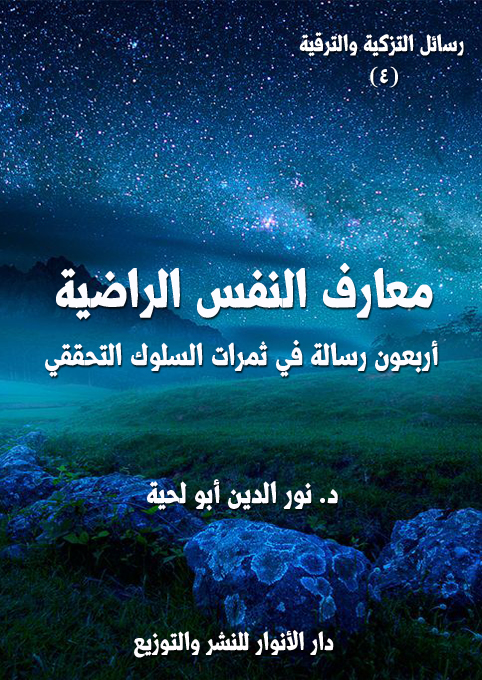

الكتاب: معارف النفس الراضية
الوصف: أربعون رسالة في ثمرات السلوك التحققي
السلسلة: رسائل التزكية والترقية
المؤلف: أ.د. نور الدين أبو لحية
الناشر: دار الأنوار للنشر والتوزيع
الطبعة: الأولى، 1441 هـ
عدد الصفحات: 423
ISBN: 978-620-3-85907-2
لمطالعة الكتاب من تطبيق مؤلفاتي المجاني وهو أحسن وأيسر: هنا

التعريف بالكتاب
يحاول هذا الكتاب البحث عن المعارف الكبرى للنفس المطمئنة، والتي تجعلها موصوفة بالرضى، كما قال تعالى: {ارْجِعِي إلى رَبِّكِ رَاضِيَةً} [الفجر: 28]، وقد ركزنا فيه خصوصا على أمرين:
1 ـ تطهير تلك المعارف مما علق بها من الدخن الذي أصاب كتب التزكية والسلوك، بحيث اختلطت معارفها المستنبطة من المصادر المقدسة بغيرها من المصادر الأجنبية: إما ذات التوجه العقلي، كالفلسفة بمدارسها المختلفة، أو ذات التوجه الإشراقي والغنوصي، والذي قد يظهر في صورة كشف أو شهود أو إلهام.
2 ـ بيان علاقة تلك المعارف بالرضا والسكينة والطمأنينة، وهو مما يدخل في أبواب المقاصد العقدية، والتي لا تكتفي فقط بتقرير الحقائق الإيمانية، ولا البرهنة عليها مثلما يفعل المتكلمون، وإنما تضيف إليها أبعادها وآثارها النفسية، وعلاقتها بالسلوك والتزكية والتربية.
ذلك أن المعارف الإيمانية لا يقتصر أثرها على تعريف المؤمن بحقائق الوجود، وإنما يتعداه إلى تأثيره في السلوك، ولذلك كان من علامات صدق الإيمان رقي السلوك.
معارف النفس الراضية (6)
يحاول هذا الكتاب البحث عن المعارف الكبرى للنفس المطمئنة، والتي تجعلها موصوفة بالرضى، كما قال تعالى: {ارْجِعِي إلى رَبِّكِ رَاضِيَةً} [الفجر: 28]
وبما أن الرضا مرتبط بالحقائق والمعارف، لا بالسلوك والقيم، فقد اهتممنا في هذا الجزء بتلك المعارف التي تملأ النفس بالرضا، كما اهتممنا في الأجزاء السابقة بالقيم والأخلاق التي تقوم عليها النفس المؤمنة الطيبة المطمئنة.
والمعارف التي تحقق الرضا هي المعارف المرتبطة بحقائق الوجود الكبرى، والتي نصت عليها النصوص المقدسة، وتذوقها السالكون إلى الله خير تذوق بعد تطهير أنفسهم من كل المثالب التي كانت تحول بينهم وبينها.
وقد ركزنا في هذا الجزء خصوصا على أمرين:
أولهما ـ تطهير تلك المعارف مما علق بها من الدخن الذي أصاب كتب التزكية والسلوك، بحيث اختلطت معارفها المستنبطة من المصادر المقدسة بغيرها من المصادر الأجنبية: إما ذات التوجه العقلي، كالفلسفة بمدارسها المختلفة، أو ذات التوجه الإشراقي والغنوصي، والذي قد يظهر في صورة كشف أو شهود أو إلهام.
وهذا لا يعني رفضنا كل ما ذكره الفلاسفة والحكماء والإشراقيون وأصحاب الكشف والشهود، وإنما عرضنا ما ذكروه على النصوص المقدسة، فما قبل منها قبلناه، وما رأيناه دخيلا رفضناه.
وهذا لا يعني كذلك اتخاذنا موقفا سلبيا ممن ابتدع في تلك المعارف ما لم ترد به النصوص المقدسة؛ فنحن لا يهمنا في هذه السلسلة وغيرها الحكم على أحد من الناس؛ فالله تعالى أدرى بالسرائر وأعلم بخلقه.
معارف النفس الراضية (7)
ثانيهما ـ بيان علاقة تلك المعارف بالرضا والسكينة والطمأنينة، وهو مما يدخل في أبواب المقاصد العقدية، والتي لا تكتفي فقط بتقرير الحقائق الإيمانية، ولا البرهنة عليها مثلما يفعل المتكلمون، وإنما تضيف إليها أبعادها وآثارها النفسية، وعلاقتها بالسلوك والتزكية والتربية.
ذلك أن المعارف الإيمانية لا يقتصر أثرها على تعريف المؤمن بحقائق الوجود، وإنما يتعداه إلى تأثيره في السلوك، ولذلك كان من علامات صدق الإيمان رقي السلوك.
وإنما قصدنا هذا في هذا الكتاب وغيره، حتى نرد على تلك الطريقة الجدلية التي طُرحت بها العقائد الإسلامية، والتي حولتها إلى ساحة للصراع بين المتكلمين والطوائف، لا إلى ساحة لتعميق الإيمان، وتحبيب الله تعالى إلى خلقه.
ومثل ذلك تحولت كتب العرفان النظري إلى ساحة لكل الخرافات والأساطير والدجل، حتى أصبح علم السحر والأوفاق والطلاسم من علوم العرفان.. وأصبح أي شخص يدعي الكشف مخولا بأن يصف العالم الآخر، وكأن الوحي يوحى إليه، وكأن ما ورد في العقائد التي وردت بها النصوص المقدسة غير كافية؛ فلذلك احتاجت إلى ألسنة العارفين ليكملوها.
ولذلك فإن هذا الكتاب مع اشتماله على المباحث الأساسية التي تبحث عادة في كتب الفلسفة والكلام والعرفان إلا أنه خلا من كل التفاصيل التي يوردونها، والتي لا دليل عليها، لا من العقل المجرد، أو من الوحي المسدد.. بالإضافة إلى اختلافهم فيها، وهو ما يدل على أنها ليست من بديهيات العقول، ولا من بديهيات الكشف والشهود.
معارف النفس الراضية (8)
كتبت إلي ـ أيها المريد الصادق ـ تشكرني على تلك الرسائل التي أجبتك فيها على منازل النفس المطمئنة، وأخبرتني أنك استطعت من خلالها أن تفهم الأصول الكبرى للتزكية والترقية، مع الكثير من تفاصيلها، وأن ذلك العلم لم يعد محصورا فقط في عقلك، وإنما تسلل إلى نفسك وجوارحك؛ فكساها بكل ألوان الفضائل.
وأخبرتني أنك بسبب رفع همتك عن الأكوان.. صرت تطمح إلى التعرف على حقائق الوجود والكون والإنسان والحياة.. وأنك لذلك لجأت إلى الكثير من كتب العرفان، لكنك لم تستطع فهم مضامينها، ولا فك ألغازها، ولا التعرف على الحقائق المنطوية في مفرداتها ومصطلحاتها الكثيرة.
وأخبرتني أن الأمر لم يتوقف على ذلك، وإنما شعرت بإنكار نفسك لبعض ما يذكرونه في تلك الكتب، التي ألفها من يعتبرون أنفسهم أو يعتبرهم أصحابهم من كبار العارفين والحكماء والقديسين والأولياء الذين لا يجوز مناقشتهم، ولا نقدهم، لأن علومهم من مشكاة الغيب، لا من مشكاة الشهادة.
وأخبرتني أن ذلك أزعجك كثيرا، لأنك صرت تشعر أنك لست أهلا لتلك المعارف العظيمة، وأن جهلك بمفرداتها ومصطلحاتها وألغازها سيجعلك في مرتبة العوام الذين لا يحلمون أبدا أن يصلوا إلى مرتبة الخواص، أو خواص الخواص.
وقد ذكرت لي أمثلة كثيرة عما ذكروه مما لم تستسغه نفسك، ولا عقلك، من أمثلة الحروف وأسرارها، والعلوم وأنواعها، والفتوح وأسبابها، وغير ذلك مما لم تجده في نفسك رغم مجاهداتك الكثيرة.
وذكرت لي من النماذج عنها قول بعضهم في المزج بين ما يسمونه أسرار الحروف
معارف النفس الراضية (9)
وعلم الفلك: (الحروف لظاهر النفس الرحماني: هي منازل عددها عدد منازل القمر ويقال لها: التعينات، وهي: العقل الأول ثم النفس الكلية ثم الطبيعة الكلية ثم الهباء ثم الشكل الكلي ثم الجسم الكلي ثم العرش ثم الكرسي ثم الفلك الأطلس ثم المنازل ثم سماء كيوان ثم سماء المشتري ثم سماء المريخ ثم سماء الشمس ثم سماء الزهرة ثم سماء عطارد ثم سماء القمر ثم عنصر النار ثم عنصر الهواء ثم عنصر الماء ثم عنصر التراب ثم المعدن ثم النبات ثم الحيوان ثم الملك ثم الجن ثم الإنسان ثم المرتبة.. وفي مقابلتها على الترتيب حروف باطن النفس الرحماني: وهي الاسم البديع ثم الباعث ثم الباطن ثم الآخر ثم الظاهر ثم الحكيم ثم المحيط ثم الشكور ثم الغني ثم المقتدر ثم الرب ثم العليم ثم القاهر ثم النور ثم المصور ثم المحصي ثم المبين ثم القابض ثم المحي ثم المميت ثم العزيز ثم الرزاق ثم المذل ثم القوي ثم اللطيف ثم الجامع ثم الرفيع) (1)
ومنها قول آخر في أنواع الحروف والفروق بينها: (أما الحروف فالمنقوط منها: عبارة عن الأعيان الثابتة في العلم الإلهي.. والمهمل منهما على نوعين: النوع الأول، مهمل تتعلق به الحروف ولا يتعلق هو بها، وهي خمسة: الألف والدال والراء والواو واللام.. والنوع الثاني، مهمل تتعلق به الحروف ويتعلق هو بها، وهي تسعة: فالإشارة بها إلى الإنسان الكامل لجمعه بين الخمسة الإلهية [الذات والحياة والعلم والقدرة والارادة] والأربعة الخلقية، وهي العناصر الأربعة وما تولد منها) (2)
ومنها قول آخر في عالم الحروف والتكاليف المناطة به: (إن الحروف أمة من الأمم مخاطبون ومكلفون، وفيهم رسل من جنسهم، ولهم أسماء من حيث هم ولا يعرف هذا إلا
__________
(1) تفسير روح البيان، ج 4 ص 16.
(2) الإنسان الكامل في معرفة الأواخر والأوائل، ج 1 ص 66.
معارف النفس الراضية (10)
أهل الكشف من طريقنا. وعالم الحروف أفصح العالم لساناً وأوضحه بياناً، وهم على أقسام كأقسام العالم المعروف في العرف: فمنهم... عالم العظمة: وهو (هـ، ء). ومنهم العالم الأعلى وهو عالم الملكوت: وهو (ح، خ، ع، غ).ومنهم العالم الوسط وهو عالم الجبروت عندنا وعند اكثر أصحابنا: وهو (ت، ث، ج، د، ذ، ر، ز، ظ، ك، ل، ن، ص، ض، ق، س، ش، ي) الصحيحة..) (1)
ومنها قول بعضهم في العلم الذي يسمونه [علم السيمياء]: (صاحب علم السيمياء هو من له سلطان وتحكم على خيالك بخواص الأسماء أو الحروف أو القلقطيرات. فإن السيمياء لها ضروب، أكثفها القلقطيرات، وألطفها التلفظ بالكلام الذي يخطف به بصر الناظر عن الحس ويصرفه إلى خياله، فيرى مثل ما يرى النائم وهو في يقظته) (2)
وغيرها من الأمثلة الكثيرة التي تتعلق بحقائق الوجود والكون والإنسان، وربما تفسر القرآن الكريم بطريقة غريبة لم تعهدها.
وجوابا على سؤالك الوجيه أذكر لك أن معارف النفس الراضية، هي المعارف التي تملؤها بالرضا والطمأنينة والسكينة، لا المعارف التي تملؤها بالقلق والانزعاج..
وذلك لأنها حقائق معصومة، مصدرها الوحي، الذي لم يختلط بالأهواء، ولم تتسلل إليه أوهام النفوس، ولا وساوس الشياطين.
ولذلك؛ فإن كل معرفة تتناقض أو تتصادم مع تلك الحقائق المعصومة، أو تدعي لنفسها معرفة ما لم تذكره؛ فهي حقائق مملوءة بالشبهات، ولا يمكن للشبهات أن تكون مصدرا لأولي الألباب الذي لم يخلطوا الحقائق المعصومة بأي شيء آخر.
__________
(1) الفتوحات المكية، ج 1 ص 58 (بتصرف)
(2) الفتوحات المكية، ج 3 ص 43.
معارف النفس الراضية (11)
لذلك لا عبرة ـ أيها المريد الصادق ـ بكثرة المعارف، ولا بكثرة المصطلحات والمفردات المرتبطة بها.. ما دامت لم ترد إليك من مصادر معصومة موثوقة لا يتطرق إليها الشك، ولا يتسلل إليها الشيطان.
وإلا فإن كل علم يتسلل إليه الوهم، أو يتطرق إليه الشيطان علم لا ثقة فيه، ولا يمكن أن تعتبر صاحبه عالما ولا عارفا، وكيف تعتبره، وهو لا يستطيع أن يثبت لك ما يقوله لا بالعقل المجرد، ولا بالوحي المسدد؟
وأنا لا أدعوك من خلال هذا لتكذيبه، أو لاعتباره ملفقا ومزورا وكاذبا، أو كافرا أو زنديقا كما يذكر المحجوبون.. فمن يفعل ذلك يكون كمن رد الخطأ بالخطيئة.. والوهم بالجريمة..
فأولئك الذين يذكرون تلك التي يسمونها معارف، متيقنون مما يقولونه، ويعتبرونه ثابتا عندهم.. لكنه لا يصح أن يصير ثابتا عند غيرهم ما لم يدل عليه الدليل المعصوم، وإلا ألّف كل من رزق الولاية والصلاح رسالة في العقائد يضاهي بها النبوة، ويدعي أن حقائقها غير كافية.
ولذلك أنصحك ـ أيها المريد الصادق ـ بأن تترك كل ذلك، وتفعل ما نصحك به نبيك صلى الله عليه وآله وسلم حين رأى بعض أصحابه يحمل كتابا أصابه من بعض اليهود، فغضب رسول الله صلى الله عليه وآله وسلم، وقال: (أمتهوكون فيها يا ابن الخطاب؟! والذي نفسي بيده، لقد جئتكم بها بيضاء نقية، لا تسألوهم عن شيء فيخبروكم بحق فتكذبوا به أو بباطل فتصدقوا به، والذي نفسي بيده لو أن موسى صلى الله عليه وسلم كان حيا ما وسعه إلا أن يتبعني) (1)
فهذا الحديث يخبر أن دين الله أبيض نقي صاف ليس فيه أي دنس أو شبهة تمنع العقل
__________
(1) رواه أحمد: 3/ 387 ح (15195)
معارف النفس الراضية (12)
السليم من التسليم له، لكن هذا الأبيض يمكنه أن يتحول إلى أسود إذا ما اختلط بغيره، فهو لشدة بياضه وجماله أسرع الأشياء إلى التلوث إذا لم يحافظ عليه.
وفي حديث آخر قال صلى الله عليه وآله وسلم: (لا تسألوا أهل الكتاب عن شيء، فإنهم لن يهدوكم وقد ضلوا، وإنكم إما أن تصدقوا بباطل وإما أن تكذبوا بحق، وإنه ـ والله ـ لو كان موسى حيا بين أظهركم ما حل له إلا أن يتبعني) (1)
وهذه النصائح النبوية الغالية ليست قاصرة على ذلك التراث الذي تسلل إلى المسلمين عن طريق أهل الكتاب، وإنما تشمل أيضا ذلك التراث العريض الذي ألفه المسلمون، وملأوه بالدخن الذي وقع فيه أهل الكتاب من قبلهم.
ولذلك.. أقول لك بأنه لا شك أن لكل شيء في هذا الكون أسراره الكثيرة الخاصة به.. حتى الحروف لها عالمها وأسرارها وحقائقها.. لكن فرق كبير بين أن تؤمن بعظمة الله تعالى في خلقه وتدبيره لكونه، وبين أن تدعي معرفة الحقائق المرتبطة به من دون أن يكون لك معلم معصوم تُحفظ به من أن تقع في الأوهام.
لذلك كان البحث في تلك العلوم مثل البحث في العلوم التي لا تنفع، والجهل الذي لا يضر.. بل إن العلم بها قد يضر لأنها توهم صاحبها أنه يعلم حقائق الوجود، ولعله أجهل الناس بها.
لهذا.. فإن علوم النفس الراضية ـ أيها المريد الصادق ـ ليست من جنس هذه العلوم، بل هي تقرير للحقائق القرآنية المرتبطة بالوجود والكون والحياة والإنسان وغيرها.. وفيها الكفاية لمن يريد أن يسلك إلى الله، ويمتلئ بتنزيهه وتعظيمه.. أما التفاصيل المرتبطة بالأشياء؛ فإن السالك الصادق لا يشتغل بها، لا احتقارا لها، وإنما لافتقاده للطريق إليها،
__________
(1) غاية المقصد فى زوائد المسند، (1/ 92)
معارف النفس الراضية (13)
والأستاذ المعصوم الذي يعلم علومها.
قد يقال لك ـ أيها المريد الصادق ـ بأن الخلوات هي الطريق إليها، وأن الملتزم بها تفتح له غرائب العلوم ويرى عجائبها.. وذلك مما لا أستطيع أن أنكره أو أكذبه.. لكنه يظل حالا محدودا بصاحبه، لأن الأخطاء قد تعتريه، والأوهام قد تتلبس به.. لذلك كان إدخاله إلى السلوك والتربية والتزكية نوعا من التنفير عنها، والحجاب بين السالك الصادق وبينها.
بناء على هذا كله، اعلم ـ أيها المريد الصادق ـ أنك لن تختلف عن قومك ـ عند سلوكك الصادق لله ـ في العلوم التي يعرفونها، بل قد يوجد فيهم من لديه من ظواهر العلوم ما ليس لك.. ولكن العبرة ليست بتلك العلوم، وإنما بتلك الطمأنينة لها، والرضا عنها، والذي يجعل قلبك مرآة تتجلى فيه الحقائق كما هي، وبصورتها الجميلة التي قد تعبر عنها بنفس تعبير الآخرين، ولكن تعبيرك ناشئ عن رؤية، لا عن حفظ.
وإن شئت ـ أيها المريد الصادق ـ مثالا يقرب لك هذا.. فاعلم أن معارف السالكين بدرجاتهم المختلفة تشبه جمعا من الناس أصحاب قدرات بصرية مختلفة تبدأ بالبصير الذي يرى الأشياء كما هي، وبدقة عالية.. وتنتهي بالأعمى الذي لا يرى شيئا.. وقد كُلفوا جميعا بوصف شيء أمامهم.
أما البصير فراح يصف ما رآه.. وكما هو.. وأما غيره فراح يقلد ما قاله غيره، ويكرر ما ذكره.. حتى الأعمى، وبذاكرته القوية ردد كل ما وصفه غيره، وربما بدقة أكثر.
فهكذا حال العارفين.. فهم لا يضيفون شيئا جديدا للمعارف التي جاءت بها النبوة، وإنما يرون تلك المعارف بصورة أدق من تلك التي يراها أصحاب البصر الضعيف.
لذلك كان الطريق إلى الله هو التحقق بالمعارف التي جاءت بها النبوة، وتحويلها من معارف ذهنية قد تتلاعب بها تقلبات القلوب إلى حقائق مقررة في النفوس لا يمكن أن تقلع
معارف النفس الراضية (14)
بأي حال من الأحوال، لأنها معارف ناشئة عن رؤية وبصيرة، لا عن تقليد واتباع.
وإن شئت دليلا على ذلك فتأمل فيما ورد في الحديث الشريف الذي حدث به الحارث بن مالك الانصاري، قال: مررت بالنبي صلى الله عليه وآله وسلم فقال: كيف أصبحت يا حارث؟ قلت: أصبحت مؤمنا حقا، فقال: انظر ما تقول! فان لكل شئ حقيقة فما حقيقة إيمانك؟ قلت: قد عزفت نفسي عن الدنيا، وأسهرت لذلك ليلى وأظمأت نهاري، وكأني أنظر إلى عرش ربي بارزا، وكأني أنظر إلى أهل الجنة يتزاورون فيها، وكأني أنظر إلى أهل النار يتضاغون فيها، فقال: (يا حارث! عرفت فالزم) (1)، وفي رواية أن رسول الله صلى الله عليه وآله وسلم قال له: (أصبت فالزم.. مؤمن نور الله قلبه)
فرسول الله صلى الله عليه وآله وسلم في هذا الحديث لم يطلب من صاحبه أن يصف له بدقة ما رآه، ولا أن يذكر له العلوم التي تعلمها، وإنما اكتفى منه بذلك، وأخبر أن قد تنور قلبه بالإيمان، وأن ذلك النور هو الذي أتاح له أن يرى الحقائق التي كان محجوبا عنها بسبب افتقاده للنور.
وذلك الصحابي لم يخرج للناس، ويذكر لهم تفاصيل ما رآه، ولا العلوم التي تعلمها، وإنما بقي تلميذا وفيا للنبوة، يردد الوحي الذي يتنزل على رسول الله صلى الله عليه وآله وسلم، ويحفظ الأحاديث التي يسمعها منه، ولا يكلف نفسه بأن يضيف شيئا جديدا، لوحي ربه، أو لسنة نبيه.
فلذلك ـ أيها المريد الصادق ـ لا تنتظر مني أن أشرح لك تلك الكلمات الغريبة، ولا المعاني المرتبطة بها.. فهي ليست قرآنا معصوما، ولا أحاديث مروية عن معصومين حتى نجتهد في فهمها، أو البحث عن الحقائق المرتبطة بها.. وإنما هي كلمات من بشر كسائر البشر، قد يقبل منهم، وقد يرد عليهم، وقد يكتفى بالإعراض عنهم.
أما ما يذكرونه من مشاهدات ورؤى ومعارف لا تصطدم مع النصوص المقدسة..
__________
(1) رواه الطبراني في الكبير وأبو نعيم.
معارف النفس الراضية (15)
فهي مما يمكنك الإعراض عنه من دون أن تتنقده، أو يمكنك قبوله من باب حسن الظن بقائله، أما إن اصطدم معها، أو كان إضافة مهمة لها؛ فإن دينك يدعوك لردها، ونقدها وتكذيبها.
وكيف لا تفعل ذلك، وقد ورد في الحديث أن رسول الله صلى الله عليه وآله وسلم خطب الناس بمنى، فقال: (أيّها الناس، ما جاءكم عنّي يوافق كتاب الله فأنا قلته، وما جاءكم عنّي يخالف كتاب الله فلم أقله) (1)
وسأل بعضهم الإمام الصادق عن: اختلاف الحديث يرويه من نثق به، ومنهم من لا نثق به؟ فقال: (إذا ورد عليكم حديث فوجدتم له شاهدا من كتاب الله، أو من قول رسول الله صلى الله عليه وآله وسلم، وإلا فالذي جاءكم به أولى به)، وفي رواية أخرى: (ما لم يوافق من الحديث القرآن فهو زخرف) (2)
فإذا كان هذا هو الحال والموقف من أحاديث نبيك صلى الله عليه وآله وسلم، وأحاديث أئمة الهدى من بعده؛ فكيف بأحاديث غيرهم؟
فاحرص ـ أيها المريد الصادق ـ على المنابع الصافية، واكتف بها؛ فقطرة من المنابع المكدرة قد تفسد عليك كل شرابك..
واعلم أنه لن يشرب من حوض النبوة يوم القيامة إلا من صفوا مشاربهم، وابتعدوا عن كل حدث يبعدهم عن هدي النبوة والورثة الذين أوصى بهم، وقد ورد في الحديث عنه صلى الله عليه وآله وسلم: (ألا ليذادنّ رجال عن حوضي كما يذاد البعير الضّالّ أناديهم: ألا هلمّ! فيقال: إنّهم قد بدّلوا بعدك. فأقول سحقا سحقا) (3)
__________
(1) الكافي،1/ 69.
(2) بحار الأنوار، ج 1/ 144 و145.
(3) رواه مسلم.
معارف النفس الراضية (16)
فإياك أن تبدل أو تغير، أو تضيف من عندك إلى عقائد الدين أو شرائعه ما لم يدل عليه الدليل؛ فتكون كذلك التلميذ الذي امتحنه أستاذه ببعض الأسئلة؛ فظن أنه ان اكتفى بما درسه أو بما يجيب به زملاؤه يكون مقصرا، فراح يضيف من عنده ما لم يثبت، فصار مسخرة عند أستاذة وزملائه، وسبقه أولئك البسطاء الذين اكتفوا بترديد ما درسوه.
فلا يمكنك أن تصل إلى مراتب الخواص بترديدك لتلك المصطلحات التي تنسب إليهم، ولا بتلفيقك لتلك الجمل الغامضة التي تحفظ عنهم.. وإنما تصل إليها بترديدك للأذكار، وتلاوتك للقرآن.. وفتح بصيرتك لتشاهد الحقائق كما هي، لا كما يصفها لك من يزعم أنه شاهدها.
معارف النفس الراضية (17)
كتبت إلي ـ أيها المريد الصادق ـ تستغرب ما ذكرته لك في رسالتي السابقة، وتذكر لي أنه يخالف ما تعارف عليه أهل السلوك من الثقة في أولياء الله والعارفين به في كل ما يذكرونه من معارف وحقائق، والتسليم لهم، واعتبار ذلك نفسه ولاية لله تعالى، كما عبر عن ذلك بعضهم، فقال: (التصديق بعلمنا هذا ولاية، وإذا فاتتك المنّة في نفسك فلا تفتك أن تصدّق بها في غيرك) (1)
وقال آخر: (من آداب مجالسة الصديقين أن تفارق ما تعلم لتظفر بالسر المكنون)
وقال آخر: (إن أردت أن تظفر بما عند الصالحين من السر المكنون فأسقط عنهم الميزان في أقوالهم وأفعالهم وأحوالهم، وأما ما دمت تزن عليهم بميزان علمك فلا تشم رائحة من سرهم) (2)
وقال آخر: (طريقتنا لا ينال منها شيئا إلا من يصدق بالمحال؛ فإن أردت أن يهب عليك نسيم أسرارهم ونفحات مواهبهم فدع ما تعرف إلى ما لا تعرف، واغتسل من علمك وعملك حتى تبقى فقيرا إلى ما عندهم) (3)
وقال آخر: (الناس على أربعة أقسام: القسم الأول: حصل لهم التصديق بعلمهم، والعلم بطريقهم، والذوق لمشروبهم وأحوالهم، والقسم الثانى: حصل لهم التصديق والعلم المذكوران دون الذوق. والقسم الثالث: حصل لهم التصديق دونهما، والقسم الرابع: لم
__________
(1) الكواكب الدرية (1/ 573)
(2) إيقاظ الهمم فى شرح الحكم، ص: 435.
(3) إيقاظ الهمم فى شرح الحكم، ص: 435.
معارف النفس الراضية (18)
يحصل لهم من الثلاثة شئ، ونعوذ بالله من الحرمان، ونسأله التوفيق والغفران) (1)
وذكرت لي أنك خائف من أن تصير من أهل القسم الرابع أولئك المحرومين من التحلي بالحقائق بسبب إنكارهم على الأولياء والصالحين، وفي نفس الوقت لا تستطيع أن تسلم لهم كل ما ذكروه.. ولذلك صرت في حيرة بين الأمرين.
وجوابا على سؤالك الوجيه أذكر لك أن ما روي عن الصالحين من معان نوعان:
أولهما: ما لا يصح إنكاره، ولا رده، ولا التشنيع عليه مثلما يفعل الجهلة، وهو ذلك الميراث العظيم الذي تحدثوا فيه عن مراتب التزكية ومعانيها والحقائق المرتبطة بها، مما تؤيده المصادر المقدسة وتدعو إليه.
ومثل ذلك حديثهم عن الأذواق الإيمانية اللذيذة التي يجدها السالكون، مما يرغب في السير إلى الله، ويعطي النماذج الحسنة عنه.
ومثل ذلك حديثهم في المعارف الإلهية التي لا تتناقض مع المصادر المقدسة، بل قد تساهم في فهمها، وتعميق معانيها في النفس.
ومثل ذلك تعظيمهم للنبوة والإمامة والولاية وتبيين دورها في التزكية والترقية، مما يرغب السالكين في التعلق بالصالحين، وتعميق صلتهم بهم.
وغير ذلك من الحقائق والقيم الموروثة عنهم، والتي تعين السالك إلى الله على اجتياز عقبات نفسه والتخلص من مثالبه من خلال استفادته من تجارب السالكين قبله.
وأما النوع الثاني: فهو الذي يحتاج من السالك إلى التوقف فيه، أو رده، أو الإعراض عنه، وهو ذلك التراث الكثير الذي بثوه في كتبهم، والذي حاولوا من خلاله أن يضعوا الحقائق التي كشفت لهم من خلال ممارساتهم الروحية، ولا علاقة لها أصلا بالسلوك، ولا
__________
(1) روض الرياحين فى حكايات الصالحين، ص: 10.
معارف النفس الراضية (19)
بالتزكية.
ذلك أن كتب السلوك والتزكية اختلطت في العصور المتأخرة بأمثال تلك المعاني التي لا تكتفي برسم الطريق للسالك، وإنما تصف له المعارف التي يمكن أن يصل إليها.. وأكثرها مما يحتاج إلى المصادر المعصومة، لأنها تدخل في أبواب العقائد والغيبيات، ولا يمكن لأحد أن يصف شيئا من عالم الغيب، ما لم يكن مؤيدا بالوحي الإلهي.
وقد أشار بعضهم إلى هذه الوجهة التي توجهها هؤلاء، فقال: (وربّما قصد بعض المصنّفين ذلك في كشف الموجودات وترتيب حقائقه على طريق أهل المظاهر فأتى بالأغمض فالأغمض بالنّسبة إلى أهل النّظر والاصطلاحات والعلوم كما فعل الفرغانيّ شارح قصيدة ابن الفارض في الدّيباجة الّتي كتبها في صدر ذلك الشّرح، فإنّه ذكر في صدور الوجود عن الفاعل وترتيبه أنّ الوجود كلّه صادر عن صفة الوحدانيّة الّتي هي مظهر الأحديّة وهما معا صادران عن الذّات الكريمة الّتي هي عين الوحدة لا غير. ويسمّون هذا الصّدور بالتّجلّي. وأوّل مراتب التّجليّات عندهم تجلّي الذّات على نفسه وهو يتضمّن الكمال بإفاضة الإيجاد والظّهور.. وهذا الكمال في الإيجاد المتنزّل في الوجود وتفصيل الحقائق وهو عندهم عالم المعاني والحضرة الكماليّة والحقيقة المحمّديّة وفيها حقائق الصّفات واللّوح والقلم وحقائق الأنبياء والرّسل أجمعين والكمّل من أهل الملّة المحمّديّة. وهذا كلّه تفصيل الحقيقة المحمّديّة. ويصدر عن هذه الحقائق حقائق أخرى في الحضرة الهبائيّة وهي مرتبة المثال ثمّ عنها العرش ثمّ الكرسيّ ثمّ الأفلاك، ثمّ عالم العناصر، ثمّ عالم التّركيب. هذا في عالم الرّتق فإذا تجلّت فهي في عالم الفتق. ويسمّى هذا المذهب مذهب أهل التّجلّي والمظاهر والحضرات وهو كلام لا يقتدر أهل النّظر إلى تحصيل مقتضاه لغموضه وانغلاقه) (1)
__________
(1) مقدمة ابن خلدون (1/ 617)
معارف النفس الراضية (20)
وهذا لا يعني ـ أيها المريد الصادق ـ أن هؤلاء كاذبون في دعاواهم، ولا أنهم ملفقون لتلك الأحاديث، بل هم صادقون في الحديث عن أنفسهم، وما كشف لهم، ويجب حسن الظن بهم مثلما يحسن الظن بسائر الناس.
لكن هناك فرقا بين أن تحسن الظن بشخص، وأن تقبل كل ما يقوله.. فالثبوت يختلف عن الإثبات.. ذلك أن الثبوت أمر شخصي، ولا علاقة له بسائر الناس، وأما الإثبات فيحتاج إلى البراهين والأدلة، وهؤلاء لا براهين لهم سوى ذلك الكشف الذي حصل لهم، والذي قد يختلط فيه الحق بالباطل، والإلهام بالوسوسة.
ذلك لأن المتعرض للكشف أو الإلهام غير معصوم، وبالتالي يمكن أن تصبح للأهواء والمعارف السابقة تأثيرها فيما قد يعتقده كشفا صحيحا.
ولهذا اتفق المشايخ والحكماء سلفهم وخلفهم على عرض ما يكشف لهم على المصادر المعصومة، فإن وافقت فبها، وإلا رمي بها، كما عبر بعضهم عن ذلك بقوله: (إن النكتة لتقع في قلبي من جهة الكشف فلا أقبلها إلا بشاهدى عدل من الكتاب والسنة)
وقال آخر: (كل حقيقة لا تشهد لها الشريعة فهي زندقة.. طِرْ إلى الحق عز وجل بجناحي الكتاب والسنة، ادخل عليه ويدك في يد الرسول صلى الله عليه وآله وسلم) (1)
وقال آخر: (إِذا عارض كشفُك الصحيح الكتابَ والسنة فاعمل بالكتاب والسنة ودع الكشف، وقل لنفسك: إِن الله تعالى ضمن لي العصمة في الكتاب والسنة، ولم يضمنها لي في جانب الكشف والإِلهام) (2)
ولهذا يخطئ بعضهم بعضا في تلك المعارف التي وصلوا إليها، ومن ذلك قول بعضهم
__________
(1) الفتح الرباني والفيض الرحماني، ص 29.
(2) انظر: إِيقاظ الهمم، (2/ 302)
معارف النفس الراضية (21)
في الكشف الذي لا يمكن اعتباره: (الكشف الذي يؤدي إلى فضل الإنسان على الملائكة أو فضل الملائكة على الإنسان مطلقاً من الجهتين لا يعول عليه) (1)
ويقول: (كل كشف يريك ذهاب الأشياء بعد وجودها لا يعول عليه) (2)
ويقول: (كل كشف لا يكون صرفاً لا يخالطه شيء من المزاج لا يعول عليه، إلا أن يكون صاحب علم بالمصور) (3)
إذا عرفت هذا ـ أيها المريد الصادق ـ فإياك أن تسلم دينك لغير المعصوم، وقل لكل شخص يريد أن يدعوك إلى أي عقيدة من العقائد أو معرفة من المعارف: {هَاتُوا بُرْهَانَكُمْ إِنْ كُنْتُمْ صَادِقِينَ} [البقرة: 111]
فإن قال لك: برهاني هو الكشف الذي كشف لي، أو كشف لغيري.. وأن السالك لا يحتاج إلى البرهان، بل يحتاج إلى التسليم.. فقل له حينها: هل هذه المعارف ضرورية للتزكية والترقية أم أنها ليست كذلك؟.. فإن ذكر لك ضرورتها، فأخبره أن هذا اتهام للنبوة بالتقصير في عرض المعارف التي يحتاجها المؤمنون لتزكية أنفسهم وترقيتها.. فإن ذكر لك عدم ضرورتها، فأخبره بأن العاقل هو الذي يترك ما لا ضرورة له، خاصة إن اشتبه أمره، ولم يميز صدقه من كذبه، وخطؤه من صوابه.
وكمثال يقرب لك هذا تلك المعارف الكثيرة التي تتحدث عن عما يسمونه [علم الأفلاك العلوية]، والذي عرفه بعضهم بأنه (من علوم القوم الكشفية، ومنه يعلم أهل السماء أكرة في خيمة، أو خيمة في كرة أو بشبه ذلك؟ وهل تدور الأرض بدورانها أم لا؟ وهل النجوم سائرة تسري في السماء أم ساكنة والسماوات دائرة بما فيها؟ وقليل من يكاشف
__________
(1) ابن عربي، رسالة لا يعول عليه، ص 3.
(2) رسالة لا يعول عليه، ص 14
(3) رسالة لا يعول عليه، ص 18.
معارف النفس الراضية (22)
بما الأمر عليه في نفسه) (1)
فهذا العلم اكتفى القرآن الكريم بالإشارة إلى بعض الحقائق المرتبطة به، كقوله تعالى: {وَهُوَ الَّذِي خَلَقَ اللَّيْلَ وَالنَّهَارَ وَالشَّمْسَ وَالْقَمَرَ كُلٌّ فِي فَلَكٍ يَسْبَحُونَ} [الأنبياء: 33]، ثم ترك الأمر بعد ذلك للعلماء باستعمال وسائلهم للبحث فيه.. مع العلم أن تفاصيله لا علاقه لها بالتزكية ولا بالترقية، ولا بالمعرفة الإلهية، ذلك أنها كلها تنبع من قدرة الله المطلقة التي لا حدود لها.
ولكن مع ذلك نجد للأسف من ذكر الكثير من المعارف المرتبطة بهذا الجانب، والتي يذكر أنه تلقاها عن طريق الكشف، وكان في إمكانه أن يكتفي بالاحتفاظ بها لنفسه لعدم قدرته على إثباتها لغيره، لكنه لم يفعل، وراح يشغل أوقات السالكين بعلوم لا دليل عليها من النقل ولا من العقل ولا من العلم.
ومن الأمثلة على ذلك خوض بعضهم في تاريخ الأفلاك ونشأتها، مع أن الله تعالى قال: {مَا أَشْهَدْتُهُمْ خَلْقَ السَّمَاوَاتِ وَالْأَرْضِ وَلَا خَلْقَ أَنْفُسِهِمْ} [الكهف: 51]
لكن هؤلاء أبوا إلا أن يفصلوا في تلك التواريخ، وكأنهم رأوها رأي العين، وقد قال بعضهم في ذلك: (لما كمل الكرسي واستقر فيه الملأ الأمري، أحال أنوار السبعة الأعلام فكان عنها السبع الطرائق متماسة الأجرام جعلها سقفاً مرفوعاً لمهاد سيكون إذا توجه عليه الأمر بقوله تعالى: {كُنْ فَيَكُونُ} [يس: 82] وكواكبها منتهى الأشعة في الخلا على الاستيفاء فسقطت الأنوار، وتجارت وانتشأت الأفلاك) (2)
وقال في حركات الأفلاك الروحانية: (لهذه الأفلاك الروحانية حركات.. حركة
__________
(1) عبد الوهاب الشعراني، الأجوبة المرضية عن الفقهاء والصوفية، ص 14 (بتصرف)
(2) ابن عربي، عنقاء مغرب، ص 43.
معارف النفس الراضية (23)
معرفة عيوب النفس المسارعة إلى الخيرات.. وحركة فلك اتقاء الآفات المسابقة إلى مجالس العلماء.. وحركة فلك ترتيب المعاملات المبادرة إلى معرفة الأوقات.. وحركة فلك محافظة الحدود المجاراة إلى الوفاء بالعهود.. وحركة فلك موازين الأعمال الإنهاض إلى محاسبة النفس.. وحركة فلك التدبير الاستعداد إلى التلاوة بتفريغ الخواطر.. وحركة فلك المعرفة دوام الإخلاص) (1)
وقال في الفلك الذي يسمونه [الفلك الأطلس]: (الفلك الأطلس: وهو فلك البروج.. ولا كوكب فيه متماثل الأجزاء مستدير الشكل لا تعرف لحركته بداية ولا نهاية وماله طرف بوجوده حدثت الأيام السبعة والشهور والسنون ولكن ما تعينت هذه الأزمنة فيه إلا بعد ما خلق الله في جوفه من العلامات التي ميزت هذه الأزمنة وما عين منها هذا الفلك سوى يوم واحد وهي دورة واحدة عينها مكان القدم من الكرسي فتعينت من أعلى فذلك القدر يسمى يوماً) (2)
وقال آخر في الفلك الذي يسمونه [فلك الثوابت]: (هو آخر الأفلاك التي خلقها الله تعالى للبقاء، فلا تفنى ولا تهلك صورها، سطحه أرض الجنة، ومقعره سقف النار جهنم، وفيه الكواكب الثابتة، وهو بما احتوى عليه من السماوات والأرضين في الفلك الأطلس، كحلقة ملقاة في أرض فيحاء، وفيه قوة ما فوقه الأطلس والكرسي والعرش، لأنه مولد عنهم.. وهكذا كل مولد فإنه يجمع حقائق ما فوقه، حتى ينتهي إلى الإنسان، فيجتمع فيه قوة جميع العالم. فإن كان إنساناً كاملاً جمع مع ذلك الأسماء الإلهية، بكمالها، ويسمى هذا الفلك بالمكوكِب وبفلك المنازل) (3)
__________
(1) ابن عربي، مواقع النجوم ومطالع أهلة الأسرار والعلوم، ص 40.
(2) الفتوحات المكية، ج 2 ص 437.
(3) الفتوحات المكية، ج 2 ص 669.
معارف النفس الراضية (24)
وهكذا تجد أحاديث مفصلة عن العقائد التي وردت في المصادر المقدسة مما لم يرد فيها أمثال تلك التفاصيل، مثل قول بعضهم في جهنم: (وأوجدها الله [أي جهنم] بطالع الثور، ولذلك كان خلقها، في الصورة، صورة الجاموس سواء. هذا الذي يعول عليه عندنا. وبهذه الصورة رآها أبو الحكم بين برجان في كشفه. وقد تمثل لبعض الناس، من أهل الكشف، في صورة حية. فيتخيل أن تلك الصورة هي التي خلقها الله عليها، كأبي القاسم بن قسى وأمثاله، ولما خلقها الله تعالى، كان زحل في الثور، وكانت الشمس والأحمر في القوس، وكان سائر الدراري في الجدي. وخلقها الله تعالى من تجلى قوله، في حديث مسلم: (جعت فلم تطعمني! وظمئت فلم تسقني! ومرضت فلم تعدني! وهذا أعظم نزول نزله الحق إلى عباده في اللطف بهم، فمن هذه الحقيقة خلقت جهنم. أعاذنا الله، وإياكم، منها! فلذلك تجبرت على الجبابرة، وقصمت المتكبرين) (1)
ويتحدث عن المأدبة المعدة لأهل الجنة، والمندبة المعدة لأهل النار، فيقول: (في ذلك الوقت يجتمع أهل النار في مندبة. فأهل الجنة في المآدب. وأهل النار في المنادب. وطعامهم في تلك المأدبة زيادة كبد النون. وأرض الميدان درمكة بيضاء، مثل القرصة. ويخرج من الثور الطحال لأهل النار. فيأكل أهل الجنة من زيادة كبد النون. وهو حيوان بحرى مائي. فهو عنصر الحياة المناسبة للجنة. والكبد بيت الدم. وهو بيت الحياة. والحياة حارة رطبة. وبخار ذلك الدم هو النفس، المعبر عنه بالروح الحيواني، الذي به حياة البدن. فهو بشارة لأهل الجنة ببقاء الحياة عليهم. وأما الطحال في جسم الحيوان، فهو بيت الأوساخ، فان فيه تجتمع أوساخ البدن، وهو ما يعطيه الكبد من الدم الفاسد. فيعطى لأهل النار يأكلونه. وهو من الثور. والثور حيوان ترابي، طبعه البرد واليبس. وجهنم على صورة الجاموس. والطحال
__________
(1) الفتوحات المكية، ج 4، ص: 370
معارف النفس الراضية (25)
من الثور، لغذاء أهل النار، أشد مناسبة: فبما في الطحال من الدمية، لا يموت أهل النار، وبما فيه من أوساخ البدن ومن الدم الفاسد المؤلم، لا يحيون ولا ينعمون. فيورثهم أكله سقما ومرضا) (1)
ويتحدث عن عدد درجات الجنة، فيقول: (فتحوى درجات الجنة من الدرج فيها على خمسة آلاف درج ومائة درج وخمسة أدراج لا غير. وقد تزيد على هذا العدد بلا شك. ولكن ذكرنا منها ما اتفق عليه أهل الكشف، مما يجرى مجرى الأنواع من الأجناس. والذي اختصت به هذه الأمة المحمدية على سائر الأمم، من هذه الأدراج، اثنا عشر درجا لا غير، لا يشاركها فيها أحد من الأمم. كما فضل صلى الله عليه وآله وسلم غيره من الرسل، في الآخرة، بالوسيلة وفتح باب الشفاعة، وفي الدنيا بست لم يعطها نبي قبله كما ورد في الحديث الصحيح، من حديث مسلم بن الحجاج. فذكر منها: عموم رسالته، وتحليل الغنائم، والنصر بالرعب، وجعلت له الأرض كلها مسجدا، وجعلت تربتها له طهورا، وأعطى مفاتيح خزائن الأرض) (2)
وكل هذه المعارف ـ أيها المريد الصادق ـ ليس لها من دليل سوى الكشف الذي يذكرون أن الله تعالى منّ به عليهم، وكان في إمكانهم أن يقتصروا به على أنفسهم، لكونه حصل لهم، ولم يحصل لغيرهم، ولكونهم لا يطيقون إثباته، ولكونه قد يكون من الوساوس أو أحاديث النفوس التي لا علاقة لها بالواقع.
لكن الأمر للأسف خرج إلى الكتب والمصنفات، وألفت الشروح حول ذلك، وصار كل من هب ودب يضيف مما يزعم أنه كشف له.. وأصبح بذلك علم التزكية علما مختلطا بمعارف لا دليل يدل عليها، لا من العقل، ولا من النقل..
__________
(1) الفتوحات المكية، ج 4، ص: 479.
(2) الفتوحات المكية، ج 5، ص: 73.
معارف النفس الراضية (26)
ولم يقتصر الأمر على ذلك، بل دب التنافس في هذا بين أصحاب هذه العلوم، فصار كل شخص يزعم أن معارفه بالعالم العلوي والسفلي أدق، وأنه بذلك الجدير بالولاية أو بختمها أو بمراتبها الرفيعة.. وكل ذلك ما حول علم السلوك إلى الله إلى علوم كثيرة قد ترتبط بكل شيء، لكنها لا علاقة لها لا بالسلوك إلى الله، ولا بالتزكية والترقية.
معارف النفس الراضية (27)
كتبت إلي ـ أيها المريد الصادق ـ تخبرني عن أشواقك العظيمة لمعرفة الله، حتى تصيرمن أولئك الذين يُطلق عليهم لقب [العارف بالله]، أولئك الذين فتح الله على مرائي قلوبهم أنوار معرفته؛ فتحولوا إلى هداة يدلون عليه، ويعرفون به.
وأنا أشكر لك ـ أيها المريد الصادق ـ هذه الهمة العلية التي حول الله قلبك إليها؛ فليس مثل معرفة الله معرفة، فهي الغاية العظمى التي هفت إليها قلوب المؤمنين، وقد قال الإمام الصادق: (لو يعلم الناس ما في فضل معرفة الله عز وجل ما مدوا أعينهم إلى ما متع الله به الأعداء من زهرة الحياة الدنيا ونعيمها، وكانت دنياهم أقلَّ عندهم مما يطوونه بأرجلهم، ولنَعِمُوا بمعرفة الله عز وجل وتلذذوا بها تلذذ من لم يزل في روضات الجنان مع أولياء الله) (1)
ثم فصل بعض آثار ذلك بقوله: (إن معرفة الله عز وجل أنْسٌ من كل وحشة، وصاحبٌ من كل وحدة، ونورٌ من كل ظلمة، وقوةُ من كل ضعف، وشفاءٌ من كل سقم) (2)
لكني ـ أيها المريد الصادق ـ أريد أن أنبهك إلى أن معرفة الله ليست كمعرفة غيره.. فمعرفة الغير تبدأ بإدراكه وتحديده، بحيث يمكن أن يوصف وصفا شاملا تاما لا مزيد عليه.. أما الله، فيستحيل أن يُعرف بهذا النوع من المعرفة.. ذلك أنه غير محدود، ولا محاط به، ولا يمكن أن يُدرك أبدا..
ولهذا كان لقب [العارف بالله] الذي حننت إليه، لا يحمل معناه بدقة.. بل فيه الكثير من المجاز.. وهو يشبه من يحمل دلوا صغيرا، وهو يريد أن ينقل به البحر المحيط من محل
__________
(1) الكافي:8/ 247.
(2) الكافي:8/ 247.
معارف النفس الراضية (28)
إلى محل.. فلا يمكن أن يقال لمثل هذا بأن وظيفته حمل المحيط.
بل إن أمر معرفة الله تعالى أعظم بكثير، ذلك أن أساس معرفته هي العلم بإطلاقه وعدم محدوديته، وذلك مما يدل على استحالة معرفته، كما عبر الإمام علي عن ذلك بقوله: (ليس له [سبحانه وتعالى] حدّ ينتهي إلى حدّه) (1)، وقال: (من زعم أنّ إله الخلق محدود فقد جهل الخالق المعبود) (2)، وقال: (من حدّه [تعالى] فقد عدّه، ومن عدّه فقد أبطل أزله) (3)
وروي أن بعض الناس طلب من الإمام علي بن موسى الرضا أن يحدّ الله تعالى له، فقال له الإمام: لا حدّ له. قال الرجل: ولم؟ قال الإمام: (لأنّ كلّ محدود متناه إلى حدّ. وإذا احتمل التحديد احتمل الزيادة. وإذا احتمل الزيادة احتمل النقصان. فهو غير محدود ولا متزايد ولا متناقص ولا متجزّئ) (4)
ولهذا كان سيد العارفين رسول الله صلى الله عليه وآله وسلم يقول في دعائه: (اللهم إني أسألك بكل اسم هو لك، سميت به نفسك، أو أنزلته في كتابك أو علمته أحدا من خلقك، أو استأثرت به في علم الغيب عندك أن تجعل القرآن ربيع قلبي ونور صدري وجلاء حزني وذهاب همي وغمي) (5)
وفي دعاء آخر يقول: (اللهم اعوذ برضاك من سخطك، وبمعافاتك من عقوبتك، وأعوذ بك منك لا أحصي ثناء عليك، أنت كما أثنيت على نفسك) (6)
__________
(1) التوحيد، الصدوق: باب 2، ح 1، ص 35.
(2) المصدر السابق، ح 34، ص 77.
(3) نهج البلاغة، الشريف الرضي: قسم الخطب، خطبة 152، ص 278 ـ 279
(4) التوحيد، الصدوق: باب 36، ح 3، ص 246
(5) رواه أحمد (1/ 391) (3712) (1/ 452) (4318)
(6) رواه أَحمد (1/ 96 و18 أو 150) وأبو داود (1427) والنسائي (3/ 248، 249) وابن ماجه (1179)
معارف النفس الراضية (29)
وقد حكى بعض الحكماء من باب الإشارة ما فهمه بعض العارفين من هذا الدعاء، فقال: (ومثاله فهم بعض أرباب القلوب من قوله صلى الله عليه وآله وسلم في سجوده: (أعوذ برضاك من سخطك، وأعوذ بمعافاتك من عقوبتك، وأعوذ بك منك، لا أحصي ثناء عليك، أنت كما أثنيت على نفسك)، أنه قيل له صلى الله عليه وآله وسلم اسجد واقترب فوجد القرب في السجود فنظر إلى الصفات فاستعاذ ببعضها من بعض فإن الرضا والسخط وصفان، ثم زاد قربه فاندرج القرب الأول فيه فرقي إلى الذات، فقال أعوذ بك منك، ثم زاد قربه بما استحيا به من الاستعاذة على بساط القرب، فالتجأ إلى الثناء، فأثنى بقوله لا أحصي ثناء عليك، ثم علم أن ذلك قصور فقال أنت كما أثنيت على نفسك) (1)
وقد عبر الشاعر عن هذه المعاني، فقال:
ومع تفنن واصفيه بحسنه... يفنى الزمان وفيه ما لم يوصف
وهذه المعرفة ـ أيها المريد الصادق ـ تجعل صاحبها يعيش في انبهار عظيم، ذلك أن المعرفة التامة التي تحيط بأي شيء، قد تثمر نوعا من الإلف به، والذي يزول أثره مع الأيام.. لكن معرفة اللامحدود، واللامتناهي تجعل القلب دائما مشتاقا.. يشعر بالعجز.. وفي نفس الوقت يشعر بالانبهار..
فهو ليس عجزا ناشئا عن جهل.. ولا عن ضعف.. وإنما عن عظمة ذلك الذي يريد أن يعرفه، وليس له من الأدوات ما يمكنه أن يعرفه به؛ فيظل قلبه مشتاقا إلى تلك المعرفة.
ولهذا كان أجهل الناس بالله أولئك الذين راحوا يخضعونه لخيالاتهم وأوهامهم وتصوراتهم؛ فأنزلوه عن قدوسيته وسبوحيته وجلاله إلى قياسه بخلقه، وتحويله إلى شبيه لهم.
__________
(1) إحياء علوم الدين (1/ 293)
معارف النفس الراضية (30)
ويستوي في هذا كل من تحدث في معرفة الله، وتوهم أنه قد أحاط بالحقائق، وراح يصورها بدقة، وكأنه شاهدها، من غير أن يكون له بذلك سلطان من وحي إلهي، أو من برهان عقلي.
فلذلك لا تطلب ـ أيها المريد الصادق ـ أن تتحقق بتلك المعرفة التي يذكرونها.. فهي الجهل عينه.. فالعارف بالله هو الذي لا يستند في معرفته بربه إلا لربه.. ويتواضع، وينتظر فتوح الله عليه في هذا العالم، أو في العوالم التي أعد الله له فيها من القدرات ما يمكنه أن ينهل من المعرفة الصحيحة ما يحفظه من المعرفة المدسوسة.
وأنا أذكر لك هذا ـ أيها المريد الصادق ـ حتى لا تكون ضحية لبعض من يدعي المعرفة بالله، ثم يرسم لك صورة لحقائق جميع الأشياء، ويطالبك بأن تعتقد ما فيها لتتحقق بالمعرفة.. فكما أن الله منزه مقدس.. فكذلك معرفته منزهة مقدسة.. ويستحيل أن تُتلقى بتلك الطرق التي يذكرونها، والتي يختلط فيها الحق بالباطل، والوحي بالهوى، والإلهام الإلهي بالإلهام الشيطاني.
وهذا ليس قولي ـ أيها المريد الصادق ـ بل هو قول كل الهداة الذين كلفنا بالرجوع إليهم، وقد قال الإمام الإمام علي يصف الله تعالى: (لا تحيط به الأفكار، ولا تقدّره العقول، ولا تقع عليه الأوهام، فكلّ ما قدّره عقل أو عرف له مثل فهو محدود) (1)
وقال الإمام الحسن: (لا تدرك العقول وأوهامها، ولا الفكر وخطراتها، ولا الألباب وأذهانها صفته) (2)
وسئل الإمام السجاد عن التوحيد فقال: (إن الله تعالى علم أنه يكون في آخر الزمان
__________
(1) التوحيد، الشيخ الصدوق: باب 2، ص 76 ـ 77.
(2) التوحيد، الشيخ الصدوق: باب 2، ص 46.
معارف النفس الراضية (31)
أقوام متعمقون فأنزل الله تعالى: (قل هو الله أحد الله الصمد) والآيات من سورة الحديد إلى قوله: (وهو عليم بذات الصدور) فمن رام ما وراء ذلك فقد هلك) (1)
وقال الإمام الباقر: (دعوا التفكير في الله، فإنّ التفكير في الله لا يزيد إلاّ تيهاً) (2)
وقال الإمام الصادق: (من نظر في الله كيف هو هلك) (3)
وقال: (إن الله يقول: (وأن إلى ربك المنتهى) فإذا انتهى الكلام إلى الله فامسكوا) (4)
وقال: (إن الناس لايزال لهم المنطق حتى يتكلموا في الله، فإذا سمعتم ذلك فقولوا: لا إله إلا الله الواحد الذي ليس كمثله الشئ) (5)
وقال الإمام الكاظم: (إنّ الله تبارك وتعالى أجلّ وأعظم من أن تحيط بصفته العقول) (6)
وقال الإمام الرضا: (أخطأ من اكتنهه) (7)
وهكذا ورد عنهم التحذير الشديد من الحديث في ذات الله عزّ وجلّ، فعن الإمام الباقر أنه قال: (اذكروا من عظمة الله ما شئتم ولا تذكروا ذاته) (8)
وقال الإمام الباقر: (تكلّموا في خلق الله، ولا تكلّموا في الله، فإنّ الكلام في الله لا
__________
(1) بحار الأنوار (3/ 264)
(2) التوحيد، الشيخ الصدوق: ص 443.
(3) بحار الأنوار (3/ 264)
(4) بحار الأنوار (3/ 264)
(5) بحار الأنوار (3/ 264)
(6) التوحيد، الشيخ الصدوق: باب 2، ص 38.
(7) التوحيد، الشيخ الصدوق: باب 2، ص 38.
(8) الكافي: ج 1، ص 92.
معارف النفس الراضية (32)
يزيد صاحبه إلاّ تحيّراً) (1)
وهو قول أكثر الحكماء، وقد قال بعضهم معبرا عن ذلك: (كمال العبودية: هو العجز والقصور عن تدارك معرفة علل الأشياء بالكلية) (2)
وقال آخر: (لا يوصل إلى معرفته تعالى إلا بالعجز عن معرفته، لأن كل إشارة يشير بها إلى الحق فهي مردودة عليهم، لأنها من جنسهم مخلوقة مثلهم حتى يشيروا إلى الحق بالحق ولا سبيل لهم إلى ذلك) (3)
وذكر آخر سر ذلك وأسبابه، فقال: (لمعرفة الله سبحانه وتعالى سبيلان: أحدهما قاصر، والآخر مسدود، أما القاصر فهو ذكر الأسماء والصفات وطريقة التشبيه بما عرفناه من أنفسنا، فإنا لما عرفنا أنفسنا قادرين عالمين أحياء متكلمين، ثم سمعنا ذلك في أوصاف الله عز وجل أو عرفناه بالدليل فهمناه فهما قاصرا.. لأن حياتنا وقدرتنا وعلمنا أبعد من حياة الله عز وجل وقدرته وعلمه، بل لا مناسبة بين البعيدين، وفائدة تعريف الله عز وجل بهذه الأوصاف أيضا إيهام وتشبيه ومشاركة في الاسم لكن يقطع التشبيه بأن يقال {لَيْسَ كَمِثْلِهِ شَيْءٌ} [الشورى: 11]، فهو حي لا كالأحياء، وقادر لا كالقادرين.. وكأنا إذا عرفنا أن الله تعالى حي قادر عالم فلم نعرف إلا أنفسنا ولم نعرفه إلا بأنفسنا إذ الأصم لا يتصور أن يفهم معنى قولنا {إِنَّ الله سَمِيعٌ} ولا الأكمه يفهم معنى قولنا إنه بصير، ولذلك إذا قال القائل كيف يكون الله عز وجل عالما بالأشياء؟ فنقول: كما تعلم أنت الأشياء، فإذا قال: فكيف يكون قادرا؟ فنقول: كما تقدر أنت، فلا يمكنه أن يفهم شيئا إلا إذا كان فيه ما يناسبه، فيعلم أولا ما هو متصف به، ثم يعلم غيره بالمقايسة إليه، فإن كان لله عز وجل وصف
__________
(1) الكافي: ج 1، ص 92.
(2) أبو عبد الرحمن السلمي، طبقات الصوفية، ص 363.
(3) يحيى بن علي البريفكي، مصطلحات الصوفية، ص 6.
معارف النفس الراضية (33)
وخاصية ليس فينا ما يناسبه ويشاركه في الاسم لم يتصور فهمه البتة، فما عرف أحد إلا نفسه، ثم قايس بين صفات الله تعالى وصفات نفسه، وتتعالى صفاته عن أن تشبه صفاتنا، فتكون هذه معرفة قاصرة يغلب عليها الإيهام والتشبيه، فينبغي أن تقترن بها المعرفة بنفي المشابهة وينفي أصل المناسبة مع المشاركة في الاسم) (1)
هذا هو السبيل الأول، وهو السبيل الوحيد المتاح.. والذي يرتبط بمدى قابلية العبد لتلقي المعارف الإلهية.. وأما (السبيل الثاني المسدود)، فقد عبر عنه بقوله: (هو أن ينتظر العبد أن تحصل له الصفات الربوبية كلها حتى يصير ربا كما ينتظر الصبي أن يبلغ فيدرك تلك اللذة، وهذا السبيل مسدود ممتنع إذ يستحيل أن تحصل تلك الحقيقة لغير الله تعالى، وهذا هو سبيل المعرفة المحققة لا غير وهو مسدود قطعا إلا على الله تعالى) (2)
وبناء على هذا الكلام المنطقي ذكر استحالة معرفة الله، فقال: (فإذا يستحيل أن يعرف الله تعالى بالحقيقة غير الله، بل أقول يستحيل أن يعرف النبي غير النبي، وأما من لا نبوة له فلا يعرف من النبوة إلا اسمها، وأنها خاصية موجودة لإنسان بها يفارق من ليس نبيا، ولكن لا يعرف ماهية تلك الخاصية إلا بالتشبيه بصفات نفسه.. بل أزيد وأقول لا يعرف أحد حقيقة الموت وحقيقة الجنة والنار إلا بعد الموت ودخول الجنة أو النار لأن الجنة عبارة عن أسباب ملذة ولو فرضنا شخصا لم يدرك قط لذة لم يمكننا أصلا أن نفهمه الجنة تفهيما يرغبه في طلبها، والنار عبارة عن أسباب مؤلمة ولو فرضنا شخصا لم يقاس قط ألما لم يمكننا قط أن نفهمه النار فإذا قاساه فهمناه إياه بالتشبيه بأشد ما قاساه وهو ألم النار، وكذلك إذا أدرك شيئا من اللذات فغايتنا أن نفهمه الجنة بالتشبيه بأعظم ما ناله من اللذات
__________
(1) المقصد الأسنى (ص: 53)
(2) المقصد الأسنى (ص: 53)
معارف النفس الراضية (34)
وهي المطعم والمنكح والمنظر فإن كان في الجنة لذة مخالفة لهذه اللذات فلا سبيل إلى تفهيمه أصلا إلا بالتشبيه بهذه اللذات.. ولذات الجنة أبعد من كل لذة أدركناها في الدنيا.. بل العبارة الصحيحة عنها أنها ما لا عين رأت ولا أذن سمعت ولا خطر على قلب بشر.. فكيف يتعجب المتعجبون من قولنا: لم يحصل أهل الأرض والسماء معرفة من الله تعالى إلا على الصفات والأسماء ونحن نقول لم يحصلوا من الجنة إلا على الصفات والأسماء وكذلك في كل ما سمع الإنسان اسمه وصفته وما ذاقه وما أدركه ولا انتهى إليه ولا اتصف به) (1)
وبناء على هذا كانت نهاية المعرفة هو العجز عن المعرفة، يقول في ذلك: (فإن قلت فماذا نهاية معرفة العارفين بالله تعالى؟ فنقول: نهاية معرفة العارفين عجزهم عن المعرفة، ومعرفتهم بالحقيقة أنهم لا يعرفونه، وأنه لا يمكنهم البتة معرفته، وأنه يستحيل أن يعرف الله المعرفة الحقيقية المحيطة بكنه صفات الربوبية إلا الله عز وجل، فإذا انكشف لهم ذلك انكشافا برهانيا كما ذكرناه فقد عرفوه أي بلغوا المنتهى الذي يمكن في حق الخلق من معرفته) (2)
وبذلك فإن المعرفة الإلهية ـ أيها المريد الصادق ـ تقوم على التعظيم والتنزيه.. أو التسبيح والثناء.. فهي دائما في ارتقاء وسفر بهذين الجناحين في العوالم التي لا تنتهي.. كما أشار إلى ذلك بعضهم عند الحديث عما ورد في القرآن الكريم من الحديث عن الذات الإلهية فقد قال: (كما أن أنفس اليواقيت أجل وأعز وجودا، ولا تظفر منه الملوك لعزته إلا باليسير، وقد تظفر مما دونه بالكثير، فكذلك معرفة الذات أضيقها مجالا وأعسرها منالا وأعصاها على الفكر، وأبعدها عن قبول الذكر؛ ولذلك لا يشتمل القرآن منها إلا على تلويحات
__________
(1) المقصد الأسنى (ص: 54)
(2) المقصد الأسنى (ص: 54)
معارف النفس الراضية (35)
وإشارات، ويرجع ذكرها إلى ذكر التقديس المطلق كقوله تعالى: {لَيْسَ كَمِثْلِهِ شَيْءٌ} [الشورى: 11] وسورة الإخلاص، وإلى التعظيم المطلق كقوله تعالى: {سُبْحَانَهُ وَتَعَالَى عَمَّا يَصِفُونَ بَدِيعُ السَّمَاوَاتِ وَالْأَرْضِ} [الأنعام: 100] وأما الصفات: فالمجال فيها أفسح، ونطاق النطق فيها أوسع، ولذلك كثرت الآيات المشتملة على ذكر العلم والقدرة والحياة، والكلام والحكمة، والسمع والبصر وغيرها.. وأما الأفعال: فبحر متسعة أكنافه، ولا تنال بالاستقصاء أطرافه، بل ليس في الوجود إلا الله وأفعاله، وكل ما سواه فعله، لكن القرآن يشتمل على الجلي منها الواقع في عالم الشهادة، كذكر السماوات والكواكب، والأرض والجبال، والشجر والحيوان، والبحار والنبات، وإنزال الماء الفرات، وسائر أسباب النبات والحياة، وهي التي ظهرت للحس. وأشرف أفعاله وأعجبها وأدلها على جلالة صانعها) (1)
هذه هي المعرفة القرآنية التي دلت عليها الآيات الكثيرة.. والتي لا يرى العقل فيها أي تناقض مع ما تقتضيه الفطرة السليمة.. فاحذر ـ أيها المريد الصادق ـ من أن تقع ضحية لأصحاب المعرفة البشرية، والذين لم يكتفوا بقبول ما ورد في النصوص المقدسة من حقائق المعرفة وأصولها، وإنما راحوا إلى الأوهام والخيالات والتصورات والرؤى يستندون إليها بدل الاكتفاء بما ورد في النصوص المقدسة، وتعقل ما فيها بعيدا عن التجسيم والتحديد والتقييد والتكييف.
وأول نتائج هذه المعرفة ـ أيها المريد الصادق ـ هي تلك اللذة التي تعيشها، وأنت تنبهر كل حين بعظمة خالقك وجلاله وجماله وكماله الذي لا حدود له؛ فالعقل السليم هو من يجد نفسه أمام المعارف الإلهية يردد كل حين وبانبهار شديد: (الله أكبر)
فالله أكبر من تصوراتنا وتعقلاتنا وتوهماتنا وأفكارنا وتأملاتنا..
__________
(1) جواهر القرآن (ص: 26)
معارف النفس الراضية (36)
والله أكبر من أن ينحصر في حيز محدود، أو أمد معدود، أو مكان أو زمان.
والله أكبر من أن تجري عليه القوانين التي تجري علينا، أو تحكمه السنن التي تقيدنا.
والله أكبر في ذاته وصفاته وكل ما يرتبط به.
وهكذا فإن الغاية من الخلق هي الرحلة إلى الله.. وهي رحلة لا تنتهي.. والحادي لها أشواق لا تنتهي، وحيرة لا تنتهي، كما عبر عن ذلك الشاعر العاشق، فقال:
زدني بفرط الحب فيك تحيُّرا... وارحم حشى بلظى هواك تسعَّرَا
وقد عبر العارفون على هذه الحقيقة الذوقية العظيمة، واعتبروها النهاية التي لا تنتهي، وقد قال بعضهم معبرا عنها: (الحيرة بديهة ترد على قلوب العارفين عند تأملهم، وحضورهم، وتفكرهم، تحجبهم عن التأمل والفكرة) (1)
وسئل بعضهم عن المعرفة: ما هي؟ فأجاب: (التَحَير، ثم الاتصال، ثم الافتقار، ثم الحَيَرةُ)
وقال آخر:
قد تحيَّرتُ فيك خذ بيدي... يا دليلاً لِمَنْ تحيَّر فيك
وقال آخر: (أعرف الناس بالله أشدهم تحيراً فيه) (2)
وقال آخر: (الحيرة في معرفته تعالى: هي عين الهداية، وليست كالحيرة التي هي عدم الاهتداء) (3)
وقال آخر: (التحير على ضربين: تحير وحشة، وتحير دهشة، فتحير الوحشة
__________
(1) اللمع، ص 421.
(2) أبو عبد الرحمن السلمي، طبقات الصوفية، ص 380.
(3) عبد الله اليافعي، نشر المحاسن الغالية، ص 272
معارف النفس الراضية (37)
للمطرودين، وتحير الدهشة للعارفين المشتاقين) (1)
وقد اعتبروا الحيرة منزلا من منازل النفس المطمئنة التي لا تتناقض مع طمأنينتها، ذلك أنها حيرة مبنية على التعظيم والانبهار لا على الشك والريب، وقد قال بعضهم في ذلك: (التحير: منازلة تتولى قلوب العارفين بين اليأس والطمع في الوصول إلى مطلوبه ومقصوده، لا تطمعهم في الوصول فيرتجوا، ولا تؤيسهم عن الطلب فيستريحوا، فعند ذلك يتحيرون) (2)
وقال آخر: (الحيرة: هي بديهة ترد على قلوب العارفين عند تأملهم وحضورهم وتفكرهم، تحجبهم عن التأمل والفكرة) (3)
وقال آخر: (الحيرة حيرتان: حيرة الجاهل وحيرة العالم.. أما حيرة الجاهل: فهي تخبطه في معميات هذا الوجود، ومحاولته الجادة أو غير الجادة لفهم أسرارها.. أما حيرة العالم: فهي خاصة بالراسخين في العلم.. أبحر العارفون في بحر العلم، ثم عادوا فعاينوا فشاهدوا فعلموا، لكنهم ظلوا أسرى معاينة الظواهر دون كشف المطلق أو الجوهر، وهذه هي حيرة العالم) (4)
وقال آخر: (الحيرة قبل الوصول، والحيرة في الوصول، والحيرة في الرجوع، كيف لا تحار العقول والأسرار فيمن لا تقيده البصائر والأبصار) (5)
هذا جوابي على أسئلتك ـ أيها المريد الصادق ـ فاسع لأن تلحق بركب العارفين بالله،
__________
(1) أحمد أبو كف، أعلام التصوف الإسلامي، ص 24.
(2) اللمع في التصوف، ص 345.
(3) اللمع في التصوف، ص 345.
(4) محمد غازي عرابي، النصوص في مصطلحات التصوف، ص 106.
(5) ابن عربي، التراجم، ص 59.
معارف النفس الراضية (38)
لا من تلك الأبواب التي يختلط فيها الدعاة باللصوص، ولكن من تلك الأبواب التي فتحها الله لك من خلال هداته الذين أذن لك باتباعهم، والانصياع لهم، ولم يأذن لك باتباع غيرهم، ولا أن تسلم لهم كلما ذكروه حتى لا تختلط معرفتك بالأوهام.. فالمعرفة القليلة الصافية خير من المعارف الكثيرة المختلطة.
معارف النفس الراضية (39)
كتبت إلي ـ أيها المريد الصادق ـ تشكو لي بعض ما حصل بينك وبين بعض رفاقك في السلوك بسبب ما ذكرتُ لك من مصادر المعرفة ومجالاتها.. وأنه أخبرك أن هذا يخالف ما توافق عليه السائرون إلى الله من أنواع الفتوح التي تُفتح لهم، والمعارف التي يلقنهم الله تعالى إياها، كما أشار إلى ذلك بعضهم بقوله: (ومن أول الطريقة تبتدئ المكاشفات والمشاهدات، حتى أنهم في يقظتهم يشاهدون الملائكة، وأرواح الأنبياء ويسمعون أصواتاً ويقتبسون منهم فوائد. ثم يترقى الحال من مشاهدة الصور والأمثال، إلى درجات يضيق عنها النطق) (1)
وجوابا على سؤالك الوجيه أذكر لك أن المعارف التي يهبها الله تعالى للسالك الصادق في الطريق إليه هي من النوع الذي أشار إليه قوله صلى الله عليه وآله وسلم: (أن تعبد الله كأنك تراه؛ فإن لم تكن تراه فإنه يراك) (2)
فرسول الله صلى الله عليه وآله وسلم لم يقصد رؤية الله تعالى التي يتوهمها المجسمة والمشبهة؛ فهي مستحيلة.. وإنما أخبر أن اليقين الذي يحصل للمؤمن بالله يشبه المبصر له.. ذلك أن الرؤية هي أقوى أنواع البراهين.. فلا يحتاج بعد الرؤية إلى برهان يدله على ربه.. أو يدله على كمالات ربه.. فهو يبصر رحمة الله ولطفه وقدرته وكرمه.. حتى أنه لا يقلب بصره في شيء إلا ويرى آثار الله فيه.
وهكذا بالنسبة لسائر العقائد.. فهو في إيمانه بالملائكة تنعقد بينه وبينهم الصحبة؛ فيعيش معهم، ومع المعاني العظيمة التي يلهمها الله له عن طريقهم.. وهذا لا يعني رؤية الملائكة بصورهم الذاتية، فذلك مستحيل لا يطيقه.. ذلك أنهم من عالم مختلف تماما.
__________
(1) المنقذ من الضلال (ص: 178)
(2) رواه مسلم.
معارف النفس الراضية (40)
وهكذا يتحول إيمانه بالأنبياء عليهم السلام من إيمان مسجون في سجون عقله إلى إيمان يعيش معانيه، فيصبح لكل نبي في نفسه وعقله وخياله وقلبه وكل لطائفه صورة ومذاقا خاصا، وربما يفتح عليه من خلال تلك الصحبة من المعارف والأذواق ما لم يكن يعرفه لولاها.
وهذا المعنى يدل على تحول الغيب بالنسبة للسالك ـ نتيجة ذكره الكثير لربه ـ نوعا من الشهادة، فهو يعيش الحقائق الإيمانية، وكأنه يراها رأي العين.
ولذلك لا يمكن أن ينقل تجربته لغيره.. أو يخبر غيره بما حصل له.. كما أنه لا يمكن لأحد أن يصف لذة العسل لغيره.. فأحسن طريق لتوضيح تلك اللذة هو أن يقدمها له، ليذوقها بنفسه.
ولو أن ذلك الرفيق الذي ذكرت لي تنبه إلى تلك الكلمة التي أوردها الحكيم، لعرف أن تلك المعاني لا تتلقى من الغير، وإنما يصل إليها صاحبها بحسب المرتبة والقابلية التي توفرت له.. ولذلك لم يكن إنكاري على التجربة الذاتية، وإنما إنكاري على تحويل ذلك إلى عقائد يكلف بها الناس، ويتوهمون أنهم بترديدها قد فتحت لهم أبواب الحقائق، مع أن أبواب الحقائق المعصومة لا تفتح إلا بالوحي.
وهذا المعنى الذي ذكرته لك ـ أيها المريد الصادق ـ هو نفس الذي يردده الحكماء الذين لم يهتموا بتلك التفاصيل التي يذكرها غيرهم، وإنما اهتموا بتطهير أنفسهم لتصبح أهلا لصحبة خالقها، والتواصل معه.. أما تلك الحقائق؛ فسرعان ما ينكشف الغيب عنها، وفي الأوان الذي يريد الله، كما أخبر الله تعالى عن ذلك، فقال: {وَجَاءَتْ كُلُّ نَفْسٍ مَعَهَا سَائِقٌ وَشَهِيدٌ (21) لَقَدْ كُنْتَ فِي غَفْلَةٍ مِنْ هَذَا فَكَشَفْنَا عَنْكَ غِطَاءَكَ فَبَصَرُكَ الْيَوْمَ حَدِيدٌ} [ق: 21، 22]
معارف النفس الراضية (41)
وقد قال بعض الحكماء يذكر هذا: (تشوفك إلى ما بطن فيك من العيوب خير من تشوفك إلى ما حجب عنك من الغيوب)
وقال آخر يذكر أنواع الغيب، وما يفتح منها للسالك: (الغيب قسمان: غيب مطلق لا يصير شهادة أبداً، وهو ذات الله تعالى، وحقائق صفاته، وهذا ما لم يعرف.. وغيب يمكن أن يصير شهادة، وهو عالم الملكوت، والجبروت يصير شهادة بالموت الاختياري أو الاضطرار، ولكن انكشافه بالثاني أتم منه بالأول لبقاء التكليف مع الأول دون الثاني، فلا تنقطع العلاقة بالكلية، ولكن ترق بخلاف الموت الاضطراري فإن علاقة الروح عن الجسم تنقطع فيه بالكلية.. فبالموت الاختياري ينكشف له ذلك العالم، وهو لم يزل في هذا العالم، وبالاضطراري يصير في ذلك العالم حقيقة) (1)
وهذا يشير إلى ما ذكرت لك من أن اليقين العقلي قد يغلب إلى الدرجة التي يصبح فيها ذلك المعلوم، وكأنه مشاهد بالبصر، كما روي ذلك عن ذلك الصحابي الذي أخبر رسول الله صلى الله عليه وآله وسلم أن إيمانه جعله يشعر بما في الجنة والنار، كما فسر سر ذلك بعضهم، فقال: (الله غيب وهو مغيب الغيب، والقلب غيب، فإذا آمن الغيب بالغيب رُفع الحجاب عن الغيب، فوجد في الغيب الغيبُ صاحبَ الغيب) (2)
وقال آخر عمن يسميهم [أهل الغيب [: (هم الغائبون عن وجودهم بمشاهدة عظمة الله تعالى) (3)
__________
(1) عبد الغني النابلسي، أسرار الشريعة أو الفتح الرباني والفيض الرحماني، ص 242.
(2) زيادات حقائق التفسير، ص 8.
(3) شرح مكتوبات عبد القادر الكيلاني، ص 107 (بتصرف)
معارف النفس الراضية (42)
وهذا ينطبق على كل مسلم؛ فلكل مسلم صادق من هذا، كما يشير إليه قوله تعالى في وصف المتقين {ذَلِكَ الْكِتَابُ لَا رَيْبَ فِيهِ هُدًى لِلْمُتَّقِينَ الَّذِينَ يُؤْمِنُونَ بِالْغَيْبِ} [البقرة: 2، 3]
وأخبر أن هذا الإيمان هو الذي يؤثر في سلوك المتقين والتزامهم بحدود ربهم، فقال: {إِنَّ الَّذِينَ يَخْشَوْنَ رَبَّهُمْ بِالْغَيْبِ لَهُمْ مَغْفِرَةٌ وَأَجْرٌ كَبِيرٌ} [الملك: 12]، وقال: {إِنَّمَا تُنْذِرُ الَّذِينَ يَخْشَوْنَ رَبَّهُمْ بِالْغَيْبِ وَأَقَامُوا الصَّلَاةَ وَمَنْ تَزَكَّى فَإِنَّمَا يَتَزَكَّى لِنَفْسِهِ وَإِلَى الله الْمَصِيرُ} [فاطر: 18]، وقال: {إِنَّمَا تُنْذِرُ مَنِ اتَّبَعَ الذِّكْرَ وَخَشِيَ الرَّحْمَنَ بِالْغَيْبِ فَبَشِّرْهُ بِمَغْفِرَةٍ وَأَجْرٍ كَرِيمٍ} [يس: 11]
والفرق بين المؤمنين في هذا هو الفرق الذي ذكرت لك بين المبصرين الذي تختلف درجات إبصارهم، فأصحاب النفوس المطمئنة الراضية أصحاب بصائر قوية، فلذلك تتحول الحقائق عندهم من عالم الحروف والأصوات إلى عالم الأعيان والمشاهدات..
وهذا مع مراعاة التنزيه والتقديس.. فعالم المعاني يختلف عن عالم الحس.. ولذلك لم يكن للشخص أن يصف ما رآه بغير ما وصفه به غيره.. والفرق بينهما ليس سوى في درجة إدراك ما يتحدث عنه.
إذا عرفت هذا ـ أيها المريد الصادق ـ فاعلم أن الغيب الذي يشير إليه رفيقك، أو الشيوخ الذين يعتمد عليهم نوعان: غيب مرتبط بالدنيا.. وغيب مرتبط بالدين.
أما الغيب الأول، وهو المرتبط بشؤون الدينا المختلفة؛ فإنه إن حصل لبعض الناس التحقق ببعض معانيه، فإنه يكون نوعا من الفراسة والكرامة الإلهية، إذا كان الناطق به من الصالحين.. أما إذا لم تتوفر فيه شروط التقوى والصلاح، فقد يكون كاهلا أو دجالا أو
معارف النفس الراضية (43)
منجما.. ولا علاقة لذلك بالتقوى، ولا بالولاية.
ولهذا، فإن الأنبياء عليهم السلام الذي فتح لهم بعض الغيب المرتبط بهذا، يذكرون أنه من الله تعالى، والغرض منه هو تثبيت قلوب أتباعهم، أو ليكون ذلك حجة على المنكرين.. كما قال تعالى عن المسيح عليه السلام،: {وَرَسُولاً إلى بَنِي إِسْرائيلَ أَنِّي قَدْ جِئْتُكُمْ بِآيَةٍ مِنْ رَبِّكُمْ أَنِّي أَخْلُقُ لَكُمْ مِنَ الطِّينِ كَهَيْئَةِ الطَّيْرِ فَأَنْفُخُ فِيهِ فَيَكُونُ طَيْراً بِإِذْنِ الله وَأُبْرِئُ الْأَكْمَهَ وَالْأَبْرَصَ وَأُحْيِي الْمَوْتَى بِإِذْنِ الله وَأُنَبِّئُكُمْ بِمَا تَأْكُلُونَ وَمَا تَدَّخِرُونَ فِي بُيُوتِكُمْ إِنَّ فِي ذَلِكَ لَآيَةً لَكُمْ إِنْ كُنْتُمْ مُؤْمِنِينَ} (آل عمران:49)، فقد أخبر المسيح عليه السلام أن من دلائل نبوته إخبارهم بما يأكلون، وما يدخرون في بيوتهم.
وقبل ذلك ذكر الله تعالى هذا النوع من الإعجاز عن يوسف عليه السلام، فقد ذكر على لسانه قوله: {لا يَأْتِيكُمَا طَعَامٌ تُرْزَقَانِهِ إِلَّا نَبَّأْتُكُمَا بِتَأْوِيلِهِ قَبْلَ أَنْ يَأْتِيَكُمَا ذَلِكُمَا مِمَّا عَلَّمَنِي رَبِّي} (يوسف: 37)
ومن ذلك ما ورد في الأحاديث الكثيرة من إخباره صلى الله عليه وآله وسلم يما يحصل في عصره مما غاب عنه شهوده، ومن الأمثلة على ذلك ما روي من إخباره صلى الله عليه وآله وسلم وابصة بن معبد بأنه جاء يسأل عن البر والاثم، فعن وابصة بن معبد قال: جئت رسول الله صلى الله عليه وآله وسلم وأنا لا أريد أن أدع من البر والاثم شيئا الا سألته عنه، فأتيته، وهو في عصابة من المسلمين حوله، فجعلت أتخطاهم لأدنو منه، فانتهرني بعضهم، فقال: إليك يا وابصة عن رسول الله صلى الله عليه وآله وسلم؟ فقلت: إني أحب أن أدنو منه، فقال رسول الله صلى الله عليه وآله وسلم: (دعوا وابصة، ادن مني وابصة)، فأدناني حتى كنت بين يديه، فقال: (أتسألني أم أخبرك؟) فقلت: لا، بل تخبرني، قال: (جئت تسأل عن البر والاثم؟) قلت: نعم، فجمع أنامله فجعل ينكت بهن في صدري وقال: (البر ما اطمأنت إليه النفس
معارف النفس الراضية (44)
واطمأن إليه القلب، والإثم ما حاك في نفسك، وتردد في الصدر وإن أفتاك الناس وأفتوك) (1)
ومن ذلك إخباره صلى الله عليه وآله وسلم الثقفي والأنصاري بما جاءا يسألان عنه، فعن أنس قال: كنت جالسا مع رسول الله صلى الله عليه وآله وسلم في مسجد الخيف، فأتاه رجل من الأنصار، ورجل من ثقيف فلما سلما، قالا: جئناك، يا رسول الله، لنسألك، قال: (إن شئتما أخبرتكما بما تسألاني عنه فعلت، وان شئتما أن أسكت وتسألاني فعلت)، قالا: لا، أخبرنا يا رسول الله، نزدد ايمانا أو نزدد يقينا، فقال الأنصاري للثقفي: سل رسول الله صلى الله عليه وآله وسلم قال: بل أنت فسله، فاني أعرف حقك، فسأله، فقال: أخبرنا يا رسول الله، قال: (جئت تسألني عن مخرجك من بيتك تؤم البيت الحرام ومالك فيه، وعن طوافك بالبيت، ومالك فيه، وركعتيك بعد الطواف، ومالك فيهما، وعن طوافك بالصفا والمروة، وعن وقوفك بعرفة، ومالك فيه، وعن رميك الجمار ومالك فيه، وعن نحرك ومالك فيه، وعن حلاقك رأسك، ومالك فيه، وعن طوافك، ومالك فيه)، فقال الرجل: والذي بعثك بالحق عن هذا جئت أسألك!.. إلى آخر الحديث (2)
وغيرها من الأحاديث الكثيرة التي لا يخبر فيها صلى الله عليه وآله وسلم بالغيوب التي كانت في عصره فقط، وإنما في العصور التالية، والتي حصلت بكل دقة، وكما ذكرها، وهذا كله من امتداد نبوته صلى الله عليه وآله وسلم لكل العصور.
وهذا لا يتنافى مع تلك الآيات الكريمة التي تخبر عن عدم علم رسول الله صلى الله عليه وآله وسلم بالغيب، كقوله تعالى لرسوله صلى الله عليه وآله وسلم: {قُل لاَّ أَمْلِكُ لِنَفْسِي نَفْعًا وَلاَ ضَرًّا إِلاَّ مَا شَاء اللهُ وَلَوْ
__________
(1) رواه أحمد وأبو يعلى.
(2) رواه مسدد والبزار والاصبهاني البيهقي.
معارف النفس الراضية (45)
كُنتُ أَعْلَمُ الْغَيْبَ لاَسْتَكْثَرْتُ مِنَ الْخَيْرِ وَمَا مَسَّنِيَ السُّوءُ إِنْ أَنَا إِلاَّ نَذِيرٌ وَبَشِيرٌ لِّقَوْمٍ يُؤْمِنُونَ} [الأعراف: 188]
وقوله: {عَالِمُ الْغَيْبِ فَلا يُظْهِرُ عَلَى غَيْبِهِ أَحَدًا إِلاَّ مَنِ ارْتَضَى مِن رَّسُولٍ فَإِنَّهُ يَسْلُكُ مِن بَيْنِ يَدَيْهِ وَمِنْ خَلْفِهِ رَصَدًا لِيَعْلَمَ أَن قَدْ أَبْلَغُوا رِسَالاتِ رَبِّهِمْ وَأَحَاطَ بِمَا لَدَيْهِمْ وَأَحْصَى كُلَّ شَيْءٍ عَدَدًا} [الجن: 26 - 28].
وقوله: {قُل لاَّ أَقُولُ لَكُمْ عِندِي خَزَآئِنُ اللهِ وَلا أَعْلَمُ الْغَيْبَ وَلا أَقُولُ لَكُمْ إِنِّي مَلَكٌ إِنْ أَتَّبِعُ إِلاَّ مَا يُوحَى إلى قُلْ هَلْ يَسْتَوِي الأَعْمَى وَالْبَصِيرُ أَفَلاَ تَتَفَكَّرُونَ} [الأنعام: 50]
وهذا ما ردده جميع الأنبياء عليهم السلام، كما قال الله تعالى على لسان نوح عليه السلام: {وَلاَ أَقُولُ لَكُمْ عِندِي خَزَآئِنُ اللهِ وَلاَ أَعْلَمُ الْغَيْبَ وَلاَ أَقُولُ إِنِّي مَلَكٌ وَلاَ أَقُولُ لِلَّذِينَ تَزْدَرِي أَعْيُنُكُمْ لَن يُؤْتِيَهُمُ اللهُ خَيْرًا اللهُ أَعْلَمُ بِمَا فِي أَنفُسِهِمْ إِنِّي إِذًا لَّمِنَ الظَّالِمِينَ} [هود: 31]
ولذلك؛ فإن الذي يدعي معرفة هذا النوع من الغيب، ويحرص عليه، ويعتبره من علامات الكمال، لا يعرف حقيقة السير إلى الله.. ذلك أن الله تعالى ما أعطى أنبياءه أو أولياءه هذا النوع من العلم إلا للضرورات التي تستدعيه؛ فإذا ما أصبح نوعا من اللهو الفارغ، كان ذلك حجابا بين المدعي وبين الحق.
ذلك أن أول ما يصل إليه السالك هو تجرده من نفسه وأهوائه ودعاواه.. ليصبح عبدا لله تعالى، لا يدعي شيئا ليس له، أو لا حاجة إليه.
أما من يمارس من الأسباب ما يحاول به أن يصل إلى ذلك الغيب الذي حفظه الله عنه، فهو لا يختلف عن المشعوذين والدجالين..
معارف النفس الراضية (46)
ولذلك كان من العلوم التي أقحمت في السلوك إلى الله ذلك العلم الذي يسمونه [علم السيمياء]، ويذكرون أنه (يتفرع إلى سبعة فروع، هي: علم الكواكب والأفلاك والبروج والمنازل.. علم التنجيم.. علم الطبائع.. علم الحروف.. علم الأعداد.. علم الأوفاق.. علم الأسماء والرقي) (1)
والتي جعلت عوام الناس لا يفرقون بين السحرة والسالكين إلى الله حتى أن بعض المشايخ راح يدافع عن السالكين بهذه الحجة التي قد لا يقبلها أحد من الناس، فقد قال: (فإن قيل: إن هذه الكرامات تشبه السحر، فإن سماع الإنسان الهواتف في الهواء، وسماع النداء في بطنه، وطي الأرض له، وقلب الأعيان، ونحو ذلك غير معهود في الحس أنه صحيح، إنما يظهر ذلك من أهل السيمياء والنارنجات؟ فالجواب ما أجاب به المشايخ العارفون والعلماء المحققون في الفرق بين الكرامة والسحر، أن السحر يظهر على أيدي الفساق والزنادقة والكفار الذين هم على غير شريعة، وأما الأولياء رضي الله عنهم فإنهم وصلوا إلى ذلك بكثرة اجتهادهم واتباعهم للسنة) (2)
ونحن ـ أيها المريد الصادق ـ لا ننكر الكرامات، ولكن ننكر تلك الرياضات والمجاهدات التي لا تهدف إلى تزكية النفس وترقيتها، وإنما تهدف إلى كشف الغيوب، والاستفادة منها في الحياة، كما عبر عن ذلك بعضهم بقوله متحدثا عن فضائل الذكر: (وفضيلته: أنه ينفع في سبع خواص من السيمياء، ويفسد تسع خواص من السحر، ومن أراد استعمال قوى الكواكب بحسب صناعة أهل العلم الرياضي لا بد له من الذكر، وذلك بعد الدستورية أعني: أن يكون الكوكب في بيته أو شرفه في الوتد، وينظر الكوكب إليه من
__________
(1) د. عبد الحميد صالح حمدان، علم الحروف وأقطابه، ص 15.
(2) طبقات الشعراني: (1/ 14)
معارف النفس الراضية (47)
بيته أو شرفه من الوتد كالزهرة في الميزان في الطالع، وزحل في الجدي أو في الميزان، والمريخ في الجدي، واعلم أن الكوكب إذا كان في الحيز أو البرج أو الدستورية؛ كان أظهر فعلا، وأقوى تأثيرا، ثم يعمد إلى اتخاذ الصورة والاسم والبخور والأفعال.. ومثال ذلك برج الثور تستعمل صورة إذا كان في الوجه الثاني، ويريد الحكيم أن يخدم أمره، يتخذ صورة ثور مضروب الوسط ويناديه: (لهرلرل)، ويبخر بذنب الفأرة ويفعل الأمور المهلكة بإذن الله، ويقول في جميع خدمته: يا حمر لايل، يا دبر لايل، يا جبر لايل، مفهوم ذلك، يا مالك القوى السارية في الأجسام الفلكية والطبيعية والذوات العارفة بك والتي فوقها، يا نور النور) (1)
هذا مجرد مثال عن تلك الرسائل والكتب التي حشيت بأمثال هذه المعاني، والتي تحول فيها ذكر الله وأسماءه الحسنى إلى وسيلة من الوسائل التي لا تختلف عن الوسائل التي تستعمل في السحر والطلاسم وغيرها.
بل إنهم قد يثنون على بعض الناس، ويعتبرونه وليا وصالحا، لاستعماله لأمثال هذه الوسائل التي ما أنزل الله بها من سلطان.
أما الغيب والدين؛ فالأمر فيه أخطر.. ذلك أن مصدر الدين هو الوحي المعصوم، فإذا ما أتيح لأي شخص يدعي الولاية أن يضيف لعقائد الدين ما يتوهم أنه كُشف له، يتحول الدين، وتتحول عقائده وقيمه إلى أمر مختلف تماما.
لذلك يرد في القرآن الكريم التحذير من الاستماع إلى غير المصادر المعصومة، واعتباره نوعا من الكفر، كما قال تعالى: {يَاأَيُّهَا الرَّسُولُ لَا يَحْزُنْكَ الَّذِينَ يُسَارِعُونَ فِي الْكُفْرِ مِنَ الَّذِينَ قَالُوا آمَنَّا بِأَفْوَاهِهِمْ وَلَمْ تُؤْمِنْ قُلُوبُهُمْ وَمِنَ الَّذِينَ هَادُوا سَمَّاعُونَ لِلْكَذِبِ سَمَّاعُونَ
__________
(1) رسائل ابن سبعين، ص: 222.
معارف النفس الراضية (48)
لِقَوْمٍ آخَرِينَ لَمْ يَأْتُوكَ يُحَرِّفُونَ الْكَلِمَ مِنْ بَعْدِ مَوَاضِعِهِ يَقُولُونَ إِنْ أُوتِيتُمْ هَذَا فَخُذُوهُ وَإِنْ لَمْ تُؤْتَوْهُ فَاحْذَرُوا وَمَنْ يُرِدِ الله فِتْنَتَهُ فَلَنْ تَمْلِكَ لَهُ مِنَ الله شَيْئًا أُولَئِكَ الَّذِينَ لَمْ يُرِدِ الله أَنْ يُطَهِّرَ قُلُوبَهُمْ لَهُمْ فِي الدُّنْيَا خِزْيٌ وَلَهُمْ فِي الْآخِرَةِ عَذَابٌ عَظِيمٌ} [المائدة: 41]
واعتبر الشك والريب في المصادر المعصومة، أو التحاكم إلى غيرها حولها فتنة وطبعا على القلوب، قال تعالى: {وَمِنْهُمْ مَنْ يَسْتَمِعُ إِلَيْكَ حَتَّى إِذَا خَرَجُوا مِنْ عِنْدِكَ قَالُوا لِلَّذِينَ أُوتُوا الْعِلْمَ مَاذَا قَالَ آنِفًا أُولَئِكَ الَّذِينَ طَبَعَ الله عَلَى قُلُوبِهِمْ وَاتَّبَعُوا أَهْوَاءَهُمْ} [محمد: 16]
وللأسف فقد فتح هذا الباب على مصراعيه لهذه الأمة، كما فتح في غيرها من الأمم؛ فلم تنحصر العقائد فيما ورد في النصوص المقدسة، وإنما أضيف إليها الكثير من العقائد التي لا مصدر لها سوى الرؤى والإلهام والكشف وغيرها، مما لم يدل الدليل على عصمته.
ومن الأمثلة على ذلك ما ورد من تصنيفات للصالحين وأعدادهم مما لم يرد الدليل عليه من الكتاب والسنة، والتي اقتصرت على ذكر أوصافهم، ثم تركت المجال مفتوحا للمؤمنين للتنافس فيما بينهم في التحقق بذلك.
لكن هؤلاء لم يرتضوا بذلك، وإنما راحوا يذكرون أوصافا غريبة لأصناف الصالحين؛ فمنهم كما يذكر بعضهم: (رجال الغيب: وهم عشرة لا يزيدون ولا ينقصون، هم أهل خشوع، فلا يتكلمون إلا همسا لغلبة تجلي الرحمن عليهم دائماً في أحوالهم.. وهؤلاء هم المستورون الذين لا يُعرفون، خبأهم الحق في أرضه وسمائه فلا يناجون سواه ولا يشهدون غيره، يمشون على الأرض هوناً وإذا خاطبهم الجاهلون قالوا سلاماً، دأبهم الحياء، إذا سمعوا أحداً يرفع صوته في كلامه ترعد فرائصهم ويتعجبون، وذلك أنهم لغلبة الحال عليهم يتخيلون أن التجلي الذي أورث عندهم الخشوع والحياء يراه كل أحد.. واعلم أن رجال الغيب في اصطلاح أهل الله يطلقونه ويريدون به هؤلاء الذين ذكرناهم وهي هذه
معارف النفس الراضية (49)
الطبقة، وقد يطلقونه ويريدون به، من يحتجب عن الأبصار من الإنس، وقد يطلقونه أيضاً ويريدون به رجالاً من الجن من صالحي مؤمنيهم، وقد يطلقونه، على القوم الذين لا يأخذون شيئاً من العلوم والرزق المحسوس من الحس ولكن يأخذونه من الغيب) (1)
وهو لا يذكر دليلا على وجود هؤلاء، ولا انحصارهم في العدد الذي ذكره، ولا أوصافهم، وإنما يكتفي بذكر هذه المعاني جميعا، باعتباره حقائق مقررة، نتيجة شهوده لها.
ونحن لا ننكر ـ أيها المريد الصادق ـ شهوده، ولا أنه قد يكون رآها، ولكن ليس كل ما يُرى يُصدق، ولا كل كشف بصحيح، ما لم يدل عليه الدليل المعصوم.
والمشكلة الأكبر ليس في ذكر ما رآه أو كشف له عنه، وإنما في استغلال البعض لذلك؛ فما أسهل أن يأتي أي شخص من الناس، ويزعم لنفسه أنه أحد هؤلاء.. وما أسرع أن يجد من يصدقه، مخافة الإنكار على أولياء الله.. وبذلك تصبح هذه المعاني، وإن صحت، وسيلة للتلاعب بالدين، وبالمتدينين البسطاء، والانحراف بهم عن دين الله إلى دين البشر.
والأمر لا يقتصر على رجال الغيب، بل هناك غيرهم كثير، ومنهم (الرجبيون)، الذين يذكرون أنهم (أربعون نفساً في كل زمان، لا يزيدون ولا ينقصون، وهم رجال حالهم القيام بعظمة الله، وهم من الأفراد وهم أرباب القول الثقيل.. وسمو (رجبيون)؛ لأن حال هذا المقام لا يكون له إلا في شهر رجب من أول إستهلال هلاله إلى إنفصاله، ثم يفقدون ذلك الحال من أنفسهم، فلا يجدونه إلى دخول رجب من السنة الآتية. وقليل من يعرفهم من أهل هذا الطريق وهم متفرقون في البلاد ويعرف بعضهم بعضا) (2)
ومما يذكرونه من تفاصيل لم يرد الدليل عليها تلك التفاصيل المرتبطة بالأبدال (3)،
__________
(1) الفتوحات المكية، ج 2 ص 11، 12.
(2) الفتوحات المكية، ج 2 ص 8.
(3) وهم ممن ورد ذكرهم في الحديث، لكن لم ترد تلك التفاصيل الكثيرة التي تتحدث عنهم، ومن الأحاديث الواردة فيهم قوله (: (لا تسبوا أهل الشام؛ فإن فيهم البدلاء، كلما مات رجل منهم أبدل الله مكانه رجلا آخر) رواه أحمد.
معارف النفس الراضية (50)
والتي لم يدل عليها الدليل من الكتاب والسنة، ومن الأمثلة عنها قول بعضهم: (وترتيب الأبدال كترتيب السماوات السبع بحيث يكون ارتباط البدل الأول بالسماء السابعة على الوجه الآتي: البدل الأول: يحكم الإقليم الأول للسماء السابعة على قلب الخليل عليه السلام.. والبدل الثاني: يحكم الإقليم الثاني للسماء السادسة على قلب موسى عليه السلام.. والبدل الثالث: يحكم الإقليم الثالث للسماء الخامسة على قلب هارون عليه السلام.. والبدل الرابع: يحكم الإقليم الرابع للسماء الرابعة على قلب إدريس عليه السلام.. والبدل الخامس: يحكم الإقليم الخامس للسماء الثالثة على قلب يوسف عليه السلام.. والبدل السادس: يحكم الإقليم السادس للسماء الثانية على قلب عيسى عليه السلام.. والبدل السابع: يحكم الإقليم السابع للسماء الأولى على قلب آدم عليه السلام) (1)
وقال آخر يصفهم، ويذكر وجود غيرهم: (إنه تنزل عليهم العلوم لكل يوم علم من رقائق على قلب من هؤلاء، ويلي هؤلاء في المقام النجباء والرجباء والنقباء وأهل الغيب وأهل النجدة، وغيرهم، وكل منهم ينظم عملاً في الحكومة الباطنية ويستهدف رسالة فيها) (2)
وينقل آخر عن الخضر عليه السلام أنه قال: (ثلاثمائة من الأولياء، سبعون هم النجباء، وأربعون هم أوتاد الأرض، وعشرة هم النقباء، وسبعة هم العرفاء، وثلاثة هم المختارون، وواحد منهم هو القطب الغوث الفرد) (3)
وهكذا تجد الخلافات بينهم في أعداد هؤلاء، وأسرارهم، ووظائفهم، مما شكل عبئا
__________
(1) الفتوحات المكية، ص 370، 376.
(2) اليواقيت والجواهر، ج 2 ص 82.
(3) اليواقيت والجواهر، ج 2 ص 82.
معارف النفس الراضية (51)
كبيرا على السالك إلى الله، والذي قد ينشغل بكل ما ورد في النصوص المقدسة من قيم ليبحث عن هؤلاء، أو ليقع ضحية في أيدي من يزعم أنه منهم.
والأمر لا يقتصر على هذا الجانب، بل إن كل عقيدة وردت في النصوص المقدسة أضاف إليها هؤلاء أضعاف ما ورد فيها، بناء على ما كشف لهم.. حتى أن الحقائق القرآنية الناصعة القوية تحولت إلى حقائق ممتلئة بالدخن، وشوهت الدين وملأته بأصناف الخرافات.
ولذلك أرجو أن تنصح رفيقك بأن يسلك إلى ربه، عبر المصادر المعصومة، والطرق المشروعة، ويكتفي بها، فالعبرة ليس بكثرة المعلومات عن عوالم الغيب، ولكن العبرة بالتواصل الصادق معه.. وما في الكتاب والسنة يكفي ويشفي.
معارف النفس الراضية (52)
كتبت إلي ـ أيها المريد الصادق ـ تسألني عن الوحدة والكثرة التي يتحدث عنها الحكماء، ويشيرون إلى أنها من المعارف الضرورية للنفس الراضية، وأنها لن تتحقق برضاها حتى تميز بين محال الوحدة، ومحال الكثرة.
وجوابا على سؤالك الوجيه أذكر لك أن النفس لن تنال طمأنينتها، ولا رضاها، ولا سعادتها إلا بتحققها بهذه المعرفة، لا في الذهن والعقل فحسب.. بل في كل الكيان واللطائف.. وفي كل السلوكات والمواقف.
ولا تكفيها تلك المعرفة، حتى تتوحد معها، بحيث تتوجه إلى الواحد الأحد، وبكل الوجوه، حتى لا يجعلها الشرك الخفي أسيرة للشتات والآلام.
ولتفهم هذا، وأثره في النفس والسلوك أذكر لك هذا المثال، لتطبقه على حقائق الوجود.. تصور أنك ذهبت إلى مدينة من المدن؛ فتعرض لك فيها بعض المجرمين، الذين استطعت التعرف عليهم، وأخذ صورهم، بل معرفة أسمائهم.. لكنك عندما سألت عن الشرطة الذين تشكو إليهم حالك، أخبروك أن للشرطة في المدينة مراكز مختلفة، لكل مركز جهته الخاصة به.. فسألتهم عن المحكمة.. فأخبروك أنها كذلك.. وأن بعض أولئك المجرمين الذين سطوا عليك لديهم علاقات ببعض تلك المحاكم.. وهكذا إلى أن سألتهم عن صاحب الأمر في المدينة.. فأخبروك أنها موزعة على عدد من الحكام، لكل منهم قوانينه الخاصة به.. أو أنها تحت إمرة حاكم واحد، لكنه فوض شؤون المملكة لوزراء ومستشارين مختلفين، بحيث يتصرف كل منهم بحسب ما تملي عليه رغبته، ويملي عليه مزاجه.
هذا مثال يدلك على الكثرة بكل معانيها.. وهي قد تنطبق على أولئك المشركين الذين امتلأت قلوبهم آلاما نتيجة توزعها على آلهة شتى، فكلما أرضوا إلها أسخطوا غيره.
معارف النفس الراضية (53)
وهو ينطبق كذلك على أولئك الموحدين بألسنتهم، لا بقلوبهم، ولذلك تتشتت نفوسهم بحسب عدد الآلهة التي يعبدونها، وإن لم يشعروا بعبوديتهم لها.
وإلى هذا الإشارة بقوله تعالى: {ضَرَبَ الله مَثَلًا رَجُلًا فِيهِ شُرَكَاءُ مُتَشَاكِسُونَ وَرَجُلًا سَلَمًا لِرَجُلٍ هَلْ يَسْتَوِيَانِ مَثَلًا الْحَمْدُ لله بَلْ أَكْثَرُهُمْ لَا يَعْلَمُونَ} [الزمر: 29]
فهذا المثال القرآني يوضح قيمة الوحدة، وأن العبودية للواحد، تجعل صاحبها ممتلئا بالراحة والسكينة والسلام، لأنه يعلم ما الذي يرضيه، وما الذي يسخصه.. لكنه إن كان موزعا بين سادة مختلفين متشاكسين، إن أرضى أحدهم أسخط الآخر، عاش المعاناة والآلام، ولن تطمئن نفسه، ولن ترضى أبدا.
إذا علمت هذا ـ أيها المريد الصادق ـ فاعلم أن الوحدة لا تنفي الكثرة، وإنما تحميها، وتحفظها، وتجعلها منظمة منسقة يؤدي كل منها دوره الخاص به.. ولا يمكن أن تكون كذلك إلا إذا كانت لها الرقابة التامة على كل أفراد الكثرة حتى لا يخرج أحدهم عما وكل إليه من مهام.. فبقدر سيطرة الوحدة على الكثرة يكون النظام والعدالة، وتمتلئ الحياة بالسلام.
ولذلك كانت وحدانية الله تقتضي سريانها في كل شيء، وتناسقها مع كل شيء، حتى لا يطغى جانب على جانب.. ولذلك كان حضور الله تعالى الدائم، هو الحصن الحصين الذي يحتمي به كل من عرف هذه المعرفة، كما قال تعالى مخاطبا موسى عليه السلام: {لَا تَخَافَا إِنَّنِي مَعَكُمَا أَسْمَعُ وَأَرَى} [طه: 46]
وقال للملائكة عليهم السلام: {أَنِّي مَعَكُمْ فَثَبِّتُوا الَّذِينَ آمَنُوا سَأُلْقِي فِي قُلُوبِ الَّذِينَ كَفَرُوا الرُّعْبَ} [الأنفال: 12]
وغيرها من الآيات الكريمة التي تملأ المؤمن بالسعادة لحضور الله تعالى، ومعيته
معارف النفس الراضية (54)
لخلقه، وأنه الوحيد في ذلك.. فليس هناك من ينازعه في ملكه، أو يتصرف معه فيه.
وهكذا، فإن أسماء الله الحسنى جميعا، تتعلق بالوحدانية، فهي متناسقة معها، ومنطلقة منها، ولذلك كان للرحمة محلها الخاص بها، وكان للعذاب أهله الذين يتعلق بهم.. كما قال تعالى: {نَبِّئْ عِبَادِي أَنِّي أَنَا الْغَفُورُ الرَّحِيمُ (49) وَأَنَّ عَذَابِي هُوَ الْعَذَابُ الْأَلِيمُ} [الحجر: 49، 50]
ولو أن الرحمة كانت مستقلة عن الوحدانية.. والعذاب كان مستقلا عنها.. لحصل الاختلال الذي يؤثر في كل شيء.
ولهذا، فإن كثرة أسماء الله الحسنى، والتي لا حدود لها، لا تتنافى مع الوحدة.. فهي كثرة تشبه الجوارح واللطائف التي يتكون منها الإنسان، ولكنها جميعا تخضع له ولإرادته، فيحرك منها ما يشاء، ويسكن منها ما يشاء، وفي الوقت الذي يشاء.
ولذلك كان الفرار من الله إلى الله.. كما يشير إلى ذلك قوله تعالى: {فَفِرُّوا إلى الله إِنِّي لَكُمْ مِنْهُ نَذِيرٌ مُبِينٌ} [الذاريات: 50]، ثم قال بعدها: {وَلَا تَجْعَلُوا مَعَ الله إِلَهًا آخَرَ إِنِّي لَكُمْ مِنْهُ نَذِيرٌ مُبِينٌ} [الذاريات: 51]
فالمؤمن هو الذي يفر من غضب الله إلى رضاه.. ومن عدله إلى رحمته.. من انتقامه إلى لطفه.. ومن إضلاله إلى هدايته.. وإذا أراد عبادة الله أو شكره لم يفعل ذلك إلا مستعينا بربه، كما قال تعالى: {إِيَّاكَ نَعْبُدُ وَإِيَّاكَ نَسْتَعِينُ} [الفاتحة: 5]
هذه هي المعارف التي تنفعك ـ أيها المريد الصادق ـ حول الكثرة والوحدة، وهي كافية لك، ولكل الخلق، وأعلم أن من أصحابك من لا يرضيه مثل هذا الجواب، فهو يريد أن أذكر له ما قاله الحكماء والعرفاء في كيفية صدور الكثرة عن الوحدة..
ولا يرضى عني إلا إذا رددت على مسامعه ما قاله الفلاسفة من أن هناك عقلاً أولاً،
معارف النفس الراضية (55)
هو مبدأ الوجود الأول، عنه نتج عقل معلول هو المعلول الأول، ومن بعده المعلول الثاني، ثم الثالث فالرابع فالخامس... ثم نتج عن هذه العقول جملة من الأفلاك المتحركة.. بحسب ما يصفونه، ويختلفون فيه.
أو ما قاله من تأثر بهم ممن يدعون معرفة الله، والذين حاولوا تطبيق تلك المقولات على الحقائق العقدية، فيفسروها تفسيرا يتناسب مع ما يقوله الفلاسفة، مخبرين أن ذلك ما أداه إليهم الكشف والشهود.. ولكنهم بدل أن يسموه عقلا أولا يسمونه [حقيقة محمدية]، أو غيرها من التسميات.
وأنا لا أريد أن أرد على هؤلاء، ولا أن أوافقهم، ولكني أكتفي بأن أردد قوله تعالى: {مَا أَشْهَدْتُهُمْ خَلْقَ السَّمَاوَاتِ وَالْأَرْضِ وَلَا خَلْقَ أَنْفُسِهِمْ وَمَا كُنْتُ مُتَّخِذَ الْمُضِلِّينَ عَضُدًا} [الكهف: 51]، والتي جاء بعدها قوله: {وَيَوْمَ يَقُولُ نَادُوا شُرَكَائِيَ الَّذِينَ زَعَمْتُمْ فَدَعَوْهُمْ فَلَمْ يَسْتَجِيبُوا لَهُمْ وَجَعَلْنَا بَيْنَهُمْ مَوْبِقًا} [الكهف: 52]
وكلا الآيتين تشير إلى أن البشر ـ نتيجة انشغالهم بالعلوم التي لا يملكون أدواتهم ـ تصوروا أن هناك من آتاهم الله تعالى العلوم، فراحوا يثقون في كل ما يقولون، من غير أن يكون لهم أي برهان، لا من العقل والمنطق، ولا من الكشف والشهود.
ومما يدلك على ذلك اختلاف الفلاسفة فيما بينهم في مثل هذه القضايا، بل إن كبار المتكلمين والفلاسفة (1) ينكرون القاعدة التي تنطلق منها تلك المقولات، وهي أن الواحد
__________
(1) ولعل أحسن مثال لذلك العلامة (نصير الدين الطوسي) فهو من الذين أنكروا هذه المقولة مع اطلاعه الواسع على ما يقوله الفلاسفة، وقد قال عبد الله نعمة مبينا دوره في نقضها: (ومن آثارهم البارزة أن بعض فلاسفتهم ومنهم (نصير الدين الطوسي) قد أتى على نظرية الصدور والعقول العشرة يهدمها من أساسها. ونظرية العقول العشر لتعليل كيفية صدور الكثير من الواحد البسيط وتفسير صدور المخلوقات الكثيرة المتضادة عن المبدأ الاول، كانت هي النظرية البارزة التي أخذ بها الفلاسفة الإسلاميون أمثال الفارابي وابن سينا. وهي نظرية إغريقية نمت في أحضان الصابئة الحرانيين، وتلقفها عنهم الفلاسفة الإسلاميون باعجاب وتقدير. اما فيلسوفنا الطوسي فقد اثبت بالبرهان المنطقي انها غير صحيحة وخاصة في الفاعل المختار) [فلاسفة الشيعة، عبد الله نعمة، ص 38 و39]
ومن أقواله في ردها: (قالت الفلاسفة: الواحد لا يصدر عنه الا واحد. وكل شبهة لهم على هذه الدعوى هي في غاية الركاكة ولذلك قالوا: لا يصدر عن الباريء تعالى بلا واسطة الا عقل واحد والعقل فيه كثرة، هي الوجوب والامكان وتعقّل الواجب وتعقّل ذاته ونفس وفلك مركب من الهيولي والصورة ويلزمهم أن أيّ موجودين فرضنا (وجودهما) في العالم، كان احدهما (ضرورة) علّة للآخر بواسطة أو بغيرها. وأيضاً: التكثرات التي في العقل، ان كانت موجودة صادرة عن الباريء لزم صدورها عن الواحد وان صدرت عن غيره لزم تعدد الواجب وإنْ لم تكن موجودة لم يكن تأثيرها في الموجودات معقولاً) [جامع الاسرار ومنبع الانوار، سيد حيدر الآملي، ص 482]
وهكذا أنكرها ورد عليها الكثير من المتكلمين وغيرهم من أمثال الفخر الرازي والعلامة الحلي في كتاب [كشف المراد]، و[مناهج اليقين في اصول الدين]، ومحمد صالح المازندراني في شرحه للكافي، والعلامة المجلسي، والبهائي العاملي. وغيرهم كثير.
معارف النفس الراضية (56)
لا يصدر عنه إلا واحد.. فهي قاعدة قد تنطبق على المكونات، لكنها لا تنطبق على ربها وخالقها وبارئها صاحب الإرادة المطلقة، والمشيئة النافذة.
وقد أخبر الله تعالى عن كيفية صدور الخلق عنه، بعيدا عن كل تلك الترهات الفلسفية أو الكشفية، فقال: {إِنَّمَا أَمْرُهُ إِذَا أَرَادَ شَيْئًا أَنْ يَقُولَ لَهُ كُنْ فَيَكُونُ} [يس: 82]، وقال: {بَدِيعُ السَّمَاوَاتِ وَالْأَرْضِ وَإِذَا قَضَى أَمْراً فَإِنَّمَا يَقُولُ لَهُ كُنْ فَيَكُونُ} (البقرة:117)، وقال: {هُوَ الَّذِي يُحْيِي وَيُمِيتُ فَإِذَا قَضَى أَمْراً فَإِنَّمَا يَقُولُ لَهُ كُنْ فَيَكُونُ} (غافر:68)
وأخبر أنه خالق كل شيء من غير حاجة لأي وسائط، فقال: {قُلْ مَنْ رَبُّ السَّمَاوَاتِ وَالْأَرْضِ قُلِ الله قُلْ أَفَاتَّخَذْتُمْ مِنْ دُونِهِ أَوْلِيَاءَ لا يَمْلِكُونَ لِأَنْفُسِهِمْ نَفْعاً وَلا ضَرّاً قُلْ هَلْ يَسْتَوِي الْأَعْمَى وَالْبَصِيرُ أَمْ هَلْ تَسْتَوِي الظُّلُمَاتُ وَالنُّورُ أَمْ جَعَلُوا لله شُرَكَاءَ خَلَقُوا كَخَلْقِهِ فَتَشَابَهَ الْخَلْقُ عَلَيْهِمْ قُلِ الله خَالِقُ كُلِّ شَيْءٍ وَهُوَ الْوَاحِدُ الْقَهَّارُ} (الرعد:16)
وغيرها من الآيات الكريمة التي يخبر الله تعالى فيها عن صدور الكثرة عنه، من دون حاجة لأي وسائط، فيكفي أن تتوجه إرادته ومشيئته لذلك؛ فيتحقق ما يريد.
معارف النفس الراضية (57)
لذلك كانت تلك المراتب التي يذكرونها في كيفية صدور الكون نوعا من التكلف الممقوت، الذي قد يحجب صاحبه عن السير في طريق المعرفة الحقيقية التي تمتلئ بالتعظيم والتسليم والتواضع.. لا تلك المعرفة التي تدعي أنها يمكنها أن تصل إلى حقائق كل الأشياء من غير امتلاك لأدواتها.
وما ذكرته لك من هذا المعنى هو نفس ما ذكره الكثير من الحكماء والعلماء، وقد قال بعضهم في ذلك رادا على الذين قاسوا الله تعالى على خلقه، ولذلك طبقوا قوانين العلل عليه: (إن ارتباط المعلول بالعلة الطبيعية يفترق عن ارتباط المعلول بالعلة الفاعلية في نقطة ويشترك معه في نقطة، أما نقطة الافتراق فهي: أن المعلول في العلل الطبيعية يرتبط بذات العلة وينبثق من صميم كيانها ووجودها، ومن هنا قلنا إن تأثير العلة في المعلول يقوم على ضوء قانون التناسب، وأما المعلول في الفواعل الإرادية فلا يرتبط بذات الفاعل والعلة ولا ينبثق من صميم وجودها، ومن هنا لا يقوم تأثيره فيه على أساس مسالة التناسب، نعم يرتبط المعلول فيها بمشية الفاعل وإعمال قدرته ارتباطاً ذاتياً يعني يستحيل انفكاكه عنها حدوثاً وبقاءاً، ومتى تحققت المشية تحقق الفعل ومتى انعدمت انعدم، وعلى ذلك فمرد ارتباط الأشياء الكونية بالمبدأ الازلي وتعلقها به ذاتاً إلى ارتباط تلك الأشياء بمشيته وإعمال قدرته، وأنها خاضعة لها خضوعاً ذاتياً، وتتعلق بها حدوثاً وبقاءاً فمتى تحققت المشية الإلهية بإيجاد شيء وجد، ومتى انعدمت انعدم، فلا يعقل بقاؤه مع انعدامها، ولا تتعلق بالذات الأزلية ولا تنبثق من صميم كيانها ووجودها كما عليه الفلاسفة) (1)
وقال آخر: (ولا يخفى أنّ القاعدة المشار اليها بأصلها وعكسها (أصل القاعدة: الواحد لا يصدر عنه إلا الواحد)، وعكس القاعدة: (الواحدلا يصدر الا عن الواحد)
__________
(1) انظر: وجود العالم بعد العدم عند الامامية، السيد قاسم علي الاحمدي، ص 158، والكلام للسيد أبي القاسم الخوئي.
معارف النفس الراضية (58)
أسسها أهل المعقول لإثبات وحدة الصادر الاول من المبدأ الأعلى، وهي على تقدير صحتها لا تجري في الفعل بالإرادة، بل موردها الفعل بالايجاب، لإمكان صدور فعلين عن فاعل بالارادة مع كونهما من مقولتين، وبما أن الصادر من المبدأ الأعلى يعدُّ من الفعل بالإرادة فلا شهادة لها بوحدة الصادر الاول) (1)
وقال آخر مبينا مدى البعد الذي وقع فيه من يقول بهذه المقولات عن الوحي الذي جاء به الأنبياء عليهم السلام، والذي يتوافق مع كل العقول: (ولعمري من قال: بأن الواحد لا يصدر عنه إلا الواحد، وكل حادث مسبوق بمادة، وما ثبت قدمه امتنع عدمه، وبأن العقول والافلاك وهيولى العناصر قديمة، وأن الانواع المتوالدة كلها قديمة وأنه لا يجوز إعادة المعدوم، وأن الافلاك متطابقة، ولا تكون العنصريات فوق الافلاك، وأمثال ذلك كيف يؤمن بما أتت به الشرائع ونطقت به الآيات وتواترت به الروايات من اختيار الواجب وأنه يفعل ما يشاء ويحكم ما يريد، وحدوث العالم، وحدوث آدم، والحشر الجسماني، وكون الجنة في السماء مشتملة على الحور والقصور والابنية والمساكن والاشجار والانهار، وأن السماوات تنشق وتطوى، والكواكب تنتثر وتتساقط بل تفنى، وأن الملائكة أجسام ملئت منهم السماوات ينزلون ويعرجون.. ومن أنصف ورجع إلى كلامهم علم أنهم لا يعاملون أصحاب الشرائع إلا كمعاملة المستهزئ بهم، أومن جعل الأنبياء: كأرباب الحيل والمعميات الذين لا يأتون بشئ يفهمه الناس، بل يلبسون عليهم في مدة بعثتهم، أعاذنا الله وسائر المؤمنين عن تسويلاتهم وشبههم) (2)
إذا علمت هذا ـ أيها المريد الصادق ـ فاكتف بالمصادر المعصومة؛ فهي تغنيك عن كل
__________
(1) دروس في مسائل علم الأصول، الميرزا جواد التبريزي، ج 1 ص 5.
(2) بحار الأنوار (8/ 328)
معارف النفس الراضية (59)
تلك التلبيسات التي لا ينفعك علمها، ولا يضرك الجهل بها.. فالعبرة أن تعرف الله وتسير إليه، لا أن تسأل كيف خلق الخلق.
وإن اضطررت إلى ذلك السؤال، فافعل ما فعل إبراهيم عليه السلام عندما اشتاقت نفسه إلى معرفة كيفية إحياء الله للموتى، فهو لم يذهب للفلاسفة، ولا للكشف والشهود، وإنما سأل ربه أن يريه كيفية ذلك..
فافعل أنت مثل ذلك، وإن رأيت أن الله تعالى لم يجبك.. فاسكت عن البحث فيما لا يطيقه عقلك.. واعلم أنك والخلق جميعا مثل أولئك الذين لم يغادروا مدارسهم الابتدائية.. ولا يصح للتلميذ في المدرسة الابتدائية أن يتجاوز قدره، ويبحث فيما لا يطيقه عقله.
نعم.. إنهم قد يرمونك بالجهل بالمعارف، وقد يحرمونك من لقب الحكمة والمعرفة.. فلا تعتب عليهم.. فالعبرة ليست بكثرة معارفك، وإنما بصوابها وصحتها وانطباقها مع الحقيقة والبرهان.. ولو كان لتلك المعارف التي يذكرونها أي دليل لدل عليها البرهان.. ولو كان فيها ضرورة للتزكية والترقية لدلت عليها النصوص المقدسة.
معارف النفس الراضية (60)
كتبت إلي ـ أيها المريد الصادق ـ تسألني عن تلك المسألة التي وقع فيها الخلاف الشديد بين البشر، بأديانهم وفلسفاتهم وتوجهاتهم المختلفة، وهي المسألة التي يُطلق عليها لقب [وحدة الوجود]، وهل هي من معارف النفس الراضية، كما يذكر ذلك بعض الحكماء، أم أنها من معارف الزنادقة والملاحدة، ولا علاقة لها بالإسلام، ولا بالأديان؟
وجوابا على سؤالك الوجيه أذكر لك أن هذه المسألة بطروحاتها المختلفة تدخل ضمن الفضول المذموم، الذي حاول به العقل الإنساني، أن يقتحم لجة عالم الغيب، من خلال تلك المناهج التي استعملها: إما مناهج الفكر والتأمل والتدبر، هو ما استعمله الفلاسفة.. وإما مناهج الكشف والإشراق والشهود، وهو ما استعمله الصوفية.
ذلك أن الغرض من تلك المسألة هو تفسير سر الوجود، وسر الكثرة فيه، وعلاقته بالوحدة، وعلاقته بالألوهية.. ولذلك التقى الطرفان النقيضان في هذا المعنى.. ذلك الذي يزعم أن إلهه الواحد هو عين الوجود والموجود، وأنه لا مكان للكائنات فيه، وأنها عدم محض، ولم تشم رائحة الوجود.. وذلك الملحد الذي لا يؤمن بإله يدير الكون، فلذلك راح يصور أن الكون هو الإله، وأنه وحده، وأن وجوده واحد، وليس هناك اثنية فيه.. اثنية الخالق والمخلوق.
ولذلك كان لوحدة الوجود فرعان: فرع روحي وفرع مادي.. وقد التقى الفرعان: إما على نفي الإله.. أو نفي الكون.
والعاقل الذي يحترم عقله، هو الذي يعترف بعجزه عن إدراك هذه الحقائق الكبرى.. فيسلم لله تعالى بالوجود الحقيقي الكامل، لأنه لا يمكن أن يكون إلها من دون أن يكون موجودا.. ويسلم كذلك للكون بالوجود، ويعتبره وجودا تابعا لموجده، لا بكونه
معارف النفس الراضية (61)
فيضا فاض عنه، أو مولودا ولد منه، ولكن بكونه مخلوقا نشأ عن إرادته ومشيئته وعلمه وقدرته.
ويؤمن كذلك بأن هذين الوجودين لا يتزاحمان، ولا يتناقضان، ولا يحتاج أحدهما لإلغاء الآخر.. لا بمعنى المفاصلة والبينونة المكانية التي نراها بين الخلق.. بحيث يكون لكل منهما محله الخاص به.. فالله يتعالى عن المكان والمحل والزمان.. ويتعالى عن الحدود والجسمية والصورة.. ويتعالى أن يعبر عنه بما يعبر عن الأشياء من كونها داخل العالم أو خارجه..
فكل تلك التعابير ناشئة عن العرفان الذي يتوهم في غروره أنه يمكن أن يحيط بالحقائق، مع أنه لم يُتح له ذلك.. لا لعدم وجودها، ولكن لعدم قدرته.. ولذلك كان كلا العقلين مغرورا أثناء بحثه في مثل هذه المسائل:
سواء كان الباحث فيها عقل فيلسوف يدعي أن تلك البديهيات المحدودة التي يملكها كفيلة بحل ألغاز الكون والوجود، مع أنه اكتسبها من الحس والقياس المرتبط بالخلق، لا بالخالق.
أو كان الباحث فيها عقل صوفي، يتوهم أن ما فتح له من نوافذ المعرفة المحدودة كفيل بأن يفسر له حقائق الوجود الكبرى.
لذلك كان الأعقل منهما هو الذي يسلم عقله للوحي الإلهي المقدس، الذي لم يتدنس لا بالفلسفة ولا بالإشراق الذي يختلط فيه العقل بالهوى.
والوحي يخبرنا عن وجود الله كما يخبرنا عن وجود الخلق، مع أن وجود الخلق من البديهيات التي تدركها العقول.. فذلك لم يكن للعاقل أن يزعم عدمه لأجل وجود ربه.. بل هو يزعم ويتيقن بأن وجوده لم يكن ليتحقق لولا وجود ربه.. أما كيفية ذلك.. فذلك
معارف النفس الراضية (62)
ليس للعقل.. ولا للكشف.. ولا للشهود.. بل هو للتسليم لله تعالى، فالعاقل هو الذي يؤمن بالله القدوس.. وفي نفس الوقت يؤمن بالله الخالق البارئ المصور.. وكل أسمائه الحسنى التي تدل على وجود من تتوفر فيهم القابلية لتلك الأسماء.
وأكبر دليل على ما ذكرت لك ـ أيها المريد الصادق ـ هو ذلك الاختلاف الشديد بين الفلاسفة حول هذه المسألة.. فيمكنك فلسفيا إذا أردت إثباتها، أن تذكر أدلة من أثبتوها.. وإذا أردت نفيها أن تذكر أدلة من نفوها.. مع أن كليهما يزعم أنه يعود لعقله.
ومثل ذلك المتصوفة.. فكما وجد من يقول بها، وينتصر لها، ويؤلف المؤلفات الكثيرة في ذلك، وجد من يرد عليه، ويعتبره صاحب حال دني، وأن الكمال في إثبات الخالق والمخلوق، والحق والخلق.
ولذلك كان الأعقل من الجميع هو احترام المحل الذي هو فيه.. فالله تعالى لم يوفر لنا في هذا العالم الأدوات التي ندرك بها الحقائق الكبرى.. ولذلك كان التسليم والإسلام هو الحل الأمثل الذي يحفظ عقولنا ومعارفنا وحقائقنا من أن تدنس بالهوى، وبما يوحيه الشيطان من زخرف القول الذي قد نتوهم أنه معارف إلهية، وهو ليس سوى زخارف شيطانية.
إذا عرفت هذا ـ أيها المريد الصادق ـ فأحسن الظن بأولياء الله الصالحين الذين لم يطرحوا هذه المسألة باعتبارها حقيقة عقدية، وإنما طرحوها باعتبارها حالة شهودية.. ففرق كبير بين من يقول لك: لا يوجد في الكون إلا الله، وكل من عداه عدم محض.. وبين من يقول لك: لم أشهد في الكون إلا الله.. ثم يسكت عن ذكر الأكوان وعدمها ووجودها.
والفرق في هذا مثل شخص كان يحمل شمعة في محل مظلم، وكان يراها، وكأنها كل شيء.. لكنه يفاجأ بالأضواء تنطلق من كل مكان.. بحيث لم يعد لضوء الشمعة أي ظهور..
معارف النفس الراضية (63)
فهكذا يحصل للسالك عندما يتخلى عن نفسه وأهوائه ويسير إلى ربه.. وتبرق عليه بوارق فضله.. حينها يصل إلى الحالة التي لا يشهد فيها إلا الله.. لا بمعنى انعدام الأكوان، ولكن بمعنى عدم رؤيته لها.. وهل يمكن أن يُرى مع الله غيره.
وهذا المعنى هو الذي يسميه الحكماء [وحدة الشهود]، ويقصدون به ما ذكرته لك من أن الانشغال التام بالله تعالى يجعل الكون كله ممحوا في ذهن وبصر وبصيرة السالك.
وقد يعبرون عنه بـ[وحدة الوجود] من غير أن يقصدوا معناها الذي ذكره الفلاسفة.. وإنما يستعملون تعابيرهم فقط.
وقد أشار إلى هذا المعنى الكثير من الحكماء الذين صوروا الموقف الحقيقي للصالحين من تلك الطروحات الفلسفية.. أو بينوا أن أمثال تلك الأحاديث التي قد تشبه ما ذكره الفلاسفة ليس المقصود منها ما أرادوه، وإنما المقصود هو التوحيد الشهودي.. لا الوجودي.
ومن الأمثلة على ذلك قول بعضهم عن مراتب تنزيه السالكين الله، بحسب المقامات التي تتحقق لهم: (والثالثة: أن يشاهد ذلك بطريق الكشف بواسطة نور الحق، وهو مقام المقربين، وذلك بأن يرى أشياء كثيرة، ولكن يراها على كثرتها صادرة عن الواحد القهار. والرابعة: أن لا يرى في الوجود إلا واحداً، وهي مشاهدة الصديقين، وتسمِّيه الصوفية (الفناء في التوحيد).والثالث: موحد، بمعنى أنه لم يشاهد إلا فاعلًا واحداً إذا انكشف له الحق كما هو عليه، ولا يرى فاعلًا بالحقيقة إلا واحداً وقد انكشفت له الحقيقة كما هي عليه، لا أنه كلَّف قلبه أن يعقد على مفهوم لفظ الحقيقة، فإن تلك رتبة العوام والمتكلمين.. والرابع: موحد بمعنى أنه لم يحضر في شهوده غير الواحد، فلا يرى الكل من حيث إنه كثير،
معارف النفس الراضية (64)
بل من حيث إنه واحد. وهذه هي الغاية القصوى في التوحيد) (1)
ثم يجيب عن سر ذلك، فيقول: (فإن قلت: كيف يتصوّر أن لا يشاهد إلا واحداً، وهو يشاهد السماء والأرض، وسائر الأجسام المحسوسة، وهي كثيرة؟ فكيف يكون الكثير واحداً؟ فاعلم أن هذه غاية علوم المكاشفات.. وهو أن الشيء قد يكون كثيراً بنوع مشاهدةٍ واعتبار، ويكون واحداً بنوع آخر من المشاهدة والاعتبار، وهذا كما أن الِإنسان كثير إن التفتّ إلى روحه وجسده وأطرافه وعروقه وعظامه وأحشائه، وهو باعتبارٍ آخر ومشاهدةٍ أخرى واحدٌ، إذ نقول: إنه إنسان واحد.. والفرق بينهما أنه في حالة الاستغراق والاستهتار به مستغرقٌ بواحد ليس فيه تفريق، وكأنه في عين (الجمع)؛ والملتفتُ إلى الكثرة في (تفرقة) فكذلك كل ما في الوجود من الخالق والمخلوق له اعتبارات ومشاهدات كثيرة مختلفة، فهو باعتبار واحدٍ من الاعتبارات واحدٌ، وباعتبارات أخر سواه كثيرٌ... وهذه المشاهدة التي لا يظهر فيها إلا الواحد الحق، تارة تدوم، وتارة تطرأ كالبرق الخاطف، وهو الأكثر، والدوام نادر عزيز) (2)
ثم يطبق هذا المثال على ما يحصل للسالك في سيره التحققي لله تعالى، فيقول: (فكذلك عقولنا ضعيفة، وجمال الحضرة الِإلهية في نهاية الإشراق والاستنارة، وفي غاية الاستغراق والشمول، حتى لم يشذ عن ظهوره ذرة من ملكوت السماوات والأرض، فصار ظهوره سبب خفائه، فسبحان من احتجب بإشراق نوره، واختفى عن البصائر والأبصار بظهوره، ولا يُتعجب من اختفاء ذلك بسبب الظهور، فإن الأشياء تُستبان بأضدادها، وما عمّ وجوده حتى إنه لا ضدّ له، عسر إدراكه) (3)
__________
(1) إحياء علوم الدين: (4/ 212)
(2) إحياء علوم الدين: (4/ 213)
(3) إحياء علوم الدين: (4/ 276)
معارف النفس الراضية (65)
وهكذا نراهم يذكرون أن معناها ليس ما يذكره الفلاسفة، أو بعض الديانات، وإنما معناها يعود إلى تنزيه الله تعالى عن مشابهة مخلوقاته في أي شيء حتى في الوجود نفسه، فالله صاحب الوجود الحقيقي الواجب، وأما مخلوقاته، فوجودها تبعي لا ذاتي، وناقص لا كامل، كما عبر عن ذلك قوله تعالى: {ذلِكَ بأنَّ اللهَ هُوَ الحَقُّ} [الحج: 22]. أي الثابت الوجود، المحَقَّق، أما غيره، فوجوده جائز عرضي ممكن، كما عبر شاعرهم عن ذلك بقوله:
الله قل وذر الوجود وما حوى... إن كنت مرتاداً بلوغ كمال
فالكل دون الله أن حققته... عدم على التفصيل والإجمال
واعلم بأنك والعوالم كلها... لولاه في محو وفي اضمحلال
من لا وجود لذاته من ذاته... فوجوده لولاه عين محال
والعارفون بربهم لم يشهدوا... شيئاً سوى المتكبر المتعال
ورأوا سواه على الحقيقة هالكاً... في الحال والماضي والاستقبال
وبناء على هذه البديهية القرآنية والعقلية يميزون بين معنى وحدة الوجود أو الشهود التي يقصدونها، ووحدة الوجود الفلسفية، والتي تعني (اتحاد الحق بالخلق، وأنه لا شيء في هذا الوجود سوى الحق، وأن الكل هو، وأنه هو الكل، وأنه عين الأشياء، وفي كل شيء له آية تدل على أنه عينه) (1)
وقد حكم هؤلاء الحكماء على هذا النوع من الوحدة بأنه (كفر وزندقة وأشد ضلالة من أباطيل اليهود والنصارى وعبدة الأوثان، وقد شدَّد الصوفية النكير على قائله، وأفتَوْا بكفره، وحذَّروا الناس من مجالسته) (2)
وقد قال بعضهم في ذلك: (فاحذر يا أخي كلَّ الحذر من الجلوس مع من يقول: ما
__________
(1) حقائق عن التصوف، ص 544.
(2) حقائق عن التصوف، ص 544.
معارف النفس الراضية (66)
ثَمَّ إِلا الله، ويسترسل مع الهوى، فإِن ذلك هو الزندقة المحضة، إِذ العارف المحقق إِذا صح قدمه في الشريعة، ورسخ في الحقيقة، وتَفَوَّهَ بقوله: ما ثَمَّ إِلا الله، لم يكن قصدهُ من هذه العبارة إِسقاطَ الشرائع وإِهمال التكاليف، حاش لله أن يكون هذا قصده) (1)
وهم يستشهدون لهذا المعنى بالمعنى الإشاري المبثوث في ثنايا قوله تعالى: {كُلُّ شَيْءٍ هَالِكٌ إِلَّا وَجْهَهُ} [القصص: 88]، فيفهمون منها أن كل ممكن هو باعتبار ذاته هالك، أو هو عدم محض ونفي صرف، وإنما له الوجود من جهة ربه، فهو هالك باعتبار ذاته، موجود بوجه ربه، أي أن وجوده قاصر على جهة ربه.
وهكذا يفهمون من كل النصوص الواردة في إثبات وحدانية الحق أو أحديته أو أحقيته: وقد كان النبي صلى الله عليه وآله وسلم إذا قام إلى الصلاة في جوف الليل قال من ضمن دعاء التهجد: (أنت الحق ووعدك الحق وقولك الحق ولقاؤك الحق والجنة حق والنار حق والساعة حق والنبيون حق ومحمد حق) (2)
ففي قوله صلى الله عليه وآله وسلم: (أنت الحق) أي واجب الوجود؛ فأصله من حق الشيء أي ثبت ووجب، فوجود الله هو الوجود الحقيقي إذ وجوده لنفسه، لم يسبقه عدم ولا يلحقه عدم؛ وما عداه مما يقال عليه هذا الاسم مسبوق بعدم، ويجوز عليه لحاق العدم، ووجوده من موجده لا من نفسه، فهو معدوم باعتبار ذاته في كل الأحوال.
وباعتبار هذا المعنى كان أصدق كلمة قالها الشاعر، كما ورد في الحديث كلمة لبيد (3):
__________
(1) مدارج السلوك إِلى ملك الملوك، محمد بناني المتوفى 1284 هـ.
(2) صحيح البخاري (2/ 61)
(3) وقد ورد الحديث بصيغ مختلفة منها أشعر كلمة تكلمت بها العرب، وفي رواية أصدق كلمة قالها شاعر، وفي أخرى أصدق بيت قاله الشاعر، وفي أخرى أصدق بيت قالته الشعراء، وفي أخرى أصدق كلمة قالتها العرب.
معارف النفس الراضية (67)
(ألا كل شيء ما خلا الله باطل) (1)
ومن هذا الباب وردت أسماء الله تعالى التي نص عليها قوله تعالى: {هُوَ الْأَوَّلُ وَالْآخِرُ وَالظَّاهِرُ وَالْبَاطِنُ وَهُوَ بِكُلِّ شَيْءٍ عَلِيمٌ} [الحديد: 3]
فالتأمل في المعاني العميقة التي تحملها هذه الأسماء يلبس الأشياء جميعا ثوب العدم، ليبقى الحق وحده المتفرد بالوجود الحقيقي.
وقد قال بعضهم مبينا عمق المعاني التي تدل عليها هذه الأسماء الحسنى: (وما يكاد يفيق من تصور هذه الحقيقة الضخمة التي تملأ الكيان البشري وتفيض، حتى تطالعه حقيقة أخرى، لعلها أضخم وأقوى. حقيقة أن لا كينونة لشيء في هذا الوجود على الحقيقة. فالكينونة الواحدة الحقيقية هي لله وحده سبحانه؛ ومن ثم فهي محيطة بكل شيء، عليمة بكل شيء {هُوَ الْأَوَّلُ وَالْآخِرُ وَالظَّاهِرُ وَالْبَاطِنُ وَهُوَ بِكُلِّ شَيْءٍ عَلِيمٌ} [الحديد: 3]
ويقول عن المعاني التي يستشعرها، وهو يعيش في ظلال هذه الأسماء: (الأول فليس قبله شيء. والآخر فليس بعده شيء. والظاهر فليس فوقه شيء. والباطن فليس دونه شيء.. الأول والآخر مستغرقا كل حقيقة الزمان، والظاهر والباطن مستغرقا كل حقيقة المكان. وهما مطلقتان. ويتلفت القلب البشري فلا يجد كينونة لشيء إلا لله. وهذه كل مقومات الكينونة ثابتة له دون سواه. حتى وجود هذا القلب ذاته لا يتحقق إلا مستمدا من وجود الله. فهذا الوجود الإلهي هو الوجود الحقيقي الذي يستمد منه كل شيء وجوده. وهذه الحقيقة هي الحقيقة الأولى التي يستمد منها كل شيء حقيقته. وليس وراءها حقيقة ذاتية ولا وجود ذاتي لشيء في هذا الوجود) (2)
__________
(1) صحيح البخاري (5/ 53) صحيح مسلم (7/ 49)
(2) في ظلال القرآن، (5/ 3161)
معارف النفس الراضية (68)
وأحب ـ أيها المريد الصادق ـ في آخر هذه الرسالة أن أذكر لك ردا لبعض الشيوخ على من اتهمه واتهم أصحابه بأنهم يقولون بوحدة الوجود الفلسفية، فقد ذكر في مقدمة رده الفرق بين (وحدة الوجود)، و(وحدة الموجود)
وذكر أن الموجود متعدد لاشك فيه.. (ولم يقل أحد من الصوفية الحقيقيين ـ ومنهم ابن العربي والحلاج ـ بوحدة الموجود، وما كان للصوفية، وهم الذروة من المؤمنين أن يقولوا ـ وحاشاهم ـ بوحدة الموجود) (1)
وبعد أن ذكر الفرق بين معنى وحدة الوجود عند الصوفية ومعناها عند الفلاسفة، كما ذكرت لك سابقا، أخذ يتحدث عن سبب إلصاق تهمة القول بوحدة الوجود الفلسفية بالصوفية، فقال: (وقد تتساءل: من أين اذن أتت الفكرة الخاطئة التي يعتقدها كثير من الناس من أن الصوفية يقولون بوحدة الموجود؟! وتفسير ذلك لا عسر فيه: إن فريقا من الفلاسفة في الأزمنة القديمة، وفي الأزمنة الحديثة، يقولون بوحدة الموجود، بمعنى أن الله ـ سبحانه وتعالى عن إفكهم ـ هو والمخلوقات شيء واحد، قال بذلك هيراقليط في العهد اليوناني: والله عند نهار وليل صيف وشتاء، وفرة وقلة، جامد وسائل ـ أنه على حد تعبيره ـ كالنار المعطرة تسمى بإسم العطر الذي يفوح منها تقدس سبحانه وتنزه عما يقول، والله سبحانه وتعالى في رأي (شلي) في العصور الحديثة. هو هذه البسمة الجميلة على شفتي طفل باسم. وهو هذه النسائم العليلة التي تنعشنا ساعة الأصيل. وهو هذه الإشراقة المتألقة بالنجم الهادي في ظلمات الليل، وهو هذه الوردة اليافعة تنفتح وكأنها ابتسامات شفاه جميلة. إنه الجمال أينما وجد، ولكنه أيضا ـ سبحانه وتعالى ـ القبح أينما كان. وكما يكون طفلا فيه نضرة، وفيه وسامة. يكون جثة ميت، ويكون دودة تتغذى من جسد ميت. ويكون قبرا
__________
(1) أبو العباس المرسي، ص 132.
معارف النفس الراضية (69)
يضم بين جدرانه هذه الجثة، وهذا الدود. أستغفرك ربي وأتوب اليك. ولوحدة الوجود ـ بمعنى وحدة الموجود ـ أنصار في كل زمان. ولما قال الصوفية بالوجود الواحد.. شرح خصومهم الوجود الواحد بالفكرة الفلسفية عن وحدة الوجود بمعنى وحدة الموجود وفرق كبير بينهما. ولكن الخصومة كثيرا ما ترضى عن التزييف وعن الكذب في سبيل الوصول إلى هدم الخصم. والغاية تبرر الوسيلة كما يقولون) (1)
هذا هو السبب الأول، وهو مرتبط بالاشتراك اللفظي بين المصطلحين: الفلسفي والصوفي مع أن لكل منهما دلالته الخاصة.
وأما الثاني فمرتبط باشتراك لفظي آخر.. ليس بين الصوفية والفلاسفة.. وإنما بين الصوفية والمتكلمين، وقد وضحه الشيخ بقوله: (وشيء آخر في غاية الأهمية، كان له أثر كبير في الخطأ في فهم فكرة الصوفية عن الوجود الواحد، وهو أن الأشعري رأى في فلسفته الكلامية أن الوجود هو عين الموجود، ولم يوافقه الكثير من الصوفية على هذه الفكرة الفلسفية. ولم يوافقه الكثير من مفكري الإسلام وفلاسفته على رأيه. وهو رأي فلسفي يخطئ فيه أبو الحسن الأشعري أو يصيب، وما مثله في آرائه الفلسفية الا مثل غيره في هذا الميدان يخطئ تارة ويصيب أخرى، ورأى مخالفوه أن الوجود غير الموجود. وأنه ما به يكون وجود الموجود. ولما قال الصوفية بالوجود الواحد. شرح خصومهم فكرتهم في ضوء رأي الأشعري، دون أن يراعوا مذهبهم ولا رأيهم. ففسروا قولهم بالوجود الواحد على أنه قول بالموجود الواحد) (2)
ثم ذكر سببا ثالثا لذلك الخلط بين قول الصوفية وقول الفلاسفة ـ وهو الذي يتشبت
__________
(1) أبو العباس المرسي، ص 133.
(2) أبو العباس المرسي، ص 134.
معارف النفس الراضية (70)
به المنكرون في العادة ـ وهو (هذه الكلمات التي تناثرت هنا وهناك مخترعة ملفقة مزيفة، ضالة في معناها، تافهة في قيمتها الفلسفية غريبة على الجو الإسلامي تنادي بصورتها ومعناها: أنها اخترعت تضليلا وافتياتا، إنها هذه الكلمات التي يعزونها إلى الحلاج، أو إلى غيره.. لا توجد في كتاب من كتبه ولم يخطها قلمه.. لقد اخترعوها اختراعا ثم وضعوها أساسا تدور عليه أحكامهم بالكفر والإضلال. ويكفي أن يتشبث بها انسان فيكون في منطق البحث غير أهل الثقة) (1)
وبناء على هذا راح الشيخ يوضح مدى عقلانية وشرعية ما يطرحه الصوفية من معان حول وحدة الوجود، فقال: (الوجود الواحد: وهل في الوجود الواحد من شك؟ إنه وجود الله المستغني بذاته عن غيره، وهو الوجود الحق الذي أعطى ومنح الوجود لكل كائن، وليس لكائن غيره سبحانه. الوجود من نفسه، أنه سبحانه الخالق. وهو البارئ المصور.. وصلة الله بالإنسان إذن: هي أنه سبحانه يمنحه الوجود الذي يريده له في كل لحظة من اللحظات المتتابعة. فشكل حياته في كل بصورة أمده سبحانه وتعالى بها. وصلة الله بكل كائن: إنما هي على هذا النمط) (2)
ثم بين أن معنى وحدة الوجود في النصوص القرآنية هو نفسه معنى القيومية، فالله سبحانه وتعالى (قيوم السموات والأرض قائم على كل نفس بما كسبت، وقائم على كل ذرة من كل خلية وقائم على كل ما هو أصغر من ذلك وما هو أكبر، بحيث لا يعزب عن هيمنته وعن قيوميته مثقال ذرة في الأرض ولا في السماء. هذه القيومية أخذ القرآن والسنة يتحدثان عنها في استفاضة مستفيضة ليهزا الإنسان هزة عنيفة، فلا يخلو على الأرض، ولا يتبع هواه،
__________
(1) أبو العباس المرسي، ص 135.
(2) أبو العباس المرسي، ص 136.
معارف النفس الراضية (71)
وإنما يرتفع ببصره، ويستشرف بكيانه إلى الملأ الأعلى مستخلصا نفسه من عبودية المادة ليوحد الله سبحانه وتعالى في عبودية خالصة، وفي إخلاص لا يشوبه شرك من هوى أو شرك من سيطرة المادة أو الغرائز) (1)
وبناء على هذا راح يستعرض آيات القرآن الكريم التي يُستدل بها عادة في إثبات وحدة الوجود القرآنية التي يؤمنون بها، ومنها قوله تعالى: {أَفَرَأَيْتُمْ مَا تُمْنُونَ (58) أَأَنْتُمْ تَخْلُقُونَهُ أَمْ نَحْنُ الْخَالِقُونَ} [الواقعة: 58، 59]، وقوله: {أَفَرَأَيْتُمْ مَا تَحْرُثُونَ (63) أَأَنْتُمْ تَزْرَعُونَهُ أَمْ نَحْنُ الزَّارِعُونَ} [الواقعة: 63، 64]، وقوله: {أَفَرَأَيْتُمُ الْمَاءَ الَّذِي تَشْرَبُونَ (68) أَأَنْتُمْ أَنْزَلْتُمُوهُ مِنَ الْمُزْنِ أَمْ نَحْنُ الْمُنْزِلُونَ} [الواقعة: 68، 69]
ثم علق على هذه الآيات الكريمة وغيرها مبينا قيمة النظرة إلى الكون بهذه الصفة، بقوله: (هذه الهيمنة وهذه القيومية يمر بها قوم فلا يعيرونها التفاتا، إنهم يمرون بها مرور الحيوانات بما تدرك ولا تعقل، إن الله سبحانه وتعالى لا يحتل من شعورهم درجة أيا كانت، وهمهم كل همهم مصبحين ممسين، إنما هو ملء البطن، أو كنز الذهب والفضة، أو النزاع على جاه، أو العمل لتثبيت سلطان. انهم يمرون بآيات الله فلا يشهدونها، وتحيط بهم آثاره، فلا ينظرون اليها، وتغمرهم نعماؤه وآلاؤه، فلا يوجههم ذلك إلى الحمد لا إلى الشكر. إن الله سبحانه وتعالى لا يحتل في قلوبهم ولا في تفكيرهم ولا في بيئتهم، قليلا ولا كثيرا. والطرف الآخر المقابل لهذا هو هؤلاء الذين انغمسوا حقا في محيط الإلهية. سبحوا في بحارها، واستنشقوا نسائمها الندية، وغمرهم لألاؤها وضياؤها؛ لقد بدأوا بحمد الله وشكره على نعماه وآلائه التي تحيط بهم من جميع أقطارهم، فزادهم نعما وآلاء.. لقد اتقوا الله حق تقاته فعلمهم الله.. لقد اكتفوا بالله هاديا ونصيرا، فهداهم الله إلى صراطه المستقيم،
__________
(1) أبو العباس المرسي، ص 137.
معارف النفس الراضية (72)
ونصرهم على أنفسهم وعلى أعدائهم) (1)
هذا هو مقصود الحكماء من [وحدة الوجود]، كما يوضحها أعلامهم الكبار، وهي مما لا حرج فيه، بل إنها دليل على المراتب العالية التي يعيشها السالك في صحبة ربه.
وأنا لا أنكر ـ أيها المريد الصادق ـ هذه المعاني، وكيف أنكرها، وقد نطق القرآن الكريم بالدلالة عليها.. ولكني أنكر تلك التصانيف التي ألفت في بعض تفاصيلها، مما هيأ الفرصة للمندسين ليتحولوا بها عن معناها الشرعي الصحيح إلى معان أخرى.. لا يقبلها العقل المجرد، ولا العقل المسدد.
لذلك أوصيك بدل أن تضيع وقتك في فهم تلك الألغاز التي وضعوها، والإشكالات التي طرحوها، أن تنشغل بذكر ربك، وعبوديته، وممارسة أدوارك الرسالية التي كلفت بها.. وحينها سيفتح الله لك من فهم الحقائق ما لا تطيق كل تلك الدفاتر جميعا أن تبلغك إياه.
__________
(1) أبو العباس المرسي، ص 138.
معارف النفس الراضية (73)
كتبت إلي ـ أيها المريد الصادق ـ تسألني عن معنى قرب الله تعالى وبعده، وكيفية انسجامه مع التنزيه والتقديس والحمد.. والمعارف المرتبطة بذلك.
وقد ذكرت لي أثناء سؤالك ما أشكل به عليك بعضهم من قوله: إن كان الله قريبا من خلقه، فهذا يستدعي الحلول أو الاتحاد.. وإن كان بعيدا عنهم، فهذا يستدعي الجسمية، وأن يكون لله محل خاص به، يباين به خلقه..
وجوابا على سؤالك الوجيه أذكر لك أن صاحب النفس المطمئنة الذي أدرك عظمة ربه وقدوسيته وكماله، وعرف استحالة إدراكه بالقياس أو الخيال أو التوهم والتصور.. وعرف أن كل ما يخطر بباله، فربه بخلافه.. لن يعجز عقله عن الإيمان بالقرب والبعد المنزه عن الجسمية والمكان والحلول والاتحاد.. ذلك أن كل تلك المعاني ناشئة عن الخيالات التي تتحكم في العقول، فتتوهم أن الأمر لا يعدو تلك الاحتمالات التي ذكرتها..
ولذلك؛ فإن هذا العقل يسلم لكل تلك الآيات الكريمة التي تخبر عن قرب الله تعالى من خلقه، ومعيته لهم، وفي كل الأحوال.. وأنه أدنى إليهم من حبل الوريد، كما قال تعالى: {وَلَقَدْ خَلَقْنَا الْإِنْسَانَ وَنَعْلَمُ مَا تُوَسْوِسُ بِهِ نَفْسُهُ وَنَحْنُ أَقْرَبُ إِلَيْهِ مِنْ حَبْلِ الْوَرِيدِ} [ق: 16]
ويذكر الله له معيته وحضوره مع كل شيء، فيقول: {هُوَ الَّذِي خَلَقَ السَّمَاوَاتِ وَالأَرْضَ فِي سِتَّةِ أَيَّامٍ ثُمَّ اسْتَوَى عَلَى الْعَرْشِ يَعْلَمُ مَا يَلِجُ فِي الأَرْضِ وَمَا يَخْرُجُ مِنْهَا وَمَا يَنزِلُ مِنَ السَّمَاء وَمَا يَعْرُجُ فِيهَا وَهُوَ مَعَكُمْ أَيْنَ مَا كُنتُمْ وَالله بِمَا تَعْمَلُونَ بَصِيرٌ} [الحديد 4]
ويقول: {مَا يَكُونُ مِنْ نَجْوَى ثَلَاثَةٍ إِلَّا هُوَ رَابِعُهُمْ وَلَا خَمْسَةٍ إِلَّا هُوَ سَادِسُهُمْ وَلَا أَدْنَى مِنْ ذَلِكَ وَلَا أَكْثَرَ إِلَّا هُوَ مَعَهُمْ أَيْنَ مَا كَانُوا ثُمَّ يُنَبِّئُهُمْ بِمَا عَمِلُوا يَوْمَ الْقِيَامَةِ إِنَّ الله بِكُلِّ
معارف النفس الراضية (74)
شَيْءٍ عَلِيمٌ} [المجادلة: 7]
ويذكر معيته مع المؤمنين الصالحين، فيقول: {وَقَالَ الله إِنِّي مَعَكُمْ لَئِنْ أَقَمْتُمُ الصَّلَاةَ وَآتَيْتُمُ الزَّكَاةَ وَآمَنْتُمْ بِرُسُلِي وَعَزَّرْتُمُوهُمْ وَأَقْرَضْتُمُ الله قَرْضًا حَسَنًا} [المائدة: 12]، ويقول: {إِذْ يَقُولُ لِصَاحِبِهِ لاَ تَحْزَنْ إِنَّ الله مَعَنَا} [التوبة 40]، ويقول: {إِذْ يُوحِي رَبُّكَ إلى الْمَلَائِكَةِ أَنِّي مَعَكُمْ فَثَبِّتُوا الَّذِينَ آمَنُوا سَأُلْقِي فِي قُلُوبِ الَّذِينَ كَفَرُوا الرُّعْبَ} [الأنفال: 12]
ويذكر حضوره مع المنحرفين الذين يستخفون من الناس، ولكنهم لا يستطيعون الاستخفاء منه، فيقول: {يَسْتَخْفُونَ مِنَ النَّاسِ وَلاَ يَسْتَخْفُونَ مِنَ الله وَهُوَ مَعَهُم} [النساء 108]
وهكذا نجد الأحاديث الصحيحة الموافقة للمعقول والمنقول، والتي لم تتلطخ بتشويهات المجسمة والمحرفة تنص على هذا، ففي الحديث الصحيح أن رسول الله صلى الله عليه وآله وسلم قال للصحابة لما رأى رفعهم لأصواتهم بالذكر: (أيها الناس! أربعوا على أنفسكم، فإنكم لا تدعون أصم ولا غائباً، إنما تدعون سميعاً بصيراً قريباً، إن الذي تدعونه أقرب إلى أحدكم من عنق راحلته) (1)
إذا عرفت هذا ـ أيها المريد الصادق ـ فاعلم أن قرب الله تعالى مثل سائر صفاته وأسمائه الحسنى منزه عن كل ما أُشكل به عليك من الحلول والاتحاد أو الحاجة للمكان والمحل.. ذلك أن كل ذلك مرتبط بالأجسام.. فهي التي باقترابها يحل بعضها في بعض، أو يتحد بعضها ببعض.. وهي التي ببعدها يكون لها محلها الخاص بها، والذي لا تداني أو تلامس به غيرها.
أما سؤالك عن البعد في حق الله تعالى، وكيف ينسجم مع القرب، فجوابه أن إيمانك
__________
(1) البخاري 13/ 372 ح 7386.
معارف النفس الراضية (75)
بقدوسية الله تعالى والتي تجعلك تؤمن بقربه المطلق من خلقه جميعا، ومن دون مسافة أو ما يشابهها مما يرتبط بالأجسام.. هو نفسه الذي يجعلك تؤمن بالبعد والحجاب الذي وردت الإشارة إليه في القرآن الكريم..
فقد ذكر الله تعالى بعد الكفار عن ربهم وحجابهم عنه، فقال: {وَلَوْ جَعَلْنَاهُ قُرْآنًا أَعْجَمِيًّا لَقَالُوا لَوْلَا فُصِّلَتْ آيَاتُهُ أَأَعْجَمِيٌّ وَعَرَبِيٌّ قُلْ هُوَ لِلَّذِينَ آمَنُوا هُدًى وَشِفَاءٌ وَالَّذِينَ لَا يُؤْمِنُونَ فِي آذَانِهِمْ وَقْرٌ وَهُوَ عَلَيْهِمْ عَمًى أُولَئِكَ يُنَادَوْنَ مِنْ مَكَانٍ بَعِيدٍ} [فصلت: 44]
ومثل ذلك ذكر قرب المؤمنين، والصالحين منهم خصوصا، فقال: {وَمَا أَمْوَالُكُمْ وَلَا أَوْلَادُكُمْ بِالَّتِي تُقَرِّبُكُمْ عِنْدَنَا زُلْفَى إِلَّا مَنْ آمَنَ وَعَمِلَ صَالِحًا فَأُولَئِكَ لَهُمْ جَزَاءُ الضِّعْفِ بِمَا عَمِلُوا وَهُمْ فِي الْغُرُفَاتِ آمِنُونَ} [سبأ: 37]
وذكر تقريبه لداود عليه السلام، فقال: {وَظَنَّ دَاوُودُ أَنَّمَا فَتَنَّاهُ فَاسْتَغْفَرَ رَبَّهُ وَخَرَّ رَاكِعًا وَأَنَابَ (24) فَغَفَرْنَا لَهُ ذَلِكَ وَإِنَّ لَهُ عِنْدَنَا لَزُلْفَى وَحُسْنَ مَآبٍ} [ص: 24، 25]
ولذلك كان المقربون من أصناف الصالحين، بل من أعلاهم درجة، كما قال الله تعالى: {وَالسَّابِقُونَ السَّابِقُونَ (10) أُولَئِكَ الْمُقَرَّبُونَ} [الواقعة: 10، 11]، وقال عن الملائكة: {لَنْ يَسْتَنْكِفَ الْمَسِيحُ أَنْ يَكُونَ عَبْدًا لله وَلَا الْمَلَائِكَةُ الْمُقَرَّبُونَ} [النساء: 172]
وكل ذلك لا يعني القرب المكاني.. أو قرب الحلول والاتحاد.. بل يعني القرب الذي عبر عنه رسول الله صلى الله عليه وآله وسلم في الحديث القدسي، فقال ـ حاكيا عن ربه تبارك وتعالى ـ: (من عادى لي وليا فقد آذنته بالحرب، وما تقرب إلي عبدي بشيء أحب إلي مما افترضته عليه، وما يزال عبدي يتقرب إلي بالنوافل حتى أحبه، فإذا أحببته كنت سمعه الذي يسمع به وبصره الذي يبصر به، ويده التي يبطش بها، ورجله التي يمشي بها، وإن سألني لأعطينه، وإن استعاذني لأعيذنه، وما ترددت عن شيء أنا فاعله ترددي عن قبض نفس المؤمن: يكره الموت، وأنا
معارف النفس الراضية (76)
أكره مساءته) (1)
وهو يشير بذلك إلى أن القرب هو قرب العبد من الله، بكثرة طاعته له.. أما الله تعالى فهو قريب من كل شيء، كما عبر بعض الحكماء عن ذلك، فقال: (القرب عندنا: هو ارتفاع الغفلة عن ذات الله تعالى)، ثم قرب ذلك بقوله: (أليس أن من نظر إلى الزجاج على ضربين: ضرب إنما همه الزجاج، ورؤية ما وراء ذلك بالعرض.. وضرب إنما همه ما وراء الزجاج، ورؤية الزجاج بالعرض.. فكلاهما ناظر إلى الزجاج والى ما ورائه ولكن افترقا في ارتفاع الغفلة والتيقظ والشعور والالتفات فاتضح بهذا المثال معنى قولنا: ارتفاع الغفلة) (2)
وقال آخر: (معنى قربه منك وقربك منه: أنك متقرب منه بالخدمة، وهو يتقرب بالرحمة.. وأنت تتقرب بالسجود، وهو يتقرب بالجود.. وأنت تتقرب بالطاعة، وهو يتقرب بتوفيقك الاستطاعة) (3)
وقال آخر: (لا يقترب مخلوق من الله عز وجل قرباً مكانياً، فإنه تعالى لا يحويه مكان، ونسبة الأمكنة إليه واحدة، ولكن القرب المقصود في كلام الصوفية عامة هو قرب معنوي.. هو قرب محبة ورضى، قرب مكانة لا مكان) (4)
وقال آخر: (قربك منه أن تكون شاهداً لقربه، وإلا فمن أين أنت ووجود قربه؟)
وقال آخر: (قرب المسافات والنسب والمداناة: وهو قرب الأجسام، وسائر المحدثات، فلا يليق بالحق سبحانه، ولا يجوز عليه) (5)
__________
(1) رواه البخاري 6502.
(2) ولي الله الدهلوي، التفهيمات الإلهية، ج 2 ص 260.
(3) عز الدين بن عبد السلام المقدسي، حل الرموز ومفاتيح الكنوز، ص 86.
(4) ابن عربي، الإسرا إلى المقام الأسرى، ص 24.
(5) أحمد زروق، شرح الحكم العطائية، ص 319 0
معارف النفس الراضية (77)
وقال آخر: (القرب منه ليس بالمكان، وإنما هو باكتساب الكمال على حسب الإمكان.. وأن كمال النفس بالعلم والعمل، والاطلاع على حقائق الأمور، مع حسن الأخلاق) (1)
وقال آخر: (القرب على ثلاثة أوجه: قرب من حيث المسافة، وهو محال.. وقرب من حيث العلم والقدرة، وهو واجب.. وقرب من حيث الفضل والرحمة، وهو جائز) (2)
وقال آخر: (القرب: كناية عن قرب العبد من ربه بطاعته وتوفيقه) (3)
وقال آخر: (القرب: هو تحصيل الولاية برفع الحجب وإخلاص العبودية إليه) (4)
وقال آخر: (القرب من الحق تعالى: هو قرب معنوي وليس ذلك إلا برفع حجاب الجهل) (5)
وقال آخر: (القرب: هو القرب من طاعته، وشغل الأوقات بعبادته) (6)
وقال آخر: (القرب منه تعالى: هو التخلي عن كل صفة ذميمة، والتحلي بمكارم الأخلاق، والإقبال عليه والطاعة له والإعراض عن كل ما سواه، وفعل كل ما يقرب إليه، وذلك هو معنى طريق الله، أو قل طريق القرب إلى الله تعالى) (7)
وقال آخر: (حقيقة القرب: هو أن تغيب في القرب عن القرب لعظيم القرب، كمن يشم رائحة المسك فلا يزال يدنو منها، وكلما دنا منها تزاد ريحها، فلما دخل البيت الذي هو
__________
(1) الإمام الغزالي، ميزان العمل، ص 293 0
(2) محمد بن المنور، أسرار التوحيد في مقامات أبو سعيد، ص 349.
(3) معراج التشوف إلى حقائق التصوف، ص 38، 39.
(4) عبد القادر الجزائري، المواقف في التصوف والوعظ والإرشاد، ج 1 ص 134.
(5) المرجع السابق، ج 1 ص 135.
(6) أحمد الكمشخانوي النقشبندي، جامع الأصول في الأولياء، ج 2 ص 281.
(7) السيد محمود أبو الفيض المنوفي، معالم الطريق إلى الله، ص 224.
معارف النفس الراضية (78)
فيه انقطعت رائحته عنه) (1)
ولهذا كان السلوك إلى الله كله رحلة إلى التقرب إلى الله.. وكان علم السلوك هو العلم الباحث في أقصر الطرق الموصلة لذلك، كما عبر عن ذلك بعضهم بقوله: (ما تقرب أحد إلى ربه بشيء أزين عليه من ملازمة العبودية وإظهار الافتقار، لأن ملازمة العبودية تورث دوام الخدمة، وإظهار الافتقار إليه يورث دوام الالتجاء والتضرع، ولذا علمهم في الفاتحة: {إِيَّاكَ نَعْبُدُ وَإِيَّاكَ نَسْتَعِينُ} [الفاتحة: 5] هذا إظهار الافتقار) (2)
وقال آخر: (القرب ينقسم إلى تسعة أقسام: الأول: قرب العلم، وهو يتولد من خالص الجد، ودوام الجهد، ولزوم الطلب.. الثاني: قرب العمل، وهو يتولد عن حقيقة الإخلاص، وتصحيح القصد، واستدامة الصدق.. الثالث: قرب الحال، وهو يتولد عن صفاء المحل، وتخليص الأفعال، وصفاء الوقت.. الرابع: قرب إلى القلب، وهو يتولد عن لطائف الذكر، وحقائق الفكر، وجمع التفرقة.. الخامس: قرب النفس، وهو يتولد عن حقيقة التذكار، وفقد الهوى، وسلب الاختيار، وعدم الإرادة.. السادس: قرب الروح، وهو يتولد من الاستغراق في المحبة، والتوغل في بحار العظمة، ودوام الحمد.. السابع: قرب السر، وهو يتولد عن تجلي الحقيقة، وظهور الطريقة، ومصافات الوقت بطيب استرواح الملكوت.. الثامن: قرب للرسول، وهو يتولد من امتثال الأوامر، ودوام التعظيم، واستشعار الأدب.. التاسع: القرب من الله تعالى، وهو يتولد عن ألا يخطر بباله ما نهاه عنه، ولا يغيب عن خاطره ما أمره به، مع التزام الأدب في العبودية، والوقوف تحت قهر الربوبية) (3)
__________
(1) ابن عباد الرندي، غيث المواهب العلية في شرح الحكم العطائية، ج 2 ص 22، 23.
(2) أبو عبد الرحمن السلمي، حقائق التفسير، ص 801.
(3) أحمد البوني، مواقف الغايات في أسرار الرياضات، ص 354، 355.
معارف النفس الراضية (79)
ثم بين النتائج المترتبة على كل قسم من أقسام القرب، فقال: (فحقيقة قرب العلم: الظفر بالراحة، وظهور الأدب وحسن الخلق.. وحقيقة قرب العمل: تصحيح المكاسب، واسترواح المواهب، وراحة الباطن.. وحقيقة قرب الحال: تنوير الباطن بأنوار المكاشفة، والظاهر بأنوار السكون والهيبة.. وحقيقة القرب من القلب: ظهور السكينة بلطائف الإيمان، واستحلاء الطاعة بدوام الجد، وثبوت الحال.. وحقيقة القرب من النفس: استغراق الأوقات في المناجاة، وطهارة الحركات والسكنات من ظلمات الغفلات.. وحقيقة قرب الروح: كشف أسرار المحبين، والثبوت عند تواجد الواجدين.. وحقيقة القرب من السر: لطائف الإلهام، واضمحلال الرسوم، وذهاب الحس.. وحقيقة القرب من الرسول: بروز الحكمة على صراط الحق والشرع، مع الاستغراق في الحال، والحماية من خاطر النفس، والفهم عن الله تعالى.. وحقيقة القرب من الله تعالى: ظهور الحقيقة والأنفاس، وذهاب الأكوان والإحساس، واستيحاش الحقيقة من الإيناس) (1)
وقال آخر: (القرب على ثلاث مراتب: قرب بالطاعة وترك المخالفة، وقرب بالرياضة والمجاهدة، وقرب بالوصول والمشاهدة.. فقرب الطالبين: بالطاعة، وقرب المريدين: بالمجاهدة، وقرب الواصلين: بالمشاهدة) (2)
وقال آخر: (العبد له في قربه ثلاث مراتب: القرب الأول: قربة الأبدان: وهو العمل بالأركان.. الثاني: قرب القلب: بالتصديق والإيمان.. الثالث: قرب الروح: بالتحقيق والإحسان) (3)
وقال آخر: (لا تصل إلى منازل القربات حتى تقطع عنك ست عقبات: العقبة
__________
(1) أحمد البوني، مواقف الغايات في أسرار الرياضات، ص 354، 355.
(2) معراج التشوف إلى حقائق التصوف، ص 38، 39.
(3) عز الدين بن عبد السلام المقدسي، حل الرموز ومفاتيح الكنوز، ص 88.
معارف النفس الراضية (80)
الأولى: فطم الجوارح عن المخالفات الشرعية.. العقبة الثانية: فطم النفس عن المألوفات العادية.. العقبة الثالثة: فطم القلب عن المرغوبات البشرية.. العقبة الرابعة: فطم السر عن الكدورات الطبيعية.. العقبة الخامسة: فطم الروح عن البخارات الحسية.. العقبة السادسة: فطم العقل عن الخيالات الوهمية.. فتشرف من العقبة الأولى على ينابيع الحكم القلبية.. وتطلع من العقبة الثانية على أسرار العلوم اللدنية.. وتلوح لك في العقبة الثالثة أعلام المناجاة الملكوتية.. وتلمع لك في العقبة الرابعة أنوار أعلام المنازل القريبة.. وتطلع لك في العقبة الخامسة أقمار المشاهدات الحبية.. وتهبط من العقبة السادسة إلى رياض الحضرة القدسية، فهناك تغيب من ما تشاهد من اللطائف الإنسية عن الكثائف الحسية) (1)
وقال آخر: (الرواح إلى المولى بالقرب لا يكون إلا بالأركان العشرة وهي: التوبة، والزهد، والتوكل، والقناعة، والعزلة، والذكر، والتوحيد، والتسليم، والمراقبة، والرضى، وإلا فلا يسمى من المقربين) (2)
وهكذا، فإن قرب الله تعالى من خلقه، وإن كان شاملا للجميع إلا أن هناك قربا ومعية وخاصة للصالحين من عباده، كما قال تعالى: {إِنَّ الله مَعَ الَّذِينَ اتَّقَوْا وَالَّذِينَ هُمْ مُحْسِنُونَ} [النحل: 128]
إذا عرفت هذا ـ أيها المريد الصادق ـ فاحذر من أن تنسب للصالحين ما رماه به أعداؤهم بسبب سوء فهمهم لبعض أقوالهم، فراحوا يتهمونهم بالقول بالحلول والاتحاد، مع أنهم لو اطلعوا على ما كتبوه في الرد على ذلك لكان كافيا لهم في التراجع والتوبة عن هذه التهمة الشنيعة، وقد قال بعضهم في ذلك: (ولعمري إذا كان عُباد الأوثان لم يتجرؤوا أن
__________
(1) عز الدين بن عبد السلام المقدسي، حل الرموز ومفاتيح الكنوز، ص 32، 34.
(2) مكتوبات للشيخ نور الدين البريفكي، ص 16.
معارف النفس الراضية (81)
يجعلوا آلهتهم عين الله، بل قالوا: {أَلَا لله الدِّينُ الْخَالِصُ وَالَّذِينَ اتَّخَذُوا مِنْ دُونِهِ أَوْلِيَاءَ مَا نَعْبُدُهُمْ إِلَّا لِيُقَرِّبُونَا إلى الله زُلْفَى} [الزمر: 3]، فكيف يُظَن بأولياء الله تعالى أنهم يدَّعون الاتحاد بالحق على حد ما، تتعقله العقول الضعيفة؟! هذا كالمحال في حقهم رضي الله عنهم، إذ ما من ولي إلا وهو يعلم أن حقيقته تعالى مخالفة لسائر الحقائق، وأنها الخارجة عن جميع معلومات الخلائق، لأن الله بكل شيء محيط) (1)
وقال آخر مبينا فساد هذه العقيدة ووجوه بطلانها عقلا: (وأما الاتحاد: فذلك أيضاً أظهر بطلاناً، لأن قول القائل: إن العبد صار هو الرب كلام متناقض في نفسه، بل ينبغي أن ينزه الرب تعالى عن أن يجري اللسان في حقه بأمثال هذه المحالات، ونقول قولاً مطلقاً: إن قول القائل: إن شيئاً صار شيئاً آخر محال على الإطلاق، لأننا نقول إذا عقل زيد وحده وعمرو وحده ثم قيل أن زيداً صار عمراً واتحد به، فلا يخلو عند الاتحاد إما أن يكون كلاهما موجودين، أو كلاهما معدومين، أو زيد موجوداً وعمرو معدوماً أو بالعكس، ولا يمكن [وجود] قسم [آخر]، وراء هذه الأربعة، فإن كانا موجودين فلم يصير عين أحدهما عين الآخر، بل عين كل واحد منهما موجود، وإنما الغاية أن يتحد مكانهما، وذلك لا يوجب الاتحاد، فإن العلم والإرادة والقدرة قد تجتمع في ذات واحدة، ولا تتباين محالها، ولا تكون القدرة هي العلم ولا الإرادة، ولا يكون قد اتحد البعض بالبعض وإن كانا معدومين فما اتحدا، بل عدما، ولعل الحادث شيء ثالث.. وإن كان أحدهما معدوماً والآخر موجوداً فلا اتحاد، إذ لا يتحد معدوم بموجود، فالاتحاد بين شيئين مطلقاً محال، وهذا جار في الذات المتماثلة فضلاً عن المختلفة، فإنه يستحيل أن يصير هذا السواد ذاك السواد، كما يستحيل أن يصير هذا السواد ذلك البياض أو ذلك العلم، والتباين بين العبد والرب أعظم من التباين
__________
(1) اليواقيت والجواهر، ج 1، ص 83.
معارف النفس الراضية (82)
بين السواد والعلم، فأصل الاتحاد إذاً باطل) (1)
ثم بين وجوه فساد الحلول، فقال: (وجه استحالة الحلول لا يفهم إلا بعد فهم معنى الحلول، فإن المعاني المفردة إذا لم تدرك بطريق التصور لم يمكن أن يفهم نفيها أو إثباتها، فمن لا يدري معنى الحلول، فمن أين يدري أن الحلول موجود أو محال؟) (2)
ثم فسر ذلك، فقال: (المفهوم من الحلول أمران: أحدهما: النسبة بين الجسم ومكانه الذي يكون فيه، وذلك لا يكون إلا بين جسمين، فالبريء عن معنى الجسمية يستحيل في حقه ذلك.. والثاني: النسبة التي بين العرض والجوهر، فإن العرض يكون قوامه بالجوهر، فقد يعبر عنه بأنه حال فيه، وذلك محال على كل ما قوامه بنفسه.. فدع عنك ذكر الرب تعالى وتقدس في هذا العرض، فإن كل ما قوامه بنفسه يستحيل أن يحل فيما قوامه بنفسه إلا بطريق المجاورة الواقعة بين الأجسام، فلا يتصور الحلول بين عبدين، فكيف يتصور بين العبد والرب؟) (3)
وعلى هذا اتفق جميع الحكماء، وذكروا أن سبب ما رماهم به المخالفون هو بعض ما ورد في أشعارهم من أنواع الاستعارة والمجاوز ونحوها، مما عُهد مثله عند الشعراء، لبيان مدى قربهم من محبوبهم، كما قال بعضهم في قول بعض الشعراء: (أنا مَنْ أهوى ومَنْ أهوى أنا): (هذا إِنما أراد به الشاعر الاتحاد المعنوي، كاتحاد أحد المحبّين بالآخر، الذي يحب أحدهما ما يحب الآخر، ويبغض ما يبغضه، ويقول مثل ما يقول، ويفعل مثل ما يفعل؛ وهذا تشابه وتماثل، لا اتحاد العين بالعين، إِذا كان قد استغرق في محبوبه، حتى فني به عن رؤية نفسه، كقول الآخر: غبتُ بكَ عنِّي... فظننْتُ أنَّك أنِّي.. فهذه الموافقة هي الاتحاد
__________
(1) المقصد الاسنى، ص 168.
(2) المقصد الاسنى، ص 168.
(3) المقصد الاسنى، ص 168.
معارف النفس الراضية (83)
السائغ) (1)
وقال آخر: (اعلم أنه وقع في عبارة بعض المحققين لفظ الاتحاد، إشارة منهم إلى حقيقة التوحيد، فإن الاتحاد عندهم هو المبالغة في التوحيد، والتوحيد معرفة الواحد والأحد، فاشتبه ذلك على من لا يفهم إشارتهم فحملوه على غير محمله، فغلطوا وهلكوا بذلك.. فإن أصل الاتحاد باطل محال مردود شرعاً وعقلاً وعرفاً بإجماع الأنبياء ومشايخ الصوفية وسائر العلماء والمسلمين، وليس هذا مذهب الصوفية، وإنما قاله طائفة غلاة لقلة علمهم وسوء حظهم من الله تعالى، فشابهوا بهذا القول النصارى الذين قالوا في عيسى عليه السلام: (اتحد ناسوته بلاهوته)، وأما من حفظه الله تعالى بالعناية، فإنهم لم يعتقدوا اتحاداً ولا حلولاً، وإن وقع منهم لفظ الاتحاد، فإنما يريدون به محو أنفسهم، وإثبات الحق سبحانه.. وقد يذكر الاتحاد بمعنى فناء المخالفات، وبقاء الموافقات، وفناء حظوظ النفس من الدنيا وبقاء الرغبة في الآخرة وفناء الأوصاف الذميمة، وبقاء الأوصاف الحميدة، وفناء الشك، وبقاء اليقين وفناء الغفلة وبقاء الذكر.. وأما قول أبي يزيد البسطامي رحمه الله تعالى: (سبحاني ما أعظم شأني) فهو في معرض الحكاية عن الله، وكذلك قول من قال: (أنا الحق) محمول على الحكاية، ولا يظن بهؤلاء العارفين الحلول والاتحاد، لأن ذلك غير مظنون بعاقل، فضلاً عن المميزين بخصوص المكاشفات واليقين والمشاهدات، ولا يظن بالعقلاء المميزين على أهل زمانهم بالعلم الراجح والعمل الصالح والمجاهدة وحفظ حدود الشرع الغلط بالحلول والاتحاد، كما غلط النصارى في ظنهم ذلك في حق عيسى عليه السلام، وإنما حدث ذلك في الإسلام من واقعات جهلة المتصوفة، وأما العلماء العارفون المحققون
__________
(1) مجموع رسائل ابن تيمية ص 52.
معارف النفس الراضية (84)
فحاشاهم من ذلك) (1)
وقد قال بعضهم يذكر ذلك في قصيدة له:
يظنوا بي حلولاً واتحاداً... وقلبي من سوى التوحيد خالي
فتبرأ من الاتحاد بمعنى الحلول، ثم فسر ذلك، فقال:
وعلمك أن كل الأمر أمري... هو المعنى المسمى باتحاد
فذكر أن المعنى الذي يريدونه بالاتحاد إذا أطلقوه هو تسليم الأمر كله لله، وترك الإرادة معه والاختيار، والجري على مواقع أقداره من غير اعتراض وترك نسبة شيء ما إلى غيره.
هذا جوابي على أسئلتك ـ أيها المريد الصادق ـ فاسع لأن تتحقق بمعاني القرب من الله تعالى، واحذر من أن تقع فريسة لتلك الشبه التي تبثها الشياطين لتصرفك عن الحق وتبعدك عن التقرب منه.
__________
(1) جلال الدين السيوطي، الحاوي للفتاوي، ج 2 ص 134.
معارف النفس الراضية (85)
كتبت إلي ـ أيها المريد الصادق ـ تسألني عن تنزيه الله تعالى وتقديسه، والمعارف المرتبطة بذلك.
وجوابا على سؤالك الوجيه أذكر لك أن تنزيه الله تعالى وتسبيحه وتقديسه من الأركان الكبرى لمعرفته؛ فلا يمكن لمن وقع في مستنقعات التشبيه والتجسيم والتحديد والتقييد أن يعرف ربه العظيم الذي لا حدود لعظمته.
ولذلك كان سلب ما لا يليق بالله من الأركان الكبرى التي قامت عليها رسالات الأنبياء عليهم السلام في تعريفهم بربهم، فلا يمكن تأسيس العقائد الصحيحة في ظل الانحرافات والتشويهات والتبديلات.
بل إن الله تعالى يخبر أن التسبيح والتقديس والتنزيه هو وظيفة الكون جميعا في مسيرته للتعرف على الله، قال تعالى: {يُسَبِّحُ لِلهِ مَا فِي السَّمَاوَاتِ وَمَا فِي الأَرْضِ المَلِكِ القُدُّوسِ العَزِيزِ الحَكِيمِ} (الجمعة:1)
وأخبر عن الملائكة عليهم السلام وقولهم: {وَنَحْنُ نُسَبِّحُ بِحَمْدِكَ وَنُقَدِّسُ لَكَ} (البقرة:30)، وهو دليل على اندماج التقديس في الحمد والثناء وإثبات الكمالات، فلا يمكن إثبات الكمال مع اعتقاد النقص.
ولهذا يمتلئ القرآن الكريم بالآيات التي تنزه الله تعالى عن كل ما لا يليق به.. فهي تنزهه عن الشريك، قال تعالى: {الله لاَ إِلَهَ إِلاَّ هُوَ.. } (البقرة: 255)، وقال: {قُلْ هُوَ الله أَحَدٌ (1) الله الصَّمَدُ (2) لَمْ يَلِدْ وَلَمْ يُولَدْ (3) وَلَمْ يَكُنْ لَهُ كُفُوًا أَحَدٌ} (الإخلاص)
وهي تنزهه عن الشبيه.. فالقدوس لا يشبهه شيء، قال تعالى: {وَلَمْ يَكُنْ لَهُ كُفُواً أَحَدٌ} (الاخلاص:4)، وقال: {لَيْسَ كَمِثْلِهِ شَيْءٌ وَهُوَ السَّمِيعُ الْبَصِيرُ} (الشورى: من
معارف النفس الراضية (86)
الآية 11)
وهي تنزهه أن يكون له زوجة أو ولد، قال تعالى إخبارا عن مقالة الجن: {وَأَنَّهُ تَعَالَى جَدُّ رَبِّنَا مَا اتَخَّذَ صَاحِبَةً وَلاَ وَلَدًا} (الجن: 3)، وقال: {وَقَالُوا اتَّخَذَ الله وَلَدًا سُبْحَانَهُ بَلْ لَهُ مَا فِي السَّمَاوَاتِ وَالْأَرْضِ كُلٌّ لَهُ قَانِتُونَ (116)} (البقرة)
وهي تنزهه عن الموت والنوم، قال تعالى: {وَتَوَكَّلْ عَلَى الْحَيِّ الَّذِي لَا يَمُوتُ} (الفرقان)
وهي تنزهه عن الظلم، قال تعالى: {إِنَّ الله لَا يَظْلِمُ مِثْقَالَ ذَرَّةٍ وَإِنْ تَكُ حَسَنَةً يُضَاعِفْهَا وَيُؤْتِ مِنْ لَدُنْهُ أَجْرًا عَظِيمًا (40)} (النساء)
وهي تنزهه عن الكذب؛ فقوله الصدق وخبره الحق، قال تعالى: {وَمَنْ أَصْدَقُ مِنَ الله حَدِيثًا} (النساء: 87)
وهي تنزهه عن الضلال والنسيان، قال تعالى مخبرا عن نبيه موسى عليه السلام أنه قال: {لاَ يَضِلُّ رَبِّي وَلاَ يَنْسَى} (طه: 52)
وهي تنزهه عن الفناء؛ فالقدوس باق، قال تعالى: {وَلا تَدْعُ مَعَ الله إِلَهاً آخَرَ لا إِلَهَ إِلَّا هُوَ كُلُّ شَيْءٍ هَالِكٌ إِلَّا وَجْهَهُ لَهُ الْحُكْمُ وَإِلَيْهِ تُرْجَعُونَ} (القصص:88)
وهي تنزهه عن كل العوارض التي لا تتناسب مع جلال الألوهية، كما قال تعالى: {الله لا إِلَهَ إِلَّا هُوَ الْحَيُّ الْقَيُّومُ لا تَأْخُذُهُ سِنَةٌ وَلا نَوْمٌ لَهُ مَا فِي السَّمَاوَاتِ وَمَا فِي الْأَرْضِ مَنْ ذَا الَّذِي يَشْفَعُ عِنْدَهُ إِلَّا بِإِذْنِهِ يَعْلَمُ مَا بَيْنَ أَيْدِيهِمْ وَمَا خَلْفَهُمْ وَلا يُحِيطُونَ بِشَيْءٍ مِنْ عِلْمِهِ إِلَّا بِمَا شَاءَ وَسِعَ كُرْسِيُّهُ السَّمَاوَاتِ وَالْأَرْضَ وَلا يَؤُودُهُ حِفْظُهُمَا وَهُوَ الْعَلِيُّ الْعَظِيمُ} (البقرة:255)
وهي تنزهه عن الفقر والبخل، قال تعالى: {يَا أَيُّهَا النَّاسُ أَنْتُمُ الْفُقَرَاءُ إلى الله وَالله
معارف النفس الراضية (87)
هُوَ الْغَنِيُّ الْحَمِيدُ (15)} (فاطر)
وهي تنزهه عن التعب والنصب، قال تعالى: {وَمَا مَسَّنَا مِن لُّغُوبٍ} (ق: 38)
وهي تنزهه عن الحاجة إلى الآلات والأدوات وتقدم المادة والمدة، قال تعالى: {إِنَّمَا قَوْلُنَا لِشيءإِذَا أَرَدْنَاهُ أَن نَّقُولَ لَهُ كُنْ فَيَكُونُ} (النحل: 40)
وهي تنزهه عن انتهاء القدرة وحصول الفقر، قال تعالى: {لَّقَدْ سَمِعَ الله قَوْلَ الذين قَالُوا إِنَّ الله فَقِيرٌ وَنَحْنُ أَغْنِيَاء} (آل عمران: 181)
وهي تنزهه عن الحاجة قال تعالى: {وَهُوَ يُطْعِمُ وَلاَ يُطْعَمُ} (الأنعام: 24) {وَهُوَ يُجْيِرُ وَلاَ يُجَارُ عَلَيْهِ} (المؤمنون: 88)
وهي تنزهه عن أن يخلق الباطل، قال تعالى: {وَمَا خَلَقْنَا السماء والأرض وَمَا بَيْنَهُمَا باطلا ذلك ظَنُّ الذين كَفَرُوا} (ص: 27)، وقال تعالى حكاية عن المؤمنين: {وَيَتَفَكَّرُونَ فِى خَلْقِ السموات والأرض رَبَّنَا مَا خَلَقْتَ هَذا باطلا} (آل عمران: 191)
وهي تنزهه أن يخلق للعب، قال تعالى: {وَمَا خَلَقْنَا السموات والأرض وَمَا بَيْنَهُمَا لاَعِبِينَ، وَمَا خلقناهما إِلاَّ بالحق} (الدخان: 38 39)
وهي تنزهه أن يخلق للعبث؛ قال تعالى: {أَفَحَسِبْتُمْ أَنَّمَا خلقناكم عَبَثاً وَأَنَّكُمْ إِلَيْنَا لاَ تُرْجَعُونَ فتعالى الملك الحق} (المؤمنون: 115، 116)
وهي تنزهه أن يرضى بالكفر، قال تعالى: {وَلاَ يرضى لِعِبَادِهِ الكفر} (الزمر: 7)
وهي تنزهه عن إرادة الظلم، قال تعالى: {وَمَا الله يُرِيدُ ظُلْماً لّلْعِبَادِ} (غافر: 31)
وهي تنزهه عن حب الفساد، قال تعالى: {والله لاَ يُحِبُّ الفساد} (البقرة: 205)
وهي تنزهه عن أن يعاقب من غير سابقة جرم، قال تعالى: {مَّا يَفْعَلُ الله بِعَذَابِكُمْ إِن شَكَرْتُمْ} (النساء: 147)
معارف النفس الراضية (88)
وهي تنزهه عن أن ينتفع بطاعات المطيعين أو يتضرر بمعاصي المذنبين، قال تعالى: {إِنْ أَحْسَنتُمْ أَحْسَنتُمْ لأنفُسِكُمْ وَإِنْ أَسَأْتُمْ فَلَهَا} (الإسراء: 7)
وهي تنزهه أن يعترض أحد على أفعاله وأحكامه، قال تعالى: {لاَّ يُسْئَلُ عَمَّا يَفْعَلُ وَهُمْ يُسْئَلُونَ} (الأنبياء: 23)، وقال تعالى: {فَعَّالٌ لّمَا يُرِيدُ} (البروج: 16)
وهي تنزهه عن أن يخلف وعده ووعيده، قال تعالى: {مَا يُبَدَّلُ القول لَدَىَّ وَمَا أَنَا بظلام لّلْعَبِيدِ} (ق: 29)
وهكذا يمتلئ القرآن الكريم بالحقائق العرفانية المرتبطة بالتنزيه، والتي تجعل المؤمن ينفي عن ذهنه وعقله وقلبه كل ما تبثه الأوهام إليه عن ربه.
ولكن الشيطان مع ذلك لم ييأس من أن يسرب لهذه الأمة من الأوهام ما سربه لغيرها، فلذلك ظهر فيها دعاة التشبيه والتجسيم، الذين لم يكتفوا بتلك الخرافات الإسرائيلية التي تلقفوها من أهل الكتاب، وإنما راحوا للقرآن الكريم، يفسرونه بحسب ما علق في أذهانهم من التشبيه، مضيفين إليها الكثير من الأحاديث النبوية الشريفة.
لكن أئمة الهدى، راحوا يكملون وظائف النبوة في التصدي لتلك الظواهر، والتحذير منها، لإعادة المؤمنين إلى العقيدة التنزيهية التي جاء بها الأنبياء عليهم السلام، وقد روي أن الإمام الصادق ذكرت له بعض الروايات التجسيمية التي كانت تنتشر في عصره، وخاصة بين المحدثين، فقال: (سبحان من لا يعلم أحد كيف هو إلا هو، {لَيْسَ كَمِثْلِهِ شَيْءٌ وَهُوَ السَّمِيعُ الْبَصِيرُ} [الشورى: 11]،لا يحد ولا يحس ولا يجس ولا تدركه الأبصار ولا الحواس ولا يحيط به شئ ولا جسم ولا صورة ولا تخطيط ولا تحديد) (1)
وقال: (إن الله تعالى لا يشبهه شيء، أي فحشٍ أو خنى أعظمُ من قولٍ من يصف
__________
(1) الكافي للكليني 1/ 104.
معارف النفس الراضية (89)
خالق الأشياء بجسم أو صورة أو بخلقة أو بتحديد وأعضاء، تعالى الله عن ذلك علواً كبيراً) (1)
وقال: (من زعم أن الله في شيء، أو من شيء، أو على شيء فقد أشرك. إذ لو كان على شيء لكان محمولا، ولو كان في شيء لكان محصورا، ولو كان من شيء لكان محدثا) (2)
ومثله قال الإمام الكاظم لما ذكر له بعض المجسمة ممن يزعمون صحبته: (قاتله الله أما علم أن الجسم محدود والكلام غير المتكلم، معاذ الله وأبرأ إلى الله من هذا القول، لا جسم ولا صورة ولا تحديد وكل شيء سواه مخلوق، إنما تكون الأشياء بإرادته ومشيئته من غير كلام ولا تردد في نفس ولا نطق بلسان) (3)
وقال الإمام الرضا: (إنه ليس منا من زعم أن الله عز وجل جسم، ونحن منه برآء في الدنيا والآخرة، إن الجسم محدث، والله محدثه ومجسمه) (4)
وفي مقابل أولئك المشبهة ظهر من ينفي صفات الله تعالى وكمالاته بحجة التنزيه المطلق؛ فجعل من التنزيه وسيلة لنفي التحميد، وجعل من كل تلك الأوصاف العظيمة الواردة في القرآن الكريم عن الله تعالى مجرد ألغاز لا معنى لها.
ولهذا نجد اقتران التنزيه بالتحميد.. فلا يكفي من يريد معرفة الله أن يسلب فقط، بل عليه أن يثبت أيضا.. بل إن التنزيه نفسه يحمل معنى الإثبات ذلك أنه يعني سلب ونفي النقص، وهو يعني إثبات الكمال.
ومن الأمثلة على ذلك قوله تعالى عند ذكره لقول الملائكة عليهم السلام: {قَالُوا
__________
(1) الكافي 1/ 105.
(2) الرسالة القشيرية (ص/ 6)
(3) الكافي 1/ 106.
(4) التوحيد للصدوق 104.
معارف النفس الراضية (90)
أَتَجْعَلُ فِيهَا مَنْ يُفْسِدُ فِيهَا وَيَسْفِكُ الدِّمَاءَ وَنَحْنُ نُسَبِّحُ بِحَمْدِكَ وَنُقَدِّسُ لَكَ} [البقرة: 30]
وقال تعالى: {فَاصْبِرْ عَلَى مَا يَقُولُونَ وَسَبِّحْ بِحَمْدِ رَبِّكَ قَبْلَ طُلُوعِ الشَّمْسِ وَقَبْلَ غُرُوبِهَا وَمِنْ آنَاءِ اللَّيْلِ فَسَبِّحْ وَأَطْرَافَ النَّهَارِ لَعَلَّكَ تَرْضَى} [طه: 130]
وقال: {فَاصْبِرْ عَلَى مَا يَقُولُونَ وَسَبِّحْ بِحَمْدِ رَبِّكَ قَبْلَ طُلُوعِ الشَّمْسِ وَقَبْلَ الْغُرُوبِ} (قّ:39)
وقال: {وَلَقَدْ نَعْلَمُ أَنَّكَ يَضِيقُ صَدْرُكَ بِمَا يَقُولُونَ (97) فَسَبِّحْ بِحَمْدِ رَبِّكَ وَكُنْ مِنَ السَّاجِدِينَ} [الحجر: 97، 98]
وغيرها من الآيات الكثيرة، ومثلها الأذكار المروية عن رسول الله صلى الله عليه وآله وسلم وعن أئمة الهدى والتي يجتمع فيها كلا الأمرين: التنزيه والحمد، والتي توهم بعض من توهموا أنفسهم منزهة أن فيها تشبيها لا يليق بالله تعالى، فراحوا يؤولونه، ويحرفون الكلم عن مواضعه.
وقد روي في هذا أن بعضهم قال للإمام الرضا: (الله واحد والإنسان واحد، فليس قد تشابهت الوحدانية؟) فقال: (إنّما التشبيه في المعاني، فأمّا في الأسماء فهي واحدة، وهي دلالة على المسمّى.. والإنسان نفسه ليس بواحد؛ لأنّ أعضاءه مختلفة، وألوانه مختلفة غير واحدة، وهو أجزاء مجزّأة.. فالإنسان واحد في الاسم، لا واحد في المعنى.. والله جلّ جلاله واحد لا واحد غيره) (1)
ولهذا نجد القرآن الكريم يضرب الأمثال المرتبطة بنا ليعرفنا بنفسه، فيقول: {ضَرَبَ لَكُمْ مَثَلًا مِنْ أَنْفُسِكُمْ هَلْ لَكُمْ مِنْ مَا مَلَكَتْ أَيْمَانُكُمْ مِنْ شُرَكَاءَ فِي مَا رَزَقْنَاكُمْ فَأَنْتُمْ فِيهِ سَوَاءٌ تَخَافُونَهُمْ كَخِيفَتِكُمْ أَنْفُسَكُمْ كَذَلِكَ نُفَصِّلُ الْآيَاتِ لِقَوْمٍ يَعْقِلُونَ} [الروم: 28]
فهذه الآية تخاطب المشركين الذين كان لهم عبيد ومماليك، لتقول لهم: (لو كان لكم
__________
(1) التوحيد، الشيخ الصدوق: ص 61.
معارف النفس الراضية (91)
عبيد وملك يمين، وهو ملك مجازي، لما رضيتم بأن يشركوكم في التصرف في أموالكم، فكيف تتصورون المخلوقات التي هي ملك حقيقي لله شركاءه، أو تزعمون أن بعض الأنبياء كالمسيح أو ملائكة الله أو بعض المخلوقات الأُخرى كالجن أو الأصنام الحجرية والخشبيّة شركاءه، ألا ساء ما تحكمون!!) (1)
وبذلك قربت الصورة لهم بحسب ما يعرفون من أنفسهم.. ومثل ذلك ما ورد في قوله تعالى: {ضَرَبَ الله مَثَلًا رَجُلًا فِيهِ شُرَكَاءُ مُتَشَاكِسُونَ وَرَجُلًا سَلَمًا لِرَجُلٍ هَلْ يَسْتَوِيَانِ مَثَلًا الْحَمْدُ لله بَلْ أَكْثَرُهُمْ لَا يَعْلَمُونَ} [الزمر: 29]
ولهذا ورد في الحديث عن النبي صلى الله عليه وآله وسلم: (من عرف نفسه فقد عرف ربه) (2)، وعن الإمام علي أنه قال: (اطلبوا العلم ولو بالصين، وهو علم معرفة النفس، وفيه معرفة الربّ عزّوجلّ) (3)
وقد سبق أن ذكرت لك قول بعض الحكماء في سبل معرفة الله، وأن أولها وأيسرها هو تلك التقريبات التي وفرها الله تعالى لنا من خلال معرفتنا بأنفسنا، فقد قال: (لمعرفة الله سبحانه وتعالى سبيلان: أحدهما قاصر، والآخر مسدود، أما القاصر فهو ذكر الأسماء والصفات وطريقة التشبيه بما عرفناه من أنفسنا، فإنا لما عرفنا أنفسنا قادرين عالمين أحياء متكلمين، ثم سمعنا ذلك في أوصاف الله عز وجل أو عرفناه بالدليل فهمناه فهما قاصرا.. لأن حياتنا وقدرتنا وعلمنا أبعد من حياة الله عز وجل وقدرته وعلمه، بل لا مناسبة بين البعيدين، وفائدة تعريف الله عز وجل بهذه الأوصاف أيضا إيهام وتشبيه ومشاركة في الاسم لكن يقطع التشبيه بأن يقال {لَيْسَ كَمِثْلِهِ شَيْءٌ} [الشورى: 11]، فهو حي لا
__________
(1) تفسير الأمثل، مكارم الشيرازي (12/ 513)
(2) بحار الأنوار (2/ 32)
(3) بحار الأنوار (2/ 32)
معارف النفس الراضية (92)
كالأحياء، وقادر لا كالقادرين.. وكأنا إذا عرفنا أن الله تعالى حي قادر عالم فلم نعرف إلا أنفسنا ولم نعرفه إلا بأنفسنا إذ الأصم لا يتصور أن يفهم معنى قولنا {إِنَّ الله سَمِيعٌ} ولا الأكمه يفهم معنى قولنا إنه بصير، ولذلك إذا قال القائل كيف يكون الله عز وجل عالما بالأشياء؟ فنقول: كما تعلم أنت الأشياء، فإذا قال: فكيف يكون قادرا؟ فنقول: كما تقدر أنت، فلا يمكنه أن يفهم شيئا إلا إذا كان فيه ما يناسبه، فيعلم أولا ما هو متصف به، ثم يعلم غيره بالمقايسة إليه، فإن كان لله عز وجل وصف وخاصية ليس فينا ما يناسبه ويشاركه في الاسم لم يتصور فهمه البتة، فما عرف أحد إلا نفسه، ثم قايس بين صفات الله تعالى وصفات نفسه، وتتعالى صفاته عن أن تشبه صفاتنا، فتكون هذه معرفة قاصرة يغلب عليها الإيهام والتشبيه، فينبغي أن تقترن بها المعرفة بنفي المشابهة وينفي أصل المناسبة مع المشاركة في الاسم) (1)
وفي هذا المعنى قال بعضهم: (من عرف نفسه بالفناء عرف ربه بالبقاء.. ومن عرف نفسه بالجفاء والخطأ عرف ربه بالوفاء والعطاء.. ومن عرف نفسه بالافتقار قام لله على قدم الاضطرار.. ومن عرف نفسه لمولاه، قلت حوائجه إلى من سواه) (2)
وإياك ـ أيها المريد الصادق ـ أن تعمم ذلك؛ فتقع في التشبيه والتجسيم، كما فعل أولئك الذين راحوا يصفون الله تعالى بما وجدوا عليه أنفسهم، كما عبر عن ذلك بعضهم، فقال تعليقا على قوله تعالى: {أَلَهُمْ أَرْجُلٌ يَمْشُونَ بِهَا أَمْ لَهُمْ أَيْدٍ يَبْطِشُونَ بِهَا أَمْ لَهُمْ أَعْيُنٌ يُبْصِرُونَ بِهَا أَمْ لَهُمْ آذَانٌ يَسْمَعُونَ بِهَا قُلِ ادْعُوا شُرَكَاءَكُمْ ثُمَّ كِيدُونِ فَلَا تُنْظِرُونِ} [الأعراف: 195]: (فأعلمنا ربنا جل وعلا أن من لا رجل له، ولا يد، ولا عين، ولا سمع
__________
(1) المقصد الأسنى (ص: 53)
(2) أحمد الرفاعي، حالة أهل الحقيقة مع الله، ص 87.
معارف النفس الراضية (93)
فهو كالأنعام بل هو أضل، فالمعطلة الجهمية: الذين هم شر من اليهود والنصارى والمجوس: كالأنعام بل أضل) (1)
وإياك أيضا أن تعمل عقلك أو تدع لخيالك وكشفك وشهودك أن يتدخل في معرفة الله؛ فيصف الله تعالى بما لم يصف به نفسه، ولم يصفه به أعلم خلقه به، وقد روي أن رجلاً قال للإمام علي: هل تصف ربنا نزداد له حباً وبه معرفة؟ فغضب وخطب الناس، فقال: (عليك يا عبدالله بما دلك عليه القرآن من صفته، وتقدمك فيه الرسول من معرفته، فائتم به، واستضيَ بنور هدايته، فإنما هي نعمة وحكمة أوتيتها، فخذ ما أوتيت وكن من الشاكرين، وما كلفك الشيطان علمه مما ليس عليك في الكتاب فرضه، ولا في سنة الرسول وأئمة الهدى أثره، فكل علمه إلى الله، ولا تقدر عظمة الله عليه قدر عقلك، فتكون من الهالكين.. واعلم يا عبد الله أن الراسخين في العلم، هم الذين أغناهم الله عن الاِقتحام على السدد المضروبة دون الغيوب، إقراراً بجهل ما جهلوا تفسيره من الغيب المحجوب، فقالوا: {.. آمَنَّا بِهِ كُلٌّ مِنْ عِنْدِ رَبِّنَا.. (7)} (آل عمران)، وقد مدح الله اعترافهم بالعجز عن تناول ما لم يحيطوا به علماً، وسمى تركهم التعمق فيما لم يكلفهم البحث عن كنهه رسوخاً) (2)
وقال الإمام الكاظم: (صفوه عزّ وجلّ بما وصف به نفسه، وكفّوا عمّا سوى ذلك) (3)
وقال لأحد أصحابه: (لا تتجاوز في التوحيد ما ذكره الله تعالى في كتابه فتهلك) (4)
وقال الإمام الرضا: (إنّ الخالق لا يوصف إلاّ بما وصف به نفسه، وأنّى يوصف
__________
(1) التوحيد لابن خزيمة (1/ 202)
(2) التوحيد، الشيخ الصدوق، ص 55.
(3) الكافي، ج 1، ص 102.
(4) التوحيد، الشيخ الصدوق: ص 74.
معارف النفس الراضية (94)
الذي تعجز الحواس أن تدركه، والأوهام أن تناله، والخطرات أن تحدّه، والأبصار عن الإحاطة به، جلّ عمّا وصفه الواصفون، وتعالى عمّا ينعته الناعتون) (1)
وقال: (سبحانك لو عرفوك لوصفوك بما وصفت به نفسك.. اللهم لا أصفك إلاّ بما وصفت به نفسك) (2)
وقال لأحد أصحابه، وقد وجده يصف الله تعالى: (لا تجاوز ما في القرآن) (3)
وقال: (من وصف الله بخلاف ما وصف به نفسه فقد أعظم الفرية على الله) (4)
هذا جوابي على أسئلتك ـ أيها المريد الصادق ـ فاسع لأن تتحقق بهذا الركن من أركان المعرفة لتحمي نفسك من كل جهل دُس في الدواوين باسم العلم، فليس المطلوب منك أن تكون ذا علم كثير، ولكن المطلوب أن تكون ذا علم صحيح.. فكل علم يحجب عنك ربك، ويصفه بما لا يليق به، لن يزيدك عن ربك إلا بعدا.
__________
(1) التوحيد، الشيخ الصدوق: ص 60.
(2) الكافي، ج 1، ص 101.
(3) الكافي، ج 1، ص 101.
(4) الكافي، ج 1، ص 101.
معارف النفس الراضية (95)
كتبت إلي ـ أيها المريد الصادق ـ تسألني عن اسمي الله تعالى [الظاهر والباطن]، والحقائق العرفانية المرتبطة بهما، وآثارهما في النفوس المطمئنة الراضية.
وجوابا على سؤالك الوجيه أذكر لك أن كل مراحل السلوك إلى الله عبارة عن رحلة قدسية إلى العوالم المرتبطة بهذين الاسمين الجليلين.. ذلك أن الهدف من المعرفة هو ظهور الحقائق وتجليها ووضوحها وزوال كل الإشكالات المرتبطة بها.. وذلك هو عين تجلي اسم الله [الظاهر]
وهي في نفس الوقت ممتلئة بالتقديس والتعظيم والتنزيه.. فلذلك لا يطمع السالك في أن تُكشف له كل الأسرار، ولا أن تنجلي أمام بصيرته كل الحقائق.. وذلك هو عين تجلي اسم الله [الباطن]
وبذلك فإن البطون يبقى مصاحبا للظهور، والظهور مصاحبا للبطون.. ويبقى السالك بين الانبهار والعجز والتعظيم والتقديس.. وتلك هي المعرفة بالله تعالى، والتي لا نهاية لها.
وبهذا المعنى ورد في الآيات القرآنية الكثيرة الدعوة إلى التعرف على الله تعالى من خلال مظاهر الكائنات، فهي الدليل عليه، وكأنه ظاهر فيها متجل للعيان، لمن يريد أن يراه ببصيرته، قال تعالى: {فَانْظُرْ إلى آثَارِ رَحْمَتِ الله كَيْفَ يُحْيِ الْأَرْضَ بَعْدَ مَوْتِهَا إِنَّ ذَلِكَ لَمُحْيِ الْمَوْتَى وَهُوَ عَلَى كُلِّ شَيْءٍ قَدِيرٌ} [الروم: 50]
وقال مشيرا إلى إمساكه للسموات والأرض أن تزولا: {إِنَّ الله يُمْسِكُ السَّمَاوَاتِ وَالْأَرْضَ أَنْ تَزُولَا وَلَئِنْ زَالَتَا إِنْ أَمْسَكَهُمَا مِنْ أَحَدٍ مِنْ بَعْدِهِ إِنَّهُ كَانَ حَلِيمًا غَفُورًا} [فاطر: 41]
معارف النفس الراضية (96)
وقال مشيرا إلى آياته الكثيرة الدالة عليه، والتي لا نهاية لها، ولا لدلالاتها: {إِنَّ فِي خَلْقِ السَّمَاوَاتِ وَالْأَرْضِ وَاخْتِلَافِ اللَّيْلِ وَالنَّهَارِ وَالْفُلْكِ الَّتِي تَجْرِي فِي الْبَحْرِ بِمَا يَنْفَعُ النَّاسَ وَمَا أَنْزَلَ الله مِنَ السَّمَاءِ مِنْ مَاءٍ فَأَحْيَا بِهِ الْأَرْضَ بَعْدَ مَوْتِهَا وَبَثَّ فِيهَا مِنْ كُلِّ دَابَّةٍ وَتَصْرِيفِ الرِّيَاحِ وَالسَّحَابِ الْمُسَخَّرِ بَيْنَ السَّمَاءِ وَالْأَرْضِ لَآيَاتٍ لِقَوْمٍ يَعْقِلُونَ} [البقرة: 164]
وأمر المحجوبين عنه، وعن ظهوره، أن ينظروا إلى الأشياء بعين البصيرة، لا بعين البصر وحده، للسير منها إليه، والاستدلال بها عليه، فقال: {أَفَلَا يَنْظُرُونَ إلى الْإِبِلِ كَيْفَ خُلِقَتْ (17) وَإِلَى السَّمَاءِ كَيْفَ رُفِعَتْ (18) وَإِلَى الْجِبَالِ كَيْفَ نُصِبَتْ (19) وَإِلَى الْأَرْضِ كَيْفَ سُطِحَتْ} [الغاشية: 17 - 20]
وغيرها من الآيات الكثيرة التي تجعل الكون كله مرآة تتجلى فيها حقائق المعرفة الإلهية، فالكون كله كتاب للدلالة على الله والتعريف به، لذلك كان من المستغرب أن يجهل أحد ربه، وهو بذلك الظهور، كما قال الشاعر:
لقد ظهرت فلا تخفى على أحد... إلاّ على أكمه لا يبصر القمرا
لكن بطنت بما أظهرت محتجبا... وكيف يبصر من بالعزة استترا؟
بل إن العارفين بالله، ونتيجة لليقين العظيم الذي يحصل لهم، لا يعرفون الله من خلال كونه، وإنما يعرفون الكون من خلال معرفتهم بالله، كما روي في المناجاة المعروفة: (كيف يستدل عليك بما هو في وجوده مفتقر إليك، أ لغيرك من الظهور ما ليس لك حتى يكون هو المظهر لك، متى غبت حتى تحتاج إلى دليل يدلّ عليك، ومتى بعدت حتى تكون الآثار هي التي توصل إليك)
لكن الله تعالى مع ذلك، وبعزته وقدسه، يحجب من يستغرق في الأكوان، ويغفل عن
معارف النفس الراضية (97)
الحقائق المختفية وراءها، وبذلك كان الله تعالى ظاهرا للصادقين المخلصين، يرونه من خلال آياته، وفي نفس الوقت باطنا عن الغافلين الذين انشغلوا بالآيات عن صاحبها:
ما خلقت لك العوالم إلا... لتراها بعين من لا يراها
فارق عنها رقي من ليس يرضى... حالة دون أن يرى مولاها
وقد قال بعض الحكماء في ذلك: (أباح لك الله أيها الإنسان أن تنظر ماذا في السموات والأرض من النور اللطيف الذي قامت به الأشياء، وما أباح لك أن تقف مع ذوات المكونات، تقف مع القشر وتحجب عن اللب) (1)
وعبر عن ذلك آخر بحكمة جميلة قال فيها: (الأكوان ظاهرها غرة، وباطنها عبرة، فمن وقف مع ظاهرها كان محجوبا، ومن نفذ إلى باطنها كان عارفا محبوبا)
وعبر عن ذلك آخر، فقال: (إنّ الله موجود عند الناظرين في صنعه مفقود عند الناظرين في ذاته)
وذكر آخر مراتب الخلق في التعرف على الله تعالى من خلال آياته، فقال: (الموجودات بأسرها، لما كانت مظاهر الحق سبحانه وتعالى، ومنازل تدليه ومرائي تجليه على تفاوت درجتها، ومراتب تعيناتها، انقسم الناس في شهودهم للحق بحسبها إلى ثلاثة أقسام: أولها: العالم المحجوب، انحجبوا بصور العالم عن رؤية معناه المقيم له.. وثانيها أهل الشهود الحالي المستهلكون في الله تعالى، نفوا وجود العالم، ولم يقروا بوجود شيء سوى الحق.. وثالثها: أهل كمال الشهود، الذين رأوا الحق في مجاليه) (2)
وقال آخر مبينا مراتب السالكين في تحققهم بهذه المعرفة: (أهل مقام البقاء: يشهدون الحق بمجرد وقوع بصرهم على الكون، فهم يثبتون الأثر بالله، ولا يشهدون بسواه، إلا أنهم
__________
(1) إيقاظ الهمم فى شرح الحكم، ص: 322.
(2) كمال الدين القاشاني، لطائف الأعلام في إشارات أهل الإلهام، ص 526.
معارف النفس الراضية (98)
لكمالهم يثبتون الواسطة والموسوطة، فهم يشهدون الحق بمجرد شهود الواسطة أو عندها، بلا تقديم، ولا تأخير، ولا ظرفية، ولا مظروف.. وأهل السير من المريدين: يشهدون الكون ثم يشهدون المكون عنده وبأثره، فيمتحق الكون من نظرهم بمجرد نظرهم إليه، وهذا حال المستشرفين.. وأهل مقام الفناء: يشهدون الحق قبل شهود الخلق بمعنى: أنهم لا يرون الخلق أصلاً، إذ لا ثبوت له عندهم، لأنهم لسكرتهم غائبون عن الواسطة، فانون عن الحكمة، غرقى في بحر الأنوار، مطموس عليهم الآثار، وفي هذا المقام قال بعضهم: ما رأيت شيئاً إلا رأيت الله قبله.. وأهل الحجاب من أهل الدليل والبرهان: إنما يشهدون الكون، ولا يشهدون المكون لا قبله ولا بعده) (1)
إذا عرفت هذا ـ أيها المريد الصادق ـ فاحذر من أن تقع فيما وقع فيه أولئك الغافلون الذين توهموا التناقض في هذين الاسمين، وذلك لضيق أفقهم عن معرفة الحقائق وتجلياتها المختلفة، مع أنه كان في إمكانهم أن يضعوا لكل اسم من الاسمين مجاله الخاص به، والذي لا يزاحمه فيه غيره، لينجلي التناقض.
وقد قال بعض الحكماء مشيرا إلى بعض تجليات هذين الاسمين: (الله تعالى هو الظاهر بالعلو والرفعة، والباطن بالعلم والحكمة.. وهو الظاهر فلا خفاء في جلال عزه، والباطن فلا سبيل إلى إدراك حقه.. وهو الظاهر بلا خفاء، والباطن بنعت العلاء وعز الكبرياء.. وهو الظاهر بالرعاية، والباطن بالولاية.. وهو الظاهر بالإحياء، والباطن بالإماتة والإفناء.. وهو الظاهر بلا اقتراب، والباطن بلا احتجاب.. وهو الظاهر بالأدلة، والباطن بالبعد عن مشابهة الجملة.. وهو الظاهر بالإنعام، والباطن بالإكرام.. وهو لظاهر بأن رعاك، والباطن بأن كفاك.. وهو الظاهر ليس يخفى عليه شيء من شأنهم، وليس يدع
__________
(1) إيقاظ الهمم في شرح الحكم، ج 1 ص 40.
معارف النفس الراضية (99)
شيئاً من إحسانهم، والباطن يعلم ما ليس لهم به علم من خسرانهم ونقصانهم فيدفع عنهم فنون محنهم وأحزانهم) (1)
وقال آخر: (هو الله ظاهر في بطونه، باطن في ظهوره.. فاسمه الظاهر يمحو ظهور السوى ويبطنه، إذ لا ظاهر معه سبحانه وتعالى.. واسمه الباطن يقتضي ظهور تجلياته، ليكون باطناً بالنسبة إلى حسها الظاهر، فلو بقي على ما كان عليه من البطون، ما عرف ولا عبد) (2)
وقال آخر: (هو الظاهر من جهة التعريف، والباطن من جهة التكييف، إذ كنه الربوبية لا يكيف.. وهو ظاهر بقدرته، باطن بحكمته أي سبب حكمته، فقد أظهر الحكمة وأبطن القدرة) (3)
إذا عرفت هذا ـ أيها المريد الصادق ـ فاعلم أن اجتماع هذين الاسمين في محل واحد يقتضي رؤية خاصة يجتمعان فيها، بحيث يمكن أن يُعبر عنها بالرؤية، كما يمكن أن يُعبر عنها بعدمها.. وإليها الإشارة بقول موسى عليه السلام لربه: {رَبِّ أَرِنِي أَنْظُرْ إِلَيْكَ} [الأعراف: 143]
فموسى عليه السلام كان يعلم استحالة الرؤية الحسية لله تعالى، ذلك أن الله تعالى باطن، ويستحيل رؤية الباطن.. ولذلك طلب تلك الرؤية الخاصة التي يجتمع فيها الظهور مع البطون.
وقد أخبره الله تعالى عن استحالة ذلك المطلب الذي طلبه بكماله، فالله تعالى لا يحاط به.. ولذلك دله على بعض آياته الدالة عليه، فالآيات هي المرائي التي يظهر فيها الحق من
__________
(1) تفسير لطائف الإشارات، ج 6 ص 99 – 101.
(2) ابن عجيبة، شرح تصلية القطب ابن مشيش، ص 51.
(3) ابن عجيبة، شرح تصلية القطب ابن مشيش، ص 51.
معارف النفس الراضية (100)
غير تشبيه ولا تحديد ولا تجسيم، كما قال تعالى: {قَالَ لَنْ تَرَانِي وَلَكِنِ انْظُرْ إلى الْجَبَلِ فَإِنِ اسْتَقَرَّ مَكَانَهُ فَسَوْفَ تَرَانِي فَلَمَّا تَجَلَّى رَبُّهُ لِلْجَبَلِ جَعَلَهُ دَكًّا وَخَرَّ مُوسَى صَعِقًا فَلَمَّا أَفَاقَ قَالَ سُبْحَانَكَ تُبْتُ إِلَيْكَ وَأَنَا أَوَّلُ الْمُؤْمِنِينَ} [الأعراف: 143]
والتجلي المراد هنا ـ أيها المريد الصادق ـ ليس ما يذكره بعض الممتلئين بالتشبيه والتجسيم، أو أولئك الذين يذكرون أن (تجلّي الحقيقة الواحدة بأطوارها وأشكالها كتجلّي ماء البحر بصورة الأمواج)، فالله تعالى منزه عن كل ذلك.
وإنما المراد به ما فسره الإمام علي بقوله: (فأبدى الله جلّ ثناؤه بعض آياته، وتجلّى ربنا للجبل فتقطع الجبل فصار رميماً وخر موسى صعقاً)
فالله تعالى أظهر بعض آياته العجيبة للجبل، فاندك، وخر موسى عليه السلام صعقا، وليس المراد من ذلك ما ذكره المجسمة من أن الله تعالى أبدى بعضه للجبل (1)
ومثله قوله صلى الله عليه وآله وسلم: (فتجلى لخلقه من غير ان يكون يرى) (2)
وقول الإمام علي: (فتجلّى لهم سبحانه في كتابه من غير ان يكونوا رأوه) (3)
وقوله: (بها تجلّى صانعها للعقول) (4)
وقوله: (متجلٍ لا باستهلال رؤية) (5)
__________
(1) من الأحاديث الموضوعة في ذلك ما رووه أنه (أخرج طرف الخنصر، قال أحمد أرانا معاذ قال: فقال له حميد الطويل: ما تريد إلى هذا يا أبا محمد، قال: فضرب صدره ضربة شديدة، وقال من أنت يا حميد؟ وما أنت يا حميد؟ يحدثني به أنس بن مالك عن النبي (فتقول أنت ما تريد إليه) [أحمد في المسند: (3/ 125)]
(2) علل الشرائع: ص 119 ب 9 ح 1.
(3) نهج البلاغة: الخطبة 147 الفقرة 2.
(4) نهج البلاغة: الخطبة 186
(5) الكافي: ج 1 ص 138 ح 4.
معارف النفس الراضية (101)
وفي دعاء السمات: (وبمجدك الذي تجلّيت به لموسى كليمك عليه السلام في طور سيناء، ولإبراهيم خليلك عليه السلام من قبل في مسجد الخيف، ولإسحاق صفيك عليه السلام في بئر شيع، وليعقوب نبيك عليه السلام في بيت إيل) (1)
وكل هذا مما يعبر عنه بالتجلي الخاص، أو الظهور الخاص، المراد منه ذلك الشعور بالحضور الإلهي، والذي قد يطغى على كل كيان الإنسان بحيث يصبح مستغرقا لا يرى غير ربه.
وبذلك فإن المراد من التجلي الإلهي هو تلك الحالة التي تعتري السالك بسبب قابليته للظهور الإلهي الخاص في نفسه، فهو وإن كان قبل ذلك مؤمنا ومذعنا وموقنا، لكنه عند التجلي يصبح أكثر إذعانا وإيمانا ويقينا.
وهو يشبه في ذلك ما ورد في القرآن الكريم من طلب إبراهيم عليه السلام لمزيد الطمأنينة بإحياء الله للموتى، كما قال تعالى: {وَإِذْ قَالَ إِبْرَاهِيمُ رَبِّ أَرِنِي كَيْفَ تُحْيِ الْمَوْتَى قَالَ أَوَلَمْ تُؤْمِنْ قَالَ بَلَى وَلَكِنْ لِيَطْمَئِنَّ قَلْبِي قَالَ فَخُذْ أَرْبَعَةً مِنَ الطَّيْرِ فَصُرْهُنَّ إِلَيْكَ ثُمَّ اجْعَلْ عَلَى كُلِّ جَبَلٍ مِنْهُنَّ جُزْءًا ثُمَّ ادْعُهُنَّ يَأْتِينَكَ سَعْيًا وَاعْلَمْ أَنَّ الله عَزِيزٌ حَكِيمٌ} [البقرة: 260]
فمع كون إبراهيم عليه السلام كان موقنا بإحياء الله للموتى، ولكنه أحب أن يعاين مشاهد ذلك، لتكون ضمن ما عبر عنه قوله تعالى: {وَكَذَلِكَ نُرِي إِبْرَاهِيمَ مَلَكُوتَ السَّمَاوَاتِ وَالْأَرْضِ وَلِيَكُونَ مِنَ الْمُوقِنِينَ} [الأنعام: 75]
وهكذا، فإن معاينة المؤمنين لتجليات الله تعالى التي يستدعيها ظهوره تتناسب مع بطونه.. والذي يدل على استحالة رؤية الذات الإلهية.. فهي في الغيب المطلق الذي لا يطمع
__________
(1) مصباح المتهجد: ص 418.
معارف النفس الراضية (102)
فيه طامع.
واعلم ـ أيها المريد الصادق ـ بعد كل هذا أن تجليات الله تعالى عليك، تكون بحسب قابليتك.. فلذلك إن أردت أن يتجلى عليك برحمته، فكن من المتحققين بالأهلية لها، كما قال تعالى: {وَرَحْمَتِي وَسِعَتْ كُلَّ شَيْءٍ فَسَأَكْتُبُهَا لِلَّذِينَ يَتَّقُونَ وَيُؤْتُونَ الزَّكَاةَ وَالَّذِينَ هُمْ بِآيَاتِنَا يُؤْمِنُونَ} [الأعراف: 156]
وهكذا إن أردت أن يتجلى عليها بعفوه ومغفرته ولطفه وكرمه.. فلكل ذلك قوانينه المرتبطة بك.. فكلما كنت أهلا لنوع من أنواع التجلي، كلما تحقق لك.. فالعبرة ليس بتجليه فهو الظاهر الذي لا يحجبه شيء، ولكن العبرة باستعداد مرآة قلبك لذلك التجلي المقدس.
معارف النفس الراضية (103)
كتبت إلي ـ أيها المريد الصادق ـ تسألني عن علم الله تعالى الواسع، والذي يشمل كل شيء دق أو جل، ويستوعب الماضي والحاضر والمستقبل، ويحيط بأصناف الكائنات صغيرها وكبيرها.. وعن أثره في النفس المطمئنة ورضاها.
وجوابا على سؤالك الوجيه أذكر لك بأن يقين النفس المطمئنة بعلم ربها الواسع الشامل المحيط هو الذي يجعلها ممتلئة بالتسليم والإذعان والطمأنينة له.. ذلك أنها تعلم أنه يجمع بين السعتين: الرحمة والعلم.. ومن جمع بينهما لا يصدر منه إلا الخير والفضل والكرم.
ولتعرف ذلك ـ أيها المريد الصادق ـ عن كثب.. فاسأل من شئت من الناس عن طبيب يجمع كل خبرات الأطباء وعلومهم، وفي نفس الوقت يحمل قلبا حنونا لطيفا على مرضاه، يتألم لآلامهم، ويفرح لأفراحهم، ويستعمل كل الوسائل لإنقاذهم من عللهم.. فهل تراهم يفرحون به، ويرضون عنه أم لا؟
وإن شئت أن تزداد يقينا فخيرهم بين طبيب كثير الرحمة لكنه قليل العلم.. وبين طبيب كثير العلم لكنه قد يكون أقل من صاحبه رحمة.. فستجدهم يختارون صاحب العلم الكثير، لأن تخصصه في علمه هو الذي يفيدهم، وهو الذي يحتاجون إليه.
ولهذا ترى الأطباء يذكرون مع أسمائهم الشهادات العلمية التي نالوها، والمؤتمرات التي حضروها، والكتب التي ألفوها، وعدد المرضى الذين أجروا لهم عمليات ناجحة، وكل ذلك ليملأوا قلوب زبائنهم من المرضى ثقة في علمهم.
وهكذا غيرهم من أصحاب الوظائف.. فكلمهم يقرون بأفضلية الأعلم على غيره، ذلك أن علمه وخبرته هي التي تتيح له أن يؤدي الوظائف الموكلة إليه أحسن قيام.
ولهذا؛ فإن إيمان المؤمن اليقيني بعلم الله تعالى الواسع الذي يشمل كل شيء يملؤه
معارف النفس الراضية (104)
بالراحة والتسليم، لأنه يثق في ربه، وفي تشريعاته، ومقاديره، فيسلم لها جميعا سواء بسواء.. لأن الذي شرع هو نفسه الذي قدر.. وهو نفسه العليم بكل شيء.. بالحاضر والماضي والمستقبل.
وهذه المعاني هي التي أشارت إليها المصادر المقدسة كثيرا، لتتلقفها النفوس المطمئنة، فتسعد بخالقها العليم، وتفرح بعلمه وخبرته ولطفه.. لأنها الأساس الذي تقوم عليه كل الحركات والسكنات في الكون.. فهي حركات وسكنات مبنية على العلم الشامل الواسع المحيط بكل الجوانب.. وليست حركات اعتباطية، لا تُعلم نتائجها.
ولهذا يبشر الله تعالى المؤمنين فيقول: {قُلْ إِنْ تُخْفُوا مَا فِي صُدُورِكُمْ أَوْ تُبْدُوهُ يَعْلَمْهُ الله وَيَعْلَمُ مَا فِي السَّمَاوَاتِ وَمَا فِي الْأَرْضِ وَالله عَلَى كُلِّ شَيْءٍ قَدِيرٌ} [آل عمران: 29]
فهذه الآية الكريمة لا تدعو فقط إلى تزكية النفس، والحذر من الخواطر السيئة، واطلاع الله عليها، ولكنها تبشر المؤمنين بأن الله تعالى عالم بما في صدورهم من الأماني والطلبات والرغبات، والتي قد يستحون من ذكرها أو طلبها.. ولذلك يلبيها لهم في الوقت الذي يشاء بناء على مصالحهم.. ولهذا لم يختم الله الآية الكريمة بكونه سريع الحساب، وإنما ختمها ببيان قدرته المطلقة، وأخبر قبلها بعلمه بما في السموات والأرض.
وهكذا يخبر الله تعالى عن تلك الأحاديث التي يتحدث الإنسان بها إلى نفسه، وعلمه بها، فيقول: {وَلَقَدْ خَلَقْنَا الْإِنْسَانَ وَنَعْلَمُ مَا تُوَسْوِسُ بِهِ نَفْسُهُ وَنَحْنُ أَقْرَبُ إِلَيْهِ مِنْ حَبْلِ الْوَرِيدِ} [ق: 16]، وهي مثل الآية السابقة تدفع إلى الأمرين: تزكية النفس والحذر من الاستجابة لوساوس النفس وخواطر السوء فيها.. وبين البشارة بأن الله تعالى لا يعلم فقط ما في النفس، ولكنه قريب منها أيضا.. وذلك ما يشعرها بالطمأنينة والسكينة والرضا.
وهو لا يشعرها بذلك فقط، وإنما يجعلها تقبل على كل الأعمال الصالحة بعيدا عن
معارف النفس الراضية (105)
الرياء والسمعة والأمراض النفسية، لأن الذي يراها ويصاحبها في ذلك العلم هو ربها سبحانه وتعالى.
وهكذا يخبرنا الله تعالى في آيات كثيرة عن شمولية علمه لعالم الغيب والشهادة، وما بطن وما ظهر، وليس كعلم الخلائق الذين لا تتاح لهم إلا بعض الظواهر البسيطة المحدودة، كما قال تعالى: {يَعْلَمُونَ ظَاهِرًا مِنَ الْحَيَاةِ الدُّنْيَا وَهُمْ عَنِ الْآخِرَةِ هُمْ غَافِلُونَ} [الروم: 7]
ومن تلك الآيات قوله تعالى: {وَقُلِ اعْمَلُوا فَسَيَرَى الله عَمَلَكُمْ وَرَسُولُهُ وَالْمُؤْمِنُونَ وَسَتُرَدُّونَ إلى عَالِمِ الْغَيْبِ وَالشَّهَادَةِ فَيُنَبِّئُكُمْ بِمَا كُنْتُمْ تَعْمَلُونَ} [التوبة: 105]، وقوله: {الله يَعْلَمُ مَا تَحْمِلُ كُلُّ أُنْثَى وَمَا تَغِيضُ الْأَرْحَامُ وَمَا تَزْدَادُ وَكُلُّ شَيْءٍ عِنْدَهُ بِمِقْدَارٍ (8) عَالِمُ الْغَيْبِ وَالشَّهَادَةِ الْكَبِيرُ الْمُتَعَالِ (9) سَوَاءٌ مِنْكُمْ مَنْ أَسَرَّ الْقَوْلَ وَمَنْ جَهَرَ بِهِ وَمَنْ هُوَ مُسْتَخْفٍ بِاللَّيْلِ وَسَارِبٌ بِالنَّهَارِ} [الرعد: 8 - 10]، وقوله: {وَقَالَ الَّذِينَ كَفَرُوا لَا تَأْتِينَا السَّاعَةُ قُلْ بَلَى وَرَبِّي لَتَأْتِيَنَّكُمْ عَالِمِ الْغَيْبِ لَا يَعْزُبُ عَنْهُ مِثْقَالُ ذَرَّةٍ فِي السَّمَاوَاتِ وَلَا فِي الْأَرْضِ وَلَا أَصْغَرُ مِنْ ذَلِكَ وَلَا أَكْبَرُ إِلَّا فِي كِتَابٍ مُبِينٍ} [سبأ: 3]
وهكذا يبين القرآن الكريم سعة العلم الإلهي، وكونه محيطا بكل شيء، دقيقه وجليله، وأوله وآخره، وعاقبته وفاتحته، لا نهاية لمعلوماته ولا حصر لها، كما قال تعالى على لسان نبيه شعيب عليه السلام: {وَسِعَ رَبُّنَا كُلَّ شَيْءٍ عِلْماً} (الأعراف: 89)
ولهذا نرى اقتران اسم الله [العليم] باسمه [الواسع] ليدل على أن سعة علم الله مقترنة مع سعة فضله وتصريفه وقيوميته، قال تعالى: {وَلله الْمَشْرِقُ وَالْمَغْرِبُ فَأَيْنَمَا تُوَلُّوا فَثَمَّ وَجْهُ الله إِنَّ الله وَاسِعٌ عَلِيمٌ} (البقرة:115)
وقال عن هبة الملك: {وَالله يُؤْتِي مُلْكَهُ مَنْ يَشَاءُ وَالله وَاسِعٌ عَلِيمٌ} (البقرة: 247)
وقال عن مضاعفة الأجور: {مَثَلُ الَّذِينَ يُنْفِقُونَ أَمْوَالَهُمْ فِي سَبِيلِ الله كَمَثَلِ حَبَّةٍ
معارف النفس الراضية (106)
أَنْبَتَتْ سَبْعَ سَنَابِلَ فِي كُلِّ سُنْبُلَةٍ مِائَةُ حَبَّةٍ وَالله يُضَاعِفُ لِمَنْ يَشَاءُ وَالله وَاسِعٌ عَلِيمٌ} (البقرة:261)
وقال عن هبة المغفرة والفضل: {الشَّيْطَانُ يَعِدُكُمُ الْفَقْرَ وَيَأْمُرُكُمْ بِالْفَحْشَاءِ وَالله يَعِدُكُمْ مَغْفِرَةً مِنْهُ وَفَضْلاً وَالله وَاسِعٌ عَلِيمٌ} (البقرة:268)
وهكذا في كل آي القرآن الكريم، حتى في الآية التي ورد فيها اسم الواسع مضافا قرن بالعلم، قال تعالى: {الَّذِينَ يَجْتَنِبُونَ كَبَائِرَ الْأِثْمِ وَالْفَوَاحِشَ إِلَّا اللَّمَمَ إِنَّ رَبَّكَ وَاسِعُ الْمَغْفِرَةِ هُوَ أَعْلَمُ بِكُمْ إِذْ أَنْشَأَكُمْ مِنَ الْأَرْضِ وَإِذْ أَنْتُمْ أَجِنَّةٌ فِي بُطُونِ أُمَّهَاتِكُمْ فَلا تُزَكُّوا أَنْفُسَكُمْ هُوَ أَعْلَمُ بِمَنِ اتَّقَى} (النجم:32)، فقد قرن تعالى في هذه الآية بين سعة مغفرته وبين علمه بخلقه.
فلذلك لا نهاية لمعرفة الله ولا حد لها، لأن (كل سعة وإن عظمت فتنتهي إلى طرف، والذي لا ينتهي إلى طرف، فهو أحق باسم السعة، والله سبحانه وتعالى هو الواسع المطلق، لأن كل واسع بالإضافة إلى ما هو أوسع منه ضيق وكل سعة تنتهي إلى طرف، فالزيادة عليه متصورة وما لا نهاية له ولا طرف فلا يتصور عليه زيادة) (1)
وانطلاقا من هذا يبث القرآن الكريم في روع المؤمنين الأوصاف الكثيرة الدالة على هذه السعة التي لا حدود تنتهي إليها، ويجعل ذلك في كثير من الفواصل القرآنية لتكون برهانا على ما اشتملت عليه الآية من أمر أو تدبير، ومن ذلك قوله تعالى: {إِنَّ الله بِكُلِّ شَيْءٍ عَلِيمٌ} (الأنفال: 75) الذي ورد في فاصلة عشرين موضعا في القرآن الكريم.
وغيرها من المواضع القرآنية الكثيرة التي تصف علم الله تعالى، لتملأ المؤمن طمأنينة ورضا عن ربه العليم بكل شيء.. وكيف لا يطمئن له أو يفرح به، وهو يرى الخلق في الدنيا
__________
(1) المقصد الأسنى: 119.
معارف النفس الراضية (107)
منبهرين بمن يكتشف اكتشافا علميا بسيطا محدودا، ومع ذلك يكيلون له كل أصناف الثناء والمدح.. فكيف بالعليم بكل شيء.. والذي لا يعزب عنه شيء في الأرض ولا في السماء ولا في غيرهما.
وقد قرب الله تعالى بعض سعة العلم لخلقه، فقال: {وَلَوْ أَنَّمَا فِي الْأَرْضِ مِنْ شَجَرَةٍ أَقْلَامٌ وَالْبَحْرُ يَمُدُّهُ مِنْ بَعْدِهِ سَبْعَةُ أَبْحُرٍ مَا نَفِدَتْ كَلِمَاتُ الله إِنَّ الله عَزِيزٌ حَكِيمٌ} [لقمان: 27]، وقال: {قُلْ لَوْ كَانَ الْبَحْرُ مِدَاداً لِكَلِمَاتِ رَبِّي لَنَفِدَ الْبَحْرُ قَبْلَ أَنْ تَنْفَدَ كَلِمَاتُ رَبِّي وَلَوْ جِئْنَا بِمِثْلِهِ مَدَداً} (الكهف:109)، فهذه الآيات الكريمة تنص على أنه لو كانت تلك البحار ـ بجميع مياهها ـ مداداً لكلمات الله، والشجر كله أقلاما، لانكسرت الأقلام، وفني ماء البحر، وبقيت كلمات الله قائمة لا يفنيها شيء، لأن أحداً لا يستطيع أن يقدر قدره، ولا أن يثني عليه كما ينبغي، حتى يكون هو الذي يثني على نفسه.
وهذا مجرد مثال تقريبي؛ فعلم الله تعالى تابع لذاته، وبما أن ذات الله لا محدودية لها، ولا إحاطة بها، فعلمه كذلك.
ولهذا كان من الأصول الكبرى للعرفان القرآني والنبوي اليقين التام بعلم الله تعالى بكل الجزئيات والتفاصيل المرتبطة بالأشياء جميعا، فالله تعالى رب كل شيء، والعليم بكل شيء.. فـ {عِنْدَهُ مَفَاتِحُ الْغَيْبِ لَا يَعْلَمُهَا إِلَّا هُوَ وَيَعْلَمُ مَا فِي الْبَرِّ وَالْبَحْرِ وَمَا تَسْقُطُ مِنْ وَرَقَةٍ إِلَّا يَعْلَمُهَا وَلَا حَبَّةٍ فِي ظُلُمَاتِ الْأَرْضِ وَلَا رَطْبٍ وَلَا يَابِسٍ إِلَّا فِي كِتَابٍ مُبِينٍ} [الأنعام: 59]
فاحذر ـ أيها المريد الصادق ـ أن تقع في ذلك الجدال الذي وقعت فيه العقول المحدودة، حين راحت تسقط محدوديتها على ربه، فتتوهم جهله بالتفاصيل والجزئيات، واقتصار علمه على المجامع والكليات، وقد قال الإمام علي في الرد عليهم: (لا يعزب عنه
معارف النفس الراضية (108)
عدد قطر السماء، ولا نجومها ولا سوافي الريح في الهواء، ولا دبيب النمل على الصفا، ولا مقيل الذر في الليلة الظلماء، يعلم مساقط الأوراق، وخفي الأحداق) (1)
و قال: (الحمد لله الذي يعلم عجيج الوحوش في الفلوات، ومعاصي العباد في الخلوات، واختلاف النينان في البحار الغامرات، وتلاطم الماء بالرياح العاصفات) (2)
و قال: (قد علم السرائر، وخبر الضمائر، له الإحاطة بكل شيء) (3)
وسئل الإمام الصادق عن قول الله عزّ وجلّ: {وَإِنْ تَجْهَرْ بِالْقَوْلِ فَإِنَّهُ يَعْلَمُ السِّرَّ وَأَخْفَى} [طه: 7] فقال: (السرّ ما كتمته في نفسك، وأخفى ما خطر ببالك ثم أنسيته) (4)
وسئل عن قوله عزّ وجلّ: ({يَعْلَمُ خَائِنَةَ الْأَعْيُنِ وَمَا تُخْفِي الصُّدُورُ} [غافر: 19]، فقال: (ألم تر إلى الرجل ينظر إلى الشيء وكأنه لا ينظر إليه، فذلك خائنة الأعين) (5)
واحذر ـ أيها المريد الصادق ـ أن يجرك الحرص على التعرف على حقائق الأشياء إلى البحث فيما لا قدرة لعقلك على بلوغه، فسلم لربك علمه الشامل لكل شيء، ولا تبحث عن كيفية ذلك.. فأنت لا تزال في مراحل تكوينك الابتدائي.. وعقلك وقلبك وكل لطائفك ليست مستعدة لتلقي كل الحقائق.
لكن يمكنك أن تقرب ذلك للغافلين الذين لا تستطيع عقولهم هضم الحقائق إلا بعد تسويغها وتقريبها بما ييسر عليهم قبولها.. فتقرأ عليهم سورة الإخلاص ليعلموا أن صفات الله تابعة لذات الله، وذات الله لا تحد ولا تقيد، ولا يقال عنها كيف، ومثلها صفاته.
__________
(1) نهج البلاغة، خطبة 178.
(2) نهج البلاغة، خطبة 198.
(3) نهج البلاغة، خطبة 86.
(4) بحار الأنوار: 4/ 79، ومعاني الأخبار.
(5) بحار الأنوار: 4/ 80، ومعاني الأخبار.
معارف النفس الراضية (109)
وهذا الجواب يرضي العقل السليم ويغنيه، لأنه إذا قيل له: (إن فلانا الراعي يدرك خفايا النظريات العلمية ودقائقها، بل يستطيع أن يحول منها واقعا ملموسا) تجده يستغرب، ويسأل محتارا: (كيف يكون هذا؟)
لكن إن قيل له: (إن الدكتور الفلاني يعلم كل ذلك) لا يستغرب ولا ينكر ولا يسأل عن كيف ولا أخواتها.
فهو يدرك أن حقيقة الدكتور العلمية تختلف عن حقيقة الراعي.
وذلك نفس ما يقوله العقل السليم عن الله، فلا يستغرب صفاته تعالى ولا يتعجب منها إلا الجاهل بذات الله أو بقدر الله.
ولذلك قال تعالى في الإخبار عن قصة أصحاب الكهف: {أَمْ حَسِبْتَ أَنَّ أَصْحَابَ الْكَهْفِ وَالرَّقِيمِ كَانُوا مِنْ آيَاتِنَا عَجَباً} (الكهف:9)، أي ليس أمرهم عجيباً في قدرتنا وسلطاننا، فإن خلق السماوات والأرض وتسخير الشمس والقمر وغير ذلك من الآيات العظيمة الدالة على قدرة الله تعالى؛ وأنه على ما يشاء قادر، ولا يعجزه شيء أعجب من أخبار أصحاب الكهف.
فلذلك أمرنا بتسبيح الله عند رؤية آياته حتى ننزهه من أن نحصر قدرته أو صفاته في حدود معينة، كما قال تعالى عن العارفين: {الَّذِينَ يَذْكُرُونَ الله قِيَاماً وَقُعُوداً وَعَلَى جُنُوبِهِمْ وَيَتَفَكَّرُونَ فِي خَلْقِ السَّمَاوَاتِ وَالْأَرْضِ رَبَّنَا مَا خَلَقْتَ هَذَا بَاطِلاً سُبْحَانَكَ فَقِنَا عَذَابَ النَّارِ} (آل عمران:191)
فالتسبيح هو تنبيه العقل إلى عدم حد الله بأي حدود، فالله هو الواسع المحيط بكل شيء.
وإياك ـ أيها المريد الصادق ـ بعد هذا أن تتعجب أو تستغرب من علم الله تعالى
معارف النفس الراضية (110)
بالمستقبل، أو بالأشياء قبل حصولها، وتتوهم أن ذلك يتنافى مع الحرية التي أتاحها الله لعباده، أو أن الله تعالى يعاقب عباده بحسب علمه فيهم، لا بحسب الأعمال التي قاموا بها.
فكل ذلك ناتج عن القياس الفاسد الذي ينشأ من مقارنة علمك أو علم الخلق بعلم الله تعالى.. وهما مختلفان تماما، بل لا مجال للمقارنة بينهما..
ومع ذلك فإنك لو ذهبت إلى هؤلاء الذين يتوهمون أن علم الله تعالى بالأشياء قبل حصولها، لوجدتهم يلجؤون كل حين لمن يسمونهم خبراء، حتى يتعرفوا من خلالهم على المستقبل؛ فتجدهم يرجعون في التحاليل السياسية والعسكرية والطبية وغيرها إليهم، حتى أن أقوالهم التي تحاول استشراف المستقبل بناء على الواقع تصبح هي الواقع الذي يؤثر في كل المجالات.
فلذلك يكفي أن يقول الخبراء الاقتصاديون باحتمال ارتفاع عملة معينة ليحول السوق من قبلة إلى قبلة.. ويكفي أن يوجه الخبراء السياسيون حادثة معينة توجيها خاصا ليتحول العالم إلى عالم آخر..
بل إنا في حياتنا العادية نرجع إلى الخبراء في كل المجالات، لأن علم الخبير مبني على الواقع لا على الخيال، ومؤيد بالخبرة والتجربة والمعايشة التي تحول من تنبؤاته علما محققا.
وانطلاقا من هذه الخبرة الهزيلة التي منحها الإنسان، والتي من خلالها استطاع أن يستشرف كثيرا من خبايا المستقبل، نتساءل عن التعجب من خبرة الله، وعن سؤال: كيف؟ عن خبرة الله.
فالله تعالى الذي خلق الإنسان، ويعلم خصائصه الظاهرة والباطنة، كيف لا يعلم مستقبل الإنسان، قال تعالى: {أَلا يَعْلَمُ مَنْ خَلَقَ وَهُوَ اللَّطِيفُ الْخَبِيرُ} (الملك:14)
وذلك، كما أن صانع الآلة ومخترعها هو خبير بإمكانيتها، وبما يحصل لها من عطب،
معارف النفس الراضية (111)
وبما يؤول إليه أمرها، فيتعامل معها، وكأنها جزء منه، بخلاف من يتعامل معها تعامل المستهلك الذي لا يرى منها إلا جانبها المنفعي المحدود.
وللفرق بين علم الخبير وعلم غيره أمر الله تعالى طالب معرفة الله بالرجوع إلى الخبير، وهو العالم بالله العارف به المصاحب له، قال تعالى: {الَّذِي خَلَقَ السَّمَاوَاتِ وَالْأَرْضَ وَمَا بَيْنَهُمَا فِي سِتَّةِ أَيَّامٍ ثُمَّ اسْتَوَى عَلَى الْعَرْشِ الرَّحْمَنُ فَاسْأَلْ بِهِ خَبِيراً} (الفرقان:59)
ولذلك يخبرنا الله تعالى في معرض الحديث عن أحكامه عن خبرته بأعمال خلقه، لأن العالم بذوات الخلق أعلم بأعمالهم:
ففي معرض ذكر الله تعالى لجواز تزين النساء بعد انتهاء إحدادهن، قال تعالى: {وَالَّذِينَ يُتَوَفَّوْنَ مِنْكُمْ وَيَذَرُونَ أَزْوَاجاً يَتَرَبَّصْنَ بِأَنْفُسِهِنَّ أَرْبَعَةَ أَشْهُرٍ وَعَشْراً فَإِذَا بَلَغْنَ أَجَلَهُنَّ فَلا جُنَاحَ عَلَيْكُمْ فِيمَا فَعَلْنَ فِي أَنْفُسِهِنَّ بِالْمَعْرُوفِ وَالله بِمَا تَعْمَلُونَ خَبِيرٌ} (البقرة:234)
وهي تحمل عتابا مبطنا لمن ينكر عليهن، لأن في إنكاره تعديا على الله، فالله هو الخالق الخبير بخلقه، وهو أعلم بما في نفوسهم وبواطنهم، وله وحده الحق في الإنكار أو عدمه.
وفي معرض ذكره للصدقات قال تعالى: {إِنْ تُبْدُوا الصَّدَقَاتِ فَنِعِمَّا هِيَ وَإِنْ تُخْفُوهَا وَتُؤْتُوهَا الْفُقَرَاءَ فَهُوَ خَيْرٌ لَكُمْ وَيُكَفِّرُ عَنْكُمْ مِنْ سَيِّئَاتِكُمْ وَالله بِمَا تَعْمَلُونَ خَبِيرٌ} (البقرة:271)، فالله تعالى عقب على هذا السلوك الذي هو إظهار الصدقات أو إخفائها بكونه خبيرا، وكأنه يخبر من أظهر الصدقات بأن الله خبير يعلم نيته في إخراجه لها علانية.. فالعلانية لا تدل بحد ذاتها على الإخلاص أو على الرياء، ولهذا فهي تحتاج إلى خبير يميز بينهما.
ولهذه الفاصلة المترددة في هذه الآيات وغيرها تأثير سلوكي تربوي عظيم.. فهي
معارف النفس الراضية (112)
تربي المؤمن على مراعاة خبرة الله ببواطن الأشياء.. وذلك ما يجعله يتقن العمل ظاهرا وباطنا، فلا تشغله حروفه عن مقاصده، ولا ظاهره عن باطنه.
وترد خبرة الله تعالى في القرآن الكريم مقرونة بلطفه وعلمه في مواضع كثيرة للتنبيه إلى أن هذه الخبرة مستندة إلى العلم الواسع من جهة، ولا يصدر منها إلا اللطف من جهة أخرى، فهي خبرة علمية عملية:
وقد جمع الله تعالى بينها جميعا في قوله: {أَلا يَعْلَمُ مَنْ خَلَقَ وَهُوَ اللَّطِيفُ الْخَبِيرُ} (الملك:14) والتي جاءت عقب قوله تعالى: {وَأَسِرُّوا قَوْلَكُمْ أَوِ اجْهَرُوا بِهِ إِنَّهُ عَلِيمٌ بِذَاتِ الصُّدُورِ} (الملك:13)
وكأنها بذلك تعلل سر علم الله بسر العباد وجهرهم وبذات صدورهم، فالله هو الخالق، وهو اللطيف الذي لطف في خلقهم بتلك الصورة، وهو الخبير بمصالحهم وأحوالهم وتصرفاتهم عند فعلها أو قبل فعلها.
وقال تعالى قارنا اللطف بالخبرة في حكايته عن موعظة لقمان عليه السلام لابنه: {يَا بُنَيَّ إِنَّهَا إِنْ تَكُ مِثْقَالَ حَبَّةٍ مِنْ خَرْدَلٍ فَتَكُنْ فِي صَخْرَةٍ أَوْ فِي السَّمَاوَاتِ أَوْ فِي الْأَرْضِ يَأْتِ بِهَا الله إِنَّ الله لَطِيفٌ خَبِيرٌ} (لقمان:16)
فالله تعالى خبير بموضعها لطيف بوضعها الموضع المناسب لها.
وقال تعالى في تعليل إدراكه للأبصار، وعدم إدراكها له: {لا تُدْرِكُهُ الْأَبْصَارُ وَهُوَ يُدْرِكُ الْأَبْصَارَ وَهُوَ اللَّطِيفُ الْخَبِيرُ} (الأنعام:103)
فعدم إدراك العباد لله معلل بلطف الله وخبرته، فالله لطيف بعباده رفيق بهم خبر ضعفهم عن إدراكه فحرمهم منه في الدنيا لطفا ورفقا لا شحا وبخلا، فهو الكريم الجواد.
وقال تعالى عن لطفه المقترن بخبرته في النظام والإبداع الذي زين به السماء
معارف النفس الراضية (113)
والأرض: {أَلَمْ تَرَ أَنَّ الله أَنْزَلَ مِنَ السَّمَاءِ مَاءً فَتُصْبِحُ الْأَرْضُ مُخْضَرَّةً إِنَّ الله لَطِيفٌ خَبِيرٌ} (الحج:63)
وقال تعالى قارنا بين العلم والخبرة: {إِنَّ الله عِنْدَهُ عِلْمُ السَّاعَةِ وَيُنَزِّلُ الْغَيْثَ وَيَعْلَمُ مَا فِي الْأَرْحَامِ وَمَا تَدْرِي نَفْسٌ مَاذَا تَكْسِبُ غَداً وَمَا تَدْرِي نَفْسٌ بِأَيِّ أَرْضٍ تَمُوتُ إِنَّ الله عَلِيمٌ خَبِيرٌ} (لقمان:34) فقد علل تعالى علمه بمستقبل الأشياء بعلمه بها وخبرته.
وقال تعالى مرجعا سر خلق البشر على هذه الصور المختلفة إلى علم الله وخبرته: {يَا أَيُّهَا النَّاسُ إِنَّا خَلَقْنَاكُمْ مِنْ ذَكَرٍ وَأُنْثَى وَجَعَلْنَاكُمْ شُعُوباً وَقَبَائِلَ لِتَعَارَفُوا إِنَّ أَكْرَمَكُمْ عِنْدَ الله أَتْقَاكُمْ إِنَّ الله عَلِيمٌ خَبِيرٌ} (الحجرات:13)
وغيرها من الآيات الكريمة التي تعمق معاني علم الله الواسع سواء في تفاصيله، أو في مجالاته، أو في التوقيتات المرتبطة به.. وكل ذلك مما يملأ قلوب المؤمنين فرحا بربهم، وحبا له، وسعادة به.
معارف النفس الراضية (114)
كتبت إلي ـ أيها المريد الصادق ـ تسألني عن إرادة الله تعالى ومشيئته ومجالاتها وعلاقتها بالمقادير المختلفة، وعلاقتها بالحرية الإنسانية، وعلاقتها بعد ذلك كله وقبله برضى النفس وطمأنينتها.
وجوابا على سؤالك الوجيه أذكر لك أن السر الأكبر في طمأنينة النفس وسلامها واستقرارها، بل السر الوحيد، هو شعورها بكمال ربها وعظمته وعدم حاجتها إلى غيره.. لأن كل مطالبها عنده، وكل حاجاتها لديه، وذلك ـ كما يقتضي علم الله تعالى الواسع المحيط، وقدرته المطلقة التامة ـ يقتضي كذلك إرادته النافذة التي لا يزعجها أو يقهرها أو يكرهها شيء.
ذلك أنه لا ينفع علم العالم، ولا قدرة القادر، إذا كان صاحب إرادة متذبذبة ضعيفة، تختلف باختلاف مزاجه، من دون أن تستند إلى سنن محكمة، أو قوانين ضابطة، وذلك مما يجعل الراكن إليه راكنا إلى رياح هوجاء تقلبه كل حين بحسب الأمزجة المتقلبة، لا بحسب القوانين الثابتة.
ولذلك كان فرح المؤمن بإرادة الله، واتساعها لكل شيء مثل فرحه بعلم ربه وقدرته ولطفه وحكمته.. ذلك أن الإرادة هي التي توجه المقادير الإلهية إلى كل المصالح التي تقتضيها.
أما الذين يشاغبون في الإرادة الإلهية وينزعجون منها؛ فسبب ذلك يعود إلى أوهامهم التي جعلتهم لا يقدّرون الله حق قدره، فتوهموا أن إرادة الله تلغي إرادتهم.. ولو أنهم أعملوا عقولهم لعلموا أنهم أحرار في كل ما يقومون به، والدليل على ذلك حريتهم التي يبدونها في جدلهم وشغبهم على الحقائق، من دون أن يقهرهم قاهر، أو يكرههم أحد.
معارف النفس الراضية (115)
ولو أنهم عادوا إلى أنفسهم، وإلى تعاملهم مع أصحاب الخبرات المختلفة، وكيف يسلمون لهم شؤونهم، بل كيف يستشيرونهم في الصغير والكبير، بل كيف يدفعون إليهم الأموال لأجل أن يتحكموا فيهم بحسب ما تمليه عليهم خبرتهم.. لعلموا أن تسليم المؤمن نفسه لله، وتوكيله كل شؤونه إليه، وتفويضه كل أموره إليه من هذا الجنس..
بل إن المؤمن في ذلك أحكم وأعقل لأنه أسند شؤونه للعالم الحقيقي الذي لا يغيب عنه شيء.. وصاحب الإرادة النافذة الذي لا يزعجه أو يقهره عنها شيء.
ولهذا يرد في القرآن الكريم الإخبار عن الأنبياء والصالحين، ومراعاتهم لرد كل شيء لله، باعتباره صاحب المشيئة النافذة، وباعتبارهم لا حول ولا قوة لهم من دونه، ومن ذلك ما ورد في قصة يوسف عليه السلام لما التقى بأهله، وطلب منهم الدخول إلى مصر: {ادْخُلُوا مِصْرَ إِنْ شَاءَ الله آمِنِينَ} (يوسف:99)
فمع أن يوسف عليه السلام كان عزيز مصر، وكان لديه سلطان كبير فيها إلا أنه لمعرفته بالحقائق، وتأدبه معها، علم أن كل ذلك غير كاف في تحقيق مراده، من دون إرادة الله تعالى ومشيئته؛ فلذلك وكل الأمر إليه، ولم يكله إلى نفسه.
ومثل ذلك حكى الله تعالى عن موسى عليه السلام، وقوله في استجابته للخضر عليه السلام: {سَتَجِدُنِي إِنْ شَاءَ الله صَابِراً وَلا أَعْصِي لَكَ أَمْراً} (الكهف:69)
ومثله ذكر رده على الشيخ الصالح، وأدبه مع الله في ذلك الرد: {سَتَجِدُنِي إِنْ شَاءَ الله مِنَ الصَّالِحِينَ} (القصص: 27)
ومثله حكى عن إسماعيل عليه السلام في استجابته لوالده: {يَا أَبَتِ افْعَلْ مَا تُؤْمَرُ سَتَجِدُنِي إِنْ شَاءَ الله مِنَ الصَّابِرِينَ} (الصافات: 102)
ولذلك كان رسول الله صلى الله عليه وآله وسلم يرد المشيئة إلى الله في كل الأمور، ومن الأمثلة على ذلك
معارف النفس الراضية (116)
قوله لأصحابه: (ألا هل من مشمر للجنة، فإن الجنة لا خطر لها، هي ورب الكعبة نور يتلألأ، وريحانة تهتز، وقصر مشيد، ونهر مطرد، وثمرة نضيجة، وزوجة حسناء جميلة، وحلل كثيرة، ومقام في أبد في دار سليمة، وفاكهة وخضرة، وحبرة ونعمة، في محلة عالية بهية)، قالوا: (نعم يا رسول الله نحن المشمرون لها)، قال: (قولوا: إن شاء الله)، قال القوم: (إن شاء الله) (1)
ودخل مرة على بعض الأعراب يعوده، فقال له صلى الله عليه وآله وسلم: (لا بأس طهور إن شاء الله)، وكان الأعرابي جلفا غليظا، فقال: (طهور، بل هي حمى تفور، على شيخ كبير، تزيره القبور)، قال: (فنعم إذن) (2)
وكان صلى الله عليه وآله وسلم يراعي الاستثناء بمشيئة الله في كل أحواله، قال صلى الله عليه وآله وسلم: (إني والله إن شاء الله لا أحلف على يمين فأرى غيرها خيراً منها إلا أتيت الذي هو خير وتحللتها) (3)
وقال: (اشفعوا تؤجروا ويقضي الله على لسان نبيه ما يشاء) (4)
وقال: (لكل نبي دعوة مستجابة دعا بها في أمته فاستجيب له، وإني أريد إن شاء الله تعالى أن أدخر دعوتي شفاعة لأمتي يوم القيامة) (5)
وقال لما حاصر الطائف: (إنا قافلون غدا إن شاء الله) وقال لما قدم مكة: (منزلنا غدا إن شاء الله بخيف بني كنانة) وقال يوم بدر: (هذا مصرع فلان غدا إن شاء الله، وهذا مصرع فلان إن شاء الله)، وقال في بعض أسفاره: (إنكم تسيرون عشيتكم وليلتكم ثم إنكم تأتون
__________
(1) رواه ابن ماجة.
(2) رواه البيهقي.
(3) رواه البخاري ومسلم.
(4) رواه البخاري ومسلم.
(5) رواه البخاري ومسلم.
معارف النفس الراضية (117)
الماء غدا إن شاء الله)، وقال في زيارة المقابر: (وإنا إن شاء الله بكم لاحقون) (1)
بل قد ورد في النصوص المقدسة ما يدل على أثر التقصير في رد المشيئة إلى الله تعالى من عدم تحقق المطالب، كقوله تعالى عن أصحاب الجنة الذين أقسموا ليجذن ثمرها ليلاً، لئلا يعلم بهم فقير ولا سائل، ولا يتصدقوا منه بشيء: {وَلا يَسْتَثْنُونَ} (القلم:18)، أي فيما حلفوا به، بأن يقولوا: إن شاء الله، ثم قال بعدها مباشرة: {فَطَافَ عَلَيْهَا طَائِفٌ مِنْ رَبِّكَ وَهُمْ نَائِمُونَ} (القلم:19)، أي أصابتها آفة أهلكتها.
إذا عرفت هذا ـ أيها المريد الصادق ـ فاحذر أن تكون كأولئك المشركين الذين تعللوا بإرادة الله تعالى على اقتحام المعاصي، وقالوا: {لَوْ شَاءَ الله مَا عَبَدْنَا مِنْ دُونِهِ مِنْ شَيْءٍ نَحْنُ وَلَا آبَاؤُنَا وَلَا حَرَّمْنَا مِنْ دُونِهِ مِنْ شَيْءٍ} [النحل: 35]، وقالوا: {لَوْ شَاءَ الله مَا أَشْرَكْنَا وَلَا آبَاؤُنَا وَلَا حَرَّمْنَا مِنْ شَيْءٍ} [الأنعام: 148]
فهؤلاء أصحاب جدل ومشاغبون، وهم يكذبون على أنفسهم، لأنهم لو آمنوا بإرادة الله تعالى النافذة، لآمنوا قبلها ومعها بأوامره الحكيمة، وشريعته العادلة، ولوحدوه بالعبادة، ولتركوا تلك الأصنام التي سلموا أمورهم إليها.
وهم في ذلك يشبهون ذلك الأستاذ الذي شرح لتلاميذه كل الدروس، وعلمهم كل العلوم، وأقام عليهم الحجة في ذلك.. ثم أخبرهم أن هناك امتحانا ينتظرهم، وهم أحرار فيه.. فمن بذل جهده، فلنفسه، ومن قصر فعليها.. وأن تقصيرهم أو نجاحهم لن يضره شيئا، بل الضرر أو النفع المجرد سيكون لهم وعليهم.
وبدل أن يكون هذا التنبيه محذرا ودافعا لهم إلى الاجتهاد والبذل، راحوا يفهمون ما شاءوا من كلام أستاذهم دون أن يستوعبوه جميعا.. فأخبروه بعد رسوبهم أنه هو الذي أتاح
__________
(1) رواه مسلم.
معارف النفس الراضية (118)
لهم ذلك، وأن مشيئته هي التي قهرتهم على أن يقعوا فيما وقعوا فيه.
ولذلك رد الله تعالى على المشركين بقوله: {هَلْ عِنْدَكُمْ مِنْ عِلْمٍ فَتُخْرِجُوهُ لَنَا إِنْ تَتَّبِعُونَ إِلَّا الظَّنَّ وَإِنْ أَنْتُمْ إِلَّا تَخْرُصُونَ} [الأنعام: 148]
وصدق الله العظيم في رده، فما كانت تلك الحجج التي أوردوها إلا كذب منهم وتخريص.. وإلا فلم يسعون في أرزاقهم مع أنهم يعلمون أن الله تعالى هو الرزاق؟.. ولم يسعون في علاج أنفسهم مع أنهم يعلمون أن الله تعالى هو الطبيب؟.. ولم يسعون في حفظ أنفسهم من المهالك مع أنهم يعلمون أن الله تعالى هو الحفيظ؟.. ولم لم يوكلوا كل ذلك إلى الله تعالى كما أوكلوا أمر الهداية والضلال؟
لقد كان في إمكانهم أن يختاروا مشيئة الهداية بدل مشيئة الضلال.. ومشيئة السعادة بدل مشيئة الشقاء.. لكنهم لتخرصهم وكذبهم على أنفسهم، واتباعهم لأهوائهم اختاروا المشيئة التي تسخط ربهم.
وهم في ذلك مثل ذلك الأستاذ الذي وضع امتحانا لطلبته.. هو يعرف مستوياتهم، ويميز المجتهد منهم من الكسول، ولكنه لعدله بدل أن يحكم لكل واحد منهم بما يعلمه راح يختبرهم، ويترك لهم الفرصة ليختاروا أحد النجدين.. نجد النجاح، أو نجد الرسوب.
فمن اختار منهم نجد النجاح رضي عنه، وقربه، ووهبه من التزكية ما يرفع مستواه، أو يؤهله للوظائف الكريمة.. ومن اختار منهم نجد الرسوب، أو قعد من دون أن يجيب.. فالأستاذ كذلك لا يتدخل في شأنه.. لأنه وإن خالف رضاه، لم يخالف إرادته..
ذلك أنه أراد تمييز الصادقين من تلاميذه من الكاذبين، ولذلك منح الحرية للجميع ليعبروا بمحض إرادتهم، لا بما يملى عليهم.. فلا يمكن لأحد أن يعبر عما تختلج به جوانحه، تحت سيف الإكراه والقهر.. ولذلك لم يخرج الراسبون عن مشيئته، وإن خرجوا عن رضاه.
معارف النفس الراضية (119)
لذلك كان الذين يريدون من ربهم أن يتخلى عن مشيئته وإرادته حتى تتحقق لهم الحرية، واهمون وكاذبون على أنفسهم.. ذلك أنهم يشعرون بالحرية، ويفرقون بين أعضائهم التي تعمل من دون إرادتهم، وأعضائهم التي لا تتحرك إلا برضاهم ورغبتهم.. ويعلمون أن ربهم لا يحاسبهم إلا على ما كسبت أيديهم، وتحركت به رغباتهم.
ولو أنهم عادوا لعقولهم لتخلوا عن تلك الكبرياء التي تملأ جوانحهم، والتي تزعم لهم أن الكمال في أن يسلم ربهم كونه إليهم ليديروه بمحض رغبتهم، من غير أن يعرفوا جهلهم وعجزهم وقصورهم..
ولو أنهم أعملوا عقولهم لعلموا أن الله تعالى وضع لخلقه كل معالم الهداية والضلال، وأرسل لهم الرسل الذين يبينون الحقائق، وترك في نفس الوقت الفرصة لمن يضلهم، لأنه لا يتحقق التمييز إلا بتوفر السبل الكثيرة التي تجعل الإنسان يختار بمحض إرادته ما تميل إليه نفسه.. وعندما يختار، لن يخرج اختياره عن اختبار ربه أو إرادته.. ولن ينضم إلى إله الشر كما يقول المشركون.. بل يظل عبدا لربه.. وتظل إرادته نافذة فيه.
لقد ذكر الله تعالى ذلك، فقال: {إِنَّ هَذِهِ تَذْكِرَةٌ فَمَنْ شَاءَ اتَّخَذَ إلى رَبِّهِ سَبِيلًا (29) وَمَا تَشَاءُونَ إِلَّا أَنْ يَشَاءَ الله إِنَّ الله كَانَ عَلِيمًا حَكِيمًا (30)} [الإنسان: 29 - 31]
وقال: {إِنْ هُوَ إِلَّا ذِكْرٌ لِلْعَالَمِينَ (27) لِمَنْ شَاءَ مِنْكُمْ أَنْ يَسْتَقِيمَ (28) وَمَا تَشَاءُونَ إِلَّا أَنْ يَشَاءَ الله رَبُّ الْعَالَمِينَ (29)} [التكوير: 27 - 29]
فهذه الآيات الكريمة تثبت المشيئتين: مشيئة الله تعالى، ومشيئة عباده، وتخبر أن مشيئة العباد لا تتناقض مع مشيئة ربهم، وإلا كان الله تعالى مكرها على ما لم يرده، وذلك لا يتناسب مع الكمال الإلهي.
ولذلك كان المنصرف عن الله بسبب هذا أو غيره منسجما تماما مع ما يريده الله تعالى
معارف النفس الراضية (120)
ويشاؤه، ذلك أن هداية الله تعالى أكرم من أن تتنزل على المنحرفين والمستكبرين.. ولذلك نصب لهم العقبات التي تحول بينهم وبين الهداية، حتى يتخلوا عن كبريائهم وطغيانهم وجبروتهم، كما عبر عن ذلك قوله تعالى: {سَأَصْرِفُ عَنْ آيَاتِيَ الَّذِينَ يَتَكَبَّرُونَ فِي الْأَرْضِ بِغَيْرِ الْحَقِّ وَإِنْ يَرَوْا كُلَّ آيَةٍ لَا يُؤْمِنُوا بِهَا وَإِنْ يَرَوْا سَبِيلَ الرُّشْدِ لَا يَتَّخِذُوهُ سَبِيلًا وَإِنْ يَرَوْا سَبِيلَ الْغَيِّ يَتَّخِذُوهُ سَبِيلًا ذَلِكَ بِأَنَّهُمْ كَذَّبُوا بِآيَاتِنَا وَكَانُوا عَنْهَا غَافِلِينَ} [الأعراف: 146]
إن مثلهم في ذلك مثل رجل دعا قوما إلى وليمة، فحضر الأمراء والعلماء والحكماء، وكانوا كلهم بأحسن مظهر.. ثم جاء بعض الناس بثياب قذرة، تفوح منها الروائح الكريهة، وكان لسانه ممتلئا بالفحش والبذاءة.. فهل يمكن لمثل هذا أن يشارك في تلك الوليمة؟.. وهل يمكن لأحد من الناس أن يرضى بالجلوس بجانبه؟
لكنه لو ذهب، وتطهر، وغسل ثيابه، وطهر لسانه، وعاد إلى الوليمة لم يكن للداعي الكريم أن يرفضه، ولا أن يرده.. وهكذا الأمر مع الخلق.. فالله تعالى لم يرد أولئك لذواتهم، وكيف يفعل ذلك وهو الذي خلقهم ورزقهم ووفر لهم كل الحاجات، ولكنه فعل ذلك بهم لما اختاروه لأنفسهم من الكبر والضلال.. ولو أنهم تخلوا عن ذلك لكان الله تعالى أول من يقبلهم، فهدايته شملت كل شيء، ورحمته وسعت كل شيء.
إذا عرفت هذا ـ أيها المريد الصادق ـ فاحذر من أن تكون كأولئك الذين راحوا بعقولهم المحدودة العاجزة، يفرضون تصوراتهم وخيالاتهم على إرادة الله تعالى قياسا لهم على إرادتهم؛ فتوهموا أن الإرادة نقص، ولذلك فسروها بالعلم، وعرفوا الإرادة بأنها علم الله تعالى بالنظام الأَصلح والأَكمل والأَتم، فراراً من أن يتصف الله تعالى بأمر حدوثي، أو بالفعل والإِنفعال، كما هو الحال في إِرادة الإِنسان (1)
__________
(1) ومن القائلين بهذا صَدْر المتأَلهين، فقد قال: (معنى كونه مريداً أَنَّه سبحانه يَعْقِل ذاتَه ويعقِلُ نظامَ الخَيْر الموجود في الكُلَّ من ذاته، وأَنَّه كيف يكون. وذلك النظام يكون لا محالة كائناً ومستفيضاً) [الأسفار الأربعة، ج 6، ص 316]، وقال: (إِنَّ إرادته سبحانه بعينها هي علمه بالنظام الأَتم، وهو بعينه هو الداعي لا أمرٌ آخر) [المصدر السابق، ص 333]، ومثله المحقق الطوسي، فقد قال: (إِنَّ إرادته سبحانه هي العلم بنظام الكلُ على الوجه الأَتم، وإِذا كانت القدرة والعلم شيئاً واحداً، مقتضياً لوجود الممكنات على النظام الأَكمل كانت القدرة والعلم والإِرادة شيئاً واحداً في ذاته مختلفاً بالإِعتبارات العقلية) [المصدر السابق، ص 331]
معارف النفس الراضية (121)
وهذا ناشئ عن محاولة العقل تصور ما لا يمكن تصوره، ولذلك وقعوا في الخطأ من حيث إرادتهم التنزيه.. فنزهوا الله تعالى بنفي بعض كمالاته، ولو أنهم أعملوا عقولهم، لعلموا أن إنكار الإرادة أو تأويلها أو تعطيها إنكار لبعض الكمالات الإلهية، ذلك أن (الفاعل المريد أَكمل من الفاعل غير المريد، فلو فسّرنا إِرادته سبحانه بعلمه بالنظام، فقد نفينا ذلك الكمال عنه وعرَّفناه فاعلا يشبه الفاعل المضطر في فعله) (1)
ومما يروى في هذا عن الإمام الصادق أنه سئل: علمه ومشيئته مختلفان أَو متّفقان؟ فقال: (العلم ليس هو المشيئة، ألاترى أَنك تقول سأفعل كذا إنْ شاءَ الله، ولا تقول سأفعل كذا إِنْ عَلِمَ الله) (2)
ومثل ذلك تفسير بعضهم لها بابتهاجه بفعله ورضاه عنه، وذلك لأن (حقيقة الإِرادة غير حقيقة الرضا، وغير حقيقة الإِبتهاج، وتفسير أَحدهما بالآخر إِنكار لهذا الكمال في ذاته سبحانه.. فكون الفاعل مريداً، في مقابل كونه فاعلا مضطراً موجباً، أَفضل وأَكمل؛ فلا يمكن نفي هذا الكمال عن ذاته على الإِطلاق) (3)
ومثل ذلك تفسير بعضهم لها بإِعمال القدرة والسلطنة، وقالوا: (إِنَّا لا نتصور لإِرادته تعالى معنى غير إِعمال القدرة والسلطَنَة، ولما كانت سلطنته تعالى تامة من جميع الجهات
__________
(1) الإلهيات للسبحاني.
(2) الكافي، ج 1، ص 109.
(3) الإلهيات للسبحاني.
معارف النفس الراضية (122)
والنواحي، ولا يتصور النقص فيها أَبداً، فبطبيعة الحال يتحقق الفعل في الخارج ويوجد صرْفُ إِعمال القدرة من دون توقفه على أيّة مقدمة أخرى، كما هو مقتضى قوله سبحانه: {إِنَّمَا أَمْرُهُ إِذَا أَرَادَ شَيْئًا أَنْ يَقُولَ لَهُ كُنْ فَيَكُونُ} [يس: 82])
والجواب على هذا من ضمن الإشكال نفسه، ذلك أنه يقال لهؤلاء: (إِنَّ إعمال القدرة والسلطنة إِما إِختياريُّ له سبحانه أو اضطراريٌّ، ولا سبيل إلى الثاني لأَنه يستلزم أنْ يكون تعالى فاعلا مضطراً ولا يصح توصيفه بالقدرة ولا تسميته بالقادر، وعلى الأَول، فما هو مِلاك كونه فاعلا مختاراً؟.. فلا بد أن يكون هناك قبل إعمال السلطنة وتنفيذ القدرة شيءٌ يدور عليه كونه فاعلا مختاراً، فلا يصح الأَكتفاء بإِعمال القدرة)
إذا عرفت هذا ـ أيها المريد الصادق ـ فسلم لربك كل صفات كماله، ولا تنازعه بعقلك، ولا تبحث عن تصور لذلك.. فيكفيك تعقل عقلك لها، ولا حاجة لتصور كيفيتها؛ فكل صفات الله تابعة لذاته، وهي مما يستحيل إدراكه.
لكن مع ذلك إياك أن تتوهم أن إرادة الله كإرادة البشر، تحتاج إلى ترو وتأن وتفكير وتدبر؛ فالله أعظم من ذلك كله، وقد روي أن بعضهم قال للإمام الصادق: (لم يَزَل الله مريداً؟)، فرد عليه الإمام: (إِنَّ المريد لا يكون إلاّ لمراد معه، لم يزل الله عالماً قادراً، ثم أراد) (1)
وقال الإمام الرضا: (الإِرادة من الخلق الضمير، وما يبدو لهم بعد ذلك من الفعل، وأما من الله تعالى فإِرادته، إحداثه لا غير ذلك، لأنه لا يُروّي ولا يَهمّ ولا يتفكّر، وهذه الصفات منفية عنه، وهي صفات الخلق؛ فإِرادة الله الفعل لا غير ذلك، يقول له كن فيكون،
__________
(1) الكافي ج 1، ص 109.
معارف النفس الراضية (123)
بلا لفظ، ولا نُطْق بلسان، ولا هِمَّة، ولا تَفَكُّر ولا كَيْف لذلك، كما أنَّه لا كَيْف له) (1)
فالإمام الرضا لم ينف الإرادة الإلهية، وإنما أثبتها، وأثبت معها تنزيهها عن تلك النقائص التي تتلبس بها إرادة غيره.
هذا جوابي على أسئلتك ـ أيها المريد الصادق ـ فاسع لأن تمتلئ بهذه المعارف، فهي وحدها من يحمي نفسك من التشتت.. وهي وحدها من يجعلك تسلم لربك في كل شيء؛ فالخير كله عنده، وسعادتك كلها بين يديه.. فسلم له وثق به، فهو لا يريد لك إلا الخير في دنياك وأخراك.
__________
(1) الكافي ج 1، ص 109.
معارف النفس الراضية (124)
كتبت إلي ـ أيها المريد الصادق ـ تسألني عن أولئك الذين يذكرون أن القيم الأخلاقية وغيرها مجرد معان متعارف على حسنها وقبحها، وأنها في ذاتها لا تحمل أي دلالة على ذلك، وما يعطيها ذلك الوصف هو أمر الله تعالى بها.
ذلك أنه ـ كما يقول بعضهم ـ (هو المالك، القاهر، الذي ليس بمملوك، ولا فوقه مبيح، ولا آمر، ولا زاجر، ولا حاظر، ولا مَن رَسَمَ له الرسوم، وحدّ له الحدود.. فإذا كان هذا هكذا، لم يقبح منه شيء، إذ كان الشيء إنَّما يقبح منّا، لأنَّا تجاوزنا ما حدّ ورسم لنا، وأتينا ما لم نملك إتيانه.. فلمَّا لم يكن الباري مملوكاً ولا تحت آمر، لم يقبح منه شيء.. فإن قال: فإنما يقبح الكذب لأنه قبّحه، قيل له: أجل، ولو حسّنه لكان حسناً، ولو أمر به لم يكن عليه اعتراض.. فإن قالوا: فجوِّزوا عليه أن يكذب، كما جوزتم أن يأمر بالكذب. قيل لهم: ليس كل ما جاز أن يأمر به، جاز أن يوصف به) (1)
وقد ذكر هؤلاء أن الله تعالى يمكن أن يعذب الطائعين الصالحين، وينعم على المنحرفين الفاسدين، لأنه يفعل في ملكه ما يشاء، وكل ما يفعله حسن، و{لَا يُسْأَلُ عَمَّا يَفْعَلُ وَهُمْ يُسْأَلُونَ} [الأنبياء: 23]
وذكروا أنه يمكن أن يكلف الله عباده بما لا يطيقون، وأنه عادل في ذلك التكليف، وله أن يعاقبهم على تقصيرهم.
وجوابا على سؤالك الوجيه أذكر لك أن هذا القول الذي ذكرته يتنافى مع النصوص المقدسة، ويتنافى بعد ذلك مع الفطرة السليمة، ويتنافى قبله مع معارف النفس المطمئنة،
__________
(1) اللّمع، ص 117.
معارف النفس الراضية (125)
والتي تجعلها ممتلئة بالرضا التام، ومن كل الجوانب.
ذلك أن طمأنينة النفس ناشئة عن ذلك الثبات الذي يحكم الكون جميعا، فهو ملك إله واحد، وتحت إدارته وحكمه المباشر، وقوانينه ثابتة راسخة، تُطبق على الجميع، وبنفس المعايير والموازين..
ولهذا يرد في النصوص المقدسة تطمين الله لعباده بأن قوله لا يرد، وكلماته لا تتبدل، ووعده أو وعيده لا يتخلف، ولذلك توصف كلمات الله بكونها تامات، فالتمام هنا هو التحقق، فالشيء لا يتم إلا بعد تحققه، كما قال تعالى: {وَتَمَّتْ كَلِمَتُ رَبِّكَ صِدْقاً وَعَدْلاً لا مُبَدِّلَ لِكَلِمَاتِهِ وَهُوَ السَّمِيعُ الْعَلِيمُ} (الأنعام:115) أي صدقاً في الأخبار، وعدلاً في الأوامر والنواهي.
وقال تسلية للنبي صلى الله عليه وآله وسلم وتعزية له فيمن كذبه من قومه، وأمر له بالصبر كما صبر أولو العزم من الرسل: {وَلَقَدْ كُذِّبَتْ رُسُلٌ مِنْ قَبْلِكَ فَصَبَرُوا عَلَى مَا كُذِّبُوا وَأُوذُوا حَتَّى أَتَاهُمْ نَصْرُنَا وَلا مُبَدِّلَ لِكَلِمَاتِ الله وَلَقَدْ جَاءَكَ مِنْ نَبَأِ الْمُرْسَلِينَ} (الأنعام:34) أي أن الله لا يبدل الكلمات التي كتبها بالنصر في الدنيا والآخرة لعباده المؤمنين.
بل إن الله تعالى ليطمئن عباده يذكر في كلماته المقدسة التزامه بتلك القوانين والقيم مثل إلزامهم بها.. فهو كما حرم الظلم على خلقه حرمه على نفسه.. وكما أوجب الصدق والعدل وكل القيم الرفيعة على خلقه أوجبها على نفسه.. بل إنه هو المتصف بها ابتداء، ولذلك دعا خلقه إليها لينسجم الكون جميعا وفق تلك القوانين الثابتة.
ومن الأمثلة على ذلك قوله تعالى: {إِنَّ عَلَيْنَا لَلْهُدَى} (الليل:12) فقد أخبر الله تعالى أن عليه هدى الناس جميعا، وهو تعريفهم بالسبل كلها، ومنحهم الإدراك، ليختار كل منهم بعد ذلك ما يتناسب مع هواه وإرادته.
معارف النفس الراضية (126)
وليس معنى ذلك تخصيص قوم بالهداية دون غيرهم.. فهداية الله شاملة للخلق جميعا، كما قال تعالى: {وَعَلَى الله قَصْدُ السَّبِيل} (النحل: 9)، وقال: {قَالَ هَذَا صِرَاطٌ عَلَيَّ مُسْتَقِيمٌ} (الحجر:41) فمن معانيها أن عليه بيان الطريق المستقيم.
ومن الأمثلة على ذلك قوله تعالى: {وَإِذَا جَاءَكَ الَّذِينَ يُؤْمِنُونَ بِآياتِنَا فَقُلْ سَلامٌ عَلَيْكُمْ كَتَبَ رَبُّكُمْ عَلَى نَفْسِهِ الرَّحْمَةَ أَنَّهُ مَنْ عَمِلَ مِنْكُمْ سُوءاً بِجَهَالَةٍ ثُمَّ تَابَ مِنْ بَعْدِهِ وَأَصْلَحَ فَأَنَّهُ غَفُورٌ رَحِيمٌ} (الأنعام:54)، فالآية الكريمة تشير إلى أن الرحمة قيمة ثابتة، وأن الله تعالى كتبها على نفسه، وألزمها بها؛ فيستحيل عليه أن يتصرف خلاف ما تقتضيه.
ومن الأمثلة على ذلك قوله تعالى: {وَمَا مِنْ دَابَّةٍ فِي الْأَرْضِ إِلَّا عَلَى الله رِزْقُهَا وَيَعْلَمُ مُسْتَقَرَّهَا وَمُسْتَوْدَعَهَا كُلٌّ فِي كِتَابٍ مُبِينٍ} (هود:6)، فقد أوجب تعالى ـ رحمة منه وفضلا ـ على نفسه رزق كل دابة في الأرض.
ومن الأمثلة على ذلك، قوله تعالى: {ثُمَّ نُنَجِّي رُسُلَنَا وَالَّذِينَ آمَنُوا كَذَلِكَ حَقّاً عَلَيْنَا نُنْجِ الْمُؤْمِنِينَ} (يونس:103)، ومثلها قوله تعالى في وعده لعباده المرسلين بالنصر: {وَلَقَدْ سَبَقَتْ كَلِمَتُنَا لِعِبَادِنَا الْمُرْسَلِينَ (171) إِنَّهُمْ لَهُمُ الْمَنْصُورُونَ (172) وَإِنَّ جُنْدَنَا لَهُمُ الْغَالِبُونَ} [الصافات: 171 – 173]، فالله تعالى أوجب على نفسه ـ حسب هذه الآيات وغيرها ـ رحمة منه وفضلا إنجاء المؤمنين من المهالك ونصرهم، وهي مما تتفق العقول على اعتبارها من الأعمال الحسنة.
ومثلها إيجابه على نفسه ـ رحمة منه وفضلا ـ نصر المؤمنين، كما قال تعالى: {وَلَقَدْ أَرْسَلْنَا مِنْ قَبْلِكَ رُسُلاً إلى قَوْمِهِمْ فَجَاءُوهُمْ بِالْبَيِّنَاتِ فَانْتَقَمْنَا مِنَ الَّذِينَ أَجْرَمُوا وَكَانَ حَقّاً عَلَيْنَا نَصْرُ الْمُؤْمِنِينَ} (الروم:47)، وهي من القيم التي تسلم لها العقول السليمة، ذلك أن المؤمنين في القرآن الكريم لا يقصد بهم سوى أولئك الطيبين المتواضعين الذين قد يظلمهم
معارف النفس الراضية (127)
المستكبرون؛ فيحتاجون إلى الدفاع عن أنفسهم.
ومثلها إيجابه على نفسه ـ رحمة منه وفضلا ـ إدخال المجاهدين المضحين بأنفسهم في سبيل الحق والعدالة، ومواجهة الظلم والاستبداد الجنة، كما قال تعالى: {إِنَّ الله اشْتَرَى مِنَ الْمُؤْمِنِينَ أَنْفُسَهُمْ وَأَمْوَالَهُمْ بِأَنَّ لَهُمُ الْجَنَّةَ يُقَاتِلُونَ فِي سَبِيلِ الله فَيَقْتُلُونَ وَيُقْتَلُونَ وَعْداً عَلَيْهِ حَقّاً فِي التَّوْرَاةِ وَالْأِنْجِيلِ وَالْقُرْآنِ وَمَنْ أَوْفَى بِعَهْدِهِ مِنَ الله فَاسْتَبْشِرُوا بِبَيْعِكُمُ الَّذِي بَايَعْتُمْ بِهِ وَذَلِكَ هُوَ الْفَوْزُ الْعَظِيمُ} (التوبة:111)، وهي من القيم الثابتة التي تسلم لها العقول؛ فالمضحي بنفسه في سبيل الحق والعدل يستحق كل ذلك التكريم..
ولذلك كان ما ذكرته ـ أيها المريد الصادق ـ عن أولئك الذين جوزوا لله تعالى تعذيب المطيع وتكريم العاصي منافيا لكل ما ورد في القرآن الكريم من الجزاء المعد المحسنين، والعقاب المعد للمسيئين، وهو مما يؤثر في المعرفة بالله والرضا عنه وعدم التسليم له باعتباره العدل المطلق.
وقد ورد في الحديث قوله صلى الله عليه وآله وسلم لبعض أصحابه: (أتدري ما حق الله على عباده) قال: (الله ورسوله أعلم) قال: (حقه عليهم أن يعبدوه ولا يشركوا به شيئا)، فقال: (أتدري ما حق العباد على الله إذا فعلوا ذلك)، قال: (الله ورسوله أعلم) قال: (حقهم عليه أن لا يعذبهم بالنار) (1)
فهذا الحديث يشير إلى أن هناك عقدا بين الله وعباده، وأن من أوفى منهم بعقده، أوفى الله له بما وعده به.
وهكذا ترد في الأحاديث الكثيرة وعود الله تعالى لعباده، بصيغة الحق الواجب عليه، الذي أوجبه على نفسه، ولا تبديل لكلماته، ومن ذلك وعده بأن يضع ما ارتفع من أمور
__________
(1) رواه البخاري ومسلم.
معارف النفس الراضية (128)
الدنيا، مما لم يقصد به، كما قال صلى الله عليه وآله وسلم: (إن حقا على الله تعالى أن لا يرتفع شيء من أمر الدنيا إلا وضعه) (1)
ومنها وعده بالإعانة والبركة لمن فعل أمورا معينة، كما قال صلى الله عليه وآله وسلم: (ثلاث من فعلهن ثقة بالله واحتسابا كان حقا على الله تعالى أن يعينه، وأن يبارك له: من سعى في فكاك رقبة ثقة بالله واحتسابا كان حقا على الله تعالى أن يعينه، وأن يبارك له، ومن تزوج ثقة بالله واحتسابا كان حقا على الله تعالى أن يعينه، وأن يبارك له، ومن أحيا أرضا ميتة ثقة بالله واحتسابا كان حقا على الله تعالى أن يعينه، وأن يبارك له) (2)
ومنها وعده بإجابة من رفع كفه إليه سائلا، قال صلى الله عليه وآله وسلم: (ما رفع قوم أكفهم إلى الله تعالى يسألونه شيئا إلا كان حقا على الله أن يضع في أيديهم الذي سألوا) (3)
ومنها المغفرة لمن عرف ربه غافرا ومعذبا، قال صلى الله عليه وآله وسلم: (من أذنب ذنبا فعلم أن له ربا إن شاء أن يغفر له غفر له، وإن شاء أن يعذبه عذبه؛ كان حقا على الله أن يغفر له) (4)
ومنها وقاية من ذب عن عرض أخيه من النار، قال صلى الله عليه وآله وسلم: (من ذب عن عرض أخيه بالغيبة كان حقا على الله أن يقيه من النار) (5)
ومنها تهديد من أدخل الرعب في قلوب المؤمنين، قال صلى الله عليه وآله وسلم: (من أخاف مؤمنا كان حقا على الله أن لا يؤمنه من افزاع يوم القيامة) (6)
__________
(1) رواه أحمد والبخاري وأبو داود والنسائي.
(2) رواه الطبراني في الكبير والأوسط.
(3) رواه الطبراني.
(4) رواه الطبراني في الأوسط.
(5) رواه أحمد والطبراني.
(6) رواه الطبراني في الأوسط.
معارف النفس الراضية (129)
ومنها الغضب على من شفع للمجرمين حتى لا تقام عليهم قوانين العدالة، قال صلى الله عليه وآله وسلم: (أيما رجل حالت شفاعته دون حد من حدود الله لم يزل في سخط الله حتى ينزع) (1)
ومنها عقوبة من اتهم الأبرياء بما لم يفعلوه، قال صلى الله عليه وآله وسلم: (أيما رجل أشاع على رجل بكلمة وهو منها بريء يشينه بها في الدنيا كان حقا على الله أن يدنيه يوم القيامة في النار حتى يأتي بإنفاذ ما قال) (2)
وغيرها من الأحاديث الكثيرة التي يصدقها القرآن الكريم، ويصدقها العقل، لأنها تنسجم مع الفطرة السليمة التي تميز بين الحسن والقبيح من دون حاجة لأي جهة خارجية تدلها على ذلك.
وإياك ـ أيها المريد الصادق ـ أن تتوهم من هذه النصوص المقدسة، ما ذكره بعضهم مما يتنافى مع الأدب مع الله، حيث راح يفرض عليه ما يريده بمحض عقله.. ففرق بين أن يوجب الله على نفسه شيئا، وبين أن يوجب عليه خلقه ذلك.
ومثل تلك النصوص ما ورد في القرآن الكريم من الدعوة إلى التأمل والتدبر في الشرائع والقيم التي دعا إليها الله تعالى، ولولا أن معانيها ثابتة في العقول حسنها وقبيحها ما كان الله ليدعو لذلك، بل يكتفي بالأوامر والنواهي باعتبارها صادرة عنه.
ومن ذلك قوله تعالى: {وَضَرَبَ الله مَثَلًا رَجُلَيْنِ أَحَدُهُمَا أَبْكَمُ لَا يَقْدِرُ عَلَى شَيْءٍ وَهُوَ كَلٌّ عَلَى مَوْلَاهُ أَيْنَمَا يُوَجِّهْهُ لَا يَأْتِ بِخَيْرٍ هَلْ يَسْتَوِي هُوَ وَمَنْ يَأْمُرُ بِالْعَدْلِ وَهُوَ عَلَى صِرَاطٍ مُسْتَقِيمٍ} [النحل: 76]
فهذا المثل الموجه للعقول يبين الفرق بين ذلك الإنسان السلبي الذي لا يفعل أي
__________
(1) رواه الطبراني في الكبير.
(2) رواه الطبراني في الكبير.
معارف النفس الراضية (130)
خير، وبين غيره من الصادقين الآمرين بالعدل الملتزمين بالسراط المستقيم، وهو القيم الثابتة التي تتفق عليها العقول والشرائع.
ومثله قوله تعالى: {إِنَّ الله يَأْمُرُ بِالْعَدْلِ وَالْإِحْسَانِ وَإِيتَاءِ ذِي الْقُرْبَى وَيَنْهَى عَنِ الْفَحْشَاءِ وَالْمُنْكَرِ وَالْبَغْيِ يَعِظُكُمْ لَعَلَّكُمْ تَذَكَّرُونَ} [النحل: 90]، فهو يخبر أن كل الشرائع الإلهية متناسبة مع تلك القيم المستحسنة في النفوس، وهي العدل والإحسان والصلة وغيرها.. ومثلها نواهيه؛ فكل النفوس تنفر من الفحشاء والمنكر والبغي.
وهكذا يكثر في القرآن الكريم الدعوة لإعمال العقول لتبين مدى الحق الذي يحمله الدين الإلهي، سواء في جانب حقائقه، أو في جانب قيمه، ولهذا يستحيل أن يكون مصير المجرمين شبيها بمصير الصالحين، قال تعالى: {أَمْ نَجْعَلُ الَّذِينَ آمَنُوا وَعَمِلُوا الصَّالِحَاتِ كَالْمُفْسِدِينَ فِي الْأَرْضِ أَمْ نَجْعَلُ الْمُتَّقِينَ كَالْفُجَّارِ} [ص: 28]، وقد جاء بعدها قوله تعالى: {كِتَابٌ أَنْزَلْنَاهُ إِلَيْكَ مُبَارَكٌ لِيَدَّبَّرُوا آيَاتِهِ وَلِيَتَذَكَّرَ أُولُو الْأَلْبَابِ} [ص: 29]، والتدبر والتذكر يعني أن هناك قيما ثابتة في العقول، وهي التي تنسجم مع النصوص المقدسة، ولولا ذلك ما دعا إلى التدبر والتذكر.
ومثل ذلك قوله تعالى: {أَفَنَجْعَلُ الْمُسْلِمِينَ كَالْمُجْرِمِينَ (35) مَا لَكُمْ كَيْفَ تَحْكُمُونَ} [القلم: 35، 36]، وقوله: {هَلْ جَزَاءُ الْإِحْسَانِ إِلَّا الْإِحْسَانُ} [الرحمن: 60]
وغيرها من الآيات الكريمة التي ترد على كل ما ذكره أولئك الذين توهموا أن القيم مجرد أوامر أو نواه أو تشريعات لا علاقة لها بواقع الأمر.
أما دعواهم بأن الله تعالى يمكن أن يكلف النفوس بما لا تطيق؛ فهو مخالف لما ورد في القرآن الكريم من ذلك، فالنصوص القرآنية صريحة في أن الله تعالى لا يكلف النفوس إلا بحسب طاقتها، قال تعالى: {لا يُكَلِّفُ الله نَفْساً إِلَّا وُسْعَهَا} (البقرة: 286)، وقال:
معارف النفس الراضية (131)
{لِيُنْفِقْ ذُو سَعَةٍ مِنْ سَعَتِهِ وَمَنْ قُدِرَ عَلَيْهِ رِزْقُهُ فَلْيُنْفِقْ مِمَّا آتَاهُ الله لا يُكَلِّفُ الله نَفْساً إِلَّا مَا آتَاهَا سَيَجْعَلُ الله بَعْدَ عُسْرٍ يُسْراً} (الطلاق:7)، وقال: {رَبُّنَا الَّذِي أَعْطَى كُلَّ شَيْءٍ خَلْقَهُ ثُمَّ هَدَى} (طه: 50)
ولهذا أنكر الله تعالى عمل الرهبان واعتبارهم لتعذيب الجسد عبادة، فاعتبر ذلك بدعة، قال تعالى: {ثُمَّ قَفَّيْنَا عَلَى آثَارِهِمْ بِرُسُلِنَا وَقَفَّيْنَا بِعِيسَى ابْنِ مَرْيَمَ وَآتَيْنَاهُ الْأِنْجِيلَ وَجَعَلْنَا فِي قُلُوبِ الَّذِينَ اتَّبَعُوهُ رَأْفَةً وَرَحْمَةً وَرَهْبَانِيَّةً ابْتَدَعُوهَا مَا كَتَبْنَاهَا عَلَيْهِمْ إِلَّا ابْتِغَاءَ رِضْوَانِ الله فَمَا رَعَوْهَا حَقَّ رِعَايَتِهَا فَآتَيْنَا الَّذِينَ آمَنُوا مِنْهُمْ أَجْرَهُمْ وَكَثِيرٌ مِنْهُمْ فَاسِقُونَ} (الحديد:27)
ومثل ذلك أنكر على من أراد أن يحرم ما لم يحرم الله من أنواع الزينة، فقال: {قُلْ مَنْ حَرَّمَ زِينَةَ الله الَّتِي أَخْرَجَ لِعِبَادِهِ وَالطَّيِّبَاتِ مِنَ الرِّزْقِ قُلْ هِيَ لِلَّذِينَ آمَنُوا فِي الْحَيَاةِ الدُّنْيَا خَالِصَةً يَوْمَ الْقِيَامَةِ كَذَلِكَ نُفَصِّلُ الْآياتِ لِقَوْمٍ يَعْلَمُونَ} (الأعراف:32)
ومثل ذلك أخبر أن الإنسان على ما عمل غيره، إن لم يكن له علاقة به، قال تعالى: {وَلَا تَزِرُ وَازِرَةٌ وِزْرَ أُخْرَى وَإِنْ تَدْعُ مُثْقَلَةٌ إلى حِمْلِهَا لَا يُحْمَلْ مِنْهُ شَيْءٌ وَلَوْ كَانَ ذَا قُرْبَى} [فاطر: 18]، وقال: {مَّنِ اهْتَدَى فَإِنَّمَا يَهْتَدي لِنَفْسِهِ وَمَن ضَلَّ فَإِنَّمَا يَضِلُّ عَلَيْهَا وَلاَ تَزِرُ وَازِرَةٌ وِزْرَ أُخْرَى وَمَا كُنَّا مُعَذِّبِينَ حَتَّى نَبْعَثَ رَسُولاً} [الإسراء:15]
وهكذا وردت الأحاديث الكثيرة عن رسول الله صلى الله عليه وآله وسلم تنهى عن تكليف النفس ما لا تطيق، ففي الحديث عن رسول الله صلى الله عليه وآله وسلم أنه قال: (إن هذا الدين متين فأوغلوا فيه برفق، فان المنبت لا أرضا قطع ولاظهرا أبقى) (1)
وقال: (إن هذا الدين متين، فأوغلوا فيه برفق، ولا تبغضوا إلى أنفسكم عبادة الله،
__________
(1) رواه البزار.
معارف النفس الراضية (132)
فإن المنبت لا بلغ بعدا، ولا أبقى ظهرا، واعمل عمل امرئ يظن أن لا يموت إلا هرما) (1)
ولهذا كان صلى الله عليه وآله وسلم يتشدد مع المتشددين، بل يخبر بهلاكهم في تشددهم، فيقول: (هلك المتنطعون (2)، قالها ثلاثاً (3)
وروي أنه: بينما النبي صلى الله عليه وآله وسلم يخطب إذا هو برجلٍ قائمٍ، فسأل عنه، فقالوا: أبو إسرائيل نذر أن يقوم في الشمس ولا يقعد، ولا يستظل ولا يتكلم، ويصوم، فقال النبي صلى الله عليه وآله وسلم: (مروه فليتكلم وليستظل وليقعد وليتم صومه) (4)
وغيرها من الأحاديث الكثيرة، ومثلها تلك الآيات الكريمة التي تخبر عن رفع الحرج عن المؤمنين، وأن الله تعالى لم يرد بتكاليفه أن يعذبهم، وإنما أراد أن يهذبهم، كما قال تعالى في المقصد من التشريعات المرتبطة بالطهارة: {مَا يُرِيدُ الله لِيَجْعَلَ عَلَيْكُمْ مِنْ حَرَجٍ وَلَكِنْ يُرِيدُ لِيُطَهِّرَكُمْ وَلِيُتِمَّ نِعْمَتَهُ عَلَيْكُمْ لَعَلَّكُمْ تَشْكُرُونَ} (المائدة:6)
ومثلها تلك الآيات الكثيرة التي تخبر عن يسر الدين، كما قال تعالى: {يُرِيدُ اللهُ بِكُمُ الْيُسْرَ وَلاَ يُرِيدُ بِكُمُ الْعُسْرَ} (البقرة: 185)، وقال: {يُرِيدُ اللهُ أَن يُخَفِّفَ عَنْكُمْ وَخُلِقَ الإِنْسَانُ ضَعِيفًا} (النساء: 28)، وقال: {وَنُيَسِّرُكَ لِلْيُسْرَى} (الأعلى:8)، وقال: {لَيْسَ عَلَى الضُّعَفَاءِ وَلاَ عَلَى الْمَرْضَى وَلاَ عَلَى الَّذِينَ لاَ يَجِدُونَ مَا يُنْفِقُونَ حَرَجٌ إِذَا نَصَحُوا للهِ وَرَسُولِهِ} (التوبة: 91)
أما ما ورد من الشرائع المشددة في الأديان السابقة، فهي ليست من تشريع الله ابتداء، ولكن أهل تلك الأديان هم الذين ألزموا بها أنفسهم، حتى أصبحت جزءا من أديانهم،
__________
(1) رواه ابن عساكر.
(2) المتنطعون: المتعمقون المشددون في غير موضع التشديد.
(3) رواه مسلم.
(4) رواه البخاري.
معارف النفس الراضية (133)
ولهذا جاءت الشريعة الخاتمة لترفع كل تلك الأغلال، كما قال تعالى: {الَّذِينَ يَتَّبِعُونَ الرَّسُولَ النَّبِيَّ الْأُمِّيَّ الَّذِي يَجِدُونَهُ مَكْتُوبًا عِنْدَهُمْ فِي التَّوْرَاةِ وَالْإِنْجِيلِ يَأْمُرُهُمْ بِالْمَعْرُوفِ وَيَنْهَاهُمْ عَنِ الْمُنْكَرِ وَيُحِلُّ لَهُمُ الطَّيِّبَاتِ وَيُحَرِّمُ عَلَيْهِمُ الْخَبَائِثَ وَيَضَعُ عَنْهُمْ إِصْرَهُمْ وَالْأَغْلَالَ الَّتِي كَانَتْ عَلَيْهِمْ فَالَّذِينَ آمَنُوا بِهِ وَعَزَّرُوهُ وَنَصَرُوهُ وَاتَّبَعُوا النُّورَ الَّذِي أُنْزِلَ مَعَهُ أُولَئِكَ هُمُ الْمُفْلِحُونَ (157)} (الأعراف)
هذه جوابي على أسئلتك ـ أيها المريد الصادق ـ فبشر بهذه المعاني التي تجعل الشريعة التي أنزلها الله على رسله متوافقة مع الشريعة التي وضعها في عقول عباده.. وتجعل الكون جميعا يسير وفق شريعة وموازين دقيقة ثابتة لا مجال فيها للتغير والتبدل.
معارف النفس الراضية (134)
كتبت إلي ـ أيها المريد الصادق ـ تسألني عن قدرة الله، وحقيقتها، ومجالاتها، وعلاقتها بالإنسان وحريته، وعلاقتها بعد ذلك كله وقبله برضى النفس وطمأنينتها.
وجوابا على سؤالك الوجيه أذكر لك أن الإيمان بقدرة الله المطلقة التي لا تحدها الحدود، ولا تعترضها العوارض، ولا يحول دونها شيء من أعظم أسباب الطمأنينة والاستقرار النفسي الذي يتحلى به المؤمن، ويواجه به كل التحديات التي تعرض له.
وكلما كان ذلك الإيمان أعظم وأعمق، كلما كانت النفس أكثر طمأنينة، بل أكثر قوة على مواجهة كل الصعاب، وكيف لا تواجهها، وهي لا تعتمد على حولها وقوتها وطاقتها المحدودة، وقدرتها العاجزة، وإنما تعتمد على ربها.
وفوق ذلك؛ فإن الإيمان بقدرة الله المطلقة هو الذي يجعل المؤمن يؤمن بسهولة ويسر بكل ما يعجز الجاهلون عن الإيمان به، نتيجة عدم إيمانهم بقدرة الله تعالى.
فالمؤمن يؤمن بالبعث واليوم الآخر، وما أعد الله لأوليائه من أصناف النعيم التي لا يمكن تخيلها.. وهو الإيمان الذي عجزت بعض العقول عن التسليم والإذعان له، نتيجة جهلها لقدرة الله تعالى، ولو أنها آمنت بقدرته المطلقة، والتي تتجلى في كل شيء، لسهل عليها الإيمان بذلك وغيره.
ولذلك يخبر الله تعالى أن الخلق ما قدروه حق قدره حين نسبوا العجز له في أي محل من المحال، قال تعالى: {مَا قَدَرُوا الله حَقَّ قَدْرِهِ إِنَّ الله لَقَوِيٌّ عَزِيزٌ} (الحج:74)، وقال: {وَمَا قَدَرُوا الله حَقَّ قَدْرِهِ إِذْ قَالُوا مَا أَنْزَلَ الله عَلَى بَشَرٍ مِنْ شَيْءٍ} (الأنعام:91)
فلذلك يذكرهم بقدرته التي لا تحد، قال تعالى: {وَمَا قَدَرُوا الله حَقَّ قَدْرِهِ وَالْأَرْضُ جَمِيعاً قَبْضَتُهُ يَوْمَ الْقِيَامَةِ وَالسَّمَاوَاتُ مَطْوِيَّاتٌ بِيَمِينِهِ سُبْحَانَهُ وَتَعَالَى عَمَّا يُشْرِكُونَ}
معارف النفس الراضية (135)
(الزمر:67)
بل يقسم الله تعالى على قدرته التي لا تحد، ليؤكد هذا المعنى في الضمير المؤمن، قال تعالى: {فَلا أُقْسِمُ بِرَبِّ الْمَشَارِقِ وَالْمَغَارِبِ إِنَّا لَقَادِرُونَ} (المعارج:40)
وعندما تعجب الغافلون من إمكانية إحياء الموتى بعد أن يصبحوا رمما بالية، رد عليهم الله تعالى بقوله: {وَهُوَ الَّذِي يَبْدأُ الْخَلْقَ ثُمَّ يُعِيدُهُ وَهُوَ أَهْوَنُ عَلَيْهِ وَلَهُ الْمَثَلُ الْأَعْلَى فِي السَّمَاوَاتِ وَالْأَرْضِ وَهُوَ الْعَزِيزُ الْحَكِيمُ} (الروم:27)
ويبين أن سبب ما وقع فيه أولئك الغافلون هو مقارنتهم لقدرتهم بقدرة الله تعالى، ونسوا أن ينظروا إلى أنفسهم ليروا الآيات العظيمة التي ينطوي عليها وجودهم، قال تعالى: {وَضَرَبَ لَنَا مَثَلاً وَنَسِيَ خَلْقَهُ قَالَ مَنْ يُحْيِي الْعِظَامَ وَهِيَ رَمِيمٌ} (يّس:78)
ثم أمر رسوله صلى الله عليه وآله وسلم بالرد عليهم بدعوتهم إلى النظر إلى منشئها الأول، فقال: {قُلْ يُحْيِيهَا الَّذِي أَنْشَأَهَا أَوَّلَ مَرَّةٍ وَهُوَ بِكُلِّ خَلْقٍ عَلِيمٌ} (يّس:79)
وهكذا يدعوهم إلى النظر في الآفاق، وتقليب أطرافهم في السماء والأرض ليدركوا بعض مظاهر قدرة الله، قال تعالى: {أَوَلَمْ يَرَوْا أَنَّ الله الَّذِي خَلَقَ السَّمَاوَاتِ وَالْأَرْضَ وَلَمْ يَعْيَ بِخَلْقِهِنَّ بِقَادِرٍ عَلَى أَنْ يُحْيِيَ الْمَوْتَى بَلَى إِنَّهُ عَلَى كُلِّ شَيْءٍ قَدِيرٌ} (الاحقاف:33)
والقرآن الكريم لا يسوق هذه التنبيهات لهؤلاء الغافلين من المنكرين للبعث، بل يسوقها لكل ضمير قد توسوس له خواطر السوء أن هناك شيئا ما من شئون الحياة قد يعجز الله، أو قد يستحيل على الله.
ولذلك، كان أعرف الخلق بالله، أعظمهم معرفة بقدرته، وكان أجهل الخلق بالله أعظمهم جهلا بقدرته..
معارف النفس الراضية (136)
وهكذا، فإن أسعد الخلق بالله، وأفرحهم به، وأعظمهم أملا فيه هو من عرف قدرته التي لا تحدها الحدود، ولا يقف في وجهها شيء.. وكان أشقى الخلق، وأكثرهم حزنا، وأضيقهم صدرا، وأجزعهم عند كل مصيبة من حجبت عينا بصيرته عن قدرة الله.
والأمر في ذلك ـ أيها المريد الصادق ـ يشبه رجلين:
أما أحدهما؛ فكان يلتجئ إلى قوي قادر حكيم طبيب كريم شجاع.. يشفيه من كل داء، ويخلصه من كل عدو، ويغنيه من كل فاقة، ويسد له كل حاجة.
وأما الثاني؛ فلم يكن له من يلتجئ إليه، فكان يقف أمام كل عقبة، حزينا يائسا محبطا ممتلئا هما وغما.
فأما الأول.. فذلك الذي يعرف الله.. ويعرف قدرته التي لا تحدها الحدود، ولا تقف في وجهها العقبات.. وأما الثاني.. فذلك الذي لا يعرف الله.. أو يعرفه، ولكنه يعرفه إلها عاجزا ممتلئا ضعفا؛ فلا يحل له معضلة، ولا يعينه في مصيبة.
وقد اعتبر القرآن الكريم الثاني مشركا بالله.. لأن الشرك هو اعتقاد ند لله، وأي ند أعظم من ذلك الذي يحول بين الله وبين تنفيذ قدرته.
ولهذا يمن الله تعالى على المؤمنين بإلههم القادر على كل شيء في مقابل الذين تعلقوا بآلهة من القش، تفر منهم أحوج ما يكونون إليها.
قال تعالى في وصف الآلهة التي تعلق بها هؤلاء المشركون: {مَثَلُ الَّذِينَ اتَّخَذُوا مِنْ دُونِ الله أَوْلِيَاءَ كَمَثَلِ الْعَنْكَبُوتِ اتَّخَذَتْ بَيْتاً وَإِنَّ أَوْهَنَ الْبُيُوتِ لَبَيْتُ الْعَنْكَبُوتِ لَوْ كَانُوا يَعْلَمُونَ} (العنكبوت:41)
وذكر العجز الذي تمتلئ به آلهتهم، فقال: {يَا أَيُّهَا النَّاسُ ضُرِبَ مَثَلٌ فَاسْتَمِعُوا لَهُ إِنَّ الَّذِينَ تَدْعُونَ مِنْ دُونِ الله لَنْ يَخْلُقُوا ذُبَاباً وَلَوِ اجْتَمَعُوا لَهُ وَإِنْ يَسْلُبْهُمُ الذُّبَابُ شَيْئاً لا
معارف النفس الراضية (137)
يَسْتَنْقِذُوهُ مِنْهُ ضَعُفَ الطَّالِبُ وَالْمَطْلُوبُ} (الحج:73)
فهذه الآلهة العاجزة تعجز حتى عن خلق ذبابة، بل أبلغ من ذلك أنهم عاجزون عن مقاومة الذباب والانتصار منه لو سلبها شيئًا من الذي لها، ثم أرادت أن تستنقذه منه لما قدرت على ذلك، مع أن الذباب من أضعف مخلوقات الله وأحقرها، ولهذا قال تعالى: {ضَعُفَ الطَّالِبُ وَالْمَطْلُوبُ}، فسوى بين الطالب والمطلوب، أو بين البشر الذين يؤمن بقدرة الله والذباب.
ولهذا، فإن إبراهيم عليه السلام في محاجته للنمروذ، تحداه ببرهان القدرة الإلهية، قال تعالى: {أَلَمْ تَرَ إلى الَّذِي حَاجَّ إِبْرَاهِيمَ فِي رَبِّهِ أَنْ آتَاهُ الله الْمُلْكَ إِذْ قَالَ إِبْرَاهِيمُ رَبِّيَ الَّذِي يُحْيِي وَيُمِيتُ قَالَ أَنَا أُحْيِي وَأُمِيتُ قَالَ إِبْرَاهِيمُ فَإِنَّ الله يَأْتِي بِالشَّمْسِ مِنَ الْمَشْرِقِ فَأْتِ بِهَا مِنَ الْمَغْرِبِ فَبُهِتَ الَّذِي كَفَرَ وَالله لا يَهْدِي الْقَوْمَ الظَّالِمِينَ} (البقرة:258)
وما ذكره القرآن الكريم من التحديات الإلهية للمنكرين لقدرة الله تعالى، لا يزال قائما، وفي كل العصور، حتى في هذا العصر الذي توهم فيه الإنسان أنه ـ بسبب تلك الاكتشافات التي وصل إليها ـ قد بلغ من القوة بحيث لا يحتاج لإله.
فتحدي القرآن بالذبابة لا زال قائما.. ولذلك يقال لأولئك الذين استعبدتهم الحضارة الحديثة وعلومها، فنسوا ربهم، أو توهموا أنهم قد تخلصوا منه: اخلقوا ذبابة واحدة كما ذكر القرآن.. فإن عجزتم، فلا ينبغي إلا أن تخضعوا للذي خلق ملايير ملايير من الذباب.. بل الذي خلق هذا الكون الواسع الذي يمتلئ بكل أنواع القدرة، والذي لا يشكل الذباب إلا عنصرا ثانويا، بل مرفوضا فيه.
والعلماء ـ أيها المريد الصادق ـ يدركون هذا، بخلاف أولئك البسطاء الذين انبهروا بمنجزات هذه الحضارة، مع الغفلة عن أسرار المكتشفات القائمة عليها، والتي هي فيض
معارف النفس الراضية (138)
من قدرة الله تعالى.
إنهم يدركون أن الإنسان لو تمكن من خلق ذبابة واحدة، فإنه بذلك يكون قد أنجز أعظم إنجاز في تاريخ البشرية جميعا.. فلا نستطيع بحال من الأحوال أن نقيس السفينة الفضائية أو العقل الالكتروني أو أي منجز من منجزات هذه الحضارة بخلق ذبابة (1)
فليس في هذه المنجزات ـ مع احترامنا لها، بل اعتقادنا أنها من فضل الله على عباده ـ أي نمو أو رشد، ويستحيل أن تنجب مثيلا لها، ولا يمكنها من داخل نفسها ترميم ما يطرأ عليها من الأضرار، فهي لا تصلح قطعها التالفة أبداً، وهي فوق ذلك تحتاج إلى الهداية والقيادة من الخارج.
أما الذبابة، فلها من هذه الجهات أفضلية واضحة على تلك السفينة الفضائية أو جهاز الكومبيوتر، ولكن كثرة الذباب أدى إلى تصوره من قبلنا كموجود حقير، ولو كانت هنالك ذبابة واحدة فقط في العالم لاتضح آنذاك مدى ما سيوليه العلماء لها من الاهتمام.
وهذا الكلام لا نقوله نحن.. ولا يقوله فقط علماء المسلمين.. ولا يقوله قبل ذلك القرآن.. بل هو من العلم لا يصير العالم عالما إلا إذا علمه.. وقد قال بعض العلماء في ذلك: (سوف يصل الانسان بعد ألف سنة إلى سر الحياة، ولكن هذا لا يعني أنه سيستطيع صناعة ذبابة أو حشرة أخرى أو حتى خلية حية)
ويرد آخر على بعض الملاحدة، فيقول: (قال هيغل: أعطوني الهواء والماء والمواد الكيمياوية والزمان وسوف أخلق بها إنساناً، لكن هيغل نسي أنه بحاجة إلى نطفة وجرثومة الحياة من أجل هذا المشروع أيضاً، إنه بعد أن يجمع الذرات اللامرئية ويرتبها إلى جانب بعضها ضمن نظام وترتيب خاص بخلقة الإنسان، عليه أن يمنح الروح لهذا القالب! وعلى
__________
(1) انظر: الأمثل للشيرازي.
معارف النفس الراضية (139)
فرض أنه وُفّق للقيام بكل هذه الاُمور الخارقة للعادة، هنالك احتمال واحد فقط من بين ملايين الاحتمالات لظهور حيوان لم تشاهد عين الدهور شيئاً أغرب منه، والأعجب هو أن هيغل لن يقول بعد الموفقية في هذا الأمر أن هذا الموجود العجيب ظهر بحسب التصادف والاتفاق، بل يقول: (إن ذكائي ونبوغي هو الذي خلقه) (1)
ويقول آخر: (من أجل تشكيل البروتين يجب التحام مئات أو آلاف الجزئيات (أحماض أمينية) بنِسب مختلفة وبأشكال متنوعة على شكل سلسلة، وإن عدد أنواع البروتينات لا محدود حقاً، لأنه لايمكن العثور على نوعين من الحيوانات يكون لهما نوع واحد من البروتينات، إذن فجزيئات المواد العضوية تشكل مجموعة عظيمة لا حدود لتنوعها وتعقيدها يبعث على الحيرة، ومن أجل صنع موجود حي واحد لا نحتاج إلى مقدار كاف ونسب معينة من انواع البروتينات اللامتناهية فحسب، بل يجب ترتيبها ترتيباً صحيحاً أيضاً، أي ان بناءها له من الأهمية ما لتركيبها الكيمياوي من الأهمية.. إن بناء البروتينات معقد حقاً، وإن أعقد الأجهزة التي صنعها الانسان (كالعقل الألكتروني) هي بحكم الألعوبة مقابل أبسط الكائنات الحية! يكفي الانسان أن يفكر في هذه العظمة لتتضح له استحالة الخلقة الذاتية أو التصادفية)
وغيرها من التصريحات التي تثبت عجز العلم، بل عجز كل العلماء، عن تقليد جزء بسيط من القدرة الإلهية التي لا يمكن تحديدها ولا تصور عظمتها.
فلذلك كان المؤمن بالقدرة الإلهية، والمذعن لها صاحب عقل علمي، لا صاحب عقل خرافي كما يزعم الجهلة.. فالعالم هو الذي يقيس ما يشاهده على غيره.. فمن رأى هذه المظاهر العجيبة للقدرة الإلهية في النفس والآفاق لن يستغرب أي شيء تبرزه هذه القدرة.
__________
(1) سر الخلق، ص 139 إلى 141.
معارف النفس الراضية (140)
ولهذا كان الدهريون الذين أنكروا قدرة الله على البعث أجهل الخلق بالله، وأبعد الناس عن مقتضيات عقولهم، وقد ذكر الله تعالى المنطق الذي يفكرون به، فقال: {وَقَالَ الَّذِينَ كَفَرُوا هَلْ نَدُلُّكُمْ عَلَى رَجُلٍ يُنَبِّئُكُمْ إِذَا مُزِّقْتُمْ كُلَّ مُمَزَّقٍ إِنَّكُمْ لَفِي خَلْقٍ جَدِيدٍ (7) أَافْتَرَى عَلَى الله كَذِباً أَمْ بِهِ جِنَّةٌ بَلْ الَّذِينَ لا يُؤْمِنُونَ بِالآخِرَةِ فِي الْعَذَابِ وَالضَّلالِ الْبَعِيدِ (8)} (سبأ)، فالضلال البعيد ـ هنا ـ هو ذلك الضلال عن مستلزمات العقول السليمة.
ولهذا يوجههم إلى النظر في دلائل القدرة التي تنطق بكل لسان، قال تعالى: {أَوَلَمْ يَرَوْا أَنَّ الله الَّذِي خَلَقَ السَّمَاوَاتِ وَالْأَرْضَ قَادِرٌ عَلَى أَنْ يَخْلُقَ مِثْلَهُمْ وَجَعَلَ لَهُمْ أَجَلاً لا رَيْبَ فِيهِ فَأَبَى الظَّالِمُونَ إِلَّا كُفُوراً} (الاسراء:99)، وقال: {أَوَلَيْسَ الَّذِي خَلَقَ السَّمَاوَاتِ وَالْأَرْضَ بِقَادِرٍ عَلَى أَنْ يَخْلُقَ مِثْلَهُمْ بَلَى وَهُوَ الْخَلَّاقُ الْعَلِيمُ} (يّس:81)
وهو يوجههم إلى النظر في أصل الخلق.. فمن قدر على أن يخلق لن يعجز على أن يعيد، قال تعالى: {وَهُوَ الَّذِي يَبْدأُ الْخَلْقَ ثُمَّ يُعِيدُهُ وَهُوَ أَهْوَنُ عَلَيْهِ وَلَهُ الْمَثَلُ الْأَعْلَى فِي السَّمَاوَاتِ وَالْأَرْضِ وَهُوَ الْعَزِيزُ الْحَكِيمُ} (الروم:27)، وقال: {وَقَالُوا أَئِذَا كُنَّا عِظَاماً وَرُفَاتاً أَئِنَّا لَمَبْعُوثُونَ خَلْقاً جَدِيداً (98) أَوَلَمْ يَرَوْا أَنَّ الله الَّذِي خَلَقَ السَّمَوَاتِ وَالأَرْضَ قَادِرٌ عَلَى أَنْ يَخْلُقَ مِثْلَهُمْ وَجَعَلَ لَهُمْ أَجَلاً لا رَيْبَ فِيهِ فَأَبَى الظَّالِمُونَ إِلاَّ كُفُوراً (99)} (الإسراء)، وقال: {وَهُوَ الَّذِي يَبْدَأُ الْخَلْقَ ثُمَّ يُعِيدُهُ وَهُوَ أَهْوَنُ عَلَيْهِ وَلَهُ الْمَثَلُ الأَعْلَى فِي السَّمَوَاتِ وَالأَرْضِ وَهُوَ الْعَزِيزُ الْحَكِيمُ (27)} (الروم)
وهكذا؛ فإن الإيمان بقدرة الله يبعث في صاحبه كل ألوان العزيمة والشجاعة؛ فالمؤمن الذي يرى نفسه مستندا للقدرة التي لا يعجزها شيء، لا يخاف من أي شيء، وكيف يخاف، والله ربه.
ولهذا اعتبر الله تعالى من أسباب الرعب الذي يملأ النفوس الشرك، فقال: {سَنُلْقِي
معارف النفس الراضية (141)
فِي قُلُوبِ الَّذِينَ كَفَرُوا الرُّعْبَ بِمَا أَشْرَكُوا بِالله مَا لَمْ يُنَزِّلْ بِهِ سُلْطَاناً وَمَأْوَاهُمُ النَّارُ وَبِئْسَ مَثْوَى الظَّالِمِينَ} (آل عمران:151)، فقد اعتبر الله تعالى في هذه الآية شركهم مصدر رعبهم.
وقد ذكر الله تعالى في مقابل هذا مواقف المؤمنين الصادقين الذين ملأوا قلوبهم بالله، فرزقهم الأمن التام، والسكينة المطلقة، ومنهم إبراهيم عليه السلام الذي هدده قومه بكل أصناف التهديدات، لكنه لم يذعن لهم، بل قال متعجبا: {وَكَيْفَ أَخَافُ مَا أَشْرَكْتُمْ وَلا تَخَافُونَ أَنَّكُمْ أَشْرَكْتُمْ بِالله مَا لَمْ يُنَزِّلْ بِهِ عَلَيْكُمْ سُلْطَاناً فَأَيُّ الْفَرِيقَيْنِ أَحَقُّ بِالْأَمْنِ إِنْ كُنْتُمْ تَعْلَمُونَ} (الأنعام:81)
وقد كان في ذلك الموقف يقارن بين القوة الوهمية التي يستند إليها قومه، والقوة الوهمية التي كانوا يتصورون أنهم يملكونها، وبين قوة الله تعالى، فأخبر أن قومه أولى بالخوف منه.
وقد عقب الله تعالى على قول إبراهيم عليه السلام مقررا هذه الحقيقة المطلقة، ومقننا هذه السنة الإلهية التي لا تتخلف، قال تعالى: {الَّذِينَ آمَنُوا وَلَمْ يَلْبِسُوا إِيمَانَهُمْ بِظُلْمٍ أُولَئِكَ لَهُمُ الْأَمْنُ وَهُمْ مُهْتَدُونَ} (الأنعام:82)
وهكذا، فإن الإيمان بقدرة الله تعالى هو الذي يحفظ صاحبه من الإحباط واليأس، ذلك أن سبب اليأس هو اعتقاد العجز.. فمن عرف أن في قدرة الله أن يحقق له كل أمنية، فإنه سيعيش ممتلئا بالأمل السعيد الذي تنهض به الحياة، وتستقر به النفس.
ولهذا ربط الله تعالى بين الأمل والقدرة وتحقيق المطالب في قصة زكريا عليه السلام، فقد كان زكريا عليه السلام محبا للولد، وكان يود لو سأل الله ذلك، ولكنه كان يتوقف كل حين إلى أن رأى ما دعاه لأن يسأل ذلك السؤال الذي كان يملأ عليه نفسه.
معارف النفس الراضية (142)
قال تعالى يربط بين الإيمان بالقدرة المعجزة، وبين الأمل: {فَتَقَبَّلَهَا رَبُّهَا بِقَبُولٍ حَسَنٍ وَأَنْبَتَهَا نَبَاتًا حَسَنًا وَكَفَّلَهَا زَكَرِيَّا كُلَّمَا دَخَلَ عَلَيْهَا زَكَرِيَّا الْمِحْرَابَ وَجَدَ عِنْدَهَا رِزْقًا قَالَ يَا مَرْيَمُ أَنَّى لَكِ هَذَا قَالَتْ هُوَ مِنْ عِنْدِ الله إِنَّ الله يَرْزُقُ مَنْ يَشَاءُ بِغَيْرِ حِسَابٍ (37) هُنَالِكَ دَعَا زَكَرِيَّا رَبَّهُ قَالَ رَبِّ هَبْ لِي مِنْ لَدُنْكَ ذُرِّيَّةً طَيِّبَةً إِنَّكَ سَمِيعُ الدُّعَاءِ (38) فَنَادَتْهُ الْمَلَائِكَةُ وَهُوَ قَائِمٌ يُصَلِّي فِي الْمِحْرَابِ أَنَّ الله يُبَشِّرُكَ بِيَحْيَى مُصَدِّقًا بِكَلِمَةٍ مِنَ الله وَسَيِّدًا وَحَصُورًا وَنَبِيًّا مِنَ الصَّالِحِينَ (39) قَالَ رَبِّ أَنَّى يَكُونُ لِي غُلَامٌ وَقَدْ بَلَغَنِيَ الْكِبَرُ وَامْرَأَتِي عَاقِرٌ قَالَ كَذَلِكَ الله يَفْعَلُ مَا يَشَاءُ (40) قَالَ رَبِّ اجْعَلْ لِي آَيَةً قَالَ آَيَتُكَ أَلَّا تُكَلِّمَ النَّاسَ ثَلَاثَةَ أَيَّامٍ إِلَّا رَمْزًا وَاذْكُرْ رَبَّكَ كَثِيرًا وَسَبِّحْ بِالْعَشِيِّ وَالْإِبْكَارِ (41)} (آل عمران)
هذه ـ أيها المريد الصادق ـ بعض آثار الإيمان بقدرة الله تعالى المطلقة على النفس المطمئنة، وكونها سبب رضاها وطمأنينتها وسعادتها وقوتها.. فاسع لأن تعمر نفسك بهذه المعاني، ودعك من أولئك المجادلين الذين يخوضون فيما لا طاقة لهم به.. فيتساءلون عن سر القدرة الإلهية وكيفية تحققها.. فذلك مما لا تطيقه عقولهم.. ورحم الله امرؤا عرف قدر نفسه وعقله، فلم يتجاوزهما.
ومثل ذلك السؤال عن علاقة القدرة الإلهية بقدرة الإنسان.. وعلاقتها بالجبر.. فمن يقول ذلك يكذب على نفسه، فهو يفرق بين حركاته الاختيارية وحركاته الضرورية، ويشعر بأن له الحرية المطلقة في أن يفعل في جانبه الاختياري ما يشاء، ويتلفظ بما يريد من دون أن يمنعه مانع.. ولذلك كان إسناده لجهله وجرائمه لقدرة الله تعالى فرارا عن الحقيقة، وكذبا على النفس.
معارف النفس الراضية (143)
كتبت إلي ـ أيها المريد الصادق ـ تسألني عما ورد في النصوص المقدسة من الدلالة على توفيق الله تعالى لعباده الصالحين، وخذلانه لغيرهم من المنحرفين، وعن علاقة ذلك بالعدالة والرحمة الإلهية، وعلاقته بعد ذلك وقبله بالنفس المطمئنة الراضية.
وجوابا على سؤالك الوجيه أذكر لك أن العلم بالتوفيق والخذلان الإلهي، وحقيقتهما وأسبابهما من المعارف الضرورية للنفس المطمئنة، ذلك أنها لم تصل إلى تلك الدرجة الرفيعة في سلم التزكية والترقية إلا بعد حصولها على التوفيق الإلهي، فهو تأشيرتها وتذكرتها التي مكنتها من الوصول.
ولو أنها تخلت عن شعورها بالتوفيق الإلهي لحظة واحدة، وتوهمت أن كل ما لها من عندها، وليس من عند الله؛ فإن كل شيء لديها ينهار، وتعود من التوفيق إلى الخذلان، ومن التزكية إلى الدنس، ومن الترقي إلى السقوط، ومن النفس المطمئنة إلى النفس الأمارة.
وقد أشار إلى هذا قوله تعالى عن ذلك الذي ركن إلى نفسه، وتخلى عن ربه، فسقط بعد ارتفاع، وضل بعد هداية، وخُذل بعد توفيق: {وَاتْلُ عَلَيْهِمْ نَبَأَ الَّذِي آتَيْنَاهُ آيَاتِنَا فَانْسَلَخَ مِنْهَا فَأَتْبَعَهُ الشَّيْطَانُ فَكَانَ مِنَ الْغَاوِينَ (175) وَلَوْ شِئْنَا لَرَفَعْنَاهُ بِهَا وَلَكِنَّهُ أَخْلَدَ إلى الْأَرْضِ وَاتَّبَعَ هَوَاهُ فَمَثَلُهُ كَمَثَلِ الْكَلْبِ إِنْ تَحْمِلْ عَلَيْهِ يَلْهَثْ أَوْ تَتْرُكْهُ يَلْهَثْ ذَلِكَ مَثَلُ الْقَوْمِ الَّذِينَ كَذَّبُوا بِآيَاتِنَا فَاقْصُصِ الْقَصَصَ لَعَلهمْ يَتَفَكَّرُونَ} [الأعراف: 175، 176]
ولهذا يخبر الله تعالى عن المؤمنين أنهم لا يحمدون أنفسهم على ما حصل لهم من الهداية، وإنما يحمدون ربهم على توفيقه لهم لذلك، قال تعالى: {وَقَالُوا الْحَمْدُ لله الَّذِي هَدَانَا لِهَذَا وَمَا كُنَّا لِنَهْتَدِيَ لَوْلَا أَنْ هَدَانَا الله} [الأعراف: 43]، وقد ذكر قبل ذلك توفيقه لهم بنزع المثالب التي كانت تعمر قلوبهم، قال تعالى: {وَنَزَعْنَا مَا فِي صُدُورِهِمْ مِنْ غِلٍّ}
معارف النفس الراضية (144)
[الأعراف: 43]
ومثل ذلك توفيقه لأئمة الهدى، فقال: {وَجَعَلْنَاهُمْ أَئِمَّةً يَهْدُونَ بِأَمْرِنَا وَأَوْحَيْنَا إِلَيْهِمْ فِعْلَ الْخَيْرَاتِ وَإِقَامَ الصَّلاةِ وَإِيتَاءَ الزَّكَاةِ وَكَانُوا لَنَا عَابِدِينَ} (الانبياء:73)، فأخبر أن كونهم أئمة للهدى هو بتوفيق الله تعالى.
وفي مقابل ذلك قال عن أئمة الضلال: {وَجَعَلْنَاهُمْ أَئِمَّةً يَدْعُونَ إلى النَّارِ وَيَوْمَ الْقِيَامَةِ لا يُنْصَرُونَ} (القصص:41)
وقال عن تقسية قلوب بني إسرائيل، وتعرضهم للخذلان الإلهي بسبب ما جنت أيديهم: {فَبِمَا نَقْضِهِمْ مِيثَاقَهُمْ لَعَنَّاهُمْ وَجَعَلْنَا قُلُوبَهُمْ قَاسِيَةً يُحَرِّفُونَ الْكَلِمَ عَنْ مَوَاضِعِهِ وَنَسُوا حَظّاً مِمَّا ذُكِّرُوا بِهِ} (المائدة: 13)
وقال عن جعل الأكنة في قلوبهم والوقر في آذانهم لئلا يؤمنوا: {وَمِنْهُمْ مَنْ يَسْتَمِعُ إِلَيْكَ وَجَعَلْنَا عَلَى قُلُوبِهِمْ أَكِنَّةً أَنْ يَفْقَهُوهُ وَفِي آذَانِهِمْ وَقْراً وَإِنْ يَرَوْا كُلَّ آيَةٍ لا يُؤْمِنُوا بِهَا حَتَّى إِذَا جَاءُوكَ يُجَادِلُونَكَ يَقُولُ الَّذِينَ كَفَرُوا إِنْ هَذَا إِلَّا أَسَاطِيرُ الْأَوَّلِينَ} (الأنعام:25)، وقال: {وَجَعَلْنَا عَلَى قُلُوبِهِمْ أَكِنَّةً أَنْ يَفْقَهُوهُ وَفِي آذَانِهِمْ وَقْراً وَإِذَا ذَكَرْتَ رَبَّكَ فِي الْقُرْآنِ وَحْدَهُ وَلَّوْا عَلَى أَدْبَارِهِمْ نُفُوراً} (الاسراء:46)
فهذه الآيات الكريمة تخبر أن ذلك الخذلان المتمثل في الأكنة والوقر الذي حجبهم عن الاستماع للحق، لم تكن لتصيبهم لولا قابليتهم لذلك، ولو أنهم تواضعوا للحق، وسلموا لهم، لتنزل عليهم بدلها الفتح والنور والبصيرة.
ولهذا يقرن الله تعالى بين ذكر المؤمنين المتواضعين المتعرضين للتوفيق الإلهي، وغيرهم من المستكبرين، فيقول: {وَاصْبِرْ نَفْسَكَ مَعَ الَّذِينَ يَدْعُونَ رَبَّهُمْ بِالْغَدَاةِ وَالْعَشِيِّ يُرِيدُونَ وَجْهَهُ وَلا تَعْدُ عَيْنَاكَ عَنْهُمْ تُرِيدُ زِينَةَ الْحَيَاةِ الدُّنْيَا وَلا تُطِعْ مَنْ أَغْفَلْنَا قَلْبَهُ عَنْ ذِكْرِنَا
معارف النفس الراضية (145)
وَاتَّبَعَ هَوَاهُ وَكَانَ أَمْرُهُ فُرُطاً} (الكهف:28)
وهكذا ورد في الأحاديث الكثيرة أن الهداية والصلاح والتقوى وغيرها ثمرات للتوفيق الإلهي، قال صلى الله عليه وآله وسلم: (إذا أراد الله بعبد خيرا استعمله)، فقيل: كيف يستعمله يا رسول الله؟ قال: (يوفّقه لعمل صالح قبل الموت) (1)
وأجاب صلى الله عليه وآله وسلم من سأله أن يدله على عمل يدخل به الجنة، فقال: (لقد سألتني عن عظيم! وإنه ليسير على من يسره الله عليه، تعبد الله ولا تشرك به شيئا، وتقيم الصلاة المكتوبة، وتؤدي الزكاة المفروضة، وتصوم رمضان، وتحج البيت، ألا أدلك على أبواب الخير! الصوم جنة، والصدقة تطفئ الخطيئة كما يطفئ الماء النار، وصلاة الرجل في جوف الليل، ألا أخبرك برأس الامر وعموده وذروة سنامه! رأس الامر الاسلام، من أسلم سلم وعموده الصلاة، وذروة سنامه الجهاد، لا أخبرك بملاك ذلك كله! كف عليك هذا وأشار إلى لسانه) (2)
وهذه المعاني تجعل صاحب النفس المطمئنة في رضا تام، وفرح عظيم، وسعادة لا يمكن تصورها، ذلك أنه يشعر أن الله تعالى هو الذي اصطفاه واجتباه ووفقه.. ولذلك يكون فرحه بتوفيق الله تعالى لطاعته أكثر من فرحه بالطاعة نفسها، كما قال تعالى: {قُلْ بِفَضْلِ الله وَبِرَحْمَتِهِ فَبِذَلِكَ فَلْيَفْرَحُوا هُوَ خَيْرٌ مِمَّا يَجْمَعُونَ} [يونس: 58]
وقد قال بعض الحكماء في ذلك: (لا تفرحك الطّاعة لأنها برزت منك، وافرح بها لأنها برزت من اللّه إليك)
وقسّم آخر المؤمنين في فرحهم بالطاعة ـ بحسب درجاتهم ـ إلى ثلاثة أقسام: أولها
__________
(1) الترمذي (2142) وقال: هذا حديث حسن صحيح. وأحمد (4/ 135)
(2) رواه مسلم والترمذي وغيرهما.
معارف النفس الراضية (146)
أولئك الذين (فرحوا بها لما يرجون عليها من النعيم ويدفعون بها من عذابه الأليم، فهم يرون صدورها من أنفسهم لأنفسهم لم يتبرؤوا فيها من حولهم وقوتهم، وهم من أهل قوله تعالى: {إِيَّاكَ نَعْبُدُ} [الفاتحة: 5]) (1)
والقسم الثاني، أولئك الذين (فرحوا بها من حيث إنها عنوان الرضا والقبول، وسبب في القرب والوصول، فهي هدايا من الملك الكريم، ومطايا تحملهم إلى حضرة النعيم، لا يرون لأنفسهم تركا ولا فعلا ولا قوة ولا حولا، يرون أنهم محمولون بالقدرة الأزلية مصروفون عن المشيئة الأصلية وهم من أهل قوله تعالى: {وإِيَّاكَ نَسْتَعِينُ} [الفاتحة: 5]. فأهل القسم الأول: عبادتهم للّه. وأهل القسم الثاني: عبادتهم باللّه وبقدرة اللّه، وبينهما فرق كبير)
والقسم الثالث، أولئك الذين كان (فرحهم باللّه دون شي ء سواه، فانون عن أنفسهم باقون بربهم، فإن ظهرت منهم طاعة فالمنة للّه، وإن ظهرت منهم معصية اعتذروا للّه أدبا مع اللّه، لا ينقص فرحهم إن ظهرت منهم زلة، ولا يزيد إن ظهرت منهم طاعة أو يقظة؛ لأنهم باللّه وللّه، من أهل لا حول ولا قوة إلا باللّه، وهم العارفون باللّه)
وقال بعض المشايخ مخاطبا مريدا له: (إن ظهرت منك أيها المريد طاعة أو إحسان فلا تفرح بها من حيث إنها برزت منك فتكون مشركا بربك، فإن اللّه تعالى غني عنك وعن طاعتك، وغنى عن أن يحتاج إلى من يطيعه سواه، قال اللّه تعالى: {ومَنْ جاهَدَ فَإِنَّما يُجاهِدُ لِنَفْسِهِ إِنَّ الله لَغَنِيٌّ عَنِ الْعالَمِينَ} [العنكبوت: 6]، وقال صلى الله عليه وآله وسلم حاكيا عن ربه عز وجلّ: (يا عبادي لو أنّ أوّلكم وآخركم وإنسكم وجنّكم كانوا على أتقى قلب رجل واحد، ما زاد
__________
(1) إيقاظ الهمم فى شرح الحكم، ص: 155.
معارف النفس الراضية (147)
ذلك في ملكي شيئا) (1)، وافرح بها من حيث إنها هدية من اللّه إليك تدل على أنك من مظاهر كرمه وفضله وإحسانه، فالفرح إنما هو بفضل اللّه وبرحمته، ففضل اللّه هو هدايته وتوفيقه، ورحمته هو اجتباؤه وتقريبه)
وهذه المعاني الرفيعة هي التي تحمي المؤمن من كل الوساوس النفسية والشيطانية التي تجعل صاحبها معجبا بعمله، مغترا به، لشعوره أنه منه، وليس من ربه.. فإذا ما علم أنه لم يكن ليعمل أي عمل صالح من دون توفيق إلهي، يكون ذلك تأديبا وتربية له للتخلي عن حوله وقوته، والركون إلى حول الله وقوته.
إذا عرفت هذا ـ أيها المريد الصادق ـ فاعلم أن التوفيق والخذلان منسجمان مع العدالة والرحمة الإلهية مثلهما مثل كل شيء في الكون؛ فيستحيل على أي شيء أن يخرج عن قوانين العدالة والرحمة.
ولتوضيح ذلك أذكر لك أن التوفيق الإلهي بمثابة الجائزة التي ينالها من توفرت فيه بعض الصفات الكسبية، والتي أخبر الرسل عليهم السلام عنها الخلق جميعا.. ولذلك فإن كل من يرغب في التوفيق الإلهي ليس عليه سوى الاتصاف بها، أو تنقية نفسه مما يعارضها، حتى يصبح أهلا لذلك التوفيق.
وإن شئت توضيحا أقرب وأصح.. أذكر لك أن التوفيق والخذلان مثل عيون منتشرة، بعضها يسيل بالماء العذب الفرات، والآخر يسيل بالملح الأجاج، وقد تُرك للخلق حرية الاستقاء.. فمن شاء أن يستقي من المنابع العذبة نال فضلها وشفاءها وتوفيقها، ومن استقى من غيرها نال الأدواء والبلاء والخذلان وما يرتبط بها.
وهذا ما ينسجم مع العدالة الإلهية، ذلك أنه لو كان التوفيق مخصوصا بجنس معين
__________
(1) رواه مسلم (4/ 1994) والترمذي (4/ 656) وأحمد في المسند (5/ 154)
معارف النفس الراضية (148)
من البشر، مثلما زعم اليهود، الذين حصروا النبوة والصلاح والولاية في بني إسرائيل، لكان ذلك منافيا للعدالة.. لكنها متاحة للجميع بشروطها التي لا تعدو أن تكون توفير القابلية أو البيئة الصالحة لتنزل التوفيق الإلهي.
وأول تلك الشروط، وهو يسير سهل لا يُحرم منه إلا المحرومون دعاء الله تعالى بطلب التوفيق والهداية والصلاح وغيرها.. والله لا يخيب من دعاه، ولا يرد من قصده.. والدعاء دليل على الصدق، والله لا يرد الصادقين.
ولهذا يذكر الله تعالى أن الصالحين كانوا يدعون الله تعالى أن يوفقهم لمراضيه، والتي يتصورها الغافلون أفعالا محضة لهم تقع باختيارهم وبتنفيذهم، ولا دخل لله فيها.
ومن ذلك قول الخليل عليه السلام: {رَبَّنَا وَاجْعَلْنَا مُسْلِمَيْنِ لَكَ وَمِنْ ذُرِّيَّتِنَا أُمَّةً مُسْلِمَةً لَكَ وَأَرِنَا مَنَاسِكَنَا وَتُبْ عَلَيْنَا إِنَّكَ أَنْتَ التَّوَّابُ الرَّحِيمُ} (البقرة:128)، فأخبر الخليل عليه السلام أنه تعالى هو الذي يجعل المسلم مسلما، فلذلك طلب منه أن يجعله مسلما وذريته.
ومثل ذلك دعاؤه بأن يجعله مقيما للصلاة هو وذريته، قال تعالى: {رَبِّ اجْعَلْنِي مُقِيمَ الصَّلاةِ وَمِنْ ذُرِّيَّتِي رَبَّنَا وَتَقَبَّلْ دُعَاءِ} (ابراهيم:40)، وقال: {رَبَّنَا إِنِّي أَسْكَنْتُ مِنْ ذُرِّيَّتِي بِوَادٍ غَيْرِ ذِي زَرْعٍ عِنْدَ بَيْتِكَ الْمُحَرَّمِ رَبَّنَا لِيُقِيمُوا الصَّلاةَ فَاجْعَلْ أَفْئِدَةً مِنَ النَّاسِ تَهْوِي إِلَيْهِمْ وَارْزُقْهُمْ مِنَ الثَّمَرَاتِ لَعَلهمْ يَشْكُرُونَ} (ابراهيم:37)
ومن ذلك قوله تعالى حكاية عن زكريا عليه السلام أنه قال عن ولده: {وَاجْعَلْهُ رَبِّ رَضِيّاً} (مريم: 6)
وأخبر تعالى عن مقالة الثابتين مع طالوت، وكيف رجعوا إلى الله في طلب الصبر والتثبيت، فقال تعالى: {وَلَمَّا بَرَزُوا لِجَالُوتَ وَجُنُودِهِ قَالُوا رَبَّنَا أَفْرِغْ عَلَيْنَا صَبْراً وَثَبِّتْ
معارف النفس الراضية (149)
أَقْدَامَنَا وَانْصُرْنَا عَلَى الْقَوْمِ الْكَافِرِينَ} (البقرة:250)
ومن ذلك الشعور بالعجز، والتبري من الحول والقوة، وهو ما يهيئه للتوفيق الإلهي، ولهذا ورد في الأحاديث النبوية الكثير من الأذكار التي يرجع فيها المؤمن إلى الله تعالى متبرئا من حوله وقوته ملتجئا إلى حول الله وقوته، ولعل أجمعها ما عبر عنه صلى الله عليه وآله وسلم بقوله لبعض أصحابه: (ألا أدلك على كنز من كنوز الجنة (لا حول ولا قوة إلا بالله) (1)
وهذا الكنز من كنوز الجنة هو ما يشير إليه قوله تعالى في حوار المؤمن مع صاحب الجنتين: {وَلَوْلا إِذْ دَخَلْتَ جَنَّتَكَ قُلْتَ مَا شَاءَ الله لا قُوَّةَ إِلَّا بِالله} (الكهف: 39) أي هلا إذا أعجبتك جنتك حين دخلتها ونظرت إليها حمدت اللّه على ما أنعم به عليك، واعتبرته من مشيئة الله وقوته لا من مشيئتك وقوتك.
وفي هذا دليل على ما تكسبه هذه الكلمة من تواضع في نفس قائلها وتأدبه مع ربه تعالى.
ومن الأذكار الواردة في السنة، والتي يتبرأ فيها المؤمن من حوله وقوته إلى حول الله وقوته ما ورد في دعاء الاستخارة، فهو كله تفويض ورجوع إلى الله، وتبرؤ من حول العبد وقوته إلى حول الله وقوته، ففي الحديث عن جابر قال: كان رسول الله صلى الله عليه وآله وسلم يعلمنا الاستخارة في الأمور كما يعلمنا السورة من القرآن، يقول صلى الله عليه وآله وسلم: (إذا هم أحدكم بالأمر فليركع ركعتين من غير الفريضة ثم ليقل: اللهم إني أستخيرك بعلمك، وأستقدرك بقدرتك، وأسألك من فضلك العظيم فإنك تقدر ولا أقدر، وتعلم ولا أعلم وأنت علام الغيوب اللهم إن كنت تعلم أن هذا الأمر ويسميه باسمه خير لي في ديني ومعاشي وعاقبة أمري فاقدره لي ويسره، ثم بارك لي فيه، اللهم وإن كنت تعلمه شرا لي في ديني ومعاشي وعاقبة أمري فاصرفني عنه،
__________
(1) رواه البخاري ومسلم.
معارف النفس الراضية (150)
واصرفه عني واقدر لي الخير حيث كان ثم رضني به) (1)
وفي دعاء النوم علمنا رسول الله صلى الله عليه وآله وسلم أن نقول: (اللهم أسلمت نفسي إليك وفوضت أمري إليك وألجأت ظهري إليك رغبة ورهبة إليك لا ملجأ ولا منجى منك إلا إليك آمنت بكتابك الذي أنزلت ونبيك الذي أرسلت) (2)، وأخبر أن من مات على هذا مات على الفطرة، والفطرة تعني انسجام الإنسان مع السنن الإلهية، كما قال تعالى: {فَأَقِمْ وَجْهَكَ لِلدِّينِ حَنِيفاً فِطْرَتَ الله الَّتِي فَطَرَ النَّاسَ عَلَيْهَا لا تَبْدِيلَ لِخَلْقِ الله ذَلِكَ الدِّينُ الْقَيِّمُ وَلَكِنَّ أَكْثَرَ النَّاسِ لا يَعْلَمُونَ} (الروم:30)
وكان رسول الله صلى الله عليه وآله وسلم إذا قام إلى الصلاة كبر ثم قال: (وجَّهتُ وجهيَ للذي فطر السموات والأرض حنيفاً وما أنا من المشركين، إن صلاتي ونُسُكي ومحياي ومماتي لله رب العالمين، لا شريك له وبذلك أُمِرتُ وأنا من المسلمين، اللهم أنت الملك لا إله إلا أنت، أنت ربي وأنا عبدُك، ظلمتُ نفسي واعترفت بذنبي، فاغفر لي ذنوبي جميعاً إنه لا يغفر الذنوب إلا أنت، واهدني لأحسن الأخلاق لا يهدي لأحسنها إلا أنت، واصرف عني سيئَها لا يصرف عني سيئَها إلا أنت، لبيك وسعديك والخير كله في يديك، والشَّرُّ ليس إليك، أنا بك وإليك، تباركتَ وتعاليتَ، أستغفرك وأتوبُ إليك) (3)
وغيرها من الأدعية والأذكار الكثيرة، التي تخلص المؤمن من شعوره بحوله وقوته، وتجعله مستسلما لربه مسالما له.. فاسع ـ أيها المريد الصادق ـ لأن تلتزم بتلك الأذكار والأدعية، فما حفظها الله لنا إلا لتتوفر فينا القابلية لتنزل الفضل الإلهي.. فلا تتهم الله في
__________
(1) رواه البخاري.
(2) رواه البخاري ومسلم.
(3) رواه مسلم.
معارف النفس الراضية (151)
عدم تنزل فضله وتوفيقه، واتهم نفسك في عدم استعدادها لتنزله.. ففضل الله أعظم من أن يبخل به على من وفر لنفسه الأهلية له.
وقد روي أن الله تعالى أوحى إلى داود عليه السلام: (ما اعتصم بي عبد من عبادي دون أحد من خلقي عرفت ذلك من نيّته ثمّ تكيده السماوات والأرض ومن فيهنّ، إلاّ جعلت له المخرج من بينهنّ، وما اعتصم عبد من عبادي بأحد من خلقي عرفت ذلك من نيّته، إلاّ قطعت أسباب السماوات من يديه وأسخت الأرض من تحته، ولم أبال بأيّ واد هلك) (1)
ويروى عن لقمان عليه السلام أنه قال لابنه: (يا بنيّ.. ثق بالله عزّ وجلّ، ثم سل في الناس: هل من أحد وثق بالله فلم ينجه؟.. يا بنيّ.. توكل على الله، ثم سل في الناس: من ذا الذي توكل على الله فلم يكفه؟.. يا بني.. أحسن الظن بالله ثم سل في الناس: من ذا الذي أحسن الظن بالله فلم يكن عند حُسْن ظنّه به) (2)
فالشأن ليس في فضل الله تعالى وتوفيقه، فهو مهيأ يسير سهل، ولكن الشأن في الذي يُقبلون عليه، ويقبلون به، ولا تستكبر نفوسهم أن تناله.. فالله عزيز، ولا يعطي فضله لمن رغب عنه، أو تكبر عليه.
__________
(1) الكافي 2/ 63.
(2) بحار الأنوار: 68/ 156.
معارف النفس الراضية (152)
كتبت إلي ـ أيها المريد الصادق ـ تسألني عما ورد في النصوص المقدسة من الدلالة على كون الله تعالى هو الهادي والمضل لعباده، وأنه لا يمكن أن تتم الهداية ولا الضلال من دون إرادته وتيسيره، وعن علاقة ذلك بالعدالة والرحمة الإلهية، وعلاقته بعد ذلك وقبله بالنفس المطمئنة الراضية.
وجوابا على سؤالك الوجيه أذكر لك أن هذه المعرفة من المعارف الضرورية للنفس المطمئنة، وأنها سبب من أسباب طمأنينتها ورضاها، ذلك أن الأساس الأكبر للطمأنينة والرضا هو اعتقاد تفرد الله تعالى بكل شيء في كونه.
ولو أن أمر الهداية والضلال، وهما من أهم الأمور التي ينبني عليها الكون، وُكل إلى غير الله، أو وُكل بعضه لغيره، لكان في ذلك مزاحمة للألوهية، وتناقضا مع التوحيد؛ ولحصل في الكون ما لا يريد ربه، وفي ذلك كل المفاسد، كما قال تعالى: {لَوْ كَانَ فِيهِمَا آلِهَةٌ إِلَّا الله لَفَسَدَتَا} [الأنبياء: 22]
أما رضاها عن ذلك؛ فيعود إلى أمرين:
أولهما، هو فرحها باختيار الله تعالى لها للهداية؛ فيكون الفرح بالاصطفاء الإلهي أعظم من الفرح بالهداية نفسها، كما ذكرت لك ذلك عند حديثي عن التوفيق والخذلان.
وأما الثاني؛ فطمأنينتها وأمانها من أن يقع عليها الضلال من جهة أخرى؛ فما دام الضلال بيد الله؛ وقد أسلمت نفسها إليه؛ فهي بذلك تشعر براحتها العظمى من جهته، ولا تخاف من جهة غيره، لأنه لا توجد جهة تنتقم منها بسبب هدايتها.
ولو أن الأمر لم يكن كذلك لكان المهتدون ممتلئين بالمخافة من المضلين.. ولتشتتت نفوسهم، ولم يطمئنوا إلى ربهم.. أما الضالون، فيتوهمون أنهم قد غلبوا ربهم، بسبب عدم
معارف النفس الراضية (153)
انصياعهم لهدايته.
أما توافق ذلك مع العدالة؛ فقد ذكرت لك بأن الله تعالى هو العدل المطلق، وكما أن الكون يسير بموازين دقيقة ممتلئة بالعدالة، فمثل ذلك عالم النفس وعالم الحياة.. وعالم الهداية وعالم الضلال.. فقد نصب الله تعالى للهداية أعلامها، ورغب فيها، وأرسل لأجلها الرسل، وأنزل من أجلها الكتب، ووفر لها كل الدواعي، ووضع لها كل الحجج.
فمن رغب فيها، أقبل عليه، وثبته، وزاده هدى، ووفر له كل ما يمكن للهداية من قلبه، بل وفر له كل ما يرقيه في مراتب الهداية، بحيث تتحول معارفه الإيمانية من علم اليقين إلى عين اليقين إلى حق اليقين.
أما الذين يعرضون عن تلك الأعلام الواضحة البينة؛ فإن الله تعالى بعدله، لا يرغمهم على اتباعها، بل يدعهم ونفوسهم، ويعطيهم الفرص المختلفة؛ فإن اهتدوا تعامل معهم كما يتعامل مع المهتدين، وإن أبوا تركهم وضلالهم.. فهم في ضلالهم لم يخرجوا عن إرادة الله، وإنما خرجوا عن رضاه، وتحولوا عنه إلى سخطه وغضبه.
وأما توافق ذلك مع الرحمة الإلهية، فهو ما وفر الله تعالى للهداية من أسباب كثيرة واضحة، يمكن لأي عاقل، وبنظرة بسيطة أن يصل إلى الهدى.. فليس فيه إلا التواضع والسكون والتفكر، ليصل المهتدي إلى ربه، وإلى كل القيم النبيلة التي دعا لها.. بخلاف طريق الضلالة الذي فيه العنت والضنك والتعب، مع مخالفته لما تقتضيه الفطر والعقول السليمة.
إذا عرفت ذلك ـ أيها المريد الصادق ـ فاقرأ كلمات ربك المقدسة على ضوء تلك الرؤية التنزيهية التعظيمية البعيدة عن الجدل، أو التي تدخل أهواءها ومزاجها فيما لا طاقة لها به.
معارف النفس الراضية (154)
فعندما يقول لك ربك: {وَالَّذِينَ كَذَّبُوا بِآيَاتِنَا صُمٌّ وَبُكْمٌ فِي الظُّلُمَاتِ مَنْ يَشَأِ الله يُضْلِلْهُ وَمَنْ يَشَأْ يَجْعَلْهُ عَلَى صِرَاطٍ مُسْتَقِيمٍ} (الأنعام:39)، لا تفهم منها ما يفهمه الجاحدون، الذين اتهموا ربهم بالظلم نتيجة سوء فهمهم للمشيئة الإلهية، بل اقرأ الآية بكمالها، لتعلم أن الله تعالى نصب الآيات الواضحات، وأرسل الرسل والهداة بما يوضح طرق الهداية، وسبلها، لكن المغفلين صموا آذانهم عن سماع كلمات الحق، أو رؤية الآيات الدالة عليه؛ فلذلك تحققت لهم مشيئة الضلال، وكان في إمكانهم أن تتحقق لهم مشيئة الهداية.
وبمثل ذلك اقرأ قوله تعالى، وهو يخبرنا بأن ما نراه من مشاهد الضلال ليس خارجا عن مشيئته، بل هو من مقتضياتها: {وَلَوْ شِئْنَا لَآتَيْنَا كُلَّ نَفْسٍ هُدَاهَا وَلَكِنْ حَقَّ الْقَوْلُ مِنِّي لَأَمْلَأَنَّ جَهَنَّمَ مِنَ الْجِنَّةِ وَالنَّاسِ أَجْمَعِينَ} (السجدة:13)، فالله تعالى ذكر في هذه الآية مشيئته المطلقة، وهي الدالة على وحدانيته في التصرف في الكون، وهي مشيئة مبنية على عدالته ورحمته التي لا تضع أي شيء إلا في محله الصحيح المناسب له.
وبمثل ذلك اقرأ قوله تعالى، وهو يذكر غناه المطلق عن خلقه: {وَرَبُّكَ الْغَنِيُّ ذُو الرَّحْمَةِ إِنْ يَشَأْ يُذْهِبْكُمْ وَيَسْتَخْلِفْ مِنْ بَعْدِكُمْ مَا يَشَاءُ كَمَا أَنْشَأَكُمْ مِنْ ذُرِّيَّةِ قَوْمٍ آخَرِينَ} (الأنعام:133)، فهو يشير إلى أن الهداية والضلال لا تنفع الله تعالى ولا تضره، ولا تزيد في ملكه ولا تنقص منه، وإنما منفعتها تعود للمهتدين، وضررها يعود للضالين.
فلذلك يرى المؤمن في الضلال الموجود على الأرض غنى الله المطلق عن خلقه، قال تعالى: {إِنْ تَكْفُرُوا فَإِنَّ الله غَنِيٌّ عَنْكُمْ وَلا يَرْضَى لِعِبَادِهِ الْكُفْرَ وَإِنْ تَشْكُرُوا يَرْضَهُ لَكُمْ} (الزمر: 7)، وقال مخبرا عن مقالة موسى عليه السلام: {إِنْ تَكْفُرُوا أَنْتُمْ وَمَنْ فِي الْأَرْضِ جَمِيعاً فَإِنَّ الله لَغَنِيٌّ حَمِيدٌ} (ابراهيم: 8)
معارف النفس الراضية (155)
وقد ورد في الحديث القدسي الجليل: (يقول اللّه تعالى: يا عبادي لو أن أولكم وآخركم وإنسكم وجنكم كانوا على أتقى قلب رجل منكم ما زاد ذلك في ملكي شيئاً، يا عبادي لو أن أولكم وآخركم وإنسكم وجنكم كانوا على أفجر قلب رجل منكم ما نقص ذلك من ملكي شيئاً، يا عبادي إنما هي أعمالكم أحصيها لكم ثم أوفيكم إياها فمن وجد خيراً فليحمد اللّه، ومن وجد غير ذلك فلا يلومن إلا نفسه) (1)
وزيادة على كل تلك المعاني النفسية التي تفرزها تلك المعارف الإيمانية؛ فإن لها أيضا تأثيرها الاجتماعي الكبير، ذلك أن المؤمن بكون الهداية من الله تعالى، وأنه لا يمكن لأحد من الناس أن يفرضها على غيره كرها، يجعله مسالما لغيره، يوفر له أسباب الهداية، ثم يتركه بعد ذلك ليختار القرار المناسب، ولهذا نهي عن الإكراه على الإيمان، فقد عقب الله تعالى قوله: {وَلَوْ شَاءَ رَبُّكَ لَآمَنَ مَنْ فِي الْأَرْضِ كُلُّهُمْ جَمِيعاً} (يونس: 99) بقوله: {أَفَأَنْتَ تُكْرِهُ النَّاسَ حَتَّى يَكُونُوا مُؤْمِنِين} (يونس: 99)
ويذكر سر ذلك، وهو أن كتابة الإيمان في القلب فضل من الله، وهذا الفضل لا يكون إلا بإذنه، كما قال تعالى: {وَمَا كَانَ لِنَفْسٍ أَنْ تُؤْمِنَ إِلَّا بِإِذْنِ الله وَيَجْعَلُ الرِّجْسَ عَلَى الَّذِينَ لا يَعْقِلُونَ} (يونس:100)
بالإضافة إلى ذلك؛ فإن الله تعالى يطمئن المبلغين والدعاة والهداة إليه، أنه في حال عدم تحقق الهداية في الذين تولوا دعوتهم، لا يعني ذلك تقصيرهم، ولا عدم أدائهم لوظائفهم التي وكلت إليهم، وإنما يدل ذلك على عدم القابلية في أولئك المدعوين، كما قال تعالى: {إِنَّكَ لا تَهْدِي مَنْ أَحْبَبْتَ وَلَكِنَّ الله يَهْدِي مَنْ يَشَاءُ وَهُوَ أَعْلَمُ بِالْمُهْتَدِينَ} (القصص:56)
__________
(1) رواه مسلم وغيره.
معارف النفس الراضية (156)
ويضرب المثل على ذلك بابن نوح عليه السلام، والذي توفر له كل فرص الهداية وأسبابها، ولأمد طويل جدا، ومع ذلك رغب عنها، قال تعالى: {وَنَادَى نُوحٌ ابْنَهُ وَكَانَ فِي مَعْزِلٍ يَابُنَيَّ ارْكَبْ مَعَنَا وَلَا تَكُنْ مَعَ الْكَافِرِينَ (42) قَالَ سَآوِي إلى جَبَلٍ يَعْصِمُنِي مِنَ الْمَاءِ قَالَ لَا عَاصِمَ الْيَوْمَ مِنْ أَمْرِ الله إِلَّا مَنْ رَحِمَ وَحَالَ بَيْنَهُمَا الْمَوْجُ فَكَانَ مِنَ الْمُغْرَقِينَ} [هود: 42، 43]
ومثله أخبر عن زوجتي لوط ونوح عليهما السلام، قال تعالى: {ضَرَبَ الله مَثَلًا لِلَّذِينَ كَفَرُوا امْرَأَتَ نُوحٍ وَامْرَأَتَ لُوطٍ كَانَتَا تَحْتَ عَبْدَيْنِ مِنْ عِبَادِنَا صَالِحَيْنِ فَخَانَتَاهُمَا فَلَمْ يُغْنِيَا عَنْهُمَا مِنَ الله شَيْئًا وَقِيلَ ادْخُلَا النَّارَ مَعَ الدَّاخِلِينَ} [التحريم: 10]
وفي مقابل ذلك ذكر امرأة فرعون، التي عاشت في بلاط الضلالة، ولكن قابليتها للهداية جعلتها من المهتدين، قال تعالى: {وَضَرَبَ الله مَثَلًا لِلَّذِينَ آمَنُوا امْرَأَتَ فِرْعَوْنَ إِذْ قَالَتْ رَبِّ ابْنِ لِي عِنْدَكَ بَيْتًا فِي الْجَنَّةِ وَنَجِّنِي مِنْ فِرْعَوْنَ وَعَمَلِهِ وَنَجِّنِي مِنَ الْقَوْمِ الظَّالِمِينَ} [التحريم: 11]
وقد ورد في الحديث عن رسول الله صلى الله عليه وآله وسلم: (عرضت علي الأمم، فرأيت النبي ومعه الرهيط، والنبي ومعه الرجل والرجلان، والنبي وليس معه أحد) (1)
بالإضافة إلى ذلك، فإن الإيمان بتولي الله تعالى لشؤون الهداية والضلال يحمي المؤمن من تلك العقد التي تسببها رؤيته لانتشار الضلالة، وكثرة الواقعين فيها، ولهذا يتكرر في القرآن الكريم النهي عن الحزن لضلال الضالين، لأن ذلك لا يخرج عن إرادة الله في خلقه، قال تعالى: {فَلا تَذْهَبْ نَفْسُكَ عَلَيْهِمْ حَسَرَاتٍ إِنَّ الله عَلِيمٌ بِمَا يَصْنَعُونَ} (فاطر: 8)، وقال: {فَلَعَلَّكَ بَاخِعٌ نَفْسَكَ عَلَى آثَارِهِمْ إِنْ لَمْ يُؤْمِنُوا بِهَذَا الْحَدِيثِ أَسَفاً} (الكهف:6)،
__________
(1) رواه مسلم (220)
معارف النفس الراضية (157)
وقال: {لَعَلَّكَ بَاخِعٌ نَفْسَكَ أَلَّا يَكُونُوا مُؤْمِنِينَ} (الشعراء:3)
ولذلك يأمر تعالى بالتسليم لله في أمر هداية الخلق وإضلالهم بعد القيام بالأسباب المشروعة، قال تعالى: {أَفَلَمْ يَيْأَسِ الَّذِينَ آمَنُوا أَنْ لَوْ يَشَاءُ الله لَهَدَى النَّاسَ جَمِيعاً} (الرعد:31) أي: ألم ييأس الذين آمنوا من إيمان جميع الخلق ويتبينوا أن لو يشاء اللّه لهدى الناس جميعا.
بل إن رؤية المؤمن لانتشار الضلالة تجعله يحمد الله تعالى، ويتوجه إليه بالشكر العميق نتيجة المن عليه واصطفائه بالهداية، كما قال تعالى مخبرا عن مقالة المؤمنين لأقوامهم: {قُلْ أَنَدْعُو مِنْ دُونِ الله مَا لا يَنْفَعُنَا وَلا يَضُرُّنَا وَنُرَدُّ عَلَى أَعْقَابِنَا بَعْدَ إِذْ هَدَانَا الله} (الأنعام: 71)، وقال: {وَمَا لَنَا أَلَّا نَتَوَكَّلَ عَلَى الله وَقَدْ هَدَانَا سُبُلَنَا وَلَنَصْبِرَنَّ عَلَى مَا آذَيْتُمُونَا وَعَلَى الله فَلْيَتَوَكَّلِ الْمُتَوَكِّلُونَ} (ابراهيم:12)، وقال تعالى مخبرا عن مقالة أهل الجنة بعد دخولها: {الْحَمْدُ لله الَّذِي هَدَانَا لِهَذَا وَمَا كُنَّا لِنَهْتَدِيَ لَوْلا أَنْ هَدَانَا الله} (الأعراف: 43)
أما الغافلون عن هذه الحقائق، فهم الذين يمنون على الله بإيمانهم، وبالتالي يطالبون بالجزاء على هذا الإيمان، وقد قال تعالى مخبرا عنهم ورادا عليهم: {يَمُنُّونَ عَلَيْكَ أَنْ أَسْلَمُوا قُلْ لا تَمُنُّوا عَلَيَّ إِسْلامَكُمْ بَلِ الله يَمُنُّ عَلَيْكُمْ أَنْ هَدَاكُمْ لِلْإِيمَانِ إِنْ كُنْتُمْ صَادِقِينَ} (الحجرات:17)
وفوق ذلك كله، فإن المؤمن بهذه المعاني تجعله يلجأ إلى الله، ويفر إليه في كل ما اشتد على نفسه قبوله أو الإذعان له؛ فيسأله أن يهديه سواء السبيل، ويريه الحق حقا، ويرزقه اتباعه..
ولذلك تمتلئ الأدعية الواردة عن رسول الله صلى الله عليه وآله وسلم وعن أئمة الهدى بهذه المعاني، ومن
معارف النفس الراضية (158)
الأمثلة عنها ما ورد في دعاء رسول الله صلى الله عليه وآله وسلم الذي يقول فيه: (اللهم أصلح ذات بيننا، وألف بين قلوبنا، واهدنا سبل السلام، ونجنا من الظلمات إلى النور، وجنبنا الفواحش ما ظهر منها وما بطن) (1)
وكان يقول: (اللهم اغفر لي ذنوبي وخطاياي كلها، اللهم أنعشني واجبرني واهدني لصالح الأعمال والأخلاق، فإنه لا يهدي لصالحها ولا يصرف سيئها إلا أنت) (2)
وأوصى عليا بأنه يقول: (اللهم اهدني، وسددني)، وعلمه ما يستشعره أثناء هذا الدعاء، فقال: (واذكر بالهدى هدايتك الطريق، وبالسداد سداد السهم) (3)
ومن أدعية الإمام السجاد قوله في [مناجاة المطيعين لله]: (اللهم ألهمنا طاعتك، وجنبنا معصيتك، ويسر لنا بلوغ ما نتمنى من ابتغاء رضوانك، وأحللنا بحبوحة جنانك، واقشع عن بصائرنا سحاب الارتياب، واكشف عن قلوبنا أغشية المرية والحجاب، وأزهق الباطل عن ضمآئرنا، وأثبت الحق في سرائرنا، فإن الشكوك والظنون لواقح الفتن، ومكدرة لصفو المنآئح والمنن.. اللهم احملنا في سفن نجاتك، ومتعنا بلذيذ مناجاتك، وأوردنا حياض حبك، وأذقنا حلاوة ودك وقربك، واجعل جهادنا فيك، وهمنا في طاعتك، وأخلص نياتنا في معاملتك، فإنا بك ولك، ولا وسيلة لنا إليك إلا أنت.. إلهي اجعلني من المصطفين الاخيار، وألحقني بالصالحين الابرار، السابقين إلى المكرمات، المسارعين إلى الخيرات، العاملين للباقيات الصالحات، الساعين إلى رفيع الدرجات، إنك على كل شيء قدير، وبالاجابة جدير برحمتك يا أرحم الراحمين) (4)
__________
(1) رواه الطبراني في الكبير، والحاكم.
(2) رواه الطبراني في الكبير.
(3) رواه مسلم وأبو داود والنسائي.
(4) الصحيفة السجادية (291)
معارف النفس الراضية (159)
وقوله في [مناجاة المريدين]: (سبحانك ما أضيق الطرق على من لم تكن دليله، وما أوضح الحق عند من هديته سبيله.. إلهي فاسلك بنا سبل الوصول إليك، وسيرنا في أقرب الطرق للوفود عليك، قرب علينا البعيد، وسهل علينا العسير الشديد، وألحقنا بعبادك الذين هم بالبدار إليك يسارعون، وبابك على الدوام يطرقون، وإياك في الليل والنهار يعبدون، وهم من هيبتك مشفقون، الذين صفيت لهم المشارب، وبلغتهم الرغآئب، وأنجحت لهم المطالب، وقضيت لهم من فضلك المآرب، وملات لهم ضمائرهم من حبك ورويتهم من صافي شربك، فبك إلى لذيذ مناجاتك وصلوا، ومنك أقصى مقاصدهم حصلوا، فيا من هو على المقبلين عليه مقبل، وبالعطف عليهم عآئد مفضل، وبالغافلين عن ذكره رحيم رؤوف، وبجذبهم إلى بابه ودود عطوف، أسألك أن تجعلني من أوفرهم منك حظا، وأعلاهم عندك منزلا، وأجزلهم من ودك قسما، وأفضلهم في معرفتك نصيبا، فقد انقطعت إليك همتي، وانصرفت نحوك رغبتي، فأنت لا غيرك مرادي، ولك لا لسواك سهري وسهادي) (1)
هذا جوابي على أسئلتك ـ أيها المريد الصادق ـ فاسع لأن تتحقق بأسباب الهداية لتحل عليك أنوارها، وأول أسبابها تواضعك للحق والحقيقة، وتسليمك لأهلها، وعدم جدلك أو مشاغبتك، فهي من أعظم الحجب التي تحول بينك وبين التحقق بالهداية.
__________
(1) الصحيفة السجادية (292)
معارف النفس الراضية (160)
كتبت إلي ـ أيها المريد الصادق ـ تسألني عما ورد في النصوص المقدسة من الدلالة على كون الله تعالى هو وحده النافع الضار، وكل نفع أو ضر لا يكون إلا منه، وبإذنه، وعن علاقة ذلك بالعدالة والرحمة الإلهية، وعلاقته بعد ذلك وقبله بالنفس المطمئنة الراضية.
وجوابا على سؤالك الوجيه أذكر لك أن هذه المعرفة من المعارف الضرورية للنفس المطمئنة، وأنها سبب من أسباب طمأنينتها ورضاها، وذلك يعود إلى ما ذكرت لك من أن الأساس الأكبر للطمأنينة والرضا هو اعتقاد تفرد الله تعالى بكل شيء في كونه، وما دام النفع والضر مرتبط بالتدبيرات الكونية؛ فالله تعالى هو المتفرد بتدبيرهما.
وذلك لا يعني عدم وجود علاقة لعباده بذلك.. بل لهم علاقة كبيرة، ذلك أن النفع والضر مثلهما مثل الهداية والضلال، أو التوفيق والخذلان، أو الخفض والرفع، كلها لها أسبابها المرتبطة بأعمال العباد، كما قال تعالى: {ظَهَرَ الْفَسَادُ فِي الْبَرِّ وَالْبَحْرِ بِمَا كَسَبَتْ أَيْدِي النَّاسِ لِيُذِيقَهُمْ بَعْضَ الَّذِي عَمِلُوا لَعَلهمْ يَرْجِعُونَ} [الروم: 41]
فالله تعالى أخبر في الآية الكريمة أنه هو من يذيق عباده جرائر أعمالهم، لكنه أخبر في نفس الوقت عن سبب ذلك، وهو أهليتهم وقابليتهم لذلك الضر الذي نزل بهم، وكان في إمكانهم تحويله إلى نفع لو أنهم لم يفسدوا.
وهذه المعرفة ـ أيها المريد الصادق ـ هي وحدها من يُكسب النفس طمأنينتها ورضاها، ذلك أنها تعلم أن الأمر كله لله؛ فلذلك توحّد مشاعرها جميعا نحوه، ولو أنها اعتقدت أن النفع منه والضرر من غيره، لتشتت بين إرضاء من يملك النفع، أو من يملك الضر، وذلك ما يجعلها منقسمة على نفسها، لأنها إن أرضت جهة أسخطت غيرها.
ولذلك ورد في الحديث عن رسول الله صلى الله عليه وآله وسلم قوله: (واعلم أن الأمة لو اجتمعوا على
معارف النفس الراضية (161)
أن ينفعوك لم ينفعوك إلا بشيء قد كتبه اللّه لك، ولو اجتمعوا على أن يضروك لم يضروك إلا بشيء قد كتبه اللّه عليك) (1)
وهذا الاعتقاد ـ أيها المريد الصادق ـ هو الذي يجعل المؤمن قويا شجاعا لا يخاف في سبيل الحق الذي يحمله أو ينتصر له لومة لائم، ولذلك أخبر الله تعالى عن مقالة إبراهيم عليه السلام لقومه في عزة المؤمن عندما خوفوه بكل ألوان التخويف، حيث قال: {أَتُحَاجُّونِّي فِي الله وَقَدْ هَدَانِ وَلا أَخَافُ مَا تُشْرِكُونَ بِهِ إِلَّا أَنْ يَشَاءَ رَبِّي شَيْئاً وَسِعَ رَبِّي كُلَّ شَيْءٍ عِلْماً أَفَلا تَتَذَكَّرُونَ} (الأنعام: 80)
ثم عقب بعدها بسر الأمن النفسي العظيم الذي واجه به كل تلك المخاوف بقوله: {وَكَيْفَ أَخَافُ مَا أَشْرَكْتُمْ وَلا تَخَافُونَ أَنَّكُمْ أَشْرَكْتُمْ بِالله مَا لَمْ يُنَزِّلْ بِهِ عَلَيْكُمْ سُلْطَاناً فَأَيُّ الْفَرِيقَيْنِ أَحَقُّ بِالْأَمْنِ إِنْ كُنْتُمْ تَعْلَمُونَ} (الأنعام:81)
ومثله مقالة نبي اللّه هود عليه السلام لقومه عندما قالوا له: {يَا هُودُ مَا جِئْتَنَا بِبَيِّنَةٍ وَمَا نَحْنُ بِتَارِكِي آلِهَتِنَا عَنْ قَوْلِكَ وَمَا نَحْنُ لَكَ بِمُؤْمِنِينَ إِنْ نَقُولُ إِلَّا اعْتَرَاكَ بَعْضُ آلِهَتِنَا بِسُوء} (هود: 53 ـ 54)، فرد عليهم: {إِنِّي أُشْهِدُ الله وَاشْهَدُوا أَنِّي بَرِيءٌ مِمَّا تُشْرِكُونَ مِنْ دُونِهِ فَكِيدُونِي جَمِيعاً ثُمَّ لا تُنْظِرُونِ إِنِّي تَوَكَّلْتُ عَلَى الله رَبِّي وَرَبِّكُمْ مَا مِنْ دَابَّةٍ إِلَّا هُوَ آخِذٌ بِنَاصِيَتِهَا إِنَّ رَبِّي عَلَى صِرَاطٍ مُسْتَقِيمٍ} (هود: من الآية:54 ـ 56)
ولهذا يتردد في القرآن الكريم الإخبار بأن النفع والضر بيد الله، ورهن مشيئته، حتى يقرر في النفس التوحيد المطلق؛ فلا ترجع لغير الله، ولا ترجو ولا تخاف غيره، يقول تعالى آمرا رسول الله صلى الله عليه وآله وسلم: {قُلْ لا أَمْلِكُ لِنَفْسِي نَفْعاً وَلا ضَرّاً إِلَّا مَا شَاءَ الله وَلَوْ كُنْتُ أَعْلَمُ الْغَيْبَ لَاسْتَكْثَرْتُ مِنَ الْخَيْرِ وَمَا مَسَّنِيَ السُّوءُ إِنْ أَنَا إِلَّا نَذِيرٌ وَبَشِيرٌ لِقَوْمٍ يُؤْمِنُونَ}
__________
(1) رواه الترمذي والحاكم.
معارف النفس الراضية (162)
(الأعراف:188)
ودعا رسول الله أن يقول لقومه: {لا أَمْلِكُ لِنَفْسِي ضَرّاً وَلا نَفْعاً إِلَّا مَا شَاءَ الله لِكُلِّ أُمَّةٍ أَجَلٌ إِذَا جَاءَ أَجَلُهُمْ فَلا يَسْتَأْخِرُونَ سَاعَةً وَلا يَسْتَقْدِمُونَ} (يونس:49)
ويخبر الله تعالى أن هذه المشيئة المطلقة في الضر والنفع هي من مقتضيات الألوهية، قال تعالى: {قُلْ أَتَعْبُدُونَ مِنْ دُونِ الله مَا لا يَمْلِكُ لَكُمْ ضَرّاً وَلا نَفْعاً وَالله هُوَ السَّمِيعُ الْعَلِيمُ} (المائدة:76) أي لا يقدر على دفع ضر عنكم، ولا إيصال نفع إليكم.
ولهذا يخبر الله تعالى رسوله صلى الله عليه وآله وسلم أن مشيئته تعالى قادرة على أن ترزقه من الخير في الدنيا ما يحولها إلى جنة في ناظريه، قال تعالى: {تَبَارَكَ الَّذِي إِنْ شَاءَ جَعَلَ لَكَ خَيْراً مِنْ ذَلِكَ جَنَّاتٍ تَجْرِي مِنْ تَحْتِهَا الْأَنْهَارُ وَيَجْعَلْ لَكَ قُصُوراً} (الفرقان:10)
وفي نفس الوقت يملؤنا بمعاني التوحيد حين لا نرى الضر والنفع إلا من الله، قال تعالى: {وَإِنْ يَمْسَسْكَ الله بِضُرٍّ فَلا كَاشِفَ لَهُ إِلَّا هُوَ وَإِنْ يُرِدْكَ بِخَيْرٍ فَلا رَادَّ لِفَضْلِهِ يُصِيبُ بِهِ مَنْ يَشَاءُ مِنْ عِبَادِهِ وَهُوَ الْغَفُورُ الرَّحِيمُ} (يونس:107)
ولهذا كان من أسماء الله الحسنى المقترنة ببعضها (النافع الضار)، وهما اسمان متعلقان بجميع ما يصدر في الكون مما يسمى نفعا أو ضرا، سواء نُسب ذلك إلى الله مباشرة أو نُسب للملائكة أو الإنس أو الجمادات، فمشيئة الله تعالى وراء كل ذلك، وقد قال بعض الحكماء معبرا عن هذا المعنى: (فلا تظنن أن السم يقتل ويضر بنفسه، وأن الطعام يشبع وينفع بنفسه، وأن الملك والإنسان والشيطان أو شيئا من المخلوقات من فلك أو كوكب أو غيرهما يقدر على خير أو شر أو نفع أو ضر بنفسه، بل كل ذلك أسباب مسخرة لا يصدر منها إلا ما سخرت له) (1)
__________
(1) المقصد الأسنى: 145.
معارف النفس الراضية (163)
وما نراه من نفع أو ضار صادر من الأشياء، فنتوهمه منها وبها، فننحني شكرا لها، أو نتنحى هيبة منها وهم كبير أفرزته الغفلة عن مشيئة الله، فكل ما نراه (بالإضافة إلى القدرة الأزلية كالقلم بالإضافة إلى الكاتب في اعتقاد العامي، وكما أن السلطان إذا وقع بكرامة أو عقوبة لم ير ضرر ذلك ولا نفعه من القلم، بل من الذي القلم مسخر له، فكذلك سائر الوسائط والأسباب)
بل إن الغافل هو الذي يرى القلم مسخرا للكاتب، أما العارف فيعلم أن الكل مسخر بيد الله ومشيئته الكاتب والقلم وسائر الأسباب والوسائط.
إذا علمت هذا ـ أيها المريد الصادق ـ فاحذر من أن تسمي الله تعالى باسم [الضار]، مجردا عن اسمه [النافع]، فيستحيل على الله تعالى خلق الشر المجرد، أو أن يكون ضارا بخلقه، وكيف يكون ذلك، وهو الرحيم الذي وسعت رحمته كل شيء.
فلذلك كان كل ما نراه ضررا أو شرا صادرا منه ممتلئا برحمات كثيرة تغيب عنا حقائقها، فيكون حالنا كحال من يرى الطبيب الجراح، وهو يقوم بتمزيق جسد المريض، فيتوهم أنه يعذبه بذلك، ولا يعلم أنه يداويه به.
وأول تلك الرحمات تمييز مراتب الخلق في هذه النشأة حتى لا يختلط الطيب بالخبيث، والصالح بالمفسد، وذلك أن الله تعالى جعل بحكمته هذه الدار محلا لاختبار عباده، لينزل كل واحد منهم ـ في النشأة الآخرة ـ المحل الذي ينسجم مع طبيعته، وتبرزه أهليته.
فلذلك كان ذلك الضرر البسيط المحدود المتنزل على الخلق نوعا من الاختبار لطبائعهم وما تكنه صدورهم، كما قال تعالى: {لِيَمِيزَ الله الْخَبِيثَ مِنَ الطَّيِّبِ وَيَجْعَلَ الْخَبِيثَ بَعْضَهُ عَلَى بَعْضٍ فَيَرْكُمَهُ جَمِيعاً فَيَجْعَلَهُ فِي جَهَنَّمَ أُولَئِكَ هُمُ الْخَاسِرُونَ} (الأنفال:37)، وقال: {أَمْ حَسِبْتُمْ أَنْ تَدْخُلُوا الْجَنَّةَ وَلَمَّا يَعْلَمِ الله الَّذِينَ جَاهَدُوا مِنْكُمْ وَيَعْلَمَ الصَّابِرِينَ}
معارف النفس الراضية (164)
(آل عمران:142)، وقال: {أَمْ حَسِبْتُمْ أَنْ تُتْرَكُوا وَلَمَّا يَعْلَمِ الله الَّذِينَ جَاهَدُوا مِنْكُمْ وَلَمْ يَتَّخِذُوا مِنْ دُونِ الله وَلا رَسُولِهِ وَلا الْمُؤْمِنِينَ وَلِيجَةً وَالله خَبِيرٌ بِمَا تَعْمَلُونَ} (التوبة:16)
وقد أشار بعض الحكماء إلى هذا المعنى حين دخل عليه جماعة يزورونه، فجمع بين يديه حجارة، ثم قال: من أنتم؟ فقالوا: محبوك، فأقبل عليهم يرميهم بالحجارة فتهاربوا فقال: ما بالكم ادعيتم محبتي، إن صدقتم فاصبروا على بلائي.
وقال آخر: كنت نائما عند بعض الصالحين، فانبهني فقال لي: (يا فلان، رأيت كأني قد وقفت بين يدي الله تعالى فقال لي: خلقت الخلق فكلهم ادعى محبتي، وخلقت الدنيا فهرب مني تسعة أعشارهم، وبقي معي العشر، وخلقت الجنة فهرب مني تسعة أعشار العشر، وبقي معي عشر العشر، فسلطت عليهم ذرة من البلاء، فهرب مني تسعة أعشار عشر العشر، فقلت للباقين: معي، لا الدنيا اردتم، ولا الجنة أخذتم ولا من النار هربتم، فماذا تريدون، قالوا: إنك تعلم ما نريد، فقلت لهم: فإني مسلط عليكم من البلاء بعدد انفاسكم ما لا تقوم له الجبال الرواسي اتصبرون؟ قالوا: اذا كنت انت المبتلي لنا، فافعل ما شئت فهؤلاء عبادي حقا)
وقال آخر: (الناس ما داموا في عافية مستورون، فإذا نزل بهم بلاء صاروا إلى حقائقهم؛ فصار المؤمن إلى إيمانه، وصار المنافق إلى نفاقه)
وبناء على هذا يخبرنا القرآن الكريم عن المواقف المختلفة من أنواع البلاء، وتمييز الخلق على أساسها، ففي موقف الخوف مثلا يخبر تعالى عن صنفين من الناس: أما الأول، وهو الناجح في الاختبار، فيذكر وقوفه كالطود الأشمّ أمام كل المخاوف، قال تعالى: {الَّذِينَ قَالَ لَهُمُ النَّاسُ إِنَّ النَّاسَ قَدْ جَمَعُوا لَكُمْ فَاخْشَوْهُمْ فَزَادَهُمْ إِيمَاناً وَقَالُوا حَسْبُنَا الله وَنِعْمَ الْوَكِيلُ} (آل عمران:173)
معارف النفس الراضية (165)
وأما غيرهم من الجبناء الساقطين في الاختبار، فقد قال تعالى في شأنهم: {فَتَرَى الَّذِينَ فِي قُلُوبِهِمْ مَرَضٌ يُسَارِعُونَ فِيهِمْ يَقُولُونَ نَخْشَى أَنْ تُصِيبَنَا دَائِرَةٌ} (المائدة:52)
وقد أخبر تعالى عن الناجحين في الاختبار بأنه من المنعم عليهم، قال تعالى: {قَالَ رَجُلانِ مِنَ الَّذِينَ يَخَافُونَ أَنْعَمَ الله عَلَيهِمَا ادْخُلُوا عَلَيْهِمُ الْبَابَ فَإِذَا دَخَلْتُمُوهُ فَإِنَّكُمْ غَالِبُونَ وَعَلَى الله فَتَوَكَّلُوا إِنْ كُنْتُمْ مُؤْمِنِينَ} (المائدة:23)
وهذا في مقابلة الساقطين الجبناء الذين قالوا: {يَا مُوسَى إِنَّ فِيهَا قَوْماً جَبَّارِينَ وَإِنَّا لَنْ نَدْخُلَهَا حَتَّى يَخْرُجُوا مِنْهَا فَإِنْ يَخْرُجُوا مِنْهَا فَإِنَّا دَاخِلُونَ} (المائدة:22)، وقالوا بكل تبجح: {يَا مُوسَى إِنَّا لَنْ نَدْخُلَهَا أَبَداً مَا دَامُوا فِيهَا فَاذْهَبْ أَنْتَ وَرَبُّكَ فَقَاتِلا إِنَّا هَاهُنَا قَاعِدُونَ} (المائدة:24)
وهكذا في كل المواقف، نجد المؤمنين الصادقين الناجحين فيما أنعم به عليهم من البلاء، ونجد الراسبين الساقطين في الامتحان الذين قال تعالى في شأنهم: {وَمِنَ النَّاسِ مَنْ يَعْبُدُ الله عَلَى حَرْفٍ فَإِنْ أَصَابَهُ خَيْرٌ اطْمَأَنَّ بِهِ وَإِنْ أَصَابَتْهُ فِتْنَةٌ انْقَلَبَ عَلَى وَجْهِهِ خَسِرَ الدُّنْيَا وَالْآخِرَةَ ذَلِكَ هُوَ الْخُسْرَانُ الْمُبِينُ} (الحج:11)
فهذا الخاسر لا يعبد الله في الحقيقة وإنما يعبد أهواءه التي قد تتفق أحيانا مع ما يأمر به الله، فيتوهم الخلق أنه يعبد الله، فلذلك يبتلى بما يظهر حقيقته، ويكشف عن سريرته.
إذا عرفت هذا ـ أيها المريد الصادق ـ فاعلم أن ذلك البلاء المحدود الذي قد ينزله الله على عباده، يستبطن خيرا كثيرا، فهو ضرر في ظاهره، لكنه نفع ونعمة في باطنه، ولهذا ورد الأمر بتبشير الصابرين، والبشارة لا تكون إلا على نعمة وفضل، قال تعالى: {وَلَنَبلُوَنكُم بِشَيء منَ الخَوف وَالجُوعِ وَنَقصٍ منَ الأمَوَالِ وَالأنفُسِ وَالثمَراتِ وَبَشرِ الصابِرِينَ الذِينَ إِذَا أَصَابَتهُم مصِيبَةٌ قَالُوا إِنا لِلهِ وَإِنا إِلَيهِ راجِعونَ أُولَئِكَ عَلَيهِم صَلَواتٌ من ربهِم وَرَحمَةٌ
معارف النفس الراضية (166)
وَأُولَئِكَ هُمُ المُهتَدُونَ} (البقرة:155 - 157)
ولهذا ذكر الله تعالى كثرة الخير المخزن في طيات ما نكره، فقال: {فَعَسَى أَنْ تَكْرَهُوا شَيْئاً وَيَجْعَلَ الله فِيهِ خَيْراً كَثِيراً} (النساء:19)، وقد قال بعضهم تعليقا على الآية: (لا تكرهوا الملمات الواقعة، فلرب أمر تكرهه فيه نجاتك، ولرب أمر تحبه فيه عطبك)
ولهذا بشر صلى الله عليه وآله وسلم المبتلين بأنهم سيكونون موضع غبطة الخلق يوم القيامة عندما يعاينون ما أعد الله لهم من جزاء، فقال: (يود أهل العافية يوم القيامة حين يعطى أهل البلاء الثواب لو أن جلودهم كانت قرضت في الدنيا بالمقاريض) (1)
وهذا ما جعل أصحاب النفوس المطمئنة الراضية ينشغلون بالمكاسب المرتبطة بما ينزل بهم، بدل الانشغال بالآلام التي تعرض لهم، وقد روي أن بعضهم راح يعدد المعاني الجمالية المصبوبة في قوالب البلاء، فقال: (إني لأصاب بالمصيبة فأحمد الله عليها أربع مرات: أحمده إذ لم تكن أعظم مما هي، وأحمده إذ رزقني الصبر عليها، وأحمده إذ وفقني للاسترجاع لما أرجو فيه من الثواب، وأحمده إذ لم يجعلها في ديني)
وروي عن بعض الصالحين أنه برئ من علة كان فيها، فجلس للناس، وهنؤوه بالعافية، فلما فرغ الناس من كلامهم، قال: (إن في العلل لنعماً لا ينبغي للعاقل أن يجهلها: تمحيص للذنب، وتعرض لثواب الصبر، وإيقاظ من الغفلة، وإذكار بالنعمة في حال الصحة، واستدعاء للمثوبة، وحض على الصدقة، وفي قضاء الله وقدره بعد، الخيار)
ومن تلك النعم التي يراها أصحاب النفوس المطمئنة، والتي يحجب عنها المعترضون على الله من أصحاب النفوس الأمارة، [نعمة التأديب]، وهي التي أشار إليها قوله تعالى: {وَذَا النُّونِ إِذْ ذَهَبَ مُغَاضِباً فَظَنَّ أَنْ لَنْ نَقْدِرَ عَلَيْهِ فَنَادَى فِي الظُّلُمَاتِ أَنْ لا إِلَهَ
__________
(1) الترمذي رقم (2403)
معارف النفس الراضية (167)
إِلَّا أَنْتَ سُبْحَانَكَ إِنِّي كُنْتُ مِنَ الظَّالِمِينَ} (الانبياء:87)، فقد جعل الله تعالى ذلك البلاء الذي حل بيونس عليه السلام مؤدبا له، وزاجرا عما وقع فيه.
ومثل ذلك ما حصل لآدم عليه السلام من أكله من الشجرة بعد أن نهي عنها.. فقد ابتلي ليؤدب أمام أوامر ربه، وليعرف مدى عداوة الشيطان له، فكان ظاهر بلائه نقمة، وباطنه رحمة، قال تعالى: {فَلَمَّا ذَاقَا الشَّجَرَةَ بَدَتْ لَهُمَا سَوْآتُهُمَا وَطَفِقَا يَخْصِفَانِ عَلَيْهِمَا مِنْ وَرَقِ الْجَنَّةِ وَنَادَاهُمَا رَبُّهُمَا أَلَمْ أَنْهَكُمَا عَنْ تِلْكُمَا الشَّجَرَةِ وَأَقُلْ لَكُمَا إِنَّ الشَّيْطَانَ لَكُمَا عَدُوٌّ مُبِينٌ} (الأعراف:22)
ولو أن ذلك الخروج كان نهائيا من الجنة بحيث يستحيل أن يعود إليها، كان ضررا محضا، ولكنه عندما أتيح له أن يعود إليها بعد تحققه بالشروط التي تستلزمها، كان نفعا محضا، وقد قال بعض الحكماء على لسان الحضرة الإلهية مخاطبا آدم عليه السلام، يبين النعم المختفية وراء العقوبة: (يا آدم لا تجزع من قولي لك: {اهْبِطُوا بَعْضُكُمْ لِبَعْضٍ عَدُوٌّ} (الأعراف:24)، فلك ولصالح ذريتك خلقتها.. يا آدم كنت تدخل علي دخول الملوك على الملوك، واليوم تدخل علي دخول العبيد على الملوك.. يا آدم لا تجزع من قولي لك: {وَعَسَى أَنْ تَكْرَهُوا شَيْئاً وَهُوَ خَيْرٌ لَكُم} (البقرة:216) (1)
ولهذا ورد في النصوص المقدسة الإخبار بابتلاء الله لعباده بسبب الذنوب التي يقعون فيها، وهو ابتلاء يشبه تماما تقريع المعلم لتلميذه رادعا له ومؤديا، وقد قال تعالى: {وَمَا أَصَابَكُمْ مِنْ مُصِيبَةٍ فَبِمَا كَسَبَتْ أَيْدِيكُمْ وَيَعْفُو عَنْ كَثِيرٍ} (الشورى:30)، فالآية الكريمة تبيّن بوضوح أن المصائب التي تصيب الإنسان هي نوع من التحذير والعقاب الإلهي إلا ما كان من البلاء المتعلق بالمقربين من الأنبياء والصديقين، فله نواح أخرى غير
__________
(1) الفوائد:35.
معارف النفس الراضية (168)
هذا.
وقد روي أنه لما نزلت هذه الآية قال النبي صلى الله عليه وآله وسلم: (ما من اختلاج عرق ولا خدش عود ولا نكبة حجر إلا بذنب ولما يعفو الله عنه أكثر) (1)
ولهذا، فإن أصحاب النفوس المطمئنة يمتلئون سرورا، وهم يوقنون هذا المعنى، ذلك أنهم يلاحظون عناية الله تعالى بهم، وتأديبه لهم، وقد ورد في الحديث الإشارة إلى ذلك، فعن الإمام علي أنه قال: (ألا أخبركم بأفضل آية في كتاب الله حدثنا بها النبي صلى الله عليه وآله وسلم: {وَمَا أَصَابَكُمْ مِنْ مُصِيبَةٍ فَبِمَا كَسَبَتْ أَيْدِيكُمْ وَيَعْفُو عَنْ كَثِيرٍ} (الشورى:30)، ثم قال: (يا علي ما أصابكم من مرض أوعقوبة أوبلاء في الدنيا فبما كسبت أيديكم، والله أكرم من أن يثني عليكم العقوبة في الآخرة وما عفا عنه في الدنيا فالله أحلم من أن يعاقب به بعد عفوه) (2)
وقد شاءت حكمة الله وعدله وتربيته لعباده ألا ينزل البلاء على الأفراد فقط، بل هو يعدوها إلى المجتمعات لينبهها حتى تعود إلى ربها وتتأدب بين يديه، ويشير إلى هذا المعنى قوله تعالى: {ظَهَرَ الْفَسَادُ فِي الْبَرِّ وَالْبَحْرِ بِمَا كَسَبَتْ أَيْدِي النَّاسِ لِيُذِيقَهُمْ بَعْضَ الَّذِي عَمِلُوا لَعَلهمْ يَرْجِعُونَ} (الروم:41)، وهذا يدل على كون هذا سنة اجتماعية.
وفي قوله تعالى: {لَعَلهمْ يَرْجِعُونَ} تنبيه إلى أن العلة في ذلك ليس الانتقام وإنما التأديب، فـ {مَا يَفْعَلُ الله بِعَذَابِكُمْ إِنْ شَكَرْتُمْ وَآمَنْتُمْ وَكَانَ الله شَاكِراً عَلِيماً} (النساء:147)
ويشير إلى هذا قوله تعالى: {ذَلِكَ بِأَنَّ الله لَمْ يَكُ مُغَيِّراً نِعْمَةً أَنْعَمَهَا عَلَى قَوْمٍ حَتَّى يُغَيِّرُوا مَا بِأَنْفُسِهِمْ وَأَنَّ الله سَمِيعٌ عَلِيمٌ} (الأنفال:53)، وقوله: {إِنَّ الله لا يُغَيِّرُ مَا بِقَوْمٍ
__________
(1) ابن عساكر.
(2) أخرجه ابن أبي حاتم موقوفاً، ورواه مرفوعاً من وجه آخر.
معارف النفس الراضية (169)
حَتَّى يُغَيِّرُوا مَا بِأَنْفُسِهِمْ} (الرعد:11)
وقد عبر عن هذا بعض الحكماء، فقال: (المحن آداب الله عز وجل لخلقه، وتأديب الله بفتح القلوب، والأسماع، والأبصار)
وكتب آخر إلى صديق له في محنة لحقته: (إن الله تعالى ليمتحن العبد، ليكثر التواضع له، والاستعانة به، ويجدد الشكر على ما يوليه من كفايته، ويأخذ بيده في شدته، لأن دوام النعم والعافية، يبطران الإنسان، حتى يعجب بنفسه، ويعدل عن ذكر ربه)
وقد قال الشاعر معبرا عن ذلك:
لا يترك اللّه عبداً ليس يذكره... ممن يؤدّبه أو من يؤنّبه
أو نعمة تقتضي شكراً يدوم له... أو نقمة حين ينسى الشكر تنكبه
ومن تلك النعم التي يراها أصحاب النفوس المطمئنة، ويحجب عنها أصحاب النفوس الأمارة، [نعمة التذكير]، وهي التي أشار إليها قوله تعالى: {أَوَلَمْ نُعَمِّرْكُمْ مَا يَتَذَكَّرُ فِيهِ مَنْ تَذَكَّرَ وَجَاءَكُمُ النَّذِيرُ} (فاطر:37)، فمن الأقوال في تفسيرها أن المراد بالنذر الأمراض.
وقد ورد في بعض الآثار: (الحمى رائد الموت، وسجن الله في الأرض) (1)
وروي أن بعض الأنبياء عليهم السلام قال لملك الموت عليه السلام: أمالك رسول تقدمه بين يديك ليكون الناس على حذر منك؟ قال: (نعم، لي والله رسل كثيرة من الإعلال والأمراض والشيب والهموم وتغير السمع والبصر، فإذا لم يتذكر من نزل به ولم يتب، فإذا قبضته ناديته: ألم أقدم إليك رسولاً بعد رسول ونذيراً بعد نذير؟ فأنا الرسول الذي ليس بعدي رسول، وأنا النذير الذي ليس بعدي نذير، فما من يوم تطلع فيه شمس ولا تغرب إلا
__________
(1) ابن السني وأبو نعيم في الطب.
معارف النفس الراضية (170)
وملك الموت ينادي: يا أبناء الأربعين، هذا وقت أخذ الزاد، أذهانكم حاضرة وأعضاؤكم قوية شداد. يا أبناء الخمسين قد دنا وقت الأخذ والحصاد، با أبناء الستين نسيتم العقاب وغفلتم عن رد الجواب فما لكم من نصير: {أَوَلَمْ نُعَمِّرْكُمْ مَا يَتَذَكَّرُ فِيهِ مَنْ تَذَكَّرَ وَجَاءَكُمُ النَّذِيرُ} (فاطر:37)) (1)
وكل هذه المعاني تجعل المؤمن الكيّس الفطن الحذر على دينه ومستقبله الحقيقي يسارع إلى المبادرة بالأعمال الصالحة، قبل أن يفوت الأوان..
وليس ذلك فقط، بل إن البلاء في صوره المؤلمة يجعل صاحبه يقلع عما هو فيه من الغي، فلا يلقى الله وهو في سكرات غيه، وقد قال بعض الحكماء معبرا عن ذلك: (إن الشيخوخة والمرض والبلاء، وما يحدث من وفيات هنا وهناك، تقطّر ذلك الألم المرير إلى نفس كل إنسان، وتُنذره دوماً بمصيره المحتوم، فلا جرم أن أولئك الضالين وأرباب السفاهة والمجون سيتأجج في قلوبهم جحيمٌ معنوي، يعذبهم بلظاه حتى لو تمتعوا بمباهج الدنيا ولذائذها، بيد أن الغفلة وحدها هي التي تحول دون استشعارهم ذلك العذاب الأليم) (2)
وقال ـ يخاطب مريضا متألما يذكره بالكنوز المخبأة في طيات المرض ـ: (أيها المسكين الشاكي من المرض! إن المرض يغدو كنزاً عظيماً لبعض الناس، وهدية إلهية ثمينة لهم.. وباستطاعة كل مريض أن يتصور مرضه من هذا النوع، حيث أن الحكمة الإلهية اقتضت أن يكون الأجلُ مجهولاً وقته، إنقاذاً للإنسان من اليأس المطلق أو من الغفلة المطلقة، وإبقاءاً له بين الخوف والرجاء، حفظاً لدنياه وآخرته من السقوط في هاوية الخسران.. أي أن الأجل
__________
(1) ذكره ابن الجوزي في كتاب: (روضة المشتاق والطريق إلى الملك الخلاق)
(2) الكلمات، النورسي، ص: 158.
معارف النفس الراضية (171)
متوقع مجيئه كل حين، فإن تمكّن من الإنسان وهو سادر في غفلته يكّبده خسائر فادحة في حياته الأخروية الأبدية. فالمرض يبدد تلك الغفلة ويشتتها، وبالتالي يذكّر بالآخرة ويستحضر الموت في الذهن فيتأهب له. بل يحدث أن يربّحه ربحاً عظيماً، فيفوز خلال عشرين يوماً بما قد يستعصي استحصاله خلال عشرين سنة كاملة (1)
ومن تلك النعم التي يراها أصحاب النفوس المطمئنة، ويحجب عنها أصحاب النفوس الأمارة، [نعمة الافتقار]، وهي التي أشار إليها قوله تعالى: {كَلَّا إِنَّ الْأِنْسَانَ لَيَطْغَى أَنْ رَآهُ اسْتَغْنَى} (العلق:6 ـ 7)، فقد أخبر تعالى بأن رؤية الإنسان لغناه، تجعله طاغية ظالما متعديا لحدوده.
ولذلك يكون الافتقار، وكل ما يؤدي إليه نعمة من النعم تخلص الإنسان من الطغيان، وتعيده إلى وضعه الطبيعي.
وهذا ما تشير إليه آيات كثيرة في القرآن الكريم، فالله تعالى يقول، وهو يبين سنة اجتماعية لا تكاد تتخلف: {وَلَوْ بَسَطَ الله الرِّزْقَ لِعِبَادِهِ لَبَغَوْا فِي الْأَرْضِ وَلَكِنْ يُنَزِّلُ بِقَدَرٍ مَا يَشَاءُ إِنَّهُ بِعِبَادِهِ خَبِيرٌ بَصِيرٌ} (الشورى:27)
وهذا ما يدل عليه الواقع.. فهم إن عاشوا الترف نسوا الخالق والمخلوق.. وظلموا وبغوا، كما عبر عن ذلك بعض الحكماء، فقال: (الإنسان متكبر بالطبع، فإذا وجد الغنى والقدرة عاد إلى مقتضى خلقته الأصلية وهو التكبر، وإذا وقع في شدة وبلية ومكروه انكسر فعاد إلى الطاعة والتواضع) (2)
وقد ورد في القرآن الكريم ما يدل على أن من العقوبة التي تنزل على عباد الله الغافلين
__________
(1) اللمعات، النورسي، 326، بتصرف.
(2) التفسير الكبير.
معارف النفس الراضية (172)
أن تفتح عليهم زهرة الدنيا، ويفاض عليهم نعيمها، قال تعالى: {فَلَمَّا نَسُوا مَا ذُكِّرُوا بِهِ فَتَحْنَا عَلَيْهِمْ أَبْوَابَ كُلِّ شَيْءٍ حَتَّى إِذَا فَرِحُوا بِمَا أُوتُوا أَخَذْنَاهُمْ بَغْتَةً فَإِذَا هُمْ مُبْلِسُونَ} (الأنعام:44)
ويروى في هذا عن رسول الله صلى الله عليه وآله وسلم أنه قال: (إذا رأيتم الله تعالى يعطي العباد ما يشاءون على معاصيهم فإنما ذلك استدراج منه لهم)، ثم تلا قوله تعالى: {فَلَمَّا نَسُوا مَا ذُكِّرُوا بِهِ فَتَحْنَا عَلَيْهِمْ أَبْوَابَ كُلِّ شَيْءٍ حَتَّى إِذَا فَرِحُوا بِمَا أُوتُوا أَخَذْنَاهُمْ بَغْتَةً فَإِذَا هُمْ مُبْلِسُونَ} (الأنعام:44)) (1)
ولهذا، فإن المتوسمين من عباد الله يستدلون بوجود الفاقات على قرب الصدقات، لأن الفاقة تحقق صاحبها بالافتقار، والافتقار يؤهل صاحبه للفضل، وقد أشار بعض الحكماء إلى هذا فقال: (خير أوقاتك وقت تشهد فيه وجود فاقتك، وترد فيه إلى وجود ذِلتك)
وقال: (فاقتك لك ذاتية، وورود الأسباب مذكرات لك بما خفي عليك منها، والفاقة الذاتية لا ترفعها العوارض)
ولهذه الآثار الجميلة التي يحدثها البلاء في النفس، ومع الله، ومع المجتمع، كان الحمد لله والشكر له يخرج من أفواه الصالحين غضا طريا مشفوعا بالشعور بالمنة لاعتقادهم أن الله ما ابتلاهم ليعذبهم، وإنما ابتلاهم ليخلصهم من أوزار نفوسهم، وليجعلهم أهلا له، وقد روي في الخبر أن الله تعالى أوحى إلى موسى عليه السلام: (إذا رأيت الفقر مقبلا إليك فقل: مرحبا بشعار الصالحين، وإذا رأيت الغني مقبلا إليك فقل: ذنب عجلت عقوبته) (2)
__________
(1) ابن أبي حاتم.
(2) وهذا ـ طبعا ـ ليس على عمومه، بل له محله الخاص، وقد ذكرنا المعنى الصحيح لهذا الخبر في رسالة (كنوز الفقراء)
معارف النفس الراضية (173)
وكان بعضهم إذا اشتد مرضه وجوعه يقول: (إلهي ابتليتني بالمرض والجوع، وكذلك تفعل بأوليائك، فبأي عمل أؤدي شكر ما أنعمت به علي)
وكان آخر يقول: (إلهي أجعتني، وأجعت عيالي وتركتني في ظلم الليالي بلا مصباح، وإنما تفعل ذلك بأوليائك فبأي منزلة نلت هذا منك؟)
وسر ذلك هو خوف الصالحين من الاستدراج بالنعيم، كما قال قائلهم: (والله ما أحد من الناس بسط الله له في الدنيا فلم يخف أن يكون قد مكر له فيها إلا كان قد نقص عمله، وعجز رأيه. وما أمسكها الله عن عبد فلم يظن أنه خير له فيها إلا كان قد نقص عمله، وعجز رأيه)
بل هذا ما صرح به صلى الله عليه وآله وسلم في قوله: (والله ما الفقر أخشى عليكم، ولكن أخشى عليكم أن تبسط عليكم الدنيا كما بسطت على من كان قبلكم فتنافسوها كما تنافسوها فتهلككم كما أهلكتهم) (1)
هذه بعض نعم الله المختزنة في طي بلائه.. والتي يراها المؤمنون نعما يفرحون بها، ولا يحزنون لها، بينما يراها الغافلون شرا محضا، ويتهمون الله بسببها، أو قد يشركون به، فيتوهمون أنها من غيره، وكأن للكون إلهين: إله يدير خيره، وآخر يدير شره.
هذا جوابي على رسالتك ـ أيها المريد الصادق ـ فأحسن ظنك بربك، واعلم أنه لا يريد لك إلا الخير والصلاح، واعلم أن هناك عالما آخر غير هذا العالم لن ترى فيه إلا الخير المحض، والنفع الخالص، ولكن بشرط أن تتحقق بالأهلية التي تجعلك مستحقا لذلك الجزاء العظيم.
وأول ذلك أن تصفي نفسك، وتسلم قلبك لربك، ولا تدع فيه محلا للشر، ولا
__________
(1) أحمد والترمذي وابن ماجة عن عمرو بن عوف.
معارف النفس الراضية (174)
للضر؛ فإن الخير المحض، والنفع الخالص، لا تناله إلا القلوب السليمة الصافية الخالصة الخالية من كل كدر.
معارف النفس الراضية (175)
كتبت إلي ـ أيها المريد الصادق ـ تسألني عن إدارة الله تعالى لشؤون الخفض والرفع، والعزة والذلة، والجاه والخمول، وأسرارها، ومعارفها، وأثرها في النفس المطمئنة، وسر علاقتها برضاها.
وجوابا على سؤالك الوجيه أذكر لك أن من الأسس التي تقوم عليها ملكية الله تعالى لكونه ومالكيته له انفراده بما ذكرت من الخفض والرفع، والعزة والذلة.. فهو وحده من يخفض، ووحده من يرفع، ووحده من يذل، ووحده من يعز.. لا شريك له في ذلك.
ولذلك كان من أسماء الله تعالى الحسنى اسم (الخافض الرافع)، وهو من الأسماء المركبة، ويعني أو يعنيان جميعا أن الله تعالى هو المتفرد بالخفض والرفع، فيرفع من يشاء ويضع من يشاء، ومثله في الدلالة الاسم الكريم (المعز المذل) أي أن الله هو الذي يعز من يشاء، وهو الذي يذل من شاء.
وقد صرحت بمقتضيات ذينك الاسمين الكثير من النصوص المقدسة، كقوله تعالى: {قُلِ اللهمَّ مَالِكَ الْمُلْكِ تُؤْتِي الْمُلْكَ مَنْ تَشَاءُ وَتَنْزِعُ الْمُلْكَ مِمَّنْ تَشَاءُ وَتُعِزُّ مَنْ تَشَاءُ وَتُذِلُّ مَنْ تَشَاءُ بِيَدِكَ الْخَيْرُ إِنَّكَ عَلَى كُلِّ شَيْءٍ قَدِيرٌ} (آل عمران:26)
وقد أخبر رسول صلى الله عليه وآله وسلم أن في هذه الآية: (اسم اللّه الأعظم الذي إذا دعي به أجاب، وإذا سئل به أعطى) (1)، وفي ذلك إشارة إلى أن من أدرك مالكية الله للملك، وما يترتب على ذلك من طلاقة مشيئته في الرفع والخفض والإعزاز والإذلال، وانفراده بذلك سيحرر المؤمن من كل توجه إلى غير الله، وهذا التحرر هو نفسه اليقين الذي تستجاب به الدعوة.
__________
(1) رواه الطبراني.
معارف النفس الراضية (176)
والآية الكريمة لا تعني ما يفهمه بعض حماة الاستبداد والظلم من أن الملوك الذين يتربعون على العروش، ويتسلطون على الخلق واجبو الطاعة، ولا يجوز نصحهم أو الخروج عليهم.. فالآية الكريمة لا تذكر ذلك، ومعاذ الله أن تقر الظلم والاستبداد أو السكوت عليه، وإنما هي تخبر عن الإرادة الإلهية التي لولاها ما تمكن الملوك من تلك المناصب التي استولوا عليها؛ فهم لم يستولوا عليها مراغمة على الله، وتعجيزا له، وإنما لأن الله تعالى أذن في ذلك اختبارا لهم ولرعيتهم.
ولذلك؛ فإن كل خفض أو رفع لا يكون على أساس الموازين الإلهية، ليس سوى مرحلة مؤقتة مرتبطة بالاختبار الإلهي، وليست حالة دائمة، كما صرح بذلك قوله تعالى: {وَهُوَ الَّذِي جَعَلَكُمْ خَلائِفَ الْأَرْضِ وَرَفَعَ بَعْضَكُمْ فَوْقَ بَعْضٍ دَرَجَاتٍ لِيَبْلُوَكُمْ فِي مَا آتَاكُمْ إِنَّ رَبَّكَ سَرِيعُ الْعِقَابِ وَإِنَّهُ لَغَفُورٌ رَحِيمٌ} (الأنعام:165)
فقد أخبر الله تعالى أن الدرجات المهيمنة على المجتمعات، هي من جعل الله تعالى وإنشائه، لا باعتبارها صوابا محضا، لا يجوز الخروج عليه، وإنما باعتبارها ابتلاء واختبارا إلهيا.
ولذلك أخبر الله تعالى عن خروج الأنبياء عن تلك المراتب التي وضعها أقوامهم؛ فخفضوا بها من شاءوا ورفعوا من شاءوا.. ووضع الأنبياء عليهم السلام بدلها المراتب الإلهية الصحيحة، والتي تعبر عن الواقع بدون تزييف.
ومن الأمثلة على ذلك ما أجاب به نوح عليه السلام قومه حين احتقروا المؤمنين الذين اتبعوه، وقالوا: {مَا نَرَاكَ إِلَّا بَشَرًا مِثْلَنَا وَمَا نَرَاكَ اتَّبَعَكَ إِلَّا الَّذِينَ هُمْ أَرَاذِلُنَا بَادِيَ الرَّأْيِ وَمَا نَرَى لَكُمْ عَلَيْنَا مِنْ فَضْلٍ بَلْ نَظُنُّكُمْ كَاذِبِينَ} [هود: 27]؛ فرد عليهم نوح عليه السلام: {وَمَا أَنَا بِطَارِدِ الَّذِينَ آمَنُوا إِنَّهُمْ مُلَاقُو رَبِّهِمْ وَلَكِنِّي أَرَاكُمْ قَوْمًا تَجْهَلُونَ (29)
معارف النفس الراضية (177)
وَيَاقَوْمِ مَنْ يَنْصُرُنِي مِنَ الله إِنْ طَرَدْتُهُمْ أَفَلَا تَذَكَّرُونَ} [هود: 29، 30]، وقال: {وَلَا أَقُولُ لِلَّذِينَ تَزْدَرِي أَعْيُنُكُمْ لَنْ يُؤْتِيَهُمُ الله خَيْرًا الله أَعْلَمُ بِمَا فِي أَنْفُسِهِمْ إِنِّي إِذًا لَمِنَ الظَّالِمِينَ} [هود: 31]
وهذا الجواب الأخير يشير إلى أن حقيقة الخفض والرفع لا ترتبط بالمناصب، ولا بالجاه الذي يتعبها، وإنما بما يعمر الأنفس من معان، فلذلك أخبر نوح عليه السلام، أنه لا يعرف ما في نفوس أتباعه، وسر اصطفاء الله تعالى لهم.
ومن الآيات الكريمة التي تشير إلى الموازين البديلة التي اختارها البشر لأنفسهم في مقابل الموازين الإلهية ما نص عليه قوله تعالى في أدلة المعترضين على رسالة رسول الله صلى الله عليه وآله وسلم، والذين قالوا: {لَوْلا نُزِّلَ هَذَا الْقُرْآنُ عَلَى رَجُلٍ مِنَ الْقَرْيَتَيْنِ عَظِيم} (الزخرف: 31)، فرد الله تعالى عليهم بأنه وحده من يملك تقسيم الدرجات، كما يملك تقسيم المعايش، قال تعالى: {أَهُمْ يَقْسِمُونَ رَحْمَتَ رَبِّكَ نَحْنُ قَسَمْنَا بَيْنَهُمْ مَعِيشَتَهُمْ فِي الْحَيَاةِ الدُّنْيَا وَرَفَعْنَا بَعْضَهُمْ فَوْقَ بَعْضٍ دَرَجَاتٍ لِيَتَّخِذَ بَعْضُهُمْ بَعْضاً سُخْرِيّاً وَرَحْمَتُ رَبِّكَ خَيْرٌ مِمَّا يَجْمَعُونَ} (الزخرف:32)
إذا عرفت هذا ـ أيها المريد الصادق ـ فاعلم أن معرفتك بكون الله تعالى هو الخافض الرافع، ليست معرفة عقدية إيمانية فقط، وإنما لها آثارها النفسية والاجتماعية، وأولها أن تخضع موازين الخفض والرفع والعزة والذلة في نفسك لربك، لا لمجتمعك، ولا للأعراف التي تبناها.
فإذا سمعت ربك يقول: {يَاأَيُّهَا النَّاسُ إِنَّا خَلَقْنَاكُمْ مِنْ ذَكَرٍ وَأُنْثَى وَجَعَلْنَاكُمْ شُعُوبًا وَقَبَائِلَ لِتَعَارَفُوا إِنَّ أَكْرَمَكُمْ عِنْدَ الله أَتْقَاكُمْ إِنَّ الله عَلِيمٌ خَبِيرٌ} [الحجرات: 13]، فاعلم أن التقوى هي أساس الرفعة والعزة والكرامة.. فإذا استبدلت هذا الميزان، بموازين
معارف النفس الراضية (178)
الأنساب التي وضعها البشر لأنفسهم، تكون قد أشركت بربك، لأنك توهمت أن لغيره القدرة على خفض من رفع، أو رفع من خفض.
وقد ورد في الحديث عن رسول الله صلى الله عليه وآله وسلم ما يشير إلى خطورة الركون لموازين البشر، وترك موازين الله، قال صلى الله عليه وآله وسلم: (إذا كان يوم القيامة أمر الله مناديا ينادي: ألا إني جعلت نسبا وجعلتم نسبا فجعلت أكرمكم أتقاكم؛ فأبيتم إلا أن تقولوا فلان بن فلان خير من فلان بن فلان؛ فاليوم أرفع نسبي وأضع نسبكم أين المتقون) (1)
ولهذا كان رسول الله صلى الله عليه وآله وسلم يحذر في كل المناسبات من ترك موازين الله، والعودة إلى موازين الجاهلية، فقد روي في الحديث عن جابر، قال: خطبنا رسول الله صلى الله عليه وآله وسلم في أوسط أيام التشريق خطبة الوداع فقال: (يا أيها الناس إن ربكم واحد وإن أباكم واحد، ألا لا فضل لعربي على عجمي ولا لعجمي على عربي ولا لأحمر على أسود ولا لأسود على أحمر إلا بالتقوى {إِنَّ أَكْرَمَكُمْ عِنْدَ الله أَتْقَاكُمْ} (الحجرات: 13)، ألا هل بلغت؟ قالوا: بلى يا رسول الله، قال: (فليبلغ الشاهد الغائب) (2)
وقال في حديث آخر محذرا: (إن الله عز وجل أذهب عنكم عبية الجاهلية وفخرها بالآباء، الناس بنو آدم وآدم من تراب مؤمن تقي وفاجر شقي، لينتهين أقوام يفتخرون برجال إنما هم فحم من فحم جهنم أو ليكونن أهون على الله من الجعلان التي تدفع النتن بأنفها) (3)
وقال صلى الله عليه وآله وسلم: (أنسابكم هذه ليست بمسبة على أحدكم، كلكم بنو آدم ليس لأحد على
__________
(1) قال المنذري: رواه الطبراني في الأوسط والصغير والبيهقي مرفوعا وموقوفا وقال المحفوظ الموقوف، الترغيب والترهيب: 3/ 375.
(2) المعجم الكبير:18/ 12، شعب الإيمان:4/ 289.
(3) أحمد:2/ 523، شعب الإيمان:4/ 286.
معارف النفس الراضية (179)
أحد فضل الا بالدين أو تقوى وكفى بالرجل أن يكون بذيا فاحشا بخيلا) (1)
واعلم ـ أيها المريد الصادق ـ بعد هذا أن الله تعالى يختبرك بالصادقين من عباده، والذين أمر بتكريمهم وإعزازهم ورفعهم، فإن عاملتهم بخلاف ما أمرك به سقطت في الاختبار، بل أذنت لنفسك بأن تكون في مواجهة الله تعالى.
بل أذنت لنفسك أن تتشبه بإبليس، الذي اختبره الله تعالى بتكريم آدم عليه السلام، بل السجود تعظيما له؛ فأبى إلا أن يعظم نفسه، ويسجد لها، وهو ما جعله يسقط في الاختبار سقوطا مريعا، ويكون بذلك إماما لكل من راح يخفض ما أمر الله برفعه، ويهين ما أمر الله بتكريمه.
ومن متبعيه في ذلك أولئك النفر من بني إسرائيل الذين عارضوا ما اختاره لهم ربهم ونبيهم ليكون عليهم ملكا، بالموازين التي وضعوها لأنفسهم، قال تعالى: {وَقَالَ لَهُمْ نَبِيُّهُمْ إِنَّ الله قَدْ بَعَثَ لَكُمْ طَالُوتَ مَلِكاً قَالُوا أَنَّى يَكُونُ لَهُ الْمُلْكُ عَلَيْنَا وَنَحْنُ أَحَقُّ بِالْمُلْكِ مِنْهُ وَلَمْ يُؤْتَ سَعَةً مِنَ الْمَالِ قَالَ إِنَّ الله اصْطَفَاهُ عَلَيْكُمْ وَزَادَهُ بَسْطَةً فِي الْعِلْمِ وَالْجِسْمِ وَالله يُؤْتِي مُلْكَهُ مَنْ يَشَاءُ وَالله وَاسِعٌ عَلِيمٌ} (البقرة:247)
ولهذا كان كل ما حصل للأمم من البلاء بعد أنبيائها، بسبب وقوعها في هذا النوع من الاختبار، حيث تركت موازين الله تعالى في الاختيار، ولجأت إلى الموازين التي وضعتها لنفسها، حسدا وكبرا، لتوهمها أن الله تعالى وضع المناصب في غير محالها، قال تعالى: {كَانَ النَّاسُ أُمَّةً وَاحِدَةً فَبَعَثَ الله النَّبِيِّينَ مُبَشِّرِينَ وَمُنْذِرِينَ وَأَنْزَلَ مَعَهُمُ الْكِتَابَ بِالْحَقِّ لِيَحْكُمَ بَيْنَ النَّاسِ فِيمَا اخْتَلَفُوا فِيهِ وَمَا اخْتَلَفَ فِيهِ إِلَّا الَّذِينَ أُوتُوهُ مِنْ بَعْدِ مَا جَاءَتْهُمُ الْبَيِّنَاتُ بَغْيًا بَيْنَهُمْ فَهَدَى الله الَّذِينَ آمَنُوا لِمَا اخْتَلَفُوا فِيهِ مِنَ الْحَقِّ بِإِذْنِهِ وَالله يَهْدِي مَنْ يَشَاءُ إلى صِرَاطٍ
__________
(1) شعب الإيمان:4/ 292، مسند أحمد:4/ 158.
معارف النفس الراضية (180)
مُسْتَقِيمٍ} [البقرة: 213]
وأخبر أن دين الله واحد، وأن الأنبياء كلهم كانوا على الإسلام، ولكن الذي فرق الأديان، وأشاع الصراع بينها، هو تلك الفئة الباغية التي يتصور الناس أنها الفئة الوارثة للرسل، لكنها تخالف منهجهم خلافا جذريا، كما قال تعالى: {إِنَّ الدِّينَ عِنْدَ الله الْإِسْلَامُ وَمَا اخْتَلَفَ الَّذِينَ أُوتُوا الْكِتَابَ إِلَّا مِنْ بَعْدِ مَا جَاءَهُمُ الْعِلْمُ بَغْيًا بَيْنَهُمْ وَمَنْ يَكْفُرْ بِآيَاتِ الله فَإِنَّ الله سَرِيعُ الْحِسَابِ} [آل عمران: 19]
وبذلك وقع الخلق في اختلال الموازين حيث رفعوا من يجب خفضه، وخفضوا من يجب رفعه، وحاربوا من يجب عليهم أن يسالموه، وسالموا من يجب عليهم أن يحاربوه، وبذلك وقعوا لا في حرب الأولياء فقط، وإنما في حرب الله تعالى نفسه.
وقد ورد في الحديث القدسي عن رسول الله صلى الله عليه وآله وسلم أنه قال: (من عادى لي وليّا فقد آذنته بالحرب. وما تقرّب إليّ عبدي بشيء أحبّ إليّ ممّا افترضته عليه. وما يزال عبدي يتقرّب إليّ بالنّوافل حتّى أحبّه، فإذا أحببته كنت سمعه الّذي يسمع به وبصره الّذي يبصر به ويده الّتي يبطش بها، ورجله الّتي يمشي بها، وإن سألني لأعطينّه، ولئن استعاذ بي لأعيذنّه، وما تردّدت عن شيء أنا فاعله تردّدي عن نفس المؤمن يكره الموت، وأنا أكره مساءته) (1)
فهذا الحديث يشير كل حرف منه إلى خطورة الانحراف عن موازين الله تعالى، واعتبار إهانة ولي الله إهانة لله نفسه.. فهو يذكر أن ذلك الولي الذي تقرب إلى الله تعالى، صار ربانيا، يسمع بالله، ويبصر بالله، ويفعل كل شيء بالله ولله.. فإهانته أو إذيته إهانة لله نفسه.
ولهذا حل المقت بأولئك الذين طلبوا من رسول الله صلى الله عليه وآله وسلم أن يطرد أولئك الصادقين
__________
(1) البخاري (6502)
معارف النفس الراضية (181)
الذين لم يريدوا بأعمالهم ولا حياتهم إلا وجه الله تعالى، قال تعالى: {وَلَا تَطْرُدِ الَّذِينَ يَدْعُونَ رَبَّهُمْ بِالْغَدَاةِ وَالْعَشِيِّ يُرِيدُونَ وَجْهَهُ مَا عَلَيْكَ مِنْ حِسَابِهِمْ مِنْ شَيْءٍ وَمَا مِنْ حِسَابِكَ عَلَيْهِمْ مِنْ شَيْءٍ فَتَطْرُدَهُمْ فَتَكُونَ مِنَ الظَّالِمِينَ} [الأنعام: 52]
واعلم ـ أيها المريد الصادق ـ أن الله تعالى أخفى أولياءه في خلقه، ولذلك قد يكون الولي الصالح إنسانا بسيطا، أو صاحب حرفة حقيرة، فإياك أن تخطئ في حق أحد من الناس، حتى لا تقع في الخطأ في حق أولياء الله، وقد ورد في الحديث عن الإمام علي قوله: (إن الله تبارك وتعالى أخفى أربعة في أربعة أخفى رضاه في طاعته، فلا تستصغرن شيئا من طاعته، فربما وافق رضاه وأنت لا تعلم، وأخفى سخطه في معصيته، فلا تستصغرن شيئا من معصيته، فربما وافق سخطه وأنت لاتعلم، وأخفى إجابته في دعوته فلا تستصغرن شيئا من دعائه فربما وافق إجابته وأنت لاتعلم، وأخفى وليه في عباده فلا تستصغرن، عبدا من عبيد الله فربما يكون وليه وأنت لاتعلم) (1)
ولهذا، إياك أن تكون كأولئك المشركين الذين حجبوا بأكل أنبيائهم، ومشيهم في الأسواق، كما قال تعالى: {وَقَالُوا مَالِ هَذَا الرَّسُولِ يَأْكُلُ الطَّعَامَ وَيَمْشِي فِي الْأَسْوَاقِ لَوْلَا أُنْزِلَ إِلَيْهِ مَلَكٌ فَيَكُونَ مَعَهُ نَذِيرًا (7) أَوْ يُلْقَى إِلَيْهِ كَنْزٌ أَوْ تَكُونُ لَهُ جَنَّةٌ يَأْكُلُ مِنْهَا وَقَالَ الظَّالِمُونَ إِنْ تَتَّبِعُونَ إِلَّا رَجُلًا مَسْحُورًا (8)} (الفرقان)
فولي الله بشر كسائر البشر، ولا يمكنك أن تعرفه من خلال تلك المظاهر التي يبدو بها، والتي لا يخالف بها سائر الناس.. فسر الخصوصية ـ كما يقول الحكماء ـ مستور بظهور البشرية، وإلا فلو أن الله تعالى أظهر أنوار أوليائه لصعق كل من نظر إليهم.
هذا جوابي على أسئلتك ـ أيها المريد الصادق ـ فاسع لأن تحكم ربك في كل شيء، من
__________
(1) معانى الاخبار 112.
معارف النفس الراضية (182)
أمور دينك ودنياك، فلا تنظر إلى الخلق من حيث الدرجات التي وضعوها لأنفسهم، وإنما تنظر إليهم من حيث الدرجات التي وضعها الله لهم، وهي درجات التقوى والإيمان والصلاح.. فانظر إليهم بقدر قربهم من الله، وحبهم له، ولا تنظر إليهم بحسب ما لديهم من الدنيا وأموالها وجاهها؛ فكل ذلك ستغير عليه الأيام، وستنجلي الحقائق يوم القيامة عن الواقع الحقيقي الذي غفل الخلق عنه بركونهم للأهواء.
لقد أشار الله تعالى إلى ذلك، ودعا إلى وضع ذلك اليوم في الحسبان، فقال: {إِذَا وَقَعَتِ الْوَاقِعَةُ (1) لَيْسَ لِوَقْعَتِهَا كَاذِبَةٌ (2) خَافِضَةٌ رَافِعَةٌ (3)} [الواقعة: 1 - 3]، فهي تخفض المرتفعين المستكبرين، وتريهم صورهم الحقيقية التي كانوا يسترونها بكبريائهم وطغيانهم، وفي نفس الوقت ترفع أولئك البسطاء الذين خفضهم الظلمة، واحتقرهم الناس، لتريهم صورهم الحقيقية الممتلئة بالجمال، والذي كان مغطى بذلك الوشاح الدنيوي الذي حال بين البشر ورؤيتهم.
فاسع ـ أيها المريد الصادق ـ لأن تكون من أهل الدرجات الحقيقية، أولئك الذين يجلسون على منابر النور، ويشربون من أحواض الأنبياء، فدرجات الدنيا لا تساوي شيئا أمام درجات الآخرة، قال تعالى: {انْظُرْ كَيْفَ فَضَّلْنَا بَعْضَهُمْ عَلَى بَعْضٍ وَلَلْآخِرَةُ أَكْبَرُ دَرَجَاتٍ وَأَكْبَرُ تَفْضِيلًا} [الإسراء: 21]
وفي الحديث عن رسول الله صلى الله عليه وآله وسلم أنه قال: (إن أهل الجنة ليتراءون في الجنة أهل الغرف، كما تراءون الكوكب الدري الغارب في الأفق الطالع، في تفاضل أهل الدرجات)، فقالوا: يا رسول الله، أولئك النبيون؟ فقال: (بلى، والذي نفسي بيده، وأقوام آمنوا بالله وصدقوا الرسل) (1)
__________
(1) رواه أحمد (2/ 339) والترمذي برقم (2556)
معارف النفس الراضية (183)
كتبت إلي ـ أيها المريد الصادق ـ تسألني عن إدارة الله تعالى لشؤون العطاء والمنع، والقبض والبسط، والكرم والتقدير، وأسرارها، ومعارفها، وأثرها في النفس المطمئنة، وسر علاقتها برضاها.
وجوابا على سؤالك الوجيه أذكر لك أن انفراد الله تعالى بكل شؤون العطاء والمنع، والقبض والبسط من الأسس التي تقوم عليها وحدانية الله تعالى في تدبيره لملكه، وتنظيمه له، ولو أن الشركاء تنازعوا في هذا التدبير لاختل نظام الكون.
ولذلك كان من أسماء الله تعالى الحسنى الدالة على ما يتعلق بشؤون العطاء والمنع اسمه المركب (المعطي المانع) (1)، وهو يفيد أن كل ما يحصل في الكون من عطاء وأرزاق وهبات هي فضل من الله تعالى، وكل ما فيه من منع فهو من مقتضيات حكمته تعالى.
ومن أسمائه تعالى الدالة عليه أيضا اسمه المركب (القابض الباسط)، وهو يعني أن كل ما في الكون من قبض أو بسط هو من نتائج مشيئة الله وإرادته وحكمته.
ولهذه المعرفة آثارها الكبيرة على النفوس، بل يستحيل أن تطمئن من دونها، ذلك أنه لو وكل إلى الله العطاء، ووكل لغيره المنع، لتشتت النفوس، وانقسمت على نفسها، واحتارت من ترضي هل ذلك الذي يعطيها، أم ذلك الذي يمنعها.
ولذلك كان تفرد الله تعالى بهذه الشؤون جميعا، تنظيما لها، حتى يكون العطاء في محله المناسب، والمنع في محله المناسب.
ولهذا اعتبر الحكماء المعرفة بحقائق العطاء والمنع من المعارف الضرورية للسالكين،
__________
(1) وقد فسر المانع بمعنى الحافظ، أي أن الله تعالى برحمته يمنع عبده من أسباب هلاكه، وليس مرادنا منه هنا هذا المعنى، وإن كانت غايته هذا المعنى.
معارف النفس الراضية (184)
حتى يتأدبوا مع ربهم، ويزدادوا معرفة به، وقد قال بعضهم في ذلك: (متى أعطاك أشهدك بره، ومتى منعك أشهدك قهره.. فهو في كل ذلك متعرف إليك، ومقبل بوجود لطفه عليك)
وقال: (إنما يؤلمك المنع لعدم فهمك عن الله فيه)
وقال: (ربما أعطاك فمنعك، وربما منعك فأعطاك.. متى فتح لك باب الفهم في المنع، عاد المنع هو عين العطاء)
وقال آخر: (إذا منعت فذاك عطاؤه، وإذا أعطيت فذاك منعه، فاختر الترك على الأخذ)
وقال آخر: (ميز بين ما تُعطي وتُعطى: إن كان من يعطيك أحب إليك فإنك محب الدنيا.. وإن كان من تعطيه أحب إليك فإنك محب للآخرة) (1)
وعرف آخر اسم الله [المانع] بأنه (في وصفه سبحانه بمعنى: منع البلاء عن أوليائه، أو منع العطاء عمن شاء مطلقا. فإذا منع البلاء عن أوليائه، كان ذلك لطفا جميلا، وإذا منع العطاء عنهم، كان ذلك فضلا جزيلا) (2)
وقال آخر: (المانع، جل جلاله: هو الذي يمنع من شاء، وقد يكون باطن المنع عطاء، قد يمنع العبد من كثرة الأموال، ويعطيه الكمال والجمال، وقد يمنع العبد من صحة الأجسام، ويعطيه الرضا عن الأحكام.. فالمانع: هو المعطي، ففي باطن المنع عطاء، وفي ظاهر العطاء بلاء) (3)
وكل هذه الأقوال تدل على أن من ضروريات المعرفة بالله، والتي لها آثارها السلوكية
__________
(1) أبو عبد الرحمن السلمي، طبقات الصوفية، ص 64.
(2) التحبير في التذكير، ص 89.
(3) أحمد سعد العقاد، الأنوار القدسية في شرح أسماء الله الحسنى وأسرارها الخفية، ص 230.
معارف النفس الراضية (185)
الكبرى، معرفة فضل الله تعالى في عطائه ومنعه، بل شهود العطاء في منعه، لأنه لا يمنع إلا ما فيه مصلحة لعباده، وحفظا لهم.
وإن شئت ـ أيها المريد الصادق ـ مثالا يقرب لك ذلك؛ فتصور أن هناك رجلا كريما لا يعرف إلا العطاء، فهو لا يرد من سأله، مهما كانت مسألته.. وقد جعل ذلك بعضهم يسأله أن يوفر له من المخدرات والمسكرات ما يريحه من بعض الآلام التي تعرض لها.. وبما أنه لا يعرف كلمة [لا]، أبدا، فقد استجاب له، وأعطاه ما جعله يقع في الإدمان، ويتحول إلى زمرة المدمنين والمنحرفين، وكل ذلك بسبب ذلك الكرم الذي أُغدق عليه من طرف الذي يعطي ولا يمنع.
وهذا المثال ينطبق على غير العارفين بسنة الله تعالى في العطاء والمنع، حيث أنهم يتهمون الله تعالى بالبخل، لأنه يمنعهم من المخدرات التي يطلبونها، والتي تشغلهم عن حقيقتهم ومصيرهم، كما ذكر الله تعالى ذلك عن اليهود، فقال: {وَقَالَتِ الْيَهُودُ يَدُ الله مَغْلُولَةٌ غُلَّتْ أَيْدِيهِمْ وَلُعِنُوا بِمَا قَالُوا بَلْ يَدَاهُ مَبْسُوطَتَانِ يُنْفِقُ كَيْفَ يَشَاءُ} [المائدة: 64]
ومثل ذلك اتهامهم الله تعالى بالفقر، قال تعالى: {لَقَدْ سَمِعَ الله قَوْلَ الَّذِينَ قَالُوا إِنَّ الله فَقِيرٌ وَنَحْنُ أَغْنِيَاءُ} [آل عمران: 181]
ولهذا ترد الإشارات الكثيرة في القرآن الكريم إلى ما يملأ النفس قناعة بفضل الله تعالى في الجميع؛ فهو الغني الكريم الذي يفيض أرزاقه على خلقه بحسب مصالحهم وحاجاتهم، لا بحسب أهوائهم وأمزجتهم، قال تعالى: {إِنَّ رَبَّكَ يَبْسُطُ الرِّزْقَ لِمَنْ يَشَاءُ وَيَقْدِرُ إِنَّهُ كَانَ بِعِبَادِهِ خَبِيراً بَصِيراً} (الاسراء:30)، وقال: {الله يَبْسُطُ الرِّزْقَ لِمَنْ يَشَاءُ مِنْ عِبَادِهِ وَيَقْدِرُ لَهُ إِنَّ الله بِكُلِّ شَيْءٍ عَلِيمٌ} (العنكبوت:62)
ويخبر أن من مظاهر لطف الله بعباده تقدير الأرزاق عليهم، قال تعالى: {وَلَوْ بَسَطَ
معارف النفس الراضية (186)
الله الرِّزْقَ لِعِبَادِهِ لَبَغَوْا فِي الْأَرْضِ وَلَكِنْ يُنَزِّلُ بِقَدَرٍ مَا يَشَاءُ إِنَّهُ بِعِبَادِهِ خَبِيرٌ بَصِيرٌ} (الشورى:27)
ويخبر بأن أكثر الناس لا يدركون هذه الحقيقة، بسبب جهلهم واستعجالهم وعدم تأملهم، قال تعالى: {قلْ إِنَّ رَبِّي يَبْسُطُ الرِّزْقَ لِمَنْ يَشَاءُ وَيَقْدِرُ وَلَكِنَّ أَكْثَرَ النَّاسِ لا يَعْلَمُونَ} (سبأ:36)
ويصرح في آيات أخرى بأن هذه الحقيقة لا يذعن لها إلا المؤمنون الواثقون بربهم، المسلمون له شؤون تدبير مملكته، قال تعالى: {أَوَلَمْ يَرَوْا أَنَّ الله يَبْسُطُ الرِّزْقَ لِمَنْ يَشَاءُ وَيَقْدِرُ إِنَّ فِي ذَلِكَ لَآياتٍ لِقَوْمٍ يُؤْمِنُونَ} (الروم:37)، وقال: {أَوَلَمْ يَعْلَمُوا أَنَّ الله يَبْسُطُ الرِّزْقَ لِمَنْ يَشَاءُ وَيَقْدِرُ إِنَّ فِي ذَلِكَ لَآياتٍ لِقَوْمٍ يُؤْمِنُونَ} (الزمر:52)، وقال: {لِئَلَّا يَعْلَمَ أَهْلُ الْكِتَابِ أَلَّا يَقْدِرُونَ عَلَى شَيْءٍ مِنْ فَضْلِ الله وَأَنَّ الْفَضْلَ بِيَدِ الله يُؤْتِيهِ مَنْ يَشَاءُ وَالله ذُو الْفَضْلِ الْعَظِيمِ} (الحديد:29)
إذا عرفت هذا ـ أيها المريد الصادق ـ فاعلم أن لهذه المعرفة آثارها الكبيرة في النفس، بل يستحيل أن تتحقق بالرضا والطمأنينة من دونها، وأول تلك الآثار حمايتها من اتهام الله تعالى بالبخل، أو عدم إجابة من سأله، لأنها تعلم أنه ما حرمها إلا لكون ذلك مصلحة لها، فتسلم له في كل شيء، ثقة ورضا.
وذلك ما يجعلها تعيش في سكينة وطمأنينة ورضا، تحميها من أن تقع فيما يقع للغافلين من ندب حظهم المتعثر الذي أوقعهم في الفقر بينما يتنعم الجاحدون بما شاءوا من النعم.. فالمؤمن يعتقد أن كل ذلك متاع أدنى لا يستحق زفرة حزن واحدة، قال تعالى: {الله يَبْسُطُ الرِّزْقَ لِمَنْ يَشَاءُ وَيَقْدِرُ وَفَرِحُوا بِالْحَيَاةِ الدُّنْيَا وَمَا الْحَيَاةُ الدُّنْيَا فِي الْآخِرَةِ إِلَّا مَتَاعٌ} (الرعد:26)
معارف النفس الراضية (187)
ويقص علينا القرآن الكريم مقالة الذين تمنوا مكانة قارون بعد أن رأوا مصيره، قال تعالى: {وَأَصْبَحَ الَّذِينَ تَمَنَّوْا مَكَانَهُ بِالْأَمْسِ يَقُولُونَ وَيْكَأَنَّ الله يَبْسُطُ الرِّزْقَ لِمَنْ يَشَاءُ مِنْ عِبَادِهِ وَيَقْدِرُ لَوْلا أَنْ مَنَّ الله عَلَيْنَا لَخَسَفَ بِنَا وَيْكَأَنَّهُ لا يُفْلِحُ الْكَافِرُونَ} (القصص:82)
ولذلك، فإن المؤمن يترفع عن نظرة الغافل، ويطلب من يد الله المبسوطة نحوه الأرزاق الشريفة التي لا تنقطع، قال تعالى: {مَثَلُ الَّذِينَ يُنْفِقُونَ أَمْوَالَهُمْ فِي سَبِيلِ الله كَمَثَلِ حَبَّةٍ أَنْبَتَتْ سَبْعَ سَنَابِلَ فِي كُلِّ سُنْبُلَةٍ مِائَةُ حَبَّةٍ وَالله يُضَاعِفُ لِمَنْ يَشَاءُ وَالله وَاسِعٌ عَلِيمٌ} (البقرة:261)، وقال: {لِيَجْزِيَهُمُ الله أَحْسَنَ مَا عَمِلُوا وَيَزِيدَهُمْ مِنْ فَضْلِهِ وَالله يَرْزُقُ مَنْ يَشَاءُ بِغَيْرِ حِسَابٍ} (النور:38)
ومن آثار تلك المعرفة ألا يحول الخوف على الرزق بين المؤمن وتنفيذ أوامر الله تعالى، ولهذا ينهى الله تعالى المؤمنين أن يجعلوا من خوف العيلة علة لترك المشركين يزورون المسجد الحرام، قال تعالى: {يَا أَيُّهَا الَّذِينَ آمَنُوا إِنَّمَا الْمُشْرِكُونَ نَجَسٌ فَلا يَقْرَبُوا الْمَسْجِدَ الْحَرَامَ بَعْدَ عَامِهِمْ هَذَا وَإِنْ خِفْتُمْ عَيْلَةً فَسَوْفَ يُغْنِيكُمُ الله مِنْ فَضْلِهِ إِنْ شَاءَ إِنَّ الله عَلِيمٌ حَكِيمٌ} (التوبة:28)
ومن آثارها أن يلجأ إلى الله في طلب رزقه معتقدا أنه يرزق بغير حساب، قال تعالى عن مريم عليها السلام: {فَتَقَبَّلَهَا رَبُّهَا بِقَبُولٍ حَسَنٍ وَأَنْبَتَهَا نَبَاتاً حَسَناً وَكَفَّلَهَا زَكَرِيَّا كُلَّمَا دَخَلَ عَلَيْهَا زَكَرِيَّا الْمِحْرَابَ وَجَدَ عِنْدَهَا رِزْقاً قَالَ يَا مَرْيَمُ أَنَّى لَكِ هَذَا قَالَتْ هُوَ مِنْ عِنْدِ الله إِنَّ الله يَرْزُقُ مَنْ يَشَاءُ بِغَيْرِ حِسَابٍ} (آل عمران:37)
ومن آثارها أن يفيض يده بالنفقة في وجوه الخير عالما بأن الخير من الله، قال تعالى: {قُلْ إِنَّ رَبِّي يَبْسُطُ الرِّزْقَ لِمَنْ يَشَاءُ مِنْ عِبَادِهِ وَيَقْدِرُ لَهُ وَمَا أَنْفَقْتُمْ مِنْ شَيْءٍ فَهُوَ يُخْلِفُهُ وَهُوَ خَيْرُ الرَّازِقِينَ} (سبأ:39)
معارف النفس الراضية (188)
ومن آثارها أن يشهد العطاء في كل شيء، وأولها وأعظمها نعمة الإيمان والهداية، والتي لا تعدلها جميع كنور الدنيا، ولهذا رد الله تعالى على أولئك الأعراب الذين راحوا يمنون على الله تعالى إسلامهم بقوله: {يَمُنُّونَ عَلَيْكَ أَنْ أَسْلَمُوا قُلْ لَا تَمُنُّوا عَلَيَّ إِسْلَامَكُمْ بَلِ الله يَمُنُّ عَلَيْكُمْ أَنْ هَدَاكُمْ لِلْإِيمَانِ إِنْ كُنْتُمْ صَادِقِين} [الحجرات: 17]
وذكر منته على رسول الله صلى الله عليه وآله وسلم بهذه النعمة، فقال: {وَوَجَدَكَ ضَالًّا فَهَدَى} [الضحى: 7]، وقال: {وَكَذَلِكَ أَوْحَيْنَا إِلَيْكَ رُوحًا مِنْ أَمْرِنَا مَا كُنْتَ تَدْرِي مَا الْكِتَابُ وَلَا الْإِيمَانُ وَلَكِنْ جَعَلْنَاهُ نُورًا نَهْدِي بِهِ مَنْ نَشَاءُ مِنْ عِبَادِنَا وَإِنَّكَ لَتَهْدِي إلى صِرَاطٍ مُسْتَقِيمٍ} [الشورى: 52]
وذكر مقولة المؤمنين الفرحين بفضل الله عليهم بالهداية، فقال: {قَالَتْ لَهُمْ رُسُلُهُمْ إِنْ نَحْنُ إِلَّا بَشَرٌ مِثْلُكُمْ وَلَكِنَّ الله يَمُنُّ عَلَى مَنْ يَشَاءُ مِنْ عِبَادِهِ وَمَا كَانَ لَنَا أَنْ نَأْتِيَكُمْ بِسُلْطَانٍ إِلَّا بِإِذْنِ الله وَعَلَى الله فَلْيَتَوَكَّلِ الْمُؤْمِنُونَ (11) وَمَا لَنَا أَلَّا نَتَوَكَّلَ عَلَى الله وَقَدْ هَدَانَا سُبُلَنَا وَلَنَصْبِرَنَّ عَلَى مَا آذَيْتُمُونَا وَعَلَى الله فَلْيَتَوَكَّلِ الْمُتَوَكِّلُونَ} [إبراهيم: 11، 12]
وفي الحديث أن رسول الله صلى الله عليه وآله وسلم خرج على حلقة من أصحابه فقال: ما مجلسكم؟ قالوا: جلسنا نذكر الله تعالى، ونحمده لما هدانا للإسلام، ومن علينا به، فقال: (أتاني جبريل عليه السلام فأخبرني أن الله تبارك وتعالى يباهي بكم الملائكة) (1)
وقال الإمام الصادق: (العطاء من الله على وجهين: في الابتداء: الإسلام والإيمان، وفي الانتهاء: التجاوز عن الزلات ودخول الجنان) (2)
ويروى أن المسيح عليه السلام مر برجل أعمى، أبرص، مقعد مضروب الجبين
__________
(1) رواه الترمذي والنسائي، وقال الترمذي: حسن صحيح.
(2) أبو عبد الرحمن السلمي، زيادات حقائق التفسير، ص 214.
معارف النفس الراضية (189)
بفالج، وقد تناثر لحمه من الجذام، وهو يقول: الحمد لله الذي عافاني مما ابتلى به كثيرا من خلقه. فقال له المسيح: يا هذا، أي شي ء من البلاء أراه مصروفا عنك فقال: يا روح الله، أنا خير ممن لم يجعل الله في قلبه ما جعل في قلبي من معرفته. فقال له: صدقت، هات يدك. فأوله يده، فإذا هو أحسن الناس وجها، وأفضلهم هيئة. وقد أذهب الله عنه ما كان به. فصحب عيسى عليه السلام وتعبد معه (1)
ويروى أن بعض الصالحين قطعت رجله من ركبته من أكلة خرجت بها، فقال: الحمد لله الذي أخذ منى واحدة، ولئن كنت أخذت لقد أبقيت، ولئن كنت ابتليت لقد عافيت، ثم لم يدع ورده تلك الليلة.
ومن النعم التي يراها العارفون بمنع الله وعطائه تلك الحقائق الحكمية التي يرزقها الله تعالى للمؤمن بسبب تسليمه لربه، والتي يحرم منها الغافلون، كما قال تعالى: {يُؤْتِي الْحِكْمَةَ مَنْ يَشَاءُ وَمَنْ يُؤْتَ الْحِكْمَةَ فَقَدْ أُوتِيَ خَيْراً كَثِيراً وَمَا يَذَّكَّرُ إِلَّا أُولُو الْأَلْبَابِ} (البقرة:269)
ومنها تحققهم بالشكر لله تعالى على كل نعمه التي يغفل عنها من لا يعرف هذه الحقيقة، كما عبر عن ذلك بعض الحكماء فقال: (الشاكرون على ثلاث طبقات، منهم: من يكون شكره لغذاء النفس، ومنهم: من يكون شكره لغذاء الروح، ومنهم: من يكون شكره لغذاء القلب؛ فأما الشكر على غذاء النفس: فالمطعم والملبس والعافية، وأما غذاء الروح: فالعلم والمعرفة والطاعة فعليه الشكر، وأما غذاء القلب: فالمعرفة والرضا؛ فأبناء الدنيا، شكرهم لغذاء أنفسهم، وأبناء الآخرة، شكرهم لغذاء أرواحهم، وأصحاب القلوب،
__________
(1) إحياء علوم الدين، 5/ 132.
معارف النفس الراضية (190)
شكرهم لغذاء قلوبهم) (1)
ومنها ذلك الرضا بكل ما يحصل لهم، لاعتقادهم أن الله تعالى لا يقدر لهم إلا ما فيه مصلحتهم، وإن بدا في الظاهر ضررا، مثلما أخبر الله تعالى عن ذلك في قصة أصحاب السفينة التي خرقها الخضر عليه السلام، وعاتبه موسى عليه السلام، إلى أن علم بعد ذلك المصلحة المرتبطة بذلك الخرق.
ويروى في هذا أن رجلا كان يسكن البادية، وكان له كلب وحمار وديك؛ فالديك يوقظهم للصلاة، والحمار ينقلون عليه الماء، ويحمل لهم خباءهم، والكلب يحرسهم؛ فجاء الثعلب فأخذ الديك، فحزنوا له، وكان الرجل صالحا فقال: عسى أن يكون خيرا، ثم جاء ذئب فخرق بطن الحمار فقتله، فحزنوا عليه فقال الرجل: عسى أن يكون خيرا، ثم أصيب الكلب بعد ذلك فقال: عسى أن يكون خيرا، ثم أصبحوا ذات يوم فنظروا فإذا قد سبي من حولهم وبقوا هم، وإنما أخذ أولئك لما كان عندهم من أصوات الكلاب، والحمير. والديكة.
هذا جوابي على أسئلتك ـ أيها المريد الصادق ـ فاسع لأن تتحقق بهذه المعرفة الجليلة لتنال الطمأنينة والرضا، وتسعد بربك الكريم الجواد الذي أفاض عليك كل أنواع النعم، ولم يحرمك من بعضها بسبب رعايته لمصلحتك، ولكون ما أعد لك في دار القرار أعظم من أن تتخيله أو تتصوره أو تتوهمه..
__________
(1) أبو عبد الرحمن السلمي، حقائق التفسير، ص 1122.
معارف النفس الراضية (191)
كتبت إلي ـ أيها المريد الصادق ـ تسألني عن الموقف من الأقدار، وهل هو التسليم المطلق لها، أم أنه يمكن مدافعتها ومنازعتها، وعن علاقة ذلك بطمأنينة النفس ورضاها.
وجوابا على سؤالك الوجيه أذكر لك أن للتعامل الشرعي مع الأقدار ـ بحسب ما تدل عليه النصوص المقدسة ـ موقفان: موقف لا ينبغي لك أن تتعامل معه إلا بالتسليم والرضا، وموقف لا ينبغي لك أن تتعامل معه إلا بالمدافعة والمنازعة.
أما الموقف الأول، وهو الذي أمرت فيه بالتسليم له تسليما مطلقا، وعدم منازعته في شيء، فهو القدر الذي ليس لك فيه أي اختيار، لأن منازعته لا دور لها إلا تحطيم قلبك، من غير أن يكون لها أي تأثير عملي، وهو ما أشار إليه قوله تعالى: {مَا أَصَابَ مِنْ مُصِيبَةٍ فِي الْأَرْضِ وَلا فِي أَنْفُسِكُمْ إِلَّا فِي كِتَابٍ مِنْ قَبْلِ أَنْ نَبْرَأَهَا إِنَّ ذَلِكَ عَلَى الله يَسِيرٌ} (الحديد:22)، ثم قال بعدها: {لِكَيْلا تَأْسَوْا عَلَى مَا فَاتَكُمْ وَلا تَفْرَحُوا بِمَا آتَاكُمْ وَالله لا يُحِبُّ كُلَّ مُخْتَالٍ فَخُورٍ} (الحديد:23)
أي أعلمناكم بتقدم علمنا وسبق كتابتنا للأشياء قبل كونها، وتقديرنا الكائنات قبل وجودها لتعلموا أن ما أصابكم لم يكن ليخطئكم، وما أخطأكم لم يكن ليصيبكم، فلا تيأسوا على ما فاتكم ولا تفخروا على الناس بما أنعم اللّه به عليكم، فإن ذلك ليس بسعيكم ولا بكدكم، وإنما هو عن قدر اللّه ورزقه لكم.
فكلا الأمرين مما ذكرته الآية الكريمة يحول بين الإنسان والعمل الصالح الجاد، فالأول هو الوهن الذي يسببه تحمل جميع أثقال الماضي، والثاني هو البطر الذي يسببه الفرح بالحاضر، والتسليم للقدر يقي من كليهما.. فإذا وقي الإنسان من كليهما توجه بكليته للعمل الجاد المثمر الذي أتيح له التحكم فيه.
معارف النفس الراضية (192)
ولذلك، فإن الذين ينكرون على المؤمنين ما طبعوا عليه من تسليم الأمر لله في مثل هذا لا يفعلون شيئا في الحقيقة سوى رميهم في أتون الإحباط أو البطر الذي يجعلهم مستعبدين لذواتهم، بعيدين عن ربهم، ومن ثم بعيدين عن كل عمل إيجابي.
وبذلك فإن هذا النوع من التعامل مع أقدار الله، يتضمن دعوة إلى العمل والاجتهاد، لأن أكبر ما يُقعد الإنسان عن العمل الجاد الماضي بآلامه والمستقبل بمخاوفه؛ فإذا سلم المؤمن أمرهما لله، انشغل بما ينفعه في حاضره، وبذلك يحمي مستقبله، وقد يصحح ماضيه.
وأما الموقف الثاني، فهو الذي أمرت بمنازعته ومدافعته، وهو ما يتعلق بالجوانب الاختيارية، والتي لك فيها الإرادة المطلقة..
ومن الأمثلة القرآنية لذلك ما ذكره عن أولئك المستضعفين الذين رضوا بأن يسكنوا بين الظالمين والمستبدين، من غير أن يفكروا، لا في الثورة عليهم، ولا في الخروج من بين أيديهم، والتخلص من هيمنتهم، فقد عاتبهم الله على ذلك، بل اعتبرهم من الظالمين، لأنهم سلموا للواقع الذي وجدوا فيه، ولم يفكروا في الثورة عليه، قال تعالى: {إِنَّ الَّذِينَ تَوَفَّاهُمُ الْمَلائِكَةُ ظَالِمِي أَنْفُسِهِمْ قَالُوا فِيمَ كُنْتُمْ قَالُوا كُنَّا مُسْتَضْعَفِينَ فِي الْأَرْضِ قَالُوا أَلَمْ تَكُنْ أَرْضُ الله وَاسِعَةً فَتُهَاجِرُوا فِيهَا فَأُولَئِكَ مَأْوَاهُمْ جَهَنَّمُ وَسَاءَتْ مَصِيراً} (النساء:97)
وقد تحقق هذا المعنى بمنتهى كماله في رسول الله صلى الله عليه وآله وسلم، ولعل أدل مثال على ذلك ما وقع منه في غزوة بدر، فقد أراه الله مصارع المشركين حتى أنه أخذ يريها لأصحابه (1). ومع ذلك لم يكف عن الإلحاح على ربه في الدعاء.
وقد روي عن الإمام علي أنه قال: ما كان فينا فارس يوم بدر غير المقداد، ولقد رأيتنا
__________
(1) رواه مسلم وغيره.
معارف النفس الراضية (193)
وما فينا إلا نائم إلا رسول اللّه صلى الله عليه وآله وسلم يصلي تحت شجرة ويبكي حتى أصبح (1)
وفي يوم المعركة كان رسول الله صلى الله عليه وآله وسلم لا يكف عن الدعاء، مع يقينه بنصر الله، فعن ابن عباس: أن رسول الله صلى الله عليه وآله وسلم قال وهو في قبة يوم بدر: (اللهم إني أنشدك عهدك ووعدك، اللهم إن تشأ لاتعبد بعد اليوم) (2)
ولتفقه هذا ـ أيها المريد الصادق ـ وسره؛ فإن عليك أن تعرف أن الأقدار الإلهية نوعان:
أما النوع الأول، فهو المقادير الأبدية المستمدة من علم الله وخبرته بالأشياء قبل وجودها، فالله تعالى يعلم كل شيء، وفي كل الأحوال، ولا يحتاج لتحقق الشيء حتى يعلمه، بل هو يعلم ما كان وما يكون أزلا وأبدا، ولو أنه لم يكن كذلك لكان علمه مفتقرا لخلقه، والله غني عن الفقر بكل وجوهه.
وهذا النوع من المقادير لا تغيير فيها ولا تبديل، والكتب التي تضمنها كتب وصفية لما يحدث، أو تدبيرية لما يحدث، وهي مما استأثر الله بعلمه، وقد يطلع على بعضه من شاء من خلقه.
وقد سمى الله تعالى الكتاب الحاوي لهذا النوع من المقادير [أم الكتاب]، فقال: {وَعِنْدَهُ أُمُّ الْكِتَابِ} (الرعد:39)، وهي تدل في اللغة تدل على الأصل الذي يُرجع إليه، فالعرب تسمي كل جامع أمراً أو مقدم لأمر (أُمّاً)، ولهذا سميت الفاتحة أم الكتاب، كما قال صلى الله عليه وآله وسلم عنها: (الحمد لله رب العالمين أم القرآن وأم الكتاب والسبع المثانى) (3)
وسميت الآيات المحكمات التي لا تغيير فيها ولا تبديل، والتي يرجع إليها عند الاشتباه أم الكتاب، كما قال تعالى: {هُوَ الَّذِي أَنْزَلَ عَلَيْكَ الْكِتَابَ مِنْهُ آيَاتٌ مُحْكَمَاتٌ هُنَّ
__________
(1) رواه أبو يعلى والبيهقي في الدلائل.
(2) رواه البخاري والنسائي.
(3) رواه أبو داود والترمذي.
معارف النفس الراضية (194)
أُمُّ الْكِتَابِ وَأُخَرُ مُتَشَابِهَاتٌ فَأَمَّا الَّذِينَ فِي قُلُوبِهِمْ زَيْغٌ فَيَتَّبِعُونَ مَا تَشَابَهَ مِنْهُ ابْتِغَاءَ الْفِتْنَةِ وَابْتِغَاءَ تَأْوِيلِهِ وَمَا يَعْلَمُ تَأْوِيلَهُ إِلَّا الله وَالرَّاسِخُونَ فِي الْعِلْمِ يَقُولُونَ آمَنَّا بِهِ كُلٌّ مِنْ عِنْدِ رَبِّنَا وَمَا يَذَّكَّرُ إِلَّا أُولُو الْأَلْبَابِ} (آل عمران:7)، فالمراد بأم الكتاب هنا أصله الذي يرجع إليه عند الإشتباه.
وسمى الله تعالى هذا النوع من المقادير أيضا بـ[الإمام المبين]، كما قال تعالى: {إِنَّا نَحْنُ نُحْيِ الْمَوْتَى وَنَكْتُبُ مَا قَدَّمُوا وَآثَارَهُمْ وَكُلَّ شَيْءٍ أَحْصَيْنَاهُ فِي إِمَامٍ مُبِينٍ} (يّس:12) أي جميع الكائنات مكتوبة في كتاب مسطور مضبوط هو الإمام المبين.
والإمام في التعبير الشرعي يراد به المتبوع والأصل الذي يرجع إليه غيره، كما قال تعالى: {وَجَعَلْنَاهُمْ أَئِمَّةً يَدْعُونَ إلى النَّارِ وَيَوْمَ الْقِيَامَةِ لا يُنْصَرُونَ} (القصص:41)، وقال صلى الله عليه وآله وسلم: (إذا كان يوم القيامة أذن مؤذن: ليتبع كل أمة ما كنت تعبد، فلا يبقى أحد كان يعبد غير الله من الاصنام والانصاب إلا يتساقطون في النار حتى لم يبق إلا من يعبد الله من بر وفاجر) (1)
ومن أسمائه أيضا [اللوح المحفوظ]، كما قال تعالى: {فِي لَوْحٍ مَحْفُوظٍ} (البروج:22)
ومن أسمائه [الكتاب المكنون]، كما قال تعالى: {فِي كِتَابٍ مَكْنُونٍ} (الواقعة:78)
وهذه الأسماء المختلفة لهذا النوع من المقادير ليست اعتباطية، وإنما تدل على الخصائص الكبرى المرتبطة بهذا النوع من المقادير، وهي ثلاث خصائص: الشمولية، والحفظ، والستر، ومعرفتك ـ أيها المريد الصادق ـ لها هو الذي يجعلك تسلم لها تسليما مطلقا، وتفرق بينها وبين ما أمرت بمنازعته ومدافعته.
__________
(1) رواه البخاري ومسلم.
معارف النفس الراضية (195)
أما خاصيتها الأولى، وهي الشمولية، فهي تعني اشتمال تلك المقادير، أو الكتب المخصصة لها على كل التفاصيل المرتبطة بالكون، كما قال تعالى: {وَمَا مِنْ دَابَّةٍ فِي الْأَرْضِ وَلا طَائِرٍ يَطِيرُ بِجَنَاحَيْهِ إِلَّا أُمَمٌ أَمْثَالُكُمْ مَا فَرَّطْنَا فِي الْكِتَابِ مِنْ شَيْءٍ ثُمَّ إلى رَبِّهِمْ يُحْشَرُونَ} (الأنعام:38) أي أن الله تعالى أثبت في اللوح المحفوظ كل ما يقع من الحوادث.
وقد ذكر الله تعالى التفاصيل الكثيرة الدالة على كتابة الله للصغير والكبير من أحداث الكون، قال تعالى: {وَيَعْلَمُ مَا فِي الْبَرِّ وَالْبَحْرِ وَمَا تَسْقُطُ مِنْ وَرَقَةٍ إِلَّا يَعْلَمُهَا وَلا حَبَّةٍ فِي ظُلُمَاتِ الْأَرْضِ وَلا رَطْبٍ وَلا يَابِسٍ إِلَّا فِي كِتَابٍ مُبِينٍ} (الأنعام: 59)، فأخبر تعالى أنه سجل حركة الأشجار وغيرها من الجمادات في هذا الكتاب.
وأخبر تعالى أن كل ما يحدث في الكون من أنواع المصائب مسجل في هذا الكتاب، قال تعالى: {مَا أَصَابَ مِنْ مُصِيبَةٍ فِي الْأَرْضِ وَلا فِي أَنْفُسِكُمْ إِلَّا فِي كِتَابٍ مِنْ قَبْلِ أَنْ نَبْرَأَهَا إِنَّ ذَلِكَ عَلَى الله يَسِيرٌ} (الحديد:22)
وأخبر أنه لا تموت نفس إلا وعند الله علمها، وأنه سجلها في ذلك الكتاب، قال تعالى: {قَدْ عَلِمْنَا مَا تَنْقُصُ الْأَرْضُ مِنْهُمْ وَعِنْدَنَا كِتَابٌ حَفِيظٌ} (قّ:4)
وأخبر أن هذا الكتاب هو الذي تحدث الأشياء كل الأشياء وفقه، قال تعالى: {لَوْلا كِتَابٌ مِنَ الله سَبَقَ لَمَسَّكُمْ فِيمَا أَخَذْتُمْ عَذَابٌ عَظِيمٌ} (الأنفال:68)
وأخبر عن مقالة موسى عندما سأله فرعون عن حال القرون الأولى، فقال: {عِلْمُهَا عِنْدَ رَبِّي فِي كِتَابٍ لا يَضِلُّ رَبِّي وَلا يَنْسَى} (طه:52)
بل نص على أن كل شيء مسجل في هذا الكتاب تسجيلا واضحا بينا، فقال {وَمَا مِنْ غَائِبَةٍ فِي السَّمَاءِ وَالْأَرْضِ إِلَّا فِي كِتَابٍ مُبِينٍ} (النمل:75)
وأخبر تعالى عما يحويه هذا الكتاب من تفاصيل حياة الإنسان وأعماله، فقال: {وَمَا
معارف النفس الراضية (196)
تَكُونُ فِي شَأْنٍ وَمَا تَتْلُو مِنْهُ مِنْ قُرْآنٍ وَلا تَعْمَلُونَ مِنْ عَمَلٍ إِلَّا كُنَّا عَلَيْكُمْ شُهُوداً إِذْ تُفِيضُونَ فِيهِ وَمَا يَعْزُبُ عَنْ رَبِّكَ مِنْ مِثْقَالِ ذَرَّةٍ فِي الْأَرْضِ وَلا فِي السَّمَاءِ وَلا أَصْغَرَ مِنْ ذَلِكَ وَلا أَكْبَرَ إِلَّا فِي كِتَابٍ مُبِينٍ} (يونس:61)
وأخبر عن احتواء هذا الكتاب على أعمار الإنسان، قال تعالى: {وَمَا يُعَمَّرُ مِنْ مُعَمَّرٍ وَلا يُنْقَصُ مِنْ عُمُرِهِ إِلَّا فِي كِتَابٍ إِنَّ ذَلِكَ عَلَى الله يَسِيرٌ} (فاطر: 11)
وكتابة المقادير بهذه الصفة ـ أيها المريد الصادق ـ لا يصح الاحتجاج بها على ترك العمل، لأن الله تعالى كما كتب الأجزية كتب الأعمال، بل رتب الجزاء على العمل، فلذلك إن قعد قاعد، وقال: (إن كنت من أهل الجنة، فلماذا أعمل؟ وإن كنت من أهل النار، فلماذا أتعب نفسي)، فإن هذا يقال له: إن الله كتب لك أن تجوع ثم كتب أن تأكل، ثم كتب لك أن تشبع بعد أكلك، فإذا جعت، فلا تأكل، وقل: إن كان الله قد قدر لي أن أشبع، فما حاجتي لتكلف الأكل.
ولهذا ربط النبي صلى الله عليه وآله وسلم بين هذه الحقائق الكبرى وبين العمل، فقد روي في الحديث أن غلامين شابين سألا النبي صلى الله عليه وآله وسلم فقالا: يا رسول الله، أنعمل فيما جَفَّت به الأقلام وجَرَتْ به المقادير، أو في شيء يستأنف؟ فقال صلى الله عليه وآله وسلم: (بل فيما جفت به الأقلام، وجرت به المقادير) قالا: ففيم العمل إذًا؟ قال: (اعملوا فكل عامل ميسر لعمله الذي خلق له)
وقد كان هذا القول محفزا لهذين الشابين، فقالا: (فالآن نجد ونعمل) (1)
ولذلك، فإن كتابة هذه المقادير لا يفهم منها المؤمن ما يفهمه المجادلون، بل يراها دليلا على كمال الله وغناه المطلق وعلمه الواسع، وهي مع ذلك تحمل كل العدل والرحمة والحكمة.
__________
(1) تفسير الطبري (30/ 144)
معارف النفس الراضية (197)
وأما خاصيتها الثانية، فهي [الحفظ] ولذلك يسمى الكتاب الذي سجلت فيه [اللوح المحفوظ]، أي أنه محفوظ من التغيير والتبديل، فلا يغير ما فيه ولا يبدل، فقد سجل فيه تعالى بقلم القدرة الإلهية ما سيحصل في الكون من الأحداث التي لا تبدل ولا تغير، فلو اجتمع الخلق كلهم على شيء كتبه الله تعالى فيه أنه كائن ليجعلوه غير كائن لم يقدروا عليه، ولو اجتمعوا كلهم على شيء لم يكتبه الله تعالى فيه ليجعلوه كائنا لم يقدروا عليه، جف القلم بما هو كائن إلى يوم القيامة.
وهذا الكتاب يشبه آيات القرآن الكريم المحكمة التي لا يمكن أن تتعرض بحال من الأحوال للنسخ، ولذلك أخبر تعالى أنه لا تبديل لكلمات الله، قال تعالى: {لَهُمُ الْبُشْرَى فِي الْحَيَاةِ الدُّنْيَا وَفِي الْآخِرَةِ لا تَبْدِيلَ لِكَلِمَاتِ الله ذَلِكَ هُوَ الْفَوْزُ الْعَظِيمُ} (يونس:64)
وقال تعالى مخاطبا الإنسي وقرينه من الجن عندما يختصمان بين يديه: {قَالَ لا تَخْتَصِمُوا لَدَيَّ وَقَدْ قَدَّمْتُ إِلَيْكُمْ بِالْوَعِيدِ مَا يُبَدَّلُ الْقَوْلُ لَدَيَّ وَمَا أَنَا بِظَلَّامٍ لِلْعَبِيدِ} (قّ:28 ـ 29)
وهو نفس ما قال تعالى في آيات القرآن الكريم، قال تعالى: {وَتَمَّتْ كَلِمَتُ رَبِّكَ صِدْقاً وَعَدْلاً لا مُبَدِّلَ لِكَلِمَاتِهِ وَهُوَ السَّمِيعُ الْعَلِيمُ} (الأنعام:115)، وقال: {وَاتْلُ مَا أُوحِيَ إِلَيْكَ مِنْ كِتَابِ رَبِّكَ لا مُبَدِّلَ لِكَلِمَاتِهِ وَلَنْ تَجِدَ مِنْ دُونِهِ مُلْتَحَداً} (الكهف:27)
فهذا الكتاب يحوي المقادير في صورتها النهائية المفصلة، التي لا تغيير فيها ولا تبديل لأنها ترجع إلى علم الله بالأشياء، والعلم لا يتغير.
وأما خاصيتها الثالثة، فهي [الستر]، وهو ما يدل عليه اسم (الكتاب المكنون)، فالمكنون في اللغة هو المصون المستور، وهذا ما تدل عليه النصوص الدالة على اختصاص الله بعلم الغيب، فلو كان هذا الكتاب غير مكنون لأمكن الاطلاع على موعد الساعة
معارف النفس الراضية (198)
والحقائق الغيبية الكثيرة.
ولهذا يخبرنا الله تعالى أنه وحده المستأثر بعلم الغيب، وأن هذا الكتاب المكنون الذي هو فيض من فيوضات علم الله سر من أسرار الله، قال تعالى: {قُلْ لا يَعْلَمُ مَنْ فِي السَّمَاوَاتِ وَالْأَرْضِ الْغَيْبَ إِلَّا الله وَمَا يَشْعُرُونَ أَيَّانَ يُبْعَثُونَ} (النمل:65)، وقال: {عَالِمُ الْغَيْبِ فَلا يُظْهِرُ عَلَى غَيْبِهِ أَحَداً} (الجن:26)
ولهذا يرد في القرآن الكريم وصف الله تعالى بكونه عالما للغيب والشهادة، قال تعالى: {عَالِمُ الْغَيْبِ وَالشَّهَادَةِ الْكَبِيرُ الْمُتَعَالِ} (الرعد:9)، وقال: {عَالِمِ الْغَيْبِ وَالشَّهَادَةِ فَتَعَالَى عَمَّا يُشْرِكُونَ} (المؤمنون:92)، وقال: {ذَلِكَ عَالِمُ الْغَيْبِ وَالشَّهَادَةِ الْعَزِيزُ الرَّحِيمُ} (السجدة:6)، وقال: {هُوَ الله الَّذِي لا إِلَهَ إِلَّا هُوَ عَالِمُ الْغَيْبِ وَالشَّهَادَةِ هُوَ الرَّحْمَنُ الرَّحِيمُ} (الحشر:22)
وأخبر تعالى أنه لا يطلع على غيبه أحدا، فقال: {مَا كَانَ الله لِيَذَرَ الْمُؤْمِنِينَ عَلَى مَا أَنْتُمْ عَلَيْهِ حَتَّى يَمِيزَ الْخَبِيثَ مِنَ الطَّيِّبِ وَمَا كَانَ الله لِيُطْلِعَكُمْ عَلَى الْغَيْبِ وَلَكِنَّ الله يَجْتَبِي مِنْ رُسُلِهِ مَنْ يَشَاءُ فَآمِنُوا بِالله وَرُسُلِهِ وَإِنْ تُؤْمِنُوا وَتَتَّقُوا فَلَكُمْ أَجْرٌ عَظِيمٌ} (آل عمران:179)
ورد على من تألى على الله، فزعم أنه يمكن أن ينال بجهده ما لم يقدره الله له، فقال: {لَأُوتَيَنَّ مَالاً وَوَلَداً} (مريم: 77) بقوله تعالى: {أَطَّلَعَ الْغَيْبَ أَمِ اتَّخَذَ عِنْدَ الرَّحْمَنِ عَهْداً} (مريم:78)، أي أعلم ماله في الآخرة، حتى تألى وحلف على ذلك، أم له عند اللّه عهد سيؤتيه ذلك؟
بل تردد في القرآن الكريم الأمر بإخبار رسول الله صلى الله عليه وآله وسلم عن عدم علمه بالغيب، قال تعالى: {قُلْ لا أَقُولُ لَكُمْ عِنْدِي خَزَائِنُ الله وَلا أَعْلَمُ الْغَيْبَ وَلا أَقُولُ لَكُمْ إِنِّي مَلَكٌ إِنْ أَتَّبِعُ
معارف النفس الراضية (199)
إِلَّا مَا يُوحَى إِلَيَّ قُلْ هَلْ يَسْتَوِي الْأَعْمَى وَالْبَصِيرُ أَفَلا تَتَفَكَّرُونَ} (الأنعام:50)
ومثل ذلك أمره تعالى بالاستدلال على ذلك بأنه لو كان يعلم الغيب لاستكثر من الخير وما مسه السوء، قال تعالى: {قُلْ لا أَمْلِكُ لِنَفْسِي نَفْعاً وَلا ضَرّاً إِلَّا مَا شَاءَ الله وَلَوْ كُنْتُ أَعْلَمُ الْغَيْبَ لَاسْتَكْثَرْتُ مِنَ الْخَيْرِ وَمَا مَسَّنِيَ السُّوءُ إِنْ أَنَا إِلَّا نَذِيرٌ وَبَشِيرٌ لِقَوْمٍ يُؤْمِنُونَ} (الأعراف:188)
ومثله أمره صلى الله عليه وآله وسلم أن يخبرهم بأن رسالته لا تعني اطلاعه على الغيب، قال تعالى: {وَلا أَقُولُ لَكُمْ عِنْدِي خَزَائِنُ الله وَلا أَعْلَمُ الْغَيْبَ وَلا أَقُولُ إِنِّي مَلَكٌ وَلا أَقُولُ لِلَّذِينَ تَزْدَرِي أَعْيُنُكُمْ لَنْ يُؤْتِيَهُمُ الله خَيْراً الله أَعْلَمُ بِمَا فِي أَنْفُسِهِمْ إِنِّي إِذاً لَمِنَ الظَّالِمِينَ} (هود:31)
ولكن مع ذلك قد يطلع الله تعالى بفضله ورحمته بعض خلقه على بعض شؤون الغيب مما تتعلق به مصالح العباد، ولحكم قد تقتضي ذلك، ولهذا ورد الاستثناء بعد قوله تعالى: {عَالِمُ الْغَيْبِ فَلا يُظْهِرُ عَلَى غَيْبِهِ أَحَداً} (الجن:26) بقوله: {إِلَّا مَنِ ارْتَضَى مِنْ رَسُولٍ فَإِنَّهُ يَسْلُكُ مِنْ بَيْنِ يَدَيْهِ وَمِنْ خَلْفِهِ رَصَداً} (الجن:27)، وقال: {وَلا يُحِيطُونَ بِشَيْءٍ مِنْ عِلْمِهِ إِلَّا بِمَا شَاءَ} (البقرة: 255)
وقد أخبرنا الله تعالى عن بعض من خصوا ببعض علم الغيب، ومنهم الخضر عليه السلام الذي قال تعالى عن نوع العلم الذي أوتيه: {فَوَجَدَا عَبْداً مِنْ عِبَادِنَا آتَيْنَاهُ رَحْمَةً مِنْ عِنْدِنَا وَعَلَّمْنَاهُ مِنْ لَدُنَّا عِلْماً} (الكهف:65)
ومن هذا الباب ما أطلع الله تعالى به رسوله صلى الله عليه وآله وسلم من عالم الغيب مما ترتبط به مصالح دينه وأمته، سواء تعلقت بالماضي أو تعلقت بالمستقبل:
أما ما تعلق منها بالماضي، فمنه تلك الإخبارات الغيبية الواردة في القرآن الكريم، والتي لم يكن ليعلمها رسول الله صلى الله عليه وآله وسلم لولا إعلام الله، قال تعالى: {تِلْكَ مِنْ أَنْبَاءِ الْغَيْبِ
معارف النفس الراضية (200)
نُوحِيهَا إِلَيْكَ مَا كُنْتَ تَعْلَمُهَا أَنْتَ وَلا قَوْمُكَ مِنْ قَبْلِ هَذَا فَاصْبِرْ إِنَّ الْعَاقِبَةَ لِلْمُتَّقِينَ} (هود:49)، وقال: {ذَلِكَ مِنْ أَنْبَاءِ الْغَيْبِ نُوحِيهِ إِلَيْكَ وَمَا كُنْتَ لَدَيْهِمْ إِذْ أَجْمَعُوا أَمْرَهُمْ وَهُمْ يَمْكُرُونَ} (يوسف:102)، وقال: {ذَلِكَ مِنْ أَنْبَاءِ الْغَيْبِ نُوحِيهِ إِلَيْكَ وَمَا كُنْتَ لَدَيْهِمْ إِذْ يُلْقُونَ أَقْلامَهُمْ أَيُّهُمْ يَكْفُلُ مَرْيَمَ وَمَا كُنْتَ لَدَيْهِمْ إِذْ يَخْتَصِمُونَ} (آل عمران:44)
ومن هذا الإطلاع ما أخبر عنه رسول الله صلى الله عليه وآله وسلم أمته من النبوءات الغيبية، والمقصد منها إثبات نبوته لكل الأجيال من جهة، وتنبيه أمته لما تفعله عند نزول تلك الفتن من جهة أخرى.
لكن هذا النوع من الغيب الذي يطلع الله تعالى عليه بعض خلقه لبعض الحاجات علم محدود مرتبط بالتدابير التي تتطلب الاطلاع على هذا الغيب، أما ما عدا ذلك فهو مما استأثر الله بعلمه.
وقد عبر القرآن الكريم عن بعض هذا المستأثر بعلمه بكونه (مفاتيح الغيب)، فقال تعالى: {وَعِنْدَهُ مَفَاتِحُ الْغَيْبِ لا يَعْلَمُهَا إِلَّا هُوَ وَيَعْلَمُ مَا فِي الْبَرِّ وَالْبَحْرِ وَمَا تَسْقُطُ مِنْ وَرَقَةٍ إِلَّا يَعْلَمُهَا وَلا حَبَّةٍ فِي ظُلُمَاتِ الْأَرْضِ وَلا رَطْبٍ وَلا يَابِسٍ إِلَّا فِي كِتَابٍ مُبِينٍ} (الأنعام:59)
وكل هذه المعاني ـ أيها المريد الصادق ـ تملأ المؤمن بالرضا والتسليم لله، وفي نفس الوقت تملؤه بالحركة الإيجابية نحو كل الأعمال الصالحة، ذلك أنه لا يهتم بما حجب عنه من الغيوب، وإنما يهتم بإصلاح ما في نفسه من العيوب، كما قال بعض الحكماء: (تشوفك إلى ما بطن فيك من العيوب خير من تشوفك إلى ما حجب عنك من الغيوب)
ولهذا وصف الله تعالى المؤمنين بالإشفاق من الآخرة، فقال تعالى: {الَّذِينَ يَخْشَوْنَ رَبَّهُمْ بِالْغَيْبِ وَهُمْ مِنَ السَّاعَةِ مُشْفِقُونَ} (الانبياء:49)
معارف النفس الراضية (201)
بينما يستعجل بها الجاهلون بها، قال تعالى مقارنا بين النظرتين: {يَسْتَعْجِلُ بِهَا الَّذِينَ لا يُؤْمِنُونَ بِهَا وَالَّذِينَ آمَنُوا مُشْفِقُونَ مِنْهَا وَيَعْلَمُونَ أَنَّهَا الْحَقُّ أَلا إِنَّ الَّذِينَ يُمَارُونَ فِي السَّاعَةِ لَفِي ضَلالٍ بَعِيدٍ} (الشورى:18)
ولهذا كان صلى الله عليه وآله وسلم يسأل من طلب معرفة موعد الساعة عن مدى استعداده لها، وقد روي أن رجلا دخل والنبي صلى الله عليه وآله وسلم يخطب الجمعة، فقال: متى الساعة؟ فأومأ الناس إليه بالسكوت، فلم يقبل، وأعاد الكلام، فقال له النبي صلى الله عليه وآله وسلم في الثالثة: ماذا أعددت لها؟ قال: حب الله ورسوله، فقال صلى الله عليه وآله وسلم: (إنك مع من أحببت) (1)
ولهذا فإن المؤمن العارف بالله يفرح بغيب الله وشهادته، فيرى الغيب كما يرى أحدنا المفاجأة الجميلة تأتيه من أحب أحبابه، يستقبلها فرحا بمهديها.
أما النوع الثاني، فهو المقادير المؤقتة، وهي المقادير التي كلفت ـ أيها المريد الصادق ـ بمنازعتها ومدافعتها أو اختيار ما يتناسب منها مع مصالحك الشرعية في التزكية والترقية، وهي جميعا لا تخرج عن أقدار الله تعالى، ولا عن ما كتبه لك في الأزل.
وإلى هذا النوع من المقادير الإشارة بقوله تعالى: {يَمْحُوا الله مَا يَشَاءُ وَيُثْبِتُ وَعِنْدَهُ أُمُّ الْكِتَابِ} (الرعد:39)
وإليها الإشارة كذلك بالنصوص الواردة في منازعة الأقدار كقوله صلى الله عليه وآله وسلم: (لا يغنى حذر من قدر، والدعاء ينفع مما نزل ومما لم ينزل، وإن البلاء لينزل فيلقاه الدعاء، فيعتلجان إلى يوم القيامة) (2)
__________
(1) رواه ابن خزيمة وأحمد والنسائي والبيهقي.
(2) رواه ابن عدي والحاكم والخطيب.
معارف النفس الراضية (202)
وقالصلى الله عليه وآله وسلم: (لا يرد القدر إلا الدعاء، ولا يزيد في العمر الا البر، وإن الرجل ليحرم الرزق بالذنب يصيبه) (1)
والتعرف على هذا النوع من الأقدار، ومنازعته، ومدافعته، هو الذي يحفظ المؤمن من الوقوع فيما وقع فيه الجبرية الذين سلموا وهنهم وكسلهم وقعودهم إلى المقادير، واتهموا الله تعالى، وبرؤوا أنفسهم، مثلما فعل المشركون عندما قالوا: {لَوْ شَاءَ الله مَا عَبَدْنَا مِنْ دُونِهِ مِنْ شَيْءٍ نَحْنُ وَلَا آبَاؤُنَا وَلَا حَرَّمْنَا مِنْ دُونِهِ مِنْ شَيْءٍ} [النحل: 35]
أو مثلما فعل إبليس عندما رفض تلبية أمر الله تعالى، ثم أخبر أنه سبب غوايته، فقال: {فَبِمَا أَغْوَيْتَنِي لَأَقْعُدَنَّ لَهُمْ صِرَاطَكَ الْمُسْتَقِيمَ} [الأعراف: 16]، وكان في إمكانه أن ينفذ أمر الله تعالى، ويقول: (فبما هديتني)، بدل [فبما أغويتني]
ولهذا قال الإمام الصادق: (ما بعث الله نبيا قط حتى يأخذ عليه ثلاثا: (الإقرار لله بالعبودية، وخلع الأنداد، وأنّ الله يمحو ما يشاء ويثبت ما يشاء) (2)
ومن أول خصائص هذا النوع من المقادير أنها [مقادير محتملة]، أي أنها ليست قطعية، بحيث تنزل بالعبد لا محالة، بل هي معرضة للنسخ والتبديل، بل إن الله تعالى وهب العبد قدرة على نسخها ومحوها وتبديلها.
ولا يستغرب هذا القول، فإن القرآن الكريم، وهو كتاب من كتب الله، أو هو نموذج من كتب الله يخبرنا عن وقوع النسخ (3)، أو التدرج، أو مخاطبة الإنسان على حسب حاله ودرجته، كما أخبر تعالى عن قول المسيح عليه السلام: {وَلِأُحِلَّ لَكُمْ بَعْضَ الَّذِي حُرِّمَ
__________
(1) رواه النسائي وابن ماجه وأحمد وأبي يعلى وابن منيع والطبراني.
(2) بحار الأنوار: 4/ 108، والمحاسن.
(3) النسخ الذي نريده هنا هو نسخ القرآن الكريم للكثير من الأحكام الواردة في الكتب السابقة، أما كون القرآن يحوي ناسخا ومنسوخا، فهذا مما ننزه القرآن الكريم عنه، وقد ذكرنا ذلك في كتاب [القرآن والأيدي الآثمة]، وغيره.
معارف النفس الراضية (203)
عَلَيْكُمْ} [آل عمران: 50]
أما دور الإنسان وتأثيره في نسخ أحكام هذه الكتب ورفعها فقد وردت النصوص الكثيرة الدالة على ذلك، ومنها قوله تعالى: {وَلَوْ أَنَّ أَهْلَ الْكِتَابِ آمَنُوا وَاتَّقَوْا لَكَفَّرْنَا عَنْهُمْ سَيِّئَاتِهِمْ وَلَأَدْخَلْنَاهُمْ جَنَّاتِ النَّعِيمِ} (المائدة:65)، فهذه الآية الكريمة تذكر تأثير الأعمال في جانب علاقة هؤلاء العباد بربهم تعالى.
ومن الجانب الآخر، وهو دور العبد في تقدير نزول الأرزاق عليه، أو رفعها قال تعالى: {وَلَوْ أَنَّ أَهْلَ الْقُرَى آمَنُوا وَاتَّقَوْا لَفَتَحْنَا عَلَيْهِمْ بَرَكَاتٍ مِنَ السَّمَاءِ وَالْأَرْضِ وَلَكِنْ كَذَّبُوا فَأَخَذْنَاهُمْ بِمَا كَانُوا يَكْسِبُونَ} (الأعراف:96) أي أن أرزاق الله مفتوحة على العباد، ولكن العباد هم الواقفون دون نزولها.
ومثال هذا مثل من تفرض له جهة ما مبلغا محددا أو جائزة معينة، وتشترط عليه الحضور لتسلمها، ولكنه يظل راضيا بفقره شاكيا منه غافلا عما قدر له.
لذلك، فإن هذه المقادير المشتملة على مصالح العباد متوقفة على أعمال العباد؛ فمع أن الأعمار بآجالها إلا أن رسول الله صلى الله عليه وآله وسلم أخبرنا بما يزاد فيه العمر المقدر، فقال: (من سره أن يعظم الله رزقه، وأن يمد في أجله، فليصل رحمه) (1)
وعندما توهم بعضهم أن هذا الحديث معارض بقوله تعالى: {هُوَ الَّذِي خَلَقَكُمْ مِنْ طِينٍ ثُمَّ قَضَى أَجَلاً وَأَجَلٌ مُسَمّىً عِنْدَهُ ثُمَّ أَنْتُمْ تَمْتَرُونَ} (الأنعام:2)، رد عليه ابن عباس بقوله: (الأجل الأول أجل العبد من حين ولادته إلى حين موته، والأجل الثاني ـ يعني المسمى عنده ـ من حين وفاته إلى يوم يلقاه في البرزخ لا يعلمه إلا الله؛ فإذا اتقى العبد ربه ووصل رحمه زاده الله في أجل عمره الأول من أجل البرزخ ما شاء، وإذا عصى وقطع رحمه
__________
(1) رواه أحمد وأبو داود والنسائي.
معارف النفس الراضية (204)
نقصه الله من أجل عمره في الدنيا ما شاء، فيزيده في البرزخ)
ولهذا ترد في القرآن الكريم الآيات الكثيرة الدالة على أن مصير العباد يتغير، بسبب حسن أفعالهم أو سوئها، ومن ذلك قوله تعالى حاكيا عن نوح عليه السلام: {اسْتَغْفِرُوا رَبَّكُمْ إِنَّهُ كَانَ غَفَّارًا (10) يُرْسِلِ السَّمَاءَ عَلَيْكُمْ مِدْرَارًا (11) وَيُمْدِدْكُمْ بِأَمْوَالٍ وَبَنِينَ وَيَجْعَلْ لَكُمْ جَنَّاتٍ وَيَجْعَلْ لَكُمْ أَنْهَارًا} [نوح: 10 - 12]، فقد اعتبر نوح عليه السلام الاستغفار علة مؤثرة في نزول المطر، وكثرة الأموال والبنين، وجريان الأنهار.
وهكذا أخبر القرآن الكريم على أن للأعمال السيئة تأثيرها في المقادير، ومن الأمثلة على ذلك قوله تعالى: {وَضَرَبَ الله مَثَلًا قَرْيَةً كَانَتْ آمِنَةً مُطْمَئِنَّةً يَأْتِيهَا رِزْقُهَا رَغَدًا مِنْ كُلِّ مَكَانٍ فَكَفَرَتْ بِأَنْعُمِ الله فَأَذَاقَهَا الله لِبَاسَ الْجُوعِ وَالْخَوْفِ بِمَا كَانُوا يَصْنَعُونَ} [النحل: 112]، وقوله: {ذَلِكَ بِأَنَّ الله لَمْ يَكُ مُغَيِّرًا نِعْمَةً أَنْعَمَهَا عَلَى قَوْمٍ حَتَّى يُغَيِّرُوا مَا بِأَنْفُسِهِمْ وَأَنَّ الله سَمِيعٌ عَلِيمٌ} [الأنفال: 53]
ومن هذا الباب يفسر قوله تعالى: {إِنَّ الله لَا يُغَيِّرُ مَا بِقَوْمٍ حَتَّى يُغَيِّرُوا مَا بِأَنْفُسِهِمْ} [الرعد: 11]، وقوله: {ذَلِكَ بِأَنَّ الله لَمْ يَكُ مُغَيِّرًا نِعْمَةً أَنْعَمَهَا عَلَى قَوْمٍ حَتَّى يُغَيِّرُوا مَا بِأَنْفُسِهِمْ وَأَنَّ الله سَمِيعٌ عَلِيمٌ} [الأنفال: 53]، وقوله: {وَلَوْ أَنَّ أَهْلَ الْقُرَى آمَنُوا وَاتَّقَوْا لَفَتَحْنَا عَلَيْهِمْ بَرَكَاتٍ مِنَ السَّمَاءِ وَالْأَرْضِ وَلَكِنْ كَذَّبُوا فَأَخَذْنَاهُمْ بِمَا كَانُوا يَكْسِبُونَ} [الأعراف: 96]، وغيرها من الآيات الكريمة التي تربط الجزاء بالعمل.
ولهذه المعاني تأثيرها النفسي والسلوكي العظيم، وقد عبر عن ذلك بعض الحكماء، فقال: (الاعتقاد بالمحو والإثبات، وأن العبد قادر على تغيير مصيره بأفعاله وأعماله، لا بد من أن يبعث الرجاء في قلب من يريد أن يتطهر، وينمي نواة الخير الكامنة في نفسه، فتشريع البداء، مثل تشريع قبول التوبة، والشفاعة، وتكفير الصغائر بالاجتناب عن الكبائر، كلها
معارف النفس الراضية (205)
لأجل بعث الرجاء وإيقاد نوره في قلوب العصاة والعتاة، حتى لا ييأسوا من روح الله، ولا يتولوا بتصور أنهم من الأشقياء وأهل النار قدرا، وأنه لا فائدة من السعي والعمل، فلعلم الإنسان أنه سبحانه لم يجف قلمه في لوح المحو والإثبات، وله أن يمحو ما يشاء ويثبت ما يشاء، يسعد من يشاء، ويشقي من يشاء، وليست مشيئته جزافية غير تابعة لضابطة عقلية، لأن العبد لو تاب، وعمل بالفرائض، وتمسك بالعروة الوثقى، فإنه يخرج من سلك الأشقياء، ويدخل في صنف السعداء، وبالعكس.. وهكذا فإن كل ما قدر في حقه من الموت والمرض والفقر والشقاء يمكن تغييره بالدعاء، والصدقة، وصلة الرحم، وإكرام الوالدين، وغير ذلك، فجميع هذا من باب الرحمة الإلهية لأجل بث الأمل في قلب الإنسان، وعلى هذا فالاعتقاد بذلك من ضروريات الكتاب وصريح آياته) (1)
ولهذا ورد عن أئمة الهدى الدعوة إلى هذا النوع من المعارف، والرد على أولئك الجبرية الذين حولوا الدين أفيونا ومخدرا باسم الإيمان بالقضاء والقدر، وقد روي عن الإمامين الباقر والصادق أنهما قالا: (ما عبد الله عز وجل بشئ مثل البداء) (2)
وروى عن الصادق أنه قال: (لو يعلم الناس ما في القول بالبداء من الأجر ما فتروا من الكلام فيه) (3)
وقال: (ما عظم الله عز وجل بمثل البداء) (4)، وقد علق على قوله هذا بعض الحكماء، فقال: (إذ لولا الإقرار بالبداء بهذا المعنى ما عرف الله حق المعرفة، بل ويبدو سبحانه في نظر العبد (بناء على عقيدة بطلان البداء) أنه مكتوف الأيدي، لا يقدر على تغيير ما قدره، ولا
__________
(1) أضواء على عقائد الشيعة الإمامية وتاريخهم، ص 447.
(2) بحار الأنوار، 4: 107.
(3) الكافي 1: 115.
(4) التوحيد للصدوق، الحديث 2.
معارف النفس الراضية (206)
محو ما أثبته) (1)، كما يشير إلى ذلك قوله تعالى عن اليهود: {وَقَالَتِ الْيَهُودُ يَدُ الله مَغْلُولَةٌ غُلَّتْ أَيْدِيهِمْ وَلُعِنُوا بِمَا قَالُوا بَلْ يَدَاهُ مَبْسُوطَتَانِ يُنْفِقُ كَيْفَ يَشَاءُ} [المائدة: 64]
ومما يروى في هذا عن ابن مسعود أنه كان يقول (ما دعا عبد قط بهذه الدعوات، إلا وسع الله له في معيشته: يا ذا المن ولا يمن عليه، يا ذا الجلال والإكرام، يا ذا الطول، لا إله إلا أنت ظهر اللاجين وجار المستجيرين ومأمن الخائفين، إن كنت كتبتني في أم الكتاب شقيا فامح عني اسم الشقاء، وأثبتني عندك سعيدا، وإن كنت كتبتني عندك في أم الكتاب محروما مقترا علي رزقي، فامح حرماني ويسر رزقي وأثبتني عندك سعيدا موفقا للخير، فإنك تقول في كتابك الذي أنزلت: {يَمْحُوا الله مَا يَشَاءُ وَيُثْبِتُ وَعِنْدَهُ أُمُّ الْكِتَابِ} (الرعد:39) (2)
هذا جوابي على أسئلتك ـ أيها المريد الصادق ـ فاسع لأن تتحقق بهذه المعارف الجليلة؛ فلا تخلط الأمور ببعضها، فتجتنب العدل، وتقع في الظلم، بل تعامل مع الله تعالى بحسب ما أمرك أن تتعامل به، بعيدا عن الهوى والتقلبات والوساوس.
__________
(1) أضواء على عقائد الشيعة الإمامية وتاريخهم، ص 448.
(2) رواه ابن أبي شيبة في المصنف وابن أبي الدنيا في الدعاء.
معارف النفس الراضية (207)
كتبت إلي ـ أيها المريد الصادق ـ تسألني عن المعارف المرتبطة بحرية الإنسان في أداء تكاليفه، ومجازاته عليها، وعن علاقة ذلك بالعلم الإلهي المستوعب لكل شيء، وعلاقته بعدالة الله ورحمته التي وسعت كل شيء، وعن أثر تلك المعارف في النفس المطمئنة، وسر علاقتها برضاها.
وجوابا على سؤالك الوجيه أذكر لك أن أسئلتك هذه تندرج ضمن ذلك السؤال المعروف المكرر، وهو عن علاقة القدر الإلهي بالجبر والاختيار، وبما أن النفس المطمئنة هي النفس التي سلمت لربها، وصفت عن كل الكدورات التي تعتري أمثالها من النفوس، حتى لا يبقى فيها أدنى ريب، ولا أقل شبهة؛ فإن الجواب عن هذه الشبهة أو حل الإشكالات المرتبطة بها من العلوم الضرورية لها.
وهي لا تجيب عليها بمثل ما يفعل بعضهم من التسرع؛ فيعتبر الجبر هو الحاكم في هذا الكون تغليبا لتوحيد الله، وهيمنته على شؤون كونه، ولإثبات علمه الواسع، وإرادته المطلقة.
أو يعتبر الاختيار هو الحاكم لهذا الكون؛ فيضطر لأجل ذلك أن ينفي علم الله تعالى بالأشياء قبل حدوثها، وينفي معه إرادته المطلقة، ومشيئته النافذة، وينفي بعد ذلك جميعا كل ما سجل في أم الكتاب من حقائق الأقدار التي لا تغير ولا تبدل.
والحل الذي تصل إليه النفوس المطمئنة بسيط جدا، وليس فيه أدنى تعقيد، ذلك أنها تنطلق في تعاملها مع الحقائق من تواضعها وتسليمها وعجزها.. فلذلك لا تقيس عالم الألوهية على عالم البشرية، ولا تسأل عن الكيف، ولا عن التصورات المرتبطة به.. بل هي توقن أنه ما دام علم الله تعالى وإرادته وقدرته ورحمته وكل صفاته تابعة لذاته.. وذاته مجهولة
معارف النفس الراضية (208)
لا يمكن تصورها أو تخيلها أو حدها.. فإن كل ما يرتبط بها يبقى مجهولا.. ويبقى التعامل السليم معه هو التعقل لا التصور.
وهذا هو العقل السليم.. والذي على أساسه قامت العلوم.. بل لولاه لم يتقدم البشر في علومهم شبرا واحدا.. ذلك أن البشر الآن يتعاملون مع قانون الجاذبية، ويبنون عليه الكثير من مشاريعهم العلمية النظرية والتطبيقية.. وهم إلى الآن لا يعرفون حقيقة الجاذبية، ولم يروها، وإنما رأوا آثارها.
وهكذا كان الطب القديم يعالج المرضى، ويفلح مع الكثير من الأمراض، وقد أثبت الطب الحديث نجاعة الكثير من الأدوية التي كان يستعملها.. ومع ذلك لم يكن للطب القديم أي بحوث علمية تفصيلية حول جسد الإنسان، ولا عن الأدوية التي كان يصفها له.
وهكذا هذه العقول المؤمنة المسلمة لربها.. فهي تؤمن بأن ربها أعظم من أن يعتريه الجهل، لا في الماضي، ولا في الحاضر، ولا في المستقبل، ولذلك فإن كل علومه صحيحة سيثبتها الواقع لا محالة، لأنه لو لم يثبتها لتحول علمه جهلا، وذلك يستحيل مع الألوهية.
وفي نفس الوقت يؤمن بما ورد في النصوص المقدسة من الحرية التي وهبها الله تعالى للإنسان، والتي يجازيه على أساسها، وهو عدل في جزائه، كما أنه عدل في تكليفه.
وهو لا يحتاج لإثبات حريته لأي نصوص، ذلك أنه يشعر بها، ويفرق بينها وبين الحركات الجبرية التي تعتري بعض المرضى، أو هي من أوصاف بعض أعضائه.. فلا أحد في الدنيا لا يستطيع أن يفرق بين دقات القلب الجبرية، أو حركة المعدة في هضم الغذاء، وبين الحركات الاختيارية التي يمارسها أثناء رياضته، أو أثناء كلامه، والذي يوجهه حيث يشاء.
معارف النفس الراضية (209)
إذا علمت ذلك ـ أيها المريد الصادق ـ فاحذر من أن تترك كلمات ربك المقدسة، وما هداك إليه عقلك الرشيد؛ فتقع بين أولئك الذين يعتقدون أن الأمر جبر لا خيار فيه، فتتهم ربك في عدالته ورحمته.. أو تعتقد أن الخيار المتاح للخلق يجعل الله تعالى جاهلا بأفعالهم ومصيرهم وحقيقتهم.. فتتهم الله تعالى في علمه المحيط بكل شيء تشبيها لعلمه بعلمك، ولإرادته بإرادتك.
ولهذا نادى أئمة الهدى عندما ظهرت بدع الجبر والاختيار إلى هذا الذي ذكرته لك، فقد روي أن الإمام الرضا سئل: يا أبا الحسن الخلق مجبورون؟ فقال: (الله أعدل من أن يجبر خلقه ثم يعذبهم)، قيل: فمطلقون؟ قال: (الله أحكم من أن يهمل عبده ويكله إلى نفسه) (1)
وروي أنه سئل عن قوله عز وجل: {وَتَرَكَهُمْ فِي ظُلُمَاتٍ لَا يُبْصِرُونَ} [البقرة: 17]، فقال: (إن الله تبارك وتعالى لا يوصف بالترك كما يوصف خلقه، ولكنه متى علم أنهم لا يرجعون عن الكفر والضلال منعهم المعاونة واللطف، وخلى بينهم وبين اختيارهم)، فسئل عن قوله عز وجل: {خَتَمَ الله عَلَى قُلُوبِهِمْ وَعَلَى سَمْعِهِمْ} [البقرة: 7]، فقال: (الختم هو الطبع على قلوب الكفار عقوبة على كفرهم كما قال تعالى: {بَلْ طَبَعَ الله عَلَيْهَا بِكُفْرِهِمْ فَلَا يُؤْمِنُونَ إِلَّا قَلِيلًا} [النساء: 155]، وسئل: (هل يجبر الله عباده على المعاصي؟) فقال: (بل يخيرهم ويمهلهم حتى يتوبوا)، فقيل: فهل يكلف عباده ما لا يطيقون؟ فقال: (كيف يفعل ذلك وهو يقول: {وَمَا رَبُّكَ بِظَلَّامٍ لِلْعَبِيدِ} [فصلت: 46]؟) (2)
وعندما شكا إليه بعضهم اتهامه واتهام أئمة الهدى بالجبر والتشبيه، وروايتهم الروايات في ذلك، قال لمن شكا إليه: (من قال بالتشبيه والجبر فهو كافر ومشرك ونحن منه
__________
(1) بحار الأنوار (5/ 59)
(2) بحار الأنوار (5/ 11)
معارف النفس الراضية (210)
برآء في الدنيا والآخرة، يابن خالد إنما وضع الاخبار عنا في التشبيه والجبر الغلاة الذين صغروا عظمة الله، فمن أحبهم فقد أبغضنا، ومن أبغضهم فقد أحبنا ومن والاهم فقد عادانا، ومن عاداهم فقد والانا، ومن وصلهم فقد قطعنا، ومن قطعهم فقد وصلنا، ومن جفاهم فقد برنا، ومن برهم فقد جفانا، ومن أكرمهم فقد أهاننا، ومن أهانهم فقد أكرمنا، ومن قبلهم فقد ردنا، ومن ردهم فقد قبلنا، ومن أحسن إليهم فقد أساء إلينا، ومن أساء إليهم فقد أحسن إلينا، ومن صدقهم فقد كذبنا، ومن كذبهم فقد صدقنا، ومن أعطاهم فقد حرمنا، ومن حرمهم فقد أعطانا.. يا بن خالد من كان من شيعتنا فلا يتخذن منهم وليا ولا نصيرا) (1)
وقبله قال الإمام الصادق: (الله أكرم من أن يكلف الناس ما لا يطيقون، والله أعز من أن يكون في سلطانه ما لا يريد) (2)
وقال لمن سأله عن القضاء والقدر: (ما استطعت أن تلوم العبد عليه فهو منه، وما لم تستطع أن تلوم العبد عليه فهو من فعل الله، يقول الله تعالى للعبد: لم عصيت؟ لم فسقت؟ لم شربت الخمر؟ لم زنيت؟ فهذا فعل العبد؛ ولا يقول له: لم مرضت؟ لم قصرت؟ لم ابيضضت؟ لم اسوددت؟ لانه من فعل الله تعالى)
وقال لزرارة بن أعين: (يا زرارة أعطيك جملة في القضاء والقدر؟) قال: (نعم جعلت فداك)، قال: (إذا كان يوم القيامة وجمع الله الخلائق سألهم عما عهد إليهم، ولم يسألهم عما قضى عليهم) (3)
وروي أنه قال يوما لبعض من يقولون بالجبر: هل يكون أحد أقبل للعذر الصحيح
__________
(1) بحار الأنوار (5/ 53)
(2) بحار الأنوار (5/ 52)
(3) كنز الفوائد، (ص 171)
معارف النفس الراضية (211)
من الله؟ فقال: لا، فقال: فما تقول فيمن قال ما أقدر وهو لا يقدر؟ أيكون معذورا أم لا؟ فقال المجبر: يكون معذورا، قال له: فإذا كان الله يعلم من عباده أنهم ما قدروا على طاعته وقال لسان حالهم أو مقالهم يوم القيامة: يارب ما قدرنا على طاعتك لانك منعتنا منها أما يكون قولهم وعذرهم صحيحا على قول المجبرة؟ فقال: بلى والله فقال: فيجب على قولك أن الله يقبل هذا العذر الصحيح ولا يؤاخذ أحدا أبدا وهذا خلاف قول أهل الملل كلهم. فتاب المجبر من قوله بالجبر في الحال (1)
وروي أن طاووس اليماني دخل عليه، وكان يعلم أنه يقول بالقدر، فقال له: يا طاووس من أقبل للعذر من الله ممن اعتذر وهو صادق في اعتذاره؟ فقال له: لا أحد أقبل للعذر منه، فقال له: من أصدق ممن قال: لا أقدر وهو لا يقدر؟ فقال طاووس: لا أحد أصدق منه، فقال الإمام الصادق له: يا طاووس فما بال من هو أقبل للعذر لا يقبل عذر من قال: لا أقدر وهو لا يقدر؟ فقام طاووس وهو يقول: لس بيني وبين الحق عداوة، الله أعلم حيث يجعل رسالته، فقد قبلت نصيحتك (2)
وروي أنه قال لهشام بن الحكم: ألا أعطيك جملة في العدل والتوحيد؟ قال: بلى جعلت فداك، قال: (من العدل أن لا تتهمه، ومن التوحيد أن لا تتوهمه) (3)
وقبل ذلك رويت الروايات الكثيرة عن الإمام علي، فمن أقواله في ذلك: (أتظن أن الذي نهاك دهاك؟ وإنما دهاك أسفلك وأعلاك، والله برئ من ذاك)، وقوله: (لو كان الزور في الاصل محتوما كان المزور في القصاص مظلوما)، وقوله: (أيدلك على الطريق ويأخذ عليك المضيق؟)، وقوله: (كل ما استغفرت الله منه فهو منك، وكل ما حمدت الله عليه فهو
__________
(1) بحار الأنوار (5/ 58)
(2) بحار الأنوار (5/ 58)
(3) بحار الأنوار (5/ 58)
معارف النفس الراضية (212)
منه) (1)
وكل هذه المعاني اقتبسوها من منبعي النور: القرآن الكريم، ورسول الله صلى الله عليه وآله وسلم، فقد ورد في الحديث عن رسول الله صلى الله عليه وآله وسلم أنه قال: (خمسة لا تطفأ نيرانهم، ولا تموت أبدانهم: رجل أشرك، ورجل عق والديه، ورجل سعى بأخيه إلى السلطان فقتله، ورجل قتل نفسا بغير نفس، ورجل أذنب وحمل ذنبه على الله عزوجل) (2)
وقال: (من زعم أن الله تعالى يأمر بالسوء والفحشاء فقد كذب على الله ومن زعم أن الخير والشر بغير مشية الله فقد أخرج الله من سلطانه، ومن زعم أن المعاصي بغير قوة الله فقد كذب على الله ومن كذب على الله أدخله الله النار) (3)
والله تعالى ذكر في القرآن الكريم كلا الحقيقتين: حقيقة الحرية الإنسانية، وفي مجالاتها المختلفة، وحقيقة الهيمنة الإلهية على كل مقاليد الكون.
أما الحقيقة الأولى، فهي التي صرح بها ما ورد في القرآن الكريم من النصوص الكثيرة الدالة على حرية إرادة الاِنسان ومسؤوليته عن أعماله، كقوله تعالى: {مَنِ اهْتَدَى فَإِنَّمَا يَهْتَدِي لِنَفْسِهِ وَمَنْ ضَلَّ فَإِنَّمَا يَضِلُّ عَلَيْهَا وَلا تَزِرُ وَازِرَةٌ وِزْرَ أُخْرَى وَمَا كُنَّا مُعَذِّبِينَ حَتَّى نَبْعَثَ رَسُولاً} (الاسراء:15)
ومثلها تلك الآيات التي تخبر عن السبل التي وضحها الله تعالى للإنسان، كقوله تعالى: {إِنَّا هَدَيْنَاهُ السَّبِيلَ إِمَّا شَاكِرًا وَإِمَّا كَفُورًا} [الإنسان: 3]، وقوله: {أَيَحْسَبُ أَنْ لَمْ يَرَهُ أَحَدٌ (7) أَلَمْ نَجْعَلْ لَهُ عَيْنَيْنِ (8) وَلِسَانًا وَشَفَتَيْنِ (9) وَهَدَيْنَاهُ النَّجْدَيْنِ} [البلد: 7 - 10]
__________
(1) كنز الفوائد، (ص 170)
(2) كنز الفوائد، (ص 202)
(3) بحار الأنوار (5/ 51)
معارف النفس الراضية (213)
ومثلها إخباره عن استحالة ظلمه لعباده، وأنهم هم الذين يظلمون أنفسهم بسبب اختياراتهم المنحرفة، قال تعالى: {ذَلِكَ بِمَا قَدَّمَتْ أَيْدِيكُمْ وَأَنَّ الله لَيْسَ بِظَلَّامٍ لِلْعَبِيدِ} (آل عمران:182)، وقال: {وَمَا الله يُرِيدُ ظُلْماً لِلْعِبَادِ} (غافر: 31)، وقال: {مَنْ عَمِلَ صَالِحاً فَلِنَفْسِهِ وَمَنْ أَسَاءَ فَعَلَيْهَا وَمَا رَبُّكَ بِظَلَّامٍ لِلْعَبِيدِ} (فصلت:46)، وقال: {إِنَّ الله لا يَظْلِمُ النَّاسَ شَيْئاً وَلَكِنَّ النَّاسَ أَنْفُسَهُمْ يَظْلِمُونَ} (يونس:44)، وقال: {إِنَّ الله لا يَظْلِمُ مِثْقَالَ ذَرَّةٍ وَإِنْ تَكُ حَسَنَةً يُضَاعِفْهَا وَيُؤْتِ مِنْ لَدُنْهُ أَجْراً عَظِيماً} (النساء:40)، وقال: {وَمَنْ يَعْمَلْ مِنَ الصَّالِحَاتِ وَهُوَ مُؤْمِنٌ فَلا يَخَافُ ظُلْماً وَلا هَضْماً} (طه:112)
وأما الحقيقة الثانية، وهي هيمنة الله تعالى على كونه جميعا، وتفرده بالحكم والتحكم فيه، فتدل عليه نصوص مقدسة كثيرة، منها تلك التي تخبر أن المشيئة الأولى والأخيرة لله تعالى، كما قال تعالى عن إبراهيم عليه السلام محاجته لقومه: {وَحَاجَّهُ قَوْمُهُ قَالَ أَتُحَاجُّونِّي فِي الله وَقَدْ هَدَانِ وَلَا أَخَافُ مَا تُشْرِكُونَ بِهِ إِلَّا أَنْ يَشَاءَ رَبِّي شَيْئًا وَسِعَ رَبِّي كُلَّ شَيْءٍ عِلْمًا أَفَلَا تَتَذَكَّرُونَ} [الأنعام: 80]
وفي أكثر المواضع القرآنية يجمع الله تعالى بين الحقيقتين، وهي نفسها [الأمر بين الأمرين]؛ فلذلك يعقب على أفعال العباد المكتسبة بأنها لم تحصل خارجة عن مشيئة الله، بل هي في إطار مشيئته، ليجمع القلب على التوحيد بعد تذكيرهم بمسؤوليتهم في عالم الأسباب.
ومن ذلك قوله تعالى في إثبات ضرر السحر الذي هو فعل المكلف: {فَيَتَعَلَّمُونَ مِنْهُمَا مَا يُفَرِّقُونَ بِهِ بَيْنَ الْمَرْءِ وَزَوْجِهِ} (البقرة: 102)، ثم تعقيبه بعدها بأن هذا الضرر لا يحصل إلا بإذن الله: {وَمَا هُمْ بِضَارِّينَ بِهِ مِنْ أَحَدٍ إِلَّا بِإِذْنِ الله} (البقرة: 102)
ومن ذلك قوله تعالى إثبات كسب المخالفين والمعادين لرسول الله صلى الله عليه وآله وسلم: {وَكَذَلِكَ
معارف النفس الراضية (214)
جَعَلْنَا لِكُلِّ نَبِيٍّ عَدُوّاً شَيَاطِينَ الْأِنْسِ وَالْجِنِّ يُوحِي بَعْضُهُمْ إلى بَعْضٍ زُخْرُفَ الْقَوْلِ غُرُوراً} (الأنعام: 112)، ثم قوله بعدها في إثبات التوحيد: {وَلَوْ شَاءَ رَبُّكَ مَا فَعَلُوهُ} (الأنعام: 112))
ومن ذلك قوله تعالى في إثبات كسب المشركين من قتل أولادهم التشنيع عليهم بذلك: {وَكَذَلِكَ زَيَّنَ لِكَثِيرٍ مِنَ الْمُشْرِكِينَ قَتْلَ أَوْلادِهِمْ شُرَكَاؤُهُمْ لِيُرْدُوهُمْ وَلِيَلْبِسُوا عَلَيْهِمْ دِينَهُم} (الأنعام: 137)، ثم التعقيب على ذلك بالرد إلى التوحيد: {وَلَوْ شَاءَ الله مَا فَعَلُوهُ} (الأنعام: 137} (الاَنعام 6: 137)
ومن ذلك قوله تعالى في إثبات وقوع الشرك من المشركين بنسبتهم إلى الشرك: {وَأَعْرِضْ عَنِ الْمُشْرِكِينَ} (الأنعام: 106)، ثم قوله بعدها في إثبات أن شركهم لا يخرج عن مشيئة الله: {وَلَوْ شَاءَ الله مَا أَشْرَكُوا} (الأنعام: 107)
ومن ذلك قوله تعالى في إثبات كسب العبد لمشيئة الاستقامة: {لِمَنْ شَاءَ مِنْكُمْ أَنْ يَسْتَقِيمَ} (التكوير:28)، ثم تعقيبه بعدها بما يقتضيه التوحيد من إرجاع مشيئة العبد إلى مشيئة الله: {وَمَا تَشَاءُونَ إِلَّا أَنْ يَشَاءَ الله رَبُّ الْعَالَمِينَ} (التكوير:29)
ومن ذلك قوله تعالى في إثبات كسب العبد ومشيئته في السلوك إلى الله: {إِنَّ هَذِهِ تَذْكِرَةٌ فَمَنْ شَاءَ اتَّخَذَ إلى رَبِّهِ سَبِيلاً} (الانسان:29)، ثم تعقيب ذلك بإرجاع المشيئة إلى الله: {وَمَا تَشَاءُونَ إِلَّا أَنْ يَشَاءَ الله إِنَّ الله كَانَ عَلِيماً حَكِيماً} (الانسان:30)
ومن ذلك قوله تعالى في إثبات كسب العباد في التذكر بالقرآن الكريم: {كَلَّا إِنَّهُ تَذْكِرَةٌ (54) فَمَنْ شَاءَ ذَكَرَهُ (55)} (المدثر)، ثم تعقيبه على ذلك بإرجاع المشيئة إلى الله إثباتا للتوحيد: {وَمَا يَذْكُرُونَ إِلَّا أَنْ يَشَاءَ الله هُوَ أَهْلُ التَّقْوَى وَأَهْلُ الْمَغْفِرَةِ} (المدثر:56)
وغيرها من الآيات الكريمة التي يكفيك ـ أيها المريد الصادق ـ تأملها لتملأ نفسك
معارف النفس الراضية (215)
بحقائق القضاء والقدر الجميلة، الممتلئة بالتوحيد والحرية والعدالة والرحمة، وهي وحدها من يحميك من جدل المجادلين وشغب المشاغبين.. وهي وحدها من يملأ نفسك بالطمأنينة والرضا على ربك العظيم العليم العدل الرحيم.
معارف النفس الراضية (216)
كتبت إلي ـ أيها المريد الصادق ـ تسألني عما ذكره بعضهم من غلبة الرحمة الإلهية على العدل، وأن الله تعالى في الآخرة سيتجلى لعباده برحمته الشاملة المطلقة، ولذلك يكتفي بتنفيذ وعده دون وعيده، ليشتمل النعيم المحسنين والمسيئين، والمقربين والمبعدين.
وذكرت لي أنه قرب ذلك بأن الله تعالى لو (فوض أمر خلقه إلى بعض عباده وقدّره ومكّنه من التصرف فيهم، وكان خيّراً غنياً، لأزال العذاب عنهم، وهذا الراحم أنا وامثالي، وهو تعالى أرحم الراحمين) (1)
وذكرت لي أنه استدل لذلك بأن الثناء لا يكون إلا بصدق الوعد، لا بصدق الوعيد، (والحضرة الإلهيّة تطلب الثّناء المحمود بالذّات؛ فيثني عليها بصدق الوعد، لا بصدق الوعيد، بل بالتّجاوز، ولذلك قال تعالى: {فَلا تَحْسَبَنَّ الله مُخْلِفَ وَعْدِهِ رُسُلَهُ} [إبراهيم: 47]، ولم يقل ووعيده، بل قال: {ونَتَجاوَزُ عَنْ سَيِّئاتِهِمْ} [الأحقاف: 16] مع أنّه توعّد على ذلك) (2)
وذكرت لي من أشعارهم في هذا قول بعضهم:
فلم يبق إلا صادق الوعد وحده... وما لوعيد الحقّ عين تعاين
و إن دخلوا دار الشّقاء فإنّهم... على لذّة فيها نعيم مباين
نعيم جنان الخلد فالأمر واحد... وبينهما عند التّجلّي تباين
يسمّى عذابا من عذوبة طعمه... وذاك له كالقشر والقشر صائن
وذكرت لي أن العمدة في كل هذا تعود لتلك المكاشفات التي حصلت للصالحين؛
__________
(1) الشواهد الربوبية، ص 319.
(2) جواهر النصوص فى شرح الفصوص، ج 1، ص: 331.
معارف النفس الراضية (217)
فجعلتهم يرون الحقائق رأي العين، ولذلك لا يمكن البرهنة على ما ذكروه إلا بسلوك الطريق الذي سلكوه.
وجوابا على سؤالك الوجيه، وذلك بالتسليم الجدلي لما ذكرت، وأنه لا يمكن التعرف على هذه الغيبيات إلا من خلال الكشف والمشاهدة والترقي؛ فهذا يخالف ما ذكروه من جهتين:
أولا ـ كان الأصل تركهم لذكر هذا ومثله؛ فلا يُبث في الكتب، ولا ينشر بين الناس، لأنه ـ كما يذكرون ـ علم الخاصة الذي يصلون إليه عن طريق الكشف؛ فنشره يحوله من مشاهدة وكشف خاص بالثلة القليلة من الصالحين إلى عقيدة جديدة، والعقائد لا تبنى على الكشف، وإنما تبنى على الوحي المعصوم.
ثانيا ـ أنهم بنشرهم مثل هذه المقالات ـ حتى في حال صحتها ـ يخالفون مقصد الشارع، ويحطمون كل تلك الزواجر التي استعملها الله تعالى ليملأ القلوب ورعا وتقوى.. فيكون الخوف من الله أو الخوف من عذابه هو السوط الذي يحميهم من شر أنفسهم، وقد يكون هو الوسيلة التي تقربهم إلى ربهم، وتنقل نفوسهم من عالم الدنس إلى عالم الصفاء.
ذلك أنه من البديهيات التي تتوافق عليها العقول أن القيم السلوكية الرفيعة تحتاج إلى حوافز، تدفع إلى العمل بها، وعقوبات تنفر من الوقوع في أضدادها؛ فإذا ما رفعت العقوبات، ولم تبق إلا الحوافز التي يستوي فيها العاملون والمقصرون، لن تبقى أي قيمة، بل لن يبقى أي دين.
فهل يمكن أن يستقيم أمر دولة تضع القوانين المشددة للجرائم، ثم يأتي أئمتها وخطباؤها ومفكروها ليقولوا لعامة الناس: لا تخافوا؛ فكل تلك العقوبات المسطرة لن تحصل؛ فالحاكم رحيم وصاحب قلب طيب، وقد وسع برحمته كل رعيته صالحهم
معارف النفس الراضية (218)
ومجرمهم، برهم وفاجرهم، ولذلك فسيصدق معكم في كل وعوده، ولا تلوموه إن لم يصدق وعيده؛ فالكرام لا يفون بالوعيد، وإنما يفون بالوعود فقط.. فهل يمكن أن تبقى في هذه المدينة بعد هذا أي قيم رفيعة، أو أخلاق عالية، أو نظام محكم؟
هذا بناء على التسليم الجدلي لما ذكره، وهو كاف لجعلهم يخالفون مقاصد الشارع، سواء في ترغيباته وزواجره الدافعة إلى التنافس على العمل الصالح، أو في تحويلهم العلم اللدني كما يذكرون إلى عقائد يشترك في ادعائها الناس جميعا.
أما المخالفة الثانية؛ فهي أخطر وأشد، ذلك أنهم ـ بتلك الدعاوى التي طرحوها، والتي تستند إلى الكشف والشهود كما يذكرون ـ يقضون على الكثير من النصوص المقدسة، ويحولون منها إلى مجرد ألفاظ لا معاني لها، وهو ما يسقط هيبتها، ويحولها مجالا لكل من يريد التلاعب بها.
وقد وقعوا بذلك ـ من حيث لا يشعرون ـ في ذلك التفكير الرغبوي الذي وقع فيه أهل الكتاب، والذين وصف الله تعالى دعاواهم، فقال: {ذَلِكَ بِأَنَّهُمْ قَالُوا لَن تَمَسَّنَا النَّارُ إِلاَّ أَيَّامًا مَّعْدُودَاتٍ وَغَرَّهُمْ فِي دِينِهِم مَّا كَانُوا يَفْتَرُون} [آل عمران:24].
والآية الكريمة تشير إلى ذلك [التفكير الرغبوي]، الذي عبر عنه قوله تعالى: {وَغَرَّهُمْ فِي دِينِهِم مَّا كَانُوا يَفْتَرُون}، والذي قد يكون عمدتهم فيها رؤى منامية، أو إلهامات روحية، أو كشوف ومشاهدات إشراقية.. بعيدا عن الوحي الإلهي.
ذلك أن التفكير الرغبوي ـ أيها المريد الصادق ـ قد يظهر بصور مختلفة.. فيظهر للفيلسوف في صورة ترتيب منطقي ممتلئ بالحجج.. ويظهر للصوفي صورة كشف وشهود.. وهو في الحقيقة لم يشاهد إلا ما في نفسه من رغبات، أو في عقله من معارف ورثها عن بيئته.. وكذلك الفليسوف الذي حول من معارفه حقائق بديهية ألزم بها غيره، مع أنها
معارف النفس الراضية (219)
ليست سوى وليدة عقله.
ولذلك فإن دين البشر ـ المعتمد على مثل تلك المصادر غير المعصومة ـ يتبنى مثل تلك الأفكار، ثم يفرضها على ربه، ويتألى عليه، ويتصور أن الجنة والنار صارت بيده، لا بيد ربه.
وما ذكره القرآن الكريم عن اليهود، هو نفسه ما وقع فيه النصارى، فقد ورد في [رسالة يوحنا الرسول الأولى 2: 1)]: (يا أولادي أكتب إليكم هذا لكي لاتخطئوا وإن أخطأ أحدٌ فلنا شفيع عند الأب، يسوع المسيح البار، وهو كفارة لخطايانا. ليس لخطايانا فقط بل لخطايا كل العالم أيضاً)
وبناء على هذه المقولة وغيرها ذهبت كل تعاليم المسيح والقيم النبيلة التي جاء بها أدراج الرياح، ذلك أن السوط الذي جعله الله لتأديب عباده، وهو جهنم، وعذابها الشديد، صار ملغيا بفعل تلك المفاهيم الإرجائية.
ونفس الشيء حصل للمسلمين في عهدهم الأول، حيث تحول الكثير منهم إلى فرق إطفاء لجهنم، وسعيرها، بل إلغائها أصلا، واعتبار أن كل تلك التهديدات التي وردت في القرآن الكريم، ولأبسط التجاوزات والذنوب مجرد تهديدات لفظية لا قيمة لها..
وانتشر بينهم أن رحمة الله واسعة.. ولطفه بعباده عظيم.. وأنه يكفي أن يتحقق الإيمان بالله ورسوله، لتتنزل بعده السعادة المطلقة، ولا يهم بعد ذلك، هل كان ذلك الإيمان مجرد أقوال تقال، أو حركات تؤدى، أو كانت قيما يعيشها صاحبها، ويضحي بكل شيء من أجلها.
لقد انتشر في ذلك الحين مثل تلك الأحاديث التي لا تعطي أي قيمة للعمل، ولا للسلوك الأخلاقي مثل حديث: (أتانى جبريل فبشرنى أنه من مات من أمتك لا يشرك بالله
معارف النفس الراضية (220)
شيئا دخل الجنة فقلت: وإن زنى وإن سرق؟ قال: وإن زنى وإن سرق) (1)
وهكذا انتشرت مثل هذه النصوص الإرجائية، لتحول من الزنا والسرقة وشهادة الزور وكل الجرائم الإنسانية بما فيها القتل نفسه شيئا بسيطا لا أهمية له، مع أن الله تعالى في القرآن الكريم يتوعد بالعذاب الشديد لأجل قضايا بسيطة جدا، لا تساوي أمامها تلك الجرائم شيئا.
ثم جاء بعد ذلك من يدّعون الكشف والشهود، ليقضوا على ما بقي من الزواجر التي وردت بها النصوص المقدسة، ويصبح الحديث عن العذاب أو جهنم دليلا على عدم المعرفة بالله، وكأن الله تعالى الذي تجلى لعباده في كتابه لم يكن هو الإله الذي دلت عليه الحقائق.
مع أن الله تعالى يقول في القرآن الكريم: {نَبِّئْ عِبَادِي أَنِّي أَنَا الْغَفُورُ الرَّحِيمُ وَأَنَّ عَذَابِي هُوَ الْعَذَابُ الْأَلِيمُ} (الحجر:49 ـ 50)، ويقول: {عَذَابِي أُصِيبُ بِهِ مَنْ أَشَاءُ وَرَحْمَتِي وَسِعَتْ كُلَّ شَيْءٍ} (الأعراف:156)، ويقول: {وَإِذْ تَأَذَّنَ رَبُّكُمْ لَئِنْ شَكَرْتُمْ لَأَزِيدَنَّكُمْ وَلَئِنْ كَفَرْتُمْ إِنَّ عَذَابِي لَشَدِيدٌ} (ابراهيم:7)
وغيرها من الآيات الكريمة التي تجمع بين عدل الله ورحمته؛ فالعدل لا يقضي على الرحمة، وإنما يكملها، والرحمة لا تقضي على العدل، وإنما تنتظم معه في سلك واحد.
ذلك أن الرحمة بالمجرم تنافي العدالة، وتسيء إلى المظلوم البريء؛ فلذلك كانت رحمة البريء تقتضي القصاص من المجرم.. بل إن رحمة المجرم نفسه تقتضي تخليصه من ذلك الإجرام الذي وقع فيه بالعقوبة المناسبة له، مثلما يستأصل الداء بالألم والجراحة.
إذا عرفت هذا ـ أيها المريد الصادق ـ فإني أحذرك من أن تضع كتاب ربك، وكلماته
__________
(1) رواه البخارى (6/ 2721، رقم 7049) ومسلم (1/ 94، رقم 94)
معارف النفس الراضية (221)
المقدسة وراء ظهرك، وتتوهم أن تلك العقول القاصرة، أو النفوس المدنسة غير المعصومة، يمكنها أن تنسخ حرفا واحدا من كتاب ربك أو سنة نبيك صلى الله عليه وآله وسلم.
ذلك أن العقل أو الكشف أو أي وسيلة من الوسائل التي يحاول بها العقل البشري المحدود الوصول إلى حقائق الوجود بعيدا عن الوحي الإلهي ستوقعه في الضلال والتيه، ذلك أن الله تعالى ضمن العصمة في كلامه، ولم يضمنها في غيره، لاستيلاء الأهواء، وامتزاجها بالوساوس الشيطانية، وقصور العقل الإنساني بمراتبه المختلفة عن إدراك الحقائق بصورتها الصحيحة الكاملة.
ولو أنك ـ أيها المريد الصادق ـ رجعت إلى ذلك التشبيه الذي ذكرته لي لوجدته كافيا لرد هذه المقولة، ذلك أنه قاس الله تعالى على بعض خلقه ممن غلبت عليه الرحمة، وربما قصر في العدل، ولو أنه قاسه على من غلب عليه العدل لذكر غير ذلك، وهذا ما ذكره كل الحكماء الذين توفر لديهم التسليم المطلق لله؛ فلذلك تأدبوا في حضرته، ولم يكن لهم تدبير غير تدبيره، وقد قال بعضهم في ذلك: (أمن الممكن لربّ هذا العالم ومالكه الذي أظهر بآثاره كرما بلا نهاية، ورحمة بلا نهاية، وعزة بلا نهاية، وغيرة بلا نهاية، أن لا يقدّر مثوبةً تليق بكرمه ورحمته للمحسنين، ولا يقرر عقوبةً تناسب عزته وغيرته للمسيئين) (1)
وقال: (أمن الممكن لخالق ذي جلال أظهر سلطان ربوبيته بتدبير قانون الوجود ابتداء من الذرات وانتهاء بالمجرات، بغاية الحكمة والنظام وبمنتهى العدالة والميزان.. أن لا يعامِل بالإحسان من احتموا بتلك الربوبية، وانقادوا لتلك الحكمة والعدالة، وأن لا يجازي أولئك الذين عصَوا بكفرهم وطغيانهم تلك الحكمةَ والعدالة.. بينما الإنسان لا يَلقى ما يستحقه من الثواب أو العقاب في هذه الحياة الفانية على وجه يليق
__________
(1) الكلمات، ص 67.
معارف النفس الراضية (222)
بتلك الحكمة وتلك العدالة إلاّ نادرا، بل يؤخَّر، إذ يرحل أغلبُ أهل الضلالة دون أن يلقوا عقابهم، ويذهب أكثرُ أهل الهداية دون أن ينالوا ثوابهم.. فلابد أن تُناط القضيةُ بمحكمة عادلة، وبلقاءٍ آيل إلى سعادة عظمى) (1)
وهذا الذي ذكره هو الذي يتناسب مع النصوص المقدسة، والتي امتلأت بكل صيغ الردع للظالمين والمجرمين وكل من ترك السراط المستقيم ليتبع السبل المنحرفة.
فقارون بين ما ذكرته من أقوال، وقوله تعالى في المتمردين عليه وعلى رسوله: {وَمَنْ يَعْصِ الله وَرَسُولَهُ وَيَتَعَدَّ حُدُودَهُ يُدْخِلْهُ نَارًا خَالِدًا فِيهَا وَلَهُ عَذَابٌ مُهِينٌ} [النساء: 14]؛ فالله تعالى وصف عذابه بكونه مهينا، وليس مؤلما فقط.
ومثل ذلك قال في عقوبة البخل وكتمان فضل الله: {الَّذِينَ يَبْخَلُونَ وَيَأْمُرُونَ النَّاسَ بِالْبُخْلِ وَيَكْتُمُونَ مَا آتَاهُمُ الله مِنْ فَضْلِهِ وَأَعْتَدْنَا لِلْكَافِرِينَ عَذَابًا مُهِينًا} [النساء: 37]
وقال في الكفر بمختلف أنواعه ومظاهره: {إِنَّ الَّذِينَ يَكْفُرُونَ بِالله وَرُسُلِهِ وَيُرِيدُونَ أَنْ يُفَرِّقُوا بَيْنَ الله وَرُسُلِهِ وَيَقُولُونَ نُؤْمِنُ بِبَعْضٍ وَنَكْفُرُ بِبَعْضٍ وَيُرِيدُونَ أَنْ يَتَّخِذُوا بَيْنَ ذَلِكَ سَبِيلًا (150) أُولَئِكَ هُمُ الْكَافِرُونَ حَقًّا وَأَعْتَدْنَا لِلْكَافِرِينَ عَذَابًا مُهِينًا} [النساء: 150، 151]
وقال في المكذبين بآيات الله: {وَالَّذِينَ كَفَرُوا وَكَذَّبُوا بِآيَاتِنَا فَأُولَئِكَ لَهُمْ عَذَابٌ مُهِينٌ} [الحج: 57]
وغيرها من الآيات الكريمة التي تصف الإهانات العظيمة التي يتعرض لها المعرضون عن الله، أو عن القيم التي جاء بها.
أما ما ذكرت من أن تلك الإهانات، ومثلها العذاب الذي يعانونه، كانت صورته
__________
(1) المرجع السابق، ص 70.
معارف النفس الراضية (223)
صورة عذاب، لكن حقيقته كانت نعيما، ولذلك لم يكونوا يشعرون به إلا كما يشعرون بالنعيم.. فإن القرآن الكريم يفنده بذكر الكثير من مظاهر السخط والألم النفسي التي يعانيها المسيئون في دار الجزاء نتيجة اختياراتهم التي اختاروها في الدنيا.
ومن أهم تلك المظاهر تلك الحسرات التي لا تنتهي، والتي نجد القرآن الكريم يحذر منها أهل الدنيا كثيرا حتى لا يقعوا فيها، ومنها قوله تعالى: {وَاتَّبِعُوا أَحْسَنَ مَا أُنْزِلَ إِلَيْكُمْ مِنْ رَبِّكُمْ مِنْ قَبْلِ أَنْ يَأْتِيَكُمُ الْعَذَابُ بَغْتَةً وَأَنْتُمْ لَا تَشْعُرُونَ (55) أَنْ تَقُولَ نَفْسٌ يَاحَسْرَتَا عَلَى مَا فَرَّطْتُ فِي جَنْبِ الله وَإِنْ كُنْتُ لَمِنَ السَّاخِرِينَ (56) أَوْ تَقُولَ لَوْ أَنَّ الله هَدَانِي لَكُنْتُ مِنَ الْمُتَّقِينَ (57) أَوْ تَقُولَ حِينَ تَرَى الْعَذَابَ لَوْ أَنَّ لِي كَرَّةً فَأَكُونَ مِنَ الْمُحْسِنِينَ (58)} [الزمر: 55 - 58]
ومن تلك الحسرات ذلك الألم الذي يعتريهم بسبب الخسارة العظيمة التي خسروها، والتي لا يمكن أن تعوض أبدا، قال تعالى: {قُلْ إِنَّ الْخَاسِرِينَ الَّذِينَ خَسِرُوا أَنْفُسَهُمْ وَأَهْلِيهِمْ يَوْمَ الْقِيَامَةِ أَلَا ذَلِكَ هُوَ الْخُسْرَانُ الْمُبِينُ} [الزمر: 15].
وهكذا يذكر القرآن الكريم مشاهد كثيرة عن تلك الحسرات ومشاعر الندم التي يعبر بها المسيئون عن سوء المصير الذي اختاروه لأنفسهم، وذلك عند تذكرهم لكل موقف من مواقف السوء، قال تعالى: {وَيَوْمَ يَعَضُّ الظَّالِمُ عَلَى يَدَيْهِ يَقُولُ يَالَيْتَنِي اتَّخَذْتُ مَعَ الرَّسُولِ سَبِيلًا (27) يَاوَيْلَتَا لَيْتَنِي لَمْ أَتَّخِذْ فُلَانًا خَلِيلًا (28) لَقَدْ أَضَلَّنِي عَنِ الذِّكْرِ بَعْدَ إِذْ جَاءَنِي وَكَانَ الشَّيْطَانُ لِلْإِنْسَانِ خَذُولًا} [الفرقان: 27 - 29]
وهكذا يخبر الله تعالى عن خطاب الملائكة لهم، والمملوء بكل أنواع الشدة، جزاء لهم على شدتهم وقسوتهم، قال تعالى: {وَقَالَ الَّذِينَ فِي النَّارِ لِخَزَنَةِ جَهَنَّمَ ادْعُوا رَبَّكُمْ يُخَفِّفْ عَنَّا يَوْمًا مِنَ الْعَذَابِ (49) قَالُوا أَوَلَمْ تَكُ تَأْتِيكُمْ رُسُلُكُمْ بِالْبَيِّنَاتِ قَالُوا بَلَى قَالُوا فَادْعُوا وَمَا
معارف النفس الراضية (224)
دُعَاءُ الْكَافِرِينَ إِلَّا فِي ضَلَالٍ} [غافر: 49، 50]
ويخبر القرآن الكريم عن تلك الآلام الشديدة التي يعاني منها المسيئون، والتي تجعلهم يطلبون من الملائكة أن يطلبوا من الله تعالى القضاء عليهم، قال تعالى: {إِنَّ الْمُجْرِمِينَ فِي عَذَابِ جَهَنَّمَ خَالِدُونَ (74) لَا يُفَتَّرُ عَنْهُمْ وَهُمْ فِيهِ مُبْلِسُونَ (75) وَمَا ظَلَمْنَاهُمْ وَلَكِنْ كَانُوا هُمُ الظَّالِمِينَ (76) وَنَادَوْا يَامَالِكُ لِيَقْضِ عَلَيْنَا رَبُّكَ قَالَ إِنَّكُمْ مَاكِثُونَ (77) لَقَدْ جِئْنَاكُمْ بِالْحَقِّ وَلَكِنَّ أَكْثَرَكُمْ لِلْحَقِّ كَارِهُونَ} [الزخرف: 74 - 78]
وهكذا يذكر القرآن الكريم تلك الحوارات الكثيرة التي تجري بين المسيئين، والتي يستعيدون فيها جرائمهم التي مارسوها في الدنيا، ويلقي بعضهم على بعض اللوم بسببها.
ومن تلك المشاهد ما عبر عنه قوله تعالى: {وَإِذْ يَتَحَاجُّونَ فِي النَّارِ فَيَقُولُ الضُّعَفَاءُ لِلَّذِينَ اسْتَكْبَرُوا إِنَّا كُنَّا لَكُمْ تَبَعًا فَهَلْ أَنْتُمْ مُغْنُونَ عَنَّا نَصِيبًا مِنَ النَّارِ (47) قَالَ الَّذِينَ اسْتَكْبَرُوا إِنَّا كُلٌّ فِيهَا إِنَّ الله قَدْ حَكَمَ بَيْنَ الْعِبَادِ (48)} [غافر: 47، 48]
ومنها ما عبر عنه قوله تعالى: {وَلَوْ تَرَى إِذِ الظَّالِمُونَ مَوْقُوفُونَ عِنْدَ رَبِّهِمْ يَرْجِعُ بَعْضُهُمْ إلى بَعْضٍ الْقَوْلَ يَقُولُ الَّذِينَ اسْتُضْعِفُوا لِلَّذِينَ اسْتَكْبَرُوا لَوْلَا أَنْتُمْ لَكُنَّا مُؤْمِنِينَ (31) قَالَ الَّذِينَ اسْتَكْبَرُوا لِلَّذِينَ اسْتُضْعِفُوا أَنَحْنُ صَدَدْنَاكُمْ عَنِ الْهُدَى بَعْدَ إِذْ جَاءَكُمْ بَلْ كُنْتُمْ مُجْرِمِينَ (32) وَقَالَ الَّذِينَ اسْتُضْعِفُوا لِلَّذِينَ اسْتَكْبَرُوا بَلْ مَكْرُ اللَّيْلِ وَالنَّهَارِ إِذْ تَأْمُرُونَنَا أَنْ نَكْفُرَ بِالله وَنَجْعَلَ لَهُ أَنْدَادًا وَأَسَرُّوا النَّدَامَةَ لَمَّا رَأَوُا الْعَذَابَ وَجَعَلْنَا الْأَغْلَالَ فِي أَعْنَاقِ الَّذِينَ كَفَرُوا هَلْ يُجْزَوْنَ إِلَّا مَا كَانُوا يَعْمَلُونَ} [سبأ: 31 - 33]
ومنها ما عبر عنه قوله تعالى: {وَبَرَزُوا لله جَمِيعًا فَقَالَ الضُّعَفَاءُ لِلَّذِينَ اسْتَكْبَرُوا إِنَّا كُنَّا لَكُمْ تَبَعًا فَهَلْ أَنْتُمْ مُغْنُونَ عَنَّا مِنْ عَذَابِ الله مِنْ شَيْءٍ قَالُوا لَوْ هَدَانَا الله لَهَدَيْنَاكُمْ سَوَاءٌ عَلَيْنَا أَجَزِعْنَا أَمْ صَبَرْنَا مَا لَنَا مِنْ مَحِيصٍ} [إبراهيم: 21]
معارف النفس الراضية (225)
وغيرها من النصوص المقدسة الكثيرة التي ترد كل ما ذكره أولئك المرجئة الذين راحوا يبدلون الكلم عن مواضعه، ويضعون العقائد البديلة عن العقائد التي وردت في الوحي المعصوم المقدس.
وعلى هذا المنهج سار أئمة الهدى، الذين هم الورثة الحقيقيون للنبوة والكتاب؛ فقد وردت عنهم النصوص الكثيرة المحذرة من عذاب الله، بل ورد عنهم ما يدل على خوفهم منه مع ما آتاهم الله من التقوى والصلاح.
وكمثال على ذلك ما قاله الإمام الحسين ـ سيد شباب أهل الجنة ـ في دعاء يوم عرفة، فقد قال: (يا أسمع السامعين، ويا أبصر الناظرين، ويا أسرع الحاسبين، ويا أرحم الراحمين، صل على محمد وآل محمد، وأسألك اللهم حاجتي التي إن أعطيتنيها لم يضرني ما منعتني، وإن منعتنيها لم ينفعني ما أعطيتني، أسألك فكاك رقبتي من النار) (1)
فانظر ـ أيها المريد الصادق ـ إلى هذا الذي اجتمعت له الولاية بكل أركانها، وكان فوق ذلك سبط النبي صلى الله عليه وآله وسلم، وقدم كل التضحيات في سبيل الله، ولكنه مع ذلك سأل الله تعالى أن ينجيه من العذاب.. فقارن بين هذا الولي الذي لا شك في ولايته.. وبين أولئك المدعين الذين يسخرون من عقوبات الله، ويستهزئون بوعيده، ويتوهمون أن كشفهم وشهودهم أعظم صدقا من وحي الله، المنزل على خير خلقه.
فإن شككت في الدعاء والرواية التي وردت به، فاقرأ قوله تعالى في وصف خيرة خلقه الذين سماهم [عباد الرحمن]: {وَعِبَادُ الرَّحْمَنِ الَّذِينَ يَمْشُونَ عَلَى الْأَرْضِ هَوْنًا وَإِذَا خَاطَبَهُمُ الْجَاهِلُونَ قَالُوا سَلَامًا (63) وَالَّذِينَ يَبِيتُونَ لِرَبِّهِمْ سُجَّدًا وَقِيَامًا (64) وَالَّذِينَ يَقُولُونَ رَبَّنَا اصْرِفْ عَنَّا عَذَابَ جَهَنَّمَ إِنَّ عَذَابَهَا كَانَ غَرَامًا (65) إِنَّهَا سَاءَتْ مُسْتَقَرًّا وَمُقَامًا
__________
(1) من دعاء الإمام الحسين في عرفة، إقبال الأعمال ص: 52.
معارف النفس الراضية (226)
(66) وَالَّذِينَ إِذَا أَنْفَقُوا لَمْ يُسْرِفُوا وَلَمْ يَقْتُرُوا وَكَانَ بَيْنَ ذَلِكَ قَوَامًا (67)} [الفرقان: 63 - 67]
وقال في وصف مجلس من مجالس أهل الجنة، يذكرون فيه سبب تنعمهم فيها: {وَأَقْبَلَ بَعْضُهُمْ عَلَى بَعْضٍ يَتَسَاءلُونَ قَالُوا إِنَّا كُنَّا قَبْلُ فِي أَهْلِنَا مُشْفِقِينَ فَمَنَّ الله عَلَيْنَا وَوَقَانَا عَذَابَ السَّمُومِ إِنَّا كُنَّا مِن قَبْلُ نَدْعُوهُ إِنَّهُ هُوَ الْبَرُّ الرَّحِيمُ} (الطور: 25 ـ 28)
ولذلك إن أردت الحزم والكياسة والفطنة، فاتبع السراط المستقيم الذي تمثله النبوة وورثتها، واحذر من كل سبيل يخالفها، وقد قال رسول الله صلى الله عليه وآله وسلم: (الكيِّسُ من دان نفسه وعمل لما بعد الموت، والأحمق من أتبع نفسه وهواها وتمنى على الله الأماني) (1)
__________
(1) الترمذي 4/ 219 ح (2459)
معارف النفس الراضية (227)
كتبت إلي ـ أيها المريد الصادق ـ تسألني عما وردت الإشارة إليه في النصوص المقدسة من صفات الجلال والجمال الإلهي، وحقيقتها، وأثر المعارف المرتبطة بها في النفس المطمئنة، وسر علاقتها برضاها.
وجوابا على سؤالك الوجيه أذكر لك أنه لا يمكن تأسيس علاقة صحيحة مع الله تعالى من دون التعرف عليه بحسب الواقع الذي وصف نفسه به، لا بحسب ما تشتهيه الأنفس، أو ترغب فيه الأهواء.. فالأهواء لا يمكنها أن تغير الحقائق، ولا أن تبدل الواقع.
وعندما نرجع إلى النصوص المقدسة، ومثلها عندما ننظر إلى عوالم الآفاق والأنفس، نجد ما يسمى [الجلال والجمال] واضحا متجليا في كل شيء، ولهذا تمر نفوسنا بأحوال مختلفة؛ فنحن نفرح للربيع وأزهاره وثماره، فنمتلئ أنسا وراحة وسعادة، وهذا ما يطلق عليه وصف [الجمال].. كما أننا نمتلئ هيبة من الصواعق والزلازل والبراكين، وكل ما نخاف أن يصيبنا بالأذى، وهو ما يطلق عليه [الجلال]
وكلا الأمرين قد يتواردان على نفوسنا في محل واحد؛ فنشعر بالجمال في نفس الوقت الذي نشعر فيه بالجلال، لأن الجمال لا يناقض الجلال، وإنما يكمله.
ولهذا إن رأينا رحيما حنونا لطيفا شعرنا في نفوسنا بجماله، وامتلأنا أنسا به، لكنه إن قُهر وظُلم وأوذي، ولم يستطع أن يدافع عن نفسه، أثر فينا ذلك، وتمنينا لو اختلط جماله ببعض الجلال الذي يحميه، ولذلك كان الكمال في اجتماع كلا الوصفين.
ولذلك كان الذين يكتفون من الله تعالى بأوصاف الجمال دون الجلال واقعين في أوهام كثيرة، أخطرها عدم تعظيمهم لله تعالى، أو توقيره حق توقيره، كما قال تعالى: {مَا لَكُمْ لَا تَرْجُونَ لله وَقَارًا (13) وَقَدْ خَلَقَكُمْ أَطْوَارًا} [نوح: 13، 14]، فالتوقير ـ كما
معارف النفس الراضية (228)
يستدعي الفرح بالموقر والأنس به ـ يستدعي كذلك تعظيمه والهيبة منه والخشية من ارتكاب أي شيء قد يغضبه.
ومثل ذلك الذين يغلبون الجلال في تعاملهم مع الله تعالى، ذلك أنه يحرمهم من معرفة الحقيقة كما هي، كما يحرمهم من التواصل مع الله تعالى بالحب والأنس والشوق وغيرها، وهي كلها مرتبطة بالجمال الإلهي.
والكمال هو الجمع بين الجمال والجلال.. وهو ما دل عليه الواقع، وما دلت عليه معه النصوص المقدسة التي يختلط فيها ذكر الجمال والجلال.
ولهذا اتفق الحكماء على توارد كلا المعنيين في نفوس السالكين، وقد قال بعضهم في ذلك: (اعلم إنه عز وجل يكاشف القلوب مرة بوصف جلاله، ومرة بوصف جماله، فإذا كاشفها بوصف جلاله، صارت أحوالها دهشاً في دهش، وإذا كاشفها بوصف جماله صارت أحوالها عطشاً في عطش.. فمن كاشفه بجلاله أفناه، ومن كاشفه بجماله أحياه، فكشف الجلال يوجب صحواً وغيبة، وكشف الجمال يوجب صحواً وقربة.. فالعارفون كاشفهم بجلاله فغابوا، والمحبون كاشفهم بجماله فطابوا، فمن غاب فهو مهيم، ومن طاب، فهو متيم) (1)
وهم يذكرون اختلاط الجلال بالجمال، ذلك أن لكل منهما علاقة بالآخر، فالجلال مظهر من مظاهر الجمال، والجمال مظهر من مظاهر الجلال، قال بعضهم معبرا عن ذلك: (كل من هاتين الصفتين [الجلال والجمال] فيها من الصفة الأخرى، لأن الموصوف بها واحد، فالجمال باطنه جلال، والجلال باطنه جمال، ولا يزال الأمر هكذا إلى أبد الآبدين) (2)
__________
(1) د. إبراهيم بسيوني، سيرته، آثاره، مذهبه في التصوف، ص 304.
(2) الشيخ عبد الغني النابلسي، أسرار الشريعة أو الفتح الرباني والفيض الرحماني، ص 190.
معارف النفس الراضية (229)
وذكر آخر ما يدل على هذا من عالم الآفاق، فقال: (يلاحظ المتأمل للوجود ظواهر تعكس معاني الجمال والرحمة والعطاء، كما يلاحظ ظواهر تعكس معاني الجلال والعظمة، ويلاحظ المتأمل للوجود ظواهر تعكس معاني الجمال والرحمة والعطاء، كما يلاحظ ظواهر تعكس معاني الجلال والبطش والمنع والإذلال، والمدهش أن الكثير من هذه المظاهر التي تبدو متناقضة هي إفراز لمنظومات واحدة؛ فنجم الشمس الذي هو مفاعل نووي مهلك يعمل بآلية الاندماج النووي، هو الشمس التي تقوم على طاقتها الحياة في الأرض، ويسحرنا جمالها وقت الشروق والغروب.. إن هذه الملاحظة ما هي إلا مثال للجمع بين صفتي الجمال والجلال، ومثال لكيفية تحول الجلال إلى جمال، وذلك بوجود الغلاف الجوي لكوكب الأرض الذي يحجب عنا الأشعة الكونية المدمرة. إنها مثال للكمال الذي يجمع بين الجمال والجلال، ولا يمكن أن يكون الجمع بين منظومتي الجمال والجلال في الكون إلا إفرازاً لصفات الجمال والجلال لموجد الكون ومدبره) (1)
وهكذا؛ فإن للأحوال النفسية دورها في التعامل مع هذين الوصفين، كما عبر عن ذلك بعضهم، فقال: (إذا أردت أن يسهل عليك الجلال، فقابله بضده وهو الجمال، فإنه ينقلب جمالاً في ساعته. وكيفية ذلك: أنه إذا تجلى باسمه القابض في الظاهر، فقابله أنت بالبسط في الباطن، فإنه ينقلب بسطاً. وإذا تجلى لك باسمه القوي، فقابله أنت بالضعف.. وهكذا يقابل الشيء بضده قياماً بالقدرة والحكمة) (2)
وقال آخر: (الجلال والجمال وصفان لله تعالى، والهيبة والأنس وصفان للإنسان، فإذا شاهدت حقائق العارفين الجلال هابت وانقبضت، وإذا شاهدت الجمال أنست وانبسطت،
__________
(1) الوجود رسالة توحيد.
(2) الشيخ إيقاظ الهمم في شرح الحكم، ج 1 ص 23.
معارف النفس الراضية (230)
فجعلوا الجلال للقهر والجمال للرحمة وحكموا في ذلك بما وجدوه في أنفسهم.. فالجلال لله: معنى يرجع منه إليه، وهو الذي منعنا من المعرفة به تعالى.. والجمال: معنى يرجع منه إلينا، وهو الذي أعطانا هذه المعرفة التي عندنا به) (1)
لكن السبب الأكبر في تجليات الجمال والجلال هي أسماء الله الحسنى؛ فذكر الرحمن، الرحيم، الحميد، الودود، الرزاق، المغني، المجيب، الفتاح، المحي، المعز، النافع، الباسط، المعطي، الخالق، البارئ، المصور، الشكور، الجواد، الكريم، المنعم، الوهاب، المغيث، النور، الهادي، الشافي، العفو، الغفور، الحليم.. وغيرها، يملأ القلب أنسا وشعورا بالجمال.
وذكر المميت، المذل، الخافض، الضار، المانع، القابض، القهار، المنتقم، الجليل، المتكبر، المتعال، وغيرها، يملأ القلب هيبة وتعظيما وشعورا بالجلال.
وقد يكون في الاسم الواحد الدلالتين جميعا، بحسب تفسيره، مثل اسم [الجبار] الذي يعني البطش بالظالمين والمتكبرين، ويعني في نفس الوقت جبر وإصلاح حال الضعفاء والمنكسرين.
ولتعرف ذلك ـ أيها المريد الصادق ـ فاعلم لأسماء الله تعالى الحسنى، وصفاته العليا الواردة في النصوص المقدسة تقسيمات مختلفة، منها ما يرجع إلى سلب ما لا يليق بالله تعالى وتنزيهه عن كل ما يتنافى مع الألوهية، كاسم الواحد الذي ينفي عنه الشريك، والأحد الذي ينفي عنه التركيب، وهكذا الكثير من أسمائه كالقدوس والسلام والمؤمن والتي تنفي عنه التشبيه والتجسيم وغيرها مما لا يليق بعظمته وكماله.
ومنها أسماء تصف الله تعالى بما تقتضيه الألوهية من صفات، ككونه حيا عليما مريدا قادرا سميعا بصيرا متكلما.. وغير ذلك من الصفات الثبوتية المرتبطة بالذات الإلهية.
__________
(1) عبد الكريم الجيلي، الإسفار عن رسالة الأنوار فيما يتجلى لأهل الذكر من الأنوار، ص 171، 173.
معارف النفس الراضية (231)
ومنها أسماء ترتبط بأفعال الله، والتي تستند إلى الصفات الثبوتية، ومن أمثلتها كونه خالقا بارئا مصورا بديعا.. فكل هذه الصفات تستند للعلم والإرادة والقدرة الإلهية.
وبما أن لهذه الأسماء جميعا تأثيراتها المختلفة في النفوس، فقد قسمت بهذا الاعتبار إلى أسماء جلال، وأسماء جمال، كما أشار إلى ذلك قوله تعالى: {تَبَارَكَ اسْمُ رَبِّكَ ذِي الْجَلَالِ وَالْإِكْرَامِ} [الرحمن: 78]، والتي فسرت تفسيرات مختلفة، يمكن اعتبارها جميعا، ذلك أن الجلال والجمال ـ كما ذكرت لك ـ ليسا من الصفات المتنافرة المتناقضة، بل هما قد يتواردان في محل واحد، فيكون الجمال عين الجلال، والجلال عن الجمال.
ومن تلك التفسيرات ما ذهب إليه بعض الحكماء من اعتبار صفات الجلال مرتبطة بتنزيه الله تعالى، وصفات الجمال مرتبطة بصفات الكمال.. ذلك أن البهاء والرحمة والكمال والثبوت مناسب للجمال، ونفي النقص والحاجة مناسب للجلال والعظمة والكبرياء والعلو والرفعة، (فصفة الجلال ما جلّت ذاته عن مشابهة الغير، وصفة الإِكرام ما تكرمت ذاته بها وتجملت) (1)
ومن أقوالهم في الجلال الإلهي وآثاره في النفس قول بعضهم: (جلال الله: عبارة عن صفات العظمة، والكبرياء، والعز، والاعتلاء، والمجد، والسناء.. والجمال: عبارة عن صفات الرحمة، واللطف، والرأفة، والعطوفة، والجود، وأمثالها.. والحق سبحانه باعتبار جلاله: لا يمكن ظهوره لأحد، وحكمه: لا تدركه الأبصار وهو يدرك الأبصار... فإن العزيز: هو المنيع الحمي، والجليل: هو الذي لا يعرف ولا يوصف، فلو ظهر لأحد لم يكن عزيزاً وجليلاً) (2)
__________
(1) الحكمة المتعالية في الاسفار العقلية الأربعة، ج 6، ص 118.
(2) عبد الحميد التبريزي، البوارق النورية، ص 59.
معارف النفس الراضية (232)
ولهذا عرفوا (الجليل)، بأنه (الموصوف بنعوت الجلال.. ونعوت الجلال: هي الغنى، والملك، والتقدس، والعلم، والقدرة، وغيرها من الصفات) (1)
وقال آخر: (الجليل هو الذي جل، أي: عظم من قصده، وذل من طرده.. وقيل: هو الذي جل قدره في قلوب العارفين، وعظم خطره في نفوس المحبين.. وقيل: هو الذي أجلّ الأولياء بفضله، وأذل الأعداء بعدله) (2)
وقال آخر: (الجليل هو المنعوت بنعوت العظمة الذي عظم شأنه وظهر أمره، فلا يوازيه غيره، ولا يدانيه في ذات ولا صفة ولا فعل) (3)
وقال آخر: (الجليل هو الكامل في ذاته وجميع صفاته، أو العظيم القدر الذي له الجلال والعظمة والكمال في ذاته وجميع صفاته، أو الذي يستحق أن يعترف بجلاله وكبريائه العاقلون، ولا يجحدوا ألوهيته ولا يكفروا به) (4)
ومن أقوالهم في الجمال الإلهي: (الجمال هو تجلي القلوب بالأنوار، والسرور، الألطاف، والكلام اللذيذ، والحديث الأنيس، والبشارة بالمواهب الجسام، والمنازل العالية، والقرب منه عز وجل) (5)
وقال آخر: (الجمال: هو نعوت الرحمة والألطاف من الحضرة الإلهية بإسمه الجميل، وهو الجمال الذي له الجلال المشهود في العالم) (6)
__________
(1) المقصد الأسنى في شرح أسماء الله الحسنى، ص 104.
(2) عبد العزيز يحيى، الدر المنثور في تفسير أسماء الله الحسنى بالمأثور، ص 58.
(3) فاتق الرتق على راتق الفتق، ص 252.
(4) حسنين محمد مخلوف، أسماء الله الحسنى والآيات الكريمة الواردة فيها، ص 58.
(5) عبد القادر الكيلاني، فتوح الغيب (بهامش قلائد الجواهر للتادفي) ص 17، 18.
(6) الفتوحات المكية، ج 2 ص 133.
معارف النفس الراضية (233)
وقال آخر: (الجمال: هو نعت الرحمة، والرقة، والرأفة، والمحبة) (1)
وقال آخر: (الجمال: هو أول التجليات الإلهية الثلاثة، الجمال والجلال والكمال، وفيه يرى الصوفي بعين قلبه، أن كل ما في الوجود هو تبديات للجمال الإلهي، ويشهد في كل المظاهر أثر جمال الله المطلق، وهنا يرتفع حكم القبح، ولا يبقى غير حكم الحسن الشهودي بقوله: ما رأيت شيئاً إلا ورأيت الله فيه) (2)
وقال آخر: (جمال الله تعالى: هو عبارة عن أوصافه العليا وأسمائه الحسنى هذا على العموم، وأما على الخصوص: فصفة الرحمة وصفة العلم وصفة اللطف والنعم وصفة الجود والرزاقية والخلاقية وصفة النفع وأمثال ذلك كلها صفات جمال. وثم صفات مشتركة لها وجه إلى الجمال ووجه إلى الجلال، كاسمه الرب، فإنه باعتبار التربية والإنشاء اسم جمال، وباعتبار الربوبية والقدرة اسم جلال، ومثله اسم الله واسمه الرحمن، بخلاف اسمه الرحيم: فإنه اسم جمال، وقس على ذلك) (3)
وقال آخر: (الجميل محبوب والجميل المطلق هو الواحد الذي لا ندّ له، الفرد الذي لا ضدّ له، الصمد الذي لا منازع له، الغني الذي لا حاجة له، القادر الذي يفعل ما يشاء، ويحكم ما يريد لا راد لحكمه ولا معقب لقضائه، العالم الذي لا يعزب عن علمه مثقال ذرّة في السموات والأرض، القاهر الذي لا يخرج عن قبضة قدرته أعناق الجبابرة ولا ينفلت من سطوته وبطشه رقاب القياصرة، الأزلي الذي لا أول لوجوده الأبدي الذي لا آخر لبقائه، الضروري الوجود الذي لا يحوم إمكان العدم حول حضرته، القيوم الذي يقوم بنفسه ويقوم كل موجود به، جبار السموات والأرض، خالق الجماد والحيوان والنبات،
__________
(1) محمد ماضي ابو العزائم، شراب الأرواح، ص 19.
(2) د. يوسف زيدان، ديوان عبد القادر الجيلاني، ص 143.
(3) الإنسان الكامل في معرفة الأواخر والأوائل، ج 1 ص 53.
معارف النفس الراضية (234)
المنفرد بالعزة والجبروت، والمتوحد بالملك والملكوت، ذو الفضل والجلال والبهاء والجمال والقدرة والكمال)
وقال آخر: (والله عز وجل له الكمال المطلق من كل وجه الذي لا نقص فيه بوجه ما، وهو سبحانه الجميل الذي لا أجمل منه، بل لو كان جمال الخلق كلهم على رجل واحد منهم وكانوا جميعهم بذلك الجمال لما كان لجمالهم قط نسبة إلى جمال الله، بل كانت النسبة أقل من نسبة سراج ضعيف إلى حذاء جرم الشمس، ولله المثل الأعلى)
ورد بعضهم على من يقصرون الحب على الجمال الحسي، وذلك بسبب عدم إدراكهم لحقيقة الجمال، فلذلك يتوهمون أن العلاقة بالله هي علاقة الطاعة والعبودية، وأن معنى محبة الله طاعته، فقال: (اعلم أن المحبوس في مضيق الخيالات والمحسوسات ربما يظن أنه لا معنى للحسن والجمال إلا تناسب الخلقة والشكل وحسن اللون، وكون البياض مشرباً بالحمرة وامتداد القامة إلى غير ذلك مما يوصف من جمال شخص الإنسان، فإنّ الحسن الأغلب على الخلق حسن الإبصار، وأكثر التفاتهم إلى صور الأشخاص فيظن أن ما ليس مبصراً ولا متخيلاً ولا متشكلاً ولا متلوناً مقدّر فلا يتصوّر حسنه، وإذا لم يتصوّر حسنه لم يكن في إدراكه لذة فلم يكن محبوباً) (1)
ثم يذكر أن هذا خطأ واضح؛ فالجمال يمكن أن يكون في أي شيء، فنقول: (هذا خط حسن، وهذا صوت حسن وهذا فرس حسن، وهذا ثوب حسن وهذا إناء حسن)، وهذه الأشياء قد تدرك بالعين وقد لا تدرك بها، وهو يدل على أن الجمال ليس قاصرا على رؤى العين، وليس قاصرا كذلك على شيء بعينه.
ثم بين أن (كل شيء جماله وحسنه في أن يحضر كماله اللائق به الممكن له، فإذا كان
__________
(1) إحياء علوم الدين (4/ 298)
معارف النفس الراضية (235)
جميع كمالاته الممكنة حاضرة فهو في غاية الجمال، وإن كان الحاضر بعضها فله من الحسن والجمال بقدر ما حضر) (1)
فكل شيء حسنه اللائق به، والذي تجتمع فيه جميع كمالاته، فحسن الفرس ـ مثلا ـ هو أن يجمع كل ما يليق بالفرس من هيئة وشكل ولون وحسن عدو وتيسر كرّ وفرّ عليه، وحسن الخط هو أن يجمع كل ما يليق بالخط من تناسب الحروف وتوازيها واستقامة ترتيبها وحسن انتظامها.
فلكل شيء كماله الذي يتناسب معه، والذي قد لا يتناسب مع غيره، فلا يحسن الإنسان بما يحسن به الفرس، ولا يحسن الخط بما يحسن به الصوت، ولا تحسن الأواني بما تحسن به الثياب، وكذلك سائر الأشياء.
وهذا الحسن الناتج عن الكمال لا يتعلق فقط بالمحسوسات، بل إن الحسن والجمال موجود في غير المحسوسات، فيقال: (هذا خلق حسن، وهذا علم حسن، وهذه سيرة حسنة وهذه أخلاق جميلة)
وكل هذه المعاني التي يتفق البشر على جمالها محبوبة، والموصوف بها محبوب بالطبع عند من عرف صفاته، ولهذا جبلت الطباع السليمة على حب الأنبياء عليهم السلام وحب الصالحين والعلماء، مع أنهم لم يروهم.
ويذكر مثلا معاصرا له، وهو ما يفعله المتعصبون للمذاهب من مظاهر تدل على مدى حبهم لأئمتهم، فقال: (حتى أنّ الرجل قد يجاوز به حبه لصاحب مذهبه حدّ العشق فيحمله ذلك على أن ينفق جميع ماله في نصرة مذهبه والذب عنه ويخاطر بروحه في قتال من
__________
(1) إحياء علوم الدين (4/ 299)
معارف النفس الراضية (236)
يطعن في إمامه ومتبوعه، فكم من دم أريق في نصرة أرباب المذاهب) (1)
وهذا الحب المفرط البالغ درجة العشق لا يرتبط بحب الصورة، يقول: (وليت شعري من يحب الشافعي مثلاً فلم يحبه ولم يشاهد قط صورته؟ ولو شاهده ربما لم يستحسن صورته، فاستحسانه الذي حمله على إفراط الحب هو لصورته الباطنة لا لصورته الظاهرة، فإنّ صورته الظاهرة قد انقلبت تراباً مع التراب، وإنما يحبه لصفاته الباطنة من الدين والتقوى وغزارة العلم والإحاطة بمدارك الدين وانتهاضه لإفادة علم الشرع ولنشره هذه الخيرات في العالم، وهذه أمور جميلة لا يدرك جمالها إلا بنور البصيرة، فأما الحواس فقاصرة عنها) (2)
ومثل ذلك من يحب غيره ويفضله ويتعصب له، فإن حبهم لا يرجع إلا (لاستحسان صورهم الباطنة من العلم والدين والتقوى والشجاعة والكرم وغيره)
وقد حاول حصر تلك الصفات الباعثة على المحبة في صفتي العلم والقدرة، فقال: (وتلك الصفات ترجع جملتها إلى العلم والقدرة إذا علم حقائق الأمور وقدر على حمل نفسه عليها بقهر شهواته، فجميع خلال الخير يتشعب على هذين الوصفين، وهما غير مدركين بالحس، ومحلهما من جملة البدن جزء لا يتجزأ فهو المحبوب بالحقيقة. وليس للجزء الذي لا يتجزأ صورة وشكل ولون يظهر للبصر حتى يكون محبوباً لأجله) (3)
انطلاقا من هذا فإن جمال العلم والقدرة مرتبط بتوفر الكمال فيهما، يقول: (كلما كان المعلوم أشرف وأتم جمالاً وعظمة كان العلم أشرف وأجمل، وكذا المقدور كلما كان أعظم رتبة وأجل منزلة كانت القدرة عليه أجل رتبة وأشرف قدراً)
__________
(1) إحياء علوم الدين (4/ 299)
(2) إحياء علوم الدين (4/ 300)
(3) إحياء علوم الدين (4/ 300)
معارف النفس الراضية (237)
ثم طبق هذا على جمال الله تعالى؛ فذكر أن العلم والقدرة لا يكتملان إلا لله عز وجل؛ أما من ناحية العلم، (فأين علم الأوّلين والآخرين من علم الله تعالى الذي يحيط بالكل إحاطة خارجة عن النهاية حتى لا يعزب عنه مثقال ذرّة في السموات ولا في الأرض؟)
ولهذا، فإن الحب الناشئ من اعتقاد كمال العلم لا يحق إلا لله عز وجل، يقول: (فإن كان جمال العلم وشرفه أمراً محبوباً وكان هو في نفسه زينة وكمالاً للموصوف به فلا ينبغي أن يحب بهذا السبب إلا الله تعالى. فعلوم العلماء جهل بالإضافة إلى علمه، بل من عرف أعلم أهل زمانه وأجهل أهل زمانه استحال أن يحب بسبب العلم الأجهل ويترك الأعلم وإن كان الأجهل لا يخلو عن علم ما تتقاضاه معيشته. والتفاوت بين علم الله وبين علم الخلائق أكثر من التفاوت بين علم أعلم الخلائق وأجهلهم، لأن الأعلم لا يفضل الأجهل إلا بعلوم معدودة متناهية يتصوّر في الإمكان أن ينالها الأجهل بالكسب والاجتهاد وفضل علم الله تعالى على علوم الخلائق كلهم خارج عن النهاية إذ معلوماته لا نهاية لها ومعلومات الخلق متناهية) (1)
أما الناحية الثانية، وهي صفة القدرة، وهي التي يتفق البشر على كونها كمالا، وأن العجز نقص، ويتفقون على أن (كل كمال وبهاء وعظمة ومجد واستيلاء فإنه محبوب وإدراكه لذيذ، حتى أن الإنسان ليسمع في الحكاية شجاعة الشجعان، فيصادف في قلبه اهتزازاً وفرحاً وارتياحاً ضرورياً بمجرّد لذة السماع فضلاً عن المشاهدة ويورث ذلك حباً في القلب ضرورياً للمتصف به فإنه نوع كمال) (2)
وعند المقايسة بين قدرة الخلق كلهم ـ والتي استحقوا بها الإعجاب والمحبة ـ مع قدرة
__________
(1) إحياء علوم الدين (4/ 301)
(2) إحياء علوم الدين (4/ 301)
معارف النفس الراضية (238)
الله تعالى نجد أن (أعظم الأشخاص قوّة وأوسعهم ملكاً وأقواهم بطشاً وأقهرهم للشهوات وأقمعهم لخبائث النفس وأجمعهم للقدرة على سياسة نفسه وسياسة غيره غاية قدرته أن يقدر على بعض صفات نفسه، وعلى بعض أشخاص الإنس في بعض الأمور، وهو مع ذلك لا يملك لنفسه موتاً ولا حياة ولا نشوراً ولا ضراً ولا نفعاً، بل لا يقدر على حفظ عينه من العمى ولسانه من الخرس وأذنه من الصمم وبدنه من المرض، ولا يحتاج إلى عدّ ما يعجز عنه في نفسه وغيره مما هو على الجملة متعلق قدرته، فضلاً عما لا تتعلق به قدرته من ملكوت السموات وأفلاكها وكواكبها والأرض وجبالها وبحارها ورياحها وصواعقها ومعادنها ونباتها وحيواناتها وجميع أجزائها، فلا قدرة له على ذرّة منها.. ثم ما هو قادر عليه من نفسه وغيره فليست قدرته من نفسه وبنفسه بل الله خالقه وخالق قدرته وخالق أسبابه والممكن له من ذلك) (1)
وفي مقابل ذلك، قدرة الله عز وجل، (فلا حول ولا قوة إلا بالله العلي العظيم فهو الجبار القاهر والعليم القادر، السموات مطويات بيمينه والأرض وملكها وما عليها في قبضته وناصية جميع المخلوقات في قبضة قدرته، إن أهلكهم من عند آخرهم لم ينقص من سلطانه وملكه ذرّة. وإن خلق أمثالهم ألف مرة لم يعي بخلقها ولا يمسه لغوب ولا فتور في اختراعها، فلا قدرة ولا قادر إلا وهو أثر من آثار قدرته فله الجمال والبهاء والعظمة والكبرياء والقهر والاستيلاء) (2)
وما ذكره هذا الحكيم من هاتين الصفتين، لم يذكرهما من باب الحصر لصفات جمال الله، فإن ذلك مستحيل، وإنما ذكرهما من باب التمثيل والمقايسة، حتى يُعرف أن المستحق
__________
(1) إحياء علوم الدين (4/ 301)
(2) إحياء علوم الدين (4/ 301)
معارف النفس الراضية (239)
الوحيد للمحبة هو الله عز وجل.
فاحرص ـ أيها المريد الصادق ـ على أن تعيش هذه المعاني العظيمة لتنعم بكلا الرؤيتين: رؤية الجمال، ورؤية الجلال.. فكلاهما جمال، وكلاهما جلال، وكلاهما يملأ نفسك ثقة بربك، وتعظيما ومحبة له.
معارف النفس الراضية (240)
كتبت إلي ـ أيها المريد الصادق ـ تسألني عن ملك الله وتدبيره لشؤون خلقه، والمعارف المرتبطة بذلك، والآثار التي تحدثها في النفس المطمئنة، وعلاقتها برضاها.
وجوابا على سؤالك الوجيه أذكر لك أن المعارف المرتبطة بملكية الله تعالى لكل شيء، وعلى كل شيء، وتدبيره له، من المعارف الضرورية للنفس المطمئنة، وهي سر كبير من أسرار رضاها وسعادتها، لأنها تعلم أنها في عالم يديره ربها، ويتحكم في كل شيء فيه، صغيرا كان أو كبيرا؛ فلذلك ترى في كل شيء الحضور الإلهي المباشر؛ فتمتلئ سعادة بذلك، لعلمها أنه لا يصدر من ربها إلا اللطف والخير والرحمة ومقتضيات أسمائه الحسنى الممتلئة بالجمال.
وهي لذلك لا ترى الملك الحقيقي إلا لله، وفي كل الأزمان، وفي كل المحال، أما من عداه، فهم مجرد نواب ووكلاء مستعارين لمدد محدودة، ومحال محدودة؛ أما الله، فهو الملك الحقيقي الذي بسط ملكه على كل شيء، وامتد ملكه لكل زمن، ولم يعزب عن ملكه شيء في الأرض ولا في السماء، كما قال تعالى: {قُلِ اللهمَّ مَالِكَ الْمُلْكِ تُؤْتِي الْمُلْكَ مَنْ تَشَاءُ وَتَنْزِعُ الْمُلْكَ مِمَّنْ تَشَاءُ وَتُعِزُّ مَنْ تَشَاءُ وَتُذِلُّ مَنْ تَشَاءُ بِيَدِكَ الْخَيْرُ إِنَّكَ عَلَى كُلِّ شَيْءٍ قَدِيرٌ (26)} (آل عمران)
فالله تعالى يخاطبنا من خلال هذه الآية الكريمة ليذكر لنا أن الملك الحقيقي له.. وله وحده.. وليس من عداه سوى مبتلون ببعض المسؤوليات ليميز الخبيث منهم من الطيب، والصادق منهم من الكاذب، والإنسان منهم من الشيطان.
وذلك ما تدل عليه كل العقول السليمة والفطر النقية؛ فالملك الحقيقي هو الذي له السلطة المطلقة على الأكوان جميعا.. وفي جميع الأوقات.. وليس على ثلة محدودة من الناس.. في بقعة محدودة من الأرض.. في حيز محدود من الزمان.
معارف النفس الراضية (241)
لقد أشار الله تعالى إلى هذا في الآيات التالية لتلك الآية الكريمة.. فقد ورد فيها: {تُولِجُ اللَّيْلَ فِي النَّهَارِ وَتُولِجُ النَّهَارَ فِي اللَّيْلِ وَتُخْرِجُ الْحَيَّ مِنَ الْمَيِّتِ وَتُخْرِجُ الْمَيِّتَ مِنَ الْحَيِّ وَتَرْزُقُ مَنْ تَشَاءُ بِغَيْرِ حِسَابٍ (27) (آل عمران)
ففي هذه الآية والتي قبلها يخبرنا ربنا بأنه يعز من يشاء، ويذل من يشاء بلا معقب على حكمه، وبلا مجير عليه، وبلا راد لقضائه، فهو صاحب الأمر كله، وذلك من مقتضيات الألوهية التي لا تتم من دونها.
بل إنه يخبرنا أنه صاحب هذه الحركات الخفية المتداخلة.. حركة إيلاج الليل في النهار، وإيلاج النهار في الليل، وإخراج الحي من الميت وإخراج الميت من الحي.
وتخبرنا الآية الكريمة بأن الله هو الرزاق الذي يتولى جميع الخلائق برزقه، ويمن عليه بفضله وتدبيره.
وفي موضع آخر يخبرنا القرآن الكريم عن قصة إبراهيم عليه السلام مع ملك من ملوك الأرض أغراه ملكه، فتوهم لنفسه الألوهية، فحاجة إبراهيم عليه السلام بالقدرة التي يعجز عن مثلها.. لقد ذكر الله تعالى ذلك، فقال: {أَلَمْ تَرَ إلى الَّذِي حَاجَّ إِبْرَاهِيمَ فِي رَبِّهِ أَنْ آتَاهُ الله الْمُلْكَ إِذْ قَالَ إِبْرَاهِيمُ رَبِّيَ الَّذِي يُحْيِي وَيُمِيتُ قَالَ أَنَا أُحْيِي وَأُمِيتُ قَالَ إِبْرَاهِيمُ فَإِنَّ الله يَأْتِي بِالشَّمْسِ مِنَ الْمَشْرِقِ فَأْتِ بِهَا مِنَ الْمَغْرِبِ فَبُهِتَ الَّذِي كَفَرَ وَالله لَا يَهْدِي الْقَوْمَ الظَّالِمِينَ (258)} (البقرة)
انظر ـ أيها المريد الصادق ـ كيف حاج إبراهيم عليه السلام هذا الملك.. وهي حجة ينهار لها كل ملك من ملوك الأرض.. فليس هناك من الملوك من له القدرة على صرف الأذى عن نفسه، أو جلب ما يريد لها من نفع.
ومن أول آثار تلك المعرفة الاعتماد والتوكل على الله وحده، باعتباره الملك الحقيقي
معارف النفس الراضية (242)
على الأشياء كلها، والمالك الوحيد لها.. كما ذكر رسول الله صلى الله عليه وآله وسلم، ذلك في وصيته لابن عباس، والتي يبين له فيها تجليات الملك الإلهي، والتي تجعله الحصن الوحيد الذي يلجأ إليه المحتاجون.. لقد قال له: (يا غلام إني أعلمك كلمات: احفظ الله يحفظك، احفظ الله تجده تجاهك، إذا سألت فاسأل الله، وإذا استعنت فاستعنْ بالله، واعلم أن الأمة لو اجتمعت عَلَى أن ينفعوك بشيء لم ينفعوك إلا بشيء قد كتبه الله لك، وإن اجتمعوا عَلَى أن يضروك بشيء لم يضروك إلا بشيء قد كتبه الله عليك، رفعت الأقلام وجفت الصحف) (1)، وفي رواية: (احفظ الله تجده أمامك، تعرف إلى الله في الرخاء يعرفك في الشدة، واعلم أن ما أخطأك لم يكن ليصيبك، وما أصابك لم يكن ليخطئك، واعلم أن النصر مع الصبر، وأن الفرج مع الكرب، وأن مع العسر يسرا)
إذا عرفت هذا ـ أيها المريد الصادق ـ فاجتهد في التعرف على أسماء الله الحسنى التي تملأ قلبك بهذه المعاني حتى تترقى من علم اليقين إلى عين اليقين إلى حق اليقين.. فكل المعارف الإلهية مختزنة في أسماءه الحسنى.
ومن تلك الأسماء اسمه [الكبير المتعال] الوارد في قوله تعالى: {الله يَعْلَمُ مَا تَحْمِلُ كُلُّ أُنْثَى وَمَا تَغِيضُ الْأَرْحَامُ وَمَا تَزْدَادُ وَكُلُّ شَيْءٍ عِنْدَهُ بِمِقْدَارٍ (8) عَالِمُ الْغَيْبِ وَالشَّهَادَةِ الْكَبِيرُ الْمُتَعَالِ (9) سَوَاءٌ مِنْكُمْ مَنْ أَسَرَّ الْقَوْلَ وَمَنْ جَهَرَ بِهِ وَمَنْ هُوَ مُسْتَخْفٍ بِاللَّيْلِ وَسَارِبٌ بِالنَّهَارِ} [الرعد: 8 - 10]
فهذه الآية الكريمة تشير إلى هيمنة الله تعالى على كل شيء، وتدبيره المطلق له، ثم تذكر سبب ذلك، وهو كون الله تعالى كبيرا متعاليا.
أما الكبير؛ فهو ذلك الذي اكتمل وجوده؛ فلم يكن به أي نقص أو قصور.. ولا
__________
(1) روا ه الترمذي، وقال: حديث حسن صحيح.
معارف النفس الراضية (243)
يكمل الوجود إلا بشيئين: أن يكون دائما لا انقطاع له.. وأن يكون ذاتيا لا تبعية له؛ فكل وجود مقطوع بعدم سابق أو لاحق فهو ناقص، ولذلك يقال للإنسان إذا طالت مدة وجوده إنه كبير، أي كبير السن، طويل مدة البقاء.
وهذان المعنيان لا يصدقان إلا على الله؛ فالله هو الكبير الحقيقي، فهو دائم الوجود أزلا وأبدا.. ووجوده هو الوجود الذي يصدر عنه وجود كل موجود؛ فإن كان الذي تم وجوده في نفسه كاملا وكبيرا، فالذي حصل منه الوجود لجميع الموجودات أولى أن يكون كاملا وكبيرا (1)
والمملكة الحقيقية لا يديرها إلا الكبير الحقيقي، ذلك أن كمال العدل وكمال الرحمة لا تتمان إلا من خلال ملك لا تفنيه الأيام، ولا يستبد به الضعف، ولا يتسلل إلى طاقاته القصور.
وأما اسمه (المتعال)، والوارد في قوله تعالى: {اللهُ الذِي خَلَقَكُمْ ثُمَّ رَزَقَكُمْ ثُمَّ يُمِيتُكُمْ ثُمَّ يُحْيِيكُمْ هَل مِنْ شُرَكَائِكُمْ مَنْ يَفْعَلُ مِنْ ذَلِكُمْ مِنْ شَيْءٍ سُبْحَانَهُ وَتَعَالَى عَمَّا يُشْرِكُونَ (40)} (الروم)، وغيرها من المواضع، فإنه يدل على ذلك الذي لا رتبة فوق رتبته، بل جميع المراتب منحطة عنه..
فالمتعال مشتق من العلو.. والعلو هو المقابل للسفل.. وهو إما في درجات محسوسة كالدرج والمراقي وجميع الأجسام الموضوعة بعضها فوق بعض.. وإما في الرتب المعقولة للموجودات المرتبة نوعا من الترتيب العقلي.
فكل ما له الفوقية في المكان فله العلو المكاني، وكل ما له الفوقية في الرتبة فله العلو في الرتبة، فالعلو يطلق على التدريجات العقلية كما يطلق على التدريجات الحسية.. فإذا
__________
(1) المقصد الأسنى (ص: 110)
معارف النفس الراضية (244)
قدرت شيئا سببا لشيء ثان، والثاني سبب لثالث، والثالث لرابع إلى درجات كثيرة.. فالواقع في الرتبة الأخيرة هو الأسفل الأدنى، والأول واقع في الدرجة الأولى من السببية فهو الأعلى، ويكون الأول فوق الثاني فوقية بالمعنى لا بالمكان.. وهكذا في التفاوت الذي بين العلة والمعلول، والفاعل والقابل، والكامل والناقص..
وبما أن الله تعالى منزه عن أن يحده المكان، فلذلك لا يراد بعلوه ما يذكره المجسمة، فذلك يتنافى مع قدوسية الله وغناه عن الجهة والمحل.. بل المراد به ما هو أشرف من ذلك وأعظم، وهو أن الموجودات لا يمكن قسمتها إلى درجات متفاوتة في العقل إلا ويكون الحق سبحانه وتعالى في الدرجة العليا من درجات أقسامها، حتى لا يتصور أن يكون فوقه درجة، وذلك هو العلي المطلق، وكل ما سواه فيكون عليا بالإضافة إلى ما دونه، ويكون دنيا أو سافلا بالإضافة إلى ما فوقه (1)
ومن الأمثلة على ذلك أن العقل يقتضي انقسام الموجودات إلى ما هو سبب وإلى ما هو مسبب، والسبب ـ كما تعلم ـ فوق المسبب فوقية بالرتبة، ومن هذا الباب، فإن الفوقية المطلقة ليست إلا لمسبب الأسباب.
ومثل ذلك الموجودات؛ فإنها تنقسم إلى ميت وحي.. والحي ينقسم إلى ما ليس له إلا الإدراك الحسي، مثل الحيوانات، وإلى ما له مع الإدراك الحسي الإدراك العقلي.. والذي له الإدراك العقلي ينقسم إلى ما يعارضه في معلوماته الشهوة والغضب، وهو الإنسان، وإلى ما يسلم إدراكه عن معارضة المكدرات.. والذي يسلم ينقسم إلى ما يمكن أن يبتلى به، ولكن رزق السلامة كالملائكة، وإلى ما يستحيل ذلك في حقه وهو الله تعالى..
وهكذا ففي أي تقسيم من تقسيمات العقول نجد لله تعالى المرتبة التي ليس فوقها
__________
(1) المقصد الأسنى (ص: 107)
معارف النفس الراضية (245)
مرتبة.
والمملكة الحقيقية لا تستقيم إلا بملك قد حاز من الرتب أعلاها؛ فلا ينافسه في كماله منافس، ولا يتطلع إلى جلاله متطلع.
وهكذا ـ أيها المريد الصادق ـ يمكنك أن تعمق معرفتك بملكية الله وتدبيره من خلال تأملك في اسمه تعالى [المولى النصير] الوارد في قوله: {وَإِنْ تَوَلوْا فَاعْلَمُوا أَنَّ اللهَ مَوْلاكُمْ نِعْمَ المَوْلَى وَنِعْمَ النَّصِيرُ (40)} (الأنفال)
ذلك أن من صفات الملك أن يكون مولى يُفزع إليه، ونصيرا يستنجد به، وهاتان صفتان لا يستقيم الملك ولا يكمل إلا بهما؛ فالملك الحقيقي هو من فزعت إليه رعيته، واستنجد به المستضعفون منهم، وهما لا ينطبقان حقيقة إلا على الله.
فالمولى هو الذي كلما افتقرت إليه وجدته أقرب إليك منك.. فهو يرحمك، وينصرك، ويرزقك، ويعطيك ما سألته، وما لم تسأله، وهو أعلم بك منك، فلذلك لا يعطيك إلا ما ينفعك، ولا يهديك إلا إلى ما يرفعك.
وأما (النصير)، فهو من يحتاجه كل من له أعداء، حتى ينصره عليهم.. وليس هناك من ليس له عدو، وليس هناك من يستغني عمن ينصره عليهم، وليس ذلك إلا الله؛ فهو النصير الوحيد الذي ينصرك من كل عدو، ويحفظك من كل بلاء، ويعينك على كل هم.
وهكذا ـ أيها المريد الصادق ـ يمكنك أن تعمق معرفتك بملكية الله وتدبيره من خلال تأملك في اسمه تعالى (المعطي)، والذي وردت الإشارة إليه في قوله تعالى: {مَنْ كَانَ يُرِيدُ العَاجِلَةَ عَجَّلنَا لَهُ فِيهَا مَا نَشَاءُ لِمَنْ نُرِيدُ ثُمَّ جَعَلنَا لَهُ جَهَنَّمَ يَصْلاهَا مَذْمُوماً مَدْحُوراً (18) وَمَنْ أَرَادَ الآخِرَةَ وَسَعَى لَهَا سَعْيَهَا وَهُوَ مُؤْمِنٌ فَأُولَئِكَ كَانَ سَعْيُهُمْ مَشْكُوراً (19) كُلّاً نُمِدُّ هَؤُلاءِ وَهَؤُلاءِ مِنْ عَطَاءِ رَبِّكَ وَمَا كَانَ عَطَاءُ رَبِّكَ مَحْظُوراً (20)} (الإسراء)
معارف النفس الراضية (246)
وهو يدل على أنه سبحانه من أعطى كل شيء خلقه، وتولى أمره ورزقه في الدنيا والآخرة، كما قال تعالى عن موسى عليه السلام، وهو يصف عطاء ربه: {قَالَ رَبُّنَا الذِي أَعْطَى كُل شَيْءٍ خَلْقَهُ ثُمَّ هَدَى} (طه:50)، وقال عن عطاء الآخرة: {وَأَمَّا الذِينَ سُعِدُوا فَفِي الْجَنَّةِ خَالِدِينَ فِيهَا مَا دَامَتِ السَّمَاوَاتُ وَالأَرْضُ إِلا مَا شَاء رَبك عَطَاء غَيْرَ مَجْذُوذٍ} (هود:108)
وعطاء الله قد يكون عاما أو خاصا، فالعطاء العام يكون للخلائق أجمعين، والعطاء الخاص يكون للأنبياء والمرسلين وصالح المؤمنين، فمن العطاء العام ما ورد في قوله تعالى: {كُلاً نُمِدُّ هَؤُلاءِ وَهَؤُلاءِ مِنْ عَطَاءِ رَبِّكَ وَمَا كَانَ عَطَاءُ رَبِّكَ مَحْظُوراً} (الإسراء:20)، والمراد به تمكين العبد من الفعل ومنحه القدرة والاستطاعة، كل على حسب رزقه أو قضاء الله وقدره.
ومن العطاء الخاص استجابة الدعاء وتحقيق مطلب الأنبياء والصالحين الأولياء، ومن ذلك الدعاء والعطاء في قول سليمان عليه السلام: {رَبِّ اغفِرْ لِي وَهَبْ لِي مُلكا لا يَنبَغِي لأَحَدٍ مِّنْ بَعْدِي إِنَّكَ أَنتَ الْوَهَّابُ فَسَخَّرْنَا لَهُ الرِّيحَ تَجْرِي بِأَمْرِهِ رُخَاء حَيْثُ أَصَابَ وَالشَّيَاطِينَ كُل بَنَّاء وَغَوَّاصٍ وَآخَرِينَ مُقَرَّنِينَ فِي الأَصْفَادِ هَذَا عَطَاؤُنَا فَامْنُنْ أَو أَمْسِكْ بِغَيْرِ حِسَابٍ} (ص:39)، وكذلك في دعاء زكريا عليه السلام حيث قال: {وَإِنِّي خِفْتُ الْمَوَالِيَ مِنْ وَرَائي وَكَانَتِ امْرَأَتِي عَاقِراً فَهَبْ لِي مِنْ لَدُنْكَ وَلِيّاً} (مريم:5)، فحقق الله عز وجل مطلبه وأعطاه ما تمناه فقال: {يَا زَكَرِيَّا إِنَّا نُبَشِّرُكَ بِغُلامٍ اسْمُهُ يَحْيَى لَمْ نَجْعَلْ لَهُ مِنْ قَبْلُ سَمِيّاً} (مريم:7)، وقال عن عطائه للمؤمنين في الآخرة: {جَزَاءً مِنْ رَبِّكَ عَطَاءً حِسَاباً} (النبأ:36)
ومن أسمائه تعالى التي تدل على ملكيته ومالكيته وتدبيره اسمه [المعين]، والذي ورد
معارف النفس الراضية (247)
ذكره في قوله تعالى: {وَجَاءُوا عَلَى قَمِيصِهِ بِدَمٍ كَذِبٍ قَالَ بَل سَوَّلَتْ لَكُمْ أَنْفُسُكُمْ أَمْراً فَصَبْرٌ جَمِيلٌ وَاللهُ المُسْتَعَانُ عَلَى مَا تَصِفُونَ (18)} (يوسف)، وقوله: {قَالَ رَبِّ احْكُمْ بِالحَقِّ وَرَبُّنَا الرَّحْمَنُ المُسْتَعَانُ عَلَى مَا تَصِفُونَ (112)} (الأنبياء)
وقال تعالى على لسان موسى عليه السلام مخاطبا قومه: {اسْتَعِينُوا بِالله وَاصْبِرُوا إِنَّ الْأَرْضَ لله يُورِثُهَا مَنْ يَشَاءُ مِنْ عِبَادِهِ وَالْعَاقِبَةُ لِلْمُتَّقِينَ} [الأعراف: 128]
بل إن الله تعالى قرن الاستعانة بالعبادة، فقال: {إِيَّاكَ نَعْبُدُ وَإِيَّاكَ نَسْتَعِينُ (5)} (الفاتحة). وهي تعلمنا أن نلجأ إلى الله في كل حالة حتى في عبادتنا له؛ فلا يعبد الله من لم يعنه الله.
وقد دل العقل والنقل على أنه لا حول عن معصية الله إلا بعصمة الله، ولا قوة على طاعة الله إلا بتوفيق الله..
ومن وجوه تلك الدلالة (1) أن القادر متمكن من الفعل والترك على السوية، فما لم يحصل المرجح لم يحصل الرجحان، وذلك المرجح ليس من العبد، وإلا لعاد في الطلب، فهو من الله تعالى، فثبت أن العبد لا يمكنه الإقدام على الفعل إلا بإعانة الله.
ومنها أن جميع الخلائق يطلبون الدين الحق والاعتقاد الصدق مع استوائهم في القدرة والعقل والجد والطلب، ففوز البعض بدرك الحق لا يكون إلا بإعانة معين، وما ذاك المعين إلا الله تعالى، لأن ذلك المعين لو كان بشراً أو ملكاً لعاد الطلب فيه.
ومنها أن الإنسان قد يطالب بشيء مدة مديدة ولا يأتي به، ثم في أثناء حال أو وقت يأتي به ويقدم عليه، ولا يتفق له تلك الحالة إلا إذا وقعت داعية جازمة في قلبه تدعوه إلى ذلك الفعل، فإلقاء تلك الداعية في القلب وإزالة الدواعي المعارضة لها ليست إلا من الله
__________
(1) انظر: مفاتيح الغيب أو التفسير الكبير (1/ 216)
معارف النفس الراضية (248)
تعالى، ولا معنى للإعانة إلا ذلك.
ومن أسمائه تعالى التي تدل على ملكيته ومالكيته وتدبيره اسمه [المؤمن] الوارد في قوله تعالى: {هُوَ اللهُ الذِي لا إِلَهَ إِلا هُوَ المَلِكُ القُدُّوسُ السَّلامُ المُؤْمِنُ المُهَيْمِنُ العَزِيزُ الجَبَّارُ المُتَكَبِّرُ سُبْحَانَ اللهِ عَمَّا يُشْرِكُونَ (23)} (الحشر)
والمؤمن هو الذي يوفر الأمن والأمان الذي يجعل المستند إليه في مأمن من كل عدو ظاهر أو خفي.. وليس ذلك إلا الله تعالى، كما أشار إلى ذلك في ذكره لنعمته على قريش: {الَّذِي أَطْعَمَهُمْ مِنْ جُوعٍ وَآمَنَهُمْ مِنْ خَوْفٍ (4)} (قريش)
وقال ضاربا المثل بقرية من القرى الظالمة: {وَضَرَبَ الله مَثَلًا قَرْيَةً كَانَتْ آمِنَةً مُطْمَئِنَّةً يَأْتِيهَا رِزْقُهَا رَغَدًا مِنْ كُلِّ مَكَانٍ فَكَفَرَتْ بِأَنْعُمِ الله فَأَذَاقَهَا الله لِبَاسَ الْجُوعِ وَالْخَوْفِ بِمَا كَانُوا يَصْنَعُونَ (112) وَلَقَدْ جَاءَهُمْ رَسُولٌ مِنْهُمْ فَكَذَّبُوهُ فَأَخَذَهُمُ الْعَذَابُ وَهُمْ ظَالِمُونَ (113)} (النحل)
أما المخاوف التي قد تسلط علينا؛ فالغرض منها أن نبحث عنه، فلا يمكن أن يؤمننا من المخاوف غيره، لقد ذكر الله ذلك، فقال: {وَلَنَبْلُوَنَّكُمْ بِشَيْءٍ مِنَ الْخَوْفِ وَالْجُوعِ وَنَقْصٍ مِنَ الْأَمْوَالِ وَالْأَنْفُسِ وَالثَّمَرَاتِ وَبَشِّرِ الصَّابِرِينَ (155) الَّذِينَ إِذَا أَصَابَتْهُمْ مُصِيبَةٌ قَالُوا إِنَّا لله وَإِنَّا إِلَيْهِ رَاجِعُونَ (156) أُولَئِكَ عَلَيْهِمْ صَلَوَاتٌ مِنْ رَبِّهِمْ وَرَحْمَةٌ وَأُولَئِكَ هُمُ الْمُهْتَدُونَ (157)} (البقرة)
فإذا ما لجأ العبد إلى الله، استشعر بالأمن الحقيقي الذي لا تستطيع أي جهة في الدنيا أن توفره، لقد ذكر الله ذلك، فقال: {إِنَّ الَّذِينَ آمَنُوا وَالَّذِينَ هَادُوا وَالنَّصَارَى وَالصَّابِئِينَ مَنْ آمَنَ بِالله وَالْيَوْمِ الْآخِرِ وَعَمِلَ صَالِحًا فَلَهُمْ أَجْرُهُمْ عِنْدَ رَبِّهِمْ وَلَا خَوْفٌ عَلَيْهِمْ وَلَا هُمْ يَحْزَنُونَ (62)} (البقرة)، وقال: {وَقَالُوا لَنْ يَدْخُلَ الْجَنَّةَ إِلَّا مَنْ كَانَ هُودًا أَوْ نَصَارَى تِلْكَ
معارف النفس الراضية (249)
أَمَانِيُّهُمْ قُلْ هَاتُوا بُرْهَانَكُمْ إِنْ كُنْتُمْ صَادِقِينَ (111) بَلَى مَنْ أَسْلَمَ وَجْهَهُ لله وَهُوَ مُحْسِنٌ فَلَهُ أَجْرُهُ عِنْدَ رَبِّهِ وَلَا خَوْفٌ عَلَيْهِمْ وَلَا هُمْ يَحْزَنُونَ (112)} (البقرة)،
وهكذا؛ فإن الله تعالى هو الملك الحقيقي الوحيد بهذا الاعتبار، ذلك أن من صفات الملك أن يأمنه الناس على أنفسهم وأموالهم؛ فلا يظلمون عنده، وإذا ظلموا سرعان ما يقتص من ظالميهم.
ومن أسمائه تعالى التي تدل على ملكيته ومالكيته وتدبيره اسمه [الرقيب] والذي ورد ذكره في قوله تعالى: {يَا أَيُّهَا النَّاسُ اتَّقُوا رَبَّكُمُ الذِي خَلَقَكُمْ مِنْ نَفْسٍ وَاحِدَةٍ وَخَلَقَ مِنْهَا زَوْجَهَا وَبَثَّ مِنْهُمَا رِجَالاً كَثِيراً وَنِسَاءً وَاتَّقُوا اللهَ الذِي تَسَاءَلُونَ بِهِ وَالأَرْحَامَ إِنَّ اللهَ كَانَ عَلَيْكُمْ رَقِيباً (1)} (النساء)
وهو يعني أن الله العليم السميع البصير لا يغيب عنه شيء في الأرض ولا في السماء.. بل لا يغيب عنه السر وأخفى.. ومن كان كذلك فهو أولى باسم الرقيب من كل رقيب.
لقد ذكر الله تعالى ذلك، ونبه عباده إليه، فقال: {مَا يَكُونُ مِن نَّجْوَى ثَلاَثَةٍ إِلاَّ هُوَ رَابِعُهُمْ وَلاَ خَمْسَةٍ إِلاَّ هُوَ سَادِسُهُمْ وَلاَ أَدْنَى مِن ذَلِكَ وَلاَ أَكْثَرَ إِلاَّ هُوَ مَعَهُمْ أَيْنَ مَا كَانُوا ثُمَّ يُنَبِّئُهُم بِمَا عَمِلُوا يَوْمَ الْقِيَامَةِ إِنَّ الله بِكُلِّ شَيْءٍ عَلِيمٌ} (المجادلة،7)، وقال: {وَلَقَدْ خَلَقْنَا الْإِنْسَانَ وَنَعْلَمُ مَا تُوَسْوِسُ بِهِ نَفْسُهُ وَنَحْنُ أَقْرَبُ إِلَيْهِ مِنْ حَبْلِ الْوَرِيدِ (16) إِذْ يَتَلَقَّى الْمُتَلَقِّيَانِ عَنِ الْيَمِينِ وَعَنِ الشِّمَالِ قَعِيدٌ (17) مَا يَلْفِظُ مِنْ قَوْلٍ إِلَّا لَدَيْهِ رَقِيبٌ عَتِيدٌ (18)} (ق)، وقال: {وَأَسِرُّوا قَوْلَكُمْ أَوِ اجْهَرُوا بِهِ إِنَّهُ عَلِيمٌ بِذَاتِ الصُّدُورِ (13) أَلَا يَعْلَمُ مَنْ خَلَقَ وَهُوَ اللَّطِيفُ الْخَبِيرُ (14)} (الملك)
وغيرها من الآيات الكريمة التي تجعل المؤمن يشعر برقابة ربه، والتي تغنيه عن الحاجة لأي شرطي أو قوانين تحد من حريته الجامحة.
معارف النفس الراضية (250)
ومن أسمائه تعالى التي تدل على ملكيته ومالكيته وتدبيره اسمه [الحكم]، والذي ورد ذكره في قوله تعالى: {وَإِنْ كَانَ طَائِفَةٌ مِنْكُمْ آمَنُوا بِالذِي أُرْسِلتُ بِهِ وَطَائِفَةٌ لَمْ يُؤْمِنُوا فَاصْبِرُوا حَتَّى يَحْكُمَ اللهُ بَيْنَنَا وَهُوَ خَيْرُ الحَاكِمِينَ (87)} (الأعراف)
ذلك أنّ تنظيم شؤون المجتمعات البشرية بحاجة إلى ثلاث سلطات (السلطة التشريعية). وهي السلطة التي تتكفّل بسنّ القوانين الكفيلة بحفظ النظام في المجتمع والمنع من إضاعة الحقوق، و(السلطة التنفيذية) التي تنفّذ ما صادقت عليه السلطة التشريعية وتتولاّها عادةً الحكومات والوزراء والدوائر الحكومية.. و(السلطة القضائية)، وهي المسؤولة عن معاقبة المتخلّفين عن القانون والمجرمين والمعتدين (1)
فكل الحكومات تحتوي على هذه السلطات الثلاث، وهي تختلف فيما بينها اختلافا شديدا.. لكن الإيمان بملكية الله تعالى ومالكيته وحكمه تجعل من هذه السلطات الثلاثة محصورة في الله؛ فالله هو الذي شرّع القوانين، وهو الذي يجيز تشكيل الحكومات وتنفيذ القوانين، وهو الذي يمنح الشرعية لعمل القضاة، وعليه فانّ هذه السلطات الثلاث لابدّ أن تستمدّ شرعيتها عن طريق الإذن الإلهي طبق الشرائط والأوامر.
لقد ذكر القرآن هذا في مواضع كثيرة، كقوله تعالى: {فَلَا وَرَبِّكَ لَا يُؤْمِنُونَ حَتَّى يُحَكِّمُوكَ فِيمَا شَجَرَ بَيْنَهُمْ ثُمَّ لَا يَجِدُوا فِي أَنْفُسِهِمْ حَرَجًا مِمَّا قَضَيْتَ وَيُسَلِّمُوا تَسْلِيمًا (65)} (النساء)، وقوله: {قُلْ إِنِّي عَلَى بَيِّنَةٍ مِنْ رَبِّي وَكَذَّبْتُمْ بِهِ مَا عِنْدِي مَا تَسْتَعْجِلُونَ بِهِ إِنِ الْحُكْمُ إِلَّا لله يَقُصُّ الْحَقَّ وَهُوَ خَيْرُ الْفَاصِلِينَ (57)} (الأنعام). وغيرها من الآيات الكثيرة.. وكلها تدل على أن الله ـ بحكم كونه ملكا على عباده ـ هو الحاكم عليهم، فلا يحق لعبد أن يتصرف في مملكة ربه مخالفا لأحكامه.
__________
(1) انظر: نفحات القرآن للشيرازي.
معارف النفس الراضية (251)
وليست النصوص المقدسة وحدها من دل على هذا.. حتى العقل السليم يدل عليه..
فلا شكّ أنّ كلّ عارف بالله مقرّ بتوحيده يذعن بنفاذ أمر الله في عالم الوجود، وعندما يتقبّل حاكميته على عالم الوجود فإنّه سوف لا يتردّد في ولايته وحكومته التشريعية، لأنّه حينما يكون هو الخالق والمالك والمدير فغيره لا يكون أهلا للتشريع، ولا يتمكّن من وضع قوانين تنسجم مع نظام التكوين والخلق.
وهكذا عندما يكون هو الخالق والمدبّر فإنّه هو الذي يجب أن يحكم على العباد ويقضي في الاختلافات، وبدونه سيكون هناك تدخل في نطاق مالكية الله عزّوجلّ وتدبيره بدون إذنه.
بالإضافة إلى هذا، فإن القانون الصحيح هو القانون الذي ينسجم مع التركيب الجسمي للإنسان وروحه ويلبّي حاجاته الماديّة والمعنوية، ولا يترك آثاراً سلبية في فترة زمنية قصيرة أو طويلة، ويكون ذا ضمان تنفيذي كاف وذا تقبّل وإنشداد في المجتمع الإنساني.. ولا يمكن أن يصدر هذا القانون إلا من خالق الإنسان العالم بحاجاته.
فالمشرِّعُ الحقيقي ينبغي أن يكون عالماً بالإنسان بصورة كاملة من جهة، وعالماً بالكون من جهة أخرى كي يلاحظ بدقّة العلاقات التي تربط الإنسان مع العالم الخارجي والداخلي، ويضع القوانين مضافاً إلى عدم وجود مصالح شخصية من وضع تلك القوانين.
وما نشاهده من اختلال كبير في القوانين البشرية فهو ناشئ من فقدان البشرية لمن يعرف الإنسان بجميع جزئياته الجسمية والروحية، ويعلم جميع القوانين والعلاقات التي تحكم العالم، فلا زالت تؤلّف الكتب الكثيرة من قبل المفكّرين تؤكد أن الإنسان مجهول لا يمكن معرفته معرفة شاملة حقيقية.. فإذا كانت معرفة الإنسان بنفسه إلى هذه الدرجة من الضعف فكيف تكون معرفته بالعالم الواسع؟
معارف النفس الراضية (252)
إضافة إلى هذا، فإن الإنسان محتاج إلى غيره، ولذلك نجد أنّ كلّ مجموعة تسنّ القوانين في إحدى المجتمعات البشرية تأخذ بنظر الإعتبار منافع تلك المجموعة أو الحزب.
إضافة إلى أن الإنسان غير مصون عن الخطأ والاشتباه، ولذا تكون القوانين البشرية عرضة للتغيّر المستمرّ، وذلك لظهور عيوبها ونقائصها وأخطائها بمرور الزمن.. نعم قد يبادر إلى إصلاحها، ولكن عيوبا أخرى تظهر.. وهكذا، ولهذا أصبحت المجالس التشريعية البشرية مختبرات تختبر فيها القوانين بشكل دائم، اختباراً لا طائل فيه، ولا نهاية له.
هذه مجرد نماذج عن بعض أسماء الله الحسنى التي تعمق في نفسك ـ أيها المريد الصادق ـ المعارف المرتبطة بملكية الله تعالى ومالكيته وتدبيره لكونه؛ فاحرص على تعميقها في نفسك، لترى الكون بصورته الحقيقية، لا بتلك الصورة المزيفة التي تلغي فاعلية الله في كونه، وتجعله كذلك الذي يكتفي بالمشاهدة من دون أن يكون له أي تأثير.
معارف النفس الراضية (253)
كتبت إلي ـ أيها المريد الصادق ـ تسألني عن القدرة والحكمة والعلاقة بينهما، والمعارف المرتبطة بذلك، وأثرها في رضا النفس المطمئنة.
وجوابا على سؤالك الوجيه أذكر لك أن للقدرة والحكمة ـ بحسب ما تدل النصوص المقدسة، وبحسب ما تعارف عليه الحكماء ـ نوعين من العلاقة:
أولهما أن القدرة الإلهية مع كونها مطلقة، لا حدود تحدها، ولا شيء يقف أمامها، ولكنها مع ذلك تراعي الحكم والمصالح المختلفة، والتي تقتضيها أسماء الله الحسنى.. لذلك قد تبرز القدرة في مظهر رحمة، أو في مظهر شدة، أو في مظهر جلال، أو في مظهر جمال، بحسب ما تقتضيه الأحوال، والتي تستدعيها الحكمة الإلهية البالغة.
وثانيهما أن القدرة الإلهية مع طلاقتها وعدم محدوديتها إلا أن الله تعالى آثر بفضله ومنته وحكمته في خلقه أن تبرز مقتضياتها ضمن عالم الأسباب والمسببات؛ حتى يعبر الصادقون من السبب إلى المسبب، ومن الحكمة إلى القدرة، وحتى يتيه الغافلون في عالم الأسباب؛ فينشغلوا بها عن مسببها.
أما أول العلاقتين؛ فلعل أحسن تعبير عنها ما ذكره بعض الحكماء في قوله: (ليس في الإمكان أبدع مما كان) (1)
وعبر عنها آخر، فقال: (لا تحقر أحدا من خلق الله، فإن الله ما احتقره حين خلقه) (2)
وكلا المقولتين تدلان على أن كل شيء في الكون خلق في محله اللائق به، والذي لا يصلح إلا له، أو كما عبر عن ذلك بعضهم، فقال: (لا ريب أن الله عز وجل لو خلق الخلق
__________
(1) الإملاء في إشكالات الإحياء 5/ 35 (ملحق بالإحياء) وكذلك أنظر الإحياء 4/ 258.
(2) الفتوحات المكية، ج 4، ص 466.
معارف النفس الراضية (254)
كلهم على عقل أعقلهم وعلم أعلمهم، وخلق لهم من العلم ما تحتمله نفوسهم، وأفاض عليهم من الحكمة مالا منتهى لوصفها، ثم زاد مثل عدد جميعهم علما وحكمة وعقلا، ثم كشف لهم عن عواقب الأمور وأطلعهم على أسرار الملكوت، وعرفهم دقائق اللطف وخفايا العقوبات حتى اطلعوا به على الخير والشر والنفع والضر، ثم أمرهم أن يدبروا الملك والملكوت بما أعطوا من العلوم والحكم لما اقتضى تدبير جميعهم مع التعاون والتظاهر عليه أن يزاد فيما دبر الله سبحانه الخلق به في الدنيا والآخرة جناح بعوضة، ولا أن ينقص منها جناح بعوضة) (1)
ثم استدل لهذا بأن كل (ما قسم الله تعالى بين عباده من رزق وأجل وسرور وحزن وعجز وقدرة وإيمان وكفر وطاعة ومعصية فكله عدل محض لا جور فيه وحق صرف لا ظلم فيه، بل هو على الترتيب الواجب الحق على ما ينبغي وكما ينبغي بالقدر الذي ينبغي، وليس في الإمكان أصلا أحسن منه، ولا أتم ولا أكمل، ولو كان وادخره مع القدرة ولم يتفضل بفعله لكان بخلا يناقض الجود، وظلما يناقض العدل، ولو لم يكن قادرا لكان عجزا يناقض الإلهية) (2)
وهذا المعنى هو الذي وردت به النصوص المقدسة؛ فكلها تشير إلى أن كل شيء في محله الصحيح الذي هو أليق به من غيره، كما قال تعالى: {الَّذِي خَلَقَ سَبْعَ سَمَاوَاتٍ طِبَاقاً مَا تَرَى فِي خَلْقِ الرَّحْمَنِ مِنْ تَفَاوُتٍ فَارْجِعِ الْبَصَرَ هَلْ تَرَى مِنْ فُطُورٍ} (الملك:3)، ولم يكتف بذلك، بل دعا إلى تكرار النظر، للتأكد من سلامة كل شيء، ووضعه في محله الصحيح، قال تعالى: {ثُمَّ ارْجِعِ الْبَصَرَ كَرَّتَيْنِ يَنْقَلِبْ إِلَيْكَ الْبَصَرُ خَاسِئًا وَهُوَ حَسِيرٌ}
__________
(1) إحياء علوم الدين: 4/ 258.
(2) إحياء علوم الدين: 4/ 258.
معارف النفس الراضية (255)
[الملك: 4]
ولهذا يدعو الله تعالى إلى تبصر حكمته في كل شيء قدره أو خلقه أو شرعه أو أمر به أو نهى عنه.. ولهذا تأتي الفواصل القرآنية في المواقف المختلفة، لترجع كل شيء لحكمة الله المقترنة بقدرته أو عزته أو علمه..
فتصوير الإنسان في الأرحام، وتوفير كل ما يحتاجه صادر من حكمة الله، قال تعالى: {هُوَ الَّذِي يُصَوِّرُكُمْ فِي الْأَرْحَامِ كَيْفَ يَشَاءُ لا إِلَهَ إِلَّا هُوَ الْعَزِيزُ الْحَكِيمُ} (آل عمران:6)
وإحياء الموتى كبدء الحياة كلاهما صادران من حكمة الله، قال تعالى: {وَإِذْ قَالَ إِبْرَاهِيمُ رَبِّ أَرِنِي كَيْفَ تُحْيِي الْمَوْتَى قَالَ أَوَلَمْ تُؤْمِنْ قَالَ بَلَى وَلَكِنْ لِيَطْمَئِنَّ قَلْبِي قَالَ فَخُذْ أَرْبَعَةً مِنَ الطَّيْرِ فَصُرْهُنَّ إِلَيْكَ ثُمَّ اجْعَلْ عَلَى كُلِّ جَبَلٍ مِنْهُنَّ جُزْءاً ثُمَّ ادْعُهُنَّ يَأْتِينَكَ سَعْياً وَاعْلَمْ أَنَّ الله عَزِيزٌ حَكِيمٌ} (البقرة:260)
والخلق والإبداع والتصوير وغيرها كلها صادرة ومقترنة بحكمة الله، كما قال تعالى: {هُوَ الله الْخَالِقُ الْبَارِئُ الْمُصَوِّرُ لَهُ الْأَسْمَاءُ الْحُسْنَى يُسَبِّحُ لَهُ مَا فِي السَّمَاوَاتِ وَالْأَرْضِ وَهُوَ الْعَزِيزُ الْحَكِيمُ} (الحشر:24)
ولهذا أيضا يقترن اسم الله (العزيز) باسم الله (الحكيم)، فالعزة تعني كمال القدرة والتصرف، والحكمة تعني وضع ذلك في موضعه المناسب، ولهذا كان من أدب المسيح عليه السلام قوله في ختم إجابته لربه: {إِنْ تُعَذِّبْهُمْ فَإِنَّهُمْ عِبَادُكَ وَإِنْ تَغْفِرْ لَهُمْ فَإِنَّكَ أَنْتَ الْعَزِيزُ الْحَكِيمُ} (المائدة:118)، فلم يقل (فإنك أنت الغفور الرحيم) لأن المقام يقتضي عزة الرب وحكمته لا مغفرته ورحمته.
وكل هذه المعاني ـ أيها المريد الصادق ـ تجعل المؤمن يعيش مطمئنا راضيا عن الله في
معارف النفس الراضية (256)
جميع أفعاله؛ فهو يعلم أن كل ما في الكون مؤسس على حكمة الله وقائم بها وقائم عليها، فلا ينكر فعلا من أفعال الله، بل يستدل بأفعال الله على الله.
وبهذا يعيش صاحب النفس المطمئنة الراضية بصحبة الله الحكيم الذي يضع الأمور دقيقها وجليلها في موضعه الذي يليق به، فلا فطور في الكون ولا نشاز، بل كل شيء ينطق بالحكمة، ويخبر عن دقة الصنع وإتقانه.
ولذلك تترقى نفسه ليردد ما قالت الملائكة عندما أخبرها الله بأنه يعلم ما لا تعلم: {سُبْحَانَكَ لا عِلْمَ لَنَا إِلَّا مَا عَلَّمْتَنَا إِنَّكَ أَنْتَ الْعَلِيمُ الْحَكِيمُ} (البقرة:32)
ويشمل هذا الشعور كل شيء في الكون، سواء تعلق بعالم الخلق، أم بعالم الأمر..
أما علاقته بعالم الخلق؛ فإن المؤمن يرى التناسب والتناسق في الكون، والمتجلي في كل شيئا، دليلا على حكمة الله الباهرة، ولذلك لا تزيده المعارف العلمية إلا معرفة بربه، وحبا له، وكيف لا يكون كذلك، وهو يرى اللطف الإلهي في كل شيء.
وقد علق بعضهم على قوله تعالى: {قُلْ أَرَأَيْتُمْ إِنْ جَعَلَ الله عَلَيْكُمُ اللَّيْلَ سَرْمَدًا إلى يَوْمِ الْقِيَامَةِ مَنْ إِلَهٌ غَيْرُ الله يَأْتِيكُمْ بِضِيَاءٍ أَفَلَا تَسْمَعُونَ (71) قُلْ أَرَأَيْتُمْ إِنْ جَعَلَ الله عَلَيْكُمُ النَّهَارَ سَرْمَدًا إلى يَوْمِ الْقِيَامَةِ مَنْ إِلَهٌ غَيْرُ الله يَأْتِيكُمْ بِلَيْلٍ تَسْكُنُونَ فِيهِ أَفَلَا تُبْصِرُونَ (72)} (القصص)، فقال: (ترى لو كان ساقا الإنسان أقصر أو أطول مما هما.. أو كانت قدماه أكثر تقعراً أو استدارة.. كيف كان يستطيع أن يقضي حاجته من سير أو عدو.. وترى لو كانت يداه بلا أصابع، كيف يلتقط ما يأكله؟ وكيف يمسك ما يؤدي به أغراضه؟ أليس ذلك دليل على قصد يوضح قدرة القاصد وحكمته؟)
ثم عقب على ذلك بقوله: (إن دلائل ملاءمة الإنسان لبيئته، لأكثر من أن تعد، فحركات المفاصل والعضلات، وتكوين فقرات العظام.. بل تتغلغل أدلة الرحمة حتى
معارف النفس الراضية (257)
تشمل العين، فوجد لها الجفن الذي يحميها والرمش الذي يقيها.. وإن تلاؤم الكائن مع بيئته، ليظهر أوضح في الحيوانات على اختلافها، ففيها آيات ناطقات، تسبح بحمد الموجود الذي عمت رحمته الأرجاء على أتساعها، والكائنات على اختلافها)
ومثل تجلي حكمة الله في عالم الخلق تتجلى حكمته تعالى في عالم الأمر، ولهذا تقترن بعض تشريعات الله في القرآن الكريم بالأسماء المقتضية لعلم الله وحكمته أو لعزة الله وحكمته:
ومن ذلك قوله تعالى تعقيبا على أحكام قسمة التركات: {لا تَدْرُونَ أَيُّهُمْ أَقْرَبُ لَكُمْ نَفْعاً فَرِيضَةً مِنَ الله إِنَّ الله كَانَ عَلِيماً حَكِيماً} (النساء: 11)
ومثل ذلك قوله تعقيبا على مقادير الكفارات والديات: {وَمَا كَانَ لِمُؤْمِنٍ أَنْ يَقْتُلَ مُؤْمِناً إِلَّا خَطَأً وَمَنْ قَتَلَ مُؤْمِناً خَطَأً فَتَحْرِيرُ رَقَبَةٍ مُؤْمِنَةٍ وَدِيَةٌ مُسَلَّمَةٌ إلى أَهْلِهِ إِلَّا أَنْ يَصَّدَّقُوا فَإِنْ كَانَ مِنْ قَوْمٍ عَدُوٍّ لَكُمْ وَهُوَ مُؤْمِنٌ فَتَحْرِيرُ رَقَبَةٍ مُؤْمِنَةٍ وَإِنْ كَانَ مِنْ قَوْمٍ بَيْنَكُمْ وَبَيْنَهُمْ مِيثَاقٌ فَدِيَةٌ مُسَلَّمَةٌ إلى أَهْلِهِ وَتَحْرِيرُ رَقَبَةٍ مُؤْمِنَةٍ فَمَنْ لَمْ يَجِدْ فَصِيَامُ شَهْرَيْنِ مُتَتَابِعَيْنِ تَوْبَةً مِنَ الله وَكَانَ الله عَلِيماً حَكِيماً} (النساء:92)
ومثل ذلك قوله تعقيبا على العقوبة المرتبطة بجريمة السرقة: {وَالسَّارِقُ وَالسَّارِقَةُ فَاقْطَعُوا أَيْدِيَهُمَا جَزَاءً بِمَا كَسَبَا نَكَالاً مِنَ الله وَالله عَزِيزٌ حَكِيمٌ} (المائدة:38)
ومما يروى في هذا أن بعض الأعراب سمع قارئا يقرؤها بإبدال (غفور رحيم) بدل (عزيز حكيم)، فقال: ليس هذا كلام الله، فقال: أتكذب بالقرآن، فقال: لا ولكن لا يحسن هذا فرجع القارئ إلى خطئه فقال عزيز حكيم فقال صدقت.
وعدم فقه هذه الحكمة هو الذي جر بعض المعارضين لله أن يقول:
يد بخمس مئين عسجد وديت... ما بالها قطعت في ربع دينار؟
تناقض مالنا إلا السكوت له... وأن نعوذ بمولانا من النار
وقد رد عليه بعض الفقهاء بقوله مبينا بعض أسرار الحكم الإلهية في هذا التشريع:
عز الأمانة أغلاها وأرخصها... ذل الخيانة فافهم حكمة الباري
ومثل تجلي حكمة الله في الخلق والأمر تتجلى في أفضاله المختلفة على عباده، فإن أساسها حكمة الله وعلمه وخبرته بعباده، كما قال تعالى: {وَتِلْكَ حُجَّتُنَا آتَيْنَاهَا إِبْرَاهِيمَ عَلَى قَوْمِهِ نَرْفَعُ دَرَجَاتٍ مَنْ نَشَاءُ إِنَّ رَبَّكَ حَكِيمٌ عَلِيمٌ} (الأنعام:83)، وقال: {يُؤْتِي الْحِكْمَةَ مَنْ يَشَاءُ وَمَنْ يُؤْتَ الْحِكْمَةَ فَقَدْ أُوتِيَ خَيْراً كَثِيراً وَمَا يَذَّكَّرُ إِلَّا أُولُو الْأَلْبَابِ} (البقرة:269)
ومثل ذلك ما يقبضه الله من علم عن عباده، فإنه لا يقبضه إلا عمن لا يستحقه أو لا يطيقه، كما قال تعالى عن الأعراب: {الْأَعْرَابُ أَشَدُّ كُفْراً وَنِفَاقاً وَأَجْدَرُ أَلّا يَعْلَمُوا حُدُودَ مَا أَنْزَلَ الله عَلَى رَسُولِهِ وَالله عَلِيمٌ حَكِيمٌ} (التوبة:97)؛ فالبداوة بما تبعثه من قسوة وغلظة لا تفهم من العلم إلا بما يتناسب مع طبيعتها.
وهكذا سائر معاملات الله مع عباده بمختلف أصنافهم، قال تعالى عن الذين يعملون السوء بجهالة: {إِنَّمَا التَّوْبَةُ عَلَى الله لِلَّذِينَ يَعْمَلُونَ السُّوءَ بِجَهَالَةٍ ثُمَّ يَتُوبُونَ مِنْ قَرِيبٍ فَأُولَئِكَ يَتُوبُ الله عَلَيْهِمْ وَكَانَ الله عَلِيماً حَكِيماً} (النساء:17)
وقال عن المرجون لأمر الله: {وَآخَرُونَ مُرْجَوْنَ لِأَمْرِ الله إِمَّا يُعَذِّبُهُمْ وَإِمَّا يَتُوبُ عَلَيْهِمْ_ وَالله عَلِيمٌ حَكِيمٌ} (التوبة:106)
وهكذا الأمر في تدبير الله للأحداث والتواريخ، فهي تواريخ منظمة بحكمة الله لا مجال فيها للعشوائية أو الصدفة {إِنَّ هَذَا لَهُوَ الْقَصَصُ الْحَقُّ وَمَا مِنْ إِلَهٍ إِلَّا الله وَإِنَّ الله لَهُوَ الْعَزِيزُ الْحَكِيمُ} (آل عمران:62)
هذه ـ أيها المريد الصادق ـ هي العلاقة الأولى بين الحكمة والقدرة، أما العلاقة الثانية؛
معارف النفس الراضية (258)
فيقصد بها الحكماء خصوصا التفريق بين نوعين من القدرة الإلهية:
أولاهما: القدرة المباشرة، والتي لا تلاحظ الأسباب، والتي قد تدخل ضمن الخوارق، ومن أمثلتها المعجزات والكرامات التي تحصل خارج عالم الأسباب.. ويطلقون عليها [القدرة]، أو [عالم القدرة]
والثانية: القدرة المرتبطة بالأسباب والوسائط، والتي أريد من خلالها اختبار الخلق، وهل يعيدون الأسباب لخالقها الحقيقي، أم يعيدونها لبعضها بعضا؛ فينشغلوا بالأسباب عن المسبب.
وإلى هذا الإشارة بالآيات الكثيرة التي تدعو المؤمنين إلى تجاوز النظر إلى الأسباب للوصول إلى المسبب والخالق الحقيقي، كما قال تعالى عن عملية الحرث والزرع والسقي وغيرها من الأمور التي ينسبها كل إنسان إلى نفسه: {أَفَرَأَيْتُمْ مَا تَحْرُثُونَ (63) أَأَنْتُمْ تَزْرَعُونَهُ أَمْ نَحْنُ الزَّارِعُونَ (64) لَوْ نَشَاءُ لَجَعَلْنَاهُ حُطَامًا فَظَلْتُمْ تَفَكَّهُونَ (65) إِنَّا لَمُغْرَمُونَ (66) بَلْ نَحْنُ مَحْرُومُونَ (67) أَفَرَأَيْتُمُ الْمَاءَ الَّذِي تَشْرَبُونَ (68) أَأَنْتُمْ أَنْزَلْتُمُوهُ مِنَ الْمُزْنِ أَمْ نَحْنُ الْمُنْزِلُونَ (69) لَوْ نَشَاءُ جَعَلْنَاهُ أُجَاجًا فَلَوْلَا تَشْكُرُونَ (70) أَفَرَأَيْتُمُ النَّارَ الَّتِي تُورُونَ (71) أَأَنْتُمْ أَنْشَأْتُمْ شَجَرَتَهَا أَمْ نَحْنُ الْمُنْشِئُونَ (72) نَحْنُ جَعَلْنَاهَا تَذْكِرَةً وَمَتَاعًا لِلْمُقْوِينَ (73)} [الواقعة: 63 - 74]، وهي تشير إلى حضور الله تعالى المطلق مع كل شيء، وتصريفه لكل شيء.. بل عن كونه هو الفاعل الوحيد لكل حركة أو سكنة في الوجود.
ومثله قوله تعالى في جهاد المؤمنين ضد الظالمين والمستكبرين: {فَلَمْ تَقْتُلُوهُمْ وَلَكِنَّ الله قَتَلَهُمْ وَمَا رَمَيْتَ إِذْ رَمَيْتَ وَلَكِنَّ الله رَمَى} [الأنفال: 17]، فالله تعالى يخبر أنه الذي قتل من قتل منهم.. وهو الذي رماهم بما رماهم من سهام.
وهكذا؛ فإن المؤمنين الصادقين لا تحجبهم الأسباب، ولا الوسائط، بل يعتبرون
معارف النفس الراضية (259)
الوقوف عندها، وإرجاع الأمور إليها شركا بالله تعالى، من غير أن ينكروها؛ فمنكر الأسباب جاحد لمن سببها.
ولهذا كان أكبر القوادح في التوحيد نسبة أحداث الكون للكون، بل نص القرآن الكريم على كونه شركا، قال تعالى: {فَإِذَا رَكِبُوا فِي الْفُلْكِ دَعَوُا الله مُخْلِصِينَ لَهُ الدِّينَ فَلَمَّا نَجَّاهُمْ إلى الْبَرِّ إِذَا هُمْ يُشْرِكُونَ} (العنكبوت:65)
وقد قال بعض الحكماء يبين ما ينكشف لأصحاب النفوس المطمئنة الراضية: (من انكشف له أمر العلم كما هو عليه علم أنّ الريح هو الهواء، والهواء لا يتحرّك بنفسه ما لم يحرّكه محرّك، وكذلك محرّكه، وهكذا إلى أن ينتهي إلى المحرك الأوّل الذي لا محرّك له ولا هو متحرك في نفسه عز وجل) (1)
ولهذا يرد في النصوص الدعوة إلى تسمية الله تعالى عند كل شيء، باعتباره صاحبه، ومحركه، قال تعالى: {وَقَالَ ارْكَبُوا فِيهَا بِسْمِ الله مَجْرَاهَا وَمُرْسَاهَا إِنَّ رَبِّي لَغَفُورٌ رَحِيمٌ} (هود:41) فمجرى السفينة ومرساها من الله تعالى.
ومثل ذلك قوله في الأنعام وركوبها: {لِتَسْتَوُوا عَلَى ظُهُورِهِ ثُمَّ تَذْكُرُوا نِعْمَةَ رَبِّكُمْ إِذَا اسْتَوَيْتُمْ عَلَيْهِ وَتَقُولُوا سُبْحَانَ الَّذِي سَخَّرَ لَنَا هَذَا وَمَا كُنَّا لَهُ مُقْرِنِينَ} (الزخرف:13)
فالأنعام مسخرة ـ كما تنص الآية ـ وهي لذلك تسير بأمر الله، وتتحرك بتصريف الله، والعاقل هو الذي يلجأ إلى الآمر لا إلى المأمور.
وكل هذه المعاني تملأ النفس الراضية بالكثير من المشاعر السامية، ومنها شعورها بالأنس حين ترى الله تعالى، وهو يجيب الحاجات المختلفة للكائنات، كما قال تعالى: {يَسْأَلُهُ مَنْ فِي السَّمَاوَاتِ وَالْأَرْضِ كُلَّ يَوْمٍ هُوَ فِي شَأْنٍ} (الرحمن:29)
__________
(1) إحياء علوم الدين (4/ 247)
معارف النفس الراضية (260)
ومنها التأدب مع الكون، واحترامه، ولهذا وردت النصوص الكثيرة تنهى عن سب الريح أو الناقة أو الدهر لأن كل ذلك من الله.
فقد ورد النهي عن سب الزمان والدهر، الذي يعني تقلبات الحوادث في أحاديث كثيرة، كقوله صلى الله عليه وآله وسلم: (قال الله عز وجل يؤذيني ابن آدم يسب الدهر وأنا الدهر بيدي الأمر أقلب الليل والنهار) (1)
وقال: (لا تسموا العنب الكرم ولا تقولوا خيبة الدهر فإن الله هو الدهر) (2)
وقال: (إن الله عز وجل قال استقرضت عبدي فلم يقرضني وسبني عبدي ولا يدري يقول وادهراه وادهراه وأنا الدهر) (3)
ونهى صلى الله عليه وآله وسلم عن سب الريح، وأخبر بأنها لا تتحرك حسب رغبتها، وإنما تتحرك بهدي الوحي الإلهي الذي يسير كل شيء، فقد روي أن رجلا لعن الريح عند النبي صلى الله عليه وآله وسلم فقال: (لا تلعن الريح فإنها مأمورة، وإنه من لعن شيئا ليس له بأهل رجعت اللعنة عليه) (4)
وعلمنا صلى الله عليه وآله وسلم الطريقة الصحيحة في التعامل معها، فقال: (الريح من روح الله، فروح الله تأتي بالرحمة وتأتي بالعذاب فإذا رأيتموها فلا تسبوها وسلوا الله خيرها واستعيذوا بالله من شرها) (5)
وقد ذكر صلى الله عليه وآله وسلم عقوبة من يسب بعض هذه الكائنات التي لا تملك من أمر نفسها شيئا، وهي عدم جواز الانتفاع بها، فعن عائشة أنها ركبت جملا فلعنته، فقال لها النبي صلى الله عليه وآله وسلم: (لا
__________
(1) رواه البخاري ومسلم.
(2) رواه مسلم.
(3) رواه ابن جرير والحاكم.
(4) رواه أبو داود والترمذي.
(5) رواه البخاري في الأدب، وأبو داود والحاكم.
معارف النفس الراضية (261)
تركبيه) (1)، وفي ذلك أبلغ التحذير من التطاول على خلق الله.
بل إن النصوص المقدسة تنهانا عن احتقار البعوض الذي قد يؤذينا بلسعه، قال تعالى: {إِنَّ الله لا يَسْتَحْيِي أَنْ يَضْرِبَ مَثَلاً مَا بَعُوضَةً فَمَا فَوْقَهَا} (البقرة: 26)
بل إن القرآن الكريم ينبه الذين يحتقرون بيت العنكبوت أن بيوتهم أوهن، قال تعالى: {مَثَلُ الَّذِينَ اتَّخَذُوا مِنْ دُونِ الله أَوْلِيَاءَ كَمَثَلِ الْعَنْكَبُوتِ اتَّخَذَتْ بَيْتاً وَإِنَّ أَوْهَنَ الْبُيُوتِ لَبَيْتُ الْعَنْكَبُوتِ لَوْ كَانُوا يَعْلَمُونَ} (العنكبوت:41)
وينبه الذين يحتقرون الذباب إلى ما يشير إليه من نواحي ضعفهم، قال تعالى: {يَا أَيُّهَا النَّاسُ ضُرِبَ مَثَلٌ فَاسْتَمِعُوا لَهُ إِنَّ الَّذِينَ تَدْعُونَ مِنْ دُونِ الله لَنْ يَخْلُقُوا ذُبَاباً وَلَوِ اجْتَمَعُوا لَهُ وَإِنْ يَسْلُبْهُمُ الذُّبَابُ شَيْئاً لا يَسْتَنْقِذُوهُ مِنْهُ ضَعُفَ الطَّالِبُ وَالْمَطْلُوبُ} (الحج:73)
ومن نتائج هذه النظرة السامية: الراحة من منازعة الأقدار اكتفاء بتقدير الله؛ وهي نتيجة مهمة، فإن العالم بتصريف الله للكائنات لا يحزن ما يحصل له منها، أو ما يفوته من منافعها، لأن سبب الحزن هو فوات المقدور عليه، أما ما يعتقد استحالته فإن نفس استحالته تعزيه عن عدم حصوله عليه.
فلذلك لا يخاف مالك على ملكه، ما دام الله هو مؤتي الملك ونازعه، فإن أتى فبفضل الله، وإن ذهب فبقدرة الله، ولن تستطيع قوة في العالم نزعه أو تثبيته، قال تعالى: {قُلِ اللهمَّ مَالِكَ الْمُلْكِ تُؤْتِي الْمُلْكَ مَنْ تَشَاءُ وَتَنْزِعُ الْمُلْكَ مِمَّنْ تَشَاءُ وَتُعِزُّ مَنْ تَشَاءُ وَتُذِلُّ مَنْ تَشَاءُ بِيَدِكَ الْخَيْرُ إِنَّكَ عَلَى كُلِّ شَيْءٍ قَدِيرٌ} (آل عمران:26)
ولا يخاف على رزقه ما دام الله هو الرازق قال تعالى: {قُلْ مَنْ يَرْزُقُكُمْ مِنَ السَّمَاءِ
__________
(1) رواه أحمد وأبو يعلى.
معارف النفس الراضية (262)
وَالْأَرْضِ أَمَّنْ يَمْلِكُ السَّمْعَ وَالْأَبْصَارَ وَمَنْ يُخْرِجُ الْحَيَّ مِنَ الْمَيِّتِ وَيُخْرِجُ الْمَيِّتَ مِنَ الْحَيِّ وَمَنْ يُدَبِّرُ الْأَمْرَ فَسَيَقُولُونَ الله فَقُلْ أَفَلا تَتَّقُونَ} (يونس:31)
ولا يخاف الضر، ولا يرجو النفع من غيره، قال تعالى: {قُلْ لا أَمْلِكُ لِنَفْسِي ضَرّاً وَلا نَفْعاً إِلَّا مَا شَاءَ الله لِكُلِّ أُمَّةٍ أَجَلٌ إِذَا جَاءَ أَجَلُهُمْ فَلا يَسْتَأْخِرُونَ سَاعَةً وَلا يَسْتَقْدِمُونَ} (يونس:49)
وهكذا في جميع شؤون حياته، كما عبر عن ذلك بعض الحكماء فقال مبينا التأثير النفسي لهذه المعارف: (.. أن ينكشف لك أن لا فاعل إلا الله تعالى، وأن كل موجود من خلق ورزق وعطاء ومنع وحياة وموت وغنى وفقر إلى غير ذلك مما ينطلق عليه اسم فالمنفرد بإبداعه واختراعه هو الله عز وجل لا شريك له فيه، وإذا انكشف لك هذا لم تنظر إلى غيره، بل كان منه خوفك وإليه رجاؤك وبه ثقتك وعليه اتكالك، فإنه الفاعل على الانفراد دون غيره، وما سواه مسخرون لا استقلال لهم بتحريك ذرّة من ملكوت السموات والأرض، وإذا انفتحت لك أبواب المكاشفة اتضح لك هذا اتضاحاً أتم من المشاهدة بالبصر) (1)
وهذه المعارف إذا انصبغ بها كيان الإنسان وتوحد قلبه عند النظر للكون أو التعامل معه هو الكفيل الوحيد بتحقيق الراحة والسعادة والطمأنينة، لأن مصدر القلق والاضطراب هو الشتات الذي يحصل في الإنسان نتيجة رؤية الأشياء قائمة بذاتها، فتتوزع في نفسه الرغبة منها أو الرهبة، وهي متناقضة مختلفة، فيحصل فيه من التناقض بحسبما في الأشياء من تناقض، أما إذا رآها جميعا بيد الله، فإن قلبه يتوحد مع الله.
ومن نتائج هذه النظرة السامية: اللجوء إلى الله لا إلى الكون، وطلب الأشياء من الله لا من الأشياء، فالله هو المتصرف لا الأشياء، ومن الحماقة أن نترك الآمر ونتوجه إلى المأمور.
__________
(1) إحياء علوم الدين (4/ 247)
معارف النفس الراضية (263)
وقد ضرب بعضهم لذلك مثالا فقال: (التفات العبد في النجاة إلى الريح يضاهي التفات من أخذ لتحز رقبته فكتب الملك توقيعاً بالعفو عنه وتخليته، فأخذ يشتغل بذكر الحبر والكاغد والقلم الذي به كتب التوقيع يقول: لولا القلم لما تخلصت، فيرى نجاته من القلم لا من محرّك القلم وهو غاية الجهل) (1)
هذا جوابي على أسئلتك ـ أيها المريد الصادق ـ فاسع لأن تتحقق بهذه المعارف العميقة، لتنال حظك من تلك المشاعر السامية؛ فتصحب ربك بالأدب والأنس والفرح والسعادة.. ولترى كل شيء بصورته الجميلة التي خلقه عليها.
__________
(1) إحياء علوم الدين (4/ 247)
معارف النفس الراضية (264)
كتبت إلي ـ أيها المريد الصادق ـ تذكر لي بعض المقولات الواردة في كتب السلوك والتزكية، والتي تدعو إلى التجرد التام، وترك الأسباب، وعدم الانشغال أو الاشتغال بها، واعتبار ذلك قادحا في التوحيد، ودالا على الهمة الدنية، والتي لا يتخلص منها إلا من اعتمد على الله وحده.
وذكرت لي بعض القصص في ذلك، والتي تعرض فيها بعض المتجردين لمهالك كادت تودي بهم، ولكنهم مع ذلك ظلوا على تجريدهم وتوحيدهم وتوكلهم إلى أن تولى الله تعالى إنقاذهم كرامة منه، ومن غير أسباب معلومة.
وجوابا على سؤالك الوجيه أذكر لك أن التفريد والتجريد والتوحيد الذي يتحدث عنه الحكماء لا ينافي الأخذ بالأسباب والوسائل، ولا العمل بما تتطلبه، بل هو من الأدب مع الله تعالى.
ومثال ذلك مثال أستاذ كلف تلاميذه بالاستعانة ببعضهم بعضا في القيام بما يكلفهم به من وظائف، وحتى يتمكنوا من فهم دروسهم جيدا، لكن بعض التلاميذ رغب عن ذلك، وأخبر أستاذه أنه لا يمكن لهمته العلية أن تترك الأستاذ وتذهب إلى تلاميذه، مع أن التلاميذ ليسوا سوى صنيعة للأستاذ.
وهذا سوء أدب مع الأستاذ، لأن التلميذ المحترم هو الذي يقوم بكل ما يُكلَّف به لعلمه أن أستاذه لا يريد له إلا الخير، ولذلك لا يعارضه، ولا يعقب على قوله، بل يفعل كل ما يطلبه منه، وبكل تسليم وسكون وخضوع.
وهكذا الأمر مع توجيهات الله تعالى لعباده؛ فهي كما تدعونا إلى مراعاة التوحيد، وكون الله تعالى هو المدبر لكل شيء، تدعونا كذلك إلى الأخذ بالأسباب واستعمالها، من
معارف النفس الراضية (265)
دون الاعتماد عليها، بل الاعتماد على الله تعالى وحده.
ولهذا يرد في القرآن الكريم الجمع بين التوحيد والأسباب، أو بين قدرة الله المطلقة والوسائط التي استعملها، ليخبر أن القدرة لا تتنافى مع الحكمة، والتوحيد لا يتنافى مع الأسباب.
ومن الأمثلة على ذلك ذكره لترتب الأسباب على بعضها، فقد جعل المطر سببا لإنبات النبات، كما قال تعالى: {وَمَا أَنْزَلَ الله مِنَ السَّمَاءِ مِنْ مَاءٍ فَأَحْيَا بِهِ الأرض بَعْدَ مَوْتِهَا وَبَثَّ فِيهَا مِنْ كُلِّ دَابَّةٍ} (البقرة: 164)، وبذلك فإن البحث في أسباب المطر لا ينافي الإيمان بالله.. بل إنه من دواعي الإيمان بالله.. فالله يأمرنا بالنظر في خلقه، للاعتبار والاستثمار.
وهكذا نرى القرآن الكريم يذكر عن ذي القرنين مراعاته للأسباب، وكيف استطاع بها أن يطور تقنيات كثيرة استفادت بها الشعوب التي حكمها، أو خدمها، قال تعالى: {ثُمَّ أَتْبَعَ سَبَبًا (92) حَتَّى إِذَا بَلَغَ بَيْنَ السَّدَّيْنِ وَجَدَ مِنْ دُونِهِمَا قَوْمًا لَا يَكَادُونَ يَفْقَهُونَ قَوْلًا (93) قَالُوا يَاذَا الْقَرْنَيْنِ إِنَّ يَأْجُوجَ وَمَأْجُوجَ مُفْسِدُونَ فِي الأرض فَهَلْ نَجْعَلُ لَكَ خَرْجًا عَلَى أَنْ تَجْعَلَ بَيْنَنَا وَبَيْنَهُمْ سَدًّا (94) قَالَ مَا مَكَّنِّي فِيهِ رَبِّي خَيْرٌ فَأَعِينُونِي بِقُوَّةٍ أَجْعَلْ بَيْنَكُمْ وَبَيْنَهُمْ رَدْمًا (95) آتُونِي زُبَرَ الْحَدِيدِ حَتَّى إِذَا سَاوَى بَيْنَ الصَّدَفَيْنِ قَالَ انْفُخُوا حَتَّى إِذَا جَعَلَهُ نَارًا قَالَ آتُونِي أُفْرِغْ عَلَيْهِ قِطْرًا (96) فَمَا اسْطَاعُوا أَنْ يَظْهَرُوهُ وَمَا اسْتَطَاعُوا لَهُ نَقْبًا (97)} [الكهف: 92 - 97]
وبهذا فإن الرؤية الإيمانية التوحيدية لا تستدعي تعطيل البحث في الأسباب احتقارا لها، وتغليبا للقدرة الإلهية، وإنما تؤمن بها، وتبحث فيها، ولكنها لا تقف عندها، وإنما تعبر منها إلى الخالق القادر على كل شيء.
ولهذا ترد الأوامر الكثيرة في النصوص المقدسة بالأخذ بالأسباب، والاحتياط في
معارف النفس الراضية (266)
ذلك، فمع أن الله تعالى هو الحافظ للمؤمنين إلا أنه يأمرهم بأن يأخذوا حذرهم وأسلحتهم، قال تعالى: {وَدَّ الَّذِينَ كَفَرُوا لَوْ تَغْفُلُونَ عَنْ أَسْلِحَتِكُمْ وَأَمْتِعَتِكُمْ فَيَمِيلُونَ عَلَيْكُمْ مَيْلَةً وَاحِدَةً وَلَا جُنَاحَ عَلَيْكُمْ إِنْ كَانَ بِكُمْ أَذًى مِنْ مَطَرٍ أَوْ كُنْتُمْ مَرْضَى أَنْ تَضَعُوا أَسْلِحَتَكُمْ وَخُذُوا حِذْرَكُمْ إِنَّ الله أَعَدَّ لِلْكَافِرِينَ عَذَابًا مُهِينًا} (النساء: 102)
ويأمرهم بأن يعدوا العدة الكافية، ويستعدوا الاستعداد اللازم لمواجهة الظلمة والمستكبرين الذين يريدون استئصالهم، قال تعالى: {وَأَعِدُّوا لَهُمْ مَا اسْتَطَعْتُمْ مِنْ قُوَّةٍ وَمِنْ رِبَاطِ الْخَيْلِ تُرْهِبُونَ بِهِ عَدُوَّ الله وَعَدُوَّكُمْ وَآخَرِينَ مِنْ دُونِهِمْ لا تَعْلَمُونَهُمُ الله يَعْلَمُهُمْ وَمَا تُنْفِقُوا مِنْ شَيْءٍ فِي سَبِيلِ الله يُوَفَّ إِلَيْكُمْ وَأَنْتُمْ لا تُظْلَمُونَ} (الأنفال:60)
ويأمر أولئك الذين توهموا أن الرحلة للحج تستدعي التجرد والتوكل وعدم الأخذ بالأسباب، وعدم أخذ الزاد، فقال: {وَتَزَوَّدُوا فَإِنَّ خَيْرَ الزَّادِ التَّقْوَى} (البقرة:197)
والعاقل هو الذي يعبر من الأمر بأخذ الزاد والحيطة والاستعداد إلى غيرها، لأن الله تعالى جعل كل ذلك وسيلة لتحقق الحاجات المختلفة.. والذي يريد أن يتخلص من ذلك يريد لنفسه قوانين خاصة تنسخ قوانين الكون..
ولذلك كان الأدب مع الله أن لا نخرق سننه، أو نطلب منه أن يخرقها لنا.. فإن شاء الله أن يخرقها لنا بفضله، فذلك له.. ولهذا عرج بالنبي صلى الله عليه وآله وسلم إلى السموات العلا.. ولكنه اضطر إلى الهجرة متخفيا يقطع الصحاري.. ولم يلح له أن يطلب من الله أن يرسل البراق ليضعه في المدينة.
ولهذا ذم الله تعالى أولئك الذين كان بإمكانهم أن يخرجوا من الحال التي وجدوا أنفسهم عليها، لكنهم قصروا أو أبوا، قال تعالى: {إِنَّ الَّذِينَ تَوَفَّاهُمُ الْمَلائِكَةُ ظَالِمِي أَنْفُسِهِمْ قَالُوا فِيمَ كُنْتُمْ قَالُوا كُنَّا مُسْتَضْعَفِينَ فِي الْأَرْضِ قَالُوا أَلَمْ تَكُنْ أَرْضُ الله وَاسِعَةً فَتُهَاجِرُوا
معارف النفس الراضية (267)
فِيهَا فَأُولَئِكَ مَأْوَاهُمْ جَهَنَّمُ وَسَاءَتْ مَصِيراً} (النساء:97)
وقد ورد في الحديث أن رسول الله صلى الله عليه وآله وسلم بعث سريّة إلى خثعم، فاعتصم ناس منهم بالسّجود فأسرع فيهم القتل، فبلغ ذلك النّبيّ صلى الله عليه وآله وسلم فقال: (أنا بريء من كلّ مسلم يقيم بين أظهر المشركين) (1)
وهكذا لو تتبعت ـ أيها المريد الصادق ـ سير الرسل عليهم السلام الواردة في القرآن الكريم تجد أنهم مع ما أتاح الله لهم من الكرامات والمعجزات، إلا أنهم لم يستخدموا تلك الصلاحيات في مواجهة أعدائهم، أو فيما يتعرضون له من البلاء، بل مارسوا أدوارهم الرسالية بجهودهم البشرية، ولم يدخلوا أي قوة غيبية فيها، حتى يكونوا أسوة لغيرهم.
فرسول الله صلى الله عليه وآله وسلم الذي أسرى الله به إلى بيت المقدس في لحظات معدودات، وعرج به إلى السموات العلا في ليلة واحدة، لم يستعمل البراق، ولا أي وسيلة غيبية عندما هاجر إلى المدينة المنورة، بل هاجر إليها كسائر الناس، وتلقى من العناء ما تلقى حتى يكون أسوة لغيره من الدعاة.
وهكذا كان يقاوم هجمات أعدائه بما أتيح له من سلاح، ومن عدد قليل، وعدة قليلة، ولم يستعمل الوسائل الغيبية المتاحة له، إلا إذا أراد الله ذلك، ولذلك حصل نوع من الهزيمة يوم أحد، واستشهد عمه حمزة، وكان في الإمكان ألا يحصل ذلك كله لو أن رسول الله صلى الله عليه وآله وسلم استخدم ما أتيح له من ولاية تكوينية، ومن دعاء مستجاب، لكنه لم يفعل، لأن الله تعالى جعله أسوة للأمة، بل للبشر جميعا.
ولهذا كله ورد في الحديث عدم استجابة الله تعالى لدعاء من قدر على أن يخرج من البلاء، لكنه لم يفعل، فعن رسول الله صلى الله عليه وآله وسلم أنه قال: (إن أصنافا من أمتي لا يستجاب لهم
__________
(1) أبو داود حديث (2645) الترمذي (1604)
معارف النفس الراضية (268)
دعاؤهم: رجل يدعو على والديه، ورجل يدعو على غريم ذهب له بماله فلم يكتب عليه ولم يشهد عليه، ورجل يدعو على امرأته وقد جعل الله عزّ وجلّ تخلية سبيلها بيده، ورجل يقعد في بيته ويقول: يا رب ارزقني، ولا يخرج ولا يطلب الرزق، فيقول الله عزّ وجلّ له: عبدي ألم أجعل لك السبيل إلى الطلب والتصرف في الأرض، بجوارح صحيحة، فتكون قد أعذرت فيما بيني وبينك في الطلب لاتباع أمري، ولكيلا تكون كلا على أهلك، فإن شئت رزقتك، وإن شئت قترت عليك، وأنت معذور عندي، ورجل رزقه الله مالا كثيرا فأنفقه ثم أقبل يدعو: يا رب ارزقني، فيقول الله عزّ وجلّ: ألم أرزقك رزقا واسعا، فهلا اقتصدت فيه كما أمرتك، ولم تسرف، وقد نهيتك عن الاسراف؟ ورجل يدعو في قطيعة رحم) (1)
ولهذا حذر أئمة الهدى من تلك الظاهرة التي وقعت في المجتمعات الإسلامية نتيجة التأثر برهبان النصارى وغيرهم، حيث أصبح التدين مرتبطا بالقعود عن الرزق، انتظارا لفضل الله، فقد روي عن الإمام الصادق أنه سئل عن رجل قيل له: أصابته الحاجة، فقال: فما يصنع اليوم؟ قيل: في البيت يعبد ربه، قال: فمن أين قوته؟ قيل: من عند بعض إخوانه، فقال: (والله للذي يقوته أشد عبادة منه) (2)
وقال: (لا تَدَع طلب الرزق من حلّه، فإنّه عون لك على دينك، واعقل راحلتك وتوكّل) (3)
وروي أن بعضهم أنكر على الإمام السجاد حاجته وفاقته، وعدم قدرته على تسديد بعض حاجات المسلمين المادية، وقال: (عجبا لهؤلاء يدّعون مرّة أنّ السماء والأرض وكلّ شي ء يطيعهم، وأنّ الله لا يردّهم عن شي ء من طلباتهم، ثمّ يعترفون أخرى بالعجز عن
__________
(1) الكافي: 5/ 67.
(2) التهذيب 6: 324/ 889.
(3) بحار الأنوار: 68/ 138، وأمالي الطوسي 1/ 196.
معارف النفس الراضية (269)
إصلاح حال خواصّ إخوانهم)، فرد عليه الإمام السجاد بقوله: (هكذا قالت قريش للنبي صلى الله عليه وآله وسلم: كيف يمضي إلى بيت المقدس ويشاهد ما فيه من آثار الأنبياء من مكّة ويرجع إليها في ليلة واحدة من لا يقدر أن يبلغ من مكة إلى المدينة إلّا في اثني عشر يوما؟! وذلك حين هاجر منها.. جهلوا والله أمر الله وأمر أوليائه معه، إنّ المراتب الرفيعة لا تنال إلّا بالتسليم لله جلّ ثناؤه، وترك الاقتراح عليه، والرضا بما يدبرهم به، إنّ أولياء الله صبروا على المحن والمكاره صبرا لم يساوهم فيه غيرهم، فجازاهم الله عزّ وجلّ عن ذلك بأن أوجب لهم نجح جميع طلباتهم، لكنّهم مع ذلك لا يريدون منه إلّا ما يريده لهم) (1)
وعلى هذه المعاني اتفق كل الحكماء، واعتبروا خلافه خلافا للسنة، وقد قال بعضهم في ذلك: (قد يظن أن معنى التوكل ترك الكسب بالبدن وترك التدبير بالقلب والسقوط على الأرض كالخرقة الملقاة، وكاللحم على الوضم، وهذا ظن الجهال، فإن ذلك حرام في الشرع، والشرع قد أثنى على المتوكلين، فكيف ينال مقام من مقامات الدين بمحظورات الدين؟) (2)
وقال آخر فيمن ترك الطلب والسعى، وتواكل بحجة أن الرزق يطلب العبد كما يطلبه أجله: (إن كانوا قعدوا ينبغى لهم أن يقوموا وأن يطلبوا، تحرزا من الطمع وفساد القلب، فلا يضيع حق الزوجة والولد، برغم أن أرزاقهم على الله، فهذا تارك للسبيل والسنة، لقوله تعالى: {وَعَلَى الْمَوْلُودِ لَهُ رِزْقُهُنَّ وَكِسْوَتُهُنَّ بِالْمَعْرُوفِ} (البقرة: 233) (3)
وقال آخر: (من طعن فى الحركة، فقد طعن فى السنة، ومن طعن فى التوكل فقد طعن
__________
(1) أمالي الصدوق: 367.
(2) الإحياء: 4/ 265.
(3) آداب المريدين وبيان الكسب، للحكيم الترمذى، ص 168.
معارف النفس الراضية (270)
فى الإيمان، والتوكل حال النبي صلى الله عليه وآله وسلم، والكسب سنته، فمن بقى على حاله فلا يتركن سنته) (1)
وقال آخر: (إن هناك أقواماً كثيرة يزعمون أن السعي للرزق يتعارض مع التوكل، وهم في الواقع إنما جهلوا حقيقة السنة وسر الأنبياء في كل زمان مما يرويه لنا القرآن) (2)
وقال آخر: (التوكل لا ينافي السبب: لأن التوكل هو الاعتماد على الله تعالى وهو من أعمال القلب، والسبب من أعمال الجوارح، فإذا كان الإنسان معتمدا بقلبه على الله تعالى يرى الأمور كلها من الله تعالى، ويعتقد أن الله تعالى يخلق الرزق عند السبب) (3)
وقال آخر: (الأسباب كلها حجب وأستار دون وجه الحق، وهو الفاعل من خلف أستارها... والشرائع كلها... إنما جاءت باعتبار الأسباب العادية والشرعية، إذ هي مقتضى الحكمة، ومن أسمائه تعالى الحكيم، وترك الأسباب مقتضى القدرة، ومن أسمائه تعالى القادر.. والوقوف مع أحد الاسمين، تعطيل للآخر والمعطل هالك، والكمال في اعتبار الاسمين على وجه لا يناقض التوحيد) (4)
وقال آخر: (الرسل عليهم السلام والعارفون إنما يأمرون برفع حكم الأسباب لا برفع عينها. بل يأمرون بإثبات عينها من حين أن الأسباب وضعها وأثبتها الحكيم العليم، بما يجريه ويثبته سبحانه؛ فمن طلب رفع العوائد الجارية والأسباب العادية فقد أساء الأدب وجهل... هو منازع وليس بمواصل ولا صاحب... فالذي يثبت العادات والأسباب على وجه لا يناقض التوحيد، هو العارف بالله، لأنه يشهد الحق تعالى فيها) (5)
__________
(1) طبقات الصوفية، ص 465.
(2) عبد الحليم محمود، أستاذ السائرين الحارث بن أسد المحاسبي، ص 183.
(3) حياة القلوب في كيفية الوصول إلى المحبوب (هامش قوت القلوب ج 2) ص 144.
(4) عبد القادر الجزائري، المواقف في التصوف والوعظ والإرشاد، ج 1 ص 151.
(5) المواقف في التصوف والوعظ والإرشاد، ج 1 ص 95.
معارف النفس الراضية (271)
وقال آخر: (ولولا مراعاة حكمة الأسباب وملاحظتها، ما أرسل رسول ولا نزلت شريعة، ولا كان أمر ولا نهي من الله تعالى ورسله عليهم السلام) (1)
وقال آخر: (الأسباب التي وضعها الله تعالى في المخلوقات ليظهر عندها لا بها جميع التأثيرات... والله تعالى مع كل شيء يخلق له مقتضاه على كل حال من الأشياء النافعة والأشياء المضرة ولا تأثير لشيء أصلاً، فلهذا صحت نسبة التأثير إلى الأشياء نسبة مجازية. وإلى المؤثر الحق سبحانه نسبة حقيقية، وهو أمر حق لا شبهة فيه أصلاً سواء كانت الأسباب شرعية، كالطاعات أسباب للخير والمعاصي أسباب للشر أو كانت الأسباب عادية كالسكين للقطع... أو كانت الأسباب عقلية كالفكر والنظر... فالتمسك بالشريعة وحدها هو التمسك مجازاً، والمتمسك بالحقيقة فقط هو المتمسك بالله تعالى وحده بدون أسباب أصلاً من حيث نسبة التأثير إليه سبحانه نسبة حقيقية. لكن الطريق الأول وحده موصل إلى الشرك بالله تعالى، وإلى التجسيم في حقه سبحانه، ونسبة المكان والجهة إليه تعالى، والطريق الثاني وحده موصل إلى الزندقة والإلحاد ونفي الشريعة والدخول في الباطنية المحضة. ويصدق على أهل الطريق الأول وحده، وأهل الطريق الثاني وحده قوله سبحانه: {أَفَتُؤْمِنُونَ بِبَعْضِ الْكِتَابِ وَتَكْفُرُونَ بِبَعْضٍ فَمَا جَزَاءُ مَنْ يَفْعَلُ ذَلِكَ مِنْكُمْ إِلَّا خِزْيٌ فِي الْحَيَاةِ الدُّنْيَا وَيَوْمَ الْقِيَامَةِ يُرَدُّونَ إلى أَشَدِّ الْعَذَابِ وَمَا الله بِغَافِلٍ عَمَّا تَعْمَلُونَ} [البقرة: 85] والجمع بين الطريقين بالقيام بالأول في الظاهر، وبالتحقيق بالثاني في الباطن، فيتمسك بالأسباب الشرعية والعادية والعقلية ظاهراً وبالمسبب الحق وحده باطناً) (2)
وقال آخر: (الغنى عن الأسباب من خصائص الحق جل وعلا، ولذا قال: {يَاأَيُّهَا
__________
(1) المرجع السابق، ج 2 ص 844.
(2) عبد الغني النابلسي، رسالة رد الجاهل إلى الصواب، ص 1، 3.
معارف النفس الراضية (272)
النَّاسُ أَنْتُمُ الْفُقَرَاءُ إلى الله وَالله هُوَ الْغَنِيُّ الْحَمِيدُ} [فاطر: 15] وقد نظرنا في افتقارنا الحقيقي فوجدناه إنما هو إلى الأسباب فإذا قلنا: يا ربنا أطعمنا أو اسقنا وعندنا طعام أو شراب، يقول لنا بلسان الشرع: كلوا من ذلك الطعام أو اشربوا من ذلك الماء ويقاس بذلك العري ونحوه، فما استغنينا حينئذ بعين الحق وإنما استغثنا بما هو من الحق فتأمل؛ فإن الاستغناء بالله دسيسة للنفس فهي مثابرة على حصول صفة الغناء لها، فوقعت في منازعة أوصاف الربوبية من حيث لا تشعر مع أنها في أعلى طبقات الفقر والحاجة) (1)
وقال آخر: (لا تتركوا الأسباب لما تجدونه من قوة اليقين، فإن ذلك لا يدوم وربما عاقبكم الله بسبب اليقين، وقد مدح الله تعالى قوماً قاموا في الأسباب ولم تشغلهم أسبابهم عن ذكر الله بقوله تعالى: {رِجَالٌ لَا تُلْهِيهِمْ تِجَارَةٌ وَلَا بَيْعٌ عَنْ ذِكْرِ الله} [النور: 37]) (2)
وقال آخر: (رفع الأسباب عند الأكابر لا يعول عليه، بل من شأنهم الوقوف عند الأسباب) (3)
وهكذا؛ فإن جميع الحكماء اعتبروا التجرد الحقيقي لله غير مناف لاستعمال الأسباب، وقد قيل لبعضهم: أريد أن أحج على التجريد، فقال له: (جرد أولاً قلبك عن السهو، ونفسك عن اللهو، ولسانك عن اللغو، ثم اسلك حيث شئت) (4)
هذا جوابي على أسئلتك ـ أيها المريد الصادق ـ فاسع لأن تجمع بين الرؤيتين، فهما غير متناقضتين، بل متكاملتان، بل هما رؤية واحدة.. فالله هو الفاعل في الجميع، والأدب مع الله يقتضي منك الأدب مع كل فعل من أفعاله، أو أمر من أوامره.
__________
(1) عبد الوهاب الشعراني، كشف الحجاب والران عن وجه أسئلة الجان، ص 58، 59.
(2) عبد الوهاب الشعراني، لطائف المنن والأخلاق في بيان وجوب التحدث بنعمة الله على الإطلاق، ج 2 ص 37.
(3) ابن عربي، رسالة لا يعول عليه، ص 4.
(4) الرسالة القشيرية، ص 122.
معارف النفس الراضية (273)
كتبت إلي ـ أيها المريد الصادق ـ تسألني عن كيفية إبداع الله تعالى لخلقه، والمراتب التي مرت بها المبدعات، وعن علاقة ذلك بالفيض والصدور، أو بالتجلي والظهور، وعن صحة ما يقوله الفلاسفة الإشراقيون، أو ما يقوله الصوفية المكاشفون.
وجوابا على سؤالك الوجيه أذكر لك أن حقائق الكون، وكيفية خروجه من العدم إلى الوجود، والمراحل التي مر بها، من الغيب المطلق الذي لا يمكن للعقل مهما كان حادّ الذكاء أن يكتشفه، ولا للروح مهما كانت شفافة أن تدركه.. لذلك كان العارف المتواضع، والحكيم المسلم لربه، والمحترم لقدراته، هو ذلك الذي يخضع لما دلت عليه النصوص المقدسة، ويكتفي بها عن إدخال عقله أو كشفه فيما لا طاقة لهما به.
لذلك أنصحك ـ أيها المريد الصادق ـ ابتداء بأن تترك كل ما ذكروه في هذا الجانب؛ فهو يتعارض مع قوله تعالى: {مَا أَشْهَدْتُهُمْ خَلْقَ السَّمَاوَاتِ وَالْأَرْضِ وَلَا خَلْقَ أَنْفُسِهِمْ وَمَا كُنْتُ مُتَّخِذَ الْمُضِلِّينَ عَضُدًا} [الكهف: 51]
فالله تعالى في الآية الكريمة يصرح بأنه لم يشهد البشر كيفية الخلق، ولم يتخذهم أعوانا يستشيرهم في ذلك.. ولذلك بقوا على الجهل المطبق بتلك الحقائق، إلا ما دلت عليه النصوص المقدسة.
ولذلك فإن الذين يذكرون خالقية الله تعالى للأشياء بما يسمونه فيضا أو صدورا أو غيرها، يتوهمون أن ذلك منحصر في هذا العالم الذي نعيشه، أو في هذه النشآت.. وبذلك يحدون قدرة الله المطلقة.. فهذا العالم مجرد واحد من العوالم الكثيرة التي غاب عنا زمانها، كما غاب عنا مكانها.. ولذلك كان الأدب مع الله تعالى هو التعامل مع خالقيته المطلقة التي لا تحدها الحدود، لا مع تلك القيود التي قيده بها الفلاسفة أو الإشراقيون أو الروحانيون
معارف النفس الراضية (274)
أو المتكلمون أو غيرهم.
فالله تعالى متى شاء شيئا خلقه، قال تعالى: {بَدِيعُ السَّمَاوَاتِ وَالْأَرْضِ وَإِذَا قَضَى أَمْرًا فَإِنَّمَا يَقُولُ لَهُ كُنْ فَيَكُونُ} [البقرة: 117]
وهذا لا يعني ما يبحث فيه العلماء من تواريخ الأرض والسماء، ومجراتها ونجومها وكواكبها؛ فذلك بحث مبني على أسس علمية، لا على حدس عقلي أو روحي قد يخطئ أو يصيب.
ومع ذلك، فإن الذي يدعون العلم، وبسبب تركهم للمنهج العلمي، واستعمالهم للحدس وقعوا فيما وقعوا فيه من الأخطاء الكثيرة، والتي يثبت كل يوم مدى الجهل الذي كانوا ينشرونه تحت اسم النظريات العلمية.
ولعل أكبر دليل على ذلك [نظرية التطور]، والتي توهموا بسببها أن الله تعالى لم يخلق كل شيء ابتداء.. وإنما خلق بعضه من بعض.. من غير دليل من علم، ولا حجة من وحي.. ولذلك رفض المتواضعون من العلم القول بها، بناء على كونها مجرد حدس عقلي، أو رؤية ذاتية بعيدة عن الحقائق العلمية (1)
وأنصحك ـ أيها المريد الصادق ـ بدل أن تغرق في كل تلك المتاهات التي وقع فيها الفلاسفة والمتكلمون والإشراقيون والصوفية والعلماء أن تقرأ أسماء الله الحسنى الدالة على هذه الجوانب؛ فهي أنفع لك، وهي لا تعرفك بالكون وحده، وإنما تعرفك بربه قبل ذلك وبعده.
ذلك أن الذي يعنيك ليست كيفية بدأ الكون، وإنما يعنيك من أبدعه؛ فالذي أبدعه أول مرة يستطيع أن يبدع ما يشاء؛ فلا تجعل نفسك أسيرا لعلم لا ينفعك، وجهل لا يضرك،
__________
(1) رددنا على هذه النظرية بتفصيل في كتاب [الحياة تصميم لا صدفة]
معارف النفس الراضية (275)
واترك السؤال إلا عما يفيدك، وقد قال الله تعالى: {يَاأَيُّهَا الَّذِينَ آمَنُوا لَا تَسْأَلُوا عَنْ أَشْيَاءَ إِنْ تُبْدَ لَكُمْ تَسُؤْكُمْ وَإِنْ تَسْأَلُوا عَنْهَا حِينَ يُنَزَّلُ الْقُرْآنُ تُبْدَ لَكُمْ عَفَا الله عَنْهَا وَالله غَفُورٌ حَلِيمٌ (101) قَدْ سَأَلَهَا قَوْمٌ مِنْ قَبْلِكُمْ ثُمَّ أَصْبَحُوا بِهَا كَافِرِينَ} [المائدة: 101، 102]
وأنا لا أقول لك هذا ـ أيها المريد الصادق ـ لترمي كل من تحدث في ذلك بالجهل أو الغفلة، فأنت لا شأن لك بغيرك، وإنما شأنك بنفسك؛ فدعك من فضولها، واكتف بوحي ربك، وإن شاء أن يفعل معك مثلما فعل مع إبراهيم عليه السلام حين أراه كيفية إحياء الموتى.. فله ذلك.. في الدنيا والآخرة.. وإياك حينها أن تفخر بما أراك الله من مشاهد، أو ما علمك من الحقائق؛ فالوحيد الذي يدل على العقائد، ويعرف بحقائق الوجود هو ذلك المعصوم بالوحي، لا ذلك الذي قد يختلط كشفه وشهوده مع وحي الشياطين وإلهاماتها، أو أهواء النفس ورغباتها.
إذا عرفت هذا ـ أيها المريد الصادق ـ فاعلم أن الأسماء الحسنى الدالة على خلقه وإبداعه كثيرة، ولتقريب حقيقتها أذكر لك مثالا ضربه بعض الحكماء لذلك، حيث ذكر أنه لو أراد فنان بارع في التصوير والنحت، رسم صورة زهرة فائقة الجمال، أو نحت تمثال بديع، فإنه يبدأ أول ما يبدأ بتعيين بعض خطوط الشكل العام لهما، وهذا التعيين يتم بتنظيم، ويعمله بتقدير يستند فيه إلى علم الهندسة، فيعيّن الحدود وفقه بعلمٍ وبحكمة، لذا تحكُم معاني العلم والحكمة وراءَ التنظيم والتحديد.
ثم إن تلك الاعضاء التي عُيّنت وفق العلم والحكمة أخذت صيغة الصنعة المتقنة والعناية الدقيقة، لذا تحكمُ معاني الصنع والعناية وراء العلم والحكمة.
وقابلية الحسن والزينة في الظهور يدل على أن الذي يحرك الصنعة والعناية هو إرادة التجميل والتحسين وقصد التزيين، فهما إذن يحكمان من وراء الصنعة والعناية.
معارف النفس الراضية (276)
وعندما يبدأ الفنان بإضفاء حالة التبسم لتمثاله، وشرع بمنح أوضاع حياتية لصورة الزهرة، يكون قد بدأ بفعلَي التزيين والتنوير، ويحركهما معنيا اللطف والكرم.
وهكذا.. يحرك معاني الكرم واللطف، وما وراءهما معاني التودد والتعرف، أي تعريف نفسه بمهارته وفنه، وتحبيبها إلى الآخرين.
وهذا التعريف والتحبيب آتيان من الميل إلى الرحمة وإرادة النعمة.
ومعاني الترحم والتحنن هذه، لا يسوقهما إلى الظهور لدى ذلك المستغنى عن الناس، غير ما في ذاته من جمال معنوي وكمال معنوي يريدان الظهور، فأجمل ما في ذلك الجمال، وهو المحبة، وألذ ما فيه وهو الرحمة، كل منها يريد إراءة نفسه بمرآة الصنعة، ويريد رؤية نفسه بعيون المشتاقين.
فالجمال والكمال محبوب لذاته، (يحب نفسه أكثر من أي شئ آخر، حيث أنه حُسن وعشق في الوقت نفسه، فاتحاد الحسن والعشق آتٍ من هذه النقطة.. ولما كان الجمال يحب نفسه، فلابد أنه يريد رؤية نفسه في المرايا، فالنعم الموضوعة على التمثال، والثمرات اللطيفة المعلقة على الصورة، تحمل لمعةً براقة من ذلك الجمال المعنوي - كل حسب قابليته - فتُظهر تلك اللمعات الساطعة نفسها إلى صاحب الجمال، والى الآخرين معاً) (1)
ثم علق على هذا المثال بقوله: (وعلى غرار هذا المثال الذي ينظم الصانع الحكيم ـ ولله المثل الاعلى ـ الجنة والدنيا والسموات والارض والنباتات والحيوانات والجن والانس والملك والروحانيات، أي بتعبير موجز ينظم سبحانه جميع الأشياء كليّها وجزئيها.. ينظمها جميعاً بتجليات أسمائه الحسنى ويعطي لكل منها مقداراً معيناً حتى يجعله يستقرئ اسم:
__________
(1) الكلمة الثانية والثلاثون، ص 72.
معارف النفس الراضية (277)
المقدر، المنظم، المصور) (1)
ففي النظر إلى زهرة واحدة جميلة صحائف كثيرة جداً من صحائف التعرف على الله: فصحيفة هيئة الشئ التي تبين شكله العام ومقداره، تلهج باسماء: يا مصور يا مقدر يا منظم.. وصحيفة صور الاعضاء المتباينة المنكشفة ضمن تلك الهيئة البسيطة للزهرة، أسماء كثيرة أمثال: العليم، الحكيم.. وصحيفة إضفاء الحسن والزينة على الأعضاء المتباينة بأنماط متنوعة من الحسن والزينة تكتب في تلك الصحيفة أسماء كثيرة من امثال: الصانع، البارئ.. وصحيفة الزينة والحسن البديع الموهوبان لتلك الزهرة تقرأ اسماء كثيرة امثال: يا لطيف. يا كريم.. وصحيفة تعليق ثمرات لذيذة على تلك الزهرة يجعلان تلك الصحيفة، تستقرئ اسماء كثيرةً أمثال: يا ودود يا رحيم يا منعم.. وصحيفة الإنعام والإحسان تقرأ أسماء أمثال: يا رحمن يا حنان.. وصحيفة ظهور لمعات الحسن والجمال الواضحة في تلك النعم تكتب وتقرأ اسماء: يا جميل ذا الكمال يا كامل ذا الجمال.. فهذه زهرة واحدة تلهج بجميع هذه المعارف التي تحتوي من الأعماق ما لا حدود له، فإلى أي حد من السمو والكلية تستقرئ جميع الازهار، وجميع ذوي الحياة والموجودات الاسماء الحسنى الإلهية.
إذا عرفت هذا ـ أيها المريد الصادق ـ وسلمت لي فيه؛ فاعلم أن أصول الأسماء الحسنى المرتبطة بالخلق والإبداع ثلاثة، وهي [الخالق البارئ المصور]، وهي التي وردت بهذا الترتيب في قوله تعالى: {هُوَ الله الْخَالِقُ الْبَارِئُ الْمُصَوِّرُ لَهُ الْأَسْمَاءُ الْحُسْنَى يُسَبِّحُ لَهُ مَا فِي السَّمَاوَاتِ وَالْأَرْضِ وَهُوَ الْعَزِيزُ الْحَكِيمُ} [الحشر: 24]
وهي جميعا تدل على طلاقة القدرة في الإبداع والاختراع بمستوياته الثلاثة: التقدير وهو ما يدل عليه اسم الخالق، والإيجاد على وفق التقدير وهو ما يدل عليه اسم البارئ،
__________
(1) الكلمة الثانية والثلاثون.
معارف النفس الراضية (278)
والتصوير بعد الإيجاد، وهو ما يدل عليه اسم المصور.
ذلك أن كل بناء يحتاج إلى هذه المستويات الثلاثة، فأي بناء يحتاج إلى (مقدر يقدر ما لا بد له منه من الخشب واللبن ومساحة الأرض وعدد الأبنية وطولها وعرضها، وهذا يتولاه المهندس فيرسمه ويصوره، ثم يحتاج إلى بناء يتولى الأعمال التي عندها يحدث أصول الأبنية، ثم يحتاج إلى مزين ينقش ظاهره ويزين صورته) (1)
وهذا في بناء الخلق أما بناء الله، فهو يرجع إلى الله الواحد الأحد، فهو الخالق البارئ المصور، ولذلك تظهر في جميع مخترعاته ومخلوقاته صفة الوحدة، وهو ما يعطي للأشياء جمالها وقوتها وتناسقها.
والقرآن الكريم يخبرنا، بل يربي نفوسنا على أن لله تعالى الإرادة المطلقة في هذه المستويات الثلاثة:
أما مستوى الإرادة المطلقة في الخلق، فالله تعالى يخبرنا بأنه يخلق من شاء ومتى شاء، قال تعالى: {أَلَمْ تَرَ أَنَّ الله خَلَقَ السَّمَاوَاتِ وَالْأَرْضَ بِالْحَقِّ إِنْ يَشَأْ يُذْهِبْكُمْ وَيَأْتِ بِخَلْقٍ جَدِيدٍ} (ابراهيم:19)، وقال: {إِنْ يَشَأْ يُذْهِبْكُمْ وَيَأْتِ بِخَلْقٍ جَدِيدٍ} (فاطر:16)، وقال: {إِنْ يَشَأْ يُذْهِبْكُمْ أَيُّهَا النَّاسُ وَيَأْتِ بِآخَرِينَ وَكَانَ الله عَلَى ذَلِكَ قَدِيراً} (النساء:133)
وعندما تعجب زكريا عليه السلام من أن يكون له ولد بعد أن كبرت سنه، وكانت امرأته عاقرا رده الله إلى مشيئته، قال تعالى: {قَالَ رَبِّ أَنَّى يَكُونُ لِي غُلامٌ وَقَدْ بَلَغَنِيَ الْكِبَرُ وَامْرَأَتِي عَاقِرٌ قَالَ كَذَلِكَ الله يَفْعَلُ مَا يَشَاءُ} (آل عمران:40)
وعندما تعجبت مريم عليها السلام ردها الله إلى المشيئة، قال تعالى: {قَالَتْ رَبِّ أَنَّى يَكُونُ لِي وَلَدٌ وَلَمْ يَمْسَسْنِي بَشَرٌ قَالَ كَذَلِكِ الله يَخْلُقُ مَا يَشَاءُ إِذَا قَضَى أَمْراً فَإِنَّمَا يَقُولُ لَهُ كُنْ
__________
(1) المقصد الأسنى:76.
معارف النفس الراضية (279)
فَيَكُونُ} (آل عمران:47)
فخلق الله من خلال هذه النصوص يرجع إلى مشيئة الله المتفردة، فليس هناك من يفرض على الله ـ تعالى الله وتقدس ـ أن يخلق شيئا أو أن لا يخلق.
ولذلك من الأخطاء التي وقعت فيها بعض الطوائف زعمهم بأن من مقتضيات كون الله خالقا أن يخلق في الأزل، وهو قول مناف لمشيئة الله المطلقة، فمشيئة الله لا يقال لها: افعلي أو لا تفعلي.
وقد غاب عن هؤلاء أن (السيف يسمى قاطعا وهو في الغمد، ويسمى قاطعا حالة حز الرقبة، فهو في الغمد قاطع بالقوة وعند الحز قاطع بالفعل، والماء في الكوز مرو، ولكن بالقوة وفي المعدة مرو بالفعل، ومعنى كون الماء في الكوز مرويا أنه بالصفة التي بها يحصل الإرواء عند مصادفة المعدة، وهي صفة المائية، والسيف في الغمد قاطع أي هو بالصفة التي بها يحصل القطع إذا لاقى المحل، وهي الحدة إذ لا يحتاج إلى أن يستجد وصفا آخر في نفسه) (1)
وكذلك، ولله المثل الأعلى، صفة الخالق لله تعالى، فهو خالق في الأزل بالمعنى الذي به يقال الماء الذي في الكوز عذب، وفي السيف أنه قاطع، ومن الخطأ الكبير أن يقال له ـ تعالى وتقدس ـ: (ما دمت خالقا، فلا بد أن تخلق)
وهذا الحجر للمشيئة أصاب مثله كثيرا من صفات الله تعالى، فصفات الله تعالى أزلية لم تحدث بعد أن لم تكن وإنما مقتضياتها قد تحدث، فيتصرف الله معها وفق مشيئته.
أما المستوى الثاني، وهو مستوى الإيجاد بعد التقدير، وهو ما يدل عليه اسم (البارئ)، فقد ورد في النصوص ما يدل على مشيئة الله المطلقة في ذلك، ومنه قوله تعالى: {
__________
(1) المقصد الأسنى: 36.
معارف النفس الراضية (280)
أَلَمْ تَرَ إلى رَبِّكَ كَيْفَ مَدَّ الظِّلَّ وَلَوْ شَاءَ لَجَعَلَهُ سَاكِناً ثُمَّ جَعَلْنَا الشَّمْسَ عَلَيْهِ دَلِيلاً} (الفرقان:45)
ومن هذا الباب ما من الله تعالى على عباده من جعل الكون على الصفة التي تصلح لعباده مع أن مشيئته وقدرته مطلقة يمكنها أن تفعل غير ذلك:
ومن ذلك قوله تعالى في نعم الحواس: {قُلْ أَرَأَيْتُمْ إِنْ أَخَذَ الله سَمْعَكُمْ وَأَبْصَارَكُمْ وَخَتَمَ عَلَى قُلُوبِكُمْ مَنْ إِلَهٌ غَيْرُ الله يَأْتِيكُمْ بِهِ انْظُرْ كَيْفَ نُصَرِّفُ الْآياتِ ثُمَّ هُمْ يَصْدِفُونَ} (الأنعام:46)
ومن ذلك قوله تعالى فيما لو شاء، فجعل الليل سرمدا: {قُلْ أَرَأَيْتُمْ إِنْ جَعَلَ الله عَلَيْكُمُ اللَّيْلَ سَرْمَداً إلى يَوْمِ الْقِيَامَةِ مَنْ إِلَهٌ غَيْرُ الله يَأْتِيكُمْ بِضِيَاءٍ أَفَلا تَسْمَعُونَ} (القصص:71)
أو لو شاء فجعل النهار سرمدا: {قُلْ أَرَأَيْتُمْ إِنْ جَعَلَ الله عَلَيْكُمُ النَّهَارَ سَرْمَداً إلى يَوْمِ الْقِيَامَةِ مَنْ إِلَهٌ غَيْرُ الله يَأْتِيكُمْ بِلَيْلٍ تَسْكُنُونَ فِيهِ أَفَلا تُبْصِرُونَ} (القصص:72)
أو لو شاء فجعل الماء غورا: {قُلْ أَرَأَيْتُمْ إِنْ أَصْبَحَ مَاؤُكُمْ غَوْراً فَمَنْ يَأْتِيكُمْ بِمَاءٍ مَعِينٍ} (الملك:30)
أو لو شاء جعل الرياح ساكنة: {إِنْ يَشَأْ يُسْكِنِ الرِّيحَ فَيَظْلَلْنَ رَوَاكِدَ عَلَى ظَهْرِهِ إِنَّ فِي ذَلِكَ لَآياتٍ لِكُلِّ صَبَّارٍ شَكُورٍ} (الشورى:33)
وهكذا يعيش المؤمن في هذه المعاني، وهو يرى الاحتمالات المختلفة للأشياء تطوف به ليعيش في كدرها وضيقها إلى أن يرى يد الله تعالى مبسوطة له بالخير من كل جهة، فيعيش في رحاب المنة، ولذة الشكر، والفرح بالله، أما الجاهل المجادل، فيظل يسأل كيف، ولماذا، ويظل يفرض أحكامه على الله إلى أن تفرض أحكام الله عليه.
معارف النفس الراضية (281)
أما المستوى الثالث وهو مستوى التصوير بعد الإيجاد، وهو مايعبر عن اسم (المصور)، فقد ورد في النصوص ما يدل على مشيئة الله المطلقة في ذلك:
فالله تعالى يمن على عباده أن عدل صورهم في نفس الوقت الذي كان قادرا على تشويهها، قال تعالى: {الَّذِي خَلَقَكَ فَسَوَّاكَ فَعَدَلَكَ فِي أَيِّ صُورَةٍ مَا شَاءَ رَكَّبَكَ} (الانفطار:7 ـ 8)
وقال عن مشيئته المرتبطة بتصوير الجنين: {هُوَ الَّذِي يُصَوِّرُكُمْ فِي الْأَرْحَامِ كَيْفَ يَشَاءُ لا إِلَهَ إِلَّا هُوَ الْعَزِيزُ الْحَكِيمُ} (آل عمران:6)
وقال تعالى يمن على عباده بقوة أجسامهم وسلامتها: {نَحْنُ خَلَقْنَاهُمْ وَشَدَدْنَا أَسْرَهُمْ وَإِذَا شِئْنَا بَدَّلْنَا أَمْثَالَهُمْ تَبْدِيلاً} (الانسان:28)، وقد ورد عن ابن عباس في تفسيرها: (لغيرنا محاسنهم إلى أسمج الصور وأقبحها)
ويذكر الله تنوع الكائنات في طريقة مشيها، ويستدل بذلك على طلاقة مشيئته، قال تعالى: {وَالله خَلَقَ كُلَّ دَابَّةٍ مِنْ مَاءٍ فَمِنْهُمْ مَنْ يَمْشِي عَلَى بَطْنِهِ وَمِنْهُمْ مَنْ يَمْشِي عَلَى رِجْلَيْنِ وَمِنْهُمْ مَنْ يَمْشِي عَلَى أَرْبَعٍ يَخْلُقُ الله مَا يَشَاءُ إِنَّ الله عَلَى كُلِّ شَيْءٍ قَدِيرٌ} (النور:45)
وينبه تعالى إلى النظر في أطوار الخلق التي يمر بها الإنسان ليعاين طلاقة المشيئة الإلهية في التصوير، قال تعالى: {الله الَّذِي خَلَقَكُمْ مِنْ ضَعْفٍ ثُمَّ جَعَلَ مِنْ بَعْدِ ضَعْفٍ قُوَّةً ثُمَّ جَعَلَ مِنْ بَعْدِ قُوَّةٍ ضَعْفاً وَشَيْبَةً يَخْلُقُ مَا يَشَاءُ وَهُوَ الْعَلِيمُ الْقَدِيرُ} (الروم:54)
ويذكر الله تعالى الصور المختلفة والطاقات المختلفة الموهوبة للملائكة ـ عليهم السلام ـ وينبه بذلك إلى طلاقة مشيئته، قال تعالى: {الْحَمْدُ لله فَاطِرِ السَّمَاوَاتِ وَالْأَرْضِ جَاعِلِ الْمَلائِكَةِ رُسُلاً أُولِي أَجْنِحَةٍ مَثْنَى وَثُلاثَ وَرُبَاعَ يَزِيدُ فِي الْخَلْقِ مَا يَشَاءُ إِنَّ الله عَلَى كُلِّ شَيْءٍ قَدِيرٌ} (فاطر:1)
معارف النفس الراضية (282)
وإدراك المؤمن ـ الذي قد تضايقه صورته الدنيوية ـ لهذه المشيئة الإلهية المطلقة في التصوير تجعله يعيش في راحة تامة، بل في سرور عظيم، فالله ـ أولا ـ هو الذي صوره بهذه الصورة، وهو يرضى ما اختار الله له من صور.
وهو ـ ثانيا ـ يعيش آملا في فضل الله أن يبدله بتلك الصورة التي رضيها في الدنيا صورا أجمل في الآخرة، وقد قال صلى الله عليه وآله وسلم مخبرا عن نعيم الجنة: (إن في الجنة لسوقا ما فيها شراء ولا بيع إلا الصور من الرجال والنساء، فإذا اشتهى الرجل صورة دخل فيها) (1)
وقال: (إن في الجنة لسوقا يأتونها كل جمعة فيها كثبان المسك فتهب ريح الشمال فتحثو في وجوههم وثيابهم فيزدادوا حسنا وجمالا فيرجعون إلى أهليهم وقد ازدادوا حسنا وجمالا فيقول لهم أهلوهم: والله لقد ازددتم بعدنا حسنا وجمالا، فيقولون: وأنتم والله لقد ازددتم بعدنا حسنا وجمالا) (2)
هذا جوابي على أسئلتك ـ أيها المريد الصادق ـ فاسع لأن تملأ قلبك بهذه المعارف النورانية، لترى إبداع الله متجليا في كل شيء، ولتنعم حينها بمشاهدة الصانع من خلال صنعته، والمبدع من خلال إبداعه، والمصور من خلال صوره.. ودع عنك كل ما لا يقدر عقلك على فهمه؛ فأنت لا تزال في مراحلك الأولى من سلم الترقي، إلى أن يراك الله أهلا ليكشف لك بعض غيبه في هذه النشأة، أو فيما يستقبلك من نشآت.
__________
(1) رواه الترمذي.
(2) رواه أحمد ومسلم.
معارف النفس الراضية (283)
كتبت إلي ـ أيها المريد الصادق ـ تسألني عن الصراع الذي نراه بين الكائنات المختلفة، وهل هو أصل من أصول الكون، أم أنه طارئ عليه، وعن علاقة ذلك بالنفس المطمئنة ورضاها.
وجوابا على سؤالك الوجيه أذكر لك أن الكون في ذاته باعتباره ذا مصدر واحد، وهو الله تعالى الذي خلقه وبرأه وصوره وأبدعه وبث فيه كل شيء، لا محل فيه للصراع، ولا لمقتضياته، بل هو مملوء بالسلام، وكيف لا يكون كذلك ومن أسماء خالقه السلام المؤمن الحافظ، وكلها أسماء تنبئ عن كون السلام هو أصل الكون، وهو نهايته؟
ولذلك؛ فإن أول علامات النفس المطمئنة، هو كونها نفسا مسالمة، لا بسبب المنازل التي نزلتها، ولا الأخلاق التي تحلت بها، وإنما بسبب تلك المعارف الإيمانية التي تنزلت عليها؛ فجعلتها ترى أسماء الله تعالى الحسنى مهيمنة على كل شيء، ولذلك يغمر السلام كل شيء.
فلو تأملت ـ أيها المريد الصادق ـ أسماء الله الحسنى، والتي وصفها الله تعالى بالسعة، وكونها المهيمنة على الكون، لوجدتها جميعا مرتبطة بالسلام، بل بأعظم مراتب السلام، وهو الرحمة، ولذلك قال الله تعالى: {الرَّحْمَنُ عَلَى الْعَرْشِ اسْتَوَى} (طه:5)، والتي تشير إلى أن مملكة هذا الكون الواسعة مبنية على أساس الرحمة الإلهية، ومنتهية إليها.
ولذلك اختار الله تعالى ذلك الاسم الجليل الذي يجمع بين الدلالة على منتهى الرحمة وكمالها، والعلمية على الذات، ليدل على هذا المعنى، فإنه إذا قيل: (حكم الملك الشجاع) دل ذلك على ان أكبر منجزات هذا الملك مؤسسة على شجاعته، وإن قيل: (حكم الملك العادل) دل ذلك على أن أبرز ما يظهر في مملكته هو عدله، وهكذا.
معارف النفس الراضية (284)
وهذا ما نفهمه من الآية الكريمة، فهي لم تقرر معنى الاستواء بقدر ما قررت معنى الرحمة التي على أساسها يحكم الكون، وبناء على هذا نرى القرآن الكريم يقرن كل شيء باسمه الرحمن، ولهذا ورد في البسملة التي هي آية من كل سورة اسم [الرحمن الرحيم]، واعتبار كل شيء بدئ منطلقا من رحمة الله تعالى ورحيميته.
ومثل ذلك سورة الفاتحة التي جاء فيها ذانك الاسمان بين ربوبية الله تعالى للعالمين، ومالكيته ليوم الدين، وهي تعني أن الرحمة الإلهية هي المهيمنة على المجالات جميعا مكانها وزمانها وأنواعها.
ولهذا توصف الرحمة الإلهية بالسعة، كما قال تعالى: {وَرَحْمَتِي وَسِعَتْ كُلَّ شَيْءٍ} (الأعراف: من: 156)، وقال: {فَإِنْ كَذَّبُوكَ فَقُلْ رَبُّكُمْ ذُو رَحْمَةٍ وَاسِعَةٍ وَلا يُرَدُّ بَأْسُهُ عَنِ الْقَوْمِ الْمُجْرِمِينَ} (الأنعام:147)
أما الصراع الموجود بين الكائنات، فهو صراع دخيل عليها، وناشئ عن التكاليف التي أنيطت بها، وليس ناشئا عن حقيقة الكون، أو مصدره، أو تدبيره.
ولذلك عندما أخبر الله تعالى الملائكة عن استخلاف الإنسان، ذكروا الصراع المحتمل لذلك الاستخلاف، كما قال تعالى: {وَإِذْ قَالَ رَبُّكَ لِلْمَلَائِكَةِ إِنِّي جَاعِلٌ فِي الْأَرْضِ خَلِيفَةً قَالُوا أَتَجْعَلُ فِيهَا مَنْ يُفْسِدُ فِيهَا وَيَسْفِكُ الدِّمَاءَ وَنَحْنُ نُسَبِّحُ بِحَمْدِكَ وَنُقَدِّسُ لَكَ قَالَ إِنِّي أَعْلَمُ مَا لَا تَعْلَمُونَ} [البقرة: 30]
وقد ذكر الملائكة عليهم السلام ذلك بناء على معرفتهم أن الاستخلاف يعني تمكين الإنسان من خيارات مختلفة متناقضة، ليختار ما يتناسب مع طبيعته، كما قال تعالى عن الإنسان: {أَلَمْ نَجْعَلْ لَهُ عَيْنَيْنِ (8) وَلِسَانًا وَشَفَتَيْنِ (9) وَهَدَيْنَاهُ النَّجْدَيْنِ} [البلد: 8 - 10]
معارف النفس الراضية (285)
ولهذا حصل الصراع بين تلك الكائنات المكلفة المستخلفة، نتيجة بعدها عن ربها، لا نتيجة معرفتها به، كما قال تعالى: {تِلْكَ الرُّسُلُ فَضَّلْنَا بَعْضَهُمْ عَلَى بَعْضٍ مِنْهُمْ مَنْ كَلَّمَ الله وَرَفَعَ بَعْضَهُمْ دَرَجَاتٍ وَآتَيْنَا عِيسَى ابْنَ مَرْيَمَ الْبَيِّنَاتِ وَأَيَّدْنَاهُ بِرُوحِ الْقُدُسِ وَلَوْ شَاءَ الله مَا اقْتَتَلَ الَّذِينَ مِنْ بَعْدِهِمْ مِنْ بَعْدِ مَا جَاءَتْهُمُ الْبَيِّنَاتُ وَلَكِنِ اخْتَلَفُوا فَمِنْهُمْ مَنْ آمَنَ وَمِنْهُمْ مَنْ كَفَرَ وَلَوْ شَاءَ الله مَا اقْتَتَلُوا وَلَكِنَّ الله يَفْعَلُ مَا يُرِيدُ} [البقرة: 253]
وإن شئت مثالا يقرب لك هذا المعنى ـ أيها المريد الصادق ـ فتخيل لو أن هناك مدرسة من المدارس أراد القائمون عليها تدريب الطلبة على الاستقلالية في اتخاذ القرارات، فلذلك تركوا للتلاميذ الحرية في عمل أي شيء فيها من دون أن يخبروهم أنهم تحت الاختبار.
وقد جعل هذا بعضهم أو أكثرهم يتوهمون أن الأمر صار لهم صيرورة كاملة، فراحوا يتصرفون بحسب ما تقتضيه أهواؤهم، وهو ما أوقعهم في الصراع، لأن الأهواء تقع على محال واحد، كإدارة المدرسة مثلا، والكل يريدها لنفسه، ولذلك يتصارعون من أجل الحصول عليها.
أما غيرهم من الذين يعلمون أنهم في مرحلة تدريبية، وأن الإدارة الحقيقية للمدرسة باقية، وأنها تهيمن على كل شيء، وأنها ما تركت لهم الفرصة ليتخذوا ما شاءوا من القرارات إلا لتبلو سرائرهم، وتعرف حقائقهم؛ فلن يتحركوا حركة إلا وفق ما يقتضيه السلام والأدب والأخلاق.
وهكذا هو واقع الكون ـ أيها المريد الصادق ـ فالذين يؤمنون بهيمنة الله تعالى على كل شيء، ممتلئون بالسلام، ويشعرون بأنهم في ضيافة رب رحيم كريم لطيف، وأنهم ما خلقوا إلا ليعرفوه ويتقربوا منه، بخلاف غيرهم الذين انشغلوا بالتنافس على نيل ما استطاعوا؛
معارف النفس الراضية (286)
فلذلك يتوهمون أنهم يصارعون كل شيء حتى يحصلوا على مبتغاهم.
ولهذا كان أكثر الناس صراعا، أكثرهم بعدا عن الدين والإيمان، أو أكثرهم جهلا بوحدانية الله تعالى، وكونه مدبر كل شيء، والمهيمن على كل شيء، ولهذا يتوهم أنه يمكنه أن يكون هو الإله الذي يفرض سلطته على غيره، كما قال تعالى عن فرعون: {فَكَذَّبَ وَعَصَى (21) ثُمَّ أَدْبَرَ يَسْعَى (22) فَحَشَرَ فَنَادَى (23) فَقَالَ أَنَا رَبُّكُمُ الْأَعْلَى (24)} [النازعات: 21 - 24]، وقال: {وَقَالَ فِرْعَوْنُ يَاأَيُّهَا الْمَلَأُ مَا عَلِمْتُ لَكُمْ مِنْ إِلَهٍ غَيْرِي فَأَوْقِدْ لِي يَاهَامَانُ عَلَى الطِّينِ فَاجْعَلْ لِي صَرْحًا لَعَلِّي أَطَّلِعُ إلى إِلَهِ مُوسَى وَإِنِّي لَأَظُنُّهُ مِنَ الْكَاذِبِينَ} [القصص: 38]
وأخبر عن قارون، واستكباره بماله، وتوهمه أنه صاحبه الحقيقي، وليس هبة إلهية له، لأجل اختباره، قال تعالى: {إِنَّ قَارُونَ كَانَ مِنْ قَوْمِ مُوسَى فَبَغَى عَلَيْهِمْ وَآتَيْنَاهُ مِنَ الْكُنُوزِ مَا إِنَّ مَفَاتِحَهُ لَتَنُوءُ بِالْعُصْبَةِ أُولِي الْقُوَّةِ إِذْ قَالَ لَهُ قَوْمُهُ لَا تَفْرَحْ إِنَّ الله لَا يُحِبُّ الْفَرِحِينَ (76) وَابْتَغِ فِيمَا آتَاكَ الله الدَّارَ الْآخِرَةَ وَلَا تَنْسَ نَصِيبَكَ مِنَ الدُّنْيَا وَأَحْسِنْ كَمَا أَحْسَنَ الله إِلَيْكَ وَلَا تَبْغِ الْفَسَادَ فِي الْأَرْضِ إِنَّ الله لَا يُحِبُّ الْمُفْسِدِينَ (77) قالَ إِنَّما أُوتِيتُهُ عَلى عِلْمٍ عِنْدِي أَوَلَمْ يَعْلَمْ أَنَّ الله قَدْ أَهْلَكَ مِنْ قَبْلِهِ مِنَ الْقُرُونِ مَنْ هُوَ أَشَدُّ مِنْهُ قُوَّةً وَأَكْثَرُ جَمْعاً وَلا يُسْئَلُ عَنْ ذُنُوبِهِمُ الْمُجْرِمُونَ (78) فَخَرَجَ عَلى قَوْمِهِ فِي زِينَتِهِ قالَ الَّذِينَ يُرِيدُونَ الْحَياةَ الدُّنْيا يا لَيْتَ لَنا مِثْلَ ما أُوتِيَ قارُونُ إِنَّهُ لَذُو حَظٍّ عَظِيمٍ (79)} [القصص: 76 - 79]
وأخبر عن صاحب الجنتين الذي توهم أنه المالك الحقيقي لهما، فقال: {وَدَخَلَ جَنَّتَهُ وَهُوَ ظَالِمٌ لِنَفْسِهِ قَالَ مَا أَظُنُّ أَنْ تَبِيدَ هَذِهِ أَبَدًا (35) وَمَا أَظُنُّ السَّاعَةَ قَائِمَةً وَلَئِنْ رُدِدْتُ إلى رَبِّي لَأَجِدَنَّ خَيْرًا مِنْهَا مُنْقَلَبًا} [الكهف: 35، 36]
وأخبر عن غلبة هذا الصنف من البشر، والذين عزلوا الله تعالى عن كونهم، وتوهموا
معارف النفس الراضية (287)
أن الكون أصبح ملكهم، يتصرفون فيه كما شاءوا، فقال: {فَإِذَا مَسَّ الْإِنْسَانَ ضُرٌّ دَعَانَا ثُمَّ إِذَا خَوَّلْنَاهُ نِعْمَةً مِنَّا قَالَ إِنَّمَا أُوتِيتُهُ عَلَى عِلْمٍ بَلْ هِيَ فِتْنَةٌ وَلَكِنَّ أَكْثَرَهُمْ لَا يَعْلَمُونَ (49) قَدْ قَالَهَا الَّذِينَ مِنْ قَبْلِهِمْ فَمَا أَغْنَى عَنْهُمْ مَا كَانُوا يَكْسِبُونَ (50) فَأَصَابَهُمْ سَيِّئَاتُ مَا كَسَبُوا وَالَّذِينَ ظَلَمُوا مِنْ هَؤُلَاءِ سَيُصِيبُهُمْ سَيِّئَاتُ مَا كَسَبُوا وَمَا هُمْ بِمُعْجِزِينَ} [الزمر: 49 - 51]
ونتيجة لكل هذه المواقف السلبية من الكون وخالقه، ظهر الصراع، وظهر معه كل أنواع الفساد، كما قال تعالى: {ظَهَرَ الْفَسَادُ فِي الْبَرِّ وَالْبَحْرِ بِمَا كَسَبَتْ أَيْدِي النَّاسِ لِيُذِيقَهُمْ بَعْضَ الَّذِي عَمِلُوا لَعَلهمْ يَرْجِعُونَ} [الروم: 41]
والآية الكريمة تخبر أن العقوبات الإلهية التي تعرض لهؤلاء ليس القصد منها الصراع، وإنما القصد منها التنبيه والتأديب، لتبين أن السلام هو المهيمن على كل شيء، حتى ما يبدو صراعا.
وإن شئت ـ أيها المريد الصادق ـ أن تطمئن نفسك إلى هذه المعاني القرآنية، فاذهب إلى الفلسفات المادية البعيدة عن الله، وسترى سر صراعها، وهو ذلك البعد والحجاب عن الله، أو تلك التصورات الخاطئة حوله.
ومن الأمثلة على ذلك تلك النظريات التي أتى بها ذلك المدعو [توماس روبرت مالتوس] (1)، والذي دعا إلى عدم الزواج بسبب الفقر أو غيره من الأسباب، وإلى قتل المواليد الجدد بسبب الأمراض، والمجاعات، والحروب.. وراح ينصح الحكومات بنصائح كثيرة ممتلئة بالإجرام، منها عدم زيادة أجور العمال، لأن هذا إن حصل فإنه سيدفعهم إلى
__________
(1) انظر: توماس روبرت مالتوس من نظرية السكان إلى لعنة الإبادة، علي سفر، نُشر في 2015/ 05/09، العدد: 9912، ص (15)
معارف النفس الراضية (288)
الزواج المبكّر أو إنجاب عدد أكبر من الأطفال، كما أوصى بعدم الإنفاق على العاطلين عن العمل لأن هذا سيحولهم إلى كسالى.. وغيرها من التعليمات الممتلئة بالإجرام.
وهو نفس ما ذكره الله تعالى عن المشركين، وقتلهم أولادهم كما قال تعالى: {وَكَذَلِكَ زَيَّنَ لِكَثِيرٍ مِنَ الْمُشْرِكِينَ قَتْلَ أَوْلَادِهِمْ شُرَكَاؤُهُمْ لِيُرْدُوهُمْ وَلِيَلْبِسُوا عَلَيْهِمْ دِينَهُمْ وَلَوْ شَاءَ الله مَا فَعَلُوهُ فَذَرْهُمْ وَمَا يَفْتَرُونَ} [الأنعام: 137]
وقد أخبر أن من أسباب ذلك الجهل بكون الله تعالى هو الرزاق، قال تعالى: {وَلَا تَقْتُلُوا أَوْلَادَكُمْ مِنْ إِمْلَاقٍ نَحْنُ نَرْزُقُكُمْ وَإِيَّاهُمْ} [الأنعام: 151]
وهكذا حصل الصراع بين البشر بسبب توهمهم أن الرزق محدود، وأن عليهم أن يصارع بعضهم بعضا من أجل الظفر به، حتى أن الأمر وصل ببعضهم إلى الفرح لكل زلزال أو طاعون أو حرب تقضي على المستضعفين، بل إنهم راحوا يستعملون كل الوسائل لتحقيق ذلك.
ففي القرن التاسع عشر، وهو القرن الذي طغا عليه النفور من الدين، وانتشار الإلحاد، اجتمع أعضاء الطّبقات الحاكمة في أوروبّا لمناقشة مشكلة السّكّان المكتشفة حديثًا، ولابتكار طرق تنفيذ التّفويض المالتوسي، لزيادة معدّل الوفيات للفقراء، وقد كان من التوصيات التي خرجوا بها أنه (بدلاً من توصية إزالة الفقر، ينبغي أن نشجّع العادات المتناقضة.. فعلينا عمل الطرق الضيقة، وحشد أكثر الناس في البيوت، وبطريقة ما يُعاد وباء الطّاعون.. وينبغي على الدولة أن تبني القرى قرب البرك الرّاكدة، وتشجع بشدة المستوطنات في كلّ المستنقعات والأوضاع الضّارّة)
وكنتيجة لهذه السّياسة القاسية، تحول الصراع من أجل البقاء إلى سياسات تمارسها الحكومات حتى تخفف الزّيادة السّريعة في السكّان..
معارف النفس الراضية (289)
ومن تلك السياسات ما يسمى بسياسة [اضطهاد الفقر].. وهو ليس اضطهادا للفقر، وحربا له، وإنما اضطهاد للفقراء ومحاربة لهم.. وقد نُفذ فعلياً في القرن التاسع عشر في بريطانيا، فأنشئ النظام الصناعيّ الّذي جعل أطفال الثّمانية والتاسعة يعملون 16 ساعة في اليوم، وفي مناجم الفحم، والآلاف منهم ماتوا في ظّروف قاسية.
ولم يقتصر الأمر على السياسيين والاقتصاديين، بل تعداه إلى العلماء والفلاسفة، حيث انتشرت النظريات العلمية التي تجعل الصراع أصلا من أصول الكون.
ولعلك تعرف أن [نظرية التطور] التي هيمنت على الفكر البشري مدة طويلة، نظرية مبنية على أساس الصراع بين الكائنات، كما عبر عن ذلك صاحبها في إحدى مقدماته الأساسية عند تطوير نظريّته، فقد قال: (إن تطور الكائنات الحيّة يعتمد على الصراع من أجل البقاء، والأقوى ينتصر في الصّراع، والأضعف يُحْكَم عليه بالهزيمة والاندثار.. ووفقاً لذلك، كان هناك صراع قاس، ونزاع أبديّ في الطّبيعة من أجل البقاء.. ودائمًا القوي ينتصر على الضّعيف، حتى يتم التطور)
وهكذا اعتبر رواد هذه النظرية الصراع من أجل البقاء منطبقا على البشر، ولهذا ادعوا أن [السلالات المفضلة] هي المنتصرةً في الصّراع، وهم طبعا يقصدون الإنسان الأبيض الأوروبي والأمريكي على وجه الخصوص.. أما السلالات الإفريقيّة أو الآسيويّة فيعتبرونها متخلفة في الصّراع، وأنها ستفقد قريبًا أثناء عملية الصّراع من أجل البقاء، وبالتالي سيختفون.
ولم يكتف المصارعون بكل ذلك، بل راحوا ينشرون النظريات والأفكار الشيطانية التي تدعو إلى ممارسة كل الوسائل التي تزيل المستضعفين من الوجود حتى لا يبقى في العالم إلا الأقوياء.. فالبقاء لهم وحدهم.. ولذلك لهم أن ينتهبوا ثروات الفقراء المستضعفين..
معارف النفس الراضية (290)
ولهم أن يبيدوهم.. حتى لا يبقى في الأرض إلا الأصلح والأقوى.
وهكذا، وفي ظل هذه التصورات، كتبت المعارف المختلفة على أساس الصراع لا على أساس السلام، وكأن الكون كله شياطين يصارع بعضها بعضا، وليست كائنات لإله واحد، يخدم بعضها بعضا، لتحقيق غايات سامية، قد يكشف لهم على بعضها في هذا العالم، وقد يؤجل الباقي إلى وقته المناسب.
ولهذا ينظر المؤمن إلى الكون كله كما ينظر إلى تلك المائدة التي يقدمها له من يستضيفه، والتي يدعوه كل طبق منها إلى تناوله باحترام ولطف وأدب.. ولهذا نجد القرآن الكريم يصور النعم التي أفاضها الله تعالى على عباده بصورة الهدايا المقدمة على أطباق، ومعها ختم المهدي، فهو يصور ـ مثلا ـ الأرض بصورة المركب الذلول، المحتوية على كل المنافع، فيقول: {هُوَ الَّذِي جَعَلَ لَكُمُ الْأَرْضَ ذَلُولاً فَامْشُوا فِي مَنَاكِبِهَا وَكُلُوا مِنْ رِزْقِهِ وَإِلَيْهِ النُّشُورُ} (الملك:15)
فالآية تصف الأرض بكونها ذلولا، وهذا الوصف يطلق عادة على الدابة، ليصور في الأذهان ويغرس في العقول والقلوب (أن هذه الأرض التي نراها ثابتة مستقرة ساكنة، هي دابة متحركة.. بل رامحة راكضة مهطعة، وهي في الوقت ذاته ذلول لا تلقي براكبها على ظهرها، ولا تتعثر خطاها، ولا تخضه وتهزه وترهقه كالدابة غير الذلول، ثم هي دابة حلوب مثلما هي ذلول!) (1)
بينما يصورها الجاحدون في صورة الدابة الرامحة الراكضة التي تحتاج فارسا قويا مثل فرسان رعاة البقر ليقوم بترويض جماحها على نغمات تصفيق المعجبين.
ولهذا نجد في القرآن الكريم روعة التعبير عن الكون المسخر، بخلاف تعبير العلوم
__________
(1) في ظلال القرآن (6/ 3637)
معارف النفس الراضية (291)
الحديثة، والتي كان تقهقرها في فلسفة ما اكتشفته من معارف مساويا لتقدمها في اكتشافاتها واختراعاتها.
وقد عقد بعض الحكماء هذه المقارنة بين التعبير القرآني في وصف الشمس في قوله تعالى: {وَجَعَلَ الشمسَ سراجاً} (نوح:16)، وبين التعبير العلمي الحديث الجاف، فقال عن التعبير القرآني: (في تعبير السراج تصوير العالم بصورة قصر، وتصوير الأشياء الموجودة فيه في صورة لوازم ذلك القصر، ومزيّناته، ومطعوماته لسكان القصر ومسافريه، واحساسٌ أنه قد أحضَرتها لضيوفه وخدّامه يدُ كريمٍ رحيم، وما الشمسُ إلاّ مأمور مسخَّر وسراج منوَّر. ففي تعبير السراج تنبيه إلى رحمة الخالق في عظمة ربوبيته، وافهامُ إحسانه في سعة رحمته، واحساسُ كرمه في عظمة سلطنته) (1)
أما العلم الحديث فيعرف الشمس بأنها (كتلة عظيمة من المائع الناري تدور حول نفسها في مستقرها، تطايرت منها شرارات وهي أرضنا وسيارات أخرى فتدور هذه الاجرام العظيمة المختلفة في الجسامة.. ضخامتها كذا.. ماهيتها كذا..)
وعقب على هذه المقارنة بقوله: (فانظر ماذا أفادتك هذه المسألة غيرَ الحيرة المدهشة والدهشة الموحشة، فلم تُفِدْك كمالاً علمياً ولا ذوقاً روحياً ولا غاية إنسانية ولا فائدة دينية)
وعلى هذا تقاس جميع التعبيرات القرآنية المتعلقة بالكون المسالم، ولذلك من الجهل العظيم ما أنكره بعضهم من أن القرآن الكريم لا يتكلم عن الكائنات من الزاوية التي يسمونها علما، ويقصرون العلم عليها.
إذا عرفت هذا ـ أيها المريد الصادق ـ فاعلم أنك لن تشعر بالسلام الحقيقي إلا بعد أن تتخلص من كل تلك الأوهام التي أفرزها الشيطان، ووكلاؤه الذين حولوا من وساوسه
__________
(1) انظر: المكتوب التاسع عشر، النورسي.
معارف النفس الراضية (292)
إلى نظريات علمية وفلسفية وسياسية واقتصادية.. واعتبروا العلم قاصرا عليها.
فاحذر منها، واملأ قلبك بتوحيد ربك؛ فهو وحده من يحميك من الصراع، وبملؤك بالسلام والأمان، وقد قال تعالى: {الَّذِينَ آمَنُوا وَلَمْ يَلْبِسُوا إِيمَانَهُمْ بِظُلْمٍ أُولَئِكَ لَهُمُ الْأَمْنُ وَهُمْ مُهْتَدُونَ} (الأنعام:82)، وفي ذلك إشارة إلى أن مصدر المخاوف هو الشرك، واشتغال القلب بغير الله.
وكلما اشتد الشرك وعظم عظمت المخاوف، وكلما نقص الشرك أو تلاشى نقصت المخاوف أو تلاشت، فمعرفة الله والتوجه إليه هي بر الأمان، وهي سفينة نوح التي من ركبها لم تغرقه الأمواج، وهي ظل الله الذي يحتمي به من أحرقته شموس الرعب.
ولهذا أخبر الله تعالى أن الشرك هو مصدر الرعب، وأنه عقوبة إلهية تقتضيها طبيعة الكفر، فقال: {سَنُلْقِي فِي قُلُوبِ الَّذِينَ كَفَرُوا الرُّعْبَ بِمَا أَشْرَكُوا بِالله مَا لَمْ يُنَزِّلْ بِهِ سُلْطَاناً وَمَأْوَاهُمُ النَّارُ وَبِئْسَ مَثْوَى الظَّالِمِينَ} (آل عمران:151)، فقد أخبر تعالى أن مصدر خوفهم هو شركهم بالله.
وفي مقابل ذلك ذكر الله تعالى مواقف المؤمنين الصادقين الذين ملأوا قلوبهم بالله، فرزقهم الأمن التام، والسكينة المطلقة، ومنهم إبراهيم عليه السلام الذي قال مجيبا قومه عندما خوفوه من آلهتهم التي دعا إلى نبذها: {وَكَيْفَ أَخَافُ مَا أَشْرَكْتُمْ وَلا تَخَافُونَ أَنَّكُمْ أَشْرَكْتُمْ بِالله مَا لَمْ يُنَزِّلْ بِهِ عَلَيْكُمْ سُلْطَاناً فَأَيُّ الْفَرِيقَيْنِ أَحَقُّ بِالْأَمْنِ إِنْ كُنْتُمْ تَعْلَمُونَ} (الأنعام:81)
وقد عقب الله تعالى على قول إبراهيم عليه السلام مقررا هذه الحقيقة المطلقة، ومقننا هذه السنة الإلهية التي لا تتخلف، فقال: {الَّذِينَ آمَنُوا وَلَمْ يَلْبِسُوا إِيمَانَهُمْ بِظُلْمٍ أُولَئِكَ لَهُمُ الْأَمْنُ وَهُمْ مُهْتَدُونَ} (الأنعام:82)
معارف النفس الراضية (293)
هذا جوابي على أسئلتك ـ أيها المريد الصادق ـ فانظر إلى الكون باعتباره مربوبا لا ربا، وأنه سخر لك بتكليف من الله تعالى حتى تتعامل معه وفق ما تقتضيه الخلافة من سلام وعدل ورحمة.. وإياك أن تتوهم أفضليتك أو خيريتك على أي شيء من الأشياء، فتقع فيما وقع فيه الشيطان من صراع.
بل تعامل مع كل شيء باعتباره زميلا لك في العبودية، وصديقا لك في التوجه إلى الله، والرحلة إليه، حتى يصبح كل شيء أمامك مطية للترقي إلى الملأ الأعلى.. وحتى لا تحجب بنفسك وصراعك عن ربك والسلام الذي بثه في كونه.
معارف النفس الراضية (294)
كتبت إلي ـ أيها المريد الصادق ـ تسألني عن الخلق والأمر اللذين ورد ذكرهما في قوله تعالى: {أَلَا لَهُ الْخَلْقُ وَالْأَمْرُ تَبَارَكَ الله رَبُّ الْعَالَمِينَ} [الأعراف: 54]، وقوله في حقيقة الروح: {وَيَسْأَلُونَكَ عَنِ الرُّوحِ قُلِ الرُّوحُ مِنْ أَمْرِ رَبِّي} [الإسراء: 85]، وما ورد من تأييد الله تعالى لأنبيائه وأوليائه بروح القدس.
وجوابا على سؤالك الوجيه أذكر لك أن في كل المخلوقات التي تراها جانبين: جانب مادي محسوس ملموس تتوفر فيه كل خصائص الأجسام والمواد.. وجانب غير مرئي ولا محسوس ولا ملموس، ولا يمكن تقييده بالقيود، ولا حده بالحدود.
أما الجانب الأول؛ فهو الذي يطلق عليه عالم الخلق، وأما الثاني فهو من عالم الأمر.. وكلاهما يمكن أن يطلق عليه خلقا، باعتبار الله تعالى هو الخالق لكل شيء.
وذلك مثل الأجهزة الكثيرة التي نستعملها، والتي تتكون من مكونات مادية محسوسة وملموسة، وتتكون في نفس الوقت من برامج ونظم تتيح لها أداء الوظائف التي كلفت بها، والتي يمكن اعتبارها ـ مجازا ـ أرواحا لها.
ونحن في العادة لا نركز اهتمامنا بالماديات المرتبطة بالأجهزة، بقدر اهتمامنا بالنظم والبرامج والأعمال التي يمكن أن تؤديها، فبقدر الأدوار المتاحة للأجهزة، وبقدر الأوامر التي يمكنها تنفيذها، يكون اهتمامنا بها.
وهكذا عالم الخلق والأمر.. فالعبرة في المخلوقات ليس بضخامة حجمها، ولا بكثافتها أو كتلتها أو لمعانها وبريقها أو ألوانها الزاهية الباهية، وإنما بما تختزنه من قدرات تتيح لها أداء الوظائف المختلفة.
إذا عرفت هذا ـ أيها المريد الصادق ـ فاعلم أنه لا يوجد مخلوق في الكون إلا وهو
معارف النفس الراضية (295)
مزود بقدرات روحية تمكنه من أداء الوظائف التي كلف بها.. حتى تلك المخلوقات التي نراها جمادا مجردا من كل أشكال الحياة، فيها من الروح والحياة ما تتمكن به من أداء وظائفها.
وعدم إدراكنا لتلك الأدوار، أو لتلك النظم التي تعمل بها، لا يدل على عدم وجودها، وإنما يدل على عدم قدرتنا على فك الشيفرة التي تعمل بها.. ولهذا قد يضع بعض الجواسيس أجهزة تنصت خاصة لا يُلتفت لها، ومع ذلك تؤدي أدوارها في التنصت والتجسس.
وهو نفس ما يشير إليه قوله تعالى عن أعضاء الإنسان، وشهادتها عليه يوم القيامة، قال تعالى: {يَوْمَ تَشْهَدُ عَلَيْهِمْ أَلْسِنَتُهُمْ وَأَيْدِيهِمْ وَأَرْجُلُهُمْ بِمَا كَانُوا يَعْمَلُونَ} (النور:24)
وأخبر عن الأرض، وشهادتها على الإنسان، فقال: {إِذَا زُلْزِلَتِ الْأَرْضُ زِلْزَالَهَا (1) وَأَخْرَجَتِ الْأَرْضُ أَثْقَالَهَا (2) وَقَالَ الْإِنْسَانُ مَا لَهَا (3) يَوْمَئِذٍ تُحَدِّثُ أَخْبَارَهَا (4) بِأَنَّ رَبَّكَ أَوْحَى لَهَا} [الزلزلة: 1 - 5]
وقد فسر رسول الله صلى الله عليه وآله وسلم حديث الأرض في ذلك اليوم العظيم بقوله بعد أن تلا قوله تعالى: {يَوْمَئِذٍ تُحَدِّثُ أَخْبَارَهَا} (الزلزلة:4): (أتدرون ما أخبارها؟ قالوا: اللّه ورسوله أعلم، قال: فإن أخبارها أن تشهد على كل عبد وأمة بما عمل على ظهرها، أن تقول: عمل كذا وكذا يوم كذا وكذا، فهذه أخبارها) (1)
ولهذا ورد في الحديث الأمر بمراعاة الأرض والتحفظ منها، قال صلى الله عليه وآله وسلم: (تحفظوا من الأرض فإنها أمكم، وإنه ليس من أحد عامل عليها خيراً أو شراً إلا وهي مخبرة) (2)
__________
(1) رواه ابن مردويه والبيهقي في شعب الإيمان.
(2) الطبراني في المعجم الكبير.
معارف النفس الراضية (296)
والنصوص المقدسة تخبر أن الروح المرتبطة بالمخلوقات المختلفة ليست خاصة بتلك القدرات المرتبطة بالتنصت والشهادة، وإنما هي أعظم من ذلك بكثير.
فهي تذكر أن لكل المخلوقات جامدة كانت أو حية قدرات خاصة بالإدراك؛ فهي تدرك نفسها، وتعرف ربها، وتعرف الكثير من الأشياء المرتبطة بوظيفتها، وقد أشار إلى هذا قوله تعالى: {إِنَّا عَرَضْنَا الْأَمَانَةَ عَلَى السَّمَاوَاتِ وَالْأَرْضِ وَالْجِبَالِ فَأَبَيْنَ أَنْ يَحْمِلْنَهَا وَأَشْفَقْنَ مِنْهَا وَحَمَلَهَا الْأِنْسَانُ إِنَّهُ كَانَ ظَلُوماً جَهُولاً} (الأحزاب:72)
فالآية الكريمة تشير إلى أن الحياة العاقلة المدركة للعواقب هي التي منعت هذا الكون من قبول أمانة التكليف، ولولا ما في الكون من طاقة الإدراك والاختيار ما عرض عليه هذا العرض الخطير، ولولاها ما أجاب هذه الإجابة الواعية.
وهي تذكر أن لكل المخلوقات القدرة على الإحساس والشعور، كما قال تعالى في وصف تأثير نزول القرآن على الجبل: {لَوْ أَنْزَلْنَا هَذَا الْقُرْآنَ عَلَى جَبَلٍ لَرَأَيْتَهُ خَاشِعاً مُتَصَدِّعاً مِنْ خَشْيَةِ الله وَتِلْكَ الْأَمْثَالُ نَضْرِبُهَا لِلنَّاسِ لَعَلهمْ يَتَفَكَّرُونَ} (الحشر:21)، والخشوع مجموعة مشاعر سامية يختلط فيها الحب بالهيبة والخشية والرجاء.
وكلها قدرات متاحة للجبال كما ذكر القرآن الكريم، وعدم إدراكنا لها لا يعني عدم وجودها، لأنا ندرك عالم الخلق، ولا ندرك عالم الأمر، ولهذا قد نرى شخصا أمامنا كالميت، فنتوهم أنه مجرد جسد ملقى، لكنا بعد ذلك نكتشف حياته، ثم يحكي لنا ما شاهده من رؤى في تلك اللحظات التي كنا نتوهم فيه أنه لا يختلف عن الجماد، وقد تكون تلك اللحظات التي شاهدها أسعد أيام حياته.
ويذكر القرآن الكريم أن الجبال التي يقتصر نظرنا إلى خلقها، ليست بتلك القسوة، وإنما هي مزودة بروح عظيمة تتيح لها كل المشاعر النبيلة، قال تعالى مخبرا عن مشاعر الجبال
معارف النفس الراضية (297)
تجاه شرك المشركين: {وَقَالُوا اتَّخَذَ الرَّحْمَنُ وَلَدًا (88) لَقَدْ جِئْتُمْ شَيْئًا إِدًّا (89) تَكَادُ السَّمَاوَاتُ يَتَفَطَّرْنَ مِنْهُ وَتَنْشَقُّ الْأَرْضُ وَتَخِرُّ الْجِبَالُ هَدًّا (90) أَنْ دَعَوْا لِلرَّحْمَنِ وَلَدًا (91) وَمَا يَنْبَغِي لِلرَّحْمَنِ أَنْ يَتَّخِذَ وَلَدًا} [مريم: 88 - 92]
وهكذا تذكر النصوص المقدسة قدرات التعبير المرتبطة بتلك الكائنات، فهي تعبر عن معارفها ومشاعرها ومواقفها، ولا تكتفي فقط بإدراكها أو استشعارها، فقد قال تعالى عن الكون المتشكل من السموات والأرض: {ثُمَّ اسْتَوَى إلى السَّمَاءِ وَهِيَ دُخَانٌ فَقَالَ لَهَا وَلِلْأَرْضِ ائْتِيَا طَوْعاً أَوْ كَرْهاً قَالَتَا أَتَيْنَا طَائِعِينَ} (فصلت:11)
وأخبر أن الكافرين يكتشفون يوم القيامة هذه القدرة التي تتمتع بها الكائنات التي كانوا يحسبونها جامدة، قال تعالى حكاية عن كلام الجلود بعد تعجب الكفار من كلامها: {وَقَالُوا لِجُلُودِهِمْ لِمَ شَهِدْتُمْ عَلَيْنَا قَالُوا أَنْطَقَنَا الله الَّذِي أَنْطَقَ كُلَّ شَيْءٍ} (فصلت: 21)
وفوق ذلك كله تذكر النصوص المقدسة عبودية الكائنات جميعا لربها، وهو يدل على قدرات كثيرة أتيحت لها لتتمكن من تلك العبودية الاختيارية، وأولها معرفة الله، والتي تجعلها تسبحه وتنزهه وتحمده بالألسنة الخاصة بها.
ولذلك نفى الله تعالى عن أكثر الخلق إمكانية فقه هذه التسابيح التي يعج بها الكون، قال تعالى: {تُسَبِّحُ لَهُ السَّمَاوَاتُ السَّبْعُ وَالْأَرْضُ وَمَنْ فِيهِنَّ وَإِنْ مِنْ شَيْءٍ إِلَّا يُسَبِّحُ بِحَمْدِهِ وَلَكِنْ لا تَفْقَهُونَ تَسْبِيحَهُمْ إِنَّهُ كَانَ حَلِيماً غَفُوراً} (الاسراء:44)
وعدم الفقه والتصور لا يعني في المنهج العلمي السليم إنكار ما لم يتمكن من فقهه أو تصوره، كما قال تعالى: {وَلا تَقْفُ مَا لَيْسَ لَكَ بِهِ عِلْمٌ إِنَّ السَّمْعَ وَالْبَصَرَ وَالْفُؤَادَ كُلُّ أُولَئِكَ كَانَ عَنْهُ مَسْؤُولاً} (الاسراء:36)، فمن أنكر ما لم يقف على سره وحقيقته كان مقتفيا ما ليس له به علم.
معارف النفس الراضية (298)
بل إن الله تعالى يذكر أن لهذه الكائنات جميعا سجودها الخاص بها، قال تعالى: {أَلَمْ تَرَ أَنَّ الله يَسْجُدُ لَهُ مَنْ فِي السَّمَاوَاتِ وَمَنْ فِي الْأَرْضِ وَالشَّمْسُ وَالْقَمَرُ وَالنُّجُومُ وَالْجِبَالُ وَالشَّجَرُ وَالدَّوُابُّ وَكَثِيرٌ مِنَ النَّاسِ وَكَثِيرٌ حَقَّ عَلَيْهِ الْعَذَابُ وَمَنْ يُهِنِ الله فَمَا لَهُ مِنْ مُكْرِمٍ إِنَّ الله يَفْعَلُ مَا يَشَاءُ} (الحج:18)
والسجود كما يعبر القرآن الكريم سجود شامل يشمل الشخوص والظلال، أو الجواهر والأعراض، كما قال تعالى: {وَلله يَسْجُدُ مَنْ فِي السَّمَاوَاتِ وَالْأَرْضِ طَوْعاً وَكَرْهاً وَظِلالُهُمْ بِالْغُدُوِّ وَالْآصَالِ} (الرعد:15)
وكل هذه المعاني وغيرها، تشير إلى أن عالم الخلق مصحوب بعالم الأمر؛ فليس هناك مخلوق إلا وقد زود بالروح الخاصة به، والتي تتيح له كل تلك الوظائف وغيرها.
وقد عبر عن ذلك بعض الحكماء، فقال: (الكونُ بجميع عوالمه حيّ ومشع مضئ بذلك التجلي، وِالاّ لأصبح كل من العوالم - كما تراه عين الضلالة - جنازة هائلة مخيفة تحت هذه الدنيا المؤقتة الظاهرة، وعالماً خرباً مظلماً) (1)
وقد أخبر القرآن الكريم أن هذه الحقيقة التي لا يعرفها إلا المؤمنون في الدنيا، والتي ينكرها الجاحدون، ستصبح معلومة ضرورية يعرفها الجميع في العالم الآخر، كما قال تعالى مخبرا عن الطاقات التي يزود بها الإنسان بعد موته، والتي تتيح له مشاهدة ما لم يكن قادرا على مشاهدته، قال تعالى: {لَقَدْ كُنْتَ فِي غَفْلَةٍ مِنْ هَذَا فَكَشَفْنَا عَنْكَ غِطَاءَكَ فَبَصَرُكَ الْيَوْمَ حَدِيدٌ} (قّ:22)، فمن معاني الغفلة في الآية تعطل الطاقات عن أداء وظيفتها بسبب إهمالها وعدم استعمالها.
إذا عرفت هذا ـ أيها المريد الصادق ـ فاعلم أن الكائنات جميعا، وإن كانت مزودة
__________
(1) الكلمة العاشرة، ص: 120.
معارف النفس الراضية (299)
بالأرواح الخاصة بها، والتي تتيح لها أداء وظائفها، إلا أنها تختلف في القدرات المتاحة لتلك الأرواح، مثلما نراه في الدنيا من الأجهزة المختلفة، والتي تختلف قيمتها بحسب الأوامر التي يتاح لها تنفيذها.
ولهذا أخبر الله تعالى عن القيمة الخاصة للإنسان، باعتباره زود بروح لها طاقات كثيرة لا تتوفر لدى الكثير من الكائنات، وذلك لضرورة الوظيفة المناطة به، وهي وظيفة الخلافة.
ولهذا أمر الملائكة بالسجود له.. لا لجسده، وإنما لتلك الروح التي زود بها، والتي هي من عالم الأمر الإلهي، قال تعالى: {وَإِذْ قَالَ رَبُّكَ لِلْمَلَائِكَةِ إِنِّي خَالِقٌ بَشَرًا مِنْ صَلْصَالٍ مِنْ حَمَإٍ مَسْنُونٍ (28) فَإِذَا سَوَّيْتُهُ وَنَفَخْتُ فِيهِ مِنْ رُوحِي فَقَعُوا لَهُ سَاجِدِينَ} [الحجر: 28، 29]
ومع اشتراك البشر في أصل وجود الروح إلا أنهم يختلفون في القدرات المتاحة لكل روح، ذلك أن منهم من يقوم بما يقوم به الخلق في الدنيا عند التعامل مع أجهزتهم من مسح كل برنامج لا يحتاجون إليه، أو يرون أنه قد يحول بينهم وبين ما يرغبون فيه من برامج.
ولذلك لا يستفيدون من القدرات المتاحة للأوامر الخاصة بتلك البرامج، وكيف يستفيدون منها، وقد عطلوها، ولذلك من يعطل قدرات عقله على التعرف على عوالم الغيب لن يصل إليها أبدا إلا بعد وفاته، وتنصيب برامج خاصة جديدة لذلك.
وفوق ذلك فإن الله تعالى يزود الصالحين الذين استعملوا كل البرامج الخيرة في نفوسهم بما يفيدهم في الترقي.. فالترقي ليس سوى تلك الطاقات التي توهب للإنسان، والتي تتيح له إدراك ما لم يكن يدركه، وهذا هو معنى قوله تعالى: {وَلَقَدْ آتَيْنَا مُوسَى الْكِتَابَ وَقَفَّيْنَا مِنْ بَعْدِهِ بِالرُّسُلِ وَآتَيْنَا عِيسَى ابْنَ مَرْيَمَ الْبَيِّنَاتِ وَأَيَّدْنَاهُ بِرُوحِ الْقُدُسِ} [البقرة: 87]
معارف النفس الراضية (300)
أي أن المسيح عليه السلام زود بطاقات خاصة، لضرورة الوظيفة التي كلف بها، وتلك الطاقات هي التي أتاحت له أن ينفخ في الطين، فيتحول طيرا، وغيرها من المعجزات، كما قال تعالى: {وَرَسُولًا إلى بَنِي إِسْرَائِيلَ أَنِّي قَدْ جِئْتُكُمْ بِآيَةٍ مِنْ رَبِّكُمْ أَنِّي أَخْلُقُ لَكُمْ مِنَ الطِّينِ كَهَيْئَةِ الطَّيْرِ فَأَنْفُخُ فِيهِ فَيَكُونُ طَيْرًا بِإِذْنِ الله وَأُبْرِئُ الْأَكْمَهَ وَالْأَبْرَصَ وَأُحْيِ الْمَوْتَى بِإِذْنِ الله وَأُنَبِّئُكُمْ بِمَا تَأْكُلُونَ وَمَا تَدَّخِرُونَ فِي بُيُوتِكُمْ إِنَّ فِي ذَلِكَ لَآيَةً لَكُمْ إِنْ كُنْتُمْ مُؤْمِنِينَ} [آل عمران: 49]
وهذا لا يعني انحصار ذلك التأييد في المسيح عليه السلام، وإنما يوهب الروح القدس، والطاقات المرتبطة به بكل نفس تهذبت وتأدبت وترقت..
ويشير إلى هذا ذلك الاختبار الذي قام به سليمان عليه السلام لحاشيته، والذي أراد من خلاله أن يختبر القدرات المتاحة لهم، قال تعالى: {قَالَ يَاأَيُّهَا الْمَلَأُ أَيُّكُمْ يَأْتِينِي بِعَرْشِهَا قَبْلَ أَنْ يَأْتُونِي مُسْلِمِينَ (38) قَالَ عِفْرِيتٌ مِنَ الْجِنِّ أَنَا آتِيكَ بِهِ قَبْلَ أَنْ تَقُومَ مِنْ مَقَامِكَ وَإِنِّي عَلَيْهِ لَقَوِيٌّ أَمِينٌ (39) قَالَ الَّذِي عِنْدَهُ عِلْمٌ مِنَ الْكِتَابِ أَنَا آتِيكَ بِهِ قَبْلَ أَنْ يَرْتَدَّ إِلَيْكَ طَرْفُكَ فَلَمَّا رَآهُ مُسْتَقِرًّا عِنْدَهُ قَالَ هَذَا مِنْ فَضْلِ رَبِّي لِيَبْلُوَنِي أَأَشْكُرُ أَمْ أَكْفُرُ وَمَنْ شَكَرَ فَإِنَّمَا يَشْكُرُ لِنَفْسِهِ وَمَنْ كَفَرَ فَإِنَّ رَبِّي غَنِيٌّ كَرِيمٌ (40)} [النمل: 38 ـ 40]
وهذا يدل على أن ذلك العلم المرتبط بالكتاب، لم يكن ليعلمه لولا تلك الروح الخاصة التي جعلته يفهم منه ما لا يفهم غيره.
ولهذا كان القرآن الكريم روحا خاصة للصادقين معهم، يتزودون من خلاله بطاقات لم تكن لهم، قال تعالى: {وَكَذَلِكَ أَوْحَيْنَا إِلَيْكَ رُوحًا مِنْ أَمْرِنَا مَا كُنْتَ تَدْرِي مَا الْكِتَابُ وَلَا الْإِيمَانُ وَلَكِنْ جَعَلْنَاهُ نُورًا نَهْدِي بِهِ مَنْ نَشَاءُ مِنْ عِبَادِنَا} [الشورى: 52]
وقال عن دوره في تحصيل الحياة الحقيقية بروح القرآن والنبوة: {يَاأَيُّهَا الَّذِينَ آمَنُوا
معارف النفس الراضية (301)
اسْتَجِيبُوا لله وَلِلرَّسُولِ إِذَا دَعَاكُمْ لِمَا يُحْيِيكُمْ} [الأنفال: 24]؛ فالحياة المرادة هنا ليست حياة الأجساد، وإنما هي حياة خاصة بتلك الطاقات الجديدة الموهوبة للإنسان بسبب تفعيله للقرآن الكريم.
ولهذا قد يكون الشخص حيا في جسده، لكن كل الطاقات الموهوبة له ميتة، ولعله هو الذي قام بقتلها.. لتوهمها أنها تقف بينه وبين حياته.. مع أنها هي حياته.
ويشير إلى هذا قوله تعالى: {أَوَمَنْ كَانَ مَيْتًا فَأَحْيَيْنَاهُ وَجَعَلْنَا لَهُ نُورًا يَمْشِي بِهِ فِي النَّاسِ كَمَنْ مَثَلُهُ فِي الظُّلُمَاتِ لَيْسَ بِخَارِجٍ مِنْهَا كَذَلِكَ زُيِّنَ لِلْكَافِرِينَ مَا كَانُوا يَعْمَلُونَ} [الأنعام: 122]؛ فالآية الكريمة تشير إلى أن غير المؤمن يكون فاقدا للروح التي يتحقق بها الإيمان، ولذلك يكون ميتا من هذه الجهة؛ فإذا ما آمن عادت إليه الحياة من جديد.
ويشير إلى هذا ما ورد في الحديث عنه صلى الله عليه وآله وسلم أنه قال: (إذا زنا الزاني فارقه روح الإيمان؟)، ثم قرأ قوله تعالى: {أُولَئِكَ كَتَبَ فِي قُلُوبِهِمُ الْإِيمَانَ وَأَيَّدَهُمْ بِرُوحٍ مِنْهُ} [المجادلة: 22]، ثم قال: (ذلك الذي يفارقه) (1)
وقال الإمام الصادق: (إن للقلب أذنين فإذا هم العبد بذنب قال له روح الإيمان لا تفعل وقال له الشيطان افعل وإذا كان على بطنها نزع منه روح الإيمان) (2)
وقد أشار إلى كل هذه المعاني الإمام الصادق، فقال: (إن الله خلق الناس ثلاثة أصناف.. فالسابقون هو رسول الله صلى الله عليه وآله وسلم وخاصة الله من خلقه، جعل فيهم خمسة أرواح
__________
(1) الكافى ج 2 ص 284.
(2) أصول الكافي 2: 267.
معارف النفس الراضية (302)
أيدهم بروح القدس، فبه بعثوا أنبياء، وأيدهم بروح الايمان فبه خافوا الله، وأيدهم بروح القوة فبه قووا على طاعة الله، وأيدهم بروح الشهوة فبه اشتهوا طاعة الله وكرهوا معصيته، وجهل فيهم روح المدرج الذي يذهب به الناس ويجيئون) (1)
وهكذا اتفق الحكماء على هذا المعنى، وقد قال بعضهم مشيرا إلى الأرواح المختلفة: (روح بها ضياء أبدانهم: وهو سلطان عقولهم.. وروح بهاء ضياء قلوبهم: وهو شفاء علومهم.. وروح بها ضياء أرواحهم: والذي هو للروح روح، بقاؤهم بالله.. ويقال: روح هو روح إلهام، وروح هو روح إعلام، وروح هو روح إكرام.. ويقال: روح النبوة، وروح الرسالة، وروح الولاية، وروح المعرفة.. ويقال: روح بها بقاء الخلق، وروح بها ضياء الحق) (2)
وقال آخر: (الروح روحان: روح به حياة الخلق، وروح به ضياء القلب، وهو الروح الذي قال الله تعالى فيه: {وَكَذَلِكَ أَوْحَيْنَا إِلَيْكَ رُوحًا مِنْ أَمْرِنَا} [الشورى: 52]) (3)
وقال آخر: (الأرواح أربعة: روح جسماني، وروح نوراني، وروح سلطاني، وروح قدسي) (4)
وقال آخر: (الأرواح أقسام: أرواح تجول في البرزخ وتبصر أحوال الدنيا والملائكة وتسمع ما تتحدث به في السماء عن أحوال الآدميين، وأرواح تحت العرش، وأرواح طيارة إلى الجنان وإلى حيث شاءت على أقدارها) (5)
__________
(1) بصائر الدرجات: 132.
(2) تفسير لطائف الاشارات، ج 5 ص 300، 301.
(3) السراج الطوسي، اللمع في التصوف، ص 222.
(4) عبد القادر الكيلاني، سر الأسرار ومظهر الأنوار، ص 56.
(5) عمر السهروردي، عوارف المعارف (بهامش إحياء علوم الدين للغزالي) ج 5، ص 216.
معارف النفس الراضية (303)
وقال آخر: (الله خلق الأرواح على ثلاث مراتب لا رابع لها: أرواح ليس لهم شغل إلا تعظيم جناب الحق، ليس لهم وجه مصروف إلى العالم ولا إلى نفوسهم، قد هيمهم جلال الله واختطفهم عنهم فهم فيه حيارى سكارى. وأرواح مدبرة أجساماً طبيعية أرضية، وهي أرواح الأناسي. وأرواح الحيوانات) (1)
وذكر بعضهم الغذاء المرتبط بكل الروح، أو المجال الذي تعمل فيه، فقال: (غذاء الأرواح في ثلاثة أشياء: أرواح الأجلة الأنبياء: غذاؤها بلطائف خطابها، تجدهم يسأمون بكل ما يفتخر به الخلق من أنواع الطاعات أو التزين بالعبودية.. وأرواح الصديقين والصالحين: غذاؤها بملاحظاته، تزداد على الأوقات نوراً وتبصرة.. وأرواح العامة: تأخذ غذاءها من كل مأكول ومشروب) (2)
هذا جوابي على أسئلتك ـ أيها المريد الصادق ـ فاحرص على أن تكمل روحك، وتزودها بالمزيد من الطاقات التي تهيئ لها الترقي إلى العوالم الجميلة التي لا يمكن أن تنال السعادة من دونها.
فالفرق بين روحك وجسدك أن جسدك لا تزيده الأيام إلا تعبا ومرضا وألما.. أما روحك ـ إن زكيتها وهذبتها ـ فإن الأيام لن تزيدها إلا قوة وصلابة وانفتاحا ولذة، وقد قال الشاعر معبرا عن ذلك:
يا خادم الجسم كم تشقى بخدمته... لتطلب الربح في ما فيه خسران
أقبل على النفس فاستكمل فضائلها... فأنت بالنفس لا بالجسم إنسان
وفي النشأة الأخرى، والتي تبدأ لحظة الاحتضار لن ترى إلا ذلك العالم الذي كانت تعيشه روحك؛ كما قال تعالى يصف احتضار المقربين: {فَأَمَّا إِنْ كَانَ مِنَ الْمُقَرَّبِينَ (88)
__________
(1) الفتوحات المكية، ج 3 ص 38.
(2) أبو عبد الرحمن السلمي، حقائق التفسير، ص 742.
معارف النفس الراضية (304)
فَرَوْحٌ وَرَيْحَانٌ وَجَنَّتُ نَعِيمٍ} [الواقعة: 88، 89]، أي أنهم في تلك اللحظة التي تفصلهم عن الحياة الدنيا، يشمون الروح والريحان، ويرون الجنان.
فلذلك لا عجب أن يخرجوا من الدنيا بكل نشاط.. وكيف لا يكون ذلك كذلك، وأنفسهم قد صارت مليئة بالطمأنينة والراحة والسعادة، كما أشار إلى ذلك قوله تعالى في خطاب هذا النوع من النفوس الممتلئة بسكينة الإيمان: {يَاأَيَّتُهَا النَّفْسُ الْمُطْمَئِنَّةُ (27) ارْجِعِي إلى رَبِّكِ رَاضِيَةً مَرْضِيَّةً (28) فَادْخُلِي فِي عِبَادِي (29) وَادْخُلِي جَنَّتِي (30)} [الفجر: 27 - 30]
معارف النفس الراضية (305)
كتبت إلي ـ أيها المريد الصادق ـ تسألني عن المبدأ والمعاد، والأسرار المرتبطة بهما، وعلاقتها بالنفس المطمئنة وسر رضاها.
وجوابا على سؤالك الوجيه أذكر لك أن حقائق المبدأ والمعاد، والتي تعود إلى اسم الله [المبدئ المعيد] من أعظم الحقائق جمالا، ولذلك تملأ العارفين بها بسطا وفرحا وسرورا، لأنهم يعلمون أن كل ما فاتهم في المبدأ قد يعوضونه في المعاد.
ومثال ذلك ـ أيها المريد الصادق ـ مثال شخص قدر له في مرحلة معينة من عمره أن يسكن مضطرا مكرها بلدا من البلدان، بحكم الوظيفة التي وكلت له، والتي قد يكون تولاها غصبا عنه لضرورة الظروف التي يعيشها، وحاجاته المختلفة.
لكنه ـ وفي ظل تلك الأحوال الحزينة التي يمر بها ـ يقال له: نحن نقدر المرارات التي تعانيها في عملك، وفي هذا البلد، وفي الظروف الجديدة التي لا تتناسب مع طبيعتك.. لكننا نعدك إن استطعت أن تنجز ما كلفت به من أعمال بطريقة صحيحة؛ فإننا سننقلك إلى عمل آخر أفضل بكثير، وإلى مكان تكون أنت الذي تختاره، وبأجرة أنت الذي يحددها.
ثم يقال له بعد ذلك: فإن شئت أن تضيف إلى ما كلفت به من أعمال، وفي ظل الفترة الممنوحة لك، ما يزيد في قيمة الإنتاج ومردوديته؛ فإنك حينها ستتحول إلى رئيس أو مدير أو مسؤول في تلك الشركة التي تعمل فيها.. وحينها ستتجول في البلاد كما تشاء، ولن يكون لك مرتب فقط، وإنما ستخصص لك ميزانية تخدم كل مصالحك.
ثم يقال له بعد ذلك كله: فإن رفضت هذا العمل، أو قصرت فيه، أو سببت أي تلف في المعمل الذي تعمل فيه؛ فستحال إلى السجون والزنازن، وستقضي هناك ما بقي من عمرك.
معارف النفس الراضية (306)
فكيف تتخيل حال هذا الشخص قبل أن تُعرض عليه هذه العروض؟
لا شك أنه في الفترة الأولى التي لم تعرض عليه هذه العروض، كان يعمل متثاقلا كئيبا محبطا، لأنه يتوهم أن الظروف التي ألجأته إلى ذلك العمل قد قضت عليه، وأنه سيظل يكدح في تلك الحال إلى أن يقضى عليه، وهو ممتلئ بالآلام.. لكنه بعد أن يتيقن من صدق ما عرض عليه، يتحول إلى إنسان آخر ممتلئا فرحا وجدا ونشاطا، ذلك أنه يعلم أن ما يمر به مرحلة قصيرة من عمره، وأن نتائجها ستكون ذات قيمة كبرى، لا يمكن تصورها.. وهذا ما يدفعه إلى العمل المضاعف، وفي نفس الوقت يدفعه إلى الراحة والسعادة.
وهكذا الأمر بالنسبة للمبدأ والمعاد.. فالله تعالى جعل هذه الدنيا مجرد مبدأ يختلط فيه المدنس مع المقدس، والسعيد مع الشقي، والسعادة مع الكآبة، والأمل مع الإحباط، لكنه وعد عباده بدار أخرى، تتحقق فيها جميع أمنياتهم، ولكن بشرط واحد هو أن يتحققوا بما تتطلبه تلك الدار من صفات.. ذلك أن الدار الآخرة متناسبة مع الطبائع التي ولدت في الدنيا.
وإن شئت تقريبا آخر لهذا المثال، فانظر إلى ذلك الجنين المشوه، والذي كان سبب تشويهه تقصير أمه أثناء حمله به؛ ذلك أنها لم تترك دواء مضرا بجنينها إلا واستعملته مع تحذير الأطباء لها من ذلك.. لكنها لم تبال بهم.. وهكذا فإن الإنسان هو الذي يختار الولادة الجديدة له.. فإن أدمن على المحرمات والمعاصي، ولد في ولادته الجديدة في دار المعاد مشوها ممتلئا بالتحريف عن حقيقته الإنسانية.. وظل كذلك فترات طويلة قد تمتد إلى أبد الآباد.
إذا عرفت هذا ـ أيها المريد الصادق ـ فاعلم أن حقائق المبدأ والمعاد من أهم حقائق الوجود، وهي من فضل الله العظيم على عباده، ذلك أنه يتيح لهم فرصا جديدة لم يكونوا يحلمون بها.
معارف النفس الراضية (307)
ولتعرف ذلك.. تصور ذلك المريض المسكين الذي عاش حياته مدمنا على الأدوية، ويتألم لما حل به.. لكن ذلك الألم سرعان ما يزول عندما يشعر أن مرضه سيفارقه في المعاد، وأن جسده سيتحول إلى جسد سليم معافى من كل بلاء، وأن الذين يسخرون منه ومن مرضه قد يتحولون إلى أحوال أشد من الحال الذي كان عليه..
ومثل ذلك المظلوم الذي يتاح له أن يقتص من ظالمه، والمكروب الذي يتخلص من كربه، والمشتاق لمن فقد من أهله إن علم أنه سيلاقيهم.. والشيخ الكبير إن علم أنه سيتحول إلى شبابه، والدميم إن علم أنه سيفاض عليه كل ألوان الجمال..
وهكذا؛ فإن حقائق المعاد تختزن كل أنواع السعادة، ومن لا يعرفها يقع في تلك الأوهام التي وقع فيها من تصوروا أن الله تعالى خالق للشر، وأنه لم يرد بخلقه إلا الضرر والبلاء.. وهم لا يعلمون أن ذلك الضرر يشبه أمطار الشتاء التي لولاها لم تنبت أزهار الربيع، ولا ثماره.
إذا عرفت هذا ـ أيها المريد الصادق ـ فاعلم اسم الله تعالى [المبدئ المعيد]، يعني توفير فرص مختلفة للعبد، تبدأ أولاها بما قد لا يرتضونه، لكن الإعادة تتشكل وفق رغباتهم وأهوائهم والمباني التي بنيت عليها نفوسهم، والتي أسسوها بمحض رغبتهم وحريتهم طيلة الفترة التي أتيحت لهم فيها كل الفرص.
وهذا المعنى هو الذي يشير إليه قوله تعالى: {إِلَيْهِ مَرْجِعُكُمْ جَمِيعًا وَعْدَ الله حَقًّا إِنَّهُ يَبْدَأُ الْخَلْقَ ثُمَّ يُعِيدُهُ لِيَجْزِيَ الَّذِينَ آمَنُوا وَعَمِلُوا الصَّالِحَاتِ بِالْقِسْطِ وَالَّذِينَ كَفَرُوا لَهُمْ شَرَابٌ مِنْ حَمِيمٍ وَعَذَابٌ أَلِيمٌ بِمَا كَانُوا يَكْفُرُونَ} [يونس: 4]، فالآية الكريمة واضحة في بيان سر الإعادة، وأنه إعطاء كل شيء ما يستحقه مما يتناسب مع طبيعته.
ويشير إليه كذلك ما ورد في سورة البروج، فقد ذكر الله تعالى فيها هذان الاسمان
معارف النفس الراضية (308)
مرتبطان بفعل الله تعالى، قال تعالى: {إِنَّهُ هُوَ يُبْدِئُ وَيُعِيدُ} [البروج: 13]، وكأنهما تعللان سر تلك الفتنة التي حصلت للمؤمنين، والبطش الشديد الذي حل بهم من طرف أولئك الطغاة المستبدين..
وكأنها تذكر بأن من مقتضيات البداية أن تكون بذلك الشكل لتتميز الأنواع، ويختار كل صنف ما يشتهي، وبعد الإعادة يتحقق التمييز، وينال كل صنف ما أسس عليه شخصيته في حياته الأولى.
ولذلك يمكننا أن نقرأ هذه الآيات الكريمة، لنرى فيها العزاء الإلهي للمؤمنين، والتحذير الإلهي للمستبدين، قال تعالى: {إِنَّ الَّذِينَ فَتَنُوا الْمُؤْمِنِينَ وَالْمُؤْمِنَاتِ ثُمَّ لَمْ يَتُوبُوا فَلَهُمْ عَذَابُ جَهَنَّمَ وَلَهُمْ عَذَابُ الْحَرِيقِ (10) إِنَّ الَّذِينَ آمَنُوا وَعَمِلُوا الصَّالِحَاتِ لَهُمْ جَنَّاتٌ تَجْرِي مِنْ تَحْتِهَا الْأَنْهَارُ ذَلِكَ الْفَوْزُ الْكَبِيرُ (11) إِنَّ بَطْشَ رَبِّكَ لَشَدِيدٌ (12) إِنَّهُ هُوَ يُبْدِئُ وَيُعِيدُ (13) وَهُوَ الْغَفُورُ الْوَدُودُ (14) ذُو الْعَرْشِ الْمَجِيدُ (15) فَعَّالٌ لِمَا يُرِيدُ (16)} [البروج: 10 - 16]
ويشير القرآن الكريم إلى السر الأكبر للمبدأ والمعاد، وعدم الاكتفاء بأحدهما، وهو ضرورة التمييز المبني على العدالة، وعلى إتاحة الفرص للجميع، قال تعالى: {لِيَمِيزَ الله الْخَبِيثَ مِنَ الطَّيِّبِ وَيَجْعَلَ الْخَبِيثَ بَعْضَهُ عَلَى بَعْضٍ فَيَرْكُمَهُ جَمِيعاً فَيَجْعَلَهُ فِي جَهَنَّمَ أُولَئِكَ هُمُ الْخَاسِرُونَ} (الأنفال:37)
فالبشر في ذلك مثل الشوائب التي تختلط بالمعادن النفيسة، فإنها بعد عرضها على كير الامتحان يُميز الذهب، فيوضع في أعناق الحسان، ويُرمى بالشوائب إلى القمامات.
وبما أن ذلك التمييز يحتاج إلى أدوات تمييز، وموازين، ومقاييس تميز بها المعادن النفيسة ومراتبها، والمعادن الخسيسة ومراتبها، وخبراء يشرفون على كل ذلك، فقد وضع
معارف النفس الراضية (309)
الله تعالى لدار المعاد كذلك من الموازين ما تقتضيه العدالة الإلهية، ولو أن الله تعالى قادر على التمييز بينهم من دون حاجة لتلك الموازين.. ولكن عدالة الله تأبى إلا أن تتعامل مع العباد وفق السنن، لتقيم الحجج عليهم.
وقد كان من مقتضيات تلك العدالة ذلك التمايز العظيم بين الخلق، والقائم على أساس صورة النفس التي تشكلت في الدنيا، ونوع المعدن الذي تمخضت عنه الأنا، كما عبر عن ذلك بعض الحكماء، فقال: (الناس في الآخرة ينقسمون أصنافاً وتتفاوت درجاتهم ودركاتهم في السعادة والشقاوة تفاوتاً لا يدخل تحت الحصر كما تفاوتوا في سعادة الدنيا وشقاوتها ولا تفارق الآخرة في هذا المعنى أصلاً البتة، فإن مدبر الملك والملكوت واحد لا شريك له. وسنته الصادرة عن إرادته الأزلية مطردة لا تبديل لها) (1)
وقد أشار إلى هذا التمايز الشديد قوله تعالى: {انْظُرْ كَيْفَ فَضَّلْنَا بَعْضَهُمْ عَلَى بَعْضٍ وَلَلْآخِرَةُ أَكْبَرُ دَرَجَاتٍ وَأَكْبَرُ تَفْضِيلاً} (الاسراء:21) أي (ولتفاوتهم في الدار الآخرة أكبر من تفاوتهم في الدنيا، فإن منهم من يكون في الدركات في جهنم وسلاسلها وأغلالها، ومنهم من يكون في الدرجات العلى ونعيمها وسرورها، ثم أهل الدركات يتفاتون فيما هم فيه، كما أن أهل الدرجات يتفاوتون)
إذا عرفت هذا ـ أيها المريد الصادق ـ فاعلم أن كل الثغرات التي تكون في المبدأ، والتي يتوهم الغافلون أنها ناتجة عن الصنع الإلهي، ليست كذلك، وإنما هي لضرورة الاختبار والابتلاء، حتى يُميز الخبيث عن الطيب.. فالله تعالى قادر على أن يخلق الجسد الذي لا يمرض أبدا، لكنه لم يفعل لضرورة الاختبار..
وهكذا كل ما نراه من نقص أو قصور ليس الهدف منه سوى الاختبار والابتلاء،
__________
(1) إحياء علوم الدين، (4/ 24)
معارف النفس الراضية (310)
قال تعالى: {وَلَنَبْلُوَنَّكُمْ بِشَيْءٍ مِنَ الْخَوْفِ وَالْجُوعِ وَنَقْصٍ مِنَ الْأَمْوَالِ وَالْأَنْفُسِ وَالثَّمَرَاتِ وَبَشِّرِ الصَّابِرِينَ (155) الَّذِينَ إِذَا أَصَابَتْهُمْ مُصِيبَةٌ قَالُوا إِنَّا لله وَإِنَّا إِلَيْهِ رَاجِعُونَ (156) أُولَئِكَ عَلَيْهِمْ صَلَوَاتٌ مِنْ رَبِّهِمْ وَرَحْمَةٌ وَأُولَئِكَ هُمُ الْمُهْتَدُونَ} [البقرة: 155 - 157]
ولهذا سميت دار المبدأ الحياة الدنيا، باعتبارها مملوءة بالثغرات والنقص، وقد روي أن رسول الله صلى الله عليه وآله وسلم مر بشاة ميتة شائلة برجلها، فقال: (أترون هذه هينة على صاحبها؟ فوالذي نفسي بيده للدنيا أهون على الله من هذه على صاحبها، ولو كانت الدنيا تزن عند الله جناح بعوضة، ما سقى كافرا منها قطرة أبدا) (1)
بل إن الله تعالى وصف الدنيا بالهوان، وأنها مجرد دار للتمييز، ولذلك يختلط فيها الخبيث بالطيب، كما في قوله تعالى مقارنا بين الحياة الدنيا، أو حياة المبدأ، والحياة الآخرة، أو حياة المعاد: {كُلُّ نَفْسٍ ذَائِقَةُ الْمَوْتِ وَإِنَّمَا تُوَفَّوْنَ أُجُورَكُمْ يَوْمَ الْقِيَامَةِ فَمَنْ زُحْزِحَ عَنِ النَّارِ وَأُدْخِلَ الْجَنَّةَ فَقَدْ فَازَ وَمَا الْحَيَاةُ الدُّنْيَا إِلَّا مَتَاعُ الْغُرُورِ} [آل عمران: 185]
وقال مخاطبا الذين تثاقلوا إلى الحياة الدنيا، جوابا على اعتراضهم الذي عبروا عنه بقولهم: {رَبَّنَا لِمَ كَتَبْتَ عَلَيْنَا الْقِتَالَ لَوْلَا أَخَّرْتَنَا إلى أَجَلٍ قَرِيبٍ} [النساء: 77]: {قُلْ مَتَاعُ الدُّنْيَا قَلِيلٌ وَالْآخِرَةُ خَيْرٌ لِمَنِ اتَّقَى وَلَا تُظْلَمُونَ فَتِيلًا} [النساء: 77]
وقال مقارنا بين كلا الحياتين: {وَمَا الْحَيَاةُ الدُّنْيَا إِلَّا لَعِبٌ وَلَهْوٌ وَلَلدَّارُ الْآخِرَةُ خَيْرٌ لِلَّذِينَ يَتَّقُونَ أَفَلَا تَعْقِلُونَ} [الأنعام: 32]، وقال: {يَاأَيُّهَا الَّذِينَ آمَنُوا مَا لَكُمْ إِذَا قِيلَ لَكُمُ انْفِرُوا فِي سَبِيلِ الله اثَّاقَلْتُمْ إلى الْأَرْضِ أَرَضِيتُمْ بِالْحَيَاةِ الدُّنْيَا مِنَ الْآخِرَةِ فَمَا مَتَاعُ الْحَيَاةِ الدُّنْيَا فِي الْآخِرَةِ إِلَّا قَلِيلٌ} [التوبة: 38]
بل إنه اعتبر الحياة الآخرة هي الحياة الحقيقية، لا هذه الحياة الدنيا، فقال: {وَمَا هَذِهِ
__________
(1) سنن ابن ماجه 2/ 1376 ح (4110)
معارف النفس الراضية (311)
الْحَيَاةُ الدُّنْيَا إِلَّا لَهْوٌ وَلَعِبٌ وَإِنَّ الدَّارَ الْآخِرَةَ لَهِيَ الْحَيَوَانُ لَوْ كَانُوا يَعْلَمُونَ} [العنكبوت: 64]
ولهذا فإن المعاملة في المعاد، ستكون وفق الخصائص التي اكتسبها الإنسان، أو شكل منها طبيعته في المبدأ، قال تعالى: {الَّذِينَ اتَّخَذُوا دِينَهُمْ لَهْوًا وَلَعِبًا وَغَرَّتْهُمُ الْحَيَاةُ الدُّنْيَا فَالْيَوْمَ نَنْسَاهُمْ كَمَا نَسُوا لِقَاءَ يَوْمِهِمْ هَذَا وَمَا كَانُوا بِآيَاتِنَا يَجْحَدُونَ} [الأعراف: 51]
وبناء على هذا، فإن كل المواقف التي ذُكرت في النصوص المقدسة حول المعاد لا يقصد منها سوى تمييز الأصناف بعضها على بعض، بحيث ينزل كل صنف المحل المناسب لطبيعته.
وقد عبر عن هذا المعنى بعض الحكماء بقوله في تفسير قوله تعالى: {يَوْمَ تُبَدَّلُ الْأَرْضُ غَيْرَ الْأَرْضِ وَالسَّمَاوَاتُ وَبَرَزُوا لله الْوَاحِدِ الْقَهَّارِ} [إبراهيم: 48]: (إن لجميع الموجودات الطبيعية حركة جوهرية ذاتية، وتحولاً من صورة إلى صورة حتى يقع لها الرجوع إلى الله بعد صيرورتها غير نفسها، بحسب الصورة السابقة، وتحولها إلى نشأة أخرى، ولو كانت هذه الطبائع ثابتة الجوهرية مستمرة الهوية، لم تنتقل هذه الدار إلى دار الآخرة، ولم تتبدل الأرض غير الأرض، ولا السماوات غير السماوات) (1)
وهذا يعني أن الإنسان في مرحلته الأولى أتيح له أن يرى أنماطا مختلفة من الناس، ومظاهر مختلفة من الحياة، ولكنه ـ بمحض رغبته ـ اختار نمطا معينا، وحياة معينة، ولذلك كان من مقتضيات العدالة والرحمة الإلهية، وقوانين المبدأ والمعاد، أن يوفر له عند إعادته كل ما كان يميل إليه، ويرغب فيه.
ولهذا الإشارة بقوله تعالى: {وَإِذَا النُّفُوسُ زُوِّجَتْ} (التكوير:7)، وقوله:
__________
(1) أسرار الآيات، ص 86.
معارف النفس الراضية (312)
{احْشُرُوا الَّذِينَ ظَلَمُوا وَأَزْوَاجَهُمْ} (الصافات: 22)، وقوله: {وَإِذَا أُلْقُوا مِنْهَا مَكَاناً ضَيِّقاً مُقَرَّنِينَ دَعَوْا هُنَالِكَ ثُبُوراً} (الفرقان:13)
فقد ورد في تفسير هذه الآيات أن المراد منه الجمع بين النظراء أو الأشكال منهم كل صنف إلى صنفه (1)، وقد ورد في الحديث قوله صلى الله عليه وآله وسلم في تفسير الآية: (يقرن كل رجل مع كل قوم كانوا يعملون كعمله)
وقال ابن عباس: (ذلك حين يكون الناس أزواجا ثلاثة، السابقون زوج - يعني صنفا - وأصحاب اليمين زوج، وأصحاب الشمال زوج)
وعنه أيضا: (قرن كل شكل بشكله من أهل الجنة وأهل النار، فيضم المبرز في الطاعة إلى مثله، والمتوسط إلى مثله، وأهل المعصية إلى مثله)
وقال ابن مسعود: (لو أن رجلاً قام بين الركن والمقام يعبد الله سبعين سنة لبعثه الله يوم القيامة مع من يحب)
__________
(1) انظر هذه النصوص في: الدر المنثور:8/ 429.
معارف النفس الراضية (313)
كتبت إلي ـ أيها المريد الصادق ـ تسألني عن سر ارتباط الجزاء بالتكليف، ولم لم يجاز الله عباده مباشرة من خلال علمه الأزلي بهم، وعن علاقة ذلك بالنفس المطمئنة وسر رضاها.
وجوابا على سؤالك الوجيه أذكر لك أن كل المعارف المرتبطة بالكون والحياة والإنسان ترجع لمعرفة أسماء الله الحسنى، ذلك أن قوانين الكون ونظامه وسننه ونواميسه كلها تستند إليها.. مثلما تستند الصناعات البشرية لمجموعة من الخبراء، ولا يمكن معرفة سر الصنعة بجميع تفاصيلها إلا للعودة إليهم جميعا.
وبما أن التكليف والجزاء والقوانين المرتبطة بهما من سنن الكون وقوانينه؛ فإنهما يستندان إلى مجموعة من أسماء الله الحسنى، ولا يمكن أن يفقه أحد أسرارهما، قبل أن يعرف تلك الأسماء.
ذلك أن الجزاء ليس مقصودا لذاته، ومثله التكليف؛ فكلاهما وسيلة لغايات أخرى أشرف وأكرم، ولا يمكن الوصول لتلك الغايات من دونهما.
وإن شئت ـ أيها المريد الصادق ـ أن تختصر لنفسك طريق معرفة تلك الأسماء؛ فاقرأ سورة الفاتحة، وتمعن في معانيها؛ فستهتدي لكل القوانين المرتبطة بالتكليف والجزاء.
فهذه السورة الكريمة التي هي أم القرآن تبدأ ببيان أن كل هذا الكون بما فيه من مخلوقات بدئ باسم من أسماء الله الحسنى، وهو اسم [الرحمن]، وهو يعني أن كل ما في الكون من البداية إلى النهاية منطلق ومنطبق مع هذا الاسم.
وبناء على هذا نرى القرآن الكريم يقرن دار الجزاء باسمه الرحمن، كما في قوله تعالى: {الْمُلْكُ يَوْمَئِذٍ الْحَقُّ لِلرَّحْمَنِ وَكَانَ يَوْماً عَلَى الْكَافِرِينَ عَسِيراً} (الفرقان:26)، وهذا يعني
معارف النفس الراضية (314)
أن الحاكم في كل قوانين ذلك اليوم هو الرحمة الإلهية المندرجة ضمن اسم [الرحمن]، كما يشير إلى ذلك قوله تعالى: {وَرَحْمَتِي وَسِعَتْ كُلَّ شَيْءٍ} (الأعراف: من: 156)، وقوله: {فَإِنْ كَذَّبُوكَ فَقُلْ رَبُّكُمْ ذُو رَحْمَةٍ وَاسِعَةٍ وَلا يُرَدُّ بَأْسُهُ عَنِ الْقَوْمِ الْمُجْرِمِينَ} (الأنعام:147)
والاسم الإلهي الثاني الذي يلي اسم [الرحمن] هو اسم [الرحيم]، وهو أول تجل من تجليات الرحمن، أو هو التنفيذ العملي لما تقتضيه الرحمة الإلهية، والذي قد يظهر بمظاهر مختلفة، قد يكون من بينها القسوة التي تستدعيها الضرورة.
وكمثال تقريبي لذلك أن يأتي مفتش لمدرسة من المدارس؛ فيرى تلاميذها منشغلين عن دراستهم، منحرفين عنها، لا يبالون بها، وعندها تتداركه الرحمة لإنقاذ مستقبلهم المهدد، فيقرر إرسال معلمين ممتلئين بالحزم والشدة ليعيدوهم إلى جادة الصواب، وباستعمال كل الطرق الممكنة.
وقد يذهب إلى مدرسة أخرى، فيجدها ممتلئة نظاما وأدبا، ويجد تلاميذها مستوعبين لدروسهم أحسن استيعاب، حينها يكتفي بالثناء على التلاميذ وعلى الأساتذة، وقد يقرر أن يكافئهم بما يستحقونه من الدرجات والجوائز.
فهذا المفتش، لم يفعل ذلك إلا بناء على صفة راسخة فيه هي الرحمة بهم، والتي اختلف تنفيذها في الواقع بحسب المحل الذي تعامل معه؛ فالمحسنون أحسن إليهم، والمسيئون أرسل إليهم من يقوم بتهذيبهم وإعادتهم إلى جادة الصواب.
لكن الذي لا يفهم دوافع ذلك المفتش قد يتهمه بالجور والقسوة؛ فيزعم أنه اشتد على المدرسة الأولى بناء على قسوته وظلمه وجبروته، وأنه أحسن للمدرسة الثانية بناء على فقدانه للعدل، ولو أنه كان عادلا لتعامل مع الجميع بصفة واحدة.
معارف النفس الراضية (315)
وبعد أن توضح السورة الكريمة الدوافع التي دفعت لنشأة الكون، توضح الغاية التي يسير إليها، والتي تقوم الرحمة الإلهية بتسيير الخلق نحوها، وهي ما عبر عنه قوله تعالى: {الْحَمْدُ لله رَبِّ الْعَالَمِينَ} [الفاتحة: 2]
وهذه الآية الكريمة توضح أصلا مهما جدا، لا يمكن فهم حقائق المبدأ والمعاد من دونه، فأول الآية يدل على الغاية، وآخر الآية يدل على المنهج..
أما أول الآية، فهو [الحمد لله]، وهو غاية الكون، أي التعريف بكمال الله تعالى الذي لا نهاية له، وقد اختار الله من أسمائه للدلالة على هذا اسمه [الله]، وهو الجامع لجميع الأسماء الحسنى.. وبذلك فإن الغرض من الكون هو التعريف بأسماء الله الحسنى التي لا نهاية لها، والتواصل مع الله عبرها.
وأما الطريق إلى ذلك، أو المنهج المؤدي إليه، فقد تكفل به اسم [رب العالمين]، وهو اسم من أسماء الله الحسنى الدالة على الأفعال، وهو تجل لاسم الرحمن الدال على الذات، وهذا الاسم مشتق من التربية، وهي تعني ترقية الشيء من حال دنيا إلى حال عليا، كما ورد في الحديث عن رسول الله صلى الله عليه وآله وسلم أنه قال: (من تصدق بعَدل تمرة من كسب طيب، ولا يقبل الله إلا الطيب؛ فإن الله يقبلها بيمينه، ثم يربيها لصاحبها كما يربي أحدكم فَلُوَّه حتى تكون مثل الجبل) (1)
وهو ما يشير إليه قوله تعالى: {الله وَلِيُّ الَّذِينَ آمَنُوا يُخْرِجُهُمْ مِنَ الظُّلُمَاتِ إلى النُّورِ وَالَّذِينَ كَفَرُوا أَوْلِيَاؤُهُمُ الطَّاغُوتُ يُخْرِجُونَهُمْ مِنَ النُّورِ إلى الظُّلُمَاتِ أُولَئِكَ أَصْحَابُ النَّارِ هُمْ فِيهَا خَالِدُونَ} [البقرة: 257]
والظلمات تشمل كل شيء ابتداء من الجهل وانتهاء بكل السلوكات المنحرفة التي لا
__________
(1) رواه البخاري رقم: 1410.
معارف النفس الراضية (316)
تنسجم مع الموازين والنظام الذي يسير به الكون.
ولذلك فإن اسم [رب العالمين]، هو الاسم المتكفل بهداية العباد، ورفعهم من حالتهم البسيطة إلى حالة أرقى، وذلك ما يستدعي وضع برنامج خاص يمر به الإنسان على مجموعة كبيرة من الاختبارات، وعلى أساسها يكون الترقي.
وكمثال تقريبي لهذا ما تقوم به وزارات التربية، والتي تستلم الأولاد الصغار في مرحلة مبكرة من عمرهم، ثم تبدأ في تنفيذ برامجها، وتعقيدها كل حين، حتى يتخرج منها أكبر قدر من الناجحين، وهي عندما تعاقب بعضهم بالطرد لا تفعل ذلك إلا بناء على عدم اهتمامهم، أو تمردهم على النظام الذي تسير عليه تلك المؤسسات، أو خشية على المؤسسات التربوية من أن تصبح مؤسسات للمشاغبين بدل أن تكون مؤسسات لطلبة العلم.
ولهذا ذكر الله تعالى في الآية السابقة أن المؤمنين المسلمين والمستسلمين لله وقوانينه، سوف يخرجون من الظلمات إلى النور، بينما غيرهم، وهم الذين سلموا أنفسهم للمشاغبين والطواغيت، فإنهم سيسيرون سيرا عكسيا، بحيث لا يكتفون بالخروج عن فطرتهم النقية، وإنما قد يقعون في الانتكاسة العظمى التي تخرجهم من إنسانيتهم، وتوقعهم في المهالك.
ولكن الله تعالى برحمته التي وسعت كل شيء يعطي الفرص الكثيرة التي لا تنتهي لأولئك الذين آثروا الظلمات على النور لعلهم يخرجون منها؛ فإن آثروا البقاء فيها كان ذلك بسببهم، وليس قصورا من الرحمة الإلهية، ولذلك؛ فإن المشكلة ليست في سعة الرحمة الإلهية، وإنما في توفر القابلية لها..
وكمثال تقريبي على ذلك، أننا لا نرمي شخصا بالبخل إلا إذا شحت يده عما يتطلبه الكرم من الإحسان، لكنه إن فعل ذلك، ووفر الكثير من الخدمات للمحتاجين بكل سهولة ويسر.. لكن بعض المحتاجين لم يتقدم للاستفادة من تلك الخدمات.. فإن المشكلة هنا لا
معارف النفس الراضية (317)
تكمن في المعطي، وإنما في مدلى قابلية المتلقي.
وهكذا الرحمة الإلهية.. بل كل المعاني النبيلة في الأسماء الحسنى، كالهداية واللطف والرزق وغيرها.. فالله تعالى وفرها، وبكثرة.. لكن المشكلة أن البعض لا يتعرض لها، ولذلك يحق له أن يتهم نفسه في عدم توفير القابلية، ولا يحق له أن يتهم الله تعالى.. أو بعبارة أخرى: يحق له أن يتهم أو يلوم أو يحاسب نفسه في عدم سعيه إليها، ولا يحق له أن يتهم الله تعالى في حرمانه منها.
وبناء على هذا وضع الله تعالى المراتب المختلفة في دار الجزاء، ليتنقل أصحابها من طور إلى طور بحسب استعدادهم وقابلياتهم واختياراتهم.
وقد وضحت سورة الفاتحة المراتب الكبرى للخلق في هذا المجال، حيث ذكرت أربعة أصناف:
الصنف الأول: المنعم عليهم، الممثلون للسراط المستقيم، والذين طولب الخلق بالاهتداء بهم واعتبارهم النموذج المثالي للإنسان، كما يريده الله، كما قال تعالى: {اهْدِنَا الصِّرَاطَ الْمُسْتَقِيمَ (6) صِرَاطَ الَّذِينَ أَنْعَمْتَ عَلَيْهِمْ} [الفاتحة: 6، 7]
وهم يمثلون بحسب المثال السابق، النخبة من التلاميذ الناجحين، والذي يتاح لهم في الدول العادلة كل المناصب الرفيعة، بما فيها الحكم نفسه.
الصنف الثاني: السائرون على منهاج المنعم عليهم مع التقصير في الوصول إلى مراتبهم، ويمثلهم في سورة الفاتحة الداعون أنفسهم، والذين يطلبون من الله تعالى أن يرقيهم إلى المراتب التي وصل إليها الفائزون، وبذلك هم يطلبون من الله تعالى المزيد من التربية والإصلاح والهداية، أو المزيد من الترقي في مراتب الكمال.
الصنف الثالث: المغضوب عليهم، وهم أولئك المشاغبون المجرمون الذين لم يكتفوا
معارف النفس الراضية (318)
بالانحراف، وإنما راحوا يدعون الخلق إليه، بكل كبرياء وطغيان، وهم الذين يعبر عنهم القرآن الكريم بأنهم أئمة الكفر.
الصنف الرابع: وهم الذين ضلوا، فتركوا الاهتداء بالمنعم عليهم، وراحوا يتبعون المغضوب عليهم.
بناء على هذا التصنيف انقسمت الأحكام في دار الجزاء الإلهي إلى أربعة مراتب هي:
مرتبة الفائزين: وهم الذين ورد في النصوص المقدسة اعتبارهم النخبة، والهدف من الخلق، وأنهم يسكنون الدرجات العليا في الجنة، وقد يصيرون أساتذة على من دونهم من أهل الجنة، ليقوموا بترقيتهم وتربيتهم وهدايتهم.. لتحقيق ذلك الدعاء الذي يدعو فيه المؤمنون بأن يهتدوا بهدي المنعم عليهم.
مرتبة المهتدين: وهم الذين حصلوا الحد الأدنى من الهداية، والذي يمكنهم من الدخول إلى الجنة، ولكن في مراتبها الدنيا، ويمكنهم أن يترقوا في درجاتهم فيها بحسب قابلياتهم المختلفة.
مرتبة الضالين: وهم الذين تركوا الهداية الإلهية في الدنيا، أو قصروا في التعامل معها؛ فهؤلاء يطهرون في كل المحال ابتداء من البرزخ، وانتهاء بدار الجزاء.. ومن تطهر منهم تطهرا تاما، تمكن من دخول الجنة، لتستمر تربيته فيها.
مرتبة المغضوب عليهم: وهم الذين لم يمتنعوا من قبول الهداية بسبب الشبه التي وقعوا فيها، وإنما بسبب الكبرياء الذي طغا على قلوبهم، ولذلك راحوا يؤدون دورا معارضا للهداية الإلهية، وربما يكونون قد جروا معهم الكثير من الأتباع والضالين.. ولهذا فإن عقوبة هؤلاء أشد، وقد تؤول ـ مثلما يحكم على كبار المجرمين في الدنيا ـ إلى الحكم المؤبد..
معارف النفس الراضية (319)
وهذه الأقسام جميعا تتعامل معها الربوبية بحسب ما تستحقه؛ فالعقاب الإلهي في الآخرة ليس القصد منه التشفي، وإنما القصد منه التربية والترقية وتنقية القلوب من الدنس، ولذلك من الخلق من يستجيب بسهولة.. ومنهم من قد لا يستجيب أبدا.. ولذلك كان البقاء في جهنم بحسب تلك القابلية.
إذا عرفت هذا ـ أيها المريد الصادق ـ فاعلم أن ربوبية الله تعالى لعباده، ورحمته بهم، وعدالته في وضع المراتب المفرقة بينهم، اقتضت مجموعة من السنن والقوانين هي التي يقوم عليها التكليف والجزاء، وهي قوانين متوافقة مع أسماء الله الحسنى؛ ولذلك كانت كلها رحمة ولطف وعدالة..
والعلم بتلك القوانين يحمي النفس من تلك الوساوس التي تبثها الشياطين، والتي قد توهمها بعدم عدالة الله، أو عدم رحمته، أو تصور لها ذلك بصورة لا تتناسب مع الكمال الإلهي.
ولأختصر لك ذلك (1) ـ أيها المريد الصادق ـ أذكر لك ستة قوانين يقوم عليها التكليف والجزاء، وهي التي تجعله منسجما مع العدالة والرحمة والربوبية.
أما أول تلك القوانين؛ فهو أن الله تعالى جعل كل مكلف في أصل خلقته نقيا طاهرا بحيث لا تؤثر الجبلة التي ولد عليها في نوع اختياره، لأنه لو ولد شريرا مفسدا، فإنه قد لا يفطن حال بلوغه سن التمييز إلى حقيقة الخير الذي أودع فيه.
وذلك يشبه الممتحن في أي امتحان نزيه، والذي يحضر معه أوراقا بيضاء نقية ليجيب عليها، لأنه لا يمكنه أن يجيب على أوراق مملوءة قد لا يجد مكانا فيها لوضع إجابته، أو قد تختلط فيها إجابته بما كُتب سابقا في تلك الأوراق.
__________
(1) شرحنا ذلك بتفصيل في كتاب: أسرار الأقدار.
معارف النفس الراضية (320)
فكذلك ـ ولله المثل الأعلى ـ خلق الله البشر في أصل جبلتهم صفحات بيضاء، مستعدة لكل أعباء التكليف ومهماته، ليملؤوا بعد ذلك هذه الصفحات البيضاء بما يختارونه من إجابات.
وكون البشر على هذه الصورة من القضايا المسلمة عقلا؛ فلا خلاف بين شعوب الأرض في براءة الطفولة، وفي استعدادها لكل أنواع التلقي، ولذلك اتفقت هذه الشعوب على اختيار هذا العمر للتوجيه العلمي والتربوي الذي تبنى عليه جميع حياة الصبي.
وقد دلت النصوص المقدسة على ما دل عليه العقل، بل اعتبرت النصوص ذلك من مظاهر عدل الله ورحمته بعباده؛ فقد سمى الله تعالى هذه الجبلة الأصلية الطيبة البسيطة التي جبل عليها الإنسان باسم الفطرة، وهي تدل على ما جبل عليه الإنسان من استعداد للخير، والذي قد يتحول بالتحريف إلى الشر، قال تعالى: {فَأَقِمْ وَجْهَكَ لِلدِّينِ حَنِيفاً فِطْرَتَ الله الَّتِي فَطَرَ النَّاسَ عَلَيْهَا لا تَبْدِيلَ لِخَلْقِ الله ذَلِكَ الدِّينُ الْقَيِّمُ وَلَكِنَّ أَكْثَرَ النَّاسِ لا يَعْلَمُونَ} (الروم:30)
ففي الآية الكريمة إشارة إلى أن الفطرة الأصلية مستعدة للخير استعدادا جبليا، وأن التغيير الطارئ عليها ليس ناشئا من طبيعتها الخلقية، وإنما نشأ من مؤثرات خارجية اقتضاها التكليف.
وفطرة الإنسان في ذلك تشبه فطر الأشياء المختلفة، فالله تعالى ـ مثلا ـ خلق الماء طاهراً مطهراً، فلو ترك على حالته التى خلقه الله عليها ولم يخالطه ما يزيل طهارته لم يزل طاهراً، ولكنه بمخالطة المؤثرات الخارجية من الأنجاس والأقذار تتغير أوصافه ويخرج عن الخلقة التى خلق عليها.
وأما القانون الثاني من قوانين التكليف والجزاء، فهو أن الله تعالى بعدله ورحمته
معارف النفس الراضية (321)
وربوبيته وهب للمكلف من الأدوات والوسائل ما يستطيع به أن يقاوم العقبات التي تعترض طريق تكليفه، فليس من العدالة أن يرمى بالجندي الأعزل في ساحات المعارك الهوجاء من دون سلاح.
ويشير إلى هذا قوله تعالى ـ بعد ذكره إرادته في جعل الإنسان خليفة على الأرض ـ: {وَعَلَّمَ آدَمَ الْأَسْمَاءَ كُلَّهَا ثُمَّ عَرَضَهُمْ عَلَى الْمَلائِكَةِ فَقَالَ أَنْبِئُونِي بِأَسْمَاءِ هَؤُلاءِ إِنْ كُنْتُمْ صَادِقِينَ} (البقرة:31)، وهذا يدل على أن الله تعالى وفر لآدم عليه السلام من العلم ما يستطيع أن يؤدي به مهمة الخلافة.
وذلك العلم الذي تلقاه آدم عليه السلام هو الذي ورثته ذريته من بعده؛ ولم يكتف الله تعالى بذلك التوريث الذي قد يدخل فيه من التحريف ما ينحرف به مسار الإنسان، بل زوده بمعلمين دائمين للأسماء والحقائق، ولهذا قال تعالى لآدم عليه السلام بعد نزوله إلى الأرض: {اهْبِطُوا مِنْهَا جَمِيعاً فَإِمَّا يَأْتِيَنَّكُمْ مِنِّي هُدىً فَمَنْ تَبِعَ هُدَايَ فَلا خَوْفٌ عَلَيْهِمْ وَلا هُمْ يَحْزَنُونَ} (البقرة: 38)
ولذلك أخبر الله تعالى أنه لم يخل القرى من الأنبياء والرسل المقومين لأقوامهم والمعرفين بالفطرة الأصلية، والمعلمين للأسماء، والهادين إلى الإجابات الصحيحة على اختبارات التكليف، قال تعالى: {إِنَّا أَرْسَلْنَاكَ بِالْحَقِّ بَشِيراً وَنَذِيراً وَإِنْ مِنْ أُمَّةٍ إِلَّا خَلا فِيهَا نَذِيرٌ} (فاطر:24)، وقال: {وَلَقَدْ بَعَثْنَا فِي كُلِّ أُمَّةٍ رَسُولاً أَنِ اعْبُدُوا الله وَاجْتَنِبُوا الطَّاغُوتَ فَمِنْهُمْ مَنْ هَدَى الله وَمِنْهُمْ مَنْ حَقَّتْ عَلَيْهِ الضَّلالَةُ فَسِيرُوا فِي الْأَرْضِ فَانْظُرُوا كَيْفَ كَانَ عَاقِبَةُ الْمُكَذِّبِينَ} (النحل:36)
فهاتان الآيتان الكريمتان تدلاَّن على أن كل الأمم السابقة أرسل الله لها من ينذرها، ويعرفها بوظيفتها، وبمقتضيات هذه الوظيفة، ولذلك نبه من قد يتصور أن الأنبياء
معارف النفس الراضية (322)
مقصورون على ما ورد ذكرهم في القرآن الكريم إلى وجود غيرهم، فقال تعالى: {وَلَقَدْ أَرْسَلْنَا رُسُلاً مِنْ قَبْلِكَ مِنْهُمْ مَنْ قَصَصْنَا عَلَيْكَ وَمِنْهُمْ مَنْ لَمْ نَقْصُصْ عَلَيْكَ} (غافر: 78)
ولذلك، كان من الأخطاء الشائعة الكبرى اعتقاد النبوة خاصة بمناطق معينة كالشام والحجاز ونحوها، بل إن النبوة تشمل الأرض جميعا، ولكن القرى لم تلق بالا لهؤلاء الأنبياء، فلذلك نسوا، وأهمل ذكرهم، أو حرفت تعاليمهم.
ولذلك كان من عدل الله ورحمته بخلقه أن لا يحاسبهم إلا بعد إرسال الرسل إليهم، كما قال تعالى: {ذَلِكَ أَنْ لَمْ يَكُنْ رَبُّكَ مُهْلِكَ الْقُرَى بِظُلْمٍ وَأَهْلُهَا غَافِلُونَ} (الأنعام:131) أي إنما أعذرنا إلى الثقلين بإرسال الرسل وإنزال الكتب لئلا يؤاخذ أحد بظلمه وهو لم تبلغه دعوة، ولكن أعذرنا إلى الأمم وما عذبنا أحد إلا بعد إرسال الرسل إليهم.
وأما القانون الثالث من قوانين التكليف والجزاء، فهو أن الله تعالى برحمته جعل التكاليف متناسبة مع الطاقات المعطاة، والمؤهلات المختلفة لكل مكلف؛ فليس من العدل أن يكلف المكلف فوق ما تحتمله طبيعته التي طبع عليها أو الظرف الذي وجد فيه، وإلى هذا الإشارة بقوله تعالى: {لِيَبْلُوَكُمْ فِي مَا آتَاكُمْ} (المائدة: 48)
وقال جامعا بين الخلافة والبلاء: {وَهُوَ الَّذِي جَعَلَكُمْ خَلائِفَ الْأَرْضِ وَرَفَعَ بَعْضَكُمْ فَوْقَ بَعْضٍ دَرَجَاتٍ لِيَبْلُوَكُمْ فِي مَا آتَاكُمْ إِنَّ رَبَّكَ سَرِيعُ الْعِقَابِ وَإِنَّهُ لَغَفُورٌ رَحِيمٌ} (الأنعام:165)
ولهذا تقترن العبادات بالاستطاعة، بل إن الله تعالى برحمته نوع التكاليف لينال كل امرئ ما يتناسب مع وضعه وطبيعته وحاله، فلا يميز الإنسان إلا بحسب عمله.
بل إن الله تعالى عوض من لا يستطيع عملا من الأعمال بأعمال أخرى يمكنه من خلالها أن يتدارك ما فاته، ومما يقرب هذا المعنى ما روي في الحديث أن ناسا من الفقراء
معارف النفس الراضية (323)
قالوا: يا رسول الله، ذهب أهل الدثور بالأجور، يصلون كما نصلي، ويصومون كما نصوم، ويتصدقون بفضول أموالهم، قال: أو ليس قد جعل الله لكم ما تصدقون به: إن بكل تسبيحة صدقة، وكل تكبيرة صدقة، وكل تحميدة صدقة وكل تهليلة صدقة، وأمر بالمعروف صدقة، ونهي عن المنكر صدقة (1). فالنبي صلى الله عليه وآله وسلم في هذا الحديث أرشد الفقراء إلى ما يمكنهم فعله ليعوضهم عن الصدقات التي لا يملكون إخراجا.
ومما يقربه كذلك قوله صلى الله عليه وآله وسلم: (من صلى الصبح في مسجد جماعة، ثم مكث حتى يسبح سبحة الضحى، كان له كأجر حاج، ومعتمر تام له حجته وعمرته) (2)، ففي هذا الحديث أرشد رسول الله صلى الله عليه وآله وسلم من لا يستطيع الحج بشيء سهل يمكنه أن ينال من خلاله ثواب الحج.
بل إن الله تعالى برحمته يكتب للإنسان نية الخير التي ينويها، وإن لم يفعلها في الواقع، وقد ورد في الحديث القدسي أن الله تعالى يقول: (الحسنة بعشر والسيئة بواحده أو اغفرها ومن لقيني بقراب الارض خطيئه لا يشرك بى لقيته بقراب الارض مغفرة ومن هم بحسنة فلم يعملها كتبت له حسنة ومن هم بسيئة فلم يعملها لم يكتب عليه شئ ومن تقرب منى شبرا تقربت منه ذراعا ومن تقرب منى ذراعا تقربت منه باعا) (3)
بل إن الرسول صلى الله عليه وآله وسلم في تقسيمه لأصناف الناس اعتبر هذه الناحية، فقال: (مثل هذه الأمة كمثل أربعة نفر: رجل آتاه الله مالا وعلما، فهو يعمل بعلمه في ماله، ينفقه في حقه، ورجل آتاه الله علما ولم يؤته مالا، وهو يقول: لو كان لي مثل هذا عملت فيه مثل الذي يعمل
__________
(1) رواه مسلم.
(2) رواه الطبراني في الكبير وغيره.
(3) رواه الطبراني في الكبير وغيره.
معارف النفس الراضية (324)
فهما في الأجر سواء، ورجل آتاه الله مالا ولم يؤته علما ولا مالا وهو يقول: لو كان لي مثل هذا عملت فيه مثل الذي يعمل، فهما في الوزر سواء) (1)
وبذلك.. فإن أي شخص حتى ولو كان مقعدا يمكنه أن ينال من الفضل والجزاء ما ينال أي عامل مهما أوتي من قوة، وقد قال النبي صلى الله عليه وآله وسلم لأصحابه في بعض الغزوات: (لقد تركتم بالمدينة أقواما ما سرتم مسيرًا، ولا أنفقتم من نفقة، ولا قطعتم من وادٍ إلا وهم معكم فيه)، فتعجبوا، وقالوا: يا رسول الله، وكيف يكونون معنا وهم بالمدينة؟ فقال رسول الله صلى الله عليه وآله وسلم مبينا أن السير إلى الله قد لا يحتاج أي جارحة من الجوارح: (حبسهم العذر) (2)
وأما القانون الرابع من قوانين التكليف والجزاء، فهو قانون المساواة؛ فالله تعالى يعامل عباده معاملة واحدة، ويجازى كل شخص بحسب عمله، وبدقة عالية لا يمكن تصورها.
ولهذا ورد في القرآن الكريم الآيات الكثيرة الدالة على أن العدل سار في الموازين التي توزن بها الأعمال، فلا يظلم أحد مثقال ذرة، قال تعالى: {وَنَضَعُ الْمَوَازِينَ الْقِسْطَ لِيَوْمِ الْقِيَامَةِ فَلا تُظْلَمُ نَفْسٌ شَيْئاً وَإِنْ كَانَ مِثْقَالَ حَبَّةٍ مِنْ خَرْدَلٍ أَتَيْنَا بِهَا وَكَفَى بِنَا حَاسِبِينَ} (الانبياء:47)
وهذه الموازين تعتمد على الأعمال التي أحصاها الله تعالى على عباده، فلم يغادر صغيرة ولا كبيرة، قال تعالى في موعظة لقمان عليه السلام لابنه: {يَا بُنَيَّ إِنَّهَا إِنْ تَكُ مِثْقَالَ حَبَّةٍ مِنْ خَرْدَلٍ فَتَكُنْ فِي صَخْرَةٍ أَوْ فِي السَّمَاوَاتِ أَوْ فِي الْأَرْضِ يَأْتِ بِهَا الله إِنَّ الله لَطِيفٌ خَبِيرٌ} (لقمان:16)
__________
(1) رواه أحمد وهناد وابن ماجة والبيهقي والطبراني في الكبير.
(2) رواه أبو داود وغيره.
معارف النفس الراضية (325)
وقد أخبر تعالى عن مقالة المكلفين حين يبصرون دقة موازين الله، فقال: {وَوُضِعَ الْكِتَابُ فَتَرَى الْمُجْرِمِينَ مُشْفِقِينَ مِمَّا فِيهِ وَيَقُولُونَ يَا وَيْلَتَنَا مَالِ هَذَا الْكِتَابِ لا يُغَادِرُ صَغِيرَةً وَلا كَبِيرَةً إِلَّا أَحْصَاهَا وَوَجَدُوا مَا عَمِلُوا حَاضِراً وَلا يَظْلِمُ رَبُّكَ أَحَداً} (الكهف:49)
ولذلك فإن الإنسان يرى في القيامة كل ما كسبت يداه ابتداء من مثاقيل الذر، وهذا من العدل الذي يجعل المتهم مبصرا لجرائمه وذنوبه التي يحاكم على أساسها، قال تعالى: {فَمَنْ يَعْمَلْ مِثْقَالَ ذَرَّةٍ خَيْراً يَرَهُ وَمَنْ يَعْمَلْ مِثْقَالَ ذَرَّةٍ شَرّاً يَرَهُ} (الزلزلة:7 ـ 8)
وقد أخبر تعالى أن ثقل هذه الموازين بالأعمال الطيبة هو الكفيل بالنجاة، قال تعالى: {وَالْوَزْنُ يَوْمَئِذٍ الْحَقُّ فَمَنْ ثَقُلَتْ مَوَازِينُهُ فَأُولَئِكَ هُمُ الْمُفْلِحُونَ} (الأعراف:8)، وقال تعالى: {فَمَنْ ثَقُلَتْ مَوَازِينُهُ فَأُولَئِكَ هُمُ الْمُفْلِحُونَ} (المؤمنون:102)
وبخلافه من خفت موازينه، قال تعالى: {وَمَنْ خَفَّتْ مَوَازِينُهُ فَأُولَئِكَ الَّذِينَ خَسِرُوا أَنْفُسَهُمْ بِمَا كَانُوا بِآياتِنَا يَظْلِمُونَ} (الأعراف:9)، وقال تعالى: {وَمَنْ خَفَّتْ مَوَازِينُهُ فَأُولَئِكَ الَّذِينَ خَسِرُوا أَنْفُسَهُمْ فِي جَهَنَّمَ خَالِدُونَ} (المؤمنون:103)
ومن مظاهر العدل الإلهي التي لا يمكن وصفها أن الله تعالى لا يزن الأعمال فقط، كما نفعل في الدنيا حين نكتفي بتقييم الأعمال دون نظر إلى ما يحيط بها من ملابسات، فنقع بذلك في أخطاء كثيرة وجور عظيم، لكن الله ـ بعدله ـ يزن العمل، وكل ما يرتبط بالعمل من قريب أو من بعيد، ولهذا ورد التعبير عن الميزان في القرآن الكريم بلفظ الجمع.
وأما القانون الخامس من قوانين التكليف والجزاء، فهو أن الله تعالى لا يجازي عباده إلا بعد محاكمة عادلة تتسم بكل ما تتسم به المحاكمة العادلة من أوصاف.. بل لا يمكن لأي محكمة أن تتسم بما تتسم به محكمة العدل الإلهي.
فمع أن الله تعالى يعلم ما فعله عباده من خير أو شر، إلا أنه تعالى ـ عدلا منه ـ لا
معارف النفس الراضية (326)
يحاسبهم بمجرد علمه، بل يحاسبهم كما يحاسب الند نده، وذلك من عدل الله ورحمته بعباده.
وأول ما تستند إليه هذه المحاكمة العادلة هي الكتب التي كتبها الملائكة ـ عليهم السلام ـ بتوكيل من الله تعالى..
فالله تعالى بحكمته وعدله جعل مع كل إنسان شهودا على أعماله، وجعل لهم سجلات خاصة تتناسب مع طبيعتهم يسجلون فيها حركات الإنسان، وأعماله، ولهذا سماهم الله تعالى (كراماً كاتبين)، فقال تعالى: {وَإِنَّ عَلَيْكُمْ لَحَافِظِينَ كِرَاماً كَاتِبِينَ يَعْلَمُونَ مَا تَفْعَلُونَ} (الانفطار:10 ـ 12)
وقد سمى الله تعالى هؤلاء الملكة الكتبة شهودا، فقال: {وَجَاءَتْ كُلُّ نَفْسٍ مَعَهَا سَائِقٌ وَشَهِيدٌ} (قّ:21)
ومع أن الكتابة تحصي كل ما فعله الإنسان من خير أو شر أو لغو، لكن الله تعالى لم يكتف بها في تلك المحاكمة العادلة، بل ضم إليها أنواع الشهود.
وقد ورد في النصوص الجمع بين الكتب المحصية للأعمال والشهود، أو التهم والدلائل، حتى لا يؤاخذ العبد إلا بعد إقامة الحجة الكاملة عليه، قال تعالى: {وَأَشْرَقَتِ الْأَرْضُ بِنُورِ رَبِّهَا وَوُضِعَ الْكِتَابُ وَجِيءَ بِالنَّبِيِّينَ وَالشُّهَدَاءِ وَقُضِيَ بَيْنَهُمْ بِالْحَقِّ وَهُمْ لا يُظْلَمُونَ} (الزمر:69)
فالآية الكريمة ذكرت ثلاثة أركان للعدالة، وهي الكتاب الحاوي للتهم، والشهود المثبتة لها، ثم القضاء بينهم بالحق حتى لا يؤاخذ العبد إلا بمقدار جريمته.
وبعد كل هذا، فإن الله تعالى ـ بعدله ـ يتيح كل الفرص للإنسان للدفاع عن نفسه، حتى أن له الحق في الطعن في الشهود أنفسهم، حتى لو كانوا ذوي مكانة عالية، ففي الحديث يقول رسول الله صلى الله عليه وآله وسلم: (يدعى نوح يوم القيامة فيقال له هل بلَّغت؟ فيقول نعم، فيدعى قومه
معارف النفس الراضية (327)
فيقال لهم هل بلغكم؟ فيقولون ما أتانا من نذير وما أتانا من أحد، فيقال لنوح من يشهد لك؟ فيقول محمد وأمته، قال فذلك قوله تعالى: {وَكَذَلِكَ جَعَلْنَاكُمْ أُمَّةً وَسَطاً} (البقرة: 143) قال: والوسط العدل، فتدعون فتشهدون له بالبلاغ ثم أشهد عليكم) (1)
وكما أن المحاكمة العادلة تقتضي توفر المحامين الذين يدافعون عن المتهم، فإن الله تعالى بعدله نصب المحامين الكثيرين من عباده، والذين سماهم الشفعاء.
ولكن هؤلاء الشفعاء لا يشفعون إلا فيمن رضي الله أن يشفع فيه، فهناك من الجرائم ما لا يملك معه هؤلاء الشفعاء شيئا، قال تعالى: {يَوْمَئِذٍ لا تَنْفَعُ الشَّفَاعَةُ إِلَّا مَنْ أَذِنَ لَهُ الرَّحْمَنُ وَرَضِيَ لَهُ قَوْلاً} (طه:109)، وقال: {وَلا تَنْفَعُ الشَّفَاعَةُ عِنْدَهُ إِلَّا لِمَنْ أَذِنَ لَهُ} (سبأ: 23)، وقال: {وَلا يَمْلِكُ الَّذِينَ يَدْعُونَ مِنْ دُونِهِ الشَّفَاعَةَ إِلَّا مَنْ شَهِدَ بِالْحَقِّ وَهُمْ يَعْلَمُونَ} (الزخرف:86)
وأما القانون السادس من قوانين التكليف والجزاء، فهو أن الجزاء الإلهي متوافق تماما مع نوع العمل، كما قال تعالى: {جَزَاءً وِفَاقاً} (النبأ:26)، أي: هذا الذي صاروا إليه من هذه العقوبة وَفق أعمالهم الفاسدة التي كانوا يعملونها في الدنيا (2)
بل إن النصوص الكثيرة تدل على أن الجزاء المعد في الآخرة هو الصورة المجسدة للكسب، كما قال تعالى: {قَدْ خَسِرَ الَّذِينَ كَذَّبُوا بِلِقَاءِ الله حَتَّى إِذَا جَاءَتْهُمُ السَّاعَةُ بَغْتَةً قَالُوا يَا حَسْرَتَنَا عَلَى مَا فَرَّطْنَا فِيهَا وَهُمْ يَحْمِلُونَ أَوْزَارَهُمْ عَلَى ظُهُورِهِمْ أَلا سَاءَ مَا يَزِرُونَ} (الأنعام:31)
وقد ورد في بعض الآثار في تفسير هذه الآية: (يستقبل الكافر أو الفاجر عند خروجه
__________
(1) رواه البخاري والترمذي والنسائي.
(2) قاله مجاهد، وقتادة، وغير واحد، ابن كثير:8/ 307.
معارف النفس الراضية (328)
من قبره كأقبح صورة رأيتها أنتنه ريحاً، فيقول: من أنت؟ فيقول: أو ما تعرفني؟ فيقول: لا واللّه، إلاّ أنَّ اللّه قبح وجهك وأنتن ريحك، فيقول: أنا عملك الخبيث، هكذا كنت في الدنيا خبيث العمل منتنه، فطالما ركبتني في الدنيا، هلم أركبك) (1)
وإلى ذلك أيضا يشير قوله تعالى: {وَمَا كَانَ لِنَبِيٍّ أَنْ يَغُلَّ وَمَنْ يَغْلُلْ يَأْتِ بِمَا غَلَّ يَوْمَ الْقِيَامَةِ ثُمَّ تُوَفَّى كُلُّ نَفْسٍ مَا كَسَبَتْ وَهُمْ لا يُظْلَمُونَ} (آل عمران:161)
وقد قال صلى الله عليه وآله وسلم لرجل استعمله على الصدقة، فجاء فقال: (هذا لكم وهذا أهدي لي)، فقام رسول اللّه صلى الله عليه وآله وسلم على المنبر، فقال: (ما بال العامل نبعثه على عمل فيقول: هذا لكم وهذا أهدي لي، أفلا جلس في بيت أبيه وأمه فينظر أيهدى إليه أم لا؟ والذي نفس محمد بيده لا يأتي أحدكم منها بشيء إلا جاء به يوم القيامة على رقبته، وإن كان بعيراً له رغاء، أو بقرة لها خوار، أو شاة تيعر؟؟، ثم رفع يديه حتى رأينا عفرة إبطيه، ثم قال: اللهم هل بلغت؟ ثلاثاً (2)
وأخبر صلى الله عليه وآله وسلم أن المتكبرين يحشرون يوم القيامة محتقرين ممتلئين ذلة، قال صلى الله عليه وآله وسلم: (يحشر المتكبرون يوم القيامة أمثال الذر، في صور الرجال يغشاهم الذل من كل مكان، يساقون إلى سجن في جهنم يسمى بولس تعلوهم نار الانيار، يسقون من عصارة أهل النار طينة الخبال) (3)
ولذلك وردت آيات القرآن الكريم تربط بين أصناف الجزاء والأعمال المتعلقة بها، سواء كان ذلك الجزاء في الدنيا أو الآخرة.
هذا جوابي على أسئلتك ـ أيها المريد الصادق ـ فاسع لأن تملأ نفسك بهذه المعاني؛ فهي
__________
(1) رواه ابن أبي حاتم.
(2) رواه الطبراني في الكبير وغيره.
(3) رواه أحمد والترمذي.
معارف النفس الراضية (329)
وحدها من يملؤها ثقة بالله وعدله ورحمته ولطفه بعباده..
وذلك ما يجعلك تتعامل مع التكاليف الإلهية بحسب الواقع لا بحسب الأماني والأوهام؛ فقد قال الله تعالى: {لَيْسَ بِأَمَانِيِّكُمْ وَلَا أَمَانِيِّ أَهْلِ الْكِتَابِ مَنْ يَعْمَلْ سُوءًا يُجْزَ بِهِ وَلَا يَجِدْ لَهُ مِنْ دُونِ الله وَلِيًّا وَلَا نَصِيرًا} [النساء: 123]
فاحذر أن تكون من أولئك الكسالى المقعدين الممتلئين بكل الرذائل، ثم يطالبون بعد ذلك رسول الله صلى الله عليه وآله وسلم بأن يشفع لهم، باعتبارهم من أمته، ونسوا أن أمته الحقيقية هم أتباعه الذين تمثلوا القيم التي جاء بها، أما غيرهم، فقد أخبر صلى الله عليه وآله وسلم عن مصيرهم، وتبرؤهم منهم، فقال: (ألا ليذادن رجال عن حوضي كما يذاد البعير الضال أناديهم: ألا هلم؛ فيقال إنهم قد بدلوا بعدك، فأقول: سحقا سحقا) (1)
__________
(1) رواه مسلم (367)
معارف النفس الراضية (330)
كتبت إلي ـ أيها المريد الصادق ـ تسألني عن الاصطفاء والاجتباء وأسرارهما، وعلاقتهما بالعدالة والرحمة الإلهية، وعلاقتهما بعد ذلك بالنفس المطمئنة ورضاها.
وجوابا على سؤالك الوجيه أذكر لك أن الحكمة الإلهية المستندة إلى علم الله تعالى وخبرته بخلقه اقتضت ألا يكون الخلق جميعا على هيئة واحدة، وفي مرتبة واحدة، لأن ذلك يحول بينهم وبين الرحمة الخاصة بتقريبهم وتربيتهم وتهذيبهم ليصلحوا للترقي في المراتب المهيئة لهم.
ولذلك حصل الاصطفاء لبعضهم، ليؤدوا وظائف خاصة، لا ترتبط بهم فقط، وإنما ترتبط بكل من له علاقة بتلك الوظائف التي وُكلت لهم.
وأول ما يستند إليه ذلك الاصطفاء علم الله تعالى وخبرته بخلقه، كما قال تعالى: {وَرَبُّكَ يَخْلُقُ مَا يَشَاءُ وَيَخْتَارُ مَا كَانَ لَهُمُ الْخِيَرَةُ سُبْحَانَ الله وَتَعَالَى عَمَّا يُشْرِكُونَ} [القصص: 68]، وقد عقب عليها بقوله: {وَرَبُّكَ يَعْلَمُ مَا تُكِنُّ صُدُورُهُمْ وَمَا يُعْلِنُونَ} [القصص: 69]، وذلك يعني أن علم الله تعالى بما في الصدور والطبائع هو الذي على أساسه يكون الاختبار.
ومثل ذلك قوله تعالى: {وَإِذَا جَاءَتْهُمْ آيَةٌ قَالُوا لَنْ نُؤْمِنَ حَتَّى نُؤْتَى مِثْلَ مَا أُوتِيَ رُسُلُ الله الله أَعْلَمُ حَيْثُ يَجْعَلُ رِسَالَتَهُ} [الأنعام: 124]؛ فالله تعالى يخبر أن علمه بخلقه هو الذي وفر ذلك الاصطفاء لمن يستحقونه.
ويشير إلى ذلك ما ورد في الحديث القدسي: (إن من عبادي من لا يصلح إيمانه إلا بالغنى ولو أفقرته لكفر، وإن من عبادي من لا يصلح إيمانه إلا بالفقر ولو أغنيته لكفر، وإن من عبادي من لا يصلح إيمانه إلا بالسقم ولو أصححته لكفر، وإن من عبادي من لا يصلح
معارف النفس الراضية (331)
إلا بالصحة ولو أسقمته لكفر) (1)
وهذه الحكمة الإلهية ـ كما تستند للعلم والخبرة الإلهية ـ تستند كذلك للعدالة والرحمة الإلهية، ذلك أنه يستحيل أن تتناقض مقتضيات أسماء الله الحسنى، وكيف تتناقض، وهي جميعا من ذات واحدة، أو صفات ذات واحدة.
أما استنادها للرحمة الإلهية؛ فيعود إلى أن الله تعالى ـ رحمة بعباده ـ يختار منهم من يكون أهلا لتربيتهم وتهذيبهم وتزكيتهم، حتى يصلحوا للجزاء العظيم المعد لهم، كما قال تعالى لآدم عليه السلام بعد خروجه من الجنة: {اهْبِطُوا مِنْهَا جَمِيعًا فَإِمَّا يَأْتِيَنَّكُمْ مِنِّي هُدًى فَمَنْ تَبِعَ هُدَايَ فَلَا خَوْفٌ عَلَيْهِمْ وَلَا هُمْ يَحْزَنُونَ (38) وَالَّذِينَ كَفَرُوا وَكَذَّبُوا بِآيَاتِنَا أُولَئِكَ أَصْحَابُ النَّارِ هُمْ فِيهَا خَالِدُونَ} [البقرة: 38، 39]، وقال له: {اهْبِطَا مِنْهَا جَمِيعًا بَعْضُكُمْ لِبَعْضٍ عَدُوٌّ فَإِمَّا يَأْتِيَنَّكُمْ مِنِّي هُدًى فَمَنِ اتَّبَعَ هُدَايَ فَلَا يَضِلُّ وَلَا يَشْقَى (123) وَمَنْ أَعْرَضَ عَنْ ذِكْرِي فَإِنَّ لَهُ مَعِيشَةً ضَنْكًا وَنَحْشُرُهُ يَوْمَ الْقِيَامَةِ أَعْمَى} [طه: 123، 124]
وهكذا قال لذريته من بعده: {يَا بَنِي آدَمَ إِمَّا يَأْتِيَنَّكُمْ رُسُلٌ مِنْكُمْ يَقُصُّونَ عَلَيْكُمْ آيَاتِي فَمَنِ اتَّقَى وَأَصْلَحَ فَلا خَوْفٌ عَلَيْهِمْ وَلا هُمْ يَحْزَنُونَ} (الأعراف:35)
أما عدم اصطفاء الله تعالى الجميع لهذه الوظائف؛ فيعود لعلم الله تعالى بهم، وبقدراتهم، وكونهم لا يطيقون مثل تلك التكاليف العظيمة التي لا يطيقها إلا المكلفون بها، ولذلك كان عدم تكليفهم رحمة بهم، لأنهم لو كلفوا وسقطوا في الاختبار، لكان ذلك ضارا بهم.
ذلك أن الاصطفاء لا يعني انعدام التكليف، ولا كون المصطفى غير مخير في أفعاله، أو أنه مجبر على عمل الخير.. فالأمر ليس كذلك، بل المصطفى والمجتبى يمر بامتحانات
__________
(1) رواه الخطيب..
معارف النفس الراضية (332)
عسيرة لا يطيقها أكثر الناس.
ولذلك أخبر الله تعالى عن الاختبارات العظيمة التي مر بها إبراهيم عليه السلام ليثبت جدارته بالاصطفاء الإلهي، قال تعالى: {وَإِذِ ابْتَلَى إِبْرَاهِيمَ رَبُّهُ بِكَلِمَاتٍ فَأَتَمَّهُنَّ قَالَ إِنِّي جَاعِلُكَ لِلنَّاسِ إِمَامًا قَالَ وَمِنْ ذُرِّيَّتِي قَالَ لَا يَنَالُ عَهْدِي الظَّالِمِينَ} [البقرة: 124]
وقد كان من تلك الاختبارات أن يأمره الله تعالى بذبح ابنه الوحيد الذي لم يرزق به إلا بعد أن بلغ من الكبر عتيا، قال تعالى: {وَقَالَ إِنِّي ذَاهِبٌ إلى رَبِّي سَيَهْدِينِ (99) رَبِّ هَبْ لِي مِنَ الصَّالِحِينَ (100) فَبَشَّرْنَاهُ بِغُلَامٍ حَلِيمٍ (101) فَلَمَّا بَلَغَ مَعَهُ السَّعْيَ قَالَ يَابُنَيَّ إِنِّي أَرَى فِي الْمَنَامِ أَنِّي أَذْبَحُكَ فَانْظُرْ مَاذَا تَرَى قَالَ يَاأَبَتِ افْعَلْ مَا تُؤْمَرُ سَتَجِدُنِي إِنْ شَاءَ الله مِنَ الصَّابِرِينَ (102) فَلَمَّا أَسْلَمَا وَتَله لِلْجَبِينِ (103) وَنَادَيْنَاهُ أَنْ يَاإِبْرَاهِيمُ (104) قَدْ صَدَّقْتَ الرُّؤْيَا إِنَّا كَذَلِكَ نَجْزِي الْمُحْسِنِينَ (105) إِنَّ هَذَا لَهُوَ الْبَلَاءُ الْمُبِينُ} [الصافات: 99 - 102]
وقد اختبر قبل ذلك بأن يرمى بالمنجنيق من دون أن تتدخل الملائكة عليهم السلام ولا غيرهم لإنقاذه، حتى يكون ذلك بيانا لثباته العظيم.
واختبر بعد ذلك بأن يذهب بولده إلى صحراء مكة المكرمة، ليبقى هناك مع أمه مدة من الزمن، قال تعالى مخبرا عن دعائه حينها: {رَبَّنَا إِنِّي أَسْكَنْتُ مِنْ ذُرِّيَّتِي بِوَادٍ غَيْرِ ذِي زَرْعٍ عِنْدَ بَيْتِكَ الْمُحَرَّمِ رَبَّنَا لِيُقِيمُوا الصَّلَاةَ فَاجْعَلْ أَفْئِدَةً مِنَ النَّاسِ تَهْوِي إِلَيْهِمْ وَارْزُقْهُمْ مِنَ الثَّمَرَاتِ لَعَلهمْ يَشْكُرُونَ} [إبراهيم: 37]
وهكذا كانت حياته كلها مجموعة كبيرة من الاختبارات المؤلمة القاسية الشديدة التي لا يطيق آحادها آحاد الناس، ولذلك كان من رحمة الله تعالى بهم عدم اصطفائهم لتولي ذلك المنصب العظيم.
معارف النفس الراضية (333)
ومثل ذلك البلاء الذي تعرض له رسول الله صلى الله عليه وآله وسلم في كل حياته، والذي لم يدع له لحظة واحدة من الراحة، حتى أن أول الأوامر الإلهية إليه هو قيام الليل؛ فكان صلى الله عليه وآله وسلم يقوم أكثره، ويقضي نهاره داعية إلى الله، لأن الله تعالى أمره بالأمرين: أن يكون ليله لربه، وأن يكون نهاره لدعوة الخلق، قال تعالى: {يَاأَيُّهَا الْمُزَّمِّلُ (1) قُمِ اللَّيْلَ إِلَّا قَلِيلًا} [المزمل: 1، 2]، وقال: {يَاأَيُّهَا الْمُدَّثِّرُ (1) قُمْ فَأَنْذِرْ} [المدثر: 1، 2]
ولهذا أخبر رسول الله صلى الله عليه وآله وسلم أن من سنن الله تعالى في الاصطفاء الابتلاء، قال تعالى: (أشد الناس بلاء الأنبياء ثم الأمثل فالأمثل، فيبتلى الرجل على حسب دينه، فإن كان دينه صلبا اشتد بلاؤه، وإن كان في دينه رقةٌ ابتلي على حسب دينه، فما يبرح البلاء بالعبد حتى يتركه يمشي على الأرض ما عليه خطيئةٌ) (1)
وهذا لا يعني ـ أيها المريد الصادق ـ عدم إعطاء الله تعالى الفرصة لأولئك الذين لم يُوظفوا في تلك الوظائف، وإنما الفرصة ممنوحة للجميع، وبدرجة واحدة، وفي كل العصور والبيئات.
وهذا ما يدل على عدالة الله المطلقة الموافقة لرحمته الواسعة، ذلك أن أي شخص قد يعترض على عدم تخصيصه بالاصطفاء، تُذكر له الأعمال التي يمكن أن يقوم بها، والتي تجعله مع المصطفى في درجة واحدة.
ولهذا يُقال للذي يعتب على عدم اصطفائه ليعيش في زمن النبوة، بأن هناك من اجتبي لأن ينال هذه الكرامة لكنه رفضها، ورفض الإيمان.. ويقال له: في إمكانك وأنت في زمن بعيد عن زمن النبوة، أن تنال كل فضل ناله من أحسن صحبة رسول الله صلى الله عليه وآله وسلم، وليس عليك سوى أن تقوم بتلك التكاليف التي كانوا يقومون بها؛ فقوانين الاجتباء الإلهي موفرة
__________
(1) الترمذي (2398) وصححه، وابن ماجة (4023)
معارف النفس الراضية (334)
لكل من يرغب.
ففي الحديث عن رسول الله صلى الله عليه وآله وسلم: (من أشد أمتي لي حبا ناس يكونون بعدي، يودُّ أحدهم لو رآني بأهله وماله) (1)، ففي هذا الحديث يعتبر رسول الله صلى الله عليه وآله وسلم المحبة من أعظم الوسائل التي تجعل صاحبها مختارا مجتبى، فالمرء مع من أحب.
وهكذا يذكر رسول الله صلى الله عليه وآله وسلم الأعمال التي يمكن أن يصل بها المؤمن إلى تلك المكانة الرفيعة منه، فقال: (إن أقربكم مني يوم القيامة في كل موطن أكثركم علي صلاة في الدنيا) (2)
فهذا الحديث يرسم خطة واضحة للمعية لا علاقة لها بالزمان، ولا بالمكان، بل علاقتها فقط بمدى التواصل مع رسول الله صلى الله عليه وآله وسلم، والذي تمثل الصلاة عليه أحد أهم مقوماتها.
وورد في حديث آخر مقوم آخر، لا يرتبط لا بالمكان، ولا بالزمان، فقال: (إن من أحبكم إلي وأقربكم مني مجلسا يوم القيامة أحاسنكم أخلاقا، وإن من أبغضكم إلي وأبعدكم مني يوم القيامة الثرثارون والمتشدقون والمتفيهقون) (3)، فهذا الحديث يحدد حسن الخلق مقياسا لمكانة المؤمن من رسول الله صلى الله عليه وآله وسلم، وهو مما لا علاقة له لا بالمكان، ولا بالزمان.
ومثله قوله صلى الله عليه وآله وسلم: (خياركم أحاسنكم أخلاقا) (4) فقد ربط صلى الله عليه وآله وسلم الخيرية في هذه الأمة، وفي غيرها من الأمم بالأخلاق الحسنة.
وهذه الأحاديث وغيرها تتناسب مع ما يقتضيه العقل السليم، لأنه من الغريب أن تصنف الأمة في قربها من الله تعالى وقربها من رسول الله صلى الله عليه وآله وسلم على أساس زماني أو مكاني،
__________
(1) رواه مسلم.
(2) حياة الأنبياء في قبورهم للبيهقي (ص: 93)
(3) سنن الترمذي.
(4) رواه الترمذي.
معارف النفس الراضية (335)
لأن أي شخص قد يحتج على الله، فيقول له: يا رب لو أنك جعلتني في الزمن الذي كان فيه صلى الله عليه وآله وسلم لرأيت ما أصنع.. ولكن عندما يقرن الأمر بالطاعة والمحبة والولاء حينها لا يبقى عذر لأحد.. لأن كل أحد يمكنه أن يحقق هذه المعاني من غير حاجة لزمان ولا لمكان.
ولهذا استطاع سلمان الفارسي، وهو الذي قدم متأخرا للمدينة المنورة، وأسلم متأخرا، ولم يحضر بدرا ولا أحدا، أن ينال تلك المكانة السامية من رسول الله صلى الله عليه وآله وسلم، فيسبق السابقين، وينال من الأوسمة ما عبر عنه رسول الله صلى الله عليه وآله وسلم بقوله: (اشتاقت الجنة إلى أربعة: علي والمقداد وعمار وسلمان) (1)
وقال عنه ما هو أعظم من ذلك: (سلمان منا أهل البيت) (2)
وقد كان الإمام الصادق يذكره كثيرا، وحين سأله بعضهم عن ذلك، وقال له: (ما أكثر ما أسمع منك ذكر سلمان الفارسي؟)، أجابه بقوله: (لا تقل سلمان الفارسي، ولكن قل سلمان المحمدي، أتدري ما أكثر ذكري له؟)، فقال الرجل: لا.. فقال الإمام الصادق: (لثلاث خصال: إيثاره هوى أمير المؤمنين الإمام علي على نفسه، والثانية: حبه للفقراء واختياره إياهم على أهل الثروة والعدد، والثالثة: حبه للعلم والعلماء) (3)
وكان الإمام علي يشبهه بلقمان الحكيم، ويقول: (سلمان أمرؤ منا وإلينا أهل البيت، من لكم بمثل لقمان الحكيم، علم العلم الأول والعلم الآخر، وقرأ الكتاب الأول والكتاب الآخر، وكان بحراً لا ينزف) (4)
وهكذا يمكنك ويمكن لأي شخص ـ أيها المريد الصادق ـ أن يجعل من نفسه
__________
(1) حلية الأولياء وطبقات الأصفياء (1/ 190)
(2) رواه الحاكم 3/ 691 ح (6539) المعجم الكبير للطبراني 6/ 212 ح 6040)
(3) رواه الطوسي في أماليه 1: 133.
(4) بحار الأنوار 22/ 347..
معارف النفس الراضية (336)
مصطفى ومختارا ومجتبى.. ويمكنه أن ينزل في تلك المنازل العظيمة التي نزلها الأنبياء والأولياء والأصفياء.. فقوانين العدالة والرحمة لن تحرم أحدا يريد ذلك.
بل إن نفس إنسانية الإنسان اصطفاء الله له، كما قال تعالى: {إِنَّا عَرَضْنَا الْأَمَانَةَ عَلَى السَّمَاوَاتِ وَالْأَرْضِ وَالْجِبَالِ فَأَبَيْنَ أَنْ يَحْمِلْنَهَا وَأَشْفَقْنَ مِنْهَا وَحَمَلَهَا الْإِنْسَانُ إِنَّهُ كَانَ ظَلُومًا جَهُولًا} [الأحزاب: 72]
فلذلك كان لكل إنسان حظه من الاختبار والابتلاء، كما قال تعالى مخاطبا بني إسرائيل: {يَابَنِي إِسْرَائِيلَ اذْكُرُوا نِعْمَتِيَ الَّتِي أَنْعَمْتُ عَلَيْكُمْ وَأَنِّي فَضَّلْتُكُمْ عَلَى الْعَالَمِينَ} [البقرة: 47]
فالتفضيل هنا لا يعني أنهم معفون من الابتلاءات والتكاليف، وإنما يعني اختيار الله تعالى لهم لتولي وظائف معينة، لكنهم فشلوا فيها، ولذلك نزلت عليهم اللعنات، بدل البركات، قال تعالى: {لُعِنَ الَّذِينَ كَفَرُوا مِنْ بَنِي إِسْرَائِيلَ عَلَى لِسَانِ دَاوُودَ وَعِيسَى ابْنِ مَرْيَمَ ذَلِكَ بِمَا عَصَوْا وَكَانُوا يَعْتَدُونَ (78) كَانُوا لَا يَتَنَاهَوْنَ عَنْ مُنْكَرٍ فَعَلُوهُ لَبِئْسَ مَا كَانُوا يَفْعَلُونَ (79) تَرَى كَثِيرًا مِنْهُمْ يَتَوَلَّوْنَ الَّذِينَ كَفَرُوا لَبِئْسَ مَا قَدَّمَتْ لَهُمْ أَنْفُسُهُمْ أَنْ سَخِطَ الله عَلَيْهِمْ وَفِي الْعَذَابِ هُمْ خَالِدُونَ} [المائدة: 78 - 80]
ولذلك رد عليهم كل تلك الادعاءات التي توهموها لأنفسهم بسبب ذلك الاصطفاء الذي خصوا به، قال تعالى: {وَقَالَتِ الْيَهُودُ وَالنَّصَارَى نَحْنُ أَبْنَاءُ الله وَأَحِبَّاؤُهُ قُلْ فَلِمَ يُعَذِّبُكُمْ بِذُنُوبِكُمْ بَلْ أَنْتُمْ بَشَرٌ مِمَّنْ خَلَقَ يَغْفِرُ لِمَنْ يَشَاءُ وَيُعَذِّبُ مَنْ يَشَاءُ وَلله مُلْكُ السَّمَاوَاتِ وَالْأَرْضِ وَمَا بَيْنَهُمَا وَإِلَيْهِ الْمَصِيرُ} [المائدة: 18]
ومثل ذلك رد على الصراع الذي كان بين المسيحيين واليهود وأيهما الأفضل، قال تعالى: {وَقَالَتِ الْيَهُودُ لَيْسَتِ النَّصَارَى عَلَى شَيْءٍ وَقَالَتِ النَّصَارَى لَيْسَتِ الْيَهُودُ عَلَى شَيْءٍ
معارف النفس الراضية (337)
وَهُمْ يَتْلُونَ الْكِتَابَ كَذَلِكَ قَالَ الَّذِينَ لَا يَعْلَمُونَ مِثْلَ قَوْلِهِمْ فَالله يَحْكُمُ بَيْنَهُمْ يَوْمَ الْقِيَامَةِ فِيمَا كَانُوا فِيهِ يَخْتَلِفُونَ} [البقرة: 113]
إذا عرفت هذا ـ أيها المريد الصادق ـ فاعلم أن الله تعالى ـ رحمة بعباده ـ جعل لهم نماذج من الصالحين ليكونوا لهم نبراس هداية، وسراطا مستقيما، يحفظهم عن الزيغ والانحراف، ذلك أن الهداية النظرية وحدها لا تكفي.. بل تحتاج إلى مصاديق لها، ليكون لها تأثيرها في التربية.
ولهذا ترى الأستاذ الناجح يشجع تلاميذه الناجحين، ويدعو سائر التلاميذ إلى الاقتداء بهم.. وليس في ذلك أي جور أو ظلم، ذلك أن التلاميذ المميزين لم يميزوا إلا بسبب جهدهم وعملهم من غير أن يرغمهم أحد..
أما الصادقون من التلاميذ، والواثقون في أساتذتهم والمسلّمون لهم، فإنهم يلبون تلك الأوامر، ويعلمون أنها في مصلحتهم، ولذلك يتقربون من أولئك التلاميذ المميزين، ليعرفوا سر ذلك التميز ليكون وسيلة لهم للالتحاق بركب الناجحين.
أما الشاكون من التلاميذ، والذين لا يثقون في أساتذتهم؛ فإن حسدهم لا يتوقف عند عدم الانصياع لما طُلب منهم، والذي هو في مصلحتهم، وإنما يمارسون كل أنواع الأذى بأولئك المميزين، وهذا ما يثير أساتذتهم عليهم، ويزيد في بعدهم عنهم.
ولهذا كان الاصطفاء والاختبار الإلهي نوعا من الامتحان للسرائر والقلوب، ولهذا شاء الله تعالى أن يختبر الملائكة وإبليس بالسجود لآدم، أما الملائكة فانصاعت لربها، وأما إبليس فتمرد، وتوهم أن الاصطفاء مناف للعدالة، ولذلك سقط في كير الامتحان، وبدل أن يعقد صداقته مع آدم لينال من أسرار اصطفائه، راح يتحول إلى عدو تتنزل عليه اللعنات.
معارف النفس الراضية (338)
وهذا المثال ـ أيها المريد الصادق ـ هو الذي يجعلك تبحث عن كل عبد صالح، لتنال من بركات صلاحه واصطفائه ما ينفعك في كل أحوالك.. وأقلها أن تنال حظك من شفاعته في حال حاجتك إليها.
هذا جوابي على سؤالك ـ أيها المريد الصادق ـ فكِل كل أمور ربك إليه، واعلم أنه لا يريد لك إلا الخير، واعلم أن من رحمة الله تعالى بك أن جعلك تابعا للمصطفين من عباده؛ فتنال حظك من الاصطفاء من غير أن ينالك ذلك الإرهاق والعنت الذي أصابهم.
ولذلك اعتبر الله تعالى رسوله صلى الله عليه وآله وسلم نعمة منه على عباده، فقال: {لَقَدْ مَنَّ الله عَلَى الْمُؤْمِنِينَ إِذْ بَعَثَ فِيهِمْ رَسُولًا مِنْ أَنْفُسِهِمْ يَتْلُو عَلَيْهِمْ آيَاتِهِ وَيُزَكِّيهِمْ وَيُعَلِّمُهُمُ الْكِتَابَ وَالْحِكْمَةَ وَإِنْ كَانُوا مِنْ قَبْلُ لَفِي ضَلَالٍ مُبِينٍ} [آل عمران: 164]
فالمؤمن هو الذي يفرح بنسبته لرسول الله صلى الله عليه وآله وسلم وللصالحين من المؤمنين، لأنه يرى نفسه كالغريق في الظلمات، ويراهم مخلصين منقذين له.. فلذلك يفرح بهم كما يفرح الغريق بمن ينقذه..
أما المعاندون؛ فإنهم بدل مد أيديهم لحبل النجاة الذي وُضع لهم، يجادلون في سر اختيار ذلك المنقذ المخلص.. وجدلهم وعنادهم هو الذي يحول بينهم وبين توفير الفرصة لمن جاء لإنقاذهم.
ولهذا توبخ الملائكة عليهم السلام أولئك الذين أعرضوا عن المنقذين لهم، استكبار وعنادا، كما قال تعالى: {تَكَادُ تَمَيَّزُ مِنَ الْغَيْظِ كُلَّمَا أُلْقِيَ فِيهَا فَوْجٌ سَأَلَهُمْ خَزَنَتُهَا أَلَمْ يَأْتِكُمْ نَذِيرٌ قَالُوا بَلَى قَدْ جَاءَنَا نَذِيرٌ فَكَذَّبْنَا وَقُلْنَا مَا نَزَّلَ الله مِنْ شَيْءٍ إِنْ أَنْتُمْ إِلَّا فِي ضَلالٍ كَبِيرٍ} (الملك:8 ـ 9)
وقال: {وَسِيقَ الَّذِينَ كَفَرُوا إلى جَهَنَّمَ زُمَراً حَتَّى إِذَا جَاءُوهَا فُتِحَتْ أَبْوَابُهَا وَقَالَ
معارف النفس الراضية (339)
لَهُمْ خَزَنَتُهَا أَلَمْ يَأْتِكُمْ رُسُلٌ مِنْكُمْ يَتْلُونَ عَلَيْكُمْ آيَاتِ رَبِّكُمْ وَيُنْذِرُونَكُمْ لِقَاءَ يَوْمِكُمْ هَذَا قَالُوا بَلَى وَلَكِنْ حَقَّتْ كَلِمَةُ الْعَذَابِ عَلَى الْكَافِرِينَ} (الزمر:71)
فثق في ربك ـ أيها المريد الصادق ـ وفي تلك الجواهر المقدسة التي اختارها لتكون دليلك إليه؛ فهو لم يرسلها لك لتجادلها، أو تعاندها، وإنما أرسلها لك لتسلم لها، وتفوض شؤونك إليها.. فهي عين من عيون رحمته، ونور من أنوار هدايته، وقد قال تعالى عن رسوله صلى الله عليه وآله وسلم: {وَمَا أَرْسَلْنَاكَ إِلَّا رَحْمَةً لِلْعَالَمِينَ} [الأنبياء: 107]
فإن شئت أن تكون من العالمين الذين تصيبهم تلك الرحمة؛ فكن هينا لينا سهلا مطواعا لنبيك، مثلما تفعل تماما مع الطبيب الذي يعالجك؛ فلا يمكنه أن يعالجك وأنت تستعصي عليه، ولهذا قال الله تعالى: {وَمَا كَانَ لِمُؤْمِنٍ وَلَا مُؤْمِنَةٍ إِذَا قَضَى الله وَرَسُولُهُ أَمْرًا أَنْ يَكُونَ لَهُمُ الْخِيَرَةُ مِنْ أَمْرِهِمْ وَمَنْ يَعْصِ الله وَرَسُولَهُ فَقَدْ ضَلَّ ضَلَالًا مُبِينًا} [الأحزاب: 36]
وقال: {يَاأَيُّهَا الَّذِينَ آمَنُوا اسْتَجِيبُوا لله وَلِلرَّسُولِ إِذَا دَعَاكُمْ لِمَا يُحْيِيكُمْ وَاعْلَمُوا أَنَّ الله يَحُولُ بَيْنَ الْمَرْءِ وَقَلْبِهِ وَأَنَّهُ إِلَيْهِ تُحْشَرُونَ} [الأنفال: 24]
فاستجابتك لرسول الله صلى الله عليه وآله وسلم هي عين حياتك.. وهي عين الرحمة التي تتنزل عليك.. والذي يرفض واسطة الرحمة والحياة، يكون كالذي رفضهما.
معارف النفس الراضية (340)
كتبت إلي ـ أيها المريد الصادق ـ تسألني عن مراتب المصطفين الذين اجتباهم الله تعالى، وكيفية التعرف عليها، وعن تأثيرها في طمأنينة النفس ورضاها.
وقد ذكرت لي في عقب الرسالة بعض ما ورد في كتب التزكية من تلك المراتب، ومنها ما ذكروه من تفاصيل عن طبقات الأولياء ووظائفهم في الأرض، وأن ترتيب بعض تلك الطبقات يشبه ترتيب السماوات السبع، حيث يحكم البدل الأول: الإقليم الأول للسماء السابعة، وهو على قلب الخليل عليه السلام.. ويحكم البدل الثاني الإقليم الثاني للسماء السادسة وهو على قلب موسى عليه السلام.. ويحكم البدل الثالث الإقليم الثالث للسماء الخامسة وهو على قلب هارون عليه السلام.. ويحكم البدل الرابع الإقليم الرابع للسماء الرابعة وهو على قلب إدريس عليه السلام.. ويحكم البدل الخامس الإقليم الخامس للسماء الثالثة وهو على قلب يوسف عليه السلام.. ويحكم البدل السادس الإقليم السادس للسماء الثانية وهو على قلب عيسى عليه السلام.. ويحكم الإقليم السابع للسماء الأولى وهو على قلب آدم عليه السلام (1)
وذكرت لي قول بعضهم: (إنه تنزل عليهم العلوم لكل يوم علم من رقائق على قلب من هؤلاء، ويلي هؤلاء في المقام النجباء والرجباء والنقباء وأهل الغيب وأهل النجدة، وغيرهم، وكل منهم ينظم عملاً في الحكومة الباطنية ويستهدف رسالة فيها) (2)
وعن آخر قوله: (ثلاثمائة من الأولياء، سبعون هم النجباء، وأربعون هم أوتاد الأرض، وعشرة هم النقباء، وسبعة هم العرفاء، وثلاثة هم المختارون، وواحد منهم هو
__________
(1) الفتوحات المكية، ص 370، 376.
(2) عبد الوهاب الشعراني، اليواقيت والجواهر، ج 2 ص 82.
معارف النفس الراضية (341)
القطب الغوث الفرد) (1).
وعن آخر أن (الأبدال في الطبقة الخامسة من طبقات الأولياء التي تنحدر من القطب الأعظم، ويتقدم عليهم بعد القطب الذي يأتي في المرتبة الأولى الإمامان ثم الأوتاد، ثم الأفراد السبعة، ويأتي بعد الأبدال الذين هم في الطبقة الخامسة النجباء، ثم النقباء، ثم العصائب، فالحكماء أو المفردون، ثم الرجبيون) (2)
وأن (كل طبقة من الطبقات العشر لها إقليم خاص ومجال عمل خاص، فإذا خلا مكان في طبقة ملئ بعضو من أعضاء الطبقة التي هي دونها مباشرة) (3)
ثم ذكرت لي عقب ذلك ما ذكروه حول ختم الأولياء، وأنه (واحد لا في كل زمان، بل واحد في العالم، يختم الله به الولاية المحمدية، فلا يكون في الأولياء المحمديين أكبر منه) (4)
وأنه سمي كذلك (لأنه يأتي يوم القيامة وفي يده اليمنى محل الملك الأسنى خاتم مثالي جسماني، وفي يده اليسرى محل الإمام الأسرى بخاتم نزالي روحاني، وقد انتشر باليمين في زمرة أهل التعيين، وقد انتشر باليسار مع أهل التمكين. خصص بعلمين، وخوطب باسمين) (5)
وأن بعضهم قال عنه: (وأما ختم الولاية المحمدية فهي لرجل من العرب، من أكرمها أصلا ويدا. وهو، في زماننا اليوم، موجود عرفت به سنة خمس وتسعين وخمس مائة،
__________
(1) روض الرياحين في حكايات الصالحين، ص 172.
(2) دائرة المعارف الإسلامية، العدد 2 ص 142.
(3) د. حسن الشرقاوي، معجم ألفاظ الصوفية، ص 22، 25.
(4) الفتوحات المكية، ج 2 ص 9.
(5) ابن عربي، عنقاء مغرب في ختم الأولياء وشمس المغرب، ص 19.
معارف النفس الراضية (342)
ورأيت العلامة التي له قد أخفاها الحق فيه عن عيون عباده، وكشفها لي بمدينة فاس حتى رأيت خاتم الولاية منه، وهو خاتم النبوة المطلقة، لا يعلمه كثير من الناس، وقد ابتلاه الله بأهل الإنكار عليه فيما يتحقق به من الحق في سره من العلم به. وكما أن الله ختم بمحمد صلى الله عليه وآله وسلم نبوة الشرائع، كذلك ختم الله بالختم المحمدي الولاية التي تحصل من الورث المحمدي، لا التي تحصل من سائر الأنبياء، فإن من الأولياء من يرث إبراهيم وموسى وعيسى، فهؤلاء يوجدون بعد هذا الختم المحمدي، وبعده فلا يوجد ولى على قلب محمد صلى الله عليه وآله وسلم هذا معنى خاتم الولاية المحمدية، وأما ختم الولاية العامة الذي لا يوجد بعده ولى، فهو عيسى عليه السلام ولقينا جماعة ممن هو على قلب عيسى عليه السلام وغيره من الرسل عليهم السلام وقد جمعت بين صاحبى عبد الله (بدر الحبشي) وإسماعيل بن سودكين وبين هذا الختم، ودعا لهما وانتفعا به) (1)
ثم ذكرت لي بعد ذلك ما أوردوه حول التفاضل بين الملائكة والبشر، وأن بعض مفضلة البشر على الملائكة قال: (ما أزال أتعجب ممن يرى تفضيل الملائكة على الأنبياء والأولياء! فإن كان التفضيل بالصور، فصورة الآدمي أعجب من ذوي أجنحة، وإن تركت صورة الآدمي لأجل أوساخها المنوطة بها، فالصورة ليست الآدمي، إنما هي قالب، ثم قد استحسن منها ما يستقبح في العادة، مثل: خلوف فم الصائم، ودم الشهداء، والنوم في الصلاة، فبقيت صورة معمورة، وصار الحكم للمعنى. ألهم مرتبة يحبهم أو فضيلة يباهي بهم.. وكيف دار الأمر، فقد سجدوا لنا، وهو صريح في تفضيلنا عليهم.. فإن كانت الفضيلة بالعلم، فقد علمت القصة يوم: {لا عِلْمَ لَنَا} [البقرة: 32] {يَا آدَمُ أَنْبِئْهُمْ} [البقرة:33]، وإن فضلت الملائكة بجوهرية ذواتهم، فجوهرية أرواحنا من ذلك الجنس،
__________
(1) الفتوحات المكية، ج 12، ص: 121.
معارف النفس الراضية (343)
وعلينا أثقال أعباء الجسم.. واعجبًا، أتفضل الملائكة بكثرة التعبد.. أو يتعجب من الماء إذا جرى، أو من منحدر يسرع؟! إنما العجب من مصاعد يشق الطريق، ويغالب العقبات.. بلى، قد يتصور منهم الخلاف، ودعوى الإلهية؛ لقدرتهم على دك الصخور وشق الأرض، لذلك تواعدوا: {وَمَنْ يَقُلْ مِنْهُمْ إِنِّي إِلَهٌ مِنْ دُونِهِ فَذَلِكَ نَجْزِيهِ جَهَنَّمَ} [الأنبياء: 29]، لكنهم يعلمون عقوبة الحق فيحذرونه) (1)
ثم قال: (ثم أكثرهم في خدمتنا، بين كتبة علينا، ودافعين عنا، ومسخرين لإرسال الريح والمطر، وأكثر وظائفهم الاستغفار لنا، فكيف يفضلون علينا بلا علة ظاهرة.. وأما إذا ما حكت على محك التجارب طائفة منهم مثل ما روي عن هاروت وماروت، خرجوا أقبح من بهرج، ولا تظنن أني أعتقد في تعبد الملائكة نوع تقصير؛ لأنهم شديدو الإشفاق والخوف، لعلمهم بعظمة الخالق، لكن طمأنينة من لم يخطئ تقوى نفسه، وانزعاج الغائص في الزلل يرقي روحه إلى التراقي) (2)
وجوابا على سؤالك الوجيه، وما ذكرته لي بعده من تعقيبات ونصوص، أذكر لك أن كل ذلك الذي ذكروه مما لا علاقة له بالتزكية والترقية، ولا بالسلوك التحققي ولا التخلقي، ولا بالنفس المطمئنة ولا الراضية، فالنفس المطمئنة والراضية تنظر إلى أن كل شيء في محله الصحيح الذي يناسبه، لذلك لا تتجرأ على التقديم ولا التأخير، ولا الرفع ولا الخفض من دون إذن إلهي صريح، وبطريقته السليمة الصحيحة.
ولذلك حز في نفسي كثيرا ما ذكرته من تلك الأقوال التي تفضل البشر على الملائكة؛ أو عكسها تلك التي تفضل الملائكة على البشر.. فهي لم تزد إلا أن رفعت البشر بالتقليل
__________
(1) صيد الخاطر (ص: 88)
(2) صيد الخاطر (ص: 89)
معارف النفس الراضية (344)
من شأن الملائكة، أو خفضت من شأن الصالحين لترفع من شأن الملائكة.. وكل ذلك إساءة للجميع.
والنفس المطمئنة هي التي تنظر إلى الصالحين نظرة واحدة؛ فتحبهم جميعا، وتكرمهم جميعا، ولا تفرق بينهم في ذلك، ثم تكل أمر التفاضل بينهم لله تعالى، إلا إذا ورد التصريح بشيء من ذلك، فهي تسلم له من دون أن تبحث في دواعيه، لأن ذلك قد يسيء إلى المفضل عليهم.
ولهذا يذكر الله تعالى من شروط الإيمان الصحيح بالرسل عليهم السلام عدم التفريق بينهم، كما قال تعالى: {قُولُوا آمَنَّا بِالله وَمَا أُنْزِلَ إِلَيْنَا وَمَا أُنْزِلَ إلى إِبْرَاهِيمَ وَإِسْمَاعِيلَ وَإِسْحَاقَ وَيَعْقُوبَ وَالْأَسْبَاطِ وَمَا أُوتِيَ مُوسَى وَعِيسَى وَمَا أُوتِيَ النَّبِيُّونَ مِنْ رَبِّهِمْ لا نُفَرِّقُ بَيْنَ أَحَدٍ مِنْهُمْ وَنَحْنُ لَهُ مُسْلِمُونَ} (البقرة:136)، وقال: {آمَنَ الرَّسُولُ بِمَا أُنْزِلَ إِلَيْهِ مِنْ رَبِّهِ وَالْمُؤْمِنُونَ كُلٌّ آمَنَ بِالله وَمَلائِكَتِهِ وَكُتُبِهِ وَرُسُلِهِ لا نُفَرِّقُ بَيْنَ أَحَدٍ مِنْ رُسُلِهِ وَقَالُوا سَمِعْنَا وَأَطَعْنَا غُفْرَانَكَ رَبَّنَا وَإِلَيْكَ الْمَصِيرُ} (البقرة:285)، وقال: {قُلْ آمَنَّا بِالله وَمَا أُنْزِلَ عَلَيْنَا وَمَا أُنْزِلَ عَلَى إِبْرَاهِيمَ وَإِسْمَاعِيلَ وَإِسْحَاقَ وَيَعْقُوبَ وَالْأَسْبَاطِ وَمَا أُوتِيَ مُوسَى وَعِيسَى وَالنَّبِيُّونَ مِنْ رَبِّهِمْ لا نُفَرِّقُ بَيْنَ أَحَدٍ مِنْهُمْ وَنَحْنُ لَهُ مُسْلِمُونَ} (آل عمران:84)
وهكذا الأمر في المفاضلة بينهم وبين الملائكة عليهم السلام، والتي أدت إلى التهوين من أحد الطرفين، وهو خلاف ما أمرنا به من تقديس واحترام وتكريم الجميع.
ولذلك فإن النفس المطمئنة تتجاوز كل هذه الشؤون، لأنها شؤون إلهية، ولا علاقة لها بها، بل هي تحترم الجميع، وتقدس الجميع، ولا تتجاوز قدرها في البحث عن أشياء لا طاقة لها بها، ولا دور لها فيها.
بالإضافة إلى أن عالم الحكمة الإلهية يقتضي عدم الاهتمام بذلك، لأن كل شيء في
معارف النفس الراضية (345)
الكون موضوع في محله الصحيح، ولذلك لا فاضل ولا مفضول، ولا مميز ولا محتقر بهذا الاعتبار؛ فالقلادة الذهبية في جيد الحسناء أفضل من طوق الحديد الثقيل، ولكن طوق الحديد في الخرسانة المسلحة أفضل بكثير من تلك القلادة الذهبية، بل إن القلادة لا تصلح أصلا للخرسانة ولا تنفعها بل تضرها.
وهكذا يقال في عوالم الخلق، فكل شيء في محله الصحيح بادئ الرأي، ولكن الاختلاف يحدث بالخروج من عالم الحكمة.. وهكذا يقال في الإنسان، فالله خلق {الْإِنْسَانَ فِي أَحْسَنِ تَقْوِيمٍ} [التين: 4]، وأعطاه من المواهب في التعرف على حقائق الأسماء ما لم تحر الملائكة عنه جوابا، وهو بتلك الحقيقة كالملائكة لا يختلف عنها، إن لم يكن يفضلها في بعض تلك المواهب التي ليست لها، كما أنها تفضله في بعض المواهب التي ليست له.
لكن الإنسان ـ بما وهبه الله تعالى من طاقات الاختيار ـ قد يتردى فينزل عن أفق إنسانيته السامي إلى درك دون درك الحيوان والجماد، كما قال تعالى: {ثُمَّ رَدَدْنَاهُ أَسْفَلَ سَافِلِينَ} [التين: 5]، وهو في تلك الحالة لا يجوز مفاضلته بالحيوان، بل بالجماد، فكيف تجوز مفاضلته بالملائكة الكرام؟
وإياك ـ أيها المريد الصادق ـ أن تقع فيما وقع فيه أولئك الذين فضلوا البشر على الملائكة، وتوهموا أن الله تعالى ما عرض تلك الأسماء على الملائكة، إلا ليبين فضل آدم عليها؛ فالأمر ليس كذلك، لأن فيه إساءة للملائكة، وأنهم اعترضوا على الله، ولم يقتنعوا إلا بعد أن فشلوا في المسابقة.
والفهم الصحيح لذلك هو أن الله تعالى لم يعرض الأسماء على الملائكة عليهم السلام ليتحداهم، بل عرضها لهم ليبين لهم أن آدم عليه السلام قد زُود من العلوم ما يؤهله للخلافة في الأرض.
معارف النفس الراضية (346)
وهم لم يعرفوا تلك الأسماء التي عرضت عليهم قصورا أو نقصا، وإنما لأنه لا حاجة لهم لأن يعرفوها، ولهذا قالوا: {سُبْحَانَكَ لا عِلْمَ لَنَا إِلَّا مَا عَلَّمْتَنَا إِنَّكَ أَنْتَ الْعَلِيمُ الْحَكِيمُ}
وهو يشير إلى أنهم وهبوا من العلوم ما يناسب وظائفهم، كما وُهب آدم عليه السلام من العلوم ما يناسب وظيفته، فلا تفاضل في هذا ولا تزاحم.
ومثال ذلك مثال شخص أراد أن يدرس الطب؛ فهل يمتحن في العلوم المرتبطة به، أم يمتحن في الفلك والجغرافيا؟
فكذلك الأمر مع آدم عليه السلام والملائكة، فلها من العلم ما ليس لآدم، وله من العلم ما ليس لها، ولهذا أخبر صلى الله عليه وآله وسلم أن الملائكة الموكلة بالجنين لها من العلم بالإنسان ما ليس للإنسان نفسه، قال صلى الله عليه وآله وسلم: (يدخُلُ الْمَلَكُ على النطفة بعد ما تستقر فى الرحم بأَربعين أَو خمس وأَربعين ليلة فيقول: يا رب، أشقى أَم سعيد؟ فيكتبان، فيقول: يا رب أَذكر أَم أُنثى؟ فيكتبان، ويكتب عمله وأَثره ورزقه، ثم تطوى الصحف ولا يزاد فيها ولا ينقص) (1)
وهذا ما يشير إليه قوله تعالى على لسان موسى عليه السلام: {رَبُّنَا الَّذِي أَعْطَى كُلَّ شَيْءٍ خَلْقَهُ ثُمَّ هَدَى} (طه: 50)، وهو يدل على أن الله تعالى إذا خلق خلقا أعطاه من العلوم ما يوفر له أسباب الهداية الخاصة به، والتي قد يجهلها غيره لعدم حاجته إليها.
وذلك ليس خاصا بالإنسان والملائكة، بل بكل شيء، كما قال تعالى عن عالم النحل: {وَأَوْحَى رَبُّكَ إلى النَّحْلِ أَنِ اتَّخِذِي مِنَ الْجِبَالِ بُيُوتًا وَمِنَ الشَّجَرِ وَمِمَّا يَعْرِشُونَ (68) ثُمَّ كُلِي مِنْ كُلِّ الثَّمَرَاتِ فَاسْلُكِي سُبُلَ رَبِّكِ ذُلُلًا يَخْرُجُ مِنْ بُطُونِهَا شَرَابٌ مُخْتَلِفٌ أَلْوَانُهُ فِيهِ شِفَاءٌ لِلنَّاسِ إِنَّ فِي ذَلِكَ لَآيَةً لِقَوْمٍ يَتَفَكَّرُونَ} [النحل: 68، 69]، وهو يدل على أن علم النحل بكيفية صنعة العسل، والثمار المرتبطة بها، من العلوم التي خص بها النحل، ويجهلها
__________
(1) رواه مسلم..
معارف النفس الراضية (347)
غيره.
وهكذا قال عن الهدهد: {فَمَكَثَ غَيْرَ بَعِيدٍ فَقَالَ أَحَطْتُ بِمَا لَمْ تُحِطْ بِهِ وَجِئْتُكَ مِنْ سَبَإٍ بِنَبَإٍ يَقِينٍ} [النمل: 22]، ولم يعاتبه سليمان عليه السلام على قوله هذا، لعلمه أن لكل شيء قدراته الخاصة به.
وهكذا يقال عن تعلم موسى على يدي الخضر عليهما السلام، لا يدل على فضل الخضر عليه.. ذلك أن لكل منهما علومه الخاصة به.
ولذلك؛ فإن الأدب مع الله تعالى ترك ما لا طاقة لنا به إلا إذا ورد النص بذلك؛ فيذكر من غير تفصيل في الأسباب، لأنها قد تؤدي إلى استنقاص أي طرف بغية رفع الطرف الآخر.
وقد رأيت ذلك في كتب العقائد والتزكية وغيرها؛ فهم عندما يفضلون رسول الله صلى الله عليه وآله وسلم على سائر الأنبياء يأتون بالأمثلة المختلفة على ذلك، والتي تهون من شأن الأنبياء وتنقص من قدرهم.. وهو سوء أدب معهم.. ولو أنهم اكتفوا بأفضلية رسول الله صلى الله عليه وآله وسلم من دون تفصيل لكان ذلك أجدى لهم.
إذا عرفت هذا ـ أيها المريد الصادق ـ فاعلم أن كل ما ذكروه مما لم يرد في النصوص المقدسة من مراتب الأولياء، وفضل بعضهم على بعض، من العلوم التي لا تنفع، والجهل بها لا يضر.
بل إن العلم بها، وانتشارها بين العوام مما يضرهم، ويجعلهم عرضة للمبتزين والمتاجرين والمتلاعبين.. حيث يدعي من شاء من لصوص الدين أنه البدل، أو أنه الغوث، أو أنه القطب، ليتلاعب بعد ذلك بأولئك الذين سلموا أنفسهم له.
والأمر لا يقتصر على المبتزين والمتاجرين، بل إن بعض الصالحين أو كثير منهم، قد
معارف النفس الراضية (348)
يرى في الرؤى والأحلام التي يختلط فيها الصدق بالكذب، وإلهامات الملائكة بوساوس الشياطين من يذكر له أنه القطب أو البدل أو الغوث؛ فيذهب بتلك البشارات، وينشرها بين الناس ليستعبده الجاه المرتبط بالدين، والذي هو أخطر من الجاه المرتبط بالدنيا.
لذلك أنصحك ـ أيها المريد الصادق ـ بأن تغض طرفك عن كل ذلك.. فإن شئت أن تعرف منازل الأولياء ومراتبهم؛ فاقرأ تلك الآيات الكريمة التي تصف المخبتين وعباد الرحمن وغيرهم، فهي أجدى لك وأنفع.
واعلم أن تلك المراتب التي ذكروها، وغيرها كثير، تصرفك عن نبيك صلى الله عليه وآله وسلم وعن أئمة الهدى الذين أوصى بهم، والذين هم أولى بعنايتك.. فهم لم يدعوا لأنفسهم شيئا، بل اكتفوا بأن يعرضوا الهدي الذي كلفوا به نقيا صافيا خالصا من كل الشوائب؛ فاقبل هديهم، واحرص على القيم التي مثلوها أحسن تمثيل، ولا تخلط دينك بالخرافة والأساطير؛ فهي مما يبعدك عن ربك، وعن الدين القيم الذي دعا إليه، وأمر به.
معارف النفس الراضية (349)
كتبت إلي ـ أيها المريد الصادق ـ تسألني عن الملك والملكوت وحقيقتهما، والفرق بينهما، وعلاقتها بالنفس المطمئنة ورضاها.
وجوابا على سؤالك الوجيه أذكر لك أن كلا اللفظين وردا في القرآن الكريم، وفي مواضع تكاد تكون متشابهة، فقد قال الله تعالى عن الملك: {تَبَارَكَ الَّذِي بِيَدِهِ الْمُلْكُ وَهُوَ عَلَى كُلِّ شَيْءٍ قَدِيرٌ} [الملك: 1]، وقال: {وَهُوَ الَّذِي خَلَقَ السَّمَاوَاتِ وَالْأَرْضَ بِالْحَقِّ وَيَوْمَ يَقُولُ كُنْ فَيَكُونُ قَوْلُهُ الْحَقُّ وَلَهُ الْمُلْكُ} [الأنعام: 73]، وقال: {يُسَبِّحُ لله مَا فِي السَّمَاوَاتِ وَمَا فِي الْأَرْضِ لَهُ الْمُلْكُ وَلَهُ الْحَمْدُ وَهُوَ عَلَى كُلِّ شَيْءٍ قَدِيرٌ} [التغابن: 1]
وهذه الآيات الكريمة تدل على ملكية الله تعالى لكل شيء، سواء كانت ملكية امتلاك، أم ملكية حكم وتدبير.
ومثل ذلك قال عن الملكوت: {فَسُبْحَانَ الَّذِي بِيَدِهِ مَلَكُوتُ كُلِّ شَيْءٍ وَإِلَيْهِ تُرْجَعُونَ} [يس: 83]، وقال: {أَوَلَمْ يَنْظُرُوا فِي مَلَكُوتِ السَّمَاوَاتِ وَالْأَرْضِ وَمَا خَلَقَ الله مِنْ شَيْءٍ وَأَنْ عَسَى أَنْ يَكُونَ قَدِ اقْتَرَبَ أَجَلُهُمْ فَبِأَيِّ حَدِيثٍ بَعْدَهُ يُؤْمِنُونَ} [الأعراف: 185]، وقال: {قُلْ مَنْ بِيَدِهِ مَلَكُوتُ كُلِّ شَيْءٍ وَهُوَ يُجِيرُ وَلَا يُجَارُ عَلَيْهِ إِنْ كُنْتُمْ تَعْلَمُونَ (88) سَيَقُولُونَ لله قُلْ فَأَنَّى تُسْحَرُونَ} [المؤمنون: 88، 89]، وهي أيضا تدل على ملكية الله تعالى لكل شيء.
وهما في هذا مثل لفظي الإسلام والإيمان؛ فهما قد يعنيان معنى واحدا، كما قال تعالى: {فَأَخْرَجْنَا مَنْ كَانَ فِيهَا مِنَ الْمُؤْمِنِينَ (35) فَمَا وَجَدْنَا فِيهَا غَيْرَ بَيْتٍ مِنَ الْمُسْلِمِينَ} [الذاريات: 35، 36]، وقد يفترقان، مثل قوله تعالى: {قَالَتِ الْأَعْرَابُ آمَنَّا قُلْ لَمْ تُؤْمِنُوا وَلَكِنْ قُولُوا أَسْلَمْنَا وَلَمَّا يَدْخُلِ الْإِيمَانُ فِي قُلُوبِكُمْ} [الحجرات: 14]
معارف النفس الراضية (350)
وبناء على القاعدة التي تذكر أن زيادة المبنى يدل على زيادة المعنى؛ فإن هذا يدل على أن لفظ [الملكوت]، وإن كانت لها نفس دلالة لفظة [الملك] في الغالب إلا أن لها دلالة خاصة في حال كونهما في محل واحد، فهما كما يقال: (إذا اجتمعا افترقا، وإذا افترقا اجتمعا)
ولذلك؛ فإن الحكماء ذكروا لكلا اللفظين مواضعهما الخاصة بهما، وتعارفوا على ذلك، بناء على اصطلاح اصطلحوه، ولا مشاحة في الاصطلاح؛ فلذلك اعتبروا [عالم الملك] قاصرا على العالم المشاهد المحسوس الملموس، والذي يمكن إدراكه بحواسنا، أو بما نصل إليه من الوسائط، وأما [عالم الملكوت]؛ فيقصدون به العوالم الخفية والغيبية التي لا يمكن للحواس أن تدركها.
وتبدأ تلك العوالم الغيبية بصلة الملك بالله تعالى، أي أن من تمكن من رؤية الملكوت عرف ارتباط الخلق بالخالق، وأنه لا يمكن أن يقوم الخلق من دون خالق.. ولذلك تصبح رؤيته للأشياء الحسية رؤية ملكوتية، كما عبر عن ذلك بعض الحكماء، فقال: (ملكوت الشيء: ما هو الشيء به قائم) (1)
وقال آخر: (الملكوت: باطن من الكون، لا تدركه الحواس الخمس، ولا يقبل القسمة والتجزؤ، لأنه ليس بجسم ولا عرض، بل جوهر قائم بقيّوميّة الحق تعالى) (2)
وقال آخر (الملكوت ما يدرك بالبصيرة والعلم، كما أن الملك ما يدرك بالبصر والوهم.. أو تقول: الملكوت مدرك أهل الجمع، والملك مدرك أهل الفرق.. أو تقول: الملك ما ظهر، والملكوت ما بطن.. فالملكوت مدرك أهل الشهود والعيان، والملك مدرك أهل الدليل والبرهان) (3)
__________
(1) إسماعيل حقي البروسوي، تفسير روح البيان، ج 7 ص 442.
(2) نجم الدين داية الرازي، منار السائرين ومطار الطائرين، ص 8.
(3) أحمد بن عجيبة، شرح تصلية القطب ابن مشيش، ص 31.
معارف النفس الراضية (351)
وقال: (الملك: ما ظهر من حس الكائنات، والملكوت: ما بطن فيها من أسرار المعاني، والجبروت: البحر المحيط الذي تدفق منه الحس والمعنى) (1)
وقال: (عالم الملكوت: هو محل استقرار الصفات، كالقدرة والإرادة والعلم والحياة.. فهو أشبه بالأم في تربية الولد قبل الظهور) (2)
وقال آخر: (عالم الملكوت: عالم المعاني والغيب، والارتقاء إليه من عالم الملك) (3)
وقال آخر: (الملكوت: هو حضرة الأرواح، التي هي مظهر صفات الجمال والجلال، فكل ما يدرك بالعقل النوراني والفهم فهو من هذه الحضرة) (4)
وقال آخر: (الملكوت هو عالم الغيب المختص بالأرواح والنفوس، ويقال له: عالم الأنوار القدسية، والأسرار الأنسية، وعالم الأمر، وحضرة القدس) (5)
ويشمل هذا العالم كل ما لا يمكن إدراكه بالحواس كالملائكة وغيرها من المخلوقات التي تعيش معنا، ولكنا مع ذلك لا نراها لافتقادنا للمدارك الخاصة بها.
وهو ليس خاصا فقط بتلك الغيبيات فقط، بل بكل شيء، فالصلاة مثلا لها صورة ملكية، هي تلك الحركات التي نقوم بها، أو الآيات التي نقرؤها، ولها صورة ملكوتية، وهي حقيقتها، والتي تكون خفية عنا، لكنها ظاهرة للملائكة عليهم السلام، أو من شفّت أرواحهم، وكانت لهم الفراسة والتوسم، التي أشار إليها قوله تعالى: {إِنَّ فِي ذَلِكَ لَآيَاتٍ لِلْمُتَوَسِّمِينَ} [الحجر: 75]، وقوله صلى الله عليه وآله وسلم: (اتقوا فراسة المؤمن؛ فإنه ينظر بنور الله) (6)
__________
(1) أحمد بن عجيبة، معراج التشوف إلى حقائق التصوف، ص 33.
(2) أحمد بن عجيبة، الفتوحات الإلهية في شرح المباحث الأصلية، ج 1 ص 110.
(3) الفتوحات المكية، ج 2 ص 129.
(4) محمود أبو الشامات اليشرطي، الإلهامات الإلهية على الوظيفة الشاذلية اليشرطية، ص 17.
(5) قطب الدين البكري الدمشقي، شرح ورد السَّحَر الكبير، ص 529، 530.
(6) رواه الترمذي (3127)
معارف النفس الراضية (352)
ولذلك ورد في القرآن الكريم الدلالة على إمكانية رؤية هذا النوع من العوالم إذا ما توفر الاستعداد لذلك، كما قال تعالى عن إبراهيم عليه السلام: {وَكَذَلِكَ نُرِي إِبْرَاهِيمَ مَلَكُوتَ السَّمَاوَاتِ وَالْأَرْضِ وَلِيَكُونَ مِنَ الْمُوقِنِينَ} [الأنعام: 75]
بل إن القرآن الكريم يشير إلى أن ذلك ليس خاصا بالرسل عليهم السلام، وإنما هو عام لكل من طهر نفسه وزكاها، وتخلى عن الغفلة التي تحجبها عن رؤية هذا النوع من العوالم، كما قال تعالى: {وَجَاءَتْ سَكْرَةُ الْمَوْتِ بِالْحَقِّ ذَلِكَ مَا كُنْتَ مِنْهُ تَحِيدُ} [ق: 19]، فهذه الآية الكريمة تبين أن الإنسان بعد موته، أو حين موته تنكشف له الحقائق، ويتجلى له ما كان غافلا عنه، ذلك أنه لم يكن يرى سوى عالم الملك، وغافلا عن عالم الملكوت، وبعد الموت يظهر له ما كان خافيا عنه من هذا العالم.
ولهذا؛ فإن رؤية عالم الملكوت لا تستدعي سوى رفع التعلق عن عالم الملك، لأنه لا يمكن أن تجتمع الرؤيتان معا، مثلما لا تجتمع الرؤى التي يراها النائم في أحلامه مع اليقظة، ولهذا كانت بعض أنواع الأحلام نوعا من التطلع إلى عالم الملكوت، ولهذا قد نرى المستقبل، أو ما خفي من الأمور.
ولهذا اعتبر القرآن الكريم النوم نوعا من الموت، فقال: {الله يَتَوَفَّى الْأَنْفُسَ حِينَ مَوْتِهَا وَالَّتِي لَمْ تَمُتْ فِي مَنَامِهَا فَيُمْسِكُ الَّتِي قَضَى عَلَيْهَا الْمَوْتَ وَيُرْسِلُ الْأُخْرَى إلى أَجَلٍ مُسَمًّى إِنَّ فِي ذَلِكَ لَآيَاتٍ لِقَوْمٍ يَتَفَكَّرُونَ} [الزمر: 42]
وهكذا يقر أكثر الفلاسفة والحكماء على أن هناك من يستطيع أن يدخل في نوع من الموت الاختياري، والذي يستطيع من خلاله أن يرى من الأشياء ما لا يراه غيره، وهو ما يعبر عنه بالكشف والمشاهدة، أو كما أشار إليه قوله تعالى: {لَقَدْ كُنْتَ فِي غَفْلَةٍ مِنْ هَذَا فَكَشَفْنَا عَنْكَ غِطَاءَكَ فَبَصَرُكَ الْيَوْمَ حَدِيدٌ} [ق: 22]
معارف النفس الراضية (353)
فالآية الكريمة تشير إلى أن الحجاب بين عالم الملك والملكوت ليس الجسد، وإنما الغفلة، ولذلك يمكن لمن رفع الغفلة عن قلبه أن يرى الحقائق في الدنيا قبل الآخرة، كما أشار إلى ذلك ما ورد في الحديث عن الحارث بن مالك الانصاري، قال: مررت بالنبي صلى الله عليه وآله وسلم فقال: (كيف أصبحت يا حارث؟) قال: أصبحت مؤمنا حقا. فقال: (انظر ما تقول؟ فإن لكل شيء حقيقة، فما حقيقة إيمانك؟) فقال: قد عزفت نفسي عن الدنيا، وأسهرت لذلك ليلي، واطمأن نهاري، وكأني أنظر إلى عرش ربي بارزا، وكأني أنظر إلى أهل الجنة يتزاورون فيها، وكأني أنظر إلى أهل النار يتضاغون فيها. فقال: (يا حارث عرفت فالزم) (1)
وكل هذا يدل على ما أشارت إليه النصوص المقدسة من اختلاط الدنيا بالآخرة، أو الملك بالملكوت، كما قال تعالى: {فَلَوْلَا إِذَا بَلَغَتِ الْحُلْقُومَ (83) وَأَنْتُمْ حِينَئِذٍ تَنْظُرُونَ (84) وَنَحْنُ أَقْرَبُ إِلَيْهِ مِنْكُمْ وَلَكِنْ لَا تُبْصِرُونَ (85) فَلَوْلَا إِنْ كُنْتُمْ غَيْرَ مَدِينِينَ (86) تَرْجِعُونَهَا إِنْ كُنْتُمْ صَادِقِينَ} [الواقعة: 83 - 87]
فالآيات الكريمة تشير إلى تلك اللحظة المفصلية التي يكتشف فيها الإنسان الحقائق التي كان غافلا عنها، وهو ما يدل على أن عالم الآخر مختلط بعالم الدنيا، وأنه ليس من فرق بينهما سوى في أدوات الإدراك التي يقتضيها التكليف.
وهو ما يشير إليه قوله تعالى: {وَلَكِنَّ أَكْثَرَ النَّاسِ لَا يَعْلَمُونَ (6) يَعْلَمُونَ ظَاهِرًا مِنَ الْحَيَاةِ الدُّنْيَا وَهُمْ عَنِ الْآخِرَةِ هُمْ غَافِلُونَ} [الروم: 6، 7]، فالآية الكريمة تشير إلى أن الغفلة هي الحجاب الذي حال بين الإنسان وبين رؤية عالم الآخرة، وهي التي جعلته يكتفي بظاهر الحياة الدنيا، دون البحث عن باطنها، والذي تتشكل منه الآخرة.
وقد قال بعض الحكماء مبينا دلالة الآية الكريمة على هذا المعنى: (يمكن الاستنتاج
__________
(1) مصنف ابن أبي شيبة 6/ 170 ح (30425) المعجم الكبير للطبراني 3/ 266 ح (3367)
معارف النفس الراضية (354)
من جعل ظاهر الحياة الدنيا في الآية الاولى في مقابل الآخرة أنّ الآخرة هي باطن الدنيا وحقيقتها، وأنّ الحياة الدنيا لها ظاهر وباطن، وذلك بقرينة تقابلهما وكون أحدهما قسيماً للآخر) (1)
وهكذا استنتج هذا المعنى من قوله تعالى: {اعْلَمُوا أَنَّمَا الْحَيَاةُ الدُّنْيَا لَعِبٌ وَلَهْوٌ وَزِينَةٌ وَتَفَاخُرٌ بَيْنَكُمْ وَتَكَاثُرٌ فِي الْأَمْوَالِ وَالْأَوْلَادِ كَمَثَلِ غَيْثٍ أَعْجَبَ الْكُفَّارَ نَبَاتُهُ ثُمَّ يَهِيجُ فَتَرَاهُ مُصْفَرًّا ثُمَّ يَكُونُ حُطَامًا وَفِي الْآخِرَةِ عَذَابٌ شَدِيدٌ وَمَغْفِرَةٌ مِنَ الله وَرِضْوَانٌ وَمَا الْحَيَاةُ الدُّنْيَا إِلَّا مَتَاعُ الْغُرُورِ} [الحديد: 20]، ذلك أنه (من الممكن أن تكون عبارة [وَفِي الْآخِرَةِ عَذَابٌ شَدِيدٌ وَمَغْفِرَةٌ مِنَ الله وَرِضْوَانٌ] الواردة في الآية معطوفة على لفظ لعب؛ أي أنّ الحياة الدنيا هي في الآخرة عذاب شديد ومغفرة من الله ورضوان؛ فالحياة الدنيا ظاهرها تلكم المراتب الخمس: لهو، ولعب، وزينة، وتفاخر بينكم، وتكاثر في الأموال والأولاد، وباطنها ـ أي الآخرة ـ عذاب شديد وغفران الربّ الودود ورضوانه) (2)
ومثله قال آخر مستدلا بقوله تعالى: {يَسْتَعْجِلُونَكَ بِالْعَذَابِ وَإِنَّ جَهَنَّمَ لَمُحِيطَةٌ بِالْكَافِرِينَ} [العنكبوت: 54]: (إنّ الحيّات والعقارب، بل والنيران التي تظهر في القبر والقيامة، هي بعينها الأعمال القبيحة والأخلاق الذميمة والعقائد الباطلة التي ظهرت في هذه النشأة بهذه الصورة وتجلببت بهذه الجلابيب، كما أنّ الروح والريحان والحور والثمار هي الأخلاق الزكية والأعمال الصالحة والاعتقادات الحقّة التي برزت في هذا العالم بهذا الزي وتسمَّت بهذا الاسم، إذ الحقيقة الواحدة تختلف صورها باختلاف الأماكن، فتحلّى في كلّ موطن بحلية، وتزيّى في كلّ نشأة بزيّ، وقالوا: إنّ اسم الفاعل في قوله تعالى:
__________
(1) معرفة المعاد، ج 1، ص: 40.
(2) المرجع السابق، ج 1، ص: 40.
معارف النفس الراضية (355)
{يَسْتَعْجِلُونَكَ بِالْعَذَابِ وَإِنَّ جَهَنَّمَ لَمُحِيطَةٌ بِالْكَافِرِينَ} [العنكبوت: 54] ليس بمعنى الاستقبال بأن يكون المراد أنّها ستحيط بهم في النشأة الأُخرى) (1)
وهكذا اتفق أكثر الحكماء على إمكانية أن يفتح الله بصائر الأولياء ليريهم حقائق ذلك العالم الذي لا تراه أبصارهم الحسية، وقد عبر بعضهم عن ذلك بقوله: (وما حكي من تفرس المشايخ وإخبارهم عن اعتقادات الناس وضمائرهم يخرج عن الحصر.. والحكاية لا تنفع الجاحد ما لم يشاهد ذلك من نفسه، ومن أنكر الأصل أنكر التفصيل والدليل القاطع الذي لا يقدر أحد على جحده أمران: أحدهما عجائب الرؤيا الصادقة، فإنه ينكشف بها الغيب، وإذا جاز ذلك في النوم فلا يستحيل أيضا في اليقظة، فلم يفارق النوم اليقظة إلا في ركود الحواس، وعدم اشتغالها بالمحسوسات؛ فكم من مستيقظ غائص لا يسمع ولا يبصر لاشتغاله بنفسه، والثاني إخبار رسول الله صلى الله عليه وآله وسلم عن الغيب وأمور في المستقبل كما اشتمل عليه القرآن وإذا جاز ذلك للنبي صلى الله عليه وآله وسلم جاز لغيره إذ النبي عبارة عن شخص كوشف بحقائق الأمور وشغل بإصلاح الخلق، فلا يستحيل أن يكون في الوجود شخص مكاشف بالحقائق ولا يشتغل بإصلاح الخلق وهذا لا يسمى نبيا بل يسمى وليا) (2)
وبناء على هذا ذكر إمكانية الاطلاع على كلا العالمين الظاهر والباطن، فقال: (فمن آمن بالأنبياء وصدق بالرؤيا الصحيحة لزمه لا محالة أن يقر بأن القلب له بابان: باب إلى خارج وهو الحواس، وباب إلى الملكوت من داخل القلب وهو باب الإلهام والنفث في الروع والوحي، فإذا أقربهما جميعا لم يمكنه أن يحصر العلوم في التعلم ومباشرة الأسباب المألوفة، بل يجوز أن تكون المجاهدة سبيل إليه فهذا ما ينبه على حقيقة ما ذكرناه من عجيب
__________
(1) نقلا عن: بحار الأنوار: 7/ 229.
(2) إحياء علوم الدين (3/ 25)
معارف النفس الراضية (356)
تردد القلب بين عالم الشهادة وعالم الملكوت) (1)
ولعل ما ذكره كل هؤلاء يفسر بدقة ما ورد في الحديث عن جابر بن عبد الله قال: (كنا مع النبي صلى الله عليه وآله وسلم فارتفعت ريح منتنة، فقال: (أتدرون ما هذه الريح؟ هذه ريح الذين يغتابون المؤمنين) (2)
هذا جوابي على أسئلتك ـ أيها المريد الصادق ـ فاسع لأن ترحل من الملك إلى الملكوت، لتزداد إيمانا ويقينا، وترى من صنع الله وكماله وجماله ما لا يمكن لهذا العالم المحدود الذي تراه أن يعوضه، وكيف يعوضه، وهو لا يساوي أمامه شيئا.
ذلك أن الرؤية الملكوتية مقارنة بالرؤية الملكية تشبه رؤية الخبراء العلماء في المجالات المختلفة للكون مقارنة برؤية العوام البسطاء..
فهل يمكن للعامي البسيط أن يدرك ضخامة الكون التي يدركها الفلكي.. أو يدرك أسرار الذرة التي يدركها الكيميائي أو الفيزيائي.. فهكذا الأمر في التطلع إلى عوالم الملكوت؛ فهي رؤية أوسع بكثير من رؤى كل أصحاب العلوم الظاهرة.
__________
(1) المرجع السابق، (3/ 25)
(2) مسند أحمد 23/ 97 ح (14784 البخاري في الأدب المفرد (732) والخرائطي في مساوئ الأخلاق (189)
معارف النفس الراضية (357)
كتبت إلي ـ أيها المريد الصادق ـ تسألني عن البرازخ والنشآت التي وردت الإشارة إليها في النصوص المقدسة، وعلاقتها بالأسماء الحسنى، وعلاقتها بعد ذلك بالنفس المطمئنة ورضاها.
وجوابا على سؤالك الوجيه أذكر لك أن من مقتضيات ربوبية الله تعالى لعباده وتربيته لهم أن يمروا على مراحل مختلفة تُصقل بها نفوسهم، وتهذب، لتصبح مستعدة لما يفاض عليها من الكمالات.
وذلك يشبه الطفل الصغير الذي يبدأ في طعامه بلبن أمه، لأنه لا طاقة له بغيره من الأطعمة، ثم يتدرج إلى أن يصبح قادرا على هضم غيره..
وهكذا في الإدراك أخبر الله تعالى عن تلك القدرات التي وهبت للإنسان حتى يتمكن بها من فهم ما يجري حوله بطريقة تصاعدية، قال تعالى: {وَالله أَخْرَجَكُمْ مِنْ بُطُونِ أُمَّهَاتِكُمْ لَا تَعْلَمُونَ شَيْئًا وَجَعَلَ لَكُمُ السَّمْعَ وَالْأَبْصَارَ وَالْأَفْئِدَةَ لَعَلَّكُمْ تَشْكُرُونَ} [النحل: 78]
وبناء على هذا أخبرنا الله تعالى أن خلق الإنسان مر بأطوار ونشآت متعددة، وهو الآن في نشأة منها، وقد بقيت له نشآت غيرها، قال تعالى: {مَا لَكُمْ لَا تَرْجُونَ لله وَقَارًا (13) وَقَدْ خَلَقَكُمْ أَطْوَارًا} [نوح: 13، 14]
وهذه لا تعني ما يذكره أولئك الغافلون الذين توهموا أن الإنسان نشأ من غيره من الكائنات، فذلك يتنافى مع القرآن الكريم، فالله تعالى يذكر أن لكل حيوان عالمه الخاص به، قال تعالى: {وَمَا مِنْ دَابَّةٍ فِي الْأَرْضِ وَلَا طَائِرٍ يَطِيرُ بِجَنَاحَيْهِ إِلَّا أُمَمٌ أَمْثَالُكُمْ} [الأنعام: 38]
معارف النفس الراضية (358)
وإنما تقصد الآية الكريمة تلك المراحل التي مر بها الإنسان، والتي كان منها تلك المرحلة التي عبر عنها الله تعالى بقوله: {وَإِذْ أَخَذَ رَبُّكَ مِنْ بَنِي آدَمَ مِنْ ظُهُورِهِمْ ذُرِّيَّتَهُمْ وَأَشْهَدَهُمْ عَلَى أَنْفُسِهِمْ أَلَسْتُ بِرَبِّكُمْ قَالُوا بَلَى شَهِدْنَا أَنْ تَقُولُوا يَوْمَ الْقِيَامَةِ إِنَّا كُنَّا عَنْ هَذَا غَافِلِينَ (172) أَوْ تَقُولُوا إِنَّمَا أَشْرَكَ آبَاؤُنَا مِنْ قَبْلُ وَكُنَّا ذُرِّيَّةً مِنْ بَعْدِهِمْ أَفَتُهْلِكُنَا بِمَا فَعَلَ الْمُبْطِلُونَ} [الأعراف: 172، 173]
ففي هاتين الآيتين الكريمتين يخبر الله تعالى عن نشأة من نشآت الإنسان، زود فيها بمعارف خاصة، وهي تلك المعارف التي تجعله يوقن بالبديهيات التي تدله على وجود الله ووحدانيته وتجعله مستعدا لمعرفة ربه.
ولهذا يرد في القرآن الكريم لفظ الذكر في التعرف على الله، للدلالة على أن دور الرسل عليهم الصلاة والسلام تذكير العباد بما جرى لهم من تعريف الله تعالى لهم به، وأنه قد أخذ عليهم الميثاق بذلك.
ومن تلك النشآت هذه النشأة، وهي أخطرها، ذلك أن الإنسان زُود فيها بطاقات كثيرة، وبحريّة عظيمة، تجعله يختار ما يتناسب مع رغبته وهواه، وبناء على تلك الاختيارات يكون مصير نشآته التالية.
وبذلك؛ فإن النشآت السابقة للإنسان، قبل هذه الدنيا كان الغرض منها تأهيله لها، وللتكاليف المناطة بها.. وما عدا هذه النشأة نتيجة لها، وثمرة من ثمارها.
ويلي هذه النشأة تلك التي سماها القرآن الكريم برزخا، وبين بدايته ونهايته، فقال ذاكرا بدايته: {حَتَّى إِذَا جَاءَ أَحَدَهُمُ الْمَوْتُ قَالَ رَبِّ ارْجِعُونِ (99) لَعَلِّي أَعْمَلُ صَالِحًا فِيمَا تَرَكْتُ كَلَّا إِنَّهَا كَلِمَةٌ هُوَ قَائِلُهَا وَمِنْ وَرَائِهِمْ بَرْزَخٌ إلى يَوْمِ يُبْعَثُونَ} [المؤمنون: 99، 100]
فهاتان الآيتان الكريمتان تذكران أن الإنسان عندما يأتيه الموت، أي في اللحظة التي
معارف النفس الراضية (359)
تنزع فيها روحه، يشعر بالمصير الذي سيصير إليه.. ولذلك يطلب الرجوع.
ثم ذكر بعدها النهاية التي ينتهي إليها، فقال: {فَإِذَا نُفِخَ فِي الصُّورِ فَلَا أَنْسَابَ بَيْنَهُمْ يَوْمَئِذٍ وَلَا يَتَسَاءَلُونَ} [المؤمنون: 101]، وهي النفخ في الصور، الذي يكون بمثابة دق جرس نهاية الدنيا بملكها وملكوتها.
وهكذا ذكر في سورة الواقعة بعض المشاهد التي يراها الإنسان في ساعة احتضاره، وقبل موته، فقال: {فَلَوْلَا إِذَا بَلَغَتِ الْحُلْقُومَ (83) وَأَنْتُمْ حِينَئِذٍ تَنْظُرُونَ (84) وَنَحْنُ أَقْرَبُ إِلَيْهِ مِنْكُمْ وَلَكِنْ لَا تُبْصِرُونَ (85) فَلَوْلَا إِنْ كُنْتُمْ غَيْرَ مَدِينِينَ (86) تَرْجِعُونَهَا إِنْ كُنْتُمْ صَادِقِينَ (87) فَأَمَّا إِنْ كَانَ مِنَ الْمُقَرَّبِينَ (88) فَرَوْحٌ وَرَيْحَانٌ وَجَنَّتُ نَعِيمٍ (89) وَأَمَّا إِنْ كَانَ مِنْ أَصْحَابِ الْيَمِينِ (90) فَسَلَامٌ لَكَ مِنْ أَصْحَابِ الْيَمِينِ (91) وَأَمَّا إِنْ كَانَ مِنَ الْمُكَذِّبِينَ الضَّالِّينَ (92) فَنُزُلٌ مِنْ حَمِيمٍ (93) وَتَصْلِيَةُ جَحِيمٍ (94) إِنَّ هَذَا لَهُوَ حَقُّ الْيَقِينِ (95) فَسَبِّحْ بِاسْمِ رَبِّكَ الْعَظِيمِ (96)} [الواقعة: 83 ـ 96]
وبناء على كون العدالة الإلهية، وتربية الله لعباده، ترتبط بكل النشآت ابتداء من عالم الذر أو ما قبلها، أو ما بعدها مما حجب عنا علمه، فإن للموتى في البرزخ، سواء قبروا، أو لم يقبروا، مراتب كثيرة، ربما تساوي في عددها عدد البشر أنفسهم، ذلك أنه من المستبعد أن يتساوى اثنان من البشر في جميع ما فعلوه.
وأول ما يكتشفه الإنسان في تلك المرحلة إيمانه، وهل كان إيمانا حقيقيا راسخا، أم كان مجرد ألفاظ يرددها، ولذلك ورد في النصوص المقدسة الكثيرة ما يدل على ذلك الاختبار الإلهي الذي يكشف عن حقيقة الإيمان، بل إن القرآن الكريم أشار إليه في قوله تعالى: {يُثَبِّتُ الله الَّذِينَ آمَنُوا بِالْقَوْلِ الثَّابِتِ فِي الْحَيَاةِ الدُّنْيَا وَفِي الْآخِرَةِ وَيُضِلُّ الله الظَّالِمِينَ وَيَفْعَلُ الله مَا يَشَاءُ} [إبراهيم: 27]
معارف النفس الراضية (360)
وقد ورد في تفسيرها عن رسول الله صلى الله عليه وآله وسلم أنه قال: (المسلم إذا سئل في القبر، شهد أن لا إله إلا الله وأن محمدا رسول الله، فذلك قوله: {يُثَبِّتُ الله الَّذِينَ آمَنُوا بِالْقَوْلِ الثَّابِتِ فِي الْحَيَاةِ الدُّنْيَا وَفِي الْآخِرَةِ}) (1)
وفي حديث آخر توضيح أكثر تفصيلا، فقد قال صلى الله عليه وآله وسلم: (فيأتيه ملكان فيجلسانه فيقولان له: من ربك؟ فيقول: ربي الله. فيقولان له: ما دينك؟ فيقول: ديني الإسلام. فيقولان له: ما هذا الرجل الذي بعث فيكم؟ فيقول: هو رسول الله. فيقولان له: وما علمك؟ فيقول: قرأت كتاب الله، فآمنت به وصدقت. فينادي مناد من السماء: أن صدق عبدي، فأفرشوه من الجنة، وألبسوه من الجنة، وافتحوا له بابا إلى الجنة، فيأتيه من روحها وطيبها، ويفسح له في قبره مد بصره) (2)
وطبعا هذا الحديث ليس عاما لكل المؤمنين، ذلك أن منهم من يعذب، وإن كان مؤمنا بسبب معاصيه، أما الذي لم يكن صادقا في إيمانه، أو كان إيمانه مجرد ألفاظ يرددها دون أن يكون لها أي معنى في نفسه، فإنه يعجز عن الإجابة، أو يجيب إجابات خاطئة، كما وضع ذلك قوله صلى الله عليه وآله وسلم: (ويأتيه ملكان فيجلسانه ويقولان له: من ربك؟ فيقول: هاه هاه، لا أدري. فيقولان له: ما دينك؟ فيقول: هاه هاه، لا أدري. فيقولان له: ما هذا الرجل الذي بعث فيكم؟ فيقول: هاه هاه، لا أدري. فينادي مناد من السماء: أن كذب فأفرشوه من النار، وافتحوا له بابا إلى النار. فيأتيه من حرها وسمومها، ويضيق عليه قبره، حتى تختلف فيه أضلاعه) (3)
وهذا لا يعني اقتصار الامتحان على هذه الأسئلة، ذلك أن البرزخ مدرسة تربوية،
__________
(1) صحيح البخاري برقم (4699)
(2) رواه أحمد (4/ 287) وسنن أبي داود برقم (4753) وسنن النسائي برقم (4/ 78) وسنن ابن ماجة برقم (1548)
(3) رواه أحمد (4/ 287) وسنن أبي داود برقم (4753) وسنن النسائي برقم (4/ 78) وسنن ابن ماجة برقم (1548)
معارف النفس الراضية (361)
والقائمون فيه من الملائكة يقومون بالدورين جميعا، دور الامتحان لتبلى السرائر، وتكشف الحقائق، ودور التربية والتوجيه من خلال ما يحصل فيه من أنواع النعيم أو العذاب، والذي لا يعدو أن يكون صورا مجسمة وحية للأعمال التي قام بها صاحبها..
ومن النصوص التي تدل على أن هناك أسئلة أخرى غير تلك الأسئلة، ما نص عليه قوله تعالى: {إِنَّ الَّذِينَ تَوَفَّاهُمُ الْمَلَائِكَةُ ظَالِمِي أَنْفُسِهِمْ قَالُوا فِيمَ كُنْتُمْ قَالُوا كُنَّا مُسْتَضْعَفِينَ فِي الْأَرْضِ قَالُوا أَلَمْ تَكُنْ أَرْضُ الله وَاسِعَةً فَتُهَاجِرُوا فِيهَا فَأُولَئِكَ مَأْوَاهُمْ جَهَنَّمُ وَسَاءَتْ مَصِيرًا (97) إِلَّا الْمُسْتَضْعَفِينَ مِنَ الرِّجَالِ وَالنِّسَاءِ وَالْوِلْدَانِ لَا يَسْتَطِيعُونَ حِيلَةً وَلَا يَهْتَدُونَ سَبِيلًا (98) فَأُولَئِكَ عَسَى الله أَنْ يَعْفُوَ عَنْهُمْ وَكَانَ الله عَفُوًّا غَفُورًا} [النساء: 97 - 99]
ومن الروايات التي تدل على أن هناك أسئلة أخرى غير تلك الأسئلة، ما رواه عبد الله بن سلام قال: سألت رسول الله صلى الله عليه وآله وسلم عن أوّل ملك يدخل في القبر على الميّت قبل منكر ونكير، فقال رسول الله صلى الله عليه وآله وسلم: ملك يتلألأ وجهه كالشمس اسمه: رومان يدخل على الميّت، ثمّ يقول له: اكتب ما عملت من حسنة وسيّئة، فيقول: بأيّ شي ء أكتب؟ أين قلمي ودواتي ومدادي؟ فيقول: ريقك مدادك وقلمك إصبعك، فيقول: على أيّ شي ء أكتب وليس معي صحيفة؟ قال: صحيفتك كفنك فاكتب، فيكتب ما عمله في الدنيا خيرا، وإذا بلغ سيّئاته يستحي منه، فيقول له الملك: يا خاطئ ما تستحي من خالقك حين عملته في الدنيا فتستحي الآن، فيرفع الملك العمود ليضربه، فيقول: ارفع عنّي حتّى أكتبها، فيكتب فيها جميع حسناته، وسيئاته ثمّ يأمره أن يطوي ويختم، فيقول: بأيّ شي ء أختم؟ وليس معي خاتم، فيقول: اختمها بظفرك وعلّقها في عنقك إلى يوم القيامة كما قال الله تعالى: {وَكُلَّ إِنْسَانٍ أَلْزَمْنَاهُ طَائِرَهُ فِي عُنُقِهِ وَنُخْرِجُ لَهُ يَوْمَ الْقِيَامَةِ كِتَابًا يَلْقَاهُ مَنْشُورًا} [الإسراء: 13]) (1)
__________
(1) الشيرازي، رياض السالكين، ج 2، ص 66 - 67..
معارف النفس الراضية (362)
وهذا الحديث يصور ما يحصل بصورة تقريبية، لأنه لا يمكن لمن في هذا العالم أن يعرف حقيقة ما يجري في ذلك العالم بكل دقة، والغرض الذي سقناه من أجله هو في قول الملك للإنسان: (يا خاطئ ما تستحي من خالقك حين عملته في الدنيا فتستحي الآن)
وهذه الكتابة تشبه ما يطالب به المحققون في المباحث المجرمين من كتابة جرائمهم، وتوضيحها بكل دقة، ليكون الاعتراف مقدمة للجزاء والعقوبة.
ومن الأحاديث الواردة في الاختبارات المرتبطة بعالم البرزخ قوله صلى الله عليه وآله وسلم: (إن هذه الأمة تبتلى في قبورها فإذا أدخل المؤمن قبره وتولى عنه أصحابه، جاء مَلَكٌ شديد الإنتهار فيقول له: ما كنت تقول في هذا الرجل) (1)
ولهذا نرى الأحاديث المرتبطة بهذه الاختبارات تذكر ملائكة آخرين غير منكر ونكير.. وهو يدل على أن لكل مرحلة الملائكة المكلفين بها، مثلما يحصل في الدنيا، من توكيل كل علم إلى أساتذته المختصين فيه.
ومن تلك النشآت النشأة التي سماها القرآن الكريم [النشأة الآخرة]، فقال: {وَأَنَّ عَلَيْهِ النَّشْأَةَ الْأُخْرَى} [النجم: 47]، وهي النشأة التي يصل فيها الإنسان إلى قدرات كبيرة لم تكن متاحة له؛ فلذلك يتمكن من التعرف على ما لم يكن يتعرف عليه في النشآت السابقة، وفيها يتأكد من كل أعماله بعد أن تعرض على الموازين والحساب، ليعرف مدى عدالة الله تعالى ورحمته وكماله، وأنه هو الملوم على كل شيء وقع فيه.
وقد أخبر الله تعالى عن التغيرات الكبيرة التي تحصل للعالم في تلك النشأة، فقال: {يَوْمَ تُبَدَّلُ الْأَرْضُ غَيْرَ الْأَرْضِ وَالسَّمَاوَاتُ وَبَرَزُوا لله الْوَاحِدِ الْقَهَّارِ} [إبراهيم: 48]
وقد علق عليها بعض الحكماء فقال: (إن لجميع الموجودات الطبيعية حركة جوهرية
__________
(1) رواه أحمد (3/ 346)
معارف النفس الراضية (363)
ذاتية، وتحولاً من صورة إلى صورة حتى يقع لها الرجوع إلى الله بعد صيرورتها غير نفسها، بحسب الصورة السابقة، وتحولها إلى نشأة أخرى، ولو كانت هذه الطبائع ثابتة الجوهرية مستمرة الهوية، لم تنتقل هذه الدار إلى دار الآخرة، ولم تتبدل الأرض غير الأرض، ولا السماوات غير السماوات) (1)
وفي تلك النشأة تكون الحياة الحقيقية، لا الحياة الموهومة التي تكون في الدنيا، كما قال تعالى: {وَمَا هَذِهِ الْحَيَاةُ الدُّنْيَا إِلَّا لَهْوٌ وَلَعِبٌ وَإِنَّ الدَّارَ الْآخِرَةَ لَهِيَ الْحَيَوَانُ لَوْ كَانُوا يَعْلَمُونَ} [العنكبوت: 64]
وقد أخبر القرآن الكريم أن الحياة في تلك النشأة ـ وقبلها في البرزخ ـ ستتشكل بحسب الأعمال والرغبات التي بنيت عليها نفوس أصحابها، قال تعالى: {الَّذِينَ اتَّخَذُوا دِينَهُمْ لَهْوًا وَلَعِبًا وَغَرَّتْهُمُ الْحَيَاةُ الدُّنْيَا فَالْيَوْمَ نَنْسَاهُمْ كَمَا نَسُوا لِقَاءَ يَوْمِهِمْ هَذَا وَمَا كَانُوا بِآيَاتِنَا يَجْحَدُونَ} [الأعراف: 51]
وبناء على هذا، فإن كل المواقف التي ذُكرت في النصوص المقدسة حول هذه النشأة لا يقصد منها سوى تمييز الأصناف بعضها على بعض، بحيث ينزل كل صنف المحل المناسب لطبيعته.
أما آخر النشآت، وأعظمها خطرا، فهي تلك التي سماها القرآن الكريم [دار القرار]، كما حكى الله تعالى عن مؤمن آل فرعون قوله: {يَاقَوْمِ إِنَّمَا هَذِهِ الْحَيَاةُ الدُّنْيَا مَتَاعٌ وَإِنَّ الْآخِرَةَ هِيَ دَارُ الْقَرَارِ} [غافر: 39]
وهي الدار التي يستقر فيها الإنسان بعد رحلته الطويلة في النشآت المختلفة.
وتسمى كذلك [يوم الخلود]، كما قال تعالى: {ادْخُلُوهَا بِسَلَامٍ ذَلِكَ يَوْمُ الْخُلُودِ}
__________
(1) أسرار الآيات، ص 86.
معارف النفس الراضية (364)
[ق: 34]
وذلك لا يعني الاستقرار والتكرار الذي لا يستفيد منه صاحبه شيئا، وإنما تعني أن الإنسان في تلك الدار أصبح أهلا لتلقي كل الدروس، بعد أن توفرت لديه المدارك التي تسمح بذلك.
وبذلك يمكن تقسيم النشآت إلى ثلاثة أقسام:
أما أولاها؛ فهي بمثابة المرحلة الابتدائية للإنسان، يؤهل فيها، لخوض مرحلة عالم التكليف.
وأما الثانية؛ فهي تلك المرحلة التي يبدأ فيها تكليفه وتبدأ فيها الامتحانات التي عليه أن يجيب عليها، ليحدد المصير الذي سيصير إليه.
وأما الثالثة؛ فهي المرحلة التي يحصد فيها الإنسان ما كان قد حرثه في مرحلة التكليف.
وقد أشارت النصوص المقدسة إلى أن عدالة الله تعالى ورحمته بعباده اقتضت ألا يروا في المرحلة الثالثة إلا ما أنجزوه في مرحلة التكليف، كما قال تعالى: {يَوْمَ تَرَى الْمُؤْمِنِينَ وَالْمُؤْمِنَاتِ يَسْعَى نُورُهُمْ بَيْنَ أَيْدِيهِمْ وَبِأَيْمَانِهِمْ بُشْرَاكُمُ الْيَوْمَ جَنَّاتٌ تَجْرِي مِنْ تَحْتِهَا الْأَنْهَارُ خَالِدِينَ فِيهَا ذَلِكَ هُوَ الْفَوْزُ الْعَظِيمُ (12) يَوْمَ يَقُولُ الْمُنَافِقُونَ وَالْمُنَافِقَاتُ لِلَّذِينَ آمَنُوا انْظُرُونَا نَقْتَبِسْ مِنْ نُورِكُمْ قِيلَ ارْجِعُوا وَرَاءَكُمْ فَالْتَمِسُوا نُورًا فَضُرِبَ بَيْنَهُمْ بِسُورٍ لَهُ بَابٌ بَاطِنُهُ فِيهِ الرَّحْمَةُ وَظَاهِرُهُ مِنْ قِبَلِهِ الْعَذَابُ (13) يُنَادُونَهُمْ أَلَمْ نَكُنْ مَعَكُمْ قَالُوا بَلَى وَلَكِنَّكُمْ فَتَنْتُمْ أَنْفُسَكُمْ وَتَرَبَّصْتُمْ وَارْتَبْتُمْ وَغَرَّتْكُمُ الْأَمَانِيُّ حَتَّى جَاءَ أَمْرُ الله وَغَرَّكُمْ بِالله الْغَرُورُ} [الحديد: 12 - 14]
فهذه الآيات الكريمة تبين أن نور المؤمنين يسعى أمامهم وبين أيديهم، ليضيء لهم
معارف النفس الراضية (365)
الظلمات التي تملأ ذلك الموقف، كما تبين أن مبدأ اكتساب ذلك النور كان في الدنيا، وبالعمل الصالح، ولهذا يطلبون من المنافقين العودة للدنيا لاكتساب ذلك النور.. وهو يدل على أن نفس ذلك العمل تحول إلى ذلك النور.
ومثلها قوله تعالى: {وَالَّذِينَ يَكْنِزُونَ الذَّهَبَ وَالْفِضَّةَ وَلَا يُنْفِقُونَهَا فِي سَبِيلِ الله فَبَشِّرْهُمْ بِعَذَابٍ أَلِيمٍ (34) يَوْمَ يُحْمَى عَلَيْهَا فِي نَارِ جَهَنَّمَ فَتُكْوَى بِهَا جِبَاهُهُمْ وَجُنُوبُهُمْ وَظُهُورُهُمْ هَذَا مَا كَنَزْتُمْ لِأَنْفُسِكُمْ فَذُوقُوا مَا كُنْتُمْ تَكْنِزُونَ} [التوبة: 34، 35]، والآية صريحة في أن الذهب والفضة يحمى عليها في نار جهنم فتكوى بها جباه المكنزين وجلودهم وظهورهم، كما أنها صريحة في أن النار نفس ما اكتنزوه في النشأة الأولى، فكأن للكنز ظهورين: ظهورا بصورة الفلز وآخر بصورة النار المكوية، وهذا يدل على أن لكل عمل من خير وشر ظهورين ووجودين حسب اختلاف النشآت.
ومثلها قوله تعالى: {وَلَا يَحْسَبَنَّ الَّذِينَ يَبْخَلُونَ بِمَا آتَاهُمُ الله مِنْ فَضْلِهِ هُوَ خَيْرًا لَهُمْ بَلْ هُوَ شَرٌّ لَهُمْ سَيُطَوَّقُونَ مَا بَخِلُوا بِهِ يَوْمَ الْقِيَامَةِ وَلله مِيرَاثُ السَّمَاوَاتِ وَالْأَرْضِ وَالله بِمَا تَعْمَلُونَ خَبِيرٌ} [آل عمران: 180]، فهذه الآية الكريمة تبين أن ما كان يبخل به الإنسان من الذهب والفضة وغيرهما يظهر في النشأة الأُخرى بهيئة سلسلة من نار تُطوِّق العنق وتلتف حوله، وتقحمه النار.
ومثلها قوله تعالى: {يَابُنَيَّ إِنَّهَا إِنْ تَكُ مِثْقَالَ حَبَّةٍ مِنْ خَرْدَلٍ فَتَكُنْ فِي صَخْرَةٍ أَوْ فِي السَّمَاوَاتِ أَوْ فِي الْأَرْضِ يَأْتِ بِهَا الله إِنَّ الله لَطِيفٌ خَبِيرٌ} [لقمان: 16]، فالآية الكريمة تدل على أن نفس العمل يؤتى به يوم القيامة، فيؤتى بالصلاة والزكاة بثوبهما المناسب للنشأة الأُخروية، وهكذا الحال في الأعمال غير الصالحة.
وغيرها من الآيات الكريمة، وما يفسرها من الأحاديث النبوية، والروايات الواردة
معارف النفس الراضية (366)
عن أئمة الهدى، فاحرص ـ أيها المريد الصادق ـ في هذه النشأة على أن تختار لنفسك أجمل المراتب في النشآت الأخرى، حتى لا تصير هذه الأيام المعدودات التي تعيش فيها في هذه الدنيا ثقلا عليك، وألما دائما متواصلا، تظل حسرتك عليه أبد الآباد.
ولا ينجيك من ذلك إلا اتباع رسولك الذي وكل الله تعالى إليه خلاصك، فأمسك بيده، وبيد ورثته الذين كلفك باتباعهم، وإياك وأن تتبع سبل الدجالين والخراصين والكاذبين؛ فتصيح يوم القيامة مع أولئك الذين قال الله تعالى فيهم: {وَيَوْمَ يَعَضُّ الظَّالِمُ عَلَى يَدَيْهِ يَقُولُ يَالَيْتَنِي اتَّخَذْتُ مَعَ الرَّسُولِ سَبِيلًا (27) يَاوَيْلَتَا لَيْتَنِي لَمْ أَتَّخِذْ فُلَانًا خَلِيلًا (28) لَقَدْ أَضَلَّنِي عَنِ الذِّكْرِ بَعْدَ إِذْ جَاءَنِي وَكَانَ الشَّيْطَانُ لِلْإِنْسَانِ خَذُولًا} [الفرقان: 27 - 29]
معارف النفس الراضية (367)
كتبت إلي ـ أيها المريد الصادق ـ تسألني عن الظلمات والنور، وحقيقتهما، وسر ذكر النصوص المقدسة الكثير لهما، وعن علاقتهما بالنفس المطمئنة ورضاها.
وجوابا على سؤالك الوجيه أذكر لك أن كل رحلة السالك إلى الله هي رحلة مرتبطة باجتثاث الظلمات، واستبدالها بالأنوار، ولذلك كان الترقي مساويا للتنور، وكان التدني مساويا للانغماس في الظلمات.
ولذلك كانت علامة النفس المطمئنة امتلاؤها بالأنوار، وكان رضاها هو ما أتاحت لها تلك الأنوار من معاينة ما لم تكن تعاينه، وتذوق ما لم تكن تذوقه.
ولهذا اعتبر الله تعالى انشراح الصدر بالإيمان بسبب امتلائه بالأنوار، كما قال تعالى: {أَفَمَنْ شَرَحَ الله صَدْرَهُ لِلْإِسْلَامِ فَهُوَ عَلَى نُورٍ مِنْ رَبِّهِ فَوَيْلٌ لِلْقَاسِيَةِ قُلُوبُهُمْ مِنْ ذِكْرِ الله أُولَئِكَ فِي ضَلَالٍ مُبِينٍ} [الزمر: 22]
وأخبر رسول الله صلى الله عليه وآله وسلم عن تأثير الأنوار في القلب، فقال: (إذا دخل النور القلب، انفسح وانشرح)، قالوا فما علامة ذلك يا رسول الله؟ قال: (الإنابة إلى دار الخلود، والتجاني عن دار الغرور، والاستعداد للموت قبل نزوله) (1)
وإن شئت تقريبا لهذا ـ أيها المريد الصادق ـ فتوهم نفسك قد ذهبت إلى قصر مهيب فيه من كل ألوان الزينة، أو ذهبت إلى جنة فيحاء فيها من كل ألوان الأزهار والثمار.. لكن الظلمة كانت مطبقة، بحيث لا يمكن رؤية شيء.. فهل يمكن التنعم بذلك القصر، أو بتلك الجنان، أم أنها تصبح مشابهة للصحارى والفيافي الخالية من كل زينة، والممتلئة بكل وحشة؟
__________
(1) البيهقي في الأسماء والصفات (1/ 258) الطبري في تفسيره (12/ 101 رقم 13856)
معارف النفس الراضية (368)
لكن الأمر يتغير تماما بعد إضاءة القصر والجنان.. وبقدر تلك الإضاءة يبدو جمال الأشياء الذي كان مخبأ في الظلمات، والذي كان حينها أشبه بالعدم منه بالوجود.
ولذلك؛ فإن ذلك النور الحسي البسيط هو الذي مكن المدارك الحسية من رؤية الأشياء، والتمييز بينها، والتمتع بما فيها من جمال.. ولو لم يكن ذلك النور، لما كان هناك أي معنى للعين، فواسطة رؤيتها للأشياء هي تلك الأنوار التي أتاحتها لها.
ولو لم تكن تلك الأنوار والعين التي تشاهدها لكان ذلك القصر أو تلك الجنان معدوما في نظرها، أو ميتا لا حياة له.
ولهذا قرن الله تعالى بين النور والظلمات، والرؤية والعمى، والحياة والموت، والظل والحرور، فقال: {وَمَا يَسْتَوِي الْأَعْمَى وَالْبَصِيرُ (19) وَلَا الظُّلُمَاتُ وَلَا النُّورُ (20) وَلَا الظِّلُّ وَلَا الْحَرُورُ (21) وَمَا يَسْتَوِي الْأَحْيَاءُ وَلَا الْأَمْوَاتُ إِنَّ الله يُسْمِعُ مَنْ يَشَاءُ وَمَا أَنْتَ بِمُسْمِعٍ مَنْ فِي الْقُبُورِ} [فاطر: 19 - 22]، وقال: {قُلْ هَلْ يَسْتَوِي الْأَعْمَى وَالْبَصِيرُ أَمْ هَلْ تَسْتَوِي الظُّلُمَاتُ وَالنُّورُ} [الرعد: 16]
وبذلك فإن النور هو الواسطة التي من خلالها يمكن للمدارك التي وهبت للإنسان أن تؤدي وظائفها.. سواء كانت مدارك حسية ظاهرية، أو مدارك وجدانية باطنية.
وكما أن للمدارك الحسية الظاهرية أنوارها الخاصة بها، والتي تهتدي بها إلى الموجودات الغليظة الحسية؛ فكذلك للمدارك الباطنية أنوارها الخاصة بها، والتي تهتدي بها إلى الموجودة اللطيفة المعنوية.
ولهذا كانت رحلة السالك إلى الله هي رحلة إنارة لبصيرته، لتتمكن من رؤية الحقائق رأي العين، لأنه لا يحصل اليقين إلا بذلك.
وبما أن السالك لا يملك إلا مداركه، ولا قدرة له على توفير الأنوار؛ فإن دوره في
معارف النفس الراضية (369)
سلوكه قاصر على توفير القابلية لبصيرته لمشاهدة الأنوار، وآثارها على الكائنات.. وهو يشبه في ذلك من يزيل الغشاوة عن عينيه حتى تتمكن عينه من رؤية الأشياء كما هي، لا كما يتوهمها.
ولهذا أخبر الله تعالى عن رحمته بعباده المتواضعين المخبتين المستعدين للسلوك إليه بأنه يخرجهم من الظلمات إلى النور، قال تعالى: {الله وَلِيُّ الَّذِينَ آمَنُوا يُخْرِجُهُمْ مِنَ الظُّلُمَاتِ إلى النُّورِ وَالَّذِينَ كَفَرُوا أَوْلِيَاؤُهُمُ الطَّاغُوتُ يُخْرِجُونَهُمْ مِنَ النُّورِ إلى الظُّلُمَاتِ أُولَئِكَ أَصْحَابُ النَّارِ هُمْ فِيهَا خَالِدُونَ} [البقرة: 257]، وقال: {هُوَ الَّذِي يُصَلِّي عَلَيْكُمْ وَمَلَائِكَتُهُ لِيُخْرِجَكُمْ مِنَ الظُّلُمَاتِ إلى النُّورِ وَكَانَ بِالْمُؤْمِنِينَ رَحِيمًا} [الأحزاب: 43]
وهذه الآيات الكريمة تعني أن الله تعالى بلطفه بعباده يوفر لهم الأنوار المناسبة لبصائرهم لترى الحقائق، حتى لا تقع في جحودها، أو تتسرب إليها الأوهام التي تسيء إليها.
ومن تلك الأنوار التي وفرها الله تعالى لعباده، ليخرجهم من ظلمات الأوهام والدجل والجدل أنوار الهداية التي أرسلها إليهم عبر أنبيائه وكتبه، كما قال تعالى عن موسى عليه السلام: {وَلَقَدْ أَرْسَلْنَا مُوسَى بِآيَاتِنَا أَنْ أَخْرِجْ قَوْمَكَ مِنَ الظُّلُمَاتِ إلى النُّورِ} [إبراهيم: 5]
وقال عن رسول الله صلى الله عليه وآله وسلم وما جاء به من القرآن الكريم: {يَاأَهْلَ الْكِتَابِ قَدْ جَاءَكُمْ رَسُولُنَا يُبَيِّنُ لَكُمْ كَثِيرًا مِمَّا كُنْتُمْ تُخْفُونَ مِنَ الْكِتَابِ وَيَعْفُو عَنْ كَثِيرٍ قَدْ جَاءَكُمْ مِنَ الله نُورٌ وَكِتَابٌ مُبِينٌ (15) يَهْدِي بِهِ الله مَنِ اتَّبَعَ رِضْوَانَهُ سُبُلَ السَّلَامِ وَيُخْرِجُهُمْ مِنَ الظُّلُمَاتِ إلى النُّورِ بِإِذْنِهِ وَيَهْدِيهِمْ إلى صِرَاطٍ مُسْتَقِيمٍ} [المائدة: 15، 16]
وأخبر عن دور القرآن الكريم في توفير الأنوار للمؤمنين ليبصروا الحقائق، فقال: {كِتَابٌ أَنْزَلْنَاهُ إِلَيْكَ لِتُخْرِجَ النَّاسَ مِنَ الظُّلُمَاتِ إلى النُّورِ بِإِذْنِ رَبِّهِمْ إلى صِرَاطِ الْعَزِيزِ
معارف النفس الراضية (370)
الْحَمِيدِ} [إبراهيم: 1]، وقال: {هُوَ الَّذِي يُنَزِّلُ عَلَى عَبْدِهِ آيَاتٍ بَيِّنَاتٍ لِيُخْرِجَكُمْ مِنَ الظُّلُمَاتِ إلى النُّورِ وَإِنَّ الله بِكُمْ لَرَءُوفٌ رَحِيمٌ} [الحديد: 9]، وقال: {فَاتَّقُوا الله يَاأُولِي الْأَلْبَابِ الَّذِينَ آمَنُوا قَدْ أَنْزَلَ الله إِلَيْكُمْ ذِكْرًا (10) رَسُولًا يَتْلُو عَلَيْكُمْ آيَاتِ الله مُبَيِّنَاتٍ لِيُخْرِجَ الَّذِينَ آمَنُوا وَعَمِلُوا الصَّالِحَاتِ مِنَ الظُّلُمَاتِ إلى النُّورِ} [الطلاق: 10، 11]
وبذلك فإن فضل الله تعالى على عباده بتوفير ما يحتاجونه من أنوار الهداية شامل لهم جميعا، لكن الظالمين منهم هم الذين راحوا يضعون الغشاوات على بصائرهم حتى لا يبصروا الأنوار، ولذلك كانوا ظالمين لأنفسهم، مستحقين لما حصل لهم، قال تعالى: {وَالَّذِينَ كَذَّبُوا بِآيَاتِنَا صُمٌّ وَبُكْمٌ فِي الظُّلُمَاتِ مَنْ يَشَإِ الله يُضْلِلْهُ وَمَنْ يَشَأْ يَجْعَلْهُ عَلَى صِرَاطٍ مُسْتَقِيمٍ} [الأنعام: 39]، وقال: {الْحَمْدُ لله الَّذِي خَلَقَ السَّمَاوَاتِ وَالْأَرْضَ وَجَعَلَ الظُّلُمَاتِ وَالنُّورَ ثُمَّ الَّذِينَ كَفَرُوا بِرَبِّهِمْ يَعْدِلُونَ} [الأنعام: 1]
وأخبر عن المؤمنين الذين لم يستكبروا عن أنوار ربهم، وإنما انفعلوا لها، وأبصروا بها، حتى خرجوا بها من ظلمات الموت إلى أنوار الحياة، قال تعالى: {أَوَمَنْ كَانَ مَيْتًا فَأَحْيَيْنَاهُ وَجَعَلْنَا لَهُ نُورًا يَمْشِي بِهِ فِي النَّاسِ كَمَنْ مَثَلُهُ فِي الظُّلُمَاتِ لَيْسَ بِخَارِجٍ مِنْهَا كَذَلِكَ زُيِّنَ لِلْكَافِرِينَ مَا كَانُوا يَعْمَلُونَ} [الأنعام: 122]
ولهذا؛ فإن المؤمنين الذين امتلأوا بالأنوار في الدنيا، يطلبون من الذين قصروا في التماس الأنوار في الدنيا بالعودة إليها لشحن أنفسهم منها، قال تعالى: {يَوْمَ يَقُولُ الْمُنَافِقُونَ وَالْمُنَافِقَاتُ لِلَّذِينَ آمَنُوا انْظُرُونَا نَقْتَبِسْ مِنْ نُورِكُمْ قِيلَ ارْجِعُوا وَرَاءَكُمْ فَالْتَمِسُوا نُورًا} [الحديد: 13]
ولهذا يخبر الله تعالى أن نوره متسع لكل شيء.. ولكنه مع اتساعه لا يمكن رؤيته لمن أغلق عينيه، أو وضع الحجب بينه وبين رؤية نور ربه، قال تعالى: {الله نُورُ السَّمَاوَاتِ وَالْأَرْضِ مَثَلُ نُورِهِ كَمِشْكَاةٍ فِيهَا مِصْبَاحٌ الْمِصْبَاحُ فِي زُجَاجَةٍ الزُّجَاجَةُ كَأَنَّهَا كَوْكَبٌ دُرِّيٌّ
معارف النفس الراضية (371)
يُوقَدُ مِنْ شَجَرَةٍ مُبَارَكَةٍ زَيْتُونَةٍ لَا شَرْقِيَّةٍ وَلَا غَرْبِيَّةٍ يَكَادُ زَيْتُهَا يُضِيءُ وَلَوْ لَمْ تَمْسَسْهُ نَارٌ نُورٌ عَلَى نُورٍ يَهْدِي الله لِنُورِهِ مَنْ يَشَاءُ وَيَضْرِبُ الله الْأَمْثَالَ لِلنَّاسِ وَالله بِكُلِّ شَيْءٍ عَلِيمٌ} [النور: 35]
ولذلك، فإن كل مراحل السلوك إلى الله عبارة عن اجتثاث للظلمات، واستزادة من الأنوار.. فكلما ازداد النور كلما ازدادت المعرفة، وظهرت الأشياء بصورتها الحقيقية التي كانت محجوبة عنها بسبب الظلمات.. وكلما ازدادت المعرفة ظهرت آثارها في النفس عبر القيم الطيبة التي تتنزل عليها، وتظهر بها، وتترقى من خلالها.
وقد أشار إلى ذلك الإمام الصادق، فقال: (الأنوار مختلفة: أولها نور حفظ القلب، ثم نور الخوف، ثم نور الرجاء، ثم نور التذكر، ثم نور النظر بنور العلم، ثم نور الحياء، ثم نور حلاوة الإيمان، ثم نور الإسلام، ثم نور الإحسان، ثم نور النعمة، ثم نور الفضل، ثم نور الآلاء، ثم نور الكرم، ثم نور العطف، ثم نور القلب، ثم نور الإحاطة، ثم نور الهيبة، ثم نور الحيرة، ثم نور الحياة، ثم نور الأنس، ثم نور الاستقامة، ثم نور الاستكانة، ثم نور الطمأنينة، ثم نور العظمة، ثم نور الجمال، ثم نور القدرة، ثم نور الجلال، ثم نور الألوهية، ثم نور الوحدانية، ثم نور الفردانية، ثم نور الأبدية، ثم نور السرمدية، ثم نور الديمومية، ثم نور الأزلية، ثم نور البقاء، ثم نور الكلية، ثم نور الهوية.. ولكل واحد من هذه الأنوار أهل وله حال ومحل، وكلها من أنوار الحق التي ذكر الله تعالى في قوله: {الله نُورُ السَّمَاوَاتِ وَالْأَرْضِ}، ولكل عبد من عبيده مشرب من نور هذه الأنوار، وربما كان له حظ من نورين أو ثلاثة.. ولن تتم هذه الأنوار لأحد إلا للمصطفى، لأنه القائم مع الله تعالى بشرط تصحيح العبودية والمحبة. فهو نور وهو من ربه على نور) (1)
__________
(1) د. علي زيعور، التفسير الصوفي للقرآن عند الصادق، ص 176.
معارف النفس الراضية (372)
وقد عبر بعض الحكماء عن حاجة السالك في كل مراحل سيره إلى الأنوار، وعدم استطاعته القيام بأي حركة في التزكية والترقية من دونها، فقال: (اهتدى الراحلون إليه بأنوار التّوجّه، والواصلون لهم أنوار المواجهة، فالأولون للأنوار، وهؤلاء الأنوار لهم لأنهم للّه لا لشي ء دونه)
وهو يقصد بأنوار التوجه تلك المجاهدات التي يقوم بها السالك أثناء سيره التحققي والتخلقي.. ويقصد بأنوار المواجهة تلك المكافآت الإلهية للصادقين من عباده، والتي عبر عنها بقوله: {وَالَّذِينَ اهْتَدَوْا زَادَهُمْ هُدًى وَآتَاهُمْ تَقْوَاهُمْ} [محمد: 17]
وبذلك فإن للسالك نوعان من الأنوار: أنوار كسبية، ممتلئة بالتعب والجهد، وأنوار وهبية، وهي فضل إلهي، وهي ممتلئة بالراحة والسعادة.
وقد وصف بعض الحكماء كلا النورين فقال: (أنوار التوجه: هو ما صدر منهم إلى الله تعالى من عبادات ومعاملات ومكابدات ومجاهدات.. وأنوار المواجهة: هو ما صدر من الله لهم من تعرف وتقرب وتودد وتحبب. فالأولون عبيد الأنوار لوجود حاجاتهم إليها في الوصول إلى مقصودهم، والآخرون الأنوار لهم لوجود غناهم عنها بربهم) (1)
وعبر آخر عن ذلك بتعابير مختلفة، فقال: (أنوار التوجه: هي أنوار الإسلام والإيمان، وأنوار المواجهة: هي أنوار الإحسان) (2)
وبعبارة أخرى: (أنوار التوجه: أنوار الطاعة الظاهرة والباطنة، وأنوار المواجهة هي أنوار الفكرة والنظرة)
وبعبارة أخرى: (أنوار التوجه: أنوار الشريعة والطريقة، وأنوار المواجهة: أنوار
__________
(1) ابن عباد الرندي، غيث المواهب العلية في شرح الحكم العطائية، ج 1 ص 124.
(2) إيقاظ الهمم فى شرح الحكم، ص: 110.
معارف النفس الراضية (373)
الحقيقة)
وبعبارة أخرى: (أنوار التوجه: أنوار المجاهدة والمكابدة، وأنوار المواجهة: هي أنوار المشاهدة والمكالمة)
ثم فسر ذلك بأن (الحق سبحانه إذا أراد أن يوصل عبده إليه توجه إليه أولا بنور حلاوة العمل الظاهر، وهو مقام الإسلام فيهتدي إلى العمل ويفنى فيه ويذوق حلاوته، ثم يتوجه إليه بنور حلاوة العمل الباطن وهو مقام الإيمان من الإخلاص والصدق والطمأنينة والأنس باللّه والتوحش مما سواه، فيهتدي إليه ويفنى فيه ويذوق حلاوته ويتمكن من المراقبة، وهذا النور أعظم من الأول وأكمل، ثم يتوجه إليه بنور حلاوة المشاهدة، وهو عمل الروح وهو أول نور المواجهة، فتأخذه الدهشة والحيرة والسكرة، فإذا أفاق من سكرته وصحا من جذبته وتمكن من الشهود وعرف الملك المعبود ورجع إلى البقاء، كان للّه وباللّه فاستغنى عن النور بمشاهدة نور النور، لأنه صار عين النور، فصار مالكا للأنوار بعد أن كانت مالكة له لافتقاره لها قبل وصوله إلى أصلها، فلما وصل صار عبدا للّه، حرّا مما سواه، ظاهره عبودية وباطنه حرية، والحاصل أن المريد ما دام في السير فهو يهتدي بأنوار التوجه مفتقرا إليها لسيره بها، فإذا وصل إلى مقام المشاهدة حصلت له أنوار المواجهة فلم يفتقر إلى شي ء لأنه للّه لا لشي ء دونه. فالراحلون وهم السائرون للأنوار لافتقارهم إليها وفرحهم بها، وهؤلاء الواصلون الأنوار لهم لاستغنائهم عنها باللّه، فهم للّه وباللّه لا لشي ء دونه) (1)
وذلك يشبه ـ أيها المريد الصادق ـ من يسير في الظلمات صحبة سراج مضيء، لكنه كلما اقترب من الهدف، كلما ازدادت الأنوار تألقا وإشعاعا إلى أن يرى نفسه غير محتاج
__________
(1) إيقاظ الهمم فى شرح الحكم، ص: 110.
معارف النفس الراضية (374)
للسراج الذي كان يسير به، لأنه صار مغمورا بالأنوار.
أو بتعبير آخر ـ ربما يكون أدق ـ يصبح نتيجة صقله لنفسه وتهذيبه لها مرآة عاكسة للأنوار؛ فلذلك يستغني بتلك الأنوار المنعكسة عليها عن غيرها.
واعلم ـ أيها المريد الصادق ـ بعد هذا أن السالك كلما اكتسب المزيد من الأنوار كلما اقترب من ربه، ذلك أن الله هو النور الأعظم الذي لا يوجد نور إلا منه، ولذلك كان من أسمائه النور، وهو الوحيد الجدير بهذا الاسم، وكل من عداه فقد استعاره منه، مثلما استعار القمر نوره من الشمس.
وقد عبر بعضهم عن هذا المعنى، فقال: يقول: (النور عز وجل: هو الحق، ويسمى: نور الأنوار: لأن جميع الأنوار منه، والنور المحيط: لإحاطته جميعها وكمال إشراقه ونفوذه فيها للطفه.. والنور القيوم: لقيام الجميع به.. والنور المقدس: أي المنزه عن جميع صفات النقص.. والنور الأعظم الأعلى: إذ لا أعظم ولا أعلى منه) (1)
وقال آخر: (النور عز وجل: هو الظاهر الذي به كل ظهور، فإن الظاهر بنفسه المظهر لغيره يسمى نورا، ومهما قوبل الوجود بالعدم، كان الظهور لا محالة للوجود، ولا ظلام أظلم من العدم.. فالبريء عن ظلمة العدم، بل عن إمكان العدم، والمخرج كل الأشياء من ظلمة العدم إلى ظهور الوجود – جدير بأن يسمى: نوراً) (2)
وبين سر كون النور في غير حق الله نوعا من الاستعارة والمجاز، فقال: (إن اسم النور على غير النور الأول مجاز محض، إذ كل ما سواه إذا اعتبر ذاته فهو في ذاته من حيث ذاته لا نور له، بل نورانيته مستعارة من غيره ولا قوام لنورانيته المستعارة بنفسها، بل بغيرها. ونسبة
__________
(1) د. عبد المنعم الحفني، معجم مصطلحات الصوفية، ص 258.
(2) المقصد الأسنى في شرح أسماء الله الحسنى، ص 129.
معارف النفس الراضية (375)
المستعار إلى المستعير مجاز محض. أفترى أن من استعار ثيابا وفرسا ومركبا وسرجا، وركبه في الوقت الذى أركبه المعير، وعلى الحد الذى رسمه، غنى بالحقيقة أو بالمجاز؟ وأن المعير هو الغنى أو المستعير؟ كلا، بل المستعير فقير في نفسه كما كان، وإنما الغنى هو المعير الذى منه الإعارة والإعطاء، وإليه الاسترداد والانتزاع.. فإذن النور الحق هو الذى بيده الخلق والأمر، ومنه الإنارة أولا والإدامة ثانيا. فلا شركة لأحد معه في حقيقة هذا الاسم ولا في استحقاقه إلا من حيث يسميه به ويتفضل عليه بتسميته تفضل المالك على عبده إذا أعطاه مالا ثم سماه مالكا، وإذا انكشف للعبد الحقيقة علم أنه وماله لمالكه على التفرد لا شريك له فيه أصلا وألبتة) (1)
وهذا المعنى هو الذي يشاهده أصحاب النفوس المطمئنة الذين يكتشفون في رحلتهم إلى الله أن كل كمال وجمال ولطف ورحمة وحسن وبهاء إنما هو لله وحده، وكل ما عداه فهو أثر من آثار جماله، وقد قال بعض الحكماء معبرا عن هذا: (من هنا ترقي العارفون من حضيض المجاز إلى يفاع الحقيقة، واستكملوا معراجهم فرأوا بالمشاهدة العيانية لكل شيء وجهان: وجه إلى نفسه ووجه إلى ربه؛ فهو باعتبار وجه نفسه عدم، وباعتبار وجه الله تعالى موجود.. فإذن لا موجود إلا الله تعالى ووجهه.. فإذن كل شيء هالك إلا وجهه أزلا وأبدا. ولم يفتقر هؤلاء إلى يوم القيامة ليسمعوا نداء البارئ تعالى {لِمَنِ الْمُلْكُ الْيَوْمَ لله الْوَاحِدِ الْقَهَّارِ} [غافر: 16]، بل هذا النداء لا يفارق سمعهم أبدا) (2)
هذا جوابي على أسئلتك ـ أيها المريد الصادق ـ فاسع لأن تلتمس الأنوار في الدنيا قبل الآخرة، فلا يمكنك أن تعرف الحقائق، ولا أن تذوق الإيمان، ولا أن تترقى في معارج
__________
(1) مشكاة الأنوار (ص 54)
(2) مشكاة الأنوار (ص 56)
معارف النفس الراضية (376)
المقربين، ولا أن تنزل منازلهم من دون أن تصقل مرآة قلبك لتنعكس فيها الأنوار، وحينها ستكتشف الجمال الذي كان مختبئا وراء حجاب الظلمات.
معارف النفس الراضية (377)
كتبت إلي ـ أيها المريد الصادق ـ تسألني عما ورد في النصوص المقدسة من الوعد والوعيد، وعلاقتها بأسماء الله الحسنى، وعلاقتها بالنفس المطمئنة ورضاها، وعن أولئك الذين قد يتلفظون بألفاظ يبدو فيها بعض الاحتقار لبعضها، ومدى شرعيته.
وجوابا على سؤالك الوجيه أذكر لك أن من مقتضيات ربوبية الله تعالى لعباده، أن يستعمل معهم كل الوسائل التي تحبب لهم تزكية أنفسهم وتهذيبها، لتتحقق بالطيبة التي تستدعيها التربية الإلهية، وهو معنى إخراجهم من الظلمات إلى النور.
فلا يمكن أن تخرج شخصا من ظلمات الجهل إلى نور العلم، ولا من ظلمات الضلالة إلى نور الهداية، ولا من ظلمات الوهم إلى نور الفهم إلا بعد أن تملأ نفسه المملوءة بالحرص والطمع بأنواع المثيرات التي تدعوها لذلك.
فإذا ما جُر بحبال تلك الحوافز والزواجر إلى عالم الأنوار والطهارة والصدق أصبح مستغنيا بها عنها، لأنه سيجد فيها مقصوده الذي كان غافلا عنه.
وذلك مثل التلميذ الذي يفر من الدراسة، ولا يهتم بها، لكن معلمه الحكيم، أو والده الحريص، يظل يشجعه بأنواع الجوائز، والتي قد تختلط ببعض التهديد إلى أن يتعود على الدراسة، وحينها قد تصبح لذته التي لا يحتاج معها إلى أن يُدفع إليها بأي دافع.
وهذا ما يفسر ما قد تسمعه من بعضهم من كونه قد وصل إلى مرحلة لا يحتاج فيها إلى أن يُرغب بجنة أو يُحذر من نار؛ فيكفيه عبوديته لربه؛ فهي جنته العظمى، ويكفيه البعد عن الحجاب فهي النار الأعظم.
وهذا لا يعني عدم الرغبة في الجنة، ولا عدم الحذر من النار؛ فمعاذ الله أن يستهزئ مؤمن بوعد الله أو وعيده، أو يسخر من هدايا الله لعباده، أو من تهديده لهم.. وإنما قد يفعل
معارف النفس الراضية (378)
ذلك بناء على حال نفسية تعتريه، أو مشاعر حالية تتنزل عليه.
أما إذا وجدت من يتجاوز الحد في ذلك؛ فيسخر من الحور والقصور، أو من الجنات التي تحتها الأنهار، أو من السلاسل والنيران؛ فاعلم أنه كاذب مستدرج، ذلك أن هذا الذي يدعي مثل هذا قد يبيع كل شيء من أجل كوخ حقير، أو مال قليل، وقد يتخلى عن كل شيء من أجل تهديد من شرطي، في نفس الوقت الذي يدعي فيه عدم خوفه من تهديد الله تعالى ووعيده.
لذلك كان الأدب مع الله يستدعي الأدب مع كل شيء يرتبط به.. الأدب مع شريعته.. والأدب مع الحوافز التي رغب بها إلى السلوك إليه.. والأدب مع الزواجر التي وضعها للنفوس الأمارة حتى تقلع عن غيها، وتستقيم لربها.
إذا عرفت هذا ـ أيها المريد الصادق ـ فاعلم أن أولئك الذين يذكرون مثل هذا، وفي محضر عوام الناس وخواصهم، إنما يمارسون دورا معاكسا للدور الذي جاء به الرسل عليهم السلام، بل إنهم يكادون يشبهون أولئك الساخرين من الأنبياء عليهم السلام حينما كانوا يستعجلون تحقيق الوعيد الإلهي بالعذاب، كما قال تعالى: {يَسْتَعْجِلُونَكَ بِالْعَذَابِ وَإِنَّ جَهَنَّمَ لَمُحِيطَةٌ بِالْكَافِرِينَ (54) يَوْمَ يَغْشَاهُمُ الْعَذَابُ مِنْ فَوْقِهِمْ وَمِنْ تَحْتِ أَرْجُلِهِمْ وَيَقُولُ ذُوقُوا مَا كُنْتُمْ تَعْمَلُونَ} [العنكبوت: 54، 55]
ولهذا؛ فإن ورثة الرسل عليهم السلام الصادقين في وراثتهم هم الذين يخلفونهم في التبشير والإنذار، ولا يترفعون عن وعد الله ولا وعيده، بل إنهم يستعملونه وسيلة للهداية مثلما استعمله ربهم، ومثلما استعمله نبيهم صلى الله عليه وآله وسلم.
فلو أنك ـ أيها المريد الصادق ـ رجعت إلى كتاب ربك، لوجدت أنه لا يكاد يذكر عملا صالحا إلا ويمهد له أو يذكر عقبه ما يدفع إليه، أو يحذر من التهاون في شأنه.
معارف النفس الراضية (379)
ومن الأمثلة على ذلك قوله تعالى تعقيبا على قول النصارى المؤمنين، الذين قالوا: {وَمَا لَنَا لَا نُؤْمِنُ بِالله وَمَا جَاءَنَا مِنَ الْحَقِّ وَنَطْمَعُ أَنْ يُدْخِلَنَا رَبُّنَا مَعَ الْقَوْمِ الصَّالِحِينَ} [المائدة: 84]، فقد عقب على قولهم بقوله: {فَأَثَابَهُمُ الله بِمَا قَالُوا جَنَّاتٍ تَجْرِي مِنْ تَحْتِهَا الْأَنْهَارُ خَالِدِينَ فِيهَا وَذَلِكَ جَزَاءُ الْمُحْسِنِينَ (85) وَالَّذِينَ كَفَرُوا وَكَذَّبُوا بِآيَاتِنَا أُولَئِكَ أَصْحَابُ الْجَحِيمِ} [المائدة: 85، 86]
ففي الآيتين الكريمتين اجتماع الحوافز مع الزواجر في محل واحد، حتى تمتلئ النفس هيبة وخوفا، كما تمتلئ حرصا وطمعا في فضل الله تعالى.
ومثل ذلك ما ورد في قوله تعالى في بيان جزاء المحسنين والمسيئين: {لِلَّذِينَ أَحْسَنُوا الْحُسْنَى وَزِيَادَةٌ وَلَا يَرْهَقُ وُجُوهَهُمْ قَتَرٌ وَلَا ذِلَّةٌ أُولَئِكَ أَصْحَابُ الْجَنَّةِ هُمْ فِيهَا خَالِدُونَ (26) وَالَّذِينَ كَسَبُوا السَّيِّئَاتِ جَزَاءُ سَيِّئَةٍ بِمِثْلِهَا وَتَرْهَقُهُمْ ذِلَّةٌ مَا لَهُمْ مِنَ الله مِنْ عَاصِمٍ كَأَنَّمَا أُغْشِيَتْ وُجُوهُهُمْ قِطَعًا مِنَ اللَّيْلِ مُظْلِمًا أُولَئِكَ أَصْحَابُ النَّارِ هُمْ فِيهَا خَالِدُونَ} [يونس: 26، 27]
وهكذا يمتلئ القرآن الكريم بذكر الحوافز والزواجر، ومثله السنة المطهرة؛ حيث لا تكاد تجد طاعة إلا وتقترن بالجزاء الإلهي المرتبط بها، كما أنك لا يمكن أن تجد معصية إلا وترتبط بالعقوبة الإلهية التي وضعها الله تعالى لها.
ولا يغرنك ـ أيها المريد الصادق ـ ما يذكره بعضهم من أن الله تعالى صادق في وعده، وفي الحوافز التي وعد بها، لكنه قد يخلف في وعيده.. فكل ذلك غرور وأماني؛ فالله تعالى صادق في الجميع، في وعده ووعيده، وكيف لا يكون صادقا، وكلماته تامات، لا مبدل لها، قال تعالى: {وَتَمَّتْ كَلِمَتُ رَبِّكَ صِدْقًا وَعَدْلًا لَا مُبَدِّلَ لِكَلِمَاتِهِ وَهُوَ السَّمِيعُ الْعَلِيمُ} [الأنعام: 115]
معارف النفس الراضية (380)
وقد شاء الله أن تعقب هذا الآية الكريمة بقوله: {وَإِنْ تُطِعْ أَكْثَرَ مَنْ فِي الْأَرْضِ يُضِلُّوكَ عَنْ سَبِيلِ الله إِنْ يَتَّبِعُونَ إِلَّا الظَّنَّ وَإِنْ هُمْ إِلَّا يَخْرُصُونَ (116) إِنَّ رَبَّكَ هُوَ أَعْلَمُ مَنْ يَضِلُّ عَنْ سَبِيلِهِ وَهُوَ أَعْلَمُ بِالْمُهْتَدِينَ} [الأنعام: 116، 117]
وكأنها تنبه أولئك الذين يمنون أنفسهم بالتساهل في حق جرائمهم ومعاصيهم بأن ذلك مجرد ظن كاذب، وغرور قاتل، وأماني نفسية، وأن الواقع الذي ينتظرهم أخطر مما يتصورون.
ولهذا يشيد الله تعالى بالمؤمنين الذين ينفعلون لتلك الزواجر والحوافز؛ فيفرحون، ويحزنون بحسب ما يمر عليهم منها، قال تعالى: {الله نَزَّلَ أَحْسَنَ الْحَدِيثِ كِتَابًا مُتَشَابِهًا مَثَانِيَ تَقْشَعِرُّ مِنْهُ جُلُودُ الَّذِينَ يَخْشَوْنَ رَبَّهُمْ ثُمَّ تَلِينُ جُلُودُهُمْ وَقُلُوبُهُمْ إلى ذِكْرِ الله ذَلِكَ هُدَى الله يَهْدِي بِهِ مَنْ يَشَاءُ وَمَنْ يُضْلِلِ الله فَمَا لَهُ مِنْ هَادٍ} [الزمر: 23]، وقال: {أُولَئِكَ الَّذِينَ يَدْعُونَ يَبْتَغُونَ إلى رَبِّهِمُ الْوَسِيلَةَ أَيُّهُمْ أَقْرَبُ وَيَرْجُونَ رَحْمَتَهُ وَيَخَافُونَ عَذَابَهُ إِنَّ عَذَابَ رَبِّكَ كَانَ مَحْذُورًا} [الإسراء: 57]
وكيف لا يكون الأمر كذلك، وقد أخبر الله تعالى عن خيرة خلقه، وأدبهم مع حوافز ربهم وزواجره، وقد قال آمرا رسول الله صلى الله عليه وآله وسلم: {قُلْ إِنِّي أَخَافُ إِنْ عَصَيْتُ رَبِّي عَذَابَ يَوْمٍ عَظِيمٍ (15) مَنْ يُصْرَفْ عَنْهُ يَوْمَئِذٍ فَقَدْ رَحِمَهُ وَذَلِكَ الْفَوْزُ الْمُبِينُ} [الأنعام: 15، 16]، وقال: {قُلْ إِنِّي أَخَافُ إِنْ عَصَيْتُ رَبِّي عَذَابَ يَوْمٍ عَظِيمٍ (13) قُلِ الله أَعْبُدُ مُخْلِصًا لَهُ دِينِي (14) فَاعْبُدُوا مَا شِئْتُمْ مِنْ دُونِهِ قُلْ إِنَّ الْخَاسِرِينَ الَّذِينَ خَسِرُوا أَنْفُسَهُمْ وَأَهْلِيهِمْ يَوْمَ الْقِيَامَةِ أَلَا ذَلِكَ هُوَ الْخُسْرَانُ الْمُبِينُ (15) لَهُمْ مِنْ فَوْقِهِمْ ظُلَلٌ مِنَ النَّارِ وَمِنْ تَحْتِهِمْ ظُلَلٌ ذَلِكَ يُخَوِّفُ الله بِهِ عِبَادَهُ يَاعِبَادِ فَاتَّقُونِ} [الزمر: 13 - 16]
وحكى عن إبراهيم عليه السلام قوله: {وَلَا تُخْزِنِي يَوْمَ يُبْعَثُونَ (87) يَوْمَ لَا يَنْفَعُ
معارف النفس الراضية (381)
مَالٌ وَلَا بَنُونَ (88) إِلَّا مَنْ أَتَى الله بِقَلْبٍ سَلِيمٍ} [الشعراء: 87 - 89]
وحكى عن مؤمن آل فرعون قوله: {يَاقَوْمِ إِنَّمَا هَذِهِ الْحَيَاةُ الدُّنْيَا مَتَاعٌ وَإِنَّ الْآخِرَةَ هِيَ دَارُ الْقَرَارِ (39) مَنْ عَمِلَ سَيِّئَةً فَلَا يُجْزَى إِلَّا مِثْلَهَا وَمَنْ عَمِلَ صَالِحًا مِنْ ذَكَرٍ أَوْ أُنْثَى وَهُوَ مُؤْمِنٌ فَأُولَئِكَ يَدْخُلُونَ الْجَنَّةَ يُرْزَقُونَ فِيهَا بِغَيْرِ حِسَابٍ (40) وَيَاقَوْمِ مَا لِي أَدْعُوكُمْ إلى النَّجَاةِ وَتَدْعُونَنِي إلى النَّارِ (41) تَدْعُونَنِي لِأَكْفُرَ بِالله وَأُشْرِكَ بِهِ مَا لَيْسَ لِي بِهِ عِلْمٌ وَأَنَا أَدْعُوكُمْ إلى الْعَزِيزِ الْغَفَّارِ (42) لَا جَرَمَ أَنَّمَا تَدْعُونَنِي إِلَيْهِ لَيْسَ لَهُ دَعْوَةٌ فِي الدُّنْيَا وَلَا فِي الْآخِرَةِ وَأَنَّ مَرَدَّنَا إلى الله وَأَنَّ الْمُسْرِفِينَ هُمْ أَصْحَابُ النَّارِ} [غافر: 39 - 43]
وهكذا يحكي الله تعالى عن الصالحين وطمعهم في فضل الله، وخشيتهم من عقوبته، ولا يمكن لأحد من الناس مهما ادعى أن يكون له ما كان لهم من الإيمان والتقوى والصلاح.. فكيف يتجرأ على ادعاء ما لم يدعوه، أو ينسب لنفسه من الكمال ما لم ينسبوه لأنفسهم.
وإن شئت ـ أيها المريد الصادق ـ أن أدلك على النموذج الأكمل في الهداية، ذلك الذي رباه رسول الله صلى الله عليه وآله وسلم على عينه، فصار إماما للمتقين، ويعسوبا للمهتدين.. فاسمع إلى دعائه، وهو يقول:
(يا إلهي وسيدي وربي، أتراك معذبي بنارك بعد توحيدك، وبعدما انطوى عليه قلبي من معرفتك، ولهج به لساني من ذكرك، واعتقده ضميري من حبك، وبعد صدق اعترافي ودعائي خاضعا لربوبيتك، هيهات! أنت أكرم من أن تضيع من ربيته، أو تبعد من أدنيته، أو تشرد من آويته، أو تسلم إلى البلاء من كفيته ورحمته، وليت شعري يا سيدي وإلهي ومولاي! أتسلط النار على وجوه خرت لعظمتك ساجدة، وعلى ألسن نطقت بتوحيدك صادقة وبشكرك مادحة، وعلى قلوب اعترفت بإلهيتك محققة، وعلى ضمائر حوت من العلم
معارف النفس الراضية (382)
بك حتى صارت خاشعة، وعلى جوارح سعت إلى أوطان تعبدك طائعة، وأشارت باستغفارك مذعنة؟! ما هكذا الظن بك ولا أخبرنا بفضلك عنك يا كريم)
وقال متضرعا: (يا رب وأنت تعلم ضعفي عن قليل من بلاء الدنيا وعقوباتها، وما يجري فيها من المكاره على أهلها، على أن ذلك بلاءٌ ومكروهٌ قليلٌ مكثه، يسيرٌ بقاؤه قصيٌر مدته، فكيف احتمالي لبلاء الآخرة وجليل وقوع المكاره فيها، وهو بلاءٌ تطول مدته ويدوم مقامه ولا يخفف عن أهله، لأنه لا يكون إلا عن غضبك وانتقامك وسخطك؟! وهذا ما لا تقوم له السماوات والأرض، يا سيدي فكيف بي وأنا عبدك الضعيف الذليل الحقير المسكين المستكين؟! يا إلهي وربي وسيدي ومولاي، لأي الأمور إليك أشكو، ولما منها أضج وأبكي، لأليم العذاب وشدته، أم لطول البلاء ومدته؟! فلئن صيرتني للعقوبات مع أعدائك، وجمعت بيني وبين أهل بلائك، وفرقت بيني وبين أحبائك وأوليائك؛ فهبني يا إلهي وسيدي ومولاي وربي، صبرت على عذابك فكيف أصبر على فراقك؟ وهبني صبرت على حر نارك فكيف أصبر عن النظر إلى كرامتك؟ أم كيف أسكن في النار ورجائي عفوك؟ فبعزتك يا سيدي ومولاي أقسم صادقا، لئن تركتني ناطقا لأضجن إليك بين أهلها ضجيج الآملين، ولأصرخن إليك صراخ المستصرخين، ولأبكين عليك بكاء الفاقدين، ولأنادينك أين أنت يا ولي المؤمنين، يا غاية آمال العارفين، يا غياث المستغيثين، يا حبيب قلوب الصادقين، ويا إله العالمين)
وقال: (أفتراك سبحانك يا إلهي وبحمدك تسمع فيها صوت عبد مسلم سجن فيها بمخالفته، وذاق طعم عذابها بمعصيته، وحبس بين أطباقها بجرمه وجريرته، وهو يضج إليك ضجيج مؤمل لرحمتك، ويناديك بلسان أهل توحيدك، ويتوسل إليك بربوبيتك، يا مولاي فكيف يبقى في العذاب وهو يرجو ما سلف من حلمك؟ أم كيف تؤلمه النار وهو
معارف النفس الراضية (383)
يأمل فضلك ورحمتك؟ أم كيف يحرقه لهيبها وأنت تسمع صوته وترى مكانه؟ أم كيف يشتمل عليه زفيرها وأنت تعلم ضعفه؟ أم كيف يتقلقل بين أطباقها وأنت تعلم صدقه؟ أم كيف تزجره زبانيتها وهو يناديك يا رباه؟ أم كيف يرجو فضلك في عتقه منها فتتركه فيها؟ هيهات! ما ذلك الظن بك ولا المعروف من فضلك، ولا مشبهٌ لما عاملت به الموحدين من برك وإحسانك! فباليقين أقطع، لولا ما حكمت به من تعذيب جاحديك، وقضيت به من إخلاد معانديك، لجعلت النار كلها بردا وسلاما، وما كان لأحد فيها مقرا ولا مقاما، لكنك تقدست أسماؤك أقسمت أن تملأها من الكافرين من الجنة والناس أجمعين، وأن تخلد فيها المعاندين، وأنت جل ثناؤك قلت مبتدئا، وتطولت بالإنعام متكرما: أفمن كان مؤمنا كمن كان فاسقا لا يستوون)
هذا هو أدب العارفين بربهم، السائرين على خطى نبيهم، الذين لم يغيروا، ولم يبدلوا، ولم يتجرؤوا على كلمات ربهم؛ فيحتقروا أو يهونوا من شأنها.
مع العلم أنه هو نفسه من دعا إلى عبودية الأحرار، أولئك الذين يعبدون الله لله، لا طمعا، ولا خوفا، وإنما يصدقون في عبادتهم ويخلصون لله تعالى فيها، فقد قال في ذلك: (إن قوما عبدوا الله رغبة فتلك عبادة التجار، وإن قوما عبدوا الله رهبة فتلك عبادة العبيد، وإن قوما عبدوا الله شكرا فتلك عبادة الاحرار) (1)
لكن فرق بين تحرير العبودية، وبين تحقير وعد الله ووعيده، أو توهم تخلفهما، أو تخلف أحدهما، ولهذا وصف الصالحين بقوله: (عظم الخالق في أنفسهم، فصغر ما دونه في أعينهم،، فهم والجنّة كمن قد رآها، فهم فيها منعّمون، وهم والنّار كمن قد رآها، فهم فيها
__________
(1) نهج البلاغة ج 2 ص 197.
معارف النفس الراضية (384)
معذّبون) (1)
وقال في أول خطبة في خلافته: (الفرائض، الفرائض! أدّوها إلى اللّه تؤدّكم إلى الجنّة) (2)
ومنها قوله في بعض خطبه: (عباد اللّه، أوصيكم بتقوى اللّه، فإنّها حقّ اللّه عليكم، والموجبة على اللّه حقّكم، وأن تستعينوا عليها باللّه، وتستعينوا بها على اللّه، فإنّ التّقوى في اليوم الحرز والجنّة، وفي غد الطّريق إلى الجنّة) (3)
هذا جوابي على أسئلتك ـ أيها المريد الصادق ـ فاسع لأن تجمع بين عبودية العارفين وأدبهم؛ فكلما عظمت المعرفة، كلما عظم معها الأدب، وكلما عظم الأدب، كلما تعاملت مع الحقائق بحسب ما تتطلبه من الانفعالات والمشاعر.. فليس من الأدب أن تسمع اسم الجنة، ثم لا تهتز شوقا إليها، ولا أن تسمع اسم النار، ثم لا تتألم خوفا منها.. فالله تعالى ما أورد لك ذلك إلا لتعبده بتلك المشاعر.. فلكل لطيفة من اللطائف عبوديتها الخاصة بها.
فمثلما تكون عبودية سماعك لأذان الصلاة مسارعتك لأدائها، وعبودية رؤيتك لشهر الصيام مسارعتك للصيام.. فإن عبودية سماعك أو تذكرك لوعد الله أن تهتز شوقا إليه، وحرصا عليه.. وعبودية سماعك لوعيد الله أن تمتلئ مخافة وخشية، وتمد يديك بالدعاء والتضرع مثلما كان يفعل الأنبياء وأئمة الهدى.
__________
(1) نهج البلاغة: الخطبة رقم (193)
(2) نهج البلاغة: الخطبة رقم (167)
(3) نهج البلاغة: الخطبة رقم (191)
معارف النفس الراضية (385)
كتبت إلي ـ أيها المريد الصادق ـ تسألني عما يرد في كتب التزكية حول تلك المراحل التي يمر بها السالك، والتي يعبرون عنها بالفناء والبقاء، وهل هي مراتب ترتبط بأحوال السالك، أم بالمعارف التي يطلع عليها، ويكتشفها بعد أن كان جاهلا بها..
وجوابا على سؤالك الوجيه أذكر لك أن الحقائق واحدة وثابتة ومصدرها الوحي الإلهي المعصوم، وتدرج السالك في المقامات المختلفة، لا يعني نسخها، وإنما يعني تعمقه في فهمها، وتذوقها، والتعايش مع معانيها.
فلذلك كان ما يرد من التعبيرات عن الفناء والبقاء وغيرها من الأحوال نوعا من التعبير عن الحالة النفسية التي يمر بها السالك، وليس تعبيرا عن حقائق جديدة لم ترد بها النصوص المقدسة.
وإن أردت توضيحا يبسط لك ذلك؛ فاعلم أن حال السالك في كل سيره إلى الله سعي إلى التحلي بالمكارم المرتبطة بالأخلاق، أو المرتبطة بتعرفه على الله وحقائق الوجود، وتواصله معها..
وهو لذلك قد يصادف أهواء تعترضه، أو جهلا كان مسيطرا عليه، ولا يمكنه أن يستمر في سيره ما لم يقض على تلك الأهواء، وذلك الجهل.. وهذا ما يسمى إفناء، لأنه لا يمكن أن تستبدل المثالب بالمكارم، ما لم تفن المثالب.. ويبقى صاحبها متحليا بالمكارم.
ويستمر هذا حاله إلى أن يمر بمرحلة يشعر فيها بعظمة الحقائق، فيصيبه الدهش والبهت والتعظيم إلى الدرجة التي يفنى فيها عن نفسه وعن رؤيته؛ فلا يشعر بوجوده، لعظمة سيطرة الوجود الحق عليه، وهذا ما يعبرون عنه بالفناء.. وهم لا يعنون فناء العين والذات، وإنما يعنون فناء الشعور والمشاهدة.
معارف النفس الراضية (386)
لكن ذلك لا يستمر طويلا؛ فالسالك يعود إلى رؤية نفسه، لكن لا باعتبارها قائمة به، وإنما باعتبارها قائمة بربها، وهذا ما يطلقون عليه لقب البقاء.. فالباقي بالله هو ذلك الذي يرى الكون كله مستندا إلى الله في وجوده.. ولذلك يجمع بين الرؤيتين، بخلاف الفاني الذي يكتفي برؤية واحدة.
وقد عبر عن هذه المعاني كل الحكماء، ونبهوا المريدين أو المنكرين عليهم بأنهم لا يقصدون بالفناء فناء الأعيان، وإنما فناء المشاهدة والاستغراق، وقد قال بعضهم معبرا عن ذلك: (علم الفناء والبقاء هو ما يدور على إخلاص الوحدانية، وصحة العبودية، وما كان غير هذا فهي المغاليط والزندقة) (1)
وذكر آخر سر التسمية بذلك، فقال: (الفناء والبقاء يعنيان المغلوبية والغلبة؛ فإذا غلب على الإنسان شيء من تلك اللطائف، وصار مغلوباً لها وظهر عليه أحكامها قالوا: فنى الرجل في كذا، وبقى في كذا) (2)
وذكر آخر علاقة ذلك بالسلوك والسير، فقال: (الفناء والبقاء اسمان وهما نعتان لعبد موحد يتعرض الارتقاء في توحيده من درجة العموم إلى درجة الخصوص، ومعنى الفناء والبقاء في أوائله: فناء الجهل ببقاء العلم، وفناء المعصية ببقاء الطاعة، وفناء الغفلة ببقاء الذكر، وفناء رؤيا حركات العبد لبقاء رؤيا عناية الله تعالى في سابق العلم) (3)
وقال آخر: (أشار القوم بالفناء: إلى سقوط الأوصاف المذمومة، وأشاروا بالبقاء إلى قيام الأوصاف المحمودة به، وإذا كان العبد لا يخلو عن أحد هذين القسمين، فمن المعلوم أنه إذا لم يكن أحد القسمين كان القسم الآخر لا محالة؛ فمن فنى عن أوصافه المذمومة
__________
(1) أبو عبد الرحمن السلمي، حقائق التفسير، ص 1159.
(2) ولي الله الدهلوي، التفهيمات الإلهية، ج 1 ص 241.
(3) السراج الطوسي، اللمع في التصوف، ص 213.
معارف النفس الراضية (387)
ظهرت عليه الصفات المحمودة، ومن غلبت عليه الخصال المذمومة استترت عنه الصفات المحمودة) (1)
وذكر آخر الفرق بين العارف الذي هو الباقي، والفاني، فقال: (الفرق بين العارف والفاني أن العارف يثبت الأشياء بالله، والفاني لا يثبت شيئاً سوى الله.. والعارف يقرر القدرة والحكمة، والفاني لا يرى إلا القدرة.. والعارف يرى الحق في الخلق كقول بعضهم: ما رأيت شيئاً إلا رأيت الله فيه، والفاني لا يرى إلا الحق يقول: ما رأيت شيئاً إلا رأيت الله قبله.. والعارف في مقام البقاء، والفاني مجذوب في مقام الفناء.. والفاني سائر، والعارف واصل) (2)
وبناء على هذا عرف بعضهم الفناء، فقال: (الفناء: هو أن تبدو العظمة، والإجلال على العبد فتنسيه الدنيا والآخرة والأحوال والدرجات والمقامات والأذكار، يفنيه عن كل شيء وعن عقله وعن نفسه وفنائه عن الأشياء وعن فنائه عن الفناء، لأنه يغرق في التعظيم) (3)
وقال آخر: (الفناء أن تتجلى للسالك عظمة الذات، فتفنيه عن رؤية الأشياء ومن جملتها نفسه فيصير عين العين ويغرق في بحر الأحدية، وقد يطلق الفناء على الفناء في الأفعال، فلا يرى فاعلا إلا الله، وعلى الفناء في الصفات فلا قدير ولا سميع ولا بصير إلا الله يعني أنه يرى الخلق موتى لا قدرة لهم ولا سمع لهم ولا بصر إلا بالله وبعد هذا يقع الفناء في الذات) (4)
__________
(1) الرسالة القشيرية، ص 61.
(2) إيقاظ الهمم في شرح الحكم، ج 2 ص 236.
(3) معراج التشوف إلى حقائق التصوف، ص 30، 31.
(4) معراج التشوف إلى حقائق التصوف، ص 31.
معارف النفس الراضية (388)
واختصر آخر ذلك، فقال: (الفناء هو غياب النفس عن شعورها بذاتها وشعورها بلذاتها) (1)
وقال آخر: (الفناء: هو انجذاب قلوب المؤمنين إلى الحق وعبادته ومحبته إلى درجة لا يشعرون معها بغير ما يعبدون ولا يشهدون غير ما يقصدون) (2)
وقال آخر: (الفناء: هو درجة كمال يبلغها العارفون الذين تحرروا من آلام المجاهدة، وخلصوا من سجن المقامات والأحوال والذين انتهى بهم الطلب إلى الكشف فرأوا كل مرئي، وسمعوا كل مسموع، وأدركوا كل أسرار القلب، والذين اعترفوا بنقص كشفهم فأعرضوا عن كل شيء وفنوا في مقصدهم وفنيت في هذا المقصد كل مقاصدهم) (3)
وقال آخر: (الفناء أن يفنى الإنسان عن نفسه فلا يحس بشيء من ظواهر جوارحه، ولا الأشياء الخارجية عنه، ولا العوارض الباطنة فيه، بل يغيب عن جميع ذلك، ويغيب عنه جميع ذلك ذاهباً إلى ربه أولاً، ثم ذاهباً اليه أخرى، فإن خطر له في أثناء ذلك أنه فني عن نفسه بالكلية فذلك شوب وكدورة والكمال أن يفني عن نفسه وعن الفناء، والفناء عن الفناء غاية الفناء والفناء أول الطريق، وهو الذهاب إلى الله تعالى وإنما الهدى بعد وأعني بالهدى هدى الله.. وهذا الاستغراق ما يثبت ويدوم، فإن دام صارت عادة راسخة وهيئة ثابتة عرج به إلى العالم الأعلى، وطالع الوجود الحقيقي الأصفى، وانطبع له نقش الملكوت، وتجلى له قدس اللاهوت) (4)
وقال آخر: (ليس المراد بـ الفناء انعدام عين العبد مطلقا، بل المراد منه فناء جهته
__________
(1) يوسف ايبش، السهروردي المقتول، ص 24 (بتصرف)
(2) سليمان سليم علم الدين، التصوف الإسلامي، ص 183.
(3) د. عبد الوهاب عزام، التصوف وفريد الدين العطار، ص 112، 113.
(4) ابن عطاء الله السكندري، مفتاح الفلاح ومصباح الأرواح، ص 7، 8.
معارف النفس الراضية (389)
البشرية في الجهة الربانية) (1)
وقال آخر: (الفناء: عبارة عن الفناء في العرفان لا في الأعيان فإن ذلك غير ممكن) (2)
وقال آخر: (الفناء: هو أن يفنى عن نفسه حتى لا يحس بشيء من ظواهر جوارحه، ولا من الأشياء الخارجة عنه، ولا من العوارض الباطنة فيه، بل يغيب عن جميع ذلك ذاهباً إلى ربه أولاً ثم ذاهباً فيه آخراً) (3)
وقال آخر: (الفناء: هي شهود الحق بلا خلق، لاندراج حكم الفعل في الصفة من حيث أنه أثرها، وبذلك لا يبقى خبر عن الفعل من حيث هو. والصفة مضافة لموصوفها، فليس إلا هو وحده. وذلك عين الغيبة عن كل شيء به، لرجوع كل شيء إليه) (4)
وقال آخر: (الفناء هو الحال التي تتوارى فيها آثار الإرادة والشخصية والشعور بالذات وكل ما سوى الحق، فيصبح الصوفي وهو لا يرى في الوجود غير الحق، لا يشعر بشيء في الوجود سوى الحق وفعله وإرادته. فالفناء عن المعاصي يقتضي البقاء بالطاعات، والفناء عن الصفات البشرية يقتضي البقاء بصفات الألوهية، والفناء عما سوى الله يقتضي البقاء بالله. وليس المقصود بالفناء ذلك المعنى الشائع وهو الفناء بالموت، بل المقصود أن يفنى الصوفي عن الأخلاق الذميمة ويبقى بالأخلاق الحميدة، ويفنى عن صفاته من علم وقدرة وإرادة، وأخيرا يفنى عن نفسه وعن العالم حوله ويبقى بالله بمعنى أنه لا يشهد في الوجود إلا الله) (5)
__________
(1) الحكيم الترمذي، ختم الأولياء، ص 491.
(2) الحكيم الترمذي، ختم الأولياء، ص 503.
(3) محمد بن أحمد البسطامي، تذكرة المريد الطالب المزيد، ص 80.
(4) أحمد زروق، شرح الحكم العطائية، ص 254 0
(5) سليمان سليم علم الدين، التصوف الإسلامي، ص 182.
معارف النفس الراضية (390)
وقد اتفق هؤلاء جميعا على أن حال البقاء أفضل، وأنه هو الحال الدائم، بخلاف الفناء الذي هو حالة مؤقتة سرعان ما تزول، ويعود العبد إلى نفسه وإلى الكون، ولكن بتلك الرؤية الإيمانية الجديدة، وقد قال بعضهم في ذلك: (وقوف العبد في مقام البقاء أفضل، لأن الله تعالى ما أبقى العبد إلا ليفيض عليه من رحمته ونعمته ويشعر العبد بذلك فيحمده ويشكره، ولا هكذا مقام الفناء، فإنه أشبه شيء بالعدم) (1)
وقال آخر: (أهل البقاء: هم الكمل، يشهدون الذات في الصفات، والجمع في الفرق. لا يحجبهم جمعهم عن فرقهم، ولا فرقهم عن جمعهم. يعطون كل ذي حق حقه، ويوفون كل ذي قسط قسطه) (2)
وقال آخر: (صاحب الفناء له التلقي من الله، وصاحب البقاء له الإلقاء عنه.. وصاحب الفناء قد طمست دائرة حسه وانفتحت حضرة قدسه، وصاحب البقاء باق بربه في حضرة قدسه وحسه.. وصاحب الفناء مدعو إلى الله، وصاحب البقاء داع إلى الله، وهو محل الخلافة والنيابة مع الإذن والتمكين، والرسوخ في اليقين، داع إلى الله على بصيرة من الله) (3)
وعلل بعضهم سر ذلك، فقال: (مقام البقاء: هو مقام الملك بالله، وهو مقام خاصة الخاصة. وهو مقام الراحة بعد الشقاء، والربح بعد الخسران. وهو مقام العبودية لله بلا علة، والنظر إليه بلا واسطة. وهو مقام التفريق بعد الاجتماع، والتواضع بعد الارتفاع، والعجز بعد القدرة والأدب لله بالله بعد التمكين في الحضرة الإلهية. صاحب هذا المقام راسخ في
__________
(1) عبد الوهاب الشعراني، كشف الحجاب والران عن وجه أسئلة الجان، ص 43، 44.
(2) شرح تصلية القطب ابن مشيش، ص 19.
(3) لطائف المنن في مناقب أبي العباس المرسي (بهامش لطائف المنن والأخلاق للشعراني) ج 2 ص 78، 79
معارف النفس الراضية (391)
العلم والعمل، راتع في شهود الحق في الجلال والجمال لتحقيق المقامات والأحوال) (1)
وقال آخر: (مقام البقاء: هو شهود الحق بالخلق، وشهود الخلق بالحق من غير احتجاب أحدهما عن الآخر، وهو مقام جمع الجمع. والبقاء، وذلك لا يحصل إلا بالتجلي العيني بعد العلمي) (2)
هذا جوابي على أسئلتك ـ أيها المريد الصادق ـ فاسع لأن تتحقق بهذه الأحوال السنية، والتي تخرجك من عبودية الأكوان إلى عبودية الله؛ فلا يمكن أن تتجلى على قلبك حروف الحقائق المقدسة، ما لم تفن عنه كل الأوهام المدنسة.. فالحق والباطل، أو النور والظلمة لا يمكن أن يجتمعا في محل واحد.
__________
(1) الفتوحات الإلهية في شرح المباحث الأصلية، ج 2 ص 350.
(2) إسماعيل حقي البروسوي، تفسير روح البيان، ج 1 ص 212.
معارف النفس الراضية (392)
كتبت إلي ـ أيها المريد الصادق ـ تسألني عن بعض المعاني التي ترد في كتب التزكية، والتي تتحدث عن وصال الله وتتمناه، وتشتاق إليه، وتتحدث في نفس الوقت عن القطيعة، وتخشى منها، وتعتبرها الجحيم الحقيقي.. وعن علاقة ذلك بتنزيه الله تعالى عن الجسمية وكل مقتضياتها.
وجوابا على سؤالك الوجيه أذكر لك أن الوصال والقطيعة اللذين يتحدث عنهما علماء السلوك التزكية، قد ورد الحديث عنهما في النصوص المقدسة؛ فقد عُبر عن الوصال بلقاء الله، وعُبر عن القطيعة بالحجاب.
أما لقاء الله؛ فقد ورد الإخبار بتحققه، ولكل الخلق، فقد قال الله تعالى: {وَاتَّقُوا اللّهَ وَاعْلَمُوا أَنَّكُم مُّلاَقُوهُ} [البقرة: 223]، وقال: {مَن كَانَ يَرْجُو لِقَاء الله فَإِنَّ أَجَلَ الله لَآتٍ} [العنكبوت: 5]، وقال: {أَلَا إِنَّهُمْ فِي مِرْيَةٍ مِنْ لِقَاءِ رَبِّهِمْ أَلَا إِنَّهُ بِكُلِّ شَيْءٍ مُحِيطٌ} [فصلت: 54]
وأخبر عن اللقاء الخاص، والذي هو لخاصة المؤمنين من الصالحين، فقال: {قُلْ إِنَّمَا أَنَا بَشَرٌ مِثْلُكُمْ يُوحَى إِلَيَّ أَنَّمَا إِلَهُكُمْ إِلَهٌ وَاحِدٌ فَمَنْ كَانَ يَرْجُو لِقَاءَ رَبِّهِ فَلْيَعْمَلْ عَمَلًا صَالِحًا وَلَا يُشْرِكْ بِعِبَادَةِ رَبِّهِ أَحَدًا} [الكهف: 110]
وفي آيات أخرى ربط بين لقاء الله والمجاهدة، ليبين أن لقاء الله قد يحصل في الدنيا، جزاء على مجاهدة النفس، قال تعالى: {مَنْ كَانَ يَرْجُو لِقَاءَ الله فَإِنَّ أَجَلَ الله لَآتٍ وَهُوَ السَّمِيعُ الْعَلِيمُ} [العنكبوت: 5]، ثم قال بعدها: {وَمَنْ جَاهَدَ فَإِنَّمَا يُجَاهِدُ لِنَفْسِهِ إِنَّ الله لَغَنِيٌّ عَنِ الْعَالَمِينَ} [العنكبوت: 6]
ومثل ذلك أخبر أن نهاية كل الكدح والتعب في الدنيا هي لقاء الله، قال تعالى: {يَا
معارف النفس الراضية (393)
أَيُّهَا الْإِنسَانُ إِنَّكَ كَادِحٌ إلى رَبِّكَ كَدْحاً فَمُلَاقِيهِ} [الانشقاق: 6]
ومثل ذلك ذكر الله تعالى الحجاب والقطيعة، فقال: {كَلَّا إِنَّهُمْ عَنْ رَبِّهِمْ يَوْمَئِذٍ لَمَحْجُوبُونَ} [المطففين: 15]
وقال مخاطبا الظالمين والمستكبرين الذين طلبوا إخراجهم مما أوقعتهم فيه أعمالهم: {اخْسَئُوا فِيهَا وَلَا تُكَلِّمُونِ (108) إِنَّهُ كَانَ فَرِيقٌ مِنْ عِبَادِي يَقُولُونَ رَبَّنَا آمَنَّا فَاغْفِرْ لَنَا وَارْحَمْنَا وَأَنْتَ خَيْرُ الرَّاحِمِينَ (109) فَاتَّخَذْتُمُوهُمْ سِخْرِيًّا حَتَّى أَنْسَوْكُمْ ذِكْرِي وَكُنْتُمْ مِنْهُمْ تَضْحَكُونَ (110) إِنِّي جَزَيْتُهُمُ الْيَوْمَ بِمَا صَبَرُوا أَنَّهُمْ هُمُ الْفَائِزُونَ} [المؤمنون: 108 - 111]
وهكذا لم يكتف بتلك العقوبات التي سلطها على الأقوام الظالمين، وإنما أضاف إليها عقوبة البعد والحجاب، كما قال تعالى عن قوم نوح عليه السلام: {وَقِيلَ يَاأَرْضُ ابْلَعِي مَاءَكِ وَيَاسَمَاءُ أَقْلِعِي وَغِيضَ الْمَاءُ وَقُضِيَ الْأَمْرُ وَاسْتَوَتْ عَلَى الْجُودِيِّ وَقِيلَ بُعْدًا لِلْقَوْمِ الظَّالِمِينَ} [هود: 44]
وقال عن ثمود: {أَلَا إِنَّ ثَمُودَ كَفَرُوا رَبَّهُمْ أَلَا بُعْدًا لِثَمُودَ} [هود: 68]
وقال عن مدين: {كَأَنْ لَمْ يَغْنَوْا فِيهَا أَلَا بُعْدًا لِمَدْيَنَ كَمَا بَعِدَتْ ثَمُودُ} [هود: 95]
وقال عنهم وعن غيرهم من الأمم: {ثُمَّ أَرْسَلْنَا رُسُلَنَا تَتْرَى كُلَّ مَا جَاءَ أُمَّةً رَسُولُهَا كَذَّبُوهُ فَأَتْبَعْنَا بَعْضَهُمْ بَعْضًا وَجَعَلْنَاهُمْ أَحَادِيثَ فَبُعْدًا لِقَوْمٍ لَا يُؤْمِنُونَ} [المؤمنون: 44]
وكل هذه المعاني ـ أيها المريد الصادق ـ لا تعني ظواهرها الحسية؛ فكما أن الله تعالى هو القدوس المنزه عن كل تشبيه وتجسيم؛ فكذلك وصاله واللقاء به، أو حجابه وبعده وقطيعته.. كلها من المعاني المنزهة عن كل ما لا يليق بالله.
وقد روي أن الإمام الرضا سئل عن قول الله عزوجل: {كَلَّا إِنَّهُمْ عَنْ رَبِّهِمْ يَوْمَئِذٍ
معارف النفس الراضية (394)
لَمَحْجُوبُونَ} [المطففين: 15]، فقال: إن الله تبارك وتعالى لا يوصف بمكان يحل فيه فيحجب عنه فيه عباده، ولكنه يعني أنهم عن ثواب ربهم محجوبون) (1)
وهذا معنى من المعاني التي تفسر بها الآية الكريمة، والإمام الرضا لم يقصد حصره فيه، وإنما قصد تنزيه الله تعالى عن تلك المقولات التي كانت تنتشر في عصره بين المحدثين، وتوهم أن الله تعالى سيسكن مع المؤمنين في الجنة، وسيجلس إليهم كما يجلس الندماء مع بعضهم.
ومن رواياتهم في ذلك أنه (بينا أهل الجنة في نعيمهم إذْ سطع لهمْ نورٌ فرفعوا رؤوسهم، فإذا الربُّ قد أشرف عليهم من فوقهم فقال: السلام عليكم يا أهل الجنة، قال: وذلك قول الله تعالى: {سَلَامٌ قَوْلًا مِنْ رَبٍّ رَحِيمٍ} [يس: 58]،قال: فينظر إليهم وينظرون إليه، فلا يلتفتون إلى شيء من النعيم ما داموا ينظرون إليه حتى يحتجب عنهم ويبقى نورُه وبركته عليهم في ديارهم) (2)
وغيرها من الروايات التي تجعل من لقاء الله تعالى للمؤمنين مشابها لتلك المجالس التي يعقدها الملوك والأمراء مع ندمائهم، ثم يصلونهم بأنواع الصلات، وهي علاقة مادية صرفة لا مجال فيها للمشاعر السامية، ولا للعواطف الجياشة.
ولذلك قاوم أئمة الهدى وورثة النبوة هذه التحريفات، وبينوا تنزيه الله تعالى المطلق عن الجسمية والتشبيه وكل ما لا يليق به.
وبناء على ذلك؛ فإن لقاء الله تعالى أو التواصل معه مرتبط بالمشاعر، لا بالأجساد.. فليس بين الله وبين عباده مسافة حتى يقطعوها بأجسادهم للقائه.
__________
(1) بحار الأنوار (3/ 318)
(2) رواه ابن ماجه برقم (184)
معارف النفس الراضية (395)
ولذلك كلما تحقق حضور العبد النفسي مع الله، كلما تحقق له اللقاء به، ولذلك ربط الله تعالى اللقاء بالمجاهدة.
أما ارتباط اللقاء بغير المؤمنين، أو بالخلق جميعا في النشأة الأخرى، فذلك لأنها دار الحقائق، لا دار الاختبار، واللقاء حينها ليس بالضرورة يكون لقاء سعيدا، بل قد يكون ممثلا لقمة العقوبة والعذاب، ذلك أن الله تعالى يتولى حساب عباده عن جرائمهم؛ فيمتلئون ألما وحزنا، لا على جرائمهم وحدها، وإنما على فوات حظهم من ربهم.. ذلك أنه بدل أن يتجلى لهم رحيما لطيفا كريما شكورا، تجلى لهم بغضبه وانتقامة وسخطه، وكان في إمكانهم أن يتفادوا ذلك.
وهذه المعاني هي نفسها التي يقصدها علماء السلوك والتزكية، فهم أورع وأعرف بالله من أن يشبهوه بخلقه، أو يعتقدوا أن في وصاله أي شائبة حسية، ولذلك تُحمل كل تعابيرهم على ذلك.
ومن ذلك ما عبر عنه بعضهم في تعريف الحجاب بقوله: (الحجاب بين العبد والله: هو ليس السماء والأرض، وليس العرش والكرسي، وإنما هو ظنك وأنانيتك، فانتزعهما لتصل إلى الله) (1)
وقال آخر: (الحجاب: انطباع الصور الكونية في القلب المانعة لقبول تجلي الحق) (2)
وقال آخر: (الحجاب هو جهالة النفس بنفسها وغفلتها عنها) (3)
وقال آخر: (الحجاب: هو العبد لا غير. فما لم يخل العبد من مراد نفسه كلية، لا يكون
__________
(1) محمد بن المنور، أسرار التوحيد في مقامات أبو سعيد، ص 323.
(2) كمال الدين القاشاني، اصطلاحات الصوفية، ص 57 0
(3) إسماعيل حقي البروسوي، تفسير روح البيان، ج 4 ص 460،461 (بتصرف)
معارف النفس الراضية (396)
الرب مراده) (1)
وقال آخر: (الحجب: هي في الحقيقة، عدم المناسبة بين الطالب والمطلوب، فتبديل الصفات تقرب المناسبة) (2)
وقال آخر: (لا تعتقد أن الحجب أمور حسية، ولا أن البعد بعد مسافة كما يفهمه البعض؛ فإنه تعالى منزه عن البعد والقرب الحسيين، ومنزه عن الجهة والمكان والزمان، وغير ذلك من سمات الحدوث) (3)
وقال آخر: (ما حجبك عن الله موجود معه إذ لا شيء معه، ولكن حجبك عنه توهم وجود معه) (4)
وقال آخر: (حجاب العبد منه وليس يدري، وذلك أنه يرى ربه بقلبه، ولا يعرف أنه هو، ويقول عن كل شيء بدا له: الله بخلاف ذلك، وفي الآخرة يعرف أنه هو بلا شك، وإن توالت عليه التجليات أبد الآبدين ودهر الداهرين) (5)
وفصل آخر في ذكر الحجب الحائلة بين العبد وربه، فقال: (الحجب السبعة التي تحجبه [العبد] عن ربه عز وجل: فالحجاب الأول: عقله.. والثاني: علمه.. والثالث: قلبه.. والرابع: خشيته.. والخامس: نفسه.. والسادس: إرادته.. والسابع: مشيئته.. فالعقل باشتغاله بتدبير الدنيا، والعلم بمباهاته مع الأقران، والقلب بالغفلة، والخشية بإغفالها عن موارد الأمور عليها، والنفس لأنها مأوى كل بلية. والإرادة إرادة الدنيا والإعراض عن
__________
(1) أحمد السرهندي، مكتوبات الإمام الرباني، ج 1 ص 33.
(2) قاسم الخاني الحلبي، السير والسلوك الى ملك الملوك، ص 38
(3) قاسم الخاني الحلبي، السير والسلوك إلى ملك الملوك، ص 20،21.
(4) د. بولس نويا، ابن عطاء الله ونشأة الطريقة الشاذلية، ص 141.
(5) عبد الوهاب الشعراني، كشف الحجاب والران عن وجه أسئلة الجان، ص 37.
معارف النفس الراضية (397)
الآخرة، والمشيئة بملازمة الذنوب) (1)
وقال آخر: (الحجب ثلاثة: حجاب النفس، وحجاب الخلق، وحجاب الدنيا، وهذه الثلاثة هي الحجب العامة، وهناك ثلاثة حجب تسمى: بالحجب الخاصة وهي: مشهد الطاعة، ومشهد الثواب، ومشهد الكرامة) (2)
وقال آخر: (الحجاب حجابان: حجاب غفلة، وحجاب كفر.. فمن حجب في دنياه بالغفلة حجب في الجنة بالرحمة، ومن حجب في دنياه بالكفر، حجب في النار بالغضب) (3)
وقال آخر: (الخلق حجابك عن نفسك ونفسك حجاب عن ربك.. ما دمت ترى الخلق لا ترى نفسك، وما دمت ترى نفسك لا ترى ربك) (4)
وقال: (الدنيا حجاب عن الآخرة، والآخرة حجاب عن رب الدنيا والآخرة.. كل مخلوق حجاب عن الخالق عز وجل. مهما وقفت معه فهو حجاب) (5)
وقال آخر: (حجاب الخلق عن الحق هي أربع: النفس، والهوى، والشيطان، والدنيا) (6)
وقال آخر: (الحجاب نوعان: ظلماني ونوراني.. فالظلماني: من العبد كالأخلاق الذميمة، والأعمال القبيحة، والاعتقادات الفاسدة، والعلائق الدنياوية، والأشغال الصورية وغيرها.. والحجاب النوراني: من الرب يعني أن الآثار حجاب الأفعال،
__________
(1) سهل بن عبد الله التستري، تفسير القرآن العظيم، ص 102.
(2) د. قاسم غني، تاريخ التصوف في الإسلام، ص 365.
(3) أبو عبد الرحمن السلمي، حقائق التفسير، ص 1529.
(4) ظهير الدين القادري، الفتح المبين فيما يتعلق بترياق المحبين، ص 18.
(5) عبد القادر الكيلاني، الفتح الرباني والفيض الرحماني، ص 97.
(6) عز الدين بن عبد السلام، حل الرموز ومفاتيح الكنوز، ص 32.
معارف النفس الراضية (398)
والأفعال حجاب الصفات، والصفات حجاب الذات) (1)
وهكذا يذكرون أن الاقتصار على بعض أوصاف الله أو أسمائه الحسنى قد يكون حجابا بين العبد وبين ربه، لأن ذلك قد يكون تابعا للمزاج والهوى، لا لحقيقة الواقع.. والأصل أن يُعرف الله كما هو لا كما نريد.
وقد عبر عن ذلك بعضهم، فقال: (اللطف حجاب عن اللطيف، يعني: نظرك إلى اللطف وتقيدك به حجاب لك عن ذاته تعالى، فإذا كانت صفاته تحجبك عن ذاته وتقيدت بها، فكيف بصفاتك؟ فافهم الطريق وأزل عن قلبك عقبات التعويق) (2)
ومثل ذلك نزهوا وصال الله تعالى أو لقاءه من كل مقتضيات الحس، وقد قال بعضهم معبرا عن ذلك: (الاتصال: هو مكاشفات القلوب ومشاهدات الأسرار) (3)
وقال آخر: (الاتصال: هو أن ينفصل بسره عما سوى الله، فلا يرى بسره بمعنى التعظيم غيره، ولا يسمع إلا منه) (4)
وقال آخر: (الاتصال: هو أن لا يشهد العبد غير خالقه) (5)
وقال آخر: (إن السالك لا يزال سائراً إلى الله تعالى حتى يموت، فلا ينقطع سيره إلا بالموت، فليس في هذه الحياة وصول يفرغ معه السير وينتهي، وليس ثمة اتصال حسي بين ذات العبد وذات الرب، فالأول تعطيل والحاد، والثاني حلول واتحاد، وإنما حقيقية الأمر تنحية النفس والخلق عن الطريق، فإن الوقوف معهما هو الانقطاع، وتنحيتهما هو
__________
(1) عبد الحميد التبريزي، البوارق النورية، ص 305.
(2) بهاء الدين النقشبندي، مقامات قطب دائرة الوجود، ص 65.
(3) عمر السهروردي، عوارف المعارف (ملحق بكتاب احياء علوم الدين للغزالي، ج 5) ص 245.
(4) أبو بكر الكلاباذي، التعرف لمذهب أهل التصوف، ص 108 0
(5) محمد بن حسن السمنودي، تحفة السالكين ودلالة السائرين لمنهج المقربين، ص 87.
معارف النفس الراضية (399)
الاتصال) (1)
وقال آخر: (معنى الاتصال بالحق: الانقطاع عما دون الحق.. وليس المراد بالاتصال اتصال الذات بالذات، لأن ذلك إنما يكون بين الجسمين وهذا التوهم في حق الله تعالى كفر، بل مقدار انقطاعهم عن غير الحق اتصالهم بالحق) (2)
وبناء على هذا عرفوا الواصل بأنه (الذي ألقى السمع للإصغاء، وفتح البصيرة للنظر، فانقلبت حروف الأكوان في سر استماعه نذيراً وحكماً ومواعظ، فهو في رياض التدبير بين حدائق المواعظ الناطقة والصامتة، وأزهار الحكم الباطنة والظاهرة) (3)
وقال آخر: (الواصل: هو من غاب عن وجوده واتصل شهوده) (4)
وقال آخر: (الواصل: هو من لم تشغله عن الله روضات الجنات) (5)
وقال آخر: (الواصلون في ثلاثة أحرف: همهم الله، وشغلهم الله، ورجوعهم إلى الله) (6)
وقال آخر: (الواصل إلى الله تعالى: هو الذي تخلى عن أوصافه الذميمة وتحلى بالأوصاف الحميدة) (7)
وقال آخر: (إن الواصلين لم يقفوا مع شهود الأنوار، بل نفذوا إلى نور الأنوار،
__________
(1) د. أحمد الشرباصي، موسوعة أخلاق القرآن، ج 6 ص 145، 146.
(2) قطب الدين البكري الدمشقي، الرسالة المكية في الطريقة السنية، ص 3، 4.
(3) أحمد أبو كف، أعلام التصوف الإسلامي، ص 119، 120.
(4) ابن عربي، رسالة في الحكم الإلهية، ص 20.
(5) محمد ماضي أبو العزائم، شراب الأرواح، ص 34 (بتصرف)
(6) عبد الله اليافعي، نشر المحاسن الغالية في فضل المشايخ الصوفية أصحاب المقامات العالية، ص 207.
(7) محمد بن حسن السمنودي، تحفة السالكين ودلالة السائرين لمنهج المقربين، ص 21.
معارف النفس الراضية (400)
بخلاف السائرين، فإنهم واقفون مع الأنوار مفتقرون إليها مملوكون في يدها) (1)
هذا جوابي على أسئلتك ـ أيها المريد الصادق ـ فاسع لأن تقطع كل الحجب التي تحول بينك وبين ربك، لتذوق حلاوة الوصال؛ فليس هناك أسعد ممن ظفر بربه، وليس هناك أشقى ممن حجب عنه.. فالوصال هو الجنة الحقيقية التي لا تماثلها جنة في الدنيا ولا في الآخرة.. والحجاب هو النار المطلعة على الأفئدة؛ فاحذر أن تحرقك بلهيبها.
__________
(1) إيقاظ الهمم في شرح الحكم، ج 1 ص 64.
معارف النفس الراضية (401)
كتبت إلي ـ أيها المريد الصادق ـ تسألني عما يرد في كتب التزكية والسلوك من التفريق بين الشريعة والحقيقة، واعتبار الحقيقة مرحلة أسمى من الشريعة، وعن مدى شرعية ذلك، خاصة إذا كان المراد بالشريعة هو ما أنزله الله تعالى من أحكام، كما قال تعالى: {ثُمَّ جَعَلْنَاكَ عَلَى شَرِيعَةٍ مِنَ الْأَمْرِ فَاتَّبِعْهَا وَلَا تَتَّبِعْ أَهْوَاءَ الَّذِينَ لَا يَعْلَمُونَ} [الجاثية: 18]، وقال: {شَرَعَ لَكُمْ مِنَ الدِّينِ مَا وَصَّى بِهِ نُوحًا وَالَّذِي أَوْحَيْنَا إِلَيْكَ} [الشورى: 13]
وجوابا على سؤالك أدعوك إلى ما كنت أدعوك إليه دائما من عدم أخذ المعاني من الألفاظ؛ فتقع فيما وقع فيه أولئك الحرفيون الذين راحوا يحكمون على الناس، ويكفرونهم، ويبدعونهم، لأجل كلمات لم يفهموها، وإنما اختلطت عليهم بغيرها.
ومثل ذلك كلمات الحقيقة والشريعة، ومثلها كلمة الطريقة التي ترد في كتب التزكية، والتي لا يُراد منها في اصطلاحهم وضع شريعة جديدة مخالفة لشريعة الله تعالى؛ فمعاذ الله أن يذكروا ذلك، وإنما مرادهم بحسب ما تدل عليه كلمة أكثر حكمائهم تلك المراتب التي وردت في الشريعة، والتي تصنف الناس إلى عوام، وخواص، وخواص خواص.. وهي تصنيفات تشهد لها النصوص المقدسة وتدل عليها، كما ذكرت لك ذلك في رسائل سابقة.
ولهذا؛ فإنهم يقصدون بالشريعة، أو مرتبة الإسلام، تلك المرحلة التي تشمل المسلمين جميعا، والذين قد يكتفون بالحد الأدنى من الإسلام.. وسر اختيار هذا الاصطلاح بالنسبة لهم هو الدلالة على أن هؤلاء العوام حتى لو قصروا في فعل المستحبات إلا أنهم بسلوكهم لم يخرجوا عن الشريعة، وإنما هم يطبقونها، ولو في مرتبتها الدنيا.
ويقصدون بالطريقة أو مرتبة الإيمان، تلك المرتبة التي تسير فيها النفس إلى الله تعالى، مثلما شرحته لك بتفصيل في رسائلي إليك حول النفس اللوامة.
معارف النفس الراضية (402)
ويقصدون بالحقيقة، أو مرتبة الإحسان، تلك المرتبة التي تتحقق فيها النفس بالأخلاق العالية، والأذواق الرفيعة، والمعارف السامية، لتتحول من عالم النفس اللوامة إلى عالم النفس المطمئنة الراضية.
وهذه المراتب جميعا، لا تشمل الشرائع الظاهرة فقط، وإنما تشمل كل ما يتعلق بالدين من أخلاق وعقائد.. ولذلك؛ فإن السلوك الذي يُمارسه المؤمن في مرحلة الشريعة، ليس هو نفسه في مرحلة الطريقة أو الحقيقة.. ذلك أنه في تلك المراتب يكون أرقى، ولذلك فإن معاصي المقربين تختلف عن معاصي أهل اليمين وغيرهم ممن هم دونهم أو فوقهم، كما يقال: (حسنات الأبرار سيئات المقربين)
إذا فهمت هذا ـ أيها المريد الصادق ـ فاعلم أن الشريعة تشمل الجميع، وتخصيصها بالمرتبة الدنيا لا يعني احتقارا لها، بل يدل على ما ذكرته لك من أن المطبقين لها لا يخرجون عن الشريعة، ولهذا، فإن الإسلام مع كونه الاسم الذي يدل على الشريعة بكل معانيها وتفاصيلها إلا أن الله تعالى قال: {قَالَتِ الْأَعْرَابُ آمَنَّا قُلْ لَمْ تُؤْمِنُوا وَلَكِنْ قُولُوا أَسْلَمْنَا وَلَمَّا يَدْخُلِ الْإِيمَانُ فِي قُلُوبِكُمْ} [الحجرات: 14]
وهذا يدل على أن مرتبة الإيمان أعظم من مرتبة الإسلام، ولهذا ذكر أنها المرتبة التي تتعمق فيها حقائق الإيمان في النفس بخلاف مرتبة الإسلام، والتي قد يكتفي فيها المسلم بظواهر الشريعة دون بواطنها وحقائقها.
ولهذا أيضا اعتبر رسول الله صلى الله عليه وآله وسلم مرتبة الإحسان أعلى من مرتبة الإيمان، ووصفها بحال نفسية تعتري المسلم حينها، وهو مراقبة الله ومشاهدته، كما قال صلى الله عليه وآله وسلم في تعريف الإحسان: (أن تعبد الله كأنك تراه، فإن لم تكن تراه، فهو يراك) (1)
__________
(1) صحيح البخاري (6/ 144)
معارف النفس الراضية (403)
وقد وضح بعض الحكماء أسرار هذه الأقسام، ووجه الحاجة إليها، والمصطلحات المرتبطة بها، فقال: (الأعمال عند أهل الفن على ثلاثة أقسام: عمل الشريعة، وعمل الطريقة، وعمل الحقيقة، أو تقول عمل الاسلام، وعمل الإيمان، وعمل الأحسان، أو تقول عمل العبادة، وعمل العبوديه، وعمل العبودة، أي الحرية، أو تقول عمل أهل البداية، وعمل أهل الوسط، وعمل أهل النهاية) (1)
وبعد أن سرد هذه المصطلحات للتعبير عن مراحل السير، ذكر التعريفات المرتبطة بها، والتي تدل على المقصد منها، فقال: (فالشريعة أن تعبده، والطريقة أن تقصده، والحقيقة أن تشهده، أو تقول الشريعة لإصلاح الظواهر، والطريقة لإصلاح الضمائر، والحقيقة لإصلاح السرائر) (2)
ثم فصل الممارسات المرتبطة بكل جهة، فقال: (واصلاح الجوارح بثلاثة أمور بالتوبة والتقوى والاستقامة، واصلاح القلوب بثلاثة أمور بالإخلاص والصدق والطمأنينة، واصلاح السرائر بثلاثة أمور بالمراقبة والمشاهدة والمعرفة، أو تقول إصلاح الظواهر باجتناب النواهي وامتثال الأوامر، واصلاح الضمائر بالتخلية من الرذائل والتحلية بأنواع الفضائل، واصلاح السرائر وهي هنا الأرواح بذلها وانكسارها حتى تتهذب وترتاض الأدب والتواضع وحسن الخلق) (3)
ثم بين ارتباط هذه المراحل بعضها ببعض، فقال: (ولا يصح الانتقال إلى مقام حتى يحقق ما قبله، فمن أشرقت بدايته أشرقت نهايته، فلا ينتقل إلى عمل الطريقة حتى يحقق عمل الشريعة وترتاض جوارحه معها بأن يحقق التوبة بشروطها ويحقق التقوى بأركانها
__________
(1) ابن عجيبة، إيقاظ الهمم شرح متن الحكم، ص 5.
(2) ابن عجيبة، إيقاظ الهمم شرح متن الحكم، ص 5.
(3) ابن عجيبة، إيقاظ الهمم شرح متن الحكم، ص 5.
معارف النفس الراضية (404)
ويحقق الاستقامة بأقسامها وهي متابعة الرسول صلى الله عليه وآله وسلم في أقواله وأفعاله وأحواله، فإذا تزكي الظاهر وتنور بالشريعة انتقل من عمل الشريعة الظاهرة إلى عمل الطريقة الباطنة، وهي التصفية من أوصاف البشرية.. فإذا تطهر من أوصاف البشرية تحلى بأوصاف الروحانية، وهي الأدب مع الله في تجلياته التي هي مظاهره) (1)
وبناء على هذا، فإن الطريقة هي المرحلة الوسطى في السلوك، والتي يخرج بها السالك من عموم الناس إلى خصوصهم، أو هي المرحلة التي ينتقل فيها من رعاية جوارحه إلى رعاية قلبه، أو هي المرحلة التي لا يكتفي فيها باسم الإسلام، وإنما ينتقل إلى اسم الإيمان، كما أشار إلى ذلك قوله تعالى: {قَالَتِ الْأَعْرَابُ آمَنَّا قُلْ لَمْ تُؤْمِنُوا وَلَكِنْ قُولُوا أَسْلَمْنَا وَلَمَّا يَدْخُلِ الْإِيمَانُ فِي قُلُوبِكُمْ} [الحجرات: 14]
وبناء على هذا لا تنافر بين هذه المفردات الثلاثة، بل هي مراحل في التعمق في التحقق بالدين، لا على مستوى الجوارح فقط، بل على مستوى الكيان كله.
وقد سئل بعض الحكماء عن معنى الشريعة، والطريقة، والحقيقة، وهل هناك تنافر بينها، وكان مما أجاب به قوله: (إنّ الشريعة هي عبارة عن الأحكام المنزلة على سيدنا محمد صلى الله عليه وآله وسلم المستفادة من قوله تعالى: {وَمَا آتَاكُمُ الرَّسُولُ فَخُذُوهُ وَمَا نَهَاكُمْ عَنْهُ فَانْتَهُوا} [الحشر: 7]، والطريقة عبارة عن تطبيق تلك الأحكام على أعمال المكلّف، ظاهرا وباطنا، تطبيقا محكما، والحقيقة هي ما يحصل للمريد من المعارف والعلوم الناشئة عن أعماله، قال تعالى: {واتَّقوا اللهَ ويُعَلِّمُكُمُ اللهُ} [البقرة: 282]، وإذا لا تنافر بهذا الاعتبار، إنّما هي ألفاظ منها ما وضع لتدل على الأحكام المجرّدة باصطلاح، ومنها ما وضع لتدل على العمل بها، ومنها ما وضع
__________
(1) ابن عجيبة، إيقاظ الهمم شرح متن الحكم، ص 5.
معارف النفس الراضية (405)
لتدلّ على النتائج الحاصلة عن ذلك العمل، وإذا حققت لم تجد هناك إلاّ الشريعة) (1)
وقد عبر على هذا المعنى كل الحكماء، على اختلاف بينهم في بعض المصطلحات، ولا مشاحة في الاصطلاح، وقد قال بعضهم في تعريف التحقق المرتبط بالحقيقة: (التحقق هو شهود الحق في صور أسمائه التي هي الأكوان، فلا يحتجب المحقق بالحق عن الخلق، ولا بالخلق عن الحق) (2)
وقال آخر: (التحقق: هو وقوف القلب بدوام الانتصاب بين يدي من آمن به) (3)
وقال آخر في تعريف التحقيق: (التحقيق: هو مشاهدة الأرواح) (4)
وقال آخر: (التحقيق: تكلف العبد لاستدعاء الحقيقة، جهدة وطاقته) (5)
وقال آخر: (التحقيق: تلخيص مصحوبك من الحق، ثم بالحق، ثم في الحق، وهذه أسماء درجاته الثلاث.. أما درجة تلخيص مصحوبك من الحق: أن لا يخالج علمك علمه.. أما الدرجة الثانية: فأن لا ينازع شهودك شهوده.. وأما الدرجة الثالثة: فأن لا يناسم رسمك سبقه، فتسقط الشهادات، وتبطل العبارات، وتفنى الإشارات) (6)
وقال آخر: (التحقيق: هو الوصول إلى المعرفة بالله التي لا تدركها الحواس بتخليص المشرب من الحق بالحق في الحق، حتى تسقط الشهادات، وتبطل العبارات، وتفنى الإشارات) (7)
__________
(1) ابن عليوة، أعذب المناهل في الأجوبة والمسائل، نقلا عن: صفحات مطوية في التصوف الإسلامي، ص 154.
(2) كمال الدين القاشاني، اصطلاحات الصوفية، ص 156 0
(3) د. عبد المنعم الحفني، معجم مصطلحات الصوفية، ص 43.
(4) أبو عبد الرحمن السلمي، طبقات الصوفية، ص 380.
(5) السراج الطوسي، اللمع في التصوف، ص 336.
(6) عبد الله الهروي، منازل السائرين، ص 129، 130.
(7) عبيدة بن أنبوجه التيشيتي، ميزاب الرحمة الربانية في التربية بالطريقة التيجانية، ص 171.
معارف النفس الراضية (406)
وقال آخر: (التحقيقات: هو أن يتحقق بأن العقل الكامل أدناه ترك الدنيا، وأعلاه ترك التفكر في ذات الله تعالى، لأنه لا تحيط به الفكرة، لأنها مخلوقة لله تعالى، والمخلوق لا يعرف حقيقة نفسه فكيف يعرف حقيقة خالقه وكنهه؟ فيتحقق بقوله تعالى: {وَمَا قَدَرُوا الله حَقَّ قَدْرِهِ} [الأنعام: 91]، فيطلب معرفة الله من الله بالله، لا من العقل والفكر، ولا بالعقل والفكر) (1)
وقال آخر في التفريق بين التحقق والتخلق: (الفرق بين المتحقق والمتخلق: أن المتخلق هو الذي يكتسب فضائل الأخلاق والأوصاف الحميدة تكلفاً وتعملاً ويجتنب الرذائل والذمائم، فله من الأسماء الإلهية آثارها.. والمتحقق بها: هو الذي جعله الله مظهراً لأسمائه وأوصافه وتجلى فيه، فمحا رسوم أخلاقه وأوصافه) (2)
وقال آخر في بيان حقيقة النسبة إلى الحق تعالى: (عبد الحق: هو الذي تجلى له الحق، فعصمه في أفعاله وأقواله عن الباطل، يرى الحق في كل شيء، لأنه الثابت الواجب القائم بذاته، والمسمى بالسِوَى، باطل زائل ثابت به، بل يراه في صور الحق حقاً، والباطل باطلاً) (3)
وقال آخر في تعريف الحقيقة: (الحقائق: هي ما يستقر في قلبك، أنه لا ضار ولا نافع ولا معطي ولا مانع إلا الله (4)
وقال: (الحقائق: هي المعاني القائمة بالقلوب، ما اتضح فيها وانكشف من الغيوب،
__________
(1) محمد بن الهاشمي التلمساني، شرح شطرنج العارفين، ص 34.
(2) كمال الدين القاشاني، اصطلاحات الصوفية، ص 137.
(3) اصطلاحات الصوفية، ص 119.
(4) أحمد الكمشخانوي النقشبندي، جامع الأصول في الأولياء، ج 1 ص 157.
معارف النفس الراضية (407)
وهي منح من الله وكرامات) (1)
وقال آخر: (الحقيقة: هي الوصول إلى التحقق بنور التجلي فعلياً أو وصفياً أو ذاتياً، وأعلامها شواهد تحققها برفع الشبهات والوساوس) (2)
وقال آخر: (الحقائق: هي ما يقع من نكت الإلهام بالأمور العرفانية بالقلب، ويتمكن منها. ولها صورة في النفس، وعبارة في الخارج) (3)
وقال آخر: (الحقيقة: هي تحلية الظاهر بظاهر الشريعة، وتزيين الباطن بباطنها (4)
وقال آخر: (الحقيقة: وهي شهود الذات في مظاهر الأسماء والصفات) (5)
وقال آخر: (الحقيقة: هي نسبة المخلوقات كلها إلى الله تعالى إيجادا، وإمدادا سواء كانت ذوات أو صفات أو أحوال أو أفعال من كل مخلوق من المخلوقات.. وهذا هو توحيد الأفعال: لا فاعل في الحقيقة إلا الله) (6)
وقال آخر: (الحقيقة: هي أسرار الشريعة ونتيجة الطريقة، فهي علوم ومعارف تحصل لقلوب السالكين بعد صفائها من كدرات الطباع البشرية) (7)
وقال آخر: (الحقائق: هي ما يرد على قلب العارف من تجليات العلوم والحكم والمعارف، فتارة تكون علوماً، وتارة تكون حكماً ومعارفاً، وتارة تكون كشفاً بغيب كان أو
__________
(1) أحمد بن محمد بن عباد، الموارد الجلية في أمور الشاذلية، ص 121.
(2) فخر الدين العراقي، اللمعات العادلية في برزخ النبوية، ص 51.
(3) أحمد زروق، شرح الحكم العطائية، ص 280، 281.
(4) أحمد السرهندي، مكتوبات الإمام الرباني، ج 1 ص 69 (بتصرف)
(5) عبد الحميد التبريزي، البوارق النورية، ص 53.
(6) عبد الغني النابلسي، عذر الأئمة في نصح الأمة، ص 5، 6.
(7) أحمد الصاوي، حاشية أحمد الصاوي على شرح الخريدة البهية، ص 116.
معارف النفس الراضية (408)
سيكون) (1)
وقال آخر: (الحقيقة: هي أن ترى الله هو المتصرف في خلقه: يهدي، ويضل، ويعز، ويذل، ويوفق، ويخذل، ويولي، ويعزل، وينصب) (2)
وقال آخر: (الحقيقة: لا تكون إلا بعد الاغتراف من عين الشريعة، فإن الحقيقة نتائج العلوم، وبها يترجم المحقق عن الأسرار التي لا تحيط بها الفهوم) (3)
وقال آخر: (الحقيقة: هي المطلوب من كل شيء، التي لا يراد من الشيء سواها، ولا يقصد إلا علاها) (4)
فهذه كلماتهم ـ أيها المريد الصادق ـ وقد تعمدت ذكرها لك في هذا الموقف، مثل ذكر غيرها في مواقف أخرى، لترد على أولئك الذين لا همّ لهم إلا ثلب أعراض الصالحين والإساءة إليهم من غير تكليف أنفسهم بالبحث في مقولاتهم، أو النظر في كتبهم.
لكن ذلك لا يعني عصمتهم، أو عصمة كل من اتبعهم، أو ادعى النسبة إليهم؛ ففي كل محل يوجد الطيب والخبيث، والصادقون والكاذبون، فذلك ذكر من يفصل بين الشريعة والحقيقة، ويدعي أن الشريعة حجاب عن الحقائق، وأن المتحقق هو الذي يرفضها، وقد قال بعضهم في الرد على هذا، لمن ذكر له أن من الواصلين من يقول هذا: (وصلوا.. ولكن إلى سقر)
وقد أطلق الحكماء على تلك الظواهر التي تسيء إلى الشريعة بدعوى الحقيقة لقب [الشطح والطامات]
__________
(1) أحمد بن عجيبة، إيقاظ الهمم في شرح الحكم، ج 2 ص 299.
(2) أحمد الكمشخانوي النقشبندي، جامع الأصول في الأولياء، ج 1 ص 192.
(3) عبد المجيد الشرنوبي، شرح تائية السلوك إلى ملك الملوك، ص 7.
(4) محمود أبو الشامات اليشرطي، الإلهامات الإلهية على الوظيفة الشاذلية اليشرطية، ص 15.
معارف النفس الراضية (409)
ويقصدون بالشطح صنفين من الكلام، أولهما (الدعاوي الطويلة العريضة في العشق مع الله تعالى، والوصال المغني عن الأعمال الظاهرة، حتى ينتهى قوم إلى دعوى الاتحاد وارتفاع الحجاب، والمشاهدة بالرؤية والمشافهة بالخطاب، فيقولون: قيل لنا كذا وقلنا كذا) (1)
وقد حكموا على هذا الكلام بأنه (عظيم ضرره في العوام، حتى ترك جماعة من أهل الفلاحة فلاحتهم، وأظهروا مثل هذه الدعاوي، فان هذا الكلام يستلذه الطبع، إذ فيه البطالة من الأعمال مع تزكية النفس بدرك المقامات والأحوال، فلا تعجز الأغبياء عن دعوى ذلك لأنفسهم، ولا عن تلقف كلمات مخبطة مزخرفة، ومهما أنكر عليهم ذلك لم يعجزوا عن أن يقولوا: هذا إنكار مصدره العلم والجدل، والعلم حجاب، والجدل عمل النفس. وهذا الحديث لا يلوح إلا من الباطن بمكاشفة نور الحق. فهذا ومثله مما قد استطار في البلاد شرره وعظم في العوام ضرره حتى من نطق بشي ء منه فقتله أفضل في دين الله من إحياء عشرة) (2)
وأما الصنف الثاني؛ فهو (كلمات غير مفهومة لها ظواهر رائقة، وفيها عبارات هائلة وليس وراءها طائل، وذلك إما أن تكون غير مفهومة عند قائلها بل يصدرها عن خبط في عقله وتشويش في خياله لقلة إحاطته بمعنى كلام قرع سمعه، وهذا هو الأكثر. وإما أن تكون مفهومة له ولكنه لا يقدر على تفهيمها وإيرادها بعبارة تدل على ضميره، لقلة ممارسته للعلم وعدم تعلمه طريق التعبير عن المعاني بالألفاظ الرشيقة، ولا فائدة لهذا الجنس من الكلام إلا أنه يشوش القلوب ويدهش العقول، ويحير الأذهان، أو يحمل على أن يفهم منها
__________
(1) إحياء علوم الدين، 1/ 61.
(2) إحياء علوم الدين، 1/ 61.
معارف النفس الراضية (410)
معانى ما أريدت بها، ويكون فهم كل واحد على مقتضى هواه وطبعه) (1)
وأما الطامات؛ فيقصدون بها (صرف ألفاظ الشرع عن ظواهرها المفهومة إلى أمور باطنة لا يسبق منها إلى الأفهام فائدة) (2)
وقد حكموا عليها أيضا بأن هذا وكل ما هو من جنسه (حرام وضرره عظيم، فإن الألفاظ إذا صرفت عن مقتضى ظواهرها بغير اعتصام فيه بنقل عن صاحب الشرع، ومن غير ضرورة تدعو إليه من دليل العقل، اقتضى ذلك بطلان الثقة بالألفاظ، وسقط به منفعة كلام الله تعالى وكلام رسوله صلى الله عليه وآله وسلم، فإن ما يسبق منه إلى الفهم لا يوثق به، والباطن لا ضبط له، بل تتعارض فيه الخواطر، ويمكن تنزيله على وجوه شتى، وهذا أيضا من البدع الشائعة العظيمة الضرر، وإنما قصد أصحابها الإغراب، لأن النفوس مائلة إلى الغريب ومستلذة له) (3)
هذا جوابي على أسئلتك ـ أيها المريد الصادق ـ فاحذر أن تكون من الذين يتسرعون في أحكامهم، أو يسارعون إلى رمي المسلمين أو غيرهم بما لم يفهموه، أو لم يطيقوا فهمه؛ فلذلك إن وقع الشك في قلبك في أي أمر من الأمور؛ فأمسك عليك لسانك، واسأل ربك أن يهديك إلى الحق وأهله، واحذر من أن تنكر شيئا لم يصل إليه عقلك، قبل أن تتثبت وتتروى وتتحقق.
__________
(1) إحياء علوم الدين، 1/ 61.
(2) إحياء علوم الدين، 1/ 62.
(3) إحياء علوم الدين، 1/ 62.
معارف النفس الراضية (411)
كتبت إلي ـ أيها المريد الصادق ـ تسألني عن الربوبية والعبودية، وحقيقتهما، وعلاقتهما بالنفس المطمئنة والراضية، وطلبت مني ذكر الموقف الشرعي مما ورد في بعض كتب التزكية أو نسب إليها من المعاني التي لا تتوافق مع الشريعة، كقول بعضهم:
الرب حق والعبد حق... يا ليت شعري من المكلف
إن قلت عبد فذاك ميت... أو قلت رب أنى يكلف
وجوابا على سؤالك الوجيه، والذي أبدأ فيه من ذكر تلك الشبهة التي عرضتها، والتي قد ذكرت لك موقفي منها ومن أمثالها في رسائل سابقة، وهو يتلخص في أمرين:
أولهما: العودة إلى النصوص المقدسة باعتبارها الحكم الأكبر لكل شيء، كما قال تعالى: {يَاأَيُّهَا الَّذِينَ آمَنُوا أَطِيعُوا الله وَأَطِيعُوا الرَّسُولَ وَأُولِي الْأَمْرِ مِنْكُمْ فَإِنْ تَنَازَعْتُمْ فِي شَيْءٍ فَرُدُّوهُ إلى الله وَالرَّسُولِ إِنْ كُنْتُمْ تُؤْمِنُونَ بِالله وَالْيَوْمِ الْآخِرِ ذَلِكَ خَيْرٌ وَأَحْسَنُ تَأْوِيلًا} [النساء: 59]
وخاصة مع ما ورد فيها من الإخبار عن التبديل والتغيير والدخن الذي يصيب الأديان بعد موت الأنبياء والهداة، والذي سماه رسول الله صلى الله عليه وآله وسلم دخنا.
وثانيهما: حسن الظن بمن وقع منهم الخطأ إن أمكن تأويله، أو إيجاد مخرج صحيح له، بناء على ما ورد في النصوص المقدسة من حسن الظن بالمسلمين المتمسكين بالدين..
وبذلك يجتمع الأمران اللذان دعت إليهما الشريعة، وأولهما الاكتفاء بها، وثانيهما عدم التسرع في الرد على المقولات المختلفة إلا بعد التأكد من كونها مخالفة لها.
ولذلك فإن تلك الأبيات التي ذكرتها، ومما هو من جنسها من الطامات والشطحات التي ينبغي رفضها، والتحذير منها، فلا يحتار أحد في ربوبية الرب، ولا في عبودية العبد،
معارف النفس الراضية (412)
إلا إذا كان في حكم المجنون الذي لا يؤاخذ بقوله، ومثله ذلك المجذوب صاحب الحال المستغرق فيها، والذي لا ينبغي أن يسجل كلامه في الكتب، ولا أن يعتبر علما، فكيف يمكن اعتباره دينا.
ولهذا رد بعضهم على تلك الأبيات بقوله:
العبد عبد بدون شك... فكان حقا هو المكلف
وقبل موت قد كان حيا... حياة روح بها تشرف
إذا عرفت هذا ـ أيها المريد الصادق ـ فاعلم أن الرب من أسماء الله الحسنى، والتي لها علاقة كبيرة بالكون..
ذلك أن لأسماء الله الحسنى دلالات مختلفة منها ما يتعلق بالألوهية مجردة عن كل العلاقات، مثل اسمه القدوس، الذي يعني تنزيه الله تعالى عن كل ما لا يليق به.. أو اسمه الحق، والذي يدل على الوجود والثبات، أو اسمه الحي والذي يدل على حياته، أو اسمه المريد الذي يدل على إرادته.. وغيرها من الأسماء الحسنى الكثيرة.
ومنها ما يرتبط بالكائنات سواء منها ما كان في هذا العالم وفي هذه النشأة أو في غيرها من العوالم والنشآت.. كاسم الرزاق الذي يدل على رزق الله تعالى للكائنات.. أو اسم الرحيم الذي يدل على رحمته بها.. أو اسم الجواد والذي يدل على كرمه وجوده المرتبط بها.
وعلى رأس هذه الأسماء، والجامع لها جميعا اسمه [الرب]، أو [رب العالمين]، فهو اسم يقتضي وجود مربوبين يكون ربا عليهم.. وقد أطلق الله تعالى على المربوبية لقب [العبودية]، كما قال تعالى: {إِنْ كُلُّ مَنْ فِي السَّمَاوَاتِ وَالْأَرْضِ إِلَّا آتِي الرَّحْمَنِ عَبْدًا} [مريم: 93]
وبذلك فإنه يمكن تقسيم الكون إلى: رب وعبيده، فكل ما عدا الله تعالى هو عبد له،
معارف النفس الراضية (413)
وكل الأسماء الحسنى المرتبطة بتلك العلاقة هي من ضمن تلك الربوبية..
ولذلك كان من ضمن ربوبية الله تعالى لعباده رزقهم، ورحمتهم، والجود عليهم، وإغاثتهم وهدايتهم.. وغيرها مما وردت الأسماء الحسنى في الدلالة عليها.
وذلك لا يعني ما يتوهمه المتوهمون من الشرك، باعتبار أن الخلق يقاسمون الرب الوجود؛ فذلك مستحيل.. فوجود الله وجود حقيقي ثابت أزلي.. ووجود غيره تبعي مرتبط به، وهو في كل لحظة يحتاج مددا منه، ولولا مدده بالوجود لظل في طي العدم.
ومن مقتضيات ربوبية الله تعالى لعباده، أن يتعامل مع عباده بحسب قابلياتهم واستعداداتهم.. وبذلك فإن الربوبية ـ ولله المثل الأعلى ـ تشبه السراج الذي يضيء على الكائنات؛ فتختلف في استقبالها له بحسب استعداداتها، فمنها ما يظهر باللون الأخضر أو الأصفر أو الأحمر.. ومنها ما يظهر باللون الأسود الذي لا يتلون بأي لون، ويبقى في عالم الظلمات، كما يشير إلى ذلك قوله تعالى عن الماء الذي ينزل من السماء: {وَفِي الْأَرْضِ قِطَعٌ مُتَجَاوِرَاتٌ وَجَنَّاتٌ مِنْ أَعْنَابٍ وَزَرْعٌ وَنَخِيلٌ صِنْوَانٌ وَغَيْرُ صِنْوَانٍ يُسْقَى بِمَاءٍ وَاحِدٍ وَنُفَضِّلُ بَعْضَهَا عَلَى بَعْضٍ فِي الْأُكُلِ إِنَّ فِي ذَلِكَ لَآيَاتٍ لِقَوْمٍ يَعْقِلُونَ} [الرعد: 4]
وبذلك فإن الذي يؤثر الضلالة.. هو في الحقيقة لم يقبل الهدى الإلهي.. وبذلك صار ضالا بسبب عدم تقبله.. وكان اسم الله تعالى المضل ليس المراد منه في حقه سوى حرمانه من الهداية، لا بالجبر له على الضلالة، وإنما بإتاحة الحرية له ليختارها.
وهكذا في جميع الأسماء الحسنى المرتبطة بالربوبية.. والتي لا يتحلى بكمالها إلا من تحقق بالعبودية.. فكلما تعمقت العبودية في النفس، كلما أصبحت مثل المرآة الصقيلة العاكسة التي تستقبل الأنوار بكل شفافية وقوة، حتى تصبح أنوارا محضة.
ولذلك جمع الله تعالى لرسوله صلى الله عليه وآله وسلم كلا الوصفين: العبودية، والسراج.. ليدل على أن
معارف النفس الراضية (414)
تحوله إلى سراج منير يضيء للخلائق، لم يكن إلا بسبب تحققه بالعبودية المحضة لله تعالى.
فقد وصفه الله تعالى بالعبودية في أشرف المقامات، فقال: {سُبْحَانَ الَّذِي أَسْرَى بِعَبْدِهِ لَيْلاً مِنَ الْمَسْجِدِ الْحَرَامِ إلى الْمَسْجِدِ الْأَقْصَى الَّذِي بَارَكْنَا حَوْلَهُ لِنُرِيَهُ مِنْ آيَاتِنَا إِنَّهُ هُوَ السَّمِيعُ الْبَصِيرُ} (الاسراء:1)، وقال: {وَأَنَّهُ لَمَّا قَامَ عَبْدُ الله يَدْعُوهُ كَادُوا يَكُونُونَ عَلَيْهِ لِبَداً} (الجن:19)
كما وصفه بالسراح المنير الذي هو نتيجة للعبودية الكاملة، فقال: {يَاأَيُّهَا النَّبِيُّ إِنَّا أَرْسَلْنَاكَ شَاهِدًا وَمُبَشِّرًا وَنَذِيرًا (45) وَدَاعِيًا إلى الله بِإِذْنِهِ وَسِرَاجًا مُنِيرًا} [الأحزاب: 45، 46]
ووصفه بعد ذلك كله بكونه رحمة للعالمين، فقال: {وَمَا أَرْسَلْنَاكَ إِلاَّ رَحْمَةً لِلْعَالَمِينَ} [الأنبياء:107]
وكل هذه الأوصاف نتيجة العبودية الكاملة.. ذلك أنه بقدر اكتمال العبودية بقدر ما تتجلى فيها الربوبية وما تحمله من رحمة ولطف وكرم..
ولذلك نسب الله تعالى المتحققين بالعبودية للربوبية، فقال: {مَا كَانَ لِبَشَرٍ أَنْ يُؤْتِيَهُ الله الْكِتَابَ وَالْحُكْمَ وَالنُّبُوَّةَ ثُمَّ يَقُولَ لِلنَّاسِ كُونُوا عِبَادًا لِي مِنْ دُونِ الله وَلَكِنْ كُونُوا رَبَّانِيِّينَ بِمَا كُنْتُمْ تُعَلِّمُونَ الْكِتَابَ وَبِمَا كُنْتُمْ تَدْرُسُونَ} [آل عمران: 79]
وورد في الحديث القدسي ما يدل على مدى استقبال العبودية لمعاني الربوبية، قال صلى الله عليه وآله وسلم: (إن الله قال: من عادى لي وليا فقد آذنته بالحرب، وما تقرب إلي عبدي بشيء أحب إلي مما افترضته عليه، وما يزال عبدي يتقرب إلي بالنوافل حتى أحبه، فإذا أحببته كنت سمعه الذي يسمع به وبصره الذي يبصر به، ويده التي يبطش بها، ورجله التي يمشي بها، وإن سألني لأعطينه، وإن استعاذني لأعيذنه، وما ترددت عن شيء أنا فاعله ترددي عن قبض
معارف النفس الراضية (415)
نفس المؤمن: يكره الموت، وأنا أكره مساءته) (1)
فانظر ـ أيها المريد الصادق ـ كيف أخبر رسول الله صلى الله عليه وآله وسلم عن تحول سمع العبد وبصره وغيرهما إلى سمع ربه وبصره.. وذلك من غير حلول ولا اتحاد، وإنما هو انعكاس لربوبية الله تعالى على عبده الذي آثره على غيره.. فالعبودية مرآة للربوبية.
وهذا ما اتفق عليه جميع الحكماء الذين نزهوا الله تعالى عن الحلول والاتحاد، كما ذكرت لك ذلك في رسائل سابقة، وهم متفقون على أن العبودية هي الشرف الأعظم للمؤمن، لأنه يتعامل فيها مع ربه بتسلميه المطلق، ولذلك ينال فضله المطلق.
وقد قال بعضهم معبرا عن ذلك: (رتبة العبودية هي أكمل الرتب وأعلاها، وأقربها من الله وأدناها وأعظمها وسيلة إليه وأقواها وليس للخلق سواها) (2)
وقال آخر: (العبودية بناؤها على ستة: التعظيم: وعنده الإخلاص.. والحياء: وعنده اضطراب القلب.. والمحبة: وعندها الشوق.. والخوف: وعنده ترك الذنوب.. والرجاء: وعنده متابعة الرسول، والتخلق بأخلاقه.. والهيبة: وعندها ترك الاختيار) (3)
وقال آخر: (أوصاف العبودية أربعة هي: الفقر، والذل، والعجز، والضعف، والتحقق بها أن تراها لازمة لك، فلا تنفك عن النظر إليها في حال من أحوالك) (4)
وقال آخر: (صفة العبودية: ألا ترى لنفسك ملكاً، وتعلم أنك لا تملك لنفسك ضراً ولا نفعاً) (5)
__________
(1) البخاري (8/ 131)
(2) أحمد الرفاعي، الحكم الرفاعية، ص 14.
(3) أبو عبد الرحمن السلمي، حقائق التفسير، ص 249.
(4) أحمد زروق، شرح الحكم العطائية، ص 206.
(5) أبو عبد الرحمن السلمي، طبقات الصوفية، ص 59.
معارف النفس الراضية (416)
وقال آخر: (علامة العبودية خمسة: أولها: أن يقيم بجهده على صحة عزيمته.. والثاني: أن لا يميل بقلبه عن صحة إرادته وحسن نيته.. والثالث: أن يعرف ما في ضميره من عيوبه فيداويها بدوائها.. والرابع: أن يفهم ما عاتبه ربه فيرجع إلى ربه بما عاتب.. والخامس: إذا ابتلاه الله ببلية فطن وكاس وصبر ورجع إلى ربه، لعلمه أنه لا نافع ولا ضار غيره) (1)
وقال آخر: (العبودية مبنية على عشرة خصال: الاعتصام بالله في كل شيء.. والرضا عن الله في كل شيء.. والرجوع إليه في كل شيء.. والفقر إلى الله في كل شيء.. والإنابة إلى الله في كل شيء.. والصبر مع الله في كل شيء.. والانقطاع إلى الله في كل شيء.. والاستقامة بالله في كل شيء.. والتفويض إلى الله في كل شيء.. والتسليم له في كل شيء) (2)
وضرب آخر لذلك مثالا موضحا، فقال: (أحسن ما في تفسير العبودية، أن تقدر أن عبداً اشتريته بمالك، فكما تحب أن يكون عبدك معك، فكن أنت مع مولاك، فالعبد لا يملك مع سيده شيئاً من نفسه ولا ماله، ولا يمكنه مع قهرية سيده تدبير ولا اختيار، ولا يتزيى إلا بزي العبيد أهل الخدمة، ويكون عند أمر سيده ونهيه، وإذا كان حاذقا فاهماً عمل ما يرضي سيده قبل أن يأمره، ويفهم عن سيده بأدنى إشارة، إلى غير ذلك من الآداب المرضية في العبيد المؤدبين) (3)
وقال آخر: (يتحقق العبد بالعبودية إذا عاين أربعة أشياء: يرى الأشياء كلها ملكاً لله، ومن الله ظهورها، وبالله قيامها، وإليه مرجعها) (4)
__________
(1) أبو عبد الرحمن السلمي، حقائق التفسير، ص 1345.
(2) أحمد الرفاعي، حالة أهل الحقيقة مع الله، ص 196، 197
(3) أحمد بن عجيبة، معراج التشوف إلى حقائق التصوف، ص 15.
(4) أبو عبد الرحمن السلمي، زيادات حقائق التفسير، ص 88.
معارف النفس الراضية (417)
وقال آخر: (مدار العبودية على ستة أشياء: التعظيم والحياء والخوف والرجاء والمحبة والهيبة.. فمن ذِكْرالتعظيم: يهيج الإخلاص.. ومن ذِكْر الحياء: يكون العبد على خطرات قلبه حافظا.. ومن ذِكْر الخوف: يتوب العبد من الذنوب.. ومن ذِكْر الرجاء: يتسارع إلى الطاعات.. ومن ذِكْر المحبة: تصفو له الأعمال.
وقال آخر: (تصحيح العبودية: بملازمة الفقر، والعجز، والضعف والذل لله تعالى. وأضدادها أوصاف الربوبية، فمالك ومالها، فلازم أوصافك وتعلق بأوصاف الله تعالى) (1)
وقال آخر: (العبادة أصلها ستة أشياء: التعظيم والحياء والخوف والرجاء والمحبة والهيبة، فمن لم تتم له هذه المقامات لم تتم له العبودية) (2)
وقال آخر: (حقيقة العبودية: هي ملازمة الحضور، وعدم الغيبة والغفلة، بالشهود والمراقبة مع الله سبحانه وتعالى، بحيث يكون العبد موجوداً بالله تعالى، متحركاً به ساكناً به، متكلماً به.. وكل شيء يدركه بالعقل أو بالحس كذلك عنده، فجميع العالم عنده قائمون بالله تعالى، على مثاله، بلا شعور منه بالغير من حيث هو غيره لا بنفسه، فيرى العوالم كلهم قائمين بالله تعالى، فالله يحركهم، والله يسكنهم، والكل أفعاله، والحركات له، والسكنات له، لا لنفوسهم.. فهو هم من حيث التأثير، وهم ليسوا هو من حيث التصوير والتغيير) (3)
وذكر بعضهم الفرق بين أوصاف الربوبية وأوصاف العبودية، فقال: (إن العبودية لها أوصاف أربعة، والربوبية لها أوصاف أربعة: فأوصاف العبودية: الفقر والضعف والعجز والذلة.. وأوصاف الربوبية: الغنى والقوة والقدرة والعزة.. وكلما تحقق السالك
__________
(1) أحمد بن محمد بن عباد، مخطوطة الموارد الجلية في أمور الشاذلية، ص 75.
(2) أبو عبد الرحمن السلمي، حقائق التفسير، ص 248.
(3) عبد القادر أحمد عطا، التصوف الإسلامي يبن الأصالة والاقتباس، ص 209.
معارف النفس الراضية (418)
بوصف من أوصاف العبودية أمده الرب بوصف من أوصاف الربوبية) (1)
هذا جوابي على أسئلتك ـ أيها المريد الصادق ـ فاسع لتهذيب نفسك وتزكيتها لتتحلى بعبوديتها لربها؛ فلن تتحقق بكمالها الممكن لها إلا بقدر تحليها بتلك العبودية الشريفة التي تجعلها مستعدة لكل المكارم.
ولن يعينك على ذلك مثل اقترابك من تلك السرج المنيرة التي توفرت لها كل أركان العبودية؛ فصارت مرائي صقيلة للحق، لا يمكن أن يعرف من دونها، ولا أن يسير إليه أحد من غير أن يتبعها، كما قال تعالى: {قُلْ إِنْ كُنْتُمْ تُحِبُّونَ الله فَاتَّبِعُونِي يُحْبِبْكُمُ الله وَيَغْفِرْ لَكُمْ ذُنُوبَكُمْ وَالله غَفُورٌ رَحِيمٌ} [آل عمران: 31]
فاسع ـ أيها المريد الصادق ـ لأن تكون من السائرين خلف نبيك صلى الله عليه وآله وسلم، ومن دعا إلى الاهتداء بهم من أئمة الهدى، واسع لئلا يسبقك إليهم أحد.. فالقرب منهم قرب من الله، ومحبتهم محبة لله، ورضاهم رضا الله؛ فكن معهم، وإياك أن يغرك الأغيار؛ فتحجب عنهم، وبحجابك عنهم تحجب عن الحق.. فالحق جعلهم هداة إليه، ولا يمكن لمن أعرض عن الهداة أن يصل إلى شيء.
فاجعل كل جهدك لأن تشرب من أحواض هديهم في الدنيا، لتسقى من نبع كوثرهم في الآخرة.
__________
(1) إبراهيم بن مصطفى الموصلي، منظومة مع شرحها في التصوف، ص 16.
معارف النفس الراضية (419)
يحاول هذا الكتاب البحث عن المعارف الكبرى للنفس المطمئنة، والتي تجعلها موصوفة بالرضى، كما قال تعالى: {ارْجِعِي إلى رَبِّكِ رَاضِيَةً} [الفجر: 28]، وقد ركزنا فيه خصوصا على أمرين:
1 ـ تطهير تلك المعارف مما علق بها من الدخن الذي أصاب كتب التزكية والسلوك، بحيث اختلطت معارفها المستنبطة من المصادر المقدسة بغيرها من المصادر الأجنبية: إما ذات التوجه العقلي، كالفلسفة بمدارسها المختلفة، أو ذات التوجه الإشراقي والغنوصي، والذي قد يظهر في صورة كشف أو شهود أو إلهام.
2 ـ بيان علاقة تلك المعارف بالرضا والسكينة والطمأنينة، وهو مما يدخل في أبواب المقاصد العقدية، والتي لا تكتفي فقط بتقرير الحقائق الإيمانية، ولا البرهنة عليها مثلما يفعل المتكلمون، وإنما تضيف إليها أبعادها وآثارها النفسية، وعلاقتها بالسلوك والتزكية والتربية.
ذلك أن المعارف الإيمانية لا يقتصر أثرها على تعريف المؤمن بحقائق الوجود، وإنما يتعداه إلى تأثيره في السلوك، ولذلك كان من علامات صدق الإيمان رقي السلوك.